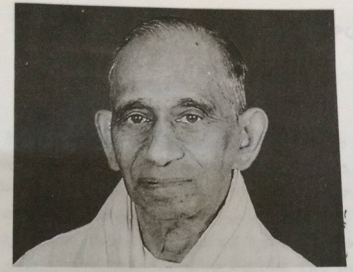
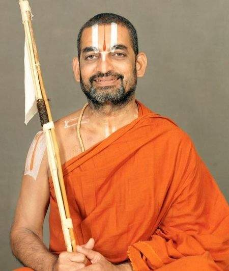
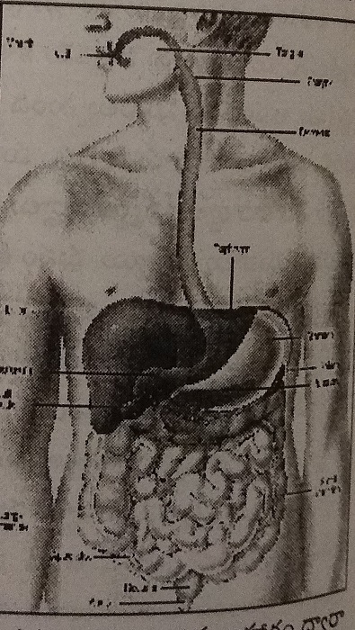
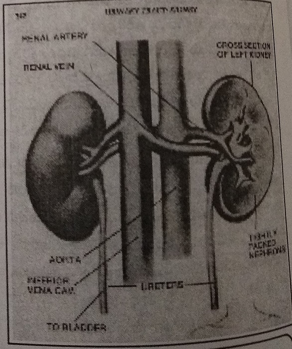
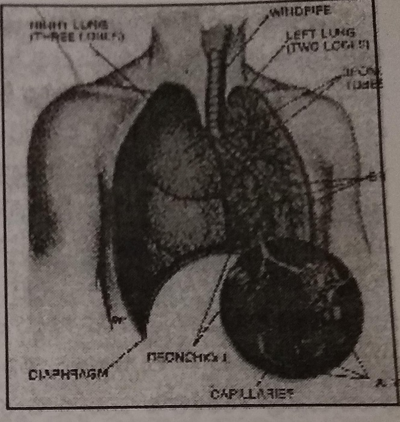
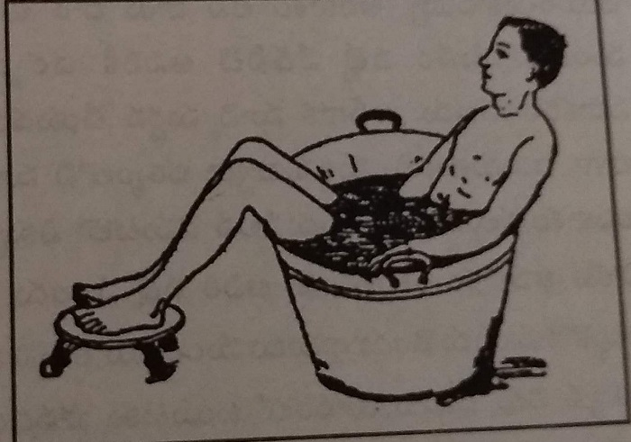
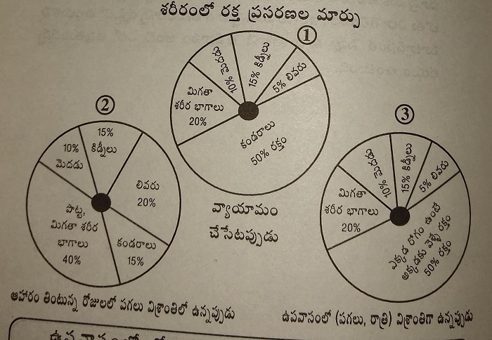
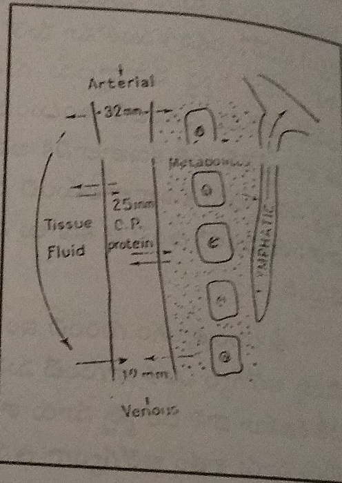

ఉపవాస ధర్మం
(సుఖజీవన సోపానాలు - 3)
సంపూర్ణ ఆరోగ్యాన్ని
సంరక్షించండి.
సర్వదా ఐశ్వర్యాన్ని
అనుభవించండి.
డా. మంతెన సత్యనారాయణరాజు
విషయ సూచిక
- నాటి కాలం - నేటి చికిత్స
- జీవి ధర్మం - ఉపవాసధర్మం
- ఉపవాసం అంటే ఏమిటి?
- ఉపవాసం ఎందుకు చేయాలి?
- ఉపవాసంతో రోగాలు ఎందుకు తగ్గుతాయి?
- ఉపవాసంతో చికిత్సలు
- ఉపవాసం ఎన్నిరకాలు?
- ఉపవాసంలో నిమ్మకాయ ప్రాముఖ్యత
- ఉపవాసంలో నీటి ప్రాముఖ్యత
- ఉపవాసంలో తేనె ప్రాముఖ్యత
- ఉపవాసంలో 'ఎనిమా' ప్రాముఖ్యత
- ఉపవాసం చేయాలనుకునే వారికి నా సలహా!
- ఉపవాసంలో మనస్సు ఎలా ఉండాలి?
- ఉపవాసం ఎలా ప్రారంభించాలి?
- ఉపవాసంలో మందులు ఎందుకు మానవచ్చు?
- ఉపవాసంలో ఎలా ఉంటుంది?
- ఉపవాసంలో నిద్ర ఎలా పడుతుంది?
- ఉపవాసంలో ఎందుకు ఆకలి వేయదు?
- ఉపవాసంలో ఎందుకు తినాలనిపించదు?
- ఉపవాసంలో ఎందుకు నీరసం రాదు?
- ఉపవాసంలో ఎందుకు వ్యాయామం చేయరాదు?
- ఉపవాసంలో చెడ్డ వాసనలు ఎందుకు వస్తాయి?
- ఉపవాసంలో మనస్సు ప్రశాంతంగా ఎందుకు ఉంటుంది?
- ఉపవాసంలో తింటే ఏమౌతుంది?
- ఉపవాసం 5, 6 రోజులు మాత్రమే చేస్తే ఏమౌతుంది?
- ఉపవాసం ఎన్ని రోజులు చేయాలి?
- ఉపవాసం ఎప్పుడు విరమించాలి?
- ఉపవాసం ఎలా విరమించాలి?
- ఉపవాసం అంటే నిరాహారదీక్షలు కాదు.
- ఉపవాసానంతరం ఆహరం యొక్క విశిష్టత.
- ఉపవాసానంతరం మామూలు ఆహరం తింటే నష్టమేమిటి?
- నేటి ఉపవాసాల కథ
- ఒక పూట తింటే అది ఉపవాసం ఎందుకు అవ్వదు?
- ఉపవాసం ఎన్నాళ్ళకొకసారి చేయాలి?
- ఉపవాసం ఏ వయస్సు వారు చేయవచ్చు?
- ఉపవాసాలు చేస్తే ఆయుష్షు ఎందుకు పెరుగుతుంది?
- చెడు అలవాట్లను వదులుటకు ఉపవాసమే శ్రేయస్కరం?
- ఉపవాస జీవన విధానంలోకి స్త్రీలు ఎందుకు మారాలి?
- ఉపవాసంలో బరువు తగ్గడం?
- ఊహాపోహలు - నిజానిజాలు
- అనుభవాలు - అనుభూతులు
- డా. ప్రతాప్ కుమార్ గారి అనుభవాలు
- డా. శ్రీనివాసరావు గారి అనుభవాలు
- సంపూర్ణ ఆరోగ్యం - డా. ఎన్. పి. వి. ఎస్. రాజు
- డా. సత్యవతి గారి అభిప్రాయాలు
- తలనొప్పి, హై.బి.పి. ఐపే లేదు
- లో బి.పి ఇబ్బంది పోయినది
- బైపాస్ ఆపరేషన్ తప్పింది
- గుండె బాగుపడింది
- లివర్ సిర్రోసిస్, గుండె జబ్బు నుండి బ్రతికాను
- టైఫాయిడ్ జ్వరం మరియు కామెర్లు తగ్గాయి
- కిడ్నీ ఆపరేషను తప్పింది, నెఫ్రోసిస్ తగ్గింది
- నాలుగు తరాల వారి గాధ (స్పాండిలైటిస్ తగ్గింది)
- నడుము నొప్పి నుండి నివారణ
- కీళ్ల నొప్పులు తగ్గాయి
- ఇన్సులిన్ బాధ తప్పింది
- ఎక్కువ షుగర్ తో 62 రోజులు ఉపవాసాలు
- అజీర్ణ వ్యాధి అనుభవం
- ఎసిడిటీ నుండి విముక్తి
- అల్సర్, అమీబియాసిస్ నివారణ
- కీళ్ళ - గ్యాస్ట్రిక్ బాధల నివారణ
- మలబద్దకం మటుమాయమైంది
- ఫుడ్ ఎలర్జీ (ఆహార పదార్థాల అలెర్జీ) పోయింది
- డస్ట్ ఎలర్జీ, సైనస్ ట్రబుల్ దూరమైనవి
- అంతుపట్టని అలెర్జీ తగ్గింది
- చుండ్రు, జుట్టురాలుట తగ్గాయి
- సోరియాసిస్ కుదిరింది
- సోరియాసిస్ వదిలింది
- దగ్గు, అతిమూత్రం, తెల్లమచ్చల నుండి విముక్తి
- ఆస్త్మా అదృశ్యమైయింది
- థైరాయిడ్ ప్రాబ్లమ్ తగ్గింది
- మైగ్రెయిన్ తలనొప్పి (పార్శ్వపు నొప్పి) నుండి విముక్తి
- పీరియడ్స్ ఇబ్బంది పోయింది
- సంతాన ప్రాప్తి కలిగింది
- 80 సంవత్సరాల వయస్సులో వణుకు తగ్గింది (షివరింగ్)
- హైకొలెష్ట్రాల్, హై ట్రైగ్లిజరైడ్స్, గౌట్ బాధల నుండి ఉపశమనం
- బరువు తగ్గింది
- అరికాళ్ళలో ఆనెలు తగ్గాయి
- ఉపవాసంలో ధ్యాన అనుభవాలు
- ఆధ్యాత్మికత పెరిగింది - ప్రకృతి వైద్య విధానం స్వీయానుభవం
- మానసికమైన ఒత్తిడి (మెంటల్ డిప్రెషన్)
- అసలైన ఆరోగ్యానికి సిసలైన అవసరాలు
- ముత్యాల గొడుగు
- మరొక్కమాట
ముఖ్య గమనిక
ముందుగా ఉపవాసాలు చేసిన తరువాత ఆహార నియమాలు పాటించడం బదులుగా ముందే ప్రకృతి జీవన విధానాన్ని, ఆహార నియమాలను తు.చ. తప్పకుండా 6 నెలలు ఆచరించిన తర్వాత దీర్ఘకాలిక ఉపవాసములు డాక్టరు గారిని సంప్రదించి మొదలు పెట్టడం అనేది అటు మీకు, ఇటు మాకు మరింత లాభదాయకం అని తెలియజేస్తున్నాము. అలాగే మీరు ఆచరిస్తారని ఆశిస్తూ.
ఇట్లు
ప్రకృతి జీవన విధానము
అంకితం

1942 వ సంవత్సరంలో గాంధీగారి పిలుపు నందుకొని 'క్విట్ ఇండియా' ఉద్యమంలో చురుకైన పాత్ర వహించినప్పటి నుండి అజరామరంగా సమాజానికి ఎటువంటి మంచి జరుగుతుందని తలచినా, అటువంటి కార్యాలకు మనసా, వాచా, కర్మణా తనవంతు కృషినందించే మహా మనిషి శ్రీ చింతలపాటి వరప్రసాద మూర్తి రాజు గారు.
1946 లోనే ప్రకృతి వైద్యం పట్ల ఆకర్షితులై, ఇటు ప్రభుత్వానికిగాని అటు సమాజానికిగాని పెద్దగా అవగాహనా లేని ఆ కాలంలోనే ప్రకృతి వైద్యాన్ని తన జీవన విధానంగా మలచుకొని సమాజానికి ఉపయోగపడేలా ప్రకృతి వైద్యానికి ప్రభుత్వ గుర్తింపు తెచ్చిన ఆదర్శపురుషులు, పితృ సమానులు అయిన మూర్తి రాజు గారికి "ఉపవాస ధర్మం" అంకితం.
- మంతెన సత్యనారాయణరాజు
శ్రీ మూర్తి రాజు గారి జీవిత సంగ్రహం
శ్రీ సి.హెచ్. వి.పి. మూర్తి రాజు - ఒక మహామనిషి
గాంధేయ వర్తి
బుధజనులకు స్ఫూర్తి
శ్రీ మూర్తిరాజు గారు ఆంధ్ర రాష్ట్రము నందు పశ్చిమ గోదావరి జిల్లాలోని 'చైనా నింద్ర కొలను' అనే కుగ్రామంలో క్షత్రియ వంశజుడిగా శ్రీ చింతలపాటి బాపిరాజు, సూరయమ్మ పుణ్యదంపతులకు 16, డిసెంబరు 1919వ తేదీన జన్మించారు.
స్వాతంత్ర్యోద్యమకాలంలో శ్రీ మూర్తిరాజు గారు స్టూడెంట్సు కాంగ్రెసు కార్యదర్శిగా పనిచేసి, గాంధీగారి పిలుపునందుకొని 'క్విట్ ఇండియా' ఉద్యమము నందు చురుకుగా పాల్గొన్నారు. పేద ప్రజల అభ్యున్నతి కోసం ఆయన తన జీవితాన్నంతా ధారపోశారు. సాగునీటి కాలువలు, మారుమూల ప్రదేశాలకు రహదార్ల అభివృద్ధికి ఎంతో కృషి చేసారు. కొల్లేరు సరస్సు పరిసర ప్రాంతంలో పేద ప్రజల వ్యవసాయ భూమి కొరకు అక్కడ ధనికులతో పోరాడి విజయం సాధించారు. పేద ప్రజల పెన్నిధి గనుకే ఆయన రాష్ట్ర శాసనసభకు 1952 నుంచి 1983 సంవత్సరం వరకూ అవిచ్ఛిన్నంగా ఎన్నికయ్యారు.
వినోభాజీ ప్రారంభించిన 'సర్వోదయ' ఉద్యమానికి శ్రీ మూర్తిరాజుగారు నాయకుడిగా పనిచేసి, మహాత్మగాంధీ, వినోభాజీల ఆదర్శాలకు నిజమైన అనుచరుడిగా 1961 వ సంవత్సరంలో అఖిల భారత సర్వోదయ సమ్మేళనాన్ని పశ్చిమగోదావరి జిల్లా ఉంగుటూరు నందు ఏర్పాటు చేసారు. డాక్టర్ బాబూ రాజేంద్ర ప్రసాద్, జయప్రకాష్ నారాయణ్, ఆర్యనాయకమ్ కృష్ణ చౌధరి, శంకర్ రావుదేవ్ మొదలగు నాయకులు హాజరైన ఈ సమ్మేళనాన్ని విజయవంతంగా నిర్వహించారు.
పత్రికా రంగం నందు కూడా ఈయన కృషి ఖ్యాతి గడించినది. హైదరాబాద్ లో 1961వ సంవత్సరంలో "ఆంధ్ర రత్న" తెలుగు పత్రికను స్థాపించి, సంపాదకీయ బాధ్యతలను నిర్వహించారు. అంతేకాక "వినోభా ఉపన్యాసాలు, మహాత్మాగాంధీ శతజయంతి ఉత్సవాల సందర్భంగా 100 పుస్తకాలు ప్రచురించారు. విద్యారంగంలో 'విద్యాజ్యోతి' పత్రికను ప్రచురించి విద్యాసేవ జరిపినారు. కొల్లేరు బహుళార్థసాధక ప్రాజెక్టు అనే గ్రంథాన్ని ఆంధ్రా౦గ్లములలో రచించారు.
హరిజనుల కోసం అనేక హరిజన కాలనీలను నిర్మించారు. కులరహిత సమాజము అనే ధ్యేయము కొరకు పాటుబడి ప్రయోగాత్మకంగా 50 కుటుంబాలకు సామూహికంగా వంట (Community Kitchen) నడిపించారు. పెదనింద్రకొలను గ్రామంలో 100 అడుగుల వ్యాసం గల గాంధీ భవనాన్ని, పేదలు, బాటసారుల కొరకు అనేక విశ్రాంతి గృహాలను నిర్మించినారు. భారత సేవక్ సమాజ్ అధ్యక్షుడిగా, గాంధేయవాదిగా గాంధీతత్వాన్ని, సిద్ధాంతాలను ప్రజలలో వ్యాపింపచేయుటకు 600 మైళ్ల పాదయాత్ర చేశారు. భారత్ సేవక్ సమాజ్ సహకారంతో పేద ప్రజలకు కాలనీలను నిర్మించి పెట్టారు. వినోభాజీ భూదాన యజ్ఞం కొరకు 100 ఎకరాలు, ఏలూరు మహిళా కాలేజీ కొరకు 100 ఎకరాలను దానం చేసారు. విద్యారంగంలో ఈయన చేసిన సేవ ఎన్నదగినది. శ్రీ చింతలపాటి బాపిరాజు ధర్మ సంస్థను స్థాపించి, ఆ సంస్థ ఆధ్వర్యంలో రాష్ట్రంలో 68 విద్యాసంస్థలను స్థాపించారు. వాటిలో 5 డిగ్రీ కళాశాలలు, 1 ఫిజికల్ ఎడ్యుకేషన్ ట్రైనింగ్ సెంటర్, 5 జూనియర్ కాలేజీలు, 3 ఓరియంటల్ కాలేజీలు, 28 ఉన్నత పాఠశాలలు, 23 ఓరియంటల్ ఉన్నత పాఠశాలలను మరియు 3 ఉన్నత ప్రాథమిక పాఠశాలలు స్థాపించి విద్యా పోషకుడిగా గణుతికెక్కారు. కళారాధకుడిగా ఛాయాగ్రహణం నందు అభిరుచి కలిగి "భారత కళా పరిషత్" అనే సంస్థను స్థాపించారు.
సమాజ సేవకుడిగా, సారస్వత పోషకుడిగా, విద్యాదాతగా, రాజకీయ నాయకునిగానే కాక ప్రకృతి వైద్య విధాన సంకర్తగా, ప్రకృతి జీవన విధానాన్ని అనుసరిస్తూ ప్రకృతి వైద్య అభివృద్ధికీ, గుర్తింపుకీ కూడా సకల విధాలా పాటుపడినారు. శ్రీ మూర్తి రాజుగారు ప్రకృతిని అనుసరించడమే తన జీవన విధానంగా మలచు కొనుటకు గల నేపథ్యాన్ని ఒకసారి పరికిద్దాం.
శ్రీ సి.హెచ్.వి.పి మూర్తి రాజు గారికి బాల్యం నుంచి ఆరోగ్యం సరిగా ఉండేది కాదు. ఆనాడు దేశంలో వైద్యసదుపాయాలు తక్కువ. ఎల్.యం.పి. డాక్టర్లు తాలూకా కొకరుండేవారు. గ్రామంలో ఎవరికి జబ్బు చేసినా ఆయుర్వేదం తెలిసిన వారు వచ్చి మందు ఇచ్చేవారు. అవీ ఉచితంగా ఇచ్చేవారు. ఆ రోజులలో వైద్యం పరోపకారంగానూ బాధ్యతగానూ తలచేవారు. బాల్యంలో వీరికి ఒళ్ళంతా గజ్జి కురుపులతో రాత్రులు నిదుర ఉండేది కాదు. ఒళ్ళంతా ఒకటే దురదలు. పడుకుందామన్నా వీలుండేది కాదట. లాగు, చొక్కా తొడుక్కోవడానికి వీలుపడని పరిస్థితి. తుండు కట్టుకొని ఉండేవారట. అందుకనే వారికి చదువు రాలేదన్నారు.
1946 అసెంబ్లీ ఎన్నికల సమయంలో వీరికి కాళ్ళ నొప్పులు విపరీతంగా ఉండేవి. పార్టీ పరంగా ఎన్నికల ప్రచార బాధ్యత వీరి భుజస్కంధాలపై పడింది. కనుక ప్రచారం తప్పదు. ఇటు చూస్తే భరించలేని కాళ్లనొప్పులు. డాక్టరు ములుపా రంగయ్యగారు చికిత్స చేసి విశ్రాంతి తీసుకోమన్నారు. ఎన్నికల గురుతర బాధ్యతల వలన విశ్రాంతి తీసుకోవడానికి వీలుపడలేదు. నరాలలో గునపాలతో పొడిచినట్లుండే బాధను తట్టుకోలేక రైలుక్రింద పడటం నయం అనుకొనేవారట. అంతటి బాధలో కూడా ప్రచారానికి వెళ్ళక తప్పలేదు. కారులో ఇద్దరిని రెండు వైపులా కుర్చోబెట్టుకొని ఎల్లప్పుడూ కాళ్లు, చేతులూ పిసికించుకుంటూ ఉండేవారు. కారు దిగి ఉపన్యాసం చెప్పటం, కారు ఎక్కడం, మళ్ళీ కాళ్ళూ, చేతులు ఒత్తించుకోవడం ఈ విధంగా ఎన్నికల ప్రచార బాధ్యతలు నెరవేర్చారు.
పిమ్మట వైద్యం నిమిత్తం రాజమండ్రి డా. (డి.యస్. రాజు) కల్నల్ రాజుగారి ఆసుపత్రిలో చేరారు. నాలుగు నెలలు వైద్యం జరిగినా మార్పు లేదు. అట్టి స్థితిలో శ్రీమూర్తి రాజుగారు ప్రకృతి వైద్యం వైపు దృష్టి సారించారు. ప్రకృతి ఆశ్రమ వైద్యులు శ్రీ వేగిరాజు కృష్ణంరాజు గారికి తన పరిస్థితిని చెప్పి ఆశ్రమానికి రమ్మంటారా అని అడిగారు. కృష్ణంరాజు గారు తప్పక తగ్గుతుంది రమ్మన్నారు. ఆ విధంగా వైద్యం కోసం ప్రకృతి ఆశ్రమంలో చేరారు.
ఆశ్రమ వైద్య విధానం ఒక వారం పాటించాక నిద్ర పట్టడం మొదలయ్యింది. గాఢనిద్ర పడుతుంది. రెండు నెలలకు పూర్తి ఆరోగ్యం సమకూరినది. ఆ విధంగా మూర్తిరాజుగారు ప్రకృతి వైద్యం యొక్క విశిష్టతను స్వానుభవంగా తెలుసుకున్నారు. తెలుసుకొనడమే కాక ప్రకృతి వైద్యాన్ని ప్రోత్సహించి, ఆదరించి తనకు కలిగిన మేలును సమాజంలో అనారోగ్యానికి గురి అయిన ప్రతి ఒక్కరూ పొందాలని సద్భావించారు. అందుకోసం వారు చేసిన కృషి అనన్య సామాన్యం.
1952 లో మద్రాసు అసెంబ్లీకి శ్రీ మూర్తిరాజు గారు ఎం. ఎల్.ఏ.గా ఎన్నికైనారు. 1956 లో విశాలాంధ్ర ఏర్పడినది. హైదరాబాదు రాష్ట్ర రాజధాని అయినది. కీ.శే. కళా వెంకట్రావు గారు ఆరోగ్యశాఖా మంత్రిగా ఉన్నారు. అపుడు ప్రకృతి వైద్య విధానానికి అనుమతి లేదు. అనుమతిలేనిదే వైద్యం చేయరాదు. కనుక అనుమతి కోసం మూర్తి రాజు గారు మంత్రిని కోరడం జరిగినది. మంత్రిగారికి ఈ వైద్యంపై నమ్మకం లేని కారణంగా అనుమతి నిచ్చుటకు అంగీకరింపనని చెప్పినారట. మూర్తిరాజుగారు అందుకు ఒప్పుకోక తన స్వానుభవాన్ని వివరించి, పట్టుబట్టి ప్రకృతివైద్య విధానమునకు అనుమతి లభింపచేసినారు. అంతటితో ఆగలేదు. వీరి కృషితో ఆశ్రమంలో ప్రకృతి వైద్య కళాశాలను స్థాపించారు. దానికి ప్రభుత్వ అనుమతి లేదు. అందువలన ఆ కళాశాలలో చదివి పాసైన వారు వైద్యము చేయుటకు వీలు లేదు. చాలా చోట్ల ప్రకృతి వైద్య కళాశాలలున్నవి. వాటిని ఏ ప్రభుత్వమూ అనుమతించలేదు.
ప్రకృతి వైద్యానికి ప్రభుత్వ అనుమతిని సంపాదించడంలో శ్రీరాజుగారు తృప్తి పడలేదు. వారు స్థాపించి, పోషించుచున్న ప్రకృతి వైద్య కళాశాలకు కూడా ప్రభుత్వ అనుమతిని సాధించవలెననెడిది వారి ప్రగాఢమైన కోరిక. ప్రకృతి వైద్య విధానము చేసుకొన్న పుణ్యమేమొ అన్నట్లుగా శ్రీరాజుగారు 1972 లో ఆంధ్రప్రదేశ్ ప్రభుత్వంలో దేశీయ వైద్య మంత్రి అయ్యారు.
అయిందే తడవుగా ప్రకృతి వైద్య కళాశాలకు అనుమతి ఇవ్వాలని తలచారు. అక్కడ వారికి చుక్కెదురైనది. ప్రభుత్వయంత్రా౦గ౦ వారి నిర్ణయానికి అనుకూలంగా లేదు. "ఇది సైన్సు గాదు, కనుక సరియైనది గాదు". అనేదివారి వాదన అయినప్పటికీ శ్రీరాజుగారు ప్రకృతి వైద్యకళాశాలకు అనుమతి కొరకు ఫైలు పెట్టమని పి.ఎ. ను కోరారు. పి.ఎ.కీ కూడా ఇష్టంలేక సెక్రటరీ గారు ఫైలు పెట్టాలి అపుడు మీరు చేయాలి అనిచెప్పారు. కొన్ని రోజులు గడిచాయి. పి.ఎ. తో ఒకరోజు సెక్రటరీని ఫైలు పెట్టమను లేనిచో నేనే స్వయంగా వ్రాసి పంపిస్తా అని చెప్పారు. విధిలేక ఫైలు వచ్చింది. దానిమీద ఆనాటి వైద్యశాఖా మంత్రిగా ఈ విధంగా నోట్ వ్రాశారు.
"ప్రకృతి వైద్యమును గూర్చి ప్రభుత్వాధికారులకు ఏమీ తెలియదు. నాకు తెలుసు. పైగా అనుభవము కలదు. కనుక నేను ప్రకృతి వైద్య కళాశాలకు, కళాశాలలో inception నుండి అనుమతించడ మైనది". అంతే అనుమతి అమలులోకి వచ్చినది.
ప్రకృతి విధానాన్ని తన జీవిత విధానంగా మలచుకున్న ఆదర్శ పురుషుడు శ్రీ మూర్తి రాజుగారు. దానికి నిదర్శనంగా :
ఆయన జీవితంలో ఒక ప్రముఖ ఘట్టం....... 1989వ సంవత్సరంలో ఎన్నికల హడావిడి, తీవ్రమైన ఒత్తిడి, సంచారం వలన ఒక సంవత్సరం పాటు ప్రకృతి నియమాలన్నీ వదిలి వేసి తిరుగ వలసి వచ్చినది. ఫలితంగా మూర్తిరాజు గారికి గుండె పోటు రావడంతో భీమవరం, హైదరాబాదు, నిమ్స్ లోనూ పిమ్మట మద్రాసు విజయ హాస్పిటల్ లో చేర్చారు. వైద్యులు బైపాస్ సర్జరీ చెయ్యాలన్నారు. రాజు గారు "సర్జరీ చేస్తే ఎంతకాలం బ్రతుకుతాను?" అని ప్రశ్నించారు. దానికి వైద్యులు ఇంకొక 10 సంవత్సరాలు బ్రతకవచ్చు. అయినప్పటికీ నిరంతరం మందులు వాడుతుండాలి అన్నారు.
"ఆపరేషనూ వద్దూ, ఏమీవద్దూ నేనింకా 30 సంవత్సరాలు బ్రతకాలి. ఒక వేళ ఆపరేషన్ లేక మరణించినా నావల్ల దేశానికి వచ్చే నష్టం ఏమీలేదు, ప్రకృతి వైద్యం ద్వారానే నాగుండెను బాగు చేసుకుంటాను అని ఆపరేషన్ విరమించుకున్న ధీశాలి. అప్పటి నుంచి ప్రకృతి నియమాలను క్రమం తప్పక, క్రమశిక్షణతో ఆచరిస్తూ ఏవిధమైన మందులూ వాడకుండా సంపూర్ణ ఆరోగ్యాన్ని పొంది, పునరుజ్జీవితులయ్యి ఆధునిక వైద్య విధానానికొక సవాలు విసిరారు. ఈవిధంగా తన ప్రకృతి జీవన విధానమే తన సందేశంగా మలచిన శ్రీ మూర్తిరాజు గారు ధన్యులు, మాన్యులు, మనందరికీ మార్గదర్శకులు.
గత మూడు సంవత్సరాలుగా ఆయనతో కలిగిన పరిచయ భాగ్యం నాకు మార్గదర్శకత్వాన్నిచ్చినది. సత్యశీలి, అహింసామూర్తి, ప్రకృతి ప్రేమికుడు అయిన శ్రీమూర్తిరాజు గారు నిజమైన గాంధేయవాదిగా వర్తించి తన జీవితాన్నే మన కొక సందేశంగా చూపారు. వారికి ఈ ఉపవాసధర్మం పుస్తకాన్ని అంకితం గావించడం అనువర్తిగా నా కనీసధర్మంగా, అదృష్టంగా భావిస్తూ....... కృతజ్ఞాభివందనాలతో..........
మంతెన సత్యనారాయణరాజు
ఆశీర్వచనములు

శ్రీమన్నారాయణ స్వరూపులు
హెచ్.హెచ్.త్రిదండి చిన్న శ్రీమన్నారాయణ రామానుజ జీయర్ స్వామి
తేదీ: 21-9-1998
ప్రియ శ్రీమాన్ డా. యం. సత్యనారాయణరాజు గారు!
శ్రీమతే నారాయణాయనమః అనేక మంగళా శాసనములు!
"నానృషిః కురుతే కావ్యం" అని ఒక సంస్కృత సూక్తి. ఋషి కాని వాడు కావ్యాన్ని ఆవిష్కరించలేడు అని దీనికర్థము. 'కావ్య' మంటే నిత్య నూతనంగా భాసిల్లే భావాలను ఆవిష్కరించడంతో పాటు అవి ఆచరణ యోగ్యాలుగా అందించడం. 'ఋషి' అంటే చూసినవాడు. జరుగుతున్నదాన్ని, జరిగిన దాన్ని, జరగబోయే దాన్ని కూడా చూడగలవాడు. ఊరకచూస్తే ఉపయోగమేమి ఉంటుంది? జరిగిన దాన్ని భావించి, జరగవలసిన దాన్ని దర్శించి, వర్తమానంతో సమన్వయం చేస్తూ జీవన విధానాన్ని అందించగలవాడు. మీరు ఆ కోవకి చెందుతారు. మీరందించే ఈ "ఉపవాసధర్మం" గ్రంథాన్ని చూస్తే ఆ విషయం స్పష్టపడుతుంది.
గ్రంథానికి పేరెట్లా ఉన్నా నిరాడంబరంగా జీవిస్తూ, నిత్య యౌవ్వనంతో నిలువగలిగే జీవన విధానాన్ని ఈ గ్రంథం స్పష్టపరుస్తోంది. అల్పాయాసంతో అతి విలువైన జీవనాన్ని సాధించే విధానమీ గ్రంథం. అల్ప శ్రమతో అధికశక్తిని సాధించే ఆచరణ విధానమీ 'ఉపవాస ధర్మం' గ్రంథం. సులభ సాధన - సుఖమయ జీవనం ఎలా సొంతం చేస్కోవచ్చో సోదాహరణంగా నిరూపించినదీ "ఉపవాసధర్మం" గ్రంథం. సామాన్య ప్రక్రియలతో - అసామాన్య జీవన మూల్యాలను పెంచి యిచ్చే 'కరదీపిక' మీ 'ఉపవాసధర్మం' గ్రంథం. ప్రకృతి సహజమైన పద్ధతితో పవిత్ర జీవన లక్ష్యాలను స్పష్టంచేసేదీ గ్రంథం. ఆరోగ్యమే మహాభాగ్యం అంటారే. ఆ సుసంపన్న ఆరోగ్యానికి సహజసులభ ప్రక్రియ మీ గ్రంథం. అందరికీ అందుబాటులో ఆనందదాయకమైన ఆరోగ్యం ఎలా పరిరక్షించుకొంటూ జీవించవచ్చునో చాలా చక్కగా వివరించిన మీ గ్రంథం చాలా బాగుంది. ఎంతో అనుభవజ్ఞులయిన వారు గూడ వ్రాయలేని విధంగా అతిసులభమైన లలితమైన భాషలో ఉన్న మీ గ్రంథం కాస్త రుచి ఉన్నవారిని తనంతటనే చదివిస్తుంది. అందులో ప్రవర్తింపచేస్తుంది గూడ.
విషయావిష్కార విధానం గూడ ప్రతివారినీ ఉత్తేజపరచి అందులోని వాస్తవాన్ని ఆలోచింపచేసేదిగా ఆచరింపజేసేదిగాను ఉంది. ధరలు ఆకాశాన్నంటే ఈ రోజుల్లో సామాన్యుని బ్రతుకులు మాత్రమేగాక ఉన్నత తరగతి వారి జీవితాలు కూడా క్లిష్టమవుతున్నాయి. ఆరోగ్యములు చూద్దామా అంటే మరీ బలహీనములై దేనికీ స్వయంగా తట్టుకోలేక ఓషధులమీదనే ఆధారపడేటట్టు చేస్తున్నాయి మనిషిని. ఇక ఆహారాలను చూద్దామా అంటే అన్నీ రసాయనాల తయారీలే, సహజత కోల్పోయిన కృత్రిమ రూపాలు. రంగులు, రుచులు, శక్తి గూడ కృత్రిమమయ్యేట్టు చేస్తున్నాయి. వాతావరణం కలుషితమని అందరికీ తెల్సు. ఇలాంటి స్థితిలో మనిషి తనలోంచే సహజంగా తట్టుకునే శక్తిని పెంపొందించు కోవాల్సిన అవసరం ఉంది. బయటి కాలుష్యాలని ఎదుర్కోగలిగే స్వయం శక్తిని ఏర్పరచుకోవలసి ఉంది, సముపార్జించు కోవలసివుంది. ప్రస్తుతమున్న వైద్య విధానాలు ఇందుకనుకూలంగా లేవు. దీనికొక సులభమైన, సమర్థవంతమైన, అల్పవ్యయకరమైన, శాస్త్రీయమైన తరణోపాయ మన్నట్లుంది మీ 'ఉపవాధర్మం' అనే గ్రంథం.
ఏది సాధించాలన్నా మనిషిలో మొదటలో లక్ష్యశుద్ధి ఉండాలి. "నేను ఇది చేసి తీరాలి, ఇంత వరకు చేయాలి, ఇంత వరకు సాధించాలి" అనే పట్టుదల ఉండాలి. అది ఉన్న వ్యక్తికి అసలు బయట ప్రోద్భలకాలు ఏమీ అవసరమే లేదు. దృఢమైన చిత్త సమాధానం ఉన్న వ్యక్తి దేనికీ చలించడు. వాని మనస్సు అన్నీ విధాల వాడికి తోడుంటుంది. అలాంటి వాడు ఏ అస్వస్థత ఏర్పడ్డా తన మనస్సు మీదనే ఆధారపడతాడు తప్ప బయటి విషయాల మీద కాదు. మరి అందరికీ ఆ దృఢచిత్తత ఉండదు. అయినా బాగుపడాలనే ఆశ మాత్రం అయితే ఉంటుంది. ఆ మాత్రం ఉన్న వారికైనా ఓ క్రమపద్ధతిలో ఆరోగ్య సోపానాలు అధిరోహించి, ఆనంద సింహాసనం అధివసించే యోగ్యత కల్గించాలి. మీ వైద్య విధానం దానిని కరతలామలకం చేస్తోంది.
పైకి సులభంగా, సుఖకరంగా ఉండేవన్నీ పర్యవసానంలో పరమ దారుణంగా స్వరూప నాశాన్ని కల్గించే తామసాలని, పైకీ పర్యవసానంలో గూడ ప్రయాస జనకంగా ఉండేవి రాజసాలని, ఆరంభంలో కాస్త శ్రమగా ఉన్నట్లనిపించినా పర్యవసానం పరమాద్భుతంగా, పరమానందదాయకంగా ఉండేవి సాత్విక ప్రక్రియలని శ్రీ కృష్ణభగవానుడే భగవద్గీతలో తెలిపినాడు. మీ ప్రక్రియే దానికి నిదర్శనం. ఇందులోనికి ప్రవేశించడానికి కాస్త మనోనిబ్బరముంటే చాలు. ఓసారి రుచిచూసిన తర్వాత తనంతటనే క్రమంగా రుచిని పుట్టించుకుంటూ సాధన చేసేట్టు చేస్తుంది. ఆరోగ్యం లేని వారికి ఆరోగ్యాన్నిచ్చి, ఆరోగ్యవంతులకు ఆనందాన్ని పెంచే ప్రక్రియను అనుభవం గడించిన మీరందించడం మాకెంతో తృప్తినిస్తోంది. సహజమైన, నియమబద్ధకమైన, శాస్త్రీయమైన జీవనం సాగించేవారికి ఏ ప్రక్రియా అవసరం లేదుగదా! అలాంటి వారు "పంచకాల పరాయణులు". అంటే వారు తాము లేచినప్పటి నుండి నిదురించేటంత వరకూ ఉండే కాలన్నంతటినీ 5 భాగాలూ చేసుకొని భగవదారాధనగా దాన్ని భావించి జీవిస్తారు. అలాంటి వారు భగవదారాధన గూడ జరిపి, అప్పుడు భగవత్ప్రసాదంగానే ఆహారాన్నంతనూగూడ గ్రహిస్తారు. చివరికి జలం గూడ. అంటే అలా భగవన్నివేదితమైన ప్రసాదంతో దేహధారణకనువైనంత మాత్రం గ్రహిస్తూ మనశ్శక్తిని పెంపొందించుకుంటారు. భగవంతుడే వారికి లక్ష్యం గనుక భగవంతుని వైభవానికి తగినట్టు ఆహారాదులు షడ్రసోపేతంగ తయారు చేస్తారు. దాంట్లో తమ రుచి అంటూ ఏమీ లేకుండా కేవలం "ప్రసాదబుద్ధితో మాత్రమే" అవసరమైనంత మాత్రం స్వీకరిస్తూ వుంటారు. అలాంటి వారు శాస్త్రం విధించిన రీతిలో మాత్రం "ఉపవాసాలు" గూడ చేస్తారు. ఆ ఉపవాసాలు, వాటి నియమాలు వేరు. భగవత్ప్రీతికరం 'ఏకాదశ తిథి' కనుక దాన్ని 'హరి వాసర' మంటారు. ఆనాడు మనస్సుపై చంద్రుని ప్రభావముండును. తమోమయమైన పదార్థాలను ఆనాడు ఆహారంగా గ్రహిస్తే ఆ ఆహారము మనస్సునకు ప్రోద్భలకం కనుక తమోగుణం మనస్సులోని భగవన్నిష్ఠను చెదురుస్తుందని, ఆనాడు నిరాహారంగ ఉండటం శాస్త్రం విధించింది. ఆనాడైనా భగవచ్చరణామృతం, ఆయనకు నివేదించిన ప్రసాదాన్ని మృగముద్రతో పట్టేటంత అంటే ఓ మామూలు రేగుపండంత భగవత్ప్రీతి కోసం గ్రహించాలి. అప్పుడే ఆ ఉపవాసం సరి అయినది. బయట భగవన్నివేదన కావించిన తర్వాత హృదయగుహలో ఆ భగవానుడే ఉంటాడని, ఆయనే మన నాలుక ద్వారా ఆ పదార్థాన్ని రుచి చూస్తాడని వేదం చెప్తోంది. ఆ విశ్వాసంతోటే పై రీతిలో స్వీకరిస్తారు తప్ప తన కడుపు నిండడానికి గాదు. మిగిలిన ఏకాదశితిథి అంతా పూర్తి నిరాహారంగా, జలస్వీకరణగూడ లేకుండా ఉంటారు. జలం గూడ ఉపవాసాన్ని భంగపరచేదే. అసలు గాలి తప్ప లోపలికి ఇక ఏది వెళ్ళినా ఉపవాసం పోయినట్లే. ఒక్క భగవత్ప్రసాదమే, అదీ ఆరాధనానంతరం ఒక్కసారే అంగీకరించారు. అంబరీషోపాఖ్యానంలో రాజు 'సలిలభిక్షణంబు సమ్మతంబు' అంటూ అది గూడ ఉపవాసం పూర్తిచేసినట్లు 'పారణ' చేసినట్లే కనుక ద్వాదశి ఘడియలుండగానే జలపానం చేసాడని ప్రసిద్ధి. దీన్ని బట్టి జలం త్రాగడం గూడ ఉపవాసం చేసేటప్పుడు చేయరు. ఏకాదశి తప్ప మిగిలిన సమయాలలో ఉపవాసాలు శాస్త్రీయాలు కావు. ఇప్పుడు సామాన్యులు చేస్తున్నట్టు ఒక్కొక్క వారం ఒక్కొక్క దేవత పేరు చెప్పి ఆహారం మానడం శాస్త్రీయ విధులలో చేరదు. ఆహరం ఎంత, ఎలా, ఎప్పుడు, దేనిని తీస్కోవాలనేది శాస్త్రం స్పష్టంగా చెప్పింది. ఆ నియమం ప్రకారం రెండు యామముల కాలం అతిక్రమించరాదట ఆహార గ్రహణలో, అంటే 6 గంటలన్నమాట. అయితే ఆ గ్రహించేది ఏమిటి, ఎంత అన్న దాన్ని బట్టి ఉంటుంది మిగిలినదంతా. ఇది గ్రహించి చేసిననాడు భగవంతుడేర్పరచిన షడ్రుచులు గూడ పరిగ్రహించదగినవే తప్ప ఏదీ వదలక్కర్లేదు. అలాంటి వారికి దేహం, ఇంద్రియాలు, మనస్సు, బుద్ధి గూడ స్వాధీనంలో ఉంటాయి. అయితే ఇప్పుడుండే జనులు నూటికి 96 శాతం ఆ శాస్త్రీయ విధులకు అతీతులై బ్రతికేవారే. అందుకే వారికి ఆరోగ్యాలు చెడి, వైద్యులు అవసరమైయ్యారు. మనోబుద్ధుల సంగతి దేముడెరుగు, శరీరంమీద గూడ సామాన్యమైన నియంత్రణ లేకుండా పోయింది. ఏ కాస్త ప్రాకృతిక ఆటుపోట్లు వచ్చినా, పెనుగాలిలో దూది పింజలా ఎగిరిపోతుంటారు. నిగ్రహంలేని ఆహారాలు, శరీరాలలో అర్థంకానంత అనర్థాలను చేర్చి కూర్చిపెట్టేసరికి అర్థంలేని వైద్యాలతో దిన దిన గండం వెయ్యేళ్ళాయుష్షులా బ్రతకలేక బ్రతుకులు వెళ్లదీసే స్థితిలో సంసారాలు సాగిస్తున్నారు.
ఇలాంటి వారిని తిరిగి ప్రాచీన ఋషుల స్థాయికి చేర్చాలంటే అంత పరిశుద్ధమనస్కులుగా తీర్చిదిద్దాలంటే సులభమా? ఇంద్రియాల పంజరంలోంచి బయటకు తెచ్చి ఇంద్రియాలను ఆధీనంలో ఉంచుకునేట్టు బలవంతులను చేయాలంటే ఓ పట్టాన జరిగేదా? దానికంతా అంగీకరిస్తారా? చేదు శక్తులను కోరి కోరి మనుష్యులు ఆర్జించుకున్నవారాయె, ఎవరైనా తీసేస్తామంటే, తొలగిస్తామంటే ముందర వీళ్ళకే బాధ. కష్టార్జితాలను ఎలా వదిలేస్తామో! అని అందుకే అలాంటి వారి నుండి వాటిని వారికి గూడ తెలియకుండా అపహరించి వేయాలి. దానికి తగినట్టు పైకి ఆకర్షకంగా, లోపల అతి సమర్థవంతంగా పనిచేసే ప్రక్రియ కావాలి. అటు శరీరం బలహీనపడరాదు, మనస్సు బెంబేలు పడకూడదు, మలినాలు తొలగాలి, దోషాలకు దూరంగా ప్రవర్తించాలి. ఇలా మనిషిని తీర్చిదిద్దడానికి గతంలో ఎన్నో ప్రకృతి చికిత్సా విధానాలు ఉన్నాయి, ప్రక్రియలూ ఉన్నాయి, చిన్న చిన్న గ్రంథాలూ ఉన్నాయి, కాని మీ గ్రంథం చాల పెద్దది. రుచి పుట్టించేది. లోలోపలికి తీసుకు పోయేది. సమగ్ర లోపాలను తగ్గించుకుంటూ తయారైన దివ్యప్రక్రియ. చాలా బాగుంది.
ఉప్పు మానివేయడం ఒక్కటి శ్రమ తప్ప మిగిలినవి అన్ని రుచులూ మీరు సంస్కరించి అందుకునేట్టు చేసారు. అసలు అది గూడ సంస్కరించే అవకాశముంటుందేమో పరిశీలించాల్సిన అవసరం ఉంది. ఎందుకంటే మన శాస్త్రాలలో "షణ్ణాం రసానాం లవణం ప్రధానం" అన్నారంటే ఉప్పు గూడ అవసరమే అవుతుంది. జలం అధికంగ ఉన్న భూమి మీది ప్రాణులు ఆ అధిక జలాన్ని ఉప్పుగానే చూస్తున్నాయి. ఆ జలమే జీవరాశికి జీవనాధారంగా ఉంది. దాని పరిణామమే అయిన మానవ శరీరం గూడ 60 శాతం జలంతో ఉండి, ఆ జలంలో ఉప్పు తగిన రీతిలో ఉన్నప్పుడే సురక్షితంగా ఉంటుంది. లేకపోతే శరీరస్థితి క్రమంగా స్వీయరక్షణ శక్తిని కోలుపోవచ్చు. మన భారతీయులు రుచులను ఆహారంలో క్రమపద్ధతిలో అలవాటు చేశారు గనుక భారతీయుల చర్మం అన్నిరకాల వాతావారణానికి తగినదీ, త్వరగా రోగాలకు నిలయం కానిదీ అయింది. ఇది యుగాల ఆహార అలవాట్లలో తయారైనదే తప్ప ఏళ్లకాలంలో కాదు.
అయితే ఉన్న నియమాన్ని అనాదరించారు జనులు. అధికంగా వాడారు కనుక ఇప్పుడు కొంతకాలం దాన్ని వదలినా ఏ ప్రమాదం లేనంత నిల్వ లోపల ఉండి పోయి ఇబ్బందేమీ కల్గించదు. ఇది కొన్ని తరాల వరకూ గూడ కొనసాగవచ్చన్నా ఆశ్చర్యం లేదు. అయితే అదే "జీవన విధానం" కాలేదు. మీరు యిచ్చిన సహజ ప్రక్రియ తరతరాలుగా అందరిలోనూ ఉండి పోవాలి. అందరూ దీన్ని ఆచరించే వారు కావాలి. ఆరోగ్యవంతులూ కావాలి అనుకున్నప్పుడే, యుగాల ఆచారం వెనుక ఆశయాలు చూడవల్సి ఉంది. ప్రపంచంలో ఇతర లవణ రహిత ఆహరం గ్రహించే వారి కంటే మనవారి వైలక్షణ్యం గమనించవలసి ఉంది. దీన్ని మీరు అలోచించి దీని విషయంలో పరిశోధించవలసి ఉంది. అయితే ఇప్పుడు సాగే వైద్య విధానాన్నాచరించే వారికందరికీ ఉప్పు పూర్తిగ మానివేసి కొంతకాలం ఉండటం చాల మంచిదే. అందులో మాకేమీ విరుద్ధాభిప్రాయం లేదు.
ఇక మీరు చిన్నవయస్కులైనా స్వయంగ అనుభవించి, ఆచరించడం వల్ల మీ ప్రతి మాట అనుభవపూర్ణమై ఎదుటి వ్యక్తికి సూటిగ హృదయంలో చేరి స్పందింప చేయడమే కాక, ఆచరింప చేసేదిగానూ ఉంటుంది. భగవంతుడు మీకు దాన్ని బాగ ఆవిష్కరించగలిగే శక్తిని యిచ్చాడు. దానికి తోడు ఆధునిక విద్యలో, విజ్ఞాన శాస్త్ర ప్రవేశం, శారీరక శాస్త్ర పరిచయం గూడ ఉండటం బంగారానికి అబ్బిన తావియే. మీరందించే ఈ 'ఉపవాస ధర్మం' నిజమైన ఆరోగ్య స్వరూపుడైన భగవంతుని సన్నిధిలో జనసామాన్యం నివసించేటట్టు చేయాలని, వారి మనస్సులను ధార్మిక, సాత్విక శక్తితో సమగ్ర శ్రేయస్సు వైపు నిలుపగలిగేది కావాలని మేము హృదయపూర్వకంగా మంగళాశాసనాలు చేస్తున్నాం.
ప్రకృతిలోవీ, జీవితానికి సంబంధించినవీ అయిన అనేక ఔపనిషధ రహస్యాలను లోకానికి అందించిన వారు చాలామంది ప్రభువులే, రాజులే. అందులోనూ 'ఆహారం సంస్కరించుకో ఆరోగ్యం నీ చేతుల్లోదే, ఆనందం నీ ముంగిటే' అంటూ వైశ్వానరోపాసనను 6గురు మునులకు ఉపదేశించిన వాడు ఓ రాజు, అశ్వపతి అనే మహానుభావుడని ఉపనిషత్తు చెప్తోంది. ఆ అంశమే మీలో పనిచేస్తూ ఉండి ఉంటుంది. 'ఉపవాసం'తో పాటు అత్యుత్తమ ఆరోగ్యం, అతి సులభ సాధనము అయిన సహజ వైద్య విధానాన్ని లోకం చేరువలోకి తేగలుగుతున్నారు. భగవంతుడు మీ ద్వారా తనదైన ఈ సమాజాన్ని సవ్యంగ తీర్చి దిద్దుకొనుగాక! ఎవరి శ్రేయస్సు కోసం దాన్ని అందిస్తున్నారో వారంతా దాన్ని తమదిగా స్వీకరించు గాక!
- హెచ్.హెచ్.త్రిదండి చిన్న శ్రీమన్నారాయణ రామానుజ జీయర్ స్వామి
ముందుమాట
శ్రీ సత్యనారాయణ రాజు గారు నాకు సంవత్సర కాలం నుంచి పరిచితులు. వారు అకుంఠిత దీక్షతో మన ప్రాచీన సాంప్రదాయమైన ప్రకృతి వైద్యాన్ని మరల ప్రాచుర్యంలోకి తీసుకురావడానికి చాలా కృషి సల్పుతున్నారు. ఇప్పటి మన వైద్య ఆరోగ్య సమస్యలు అన్నీ కూడా మన జీవిత విధానంతో ముడిపడ్డాయని భావిస్తారు. ప్రస్తుత జీవిత విధానంలో శరీరానికి తగినంత శ్రమ లేకపోవడం, తరువాత భోజన సదుపాయాలు ఎక్కువ కలిగి ఉండడం, నియమం పాటించకుండా అన్నివేళలా భోజనం చేయడం. ఈ కారణాల వలన అనారోగ్యం చేకూరుతుంది. ప్రస్తుత వైద్య పద్ధతిలో రోగానికి మందు ఇస్తున్నారు. కాని నియమావళితో, క్రమశిక్షణతో జీవితాన్ని గడపలేకపోతున్నాము. శ్రీ రాజు గారు ప్రతి వ్యక్తి దగ్గరకు వెళ్ళి, నియమంతో భోజనం చేస్తే మనిషికి జబ్బులు రావటానికి అవకాశం లేదు అని తను నమ్మినదాన్ని మిగిలిన వాళ్ళకు నమ్మకం కలుగజేస్తారు. ఈ విధానంలో ఉపవాసం ముఖ్యమైన భాగం. ఉపవాసం వలన మన శరీరంలో ఏర్పడిన చెడ్డ పదార్థాలు బయటకు పోయి మళ్ళీ శరీరంలో స్వచ్ఛమైన రక్తం ప్రవహిస్తుంది. దీని వలన అనేక జబ్బులు నయం అవుతాయి. మనిషి ఆరోగ్యంగా జీవించటానికి అవకాశం ఉంటుంది. శ్రీ రాజు గారు ఎన్నో విషయాలపై రీసెర్చి జరిపి తన శరీరం మీదే వాటి పరిశోధన చేశారు. ఆయన ఒక కర్మజీవి. అందరి శ్రేయస్సును మనసులో పెట్టుకుని ప్రకృతి వైద్యాన్ని అందరి దగ్గరకు తీసుకువెళ్ళటానికి ఎంతో కృషిచేస్తున్నారు. వారికి భగవంతుడు ఆయురారోగ్యాలు అందించి, ఈ మంచి పనికి ఇంకా దోహదం చేయాలని నేను మనస్ఫూర్తిగా ప్రార్థిస్తున్నాను.
హెచ్. జె. దొర, ఐ.పి.యస్
పోలీసు డైరెక్టరు జనరల్,
హైదరాబాద్
నివేదన
ప్రియమైన పాఠకులకు నమస్కారములు,
మన దేహం పంచభూతముల వల్ల అవిర్భవించినది. పాంచభౌతిక శక్తులతోనే అభివృద్ధి చెందుచున్నది. అట్టి దేహమునందు లోపములను, రోగములను కూడా పాంచభౌతిక చికిత్సలే నివారింపగలవు అనుట సత్యము. రోగములు పంచభూత శక్తుల లోపముల వలననే కలుగుచున్నవి. పంచభూత శక్తులు లోపం రాకుండా జీవించగలుగుచున్న పశు, పక్ష్యాదులకు రోగాలు రాకుండటకు అదే కారణం. మన అలవాట్లను బట్టి, ఆహార విహారములను బట్టి ఈ పంచభూతముల లోపం మానవునకు కలుగుచున్నది. పంచభూతములనగా గాలి, నీరు, భూమి, సూర్యుడు, ఆకాశము మొదలగునవి. వీటి లోపం కారణంగా మనకు సంక్రమించే అన్ని రోగాలు వీటిని తిరిగి సవరించడం ద్వారా పూర్తిగా నివారింపబడతాయి. పాము ఎక్కడుంటే దెబ్బకూడా అక్కడే వేసినట్లుగా మనకొచ్చిన రోగాలకు ఈ చికిత్సలు ఆ విధంగానే పనిచేస్తాయి. శరీరానికి పంచభూతాలతో చేసే చికిత్సలు పాలు, నీరు వలె కలిసి పోతుందీ స్నేహం. అందువల్లనే ఈ చికిత్సల వలన దుష్ఫలితాలు అసలుండవు.
జంతువుల నుండి మనుషులు వచ్చినట్లు శాస్త్రాలు చెప్పుచున్నాయి. ఎన్నో వందల కోట్ల సంవత్సరాల నుండి జన్మలున్న జంతువులు డాక్టర్లు, ఆసపత్రులు, మందుల అవసరం లేకుండానే ఆరోగ్యంగా జీవించడంలో ఉన్న రహస్యం ఆలోచిస్తే ఆహారనియమాలను ఉల్లంఘించకపోవడమే కాకుండా, శరీరంలో ఇబ్బందులు చోటుచేసుకున్నప్పుడు సృష్టికర్త సృష్టించిన ఉపవాస ధర్మాన్ని విధిగా ఆచరించడం వాటి ముఖ్యమైన ధర్మం. మనిషి పుట్టక ముందు నుండి ఈ ఉపవాస ధర్మాలు ఉన్నాయి. కాబట్టి ఉపవాస ధర్మం అనేది మనిషి కనిపెట్టింది కాదు. భూమి మీద వున్న అన్ని జీవరాసులకు సృష్టికర్త అందించిన సహజమైన చికిత్స ఈ ఉపవాస ధర్మం. ఉపవాస ధర్మానికి దూరం కావడం, ఉల్లంఘించడం సృష్టికర్త ఆజ్ఞను ధిక్కరించడం వంటిది. ఉపవాస ధర్మాన్ని ఉల్లంఘించడం క్షమించరాని నేరం. తద్వారా భగవంతుడు అందించే సుఖాలకు దూరమై రోగాలకు చేరువై, పాపాలను పోగు చేసుకుంటారు.
పంచభూతాలన్నింటిలో అతి ముఖ్యమైనది ఆకాశము. సృష్టి అంతా ఈ ఆకాశము అనే ఖాళీలోనే ఉంది. ఈ ఆకాశమనే భూతానికి సంబంధించినదే ఈ ఉపవాస ధర్మం. మన శరీరంలో కూడా ఆకాశమనే ఖాళీ (శూన్యం) ఉండబట్టి పదార్థాల రాకపోకలు నిరంతరం జరుగుతూ ఉంటాయి. శరీరంలో రోగ పదార్థాలు(నిర్జీవ పదార్థాలు) పేరుకొని పోయినప్పుడు ఖాళీ తగ్గి (ఆకాశం తగ్గి) లేదా ట్రాఫిక్ జామ్ అయ్యి, మంచి పదార్థాల (ఆహరం, గాలి, నీరు) ప్రయాణానికి ఆటంకం కలిగిస్తుంటాయి. ఆ ఆటంకాలను తొలగించి, ఖాళీని తిరిగి కల్పించి (ఆకాశాన్ని) ఆహార పదార్థాల రాకపోకలు (ప్రయాణాన్ని) సాఫీగా జరిగేటట్లు చేయడమే ఉపవాసం. భగవంతుడు ఈ శరీరానికి తన్నుతాను బాగుచేసుకొనే శక్తిని కల్పించియున్నాడు. ఆ శక్తి 'ఉపవాస ధర్మం' అవలంభించడం ద్వారానే సాధ్యపడుతుంది. శరీరానికి ఆహారాన్ని అందివ్వకుండా విశ్రాంతి నివ్వడమే ఉపవాసం. కారును తయారుచేసినవాడే కారును బాగా రిపేరు చేయగలడు. శరీరాన్ని సృష్టించిన వాడే శరీరానికి నిజమైన డాక్టరు. నీవు తిండి మానివెయ్యి, నేను నిన్ను బాగుచేస్తానని ఆ భగవంతుడే స్వయంగా చెబుతుంటే ఆ వైద్యుడిని కాదని, వేరే వైద్యులకు నీ శరీరాన్ని అందివ్వడం ఎంతో పొరపాటు. అదే నీ గ్రహపాటు. తిండిని నిగ్రహించడమే తపస్సు అన్నారు. అంటే ఉపవాసం తపస్సంత పవిత్రమైనది, శక్తిగలది.
ఈ కలియుగాంతంలో మనుషులు ఉపవాస ధర్మాన్ని ముఖ్యంగా మరిచారు. ఏ యుగాలతో సంబంధం లేకుండా కలియుగపు మనుషులతో సహచర్యం చేస్తున్నప్పటికీ మిగతా జీవరాసులు ఈ ఉపవాస ధర్మాన్ని విడనాడకుండా వాటికున్న దైవ భక్తిని చాటి చెప్పుచున్నాయి. మనతోపాటు మన ప్రాంగణంలో జీవించే కుక్క, పిల్లి, గేదె, ఆవులు ఉపవాసాలు చేస్తున్నప్పటికీ, మనిషి మాత్రం తను మరచిన ఉపవాస ధర్మాన్ని తిరిగి వాటిని చూసి (జంతువులన్నీ దైవంతో సమానం) కూడా తెలుసుకోలేక పోవడం ఎంతో దురదృష్టకరం. ఏ జన్మలోనో పాపం చేసి ఉంటేనే ఈ జన్మలో మనకు ఉపవాసాలు చేయ మనస్కరించదు. ఉపవాస ధర్మాన్ని ఆచరించే అవకాశం కలగడమంటే ఎంతో పుణ్యం చేసుకున్నట్లు. తపస్సు (ఉపవాసం) చేస్తే పుణ్యం వస్తుంది. అప్పటికి శరీరానికి పట్టిన చీడ పీడలన్నీ పటాపంచలు అవుతాయన్నది సత్యం. వీటన్నింటినీ దృష్టిలో ఉంచుకొని ఉపవాసాన్ని ఒక చికిత్సగా గాక ఒక ధర్మంగా వివరించడం జరిగింది. అదే మీ ముందుకొచ్చిన ఈ 'ఉపవాస ధర్మం'. ఇది సహజమైన సృష్టి ధర్మం.
సుమారు 250 సంవత్సరాల నుండి ఈ ఉపవాస ధర్మం ఉపవాస చికిత్సగా వెలుగులోకి వచ్చింది. మనిషి ఆహార విహారాదులు అసహజం అవ్వడం వలన, ఉపవాసం ద్వారా శరీరం శుద్ధికావడానికి జంతువుల వలె ఒకటి రెండు రోజులలో పూర్తిగాక ఎక్కువ రోజులు పడుతున్నవి. ఎక్కువ రోజులు ఏమీ ఆహారం ముట్టకుండా కేవలం నీటితో ఉంటే శరీరం దెబ్బతింటుంది. ప్రకృతి వైద్యంలో ఉపవాసాలను కేవలం నీటితో, కొంతమంది నిమ్మకాయ నీళ్ళతో, ఇంకొంతమంది బెల్లంనీళ్ళతో, మరి కొంతమంది మూడు నాలుగుసార్లు తేనెతో చేయిస్తున్నారు. శరీరానికి సరైన గ్లూకోజు అందక ఉపవాసంలో నీరసించిపోవడం, కళ్ళు తిరిగి పడిపోవడం, మనిషి ఎండుకొని పోవడం, ఆకలి చచ్చిపోవడం, ఎవరన్నా ప్రాణాలు కోల్పోతుండడం మొదలగునవి ఉపవాసం మీద భయాన్ని ప్రజలకు మిగిల్చినవి. వీటి కారణంగానే ప్రజలు ఉపవాస ధర్మానికి దూరం అయ్యి కృత్రిమమైన చికిత్సలకు చేరువైనారు. ఉపవాసం అంటే నీరసాన్ని వదిలించి శక్తిని పెంచేదని, రోగాన్ని వదిలించి ఆరోగ్యాన్నిచ్చేదని, అజీర్ణాన్ని వదిలించి ఆకలిని పెంచేదని, పోయే ప్రాణాన్ని నిలిపేదని నిరూపించడానికి మీ ముందుకు వచ్చినదే ఈ "ఉపవాస ధర్మం". అదే జీవ ధర్మం.
శరీర శాస్త్ర ప్రకారం మెదడు రోజూ శక్తివంతంగా పనిచేయాలంటే ముఖ్యంగా ప్రతినిత్యం 800 కేలరీల శక్తి కావాలి. నేను నా శరీరం మీద చేసిన ప్రయోగ ఫలితంగా శరీరానికి అపకారం జరుగకుండా ఉపవాస విధానాన్ని రూపుదిద్దడం జరిగింది. 250 గ్రా. తేనెను నాలుగు టీ స్పూన్లు ప్రతి రెండు గంటలకు ఒక్కసారి చొప్పున రోజుకి 8 సార్లు ఇస్తూ, అలాగే 5 లీటర్ల మంచి నీరు ప్రతి రెండు గంటలకు రెండుగ్లాసుల చొప్పున టైము ప్రకారం త్రాగే విధానాన్ని ప్రవేశపెట్టడం జరిగింది. ప్రస్తుత నాగరిక ప్రపంచాన్ని దృష్టిలో ఉంచుకొని, శరీర శాస్త్రాన్ని ఆధారంగా చేసుకొని మానవాళికి శ్రీరామ రక్ష కావాలని సరికొత్త ఉపవాస ధర్మాన్ని మీకందించడం జరుగుచున్నది. మేము చేయించే ఈ ఉపవాస విధానానికి రోగానికి నీరసం వచ్చి శరీరాన్ని వదిలి వెళ్ళాలేగానీ, శరీరానికెన్నడూ నీరసం రాదు. శరీరం నుండి పూర్తిగా రోగాలు విసర్జింపబడే వరకూ శరీరం శక్తివంతంగా రోగాన్ని ఎదుర్కొంటూనే ఉంటుంది. శరీరం కోరినన్ని రోజులు శరీరానికి ఇబ్బంది లేకుండా ఉపవాసాలు చేయవచ్చు. చిన్న, పెద్ద వయస్సుతో నిమిత్తం లేకుండా మా దగ్గర ఒక సంవత్సరం బాబు ఏడు రోజులు చేస్తే 96 సంవత్సరాల ముసలాయన 6 రోజులు ఉపవాసాలు చేయగలిగారు. ఇన్ సులిన్ (షుగరు జబ్బు ఎక్కువ ఉన్న వారు) ఇన్ జెక్షన్ చేసుకొనే వారు కూడా ఇన్ సులిన్ లేకుండా (ఆహరం లేకుండా) 44 రోజులు ఉపవాసాలు చేయగలిగారు. సుగరెక్కువ వున్న వారికి ఉపవాసాలు ఎవరూ చేయించరు. అలాంటి వారిని కూడా క్షేమంగా ఉపవాసాలు చేయించగల సత్తా ఈ ఉపవాస ధర్మానికుంది. అన్ని రకాల దీర్ఘరోగాల వారికి, అని తత్వాలుగల వారికి సరైనదీ ఉపవాస విధానం. రక్తం బాగా తక్కువ ఉన్న వారికి ఉపవాసాలు వలదు అంటారు. కానీ ఈ ఉపవాస ధర్మం ద్వారా ఉపవాసంలో రోజురోజుకీ కొత్తరక్తం పడుతుంది. ఉపవాసాలు ఎన్ని రోజులు చేసినప్పటికీ రక్త లోపాలుగానీ, రక్త భేదాలు గానీ రావు అనుట సత్యం. మా దగ్గర వారం నుండి 100 రోజుల వరకూ ఉపవాసాలు చేయగలుగుతారు. ఉపవాసం మొదలు పెట్టిన రోజున 65 సంవత్సరముల వయసున్న ఆయనకు హిమోగ్లోబిన్ 14.8 గ్రాములుంటే, ఆయన ఉపవాసం విరమించే రోజున అంటే 58 వ రోజు తిరిగి రక్త పరీక్ష చేయిస్తే హిమోగ్లోబిన్ 15.8 గ్రా.కు పెరగడం జరిగింది. ఇది ఈ ఉపవాస విధానం యొక్క గొప్పతనం. అన్ని పనులను ప్రక్కన పెట్టి, కదలకుండా కూర్చొని ఉపవాసాలంటే ప్రజలు కుదరక ఎక్కువ మంది దూరం అవుతున్నారు. వెనుకటి పద్ధతిన చేయించే ఉపవాసాలు అయితే ఇటువంటి వారికి పనిచేసుకొంటూ చేయడానికి నీరసం వస్తుంది. అదే ఎక్కువ తేనెతో ఉపవాసాలు అయితే 80 సంవత్సరాల వయస్సు వారు కూడా రోజూ ఆఫీసుకెళ్లి 12 గంటలు పనిచేసుకొంటూ మా ఉపవాసాలు చేయగలుగుచున్నారు. ఎక్కువ పనిచేయడం మంచిది కాదు. అవకాశమున్నంత వరకూ విశ్రాంతి తీసుకోవడం మంచిది. ఈ కాలపు వారికి మా ఉపవాస విధానం రాముడికి ఆంజనేయుడు అండగా నిలిచినట్లు నిలవగలదనడంలో సందేహం లేదు. అందుకే ఈ 'ఉపవాసధర్మం' మనందరి ధర్మం.
ఉపవాస ధర్మం శరీరంలోని రోగ పదార్థాన్ని కడగడానికి సహకరించితే, తిరిగి శరీరానికి రోగ పదార్థం చేరకుండా ఆహారం సహకరిస్తుంది. ప్రకృతి వైద్యంలో కూరలను ఉడకబెట్టి, ఆ చప్పిడి ముక్కలను రోగులకు బెడతారు. ఆ చప్పదనం కారణంగా రోగులు కొన్ని రోజులు (ఆశ్రమంలో మాత్రమే) మాత్రమే ఆ ఆహారాన్ని తిని మరలా మామూలు రుచులకు పోవడం జరిగి మరలా వ్యాధులు, బాధలను అందుకోవడం సహజమయ్యింది. ప్రకృతి వైద్యాన్ని ఒక జీవన విధానంగా తీర్చిదిద్దాలన్న తపన నాలో ఎన్నో సంవత్సరాలుగా మెదులుతూ ఉండేది. అప్పుడే రోగి శాశ్వతంగా ఒకే మంచి ఆహారాన్ని తింటూ డాక్టర్లకూ, రోగాలకు స్వస్తి చెప్పగలడన్న విశ్వాసంతో వంటలలో నేను 15 నెలలు చేసిన ప్రయోగ ఫలితంగా సుఖజీవన ఆహరం, రుచికరంగానే ఉండే వంటలు వెలుగులోనికి వచ్చినవి. మనకు అలవాటు ఉన్నట్లు అన్ని రకాలుగా వండుకోవడంలో (ఉప్పు, నూనె, నెయ్యి, తీపి, పులుపు, కారం, మసాలాలు లేకుండా) ప్రత్యామ్నాయపు రుచులను వాడుకొంటూ, రుచిని అనుభవిస్తూ రోగాన్ని దూరం చేయగల వంటలను కనుగొన్నాము. ఈ వంటలు వచ్చిన దగ్గర నుండి గాంధీ గారు, కృష్ణంరాజు (భీమవరం) గారు ఆశించినట్లు ప్రకృతి కుటుంబాలు తయారయ్యి, ఇంటిల్లిపాదీ సంవత్సరం పొడవునా తినగలిగి, ఆరోగ్యాన్ని కాపాడుకోగలిగేటట్లు సాధ్యపడుతుంది. వంటల మార్పుతో మేము ప్రజలకు ప్రకృతి జీవన విధానం అయిన ఈ "ఉపవాసధర్మం"తో ఆహారధర్మాన్ని అందించగలుగుతున్నాము.
సృష్టికర్త అనండి, దైవం అనండి, ప్రకృతి మాత అనండి, వారి నుండి స్ఫూర్తి నాకు గత ఐదు సంవత్సరాలుగా అందుతూ నిరంతరం నన్ను కంటికి రెప్పలా కాపాడుతూ ప్రజలకు ప్రకృతి ధర్మం, ఉపవాసధర్మాలను అందించే విధంగా నన్ను భుజం తట్టి, మేలుకొలిపి మందుల రంగం నుండి నన్నీ రంగంలోనికి దింపడం జరిగింది. నాలుగు సంవత్సరాల క్రితం ఒక రోజు నా జీవితం ఈ విధంగా ప్రకృతి పరంగా మారుతున్నట్లు స్ఫురణకు వచ్చి, ఈ విధంగా జరుగుతుందని నాకు ఆ నిమిషంలో తెలియజేసింది. అదే ఇప్పుడు స్పష్టంగా జరుగుచున్నది. ఆ స్పూర్తే నన్ను మేలుకొలిపి ఉత్తరం వ్రాయడం కూడా సరిగా రాని నా చేత 1997 జనవరిలో "సుఖ జీవన సోపానాలు" మరియు 1998 ఫిబ్రవరిలో "ఆహరం-ఆలోచన" (ఆహారంగురించి - వంటలగురించి) అను పుస్తకాలను వ్రాయించి మీ అందరికీ అందించే విధంగా తోడ్పడింది. అలాగే 1998 జులై ఆఖరులో 'ఉపవాస ధర్మం' గురించి సుమారు 100 - 150 పేజీలు అవుతుందని వ్రాయుట ప్రారంభిస్తే అది సుమారు 450 పేజీలు అయ్యింది. రాస్తూ ఉంటే నాకు తెలియకుండా ఒక పేజీ అనుకున్నది ఐదు పేజీలు వ్రాయడం, ఎన్నో కొత్త విషయాలు నా స్ఫురణకు రావడం చూస్తూ ఉంటే ఆ ప్రకృతి మాతే నా చేత స్వయంగా ఉపవాసధర్మం గురించి ఇంత ఉందా అన్నట్లు రాయించింది. ఇది అంతా నా అదృష్టంగా భావిస్తున్నాను. నేను గత ఐదు సంవత్సరాల నుండి ఉపవాస విధానంలో పొందిన మెళకువలను ప్రజలందరూ సంతోషంగా ఆమోదించడంలో ఆ మెళకువలను మీ కందరకూ అందించేదే ఈ 'ఉపవాస ధర్మం'.
రోగము నిర్జీవ పదార్థము, నీవు సజీవుడవు గనుక నీవే రోగాన్ని పట్టుకు కూర్చున్నావు. రోగం నిన్నెప్పుడూ వదలదు. ఆత్మ వంతుడవై నీవే రోగాన్ని వదిలిపెట్టాలి. శరీరంలో వున్న రోగ పదార్థాలని మనం వదిలివేయాలంటే ఉపవాస మొక్కటే శరణ్యం అని మరువకండి. ఆహారం, నిద్ర, సంగమం మొదలయినవి ఎంత అవసరమనుకుని, జీవితంలో భాగం అనుకుంటున్నామో అలాగే ఉపవాస ధర్మం కూడా మనం జీవితంలో ఒక భాగమని వివేకంతో గుర్తించాలి. ఆకలి లేనప్పుడు, నోరు చేదుగా ఉన్నప్పుడు ఆహరం తింటూ మందులు మింగడం అనేది వివేకవంతులు చేయవలసిన పని కాదు. శరీరానికొచ్చిన ఇబ్బందులకు ముందు ప్రకృతి ధర్మానికి అవకాశమివ్వకుండా మందులు వేయడమనేది పాము ఒక చోట ఉంటే దెబ్బ మరో చోట వేయడం అవుతుంది. ఇల్లు, ఒళ్ళు గుల్ల అవుతుందేగాని ఆరోగ్యం రాక ఉన్న శరీరం దెబ్బతింటుందని తెలుసుకోండి. ఆసుపత్రుల చుట్టూ ప్రదిక్షణలతో, మందులతో పని లేకుండా జీవించగలిగేటట్లు బోధించేదే ఈ 'ఉపవాసధర్మం' అదే ఆరోగ్య ధర్మం.
మంచిని పదే పదే చెప్పితే గానీ పలువురికి అర్థం కాదంటారు పెద్దలు. దానిని దృష్టిలో ఉంచుకొని సామాన్య ప్రజలను ఆధారంగా చేసుకొని, ఉన్న విషయాన్ని రకరకాల ఉదాహరణలతో, అవసరమయితే రెండు మూడు సార్లుగా చెప్పడం జరిగింది. ప్రతి ఒక్కరి హృదయాల్లో హత్తుకుని నా మాటలు మీ మనస్సులో ముద్రింపబడాలన్న తపనతో మాత్రమే ఇలా వ్రాయడం జరిగింది. పది మందికి మీరు మరలా విషయాన్ని తిరిగి చెప్పగలగాలంటే ఉదాహరణల ద్వారానే సాధ్యపడుతుంది. అందువల్ల అనుభవజ్ఞులు, జ్ఞానులు నా మాటలను వేరేలా భావించవద్దని ప్రార్థన.
నేను అనుభవించే ఆరోగ్య ఆనందాన్ని మీకందిద్దామన్న ప్రయత్నమే ఈ 'ఉపవాసధర్మం' గ్రంథం. ఎన్నాళ్ళ నుండో నాలో మెదులుతూ, కదులుతూ వస్తున్న ఆలోచనా పరంపరలకు అక్షరాకృతియే ఈ 'ఉపవాసధర్మం'. ఈ పుస్తకంలో అడుగడుగునా ఆరోగ్యాన్ని పరిరక్షించుకోండి అంటూ పెట్టుకొన్న మొర మీకు వినిపిస్తుందని ఆశించడంలో తప్పు లేదనుకుంటాను. ఈ గ్రంథాన్ని చదివి కొన్ని చోట్ల కటువుగా చెప్పినందుకు అపార్థం చేసుకున్నా ఫర్వాలేదుగానీ, విషయాన్ని సరియైన కోణంలో అర్థం చేసుకొని, ఆచరించి మీరు ఆరోగ్యవంతులై పదిమందికీ ఆరోగ్యాన్ని ప్రసాదించగలిగితే నా జన్మ ధన్యమైనట్లే, నా ఈ ప్రయత్నం సఫలమైనట్లే. నా మనోరథం సిద్ధించినట్లే.
నిత్య ప్రయోగశీలి అయిన ప్రకృతిలో నిత్యనూతనంగా మార్పులు వస్తూనే ఉన్నాయి. మీరిచ్చే సలహాలు, సహకారాలు, మీ అనుభవాలు నాతో పంచుకోమని విన్నవించుకొంటున్నాను. ప్రకృతి వైద్య ఆహార, ఆరోగ్య నియమాల నవలంభిస్తున్న నా జీవన యానంలో మీ సలహాలు సర్వదా శిరోధార్యాలు. మీరు సహృదయంతో చదవండి. పెద్ద మనస్సుతో ఆలోచించండి. ఉపవాస ధర్మాన్ని ఆచరించి చూడండి. సంపూర్ణ ఆరోగ్యాన్ని కుటుంబం అంతా పొందండి. హాయిగా జీవన యానం సాగించండి.
పలకండి!
మీ అభిప్రాయం తెలపండి!
ఆశీర్వదించండి!
ఎందరో శ్రేయోభిలాషులు
వారందరికీ నా వందనాలు
అందరికీ ఆరోగ్యాన్ని ఆకాంక్షిస్తూ
"ఆరోగ్యం అంటే ఆనందం" అని శాసిస్తూ...
తమ విధేయుడు
మంతెన సత్యనారాయణరాజు
కృతజ్ఞతలు
ఎందరో మహానుభావులున్న ఈ మహానగరంలో ఎటుచూసినా కాంక్రీట్ జంగిల్సే తప్ప సేద తీరడానికింత పచ్చని చెట్లుండే ప్రశాంత వాతావరణం ఎక్కడా కానరాదు. పచ్చదనం వెతుక్కోవాలంటే నిజంగా అదొక యజ్ఞమే. ఎటు చూసినా కొండలు, లోయలూ ఇంకా గుట్టలతో నిండిపోయిన యీ భాగ్యనగరంలో ప్రకృతి కాంత దివి నుండి భువికి దిగి వచ్చిందా అనిపించేట్టుగా వుండే చెట్లతో, మొత్తంగా భాగ్యనగరాన్ని ఒకేసారి వీక్షించ గలిగే గవాక్షం లాంటి జూబ్లీహిల్స్ లో ప్రకృతి వైద్యాన్నందించేందుకు ఒక చక్కటి అనువైన ప్రదేశాన్ని అట్లూరి సుబ్బారావుగారు నాకు కల్పించి, 'నేను సైతం సమిధనొక్కటి ఆహుతిచ్చాను' అన్న మహాకవి శ్రీశ్రీని స్ఫూర్తిగా చేసుకుని, ప్రకృతి వైద్యాన్ని పదుగురికీ ఉచితరీతిని అందించే అవకాశాన్నిచ్చి, సమాజానికి తనూ ఇంత సేవచేయగలుగుతున్నానే అన్న తృప్తి మిగుల్చుకున్నారు పూజ్యులు అట్లూరి సుబ్బారావుగారు. ఎలాంటి ఫలాపేక్ష లేకుండా ఎవ్వరూ ఎటువంటి పనీ తల పెట్టరనుకునే నేటి సామాజిక వాతావరణంలో ఎంతో సామాజిక స్పృహతో ఏమీ ఆశించకుండా ప్రకృతి వైద్య విధానాల ఆచరణకు ఖర్చుకు వెరవకుండా నన్ను వెన్నుతట్టి హైదరాబాదు నగరానికి వచ్చిన నాకిక్కడ నిలువనీడ నిచ్చిన సుబ్బారావుగార్కి ముందుగా నా కృతజ్ఞతలు తెలియజేసుకుంటున్నాను.
'ఉపవాస ధర్మం' గ్రంథ రచనకు నన్ను ఆశీర్వదించి ఆశీస్సులందజేసిన శ్రీమన్నారాయణ స్వరూపులు శ్రీ జియ్యర్ స్వామి గార్కి నా ప్రత్యేక కృతజ్ఞతలు.
అడిగిందే తడవుగా 'ముందుమాట' వ్రాసి నన్ను ముచ్చట పరచి, గ్రంథరచనకు నన్ను ఉత్తేజపరచిన పోలీసు డైరక్టరు జనరల్ శ్రీ హెచ్. జె. దొర, ఐ. పి. ఎస్., గార్కి నా ధన్యవాదాలు.
ఇంటికో పూవు తెస్తే ఈశ్వరునికో మాల అయిందని సామెత. పుస్తక రచన ఒక యజ్ఞం లాంటిది. ఈ యజ్ఞంలో సహకరించిన శ్రీ గోపాలకృష్ణ మూర్తి గార్కి, అలాగే నా ప్రకృతి వైద్య విధానాన్ని ఆచరించి, ఆరోగ్యవంతులై వారి అనుభవాలను అక్షర రూపంలో అందించిన నా శ్రేయోభిలాషులందరికీ నా కృతజ్ఞతలు.
తలచిందే తడవుగా అతి తక్కువ వ్యవధిలో ఈ పుస్తకాన్ని పైట చెంగంత అందంగా, అద్వితీయంగా ముద్రించిన సూరజ్ ప్రింటర్సు వారికి, ముఖ్యంగా ఎంతో శ్రమకోర్చి నాకు సహకారాన్నందించిన శ్రీ శివాజీ రాజు గారికి నా కృతజ్ఞతాభివందనాలు తెలియజేసు కుంటున్నాను.
మంతెన సత్యనారాయణ రాజు
1. నాటి కాలం - నేటి చికిత్స
- ఆరోగ్యం ప్రతి ఒక్కరి జన్మహక్కు - ప్రకృతి జీవన మొక్కటే మనకు దిక్కు
- సజీవ పదార్థాన్ని పెంచు - నిర్జీవ పదార్థాన్ని త్రుంచు (విసర్జించు)
- శరీరమందించే సంకేతాలు గ్రహించు - రోగనిరోధక శక్తికి సదా సహకరించు
- ఘన, ద్రవ, వాయు మలిన శుద్ధి - చేస్తేనే కలుగును ఆరోగ్య సిద్ధి
- రోగపదార్థాన్ని నిర్ములించేవే తరుణ వ్యాధులోయి - రకరకాల మందులతో అణచివేయకోయి!
- ఆస్పత్రులు పెరిగితే అనాగరికత పెరిగినట్టు - ఆరోగ్యానికై ప్రకృతి ప్రణాళిక చేపట్టు
- అవయవాలను ఆస్పత్రులకు పంచకు - మందుల పాలై అతుకుల బొంతగాకు
- మంచి మార్గం ముందు ఉండగ - మందులతో విందు ఎందుకు దండగ
- పునాది సరిగా లేకుంటే భవనం బీటలు వారదా - ప్రకృతి ధర్మం పాటించకుంటే దేహం రోగాల బారిన పడదా.
- కార్యకారణ సంబంధం తెలుసుకో - ప్రకృతి విధానంతో రోగం నివారించుకో
- ప్రకృతి ప్రసాదించినవరం ఉపవాస ధర్మం - ప్రివెన్షన్ అండ్ క్యూర్ అందున్న మర్మం
- ప్రకృతి ధర్మం ఆచరిస్తూ అవగాహనా చేసుకో - అంతులేని ఆనందం అనుభవిస్తూ ఆరోగ్యం పెంచుకో
- వైద్యులకే లేనప్పుడు ఆరోగ్యం - రోగులకేం చేస్తారు నిజమైన వైద్యం
- ప్రకృతి ధర్మం ఉల్లంఘిస్తే రాదా మరి రోగం - నియమం తప్పక పాటిస్తే చేకూరును ఆరోగ్యయోగం!
- ఉపవాస ధర్మాన్ని నమ్మి ఆశ్రయించు - ఆరోగ్య విజయం నిన్ను వరించు
ఆరోగ్యం ప్రతి జీవి యొక్క జన్మహక్కు. ఒక్క మనిషికి తప్ప సృష్టిలోని ప్రతి జీవరాశికి ఆరోగ్యం జీవితంలో ఒక భాగంగా లభిస్తున్నది. మన పూర్వీకులు, ఋషులు ఆరోగ్యాన్ని ఒక మహాభాగ్యంగా గుర్తించి, వారి లోపం లేకుండా శరీర ధర్మాలను నియమానుసారంగా పాటించి ఆరోగ్యాన్ని అనుభవించారు. రోగంలేని, రోగం రాని మనిషిగా జీవించగలిగారు. కాలక్రమేణా వృత్తిధర్మాలు, శరీర ధర్మాలు, ఆహార ధర్మాలు మార్పు చెందడంతో మనిషికి ఆరోగ్యం జన్మహక్కు లాగా రోగం కూడా జన్మహక్కుగా మారింది. ఆరోగ్యంగా జీవయాత్ర సాగిస్తున్నవారు అరుదుగా గోచరిస్తున్నారు. చుక్కల్లో చంద్రునిలా ఆరోగ్యవంతులు అరుదుగా అగుపిస్తున్నారు. మనిషికి రోగాలు రావడం సహజమయి పోయింది. లింగభేదం, వయోబేధం, ఋతుబేధం లేకుండా రోగాలు సంక్రమిస్తున్నాయి. వయస్సుతో శరీరభాగాలు ఒక్కొక్కటి పాడవడం, కళ్ళు పోవడం, పళ్ళు ఊడిపోవడం, నడుం వంగిపోవడం, కూర్చొని లేవలేకపోవడం, కీళ్లు అరిగిపోవడం, మంచాన పడి మూలగడం మొదలగునవి మనిషికి తప్పదన్నట్లు భావిస్తున్నారు. అవి వస్తున్నాయంటే మనం చేసుకొనే లోపాలేనని ఏ ఒక్కరూ గుర్తించడం లేదు. అందరికీ వస్తున్నాయి కాబట్టి నలుగురితో నారాయణ అనే దృక్పథంతో మనిషి వాటికి ముందుగానే సిద్ధపడుతున్నాడు. నిజంగా ఆలోచిస్తే మనిషికి వంద సంవత్సరాలలో అసలు రోగం వచ్చే ప్రసక్తే లేదు. మనకు భగవంతుడు అందించిన అవయవాలు అంత గట్టితనం, సామర్థ్యాన్ని కలిగి ఉన్నాయి. ప్రతి ఒక్కరికీ రోగాలు రావడం చూస్తున్న డాక్టర్లు కూడా ఈ వయస్సుకి ఈ రోగాలు తప్పవు, మీకు వయస్సు వచ్చింది కదా అని అంటున్నారు. కప్పిపుచ్చుకోవడానికే గానీ ఆ మాట సరియైనది గాదు. నిజానికి మనిషికి కళ్ళు పోకుండా, కీళ్లు అరగకుండా, పళ్ళు ఊడకుండా, మంచాన పడకుండా జీవించే మార్గం లేకపోలేదు. మనకు రోగాలు ఎందుకు వస్తున్నాయో? ఎలా వస్తున్నాయో? ఎలా వదిలించుకోవాలో కూడా మనం తెలుసుకోవాల్సిన అవసరం ఉంది. రోగాలు ఎలా వస్తున్నదీ మనకు తెలియనిదే రోగాలు మాత్రం మన నుండి పోవు అన్నది నిజం. అందుకని రోగాలు ఎలా వస్తున్నదీ ముందు తెలుసుకుందాం.
మన శరీరంలో రెండు పదార్థములు మాత్రమే ఉంటాయి. ఒకటి జీవ పదార్థము, రెండవది నిర్జీవ పదార్థము. జీవపదార్థమనగా సజీవమైనది. శరీరాన్ని, అవయవాలను, గ్రంథులను పోషించేది. దేహమునకు బలమును చేకుర్చునది, వివిధ ధర్మములను నిర్వర్తించుటకు శక్తి సామర్థ్యములను అందించేది. ఈ జీవపదార్థమును జాతీయ పదార్థమని అందురు. అలాగే నిర్జీవ పదార్థమనగా రోగ పదార్థమనియు, విజాతీయ పదార్థమనియు, అన్య పదార్థమనియు రకరకాలుగా చెప్పుచుంటారు. నిర్జీవ పదార్థమనగా ప్రాణములేనిదని, కదలికలు లేనిదని అర్థము. ఈ ప్రాణములేని కదలికలు లేని పదార్థము శరీరంలో ప్రవేశించినప్పుడు, కదలికలు గల రక్త ప్రవాహమునకు అడ్డుపడుతూ, ప్రవాహానికి ఆటంకం కలిగిస్తూ ఉంటుంది. ఆ రకంగా అడ్డుపడ్డ పదార్థాన్ని అడ్డు తొలగించడానికి శరీరంలో ఘర్షణ ఫ్రారంభం అవుతుంది. తద్వారా బాధలు మొదలవుతాయి. ఈ రోగ పదార్థము నాడీమండల ప్రవాహములో చేరినప్పుడు పక్షవాతము, నెర్వస్ డిజార్డర్స్ మొదలైనవి వస్తాయి. రక్తప్రవాహంలో ఈ రోగ పదార్థము చేరినప్పుడు రక్తనాళాలు పూడుకొని పోవుట, రక్త ప్రసరణ తగ్గిపోవుట జరుగుతుంది. ఆ విధంగా మూసుకొని పోయిన రక్తనాళాల ద్వారా రక్తాన్ని గుండె ఎక్కువ ఒత్తిడితో చిమ్మవలసి వస్తుంది. దానివలన గుండె జబ్బులు వస్తాయి. బి.పి. పెరుగుతుంది. అదే గుండెకు ఉండే రక్తనాళాలలో ఈ రోగ పదార్థము పేరుకొనిపోతే గుండెకు రక్తప్రసరణ సరిగా అందక గుండె ఆగిపోతుంది. ఆ రోగ పదార్థము కీళ్ళలో చేరితే కీళ్ళు బిగిసిపోతాయి.
మన దేహము ఆహారము చేత పోషించ బడుచున్నది. మనం తినే ఆహారము దేహానికి ఉపయోగకరమైనదిగా యుంటే అట్టి ఆహరం వలన శరీరానికి హాని కలుగదు. రోగ పదార్థము పుట్టదు. అట్లు గాక దేహ విరుద్ధమైన దానిని, రుచులు కలిగిన దానిని జిహ్వకు దాసులమై భుజించినచో అది శరీరానికి సరిగా శక్తినందించలేదు సరిగదా అందులోని నిర్జీవ పదార్థములు రోగ పదార్థములుగా నిలిచిపోవును. ఆ రోగ పదార్థము ఏ అవయవములో లేదా ఏ భాగములో నిలిచిపోతే ఆ భాగం రోగగ్రస్తమవుచున్నది. రోగ పదార్థమనేది మనం తినే ఆహరం ద్వారా తయారవుతున్నదని అర్థమవుతున్నది. రోగమనేది ఏ ఒక్కచోట, ఏ అంగం ప్రత్యంగములలోనూ పుట్టదు. మన ఆహార విహార లోపములే ఈ రోగపదార్థమునకు కారణము. ఈ రోగపదార్థమనేది నిర్జీవమైనందువల్ల అంతరావయవాలలోనూ, చర్మ భాగాలలోనూ వివిధ రూపాలలో అనగా ఘన, ద్రవ, వాయు రూపములలో నిలువయుండును. ఈ నిలిచియున్న రోగపదార్థము రస, రక్త, నాడీ, వాయుప్రవాహములకు అవరోధము కల్గించుచున్నప్పుడు మనలోని రోగనిరోధక శక్తి దానిని బయటకు నెట్టి వేయుటకు చేయు ప్రయత్నమే "రోగము". శరీరంలో రోగనిరోధక శక్తి లోపించినప్పుడు రోగపదార్థము శరీరంలోనే నిలువ యుండిపోతుంది. అది జీవము లేనిది అయి ఉండుటవలన త్వరగా శిథిలమై చెడిపోయి, అందు నుండి అనేక రకములైన రోగ క్రిములు పుడుతుంటాయి. ఆ క్రిములు శరీర లోపల భాగాలను పాడుచేస్తూ ఉంటాయి. క్రిములకు కారణమగుచున్న రోగ, నిర్జీవ పదార్థమును శరీరము ఘనరూపంలో ఉన్నదానిని మల రూపములో విరేచనాలు, అతిసారము ద్వారా వెలువరించుచుండును. ద్రవరూపములో నున్న దోషములను మూత్రము, చెమట, తుమ్ములు, పడిశము, జలుబు మొదలగు రూపాలలో బహిష్కరించును. అలాగే వాయురూపమైన దోషములను ఉచ్ఛ్వాస, నిచ్ఛ్వాసల ద్వారా మరియు చర్మము ద్వారా వెలువరిస్తూ ఉంటాయి. మనకు తరచూ కనిపించే తరుణ వ్యాధులగు దగ్గు, తుమ్ములు, రొంప, విరేచనములు వగైరా బాధలన్నియు లోపల రోగ పదార్థమున్నదనియు, దానిని తొలగించవలసియున్నదనియు మనకు ముందుగా మనలోని రోగనిరోధకశక్తి అందించు సంకేతములేనని గ్రహించాలి. తుమ్ములు, దగ్గు, రొంప, విరేచనములు మొదలైనవి రోగాలు కాదు, పొగలాంటివి మాత్రమేనని గ్రహించాలి. పొగ పైకి వచ్చిందంటే నిప్పులోపల ఎక్కడో ఉన్నట్లు అర్థం కదా! అలాగే ఈ తరుణవ్యాధులు రావడానికి కారణమైన నిప్పు అనే రోగ పదార్థం లోపల ఉన్నది కాబట్టి, ఆ రోగ పదార్థాన్ని పూర్తిగా వెలువరింపబడే ప్రయత్నం మనం చేసి శరీరాన్ని రక్షించాలి. ఈ రోగ పదార్థాన్ని పూర్తిగా కడిగివేస్తే రోగం పునాదులతో పోతుంది. శరీరం కాంతివంతం అవుతుంది. ఈ రోగ పదార్థాన్ని అణిచివేస్తే వడ్డీ రూపంలో రోగ పదార్థం రోజు రోజుకీ పెరుగుతూ కొత్త రోగాలకు, దీర్ఘ రోగాలకూ పునాది తయారవుతుంది.
పైన చెప్పుకున్న పరిస్థితి శరీరానికి సంభవించినప్పుడు మన పూర్వీకులు ఏమి చేసినారో ఆలోచిద్దాము. వారికి మందులు, వైద్య సదుపాయాలు అందుబాటులో ఉండేవి కాదు. వారికీ తెలిసినదల్లా ఉపవాసాలు చేయడం, ఆముదం త్రాగడం, విరేచనానికి మాత్రలు వేసుకోవడం, ఎనిమా చేసుకోవడం, నీటి ఆవిరి పట్టడం, పథ్యం చేయడం మొదలైనవి వారి చికిత్సలు. ఇంకా అవసరమయితే ఆకు పసరలు లేదా ఆయుర్వేద మూలికలు సేవించడం. శరీరానికి ఏ రకమైన తరుణ వ్యాధి సోకినప్పటికీ ముందు ఆహారం తినడం మానివేసేవారు. తరువాత మలశుద్ధి చేసుకొనే వారు. అందువలన ఘన రూపంలో పోవలసిన చేదు అంతా మలరూపంలో పోయేది. నీటి ఆవిరి పట్టి చర్మం ద్వారా పోవలసిన ద్రవరూపంలో రోగ పదార్థాన్ని బయటకు పోయేటట్లు చేసుకొనే వారు. అలాగే వాయురూపంలో చెడు కూడా పోయేది. శరీరానికి రెండు మూడు రోజులు లంఖణాలను పెట్టడం (ఉపవాసాలు) వలన లోపల రోగపదార్థాన్ని నిరోధించడానికి మనలో యాంటీబడీస్ (రోగ నిరోధకశక్తి) క్రొత్తవి తయారయ్యి త్వరగా రోగ పదార్థాన్ని నిరోధించేటట్లు శరీరం సిద్ధమయ్యేది. ఆహారం మానివేయడం కారణంగా కొత్త రోగపదార్థాలు శరీరంలోనికి వెళ్లడం ఆగి, శరీరంలోని పాత రోగపదార్థాన్ని వెలువరించుకోవడానికి అవకాశం కలిగేది. రోగ పదార్థం పూర్తిగా పోయేవరకూ ఆహారం జోలికి పోయేవారు కాదు. అప్పటి వరకూ శరీరంలో పేరుకున్న రోగ పదార్థం పునాదులతో సహా విసర్జింపబడేది. ఆ ఉపవాసంతో శరీరం పూర్తి ఆరోగ్యవంతం అయ్యేది. మనకు పూర్తి ఆరోగ్యం రావాలంటే మనలో పేరుకున్న ఆ రోగ పదార్థాన్ని పూర్తిగా పోగొట్టడమే ముఖ్యము గానీ ఏ రకమైన వైద్య విధానం అన్నది ముఖ్యము కాదు. ఈ రోగ పదార్థాన్ని పునాదులతో శుభ్రం చేయలేని వైద్యం ద్వారా మన శరీరం ఆరోగ్యవంతం కాకపోగా, ఆ వైద్య విధానం వల్ల నష్టం పొందుతుంది. అప్పుడే దీర్ఘరోగాలు లేదా వేరే రకమైన రోగాలు పుడుతుంటాయి. మన పూర్వీకులు శరీరానికి చేసిన చికిత్సలు రోగాన్ని నిరోధించడానికి సహకరించి లోపల ఉన్న రోగపదార్థం అనే నిప్పు పూర్తిగా ఆరిపోయేటట్లు చేయగలిగేవి. నిప్పు ఆరిపోతే ఇక పొగ ఎక్కడ నుండి వస్తుంది. ఉపవాసం చేసినప్పుడు తయారైన యాంటీబడీస్ శరీరంలో ఉండి మళ్ళీ వెంటనే ఆ రకమైన తరుణ వ్యాధులు సోకకుండా నిరోధించడానికి సహకరించేవి. ఇది శరీరానికి సహకరించే వైద్యం.
పరప్రభుత్వ పాలనలో, పరదేశీయ స్నేహంతో, పరభాషా పఠనంతో, పరదేశ వైద్య విధానమే మనకు ప్రసాదంగా మిగిలింది. పరదేశీయులు పోయి 51 సంవత్సరాలు గడిచినా ప్రజలకు వాళ్ళు అలవరచిన అలవాట్లు పోలేదు. ఎన్నో లక్షల సంవత్సరాల నుండి ఉన్న ఉపవాస ధర్మాలు, ఆహార నియమాలు వాళ్ళతో స్నేహం కారణంగా మంట గలిసిపోయాయి. ఆకలి గాక పోయినా తినడం, టీ, కాఫీలు త్రాగడం, అర్థరాత్రికి తినడం, మద్యం సేవించడం, రోగాలు వచ్చినప్పుడు కూడా మందులు వేసుకొని తినడం మొదలైనవి మన పతనానికి దారితీస్తున్నాయి. వారి నుండి వచ్చినవే ఇంగ్లీషు మందులు. నాగరికత పెరిగిన దగ్గర నుండి మనిషి తాత్కాలిక ఉపశమనం కోరుకుంటూ, వచ్చే తరుణ వ్యాధులకు శక్తిగల మందులను వినియోగిస్తూ ఉపవాస ధర్మాలను, ఆహార నియమాలను మరవడం జరిగింది. మనకు వచ్చే తరుణ వ్యాధులకు మందు వేసుకొంటే మనలో వచ్చే మార్పులను తెలుసుకుందాము. రొంప, దగ్గు, తుమ్ములు, విరేచనాలు, జ్వరాలు వచ్చినప్పుడు మందు వేసుకొంటే పొగరావడం అంటే రొంప, దగ్గు మొదలైనవి ఆగిపోతాయి. మందుకున్న గుణం ఏమిటంటే ఘన, ద్రవ, వాయురూపాలలో కదిలివెళ్ళే చెడును కదపకుండా వాటిని కదిపే రోగ నిరోధక శక్తిని అణిచివేస్తుంది. అంటే రోగ పదార్థం బయటకు కదిలిరాకుండా లోపలే ఉండిపోతుంది. మనకు బయటకు వస్తుంటే ఇబ్బంది అనుకుంటున్నాము. కాబట్టి ఆ రోగ పదార్థం లోపేలే ఉండేటట్లు మనకు మందు సహకరించగలుగుచున్నది. విరేచనాలు, దగ్గు, రొంప, జ్వరం మొదలైనవి బయటకు రావడం ఆగిపోతాయి కాబట్టి తాత్కాలిక ఉపశమనము అంది చాలా సుఖముగా ఉండేటట్లు మందు సహకరించినట్లు అనిపిస్తుంది. కానీ మన శరీరంలో ఆ రోగ పదార్థం ఆగిపోవడం వలన వచ్చే నష్టం గురించి మందులు వేసుకునేవారు ఆలోచించడం లేదు. బయటకు రాకుండా అలా నిలువ ఉండి పోయిన రోగ పదార్థం కొత్త రోగాలను, కొత్త సూక్ష్మజీవులను శరీరానికి పరిచయం చేస్తూ ఉంటుంది. పొగ రాకుండా నిప్పును కప్పెట్టే పని చేయడం అవుచున్నది. కప్పెట్టిన నిప్పు నిదానంగా ఎప్పటికో రగులుకొంటూ ఒక్కసారే భగ్గుమంటుంది. అలాగే మందులతో అణచబడ్డ రోగపదార్థాలు రోజు రోజుకీ బలాన్ని పెంచుకొంటూ ఒక్కసారే దీర్ఘ రోగాలుగా బయట పడతాయి. మహావృక్షం కూడా చిన్న మొక్క నుండి రావాల్సిందే. అలాగే దీర్ఘ రోగాలు కూడా చిన్న రోగాల నుండి పెరగవలసిందే. చిన్నరోగాలను అణచకుండా కడిగిన వారికీ దీర్ఘరోగాలు వచ్చే అవకాశమే లేదు గదా. మరి మందులు వేసుకొని రోగానికి పోషణ చేసే వారికి వచ్చిన రోగం రోగంగా ఎలా బయటకు పోతుంది? అందువల్లే దేశంలో రోజు రోజుకీ రోగాల సంఖ్య పెరగడం జరుగుచున్నది.
ఉదాహరణకు మన దేహంలో అజీర్ణం వల్ల కఫం పెరుగుతుంది. ఆ కఫం శ్వాసనాళాలలో చేరి ప్రాణవాయువుకు అవరోధము కల్గిస్తుంది. అట్టి ఇబ్బందిని తొలగించడానికి మనలోని శక్తి జలుబు, దగ్గు, తుమ్ములుగా వచ్చి దేహము వేడెక్కి, కఫ పదార్థము పలుచబడి, ముక్కుల వెంట కళ్ళవెంట నీరు కారుచూ వెలువరింపబడుచుండును. ఈ సమయంలో కొద్దిగా జ్వరం వచ్చినట్లుగా, గొంతు నొప్పిగా, తలనొప్పిగా ఉండి ఇబ్బంది అనిపించవచ్చు. మనం వాటిని ఓర్చుకోలేక మందులు వాడితే, ఆ కఫ పదార్థము శ్వాసనాళములలోనే ఉండిపోయి స్థిర రూపము బొంది, అంతర్గతముగా ఎక్కువ రోజులు నిలువయుండి పోతుంది. పరిస్థితులు మారి ఆహార లోపములు, వాతావరణ దోషములు సమకూరినప్పుడు ఆ జలుబు వ్యాధి (ఆ కఫ వ్యాధి) బ్రాంకైటిస్ గా (ఊపిరితిత్తుల జబ్బుగా) పరిణమించును. మళ్ళీ అప్పుడు కూడా గట్టి మందులు వాడితే ఆస్త్మాగా మార్పు చెందును. కొందరిలో అది సైనసైటిస్ గా (ముక్కు ఎప్పుడూ బిగవడం) స్థిరపడిపోతుంది. ఏదో చిన్న తప్పు ఆహారం ద్వారా చేసినందుకు వచ్చిన రోగ పదార్థాన్ని కప్పి పుచ్చితే, చివరకు జీవితకాలం వదలని రోగాలు సంక్రమించడం అనేది మనం చేతులారా చేసుకొంటున్నాము. ఆస్త్మాకు మందులు వాడితే ఇంకో రకమైన రోగాలు పుడతాయి. తిరిగి దానికి వేరే రకమైన మందులు వాడితే గానీ ఉపశమనం రాదు. ఒక తప్పును కప్పిపుచ్చితే పది తప్పులకు అది దారితీసినట్లు, మనం వాడే మందులు రోగాలకు దారితీస్తున్నాయి. మన దేహము అతుకుల బొంతగాదు. శరీరంలో రకరకాల అవయవములు, రకరకములైన విధులను నిర్వర్తించుచున్ననూ, ఇవి అన్నియూ ఒక దానికొకటి అవినాభావ సంబంధము కలిగి యున్నవి. అవి అన్నీ ఒకే శక్తి మూలంగా నడుచుచున్నవి. మనలో అణచబడ్డ రోగపదార్థం ఆయా స్థానములను వీడి మరొక స్థానము నాక్రమించుచున్నది. రోగపదార్థం ఉన్న స్థానాన్ని బట్టి రోగానికి పేరు పెట్టి, ఆయా రోగనిపుణులు వివిధ మందులు వాడిననూ రోగ పదార్థము రూపాంతరము బొంది మన దేహంలోనే నిలువయుంటున్నది. ఒక్కొక్క అవయవాన్ని ఒక్కొక్కరు పంచుకొని ఉన్న ఒక్క రోగ పదార్థానికి పది రకాల మందులు వేసి ఎవరి అవయవాన్ని వారు చూసుకొంటున్నారే గానీ అవయవాలకున్న అవినాభావ సంబంధాన్ని వదిలివేస్తున్నారు. మందులు మారినా, ఆసుపత్రులు మారినా, వైద్య నిపుణులు మారినా చివరకు రోగముల సంఖ్య మారుచున్నదే గానీ రోగ పదార్థం యొక్క బలం తగ్గడం లేదు. ఒక్కసారి ఆసుపత్రిలో అడుగుపెట్టిన మనిషి సంపూర్ణారోగ్యముతో తిరిగి ఇల్లు చేరలేక పోవుచున్నాడనుట లోక సత్యము. అందుచేత రోగి బ్రతుకంతా మందుల పాలై దేహము అతుకుల బొంతగా తయారగుచున్నది.
రోగ పదార్థాన్ని లోపలే ఉంచుకొని మందులతో కాలయాపన చేయడం ద్వారా శరీరం బలహీనమై చివరకు తిన్నది అరగడానికి మందు, బయటకు మలాన్ని వెలువరించడానికి మందు, బాధలు తగ్గడానికి మందు, బలం రావడానికి మందు, నరాల నీరసానికి మందు, నిద్రపట్టడానికి మందు ఈ విధంగా తీసుకొంటూ మందులను విందులుగా భుజించుచున్నాడు. మందులు మింగడం మనిషికి సాంప్రదాయం అయిపోయింది. ప్రపంచంలో నూటికి 25 శాతం మంది అసలు వచ్చిన రోగం వలన చనిపోతే, మిగతా 75 శాతం మంది మందులను వాడటం వలన వచ్చిన దుష్ఫలితాల వల్ల చనిపోతున్నారని ఒక సర్వేలో తేల్చారు. మన అశ్రద్ధే మన ప్రాణాలను తీస్తున్నది. మందులో ఐదు ఉపయోగాలుంటే ఏడు నష్టాలుంటాయి. నేను మందుల గురించి నాలుగు సంత్సరాలు చదివిన కారణంగా మందుల వల్ల లాభనష్టాలు పూర్తిగా అర్థం చేసుకున్నాను. మందులను మనం సరైన రీతిలో ఉపయోగించుకొంటే మంచి ఫలితాలను పొందవచ్చు. ప్రాణాలను కాపాడుకోవచ్చు. ప్రాణాన్ని కాపాడుకోవడానికి అత్యవసర పరిస్థితులలో వాడుకోవలసిన ధర్మాలు కలిగిన మందును, మనం కారణం లేకుండా చిన్నవాటికి కూడా మందును ఆశ్రయించి ఆపదలను కొనుక్కొంటున్నాము. అల్లోపతి సిస్టమ్ ను, మందులను కాలు విరిగినప్పుడు కర్రలా కొంతకాలం అవసరానికి, ప్రాణాన్ని నిలుపడానికి వాడుకొని చుట్టం చూపులా వదిలి వేయాలిగానీ, వాటితో స్నేహం గానీ, కాలయాపన గానీ చేయరాదు. మనం ఆ విధంగా వాడుకొనే మందులవల్ల నష్టపోతున్నాము. వేటి ఉపయోగం వాటికుంటుంది. వేటినీ చెడు అనడానికి లేదు. ఏ వైద్య విధానమూ తప్పుకాదు. అన్ని వైద్య విధానాలు మానవ కళ్యాణానికి భగవంతుడు అందించినవే. మన ఆరోగ్య పరిస్థితిని బట్టి, అవసరాన్ని బట్టి మనం వాడుకొనే వైద్య విధానం ఆధారపడి ఉండాలి. అంతేగానీ ప్రతి దానికీ మందు మింగడం ధర్మం కాదు. మనిషి ప్రతి చిన్నదానికీ మందు వేసుకోవడం మాని ప్రకృతి ధర్మాలను ఆచరిస్తూ అవసరమైనప్పుడు లేదా ప్రాణం మీదకు వచ్చినప్పుడు మందులను తప్పనిసరిగా వాడుకోవచ్చు. మందుల గురించి మనం ఇంతసేపు ఎందుకు చెప్పుకోవాల్సి వచ్చిందంటే, మందులను వాడుకోవడం చేతగాక మన కొచ్చిన రోగాలను దీర్ఘ రోగాలుగా మార్చుకొని జీవితం అంతా రోగాలతో బాధపడే పరిస్థితి మనిషికి కలుగుచున్నది. కాబట్టి వాటికి దూరంగా వుండే ప్రయత్నం చేసి ఆరోగ్యం వచ్చే ఆలోచనలు చేయమని చెప్పడానికి. అంతేగాక "మందును మందుగానే వాడాలి గానీ, మందును ఆహారంగా మాత్రం వాడకూడదు. మందుల వల్ల రోగం మరో రూపం బొందుతుంది" అన్నది కీ.శే. వైద్యరాజు వేగిరాజు కృష్ణంరాజుగారి మాట. అయన అన్నదే మరొక్కమాట. "రోగం నిర్జీవ పదార్థము, నీవు సజీవుడవు గనుక నీవే రోగాన్ని పట్టుకు కూర్చున్నావు. రోగం నిన్నెప్పుడూ వదలదు, ఆత్మవంతుడవై రోగాన్ని వదులు". కృష్ణంరాజు గారి మాటలలోని సత్యాన్ని మనం గ్రహించి, మనస్సు మార్చుకొంటే, పురుగుపట్టిన గింజధాన్యాలను ఎండలో పోస్తే పురుగులు గింజలను వదిలి పారిపోయినట్లు మన రోగాలు కూడా మనం వదిలి వేస్తే పారిపోవడానికి సిద్ధంగా ఉంటాయి. రోగాన్ని వదలడానికి కూడా మనిషికి ధైర్యం కావాలి.
కాలక్రమము ననుసరించి వైద్యులు, వైద్య విధానాలు, వైద్యాలయాలు, రోగులు, రోగములు, మందులు, చికిత్సలు మారవచ్చును గానీ అనాదిగా మానవ శరీర శక్తులను క్రమపరిచే మూలవిధానములు మాత్రం ఎన్నటికీ, ఎక్కడను, ఏ స్థితిలోనూ మారవు. అనాదిగా ఏ పోషకాహార పదార్థములు శరీరానికి పోషణ నందించుచున్నవో, ఏ స్వచ్ఛంద వాయువులు ప్రాణశక్తి నందించు చున్నవో, ఏ సౌరశక్తి తేజస్సును, జీవశక్తిని అందించుచున్నదో, ఏ జలములు దేహమును చల్లబరిచి శుభ్రపరచుచున్నవో, ఏ సుఖ నిద్ర పగలంతా పనిచేసి కోల్పోయిన యింద్రియ శక్తులకు విశ్రాంతి నిచ్చి పునర్జీవింప జేయుచున్నదో, ఏ దేహ వ్యాయామములు కండర బలమును, ఆరోగ్య భాగ్యమును అందించుచున్నవో అవే నాటికీ నేటికీ మారని మహోత్కృష్టమైన చికిత్సలుగా తెలుసుకోండి. అవి మారిన నాడు మానవునికి మనుగడయే ఉండదని తెలుసుకోండి. సర్వాంతర్యామియైన భగవంతుడు మనకు ప్రసాదించిన దేహనిర్మాణంలోనే తన్నుతాను పోషించుకొనే శక్తిని ఇమిడ్చాడు. ఆ శక్తిని, రక్షించడమే మన ప్రథమ కర్తవ్యం. శరీరానికి పంచభూతములు, విశ్రాంతి, వ్యాయామం అతి ముఖ్యమైనవి. ఇవే ఆరోగ్యానికి పునాదులు. వీటిని ఆధారంగా చేసుకొని చేసే ఏ వైద్య విధానం అయినా రోగపదార్థాన్ని పూర్తిగా నివారించగలుగుతుంది. వీటిని (పంచభూతాలను) వదిలి చేసే ఏ వైద్య విధానానికైనా పునాదిలేదనే చెప్పవచ్చు. పునాది గట్టిగా లేకుంటే గోడలు బీటలు వారినట్లు, మన శరీరం కూడా రకరకాల రోగాలకు నిలయం అవుతుంది. పునాదిని గట్టి చేయకుండా ఎన్నిసార్లు పగుళ్ళకు సిమెంటు పూతలు పూసినా తాత్కాలికమే గానీ శాశ్వతం గాదు. అలాగే పంచ భూతాలను సవరించకుండా ఎన్ని రకాల వైద్యాలు చేసినా తాత్కాలిక ఉపశమనమే గానీ, సంపూర్ణ రోగ నివారణ జరుగదు అన్నది నగ్న సత్యం. ప్రతి రోగము రావడానికి ఒక కారణముంటుంది. కారణము తెలుసుకొని తొలగిస్తే మందు పనిలేదు. కారణము తొలగించకుండా వ్యాధి నిర్ములించుట అసంభవము. కనుక కారణము తీసివేయకుండా కార్యము నెరవేరదు అన్నది సృష్టి ధర్మం. ప్రస్తుత వైద్య ప్రపంచము నేల విడిచి సాము చేసినట్లు కారణమును వదిలిపెట్టి కార్యసాధన (వైద్యమును) చేస్తున్నారు. అందువల్లనే సమాజంలో రోజు రోజుకీ రోగాల సంఖ్య, రోగుల సంఖ్య ఊహించని రీతిలో పెరిగిపోవుచున్నవి. ఈ స్థితి నుండి మనం బయటపడాలంటే కార్యకారణ సంబంధముగా వైద్య విధానం సాగాలి.
ప్రకృతి విరుద్ధం, దేహవిరుద్ధమైన ఆహారాన్ని మనిషి స్వీకరించడం వలన రోగ పదార్థం శరీరంలోకి ప్రవేశిస్తున్నది. అదే రోగానికి పునాది. ఆ విధంగా రోగ పదార్థం శరీరంలోనికి చేరే అవకాశం లేకుండా చేయాలంటే ప్రకృతి సిద్ధమైన, దేహోపయుక్తమైన ఆహారాన్ని తిరిగి అందించడమే మార్గం. పథ్యం చేస్తే మందు అక్కరలేదు. పథ్యం చేయకపోతే మందు పనిచేయదు. పథ్యకరమైన ఆహారాన్ని తెలిపే శాస్త్రమే ప్రకృతి వైద్య శాస్త్రము. శరీరం తన్ను తాను బాగుచేసుకొనే శక్తిని కలిగి యుండటం వలన మనం అవకాశమిస్తే శరీరంలో నున్న రోగ పదార్థాన్ని పూర్తిగా నివారింపగలదు. శరీరానికి అవకాశం ఇవ్వడం అంటే (ఆహారాన్ని మానివేయడం) సృష్టిధర్మమైన ఉపవాసధర్మం పాటించడమే. ఈ ఉపవాస ధర్మం వలన లోపల ఎప్పటి నుండో నిలువయున్న రోగ పదార్థాలు పూర్తిగా శరీరం నుండి విసర్జింపబడడానికి వీలుంటుంది. తద్వారా రోగానికి పునాది లేకుండా చేయగలదు. వచ్చిన ఇబ్బందిని పోగొట్టడానికి ఉపవాస ధర్మం సహకరిస్తే తిరిగి శరీరానికి ఇబ్బంది రాకుండా (రోగం) చేయడానికి పథ్యకరమైన ఆహారం సహకరిస్తుంది. అంటే రోగాన్ని పోగొట్టి తిరిగి రోగం రాకుండా చేయడానికి ఉపవాస ధర్మం, ఆహార నియమం ముఖ్యమన్నమాట. ఈ రెండింటిని బోధించేదే ప్రకృతి వైద్య శాస్త్రం. ఈ రెండింటి సమ్మేళనమే మనిషి ఆరోగ్యము. ప్రకృతి వైద్య విధానం కార్యకారణ సంబంధముగా రోగాన్ని ఎక్కడి నుండి పుడుతుంటే అక్కడ నుండి పుట్టకుండా ఆపి, (ఉపవాసం) ఉన్న రోగాన్ని శరీరం నుండి పూర్తిగా పోయేటట్లు సహకరించగలుగుచున్నది. అందువల్లనే ఈ విధానం ద్వారా రోగాలు పునాదుల నుండి తొలగించబడతాయి కాబట్టి అన్ని వైద్య విధానాలకు ప్రకృతి వైద్యం పునాది లాంటిది. ఇది ప్రకృతి సిద్ధమైన మనిషికి ప్రకృతి సిద్ధమైనది, సృష్టిధర్మమైనది. పాలల్లో నీరులాగా శరీరంతో ఈ వైద్య విధానం కలుస్తుంది. బియ్యంలో మట్టిగెడ్డలాగా శరీరంలో మందులు ఎన్నటికీ కలవవు. అందువల్లనే రోగనివారణ జరగకపోగా సైడ్ ఎఫెక్టులు రావడానికి కారణం. తల్లి ప్రకృతి మాత నుండి వచ్చిన ప్రకృతి సిద్ధమైన వైద్యమే ఈ ఉపవాస ధర్మం. ప్రాణికోటికి రుగ్మతలు కల్గినప్పుడు వాటి నివారణ కోసం ప్రకృతి ధర్మమైన ఉపవాస ధర్మాల్ని ఆచరిస్తున్నాయి. ప్రాణికోటిలో అంతర్భాగమైన మానవుడు మరిచిన ధర్మాన్ని ఆచరించడానికి ప్రయత్నం చేయాల్సిన ఆవశ్యకత నేటి సమాజానికి ఎంతైనా ఉంది.
ప్రాణికోటి ప్రకృతిలో అంతర్భాగమై ప్రకృతి ధర్మాన్ని ఆచరిస్తున్నాయి. ఆరోగ్యంగా జీవిస్తున్నాయి. వేరే వైద్యులు, మందులు అవసరం లేకుండా ఒక్క ఉపవాసధర్మమే వాటికి తెలిసిన మందు. అలాంటి ఉపవాస ధర్మం గురించి పూర్తిగా తెలుసుకొని వాటిలాగా ఆరోగ్యంగా జీవించే ప్రయత్నం మనమూ చేద్దాం. ఉపవాస ధర్మం అంటే రెండు ప్రక్కలా పదునున్న కత్తి అనవచ్చు. ఆ రెండు పదునులు ఏమిటంటే మొదటిది రోగం వచ్చిన వారికి రోగం తగ్గించడానికి పనికివస్తుంది. అలాగే రెండవ పదును రోగం రాని వారికి రోగం రాకుండా చేసుకోవడానికి ఉపయోగపడుతుంది. మనకిప్పుడు ఎన్నో రకాల వైద్య విధానాలు మానవుని ఆరోగ్యాన్ని రక్షించడానికి అందుబాటులో ఉన్నాయి. మనకు అందుబాటులో ఉన్న అన్ని రకాల వైద్య విధానాల యొక్క ఉపయోగం, ఈ ఉపవాస ధర్మం యొక్క ఉపయోగం వేరుగా ఉంటుంది. అన్నిరకాల వైద్య విధానాలు రోగం వచ్చిన తరువాత రోగాన్ని తగ్గించుకోవడానికి మాత్రమే పరిమితమైయున్నవి. రోగం తగ్గినా తగ్గక పోయినా వాటి ఉపయోగం అంతవరకే. రోగం రాని వాడికి ఆ వైద్య విధానాలతో పనిలేదు. భవిష్యత్తులో రోగం రాకుండా ఉండాలంటే, ఆ విధంగా జీవించాలంటే వాటిలో అటువంటి అవకాశం మనిషికి లభించదు. రోగం వచ్చిన వాడికి డాక్టరుగానీ, మందు గానీ ఉంటాయి గానీ రోగం రానివాడికి రోగం రాకుండా ఏ మందు గానీ ఏ డాక్టరు వద్ద గానీ ఏమీ ఉండవు గదా! ఉదాహరణకు డాక్టరు గారూ మా నాన్నకు సుగరు ఉంది, నాకు కూడా ఈ వయస్సులో సుగరు వచ్చే అవకాశముంది కదా; ఆ సుగరు రాకుండా ఏదైనా మందు ఉంటే ఇవ్వండి అని అడిగితే ఇవ్వడానికి ఆ సుగరు రాకుండా చేయడానికి మందు అనేది ఉంటేనే గదా! మనకు వచ్చే ఇలాంటి ఇబ్బందులు నుండి కూడా రక్షించడానికి ఉపవాస ధర్మం ప్రకృతి వరంలా మనిషికి అండగా చేయూత నివ్వగలదు. ఖద్దరు బట్ట ఎండకు చల్లదనాన్ని ఇవ్వడమే కాకుండా చలికాలంలో వెచ్చదనాన్ని ఇచ్చే విధంగా, రెండు రకాలుగా అన్ని కాలాలకు అనుకూలంగా పనిచేయగలదు. అలాగే ఉపవాసధర్మం కూడా మనిషికి ఏది అవసరమైతే దాన్నే అందిస్తుంది అన్నది పరమసత్యం. ప్రకృతి మనకందించిన ప్రివెన్షన్ అండ్ క్యూర్ ఈ ఉపవాస ధర్మం.
మనిషికి రోగం వచ్చిన ప్రతిసారీ డాక్టరు వద్దకు వెళ్లి ఆయన సలహా మేరకు మందును తీసుకోవడం, పుచ్చుకోవడం చేస్తూ ఉంటాడు. వచ్చిన రోగం ఆ మందులతో పోవచ్చు. కానీ మళ్ళీ రోగం రాదని గ్యారెంటీ ఎవరు ఇస్తున్నారు? రోగం రాదనీ ఎవరు చెప్పుచున్నారు. మళ్ళీ అదే రోగం వస్తే అయన దగ్గరకో లేదా ఇంకొక రోగం వస్తే వేరే డాక్టరు దగ్గరకో వచ్చినప్పుడల్లా తిరుగుతూ, రోగం వచ్చిన ప్రతిసారీ ఇల్లు, ఒళ్ళు గుల్ల చేసుకుంటూ, సమయాన్ని వృధా చేసుకొంటూ బెల్లం చుట్టూ ఈగల్లా డాక్టర్ల చుట్టూ తిరగవలసి వస్తుంది. ఇలాంటి పరిస్థితుల నుండి మనిషిని విముక్తుడిని చేయడానికి ప్రకృతి మనకందించిన ప్రకృతి ధర్మం, ఉపవాసధర్మం మానవుని క్షేమం కోరి ఉన్నాయి. వివేకంతో తెలుసుకోగలిగి వాటిని ఆశ్రయించిన వారు అదృష్టవంతులు. మిగతా వారందరూ దురదృష్టవంతులేనని వేరే చెప్పనక్కరలేదు. ఏ వైద్య విధానం అయినా రోగికి వచ్చిన రోగాన్ని తగ్గించవచ్చు లేదా రోగిని పెద్ద రోగిగా దీర్ఘ రోగిగా చేయవచ్చు. అంతేగానీ రోగిని డాక్టరు చేయడం సాధ్యపడదు. రోగి డాక్టరు కావడం ఏమిటని ఆశ్చర్యపోతున్నారా? అవును ఇది నిజం. సూర్యుడంత సత్యం ఈ నిజం. ప్రకృతి ధర్మాన్ని, ఉపవాస ధర్మాన్ని రోగం వచ్చినా రాకపోయినా ఒక్కసారి పూర్తిగా అనుభవించి, ఆచరిస్తూ అవగాహన చేసుకొంటే ఏ రోగం రాదు. ఒక వేళ ఏ రోగం వచ్చినా తిరిగి ఏ డాక్టరు వద్దకూ వెళ్లకుండా, చివరకు ప్రకృతి వైద్యుని దగ్గరకు కూడా వెళ్లనవసరం లేకుండా మీ ఇంట్లో మీరే మీ శరీరానికి చికిత్స చేసుకోవచ్చు. పరిపూర్ణమైన ఆరోగ్యాన్ని తిరిగి పొందవచ్చు. అలాగే మీ కుటుంబానికంతటికీ కూడా మీరే ఏది అవసరమైనా వైద్యం చేయవచ్చు. ప్రకృతిని నమ్మినవారికి రోగిలా కాలయాపన చేసే అవకాశం ఉండదుగానీ యోగిలా జీవించే భాగ్యం మాత్రం తప్పనిసరిగా కలుగుతుంది. యోగి కావాలన్నా, భోగి కావాలన్నా, రోగి కావాలన్నా మనం ఆశ్రయించే మార్గాన్ని బట్టి (వైద్య విధానాన్ని బట్టి) అవుతాం. మన నుదుటి రాత బాగుంటే సరైన వైద్య విధానం, జీవన విధానం లోనికి మనం ప్రవేశించడం జరుగుతుంది. నుదుట వ్రాసిన వ్రాతలు నులుపితే చెరిగిపోవు అన్నట్లు ఖర్మ బాగో పోతే, వైద్య విధానం సరైనది ఎన్నుకోకపోతే డాక్టరు కూడా రోగిగా బాధపడక తప్పదు. ఇప్పుడు లోకంలో అదే జరుగుచున్నది.
ఎన్నో ఏళ్ళు కష్టపడి శరీర శాస్త్రం, ఆరోగ్య శాస్త్రం పూర్తిగా తెలుసుకొని, ఆరోగ్య సూత్రాలను పాటించలేక రోగికి ఆరోగ్యాన్ని ప్రసాదించవలసిన వైద్యులే రోగాలతో బాధపడుతుంటే, రోగికి ఇంకెక్కడ నుండి ఆరోగ్యం వస్తుంది. వైద్యుడికి ఆరోగ్యంలో నున్న ఆనందం ఏమిటో పూర్తిగా తెలియనప్పుడు రోగికి పూర్తి ఆరోగ్యం రావాలని ఏమి తపన పడగలడు? అసలు డాక్టరు అంటే ఆరోగ్యాన్ని అందించే వాడు. తనకే పూర్తి ఆరోగ్యం లేనప్పుడు రోగికి ఎక్కడ నుండి ఇవ్వగలడు? సన్యాసి సన్యాసి రాసుకుంటే బూడిద పడినట్లే ఉంటున్నది నేటి ఆరోగ్య పరిస్థితి. ఏ విధంగా మన జీవన విధానం ఉంటే ఆరోగ్యం వస్తుందో డాక్టర్లు ఇంకా పూర్తిగా తెలుసుకోలేక పోతూ, తాము బాధపడుతూ రోగులను బాధ విముక్తులను చేయలేక పోతున్నారు. సమాజంలో ముందు డాక్టర్లు పరిపూర్ణమైన ఆరోగ్యంతో ఆనందించే రోజున గానీ ప్రజలకు మంచి రోజులు రావు. దేశం అప్పుడు గానీ నిత్య కళ్యాణం పచ్చతోరణంగా విలసిల్లదు. ఈ మార్పు సమాజములో రానిదే ఏ దేశమూ బాగుపడదు. ఏ డాక్టరైనా ప్రకృతి సిద్ధంగా పుట్టిన వాడే. ప్రకృతి ధర్మాలను తను పాటించవలసిన బాధ్యత, ధర్మం ప్రతి డాక్టరుకుంటే ఏ వైద్య విధానాన్ని చదివినా, ఏ వైద్య వృత్తిని ప్రజలకు అందిస్తున్నా, ఆరోగ్యం కావాలంటే ప్రతి డాక్టరు కూడా తప్పనిసరిగా సృష్టిధర్మాలను నియమబద్ధంగా పాటించవలసిన కర్తవ్యం ఎంతైనా ఉంది. డాక్టర్లే సృష్టి నియమాలను తప్పుతుంటే, డాక్టర్లను చూసి నేర్చుకొనే రోగులకు సృష్టిధర్మాలు, నియమాలు ఏమి తెలుస్తాయి, ఎంత తెలుస్తాయి? ఆరోగ్యంలో ఉన్న ఆనందం ఏమిటో నన్నది ఉపవాసధర్మం, ఆహార నియమం పాటించిన వారికే తెలుస్తుంది. ఈ రెండు ధర్మాలు తెలియని వారికి ఆరోగ్యం అంటే తెలిసేది గురివింద గింజలో నలుపంత మాత్రమే. గురివింద గింజకు తన నలుపు తనకు తెలియనట్లు ఈ ధర్మాలు తెలియని వారు కూడా అదే పూర్తి ఆరోగ్యం అన్నట్లు భావిస్తుంటారు. ఒక డాక్టరుగా నేనీ మాటలు వ్రాయడం లేదు. శ్రేయోభిలాషిగా నేననుభవించే ఆరోగ్యంలోని ఆనందం మీరందరూ అందుకోవాలని, అదే రోగులకు శ్రీరామరక్ష కాగలదని ఆశించడంలో తప్పులేదనుకుంటాను. ప్రకృతి ధర్మాలను ఉల్లంఘించడం క్షమించరాని నేరం. అది ఎవరైనప్పటికీ శిక్షననుభవించక తప్పదు. ఏ డాక్టరుకూ సంబంధం లేని దానిని నేను ఏదో చెప్పి వినమనడం లేదు. ఆచరించమనడం లేదు. ప్రతి జీవికీ అన్ని వైద్య విధానాలలో ఉన్న డాక్టర్లకు, అన్ని రకాల రోగాలున్న లేదా రోగం లేని ప్రజలకు సంబంధించిన ప్రకృతి ధర్మాన్ని నేను ఆలకించమంటున్నాను. అలాగే ఆచరించమంటున్నాను. ఇది ప్రతి భారతీయుడి యొక్క ప్రథమ కర్తవ్యం అని నా అభిప్రాయం. అటు వైద్యులకీ, ఇటు రోగికీ ముఖ్యంగా కావలసింది ఆరోగ్యమే కాబట్టి ఆరోగ్యాన్ని అందించే ప్రకృతి ధర్మాలు అందరికీ వర్తిస్తాయి. అది నా బాధ్యతగా, ప్రథమకర్తవ్యంగా సమాజంలోని ప్రజలందరికీ ఆరోగ్యాన్ని అందివ్వాలన్న స్ఫూర్తితో, తపనతో, ఆర్తితో, ఈ ఉపవాస ధర్మాన్ని అందివ్వాలన్న సంకల్పంతో ఈ గ్రంథం రచించడం జరిగింది. అందరూ ఉపవాస ధర్మం మన ధర్మంగా గుర్తించి, ప్రకృతి సిద్ధంగా పోగొట్టుకున్న ఆరోగ్యాన్ని పదిల పరచుకుంటారని మనసారా కోరుకుంటున్నాను.
ప్రకృతిని ఆశ్రయిస్తే ఎవరికి ఏది కావాలంటే, శరీరానికి ఏది అవసరమైతే అదే అందుతుంది. వస్తువులు కొనడానికి సూపర్ మార్కెట్ కు వెళితే అన్నీ ఒక్కచోటే లభిస్తాయి. రకరకాల రోగాలను నిర్మూలించడానికి రకరకాల ఆసుపత్రులకు, వైద్యుల దగ్గరకూ, వైద్య విధానాల వద్దకూ వెళ్ళకుండా అన్ని ఇబ్బందులు ఒక్కచోటే ఒకే వైద్య విధానం వల్ల నివారించబడతాయి. అదే ప్రకృతి ధర్మం (ఉపవాస ధర్మం, ఆహార ధర్మం). ఇందులో నివారింపబడనప్పుడు వేరే వైద్య విధానాన్ని అప్పుడు ఆశ్రయించడం మంచిది. అది ధర్మం. ముందు ప్రకృతి ధర్మానికి అవకాశమివ్వడం మనిషిగా మన విద్యుక్తధర్మం. ప్రకృతిధర్మం ద్వారా శరీరానికి, ఆరోగ్యానికి కావాలసిన పునాది పడుతుంది. ఆ పునాది గట్టిగా పడిన తరువాత మనం ఏ వైద్య విధానాన్ని ఆశ్రయించినప్పటికీ మనకు పూర్తి న్యాయం జరుగుతుంది. పునాది గట్టిగా ఉంటే ఎన్ని అంతస్తులు కట్టినా ధృడంగా ఉన్నట్లు ప్రకృతి ధర్మం చేసి ఏ మందు వాడినా ఫలితం వెంటనే వస్తుంది. ప్రకృతి ధర్మం గురించి తెలియక మిగతా వైద్య విధానాల యొక్క ఫలితాన్ని మనిషి తక్కువగానే అందుకోవడం జరుగుచున్నది. ప్రకృతి విధానాన్ని జోడించి మిగతా వైద్య విధానాలను చేస్తే ఫలితాలు అద్భుతంగా ఉంటాయి. కనుక మనకు సంబంధం లేనిదని ప్రక్కన పెట్టకుండా ప్రతి డాక్టరూ ప్రతి రోగి ప్రకృతి ధర్మాలను తెలుసుకొంటే శరీరానికి న్యాయం ఎక్కువ జరుగుతుంది. శరీరం రోగాల నుండి త్వరగా రక్షించబడుతుంది.
ఆరోగ్యాన్ని అందించేదే ధర్మం. అనారోగ్యాన్ని ఇచ్చేది కాదు. శరీరాన్ని శుద్ధి చేయనిదే ఆరోగ్యం రాదు. శరీరాన్ని అంతర్ముఖంగానే గాక ప్రతి కణం నుండి కూడా శుభ్రం చేసుకుంటూ వచ్చి, కలుషిత వాతావరణాన్ని నిర్మూలించి పూర్తి ఆరోగ్యాన్ని అందించేదే ఉపవాస ధర్మం. రోజూ మనం చేసే స్నానం శరీరాన్ని పైకి శుభ్రం చేస్తున్నట్లు, ఉపవాస ధర్మం శరీరాన్ని లోపల శుభ్రం చేస్తుంది. మనకు రోగ పదార్థాలు పేరుకొని రోగాలు వచ్చినప్పుడు వాటిని కడగటానికి ఉపవాసం మినహా శరీరశుద్ధికి వేరే ప్రక్రియలు అందుబాటులో లేవు. రోగం వచ్చిన ప్రతి మనిషీ శరీరాన్ని లోపల శుభ్రం చేయకుండా ఎన్ని రకాల వైద్యులు, వైద్య విధానాలను మార్చినప్పటికీ ప్రయోజనం శూన్యం. శరీరానికి ఇంతటి ముఖ్యమైన ఉపవాస ధర్మాన్ని మనం తెలిసో తెలియకో దూరం చేసుకోవడం జరిగింది. జరిగి పోయినది తిరిగి రాదు. కనీసం మిగిలిన శేష జీవితం అన్నా సుఖంగా, ఆరోగ్యంగా గడపాలి అంటే ఉపవాస ధర్మాన్ని తప్పక ఆచరించాలి. అంతటి ముఖ్యమైన ఉపవాస ధర్మం ఏ విధంగా చేయాలో, ఎందుకు చేయాలో, చేయకపోతే వచ్చే నష్టమేమిటో, చేస్తే ఆరోగ్యం తేలిగ్గా ఎందుకు కలుగుతుందో, ఉపవాసం మన జీవధర్మం ఎందుకో మొదలగు ముఖ్యమైన విషయాలను విపులంగా వివరించడం జరిగింది. విషయాన్ని పూర్తిగా అర్థం చేసుకొని సకుటుంబసమేతంగా ఉపవాస ధర్మాన్ని ప్రారంభించి, రోగాల పేరిట శరీరానికి పట్టిన శనిని వదిలించి, ఆరోగ్యమనే స్వాతంత్ర్యాన్ని శరీరానికి అందించి, డాక్టర్ల చుట్టూ పరిభ్రమణల జీవితానికి స్వస్తి పలుకుతారని ఆశిస్తున్నాను. ధర్మాన్ని నమ్ముకున్న వారిని విజయం వరిస్తుంది.
2. జీవి ధర్మం - ఉపవాస ధర్మం
- ఆహారం ఆరగించి పరిశ్రమించు పగలంతా - సుఖంగా నిద్రించి విశ్రమించు రేయంతా
- జ్ఞానమున్న మనుషులైనందుకు మనం - మార్చుకోవాలి జంతువుల్ని చూసైనా గుణం
- సహజాహార స్వీకరణే శరీరధర్మం - రోగ నివారణే ఉపవాసం లోని మర్మం
- ఆరోగ్యంగా జీవించాలంటే కలకాలం - మరి రుచులకు వెయ్యాలి ఇకనైనా గాలం
- రుచులతో దేహ ధర్మాన్ని మైలపరచకు - ఉపవాస ధర్మాన్ని మరుగుపరచకు
- సహజం, సనాతనం ఉపవాస ధర్మం - అనుసరించడమొక్కటే ఆరోగ్యానికి మార్గం
- ప్రకృతి జీవనం గడపటం నేర్చుకో - ఉపవాసం మహత్తును తెలుసుకో
- ధర్మాన్ని చికిత్సగా మార్చకు - అధర్మం అలవాటనుకోకు
- ఆరోగ్యకరమైన జీవనానికి ఆధారం - ఈ ప్రకృతిపరమైన ఉపవాస విధానం
ఈ భూమి మీద జంతుజన్మలు ప్రారంభమై సుమారు 350 కోట్ల సంవత్సరాలు అవుతున్నది అని విజ్ఞాన శాస్త్రం చెప్పుచున్నది. అలాగే మానవ జన్మలు రావడం ప్రారంభమయ్యి లక్షల సంవత్సరాలు అవుతున్నదని కూడా చెప్పుచున్నది. పంచభూతాత్మకమైన ప్రకృతిలో 84 లక్షల ప్రాణులు ఉన్నట్లు తెలియుచున్నది. సృష్టిలోని ప్రతి జీవికి దేహ ధర్మములు, జీవన ధర్మములు ఉన్నాయి. ఆహారము, నిద్ర, భయము, సంగమము అను నాల్గు కర్మలు జ్ఞానములేని పశుపక్ష్యాదులకు ధర్మాలుగా ఉన్నవి. అవి వాటి ధర్మాన్ని ఎప్పుడూ తప్పకుండా సృష్టి పరిణామానికి సహకరించగలుగుచున్నాయి. వాటి ఆహారం ప్రకృతి సిద్ధమైనది, దేహోపయుక్తమైనది, దేహ పోషకమైనదిగా వుంటున్నది. ప్రకృతి ధర్మంగా, దేహ నిర్మాణానికి అనువుగా ఏ ప్రాణి ఏ ఆహారాన్ని తినాలి? ఎప్పుడు తినాలి? ఎంత తినాలన్నది వాటికీ స్పష్టంగా గోచరిస్తుంది. ఆ ధర్మాన్ని అనుసరిస్తూ జీవయాత్ర సాగించుచున్నాయి. పగలు ఆహారాన్ని తినే ప్రాణులు పగటి పూటే తిని రాత్రికి 12 గంటలు పూర్తి విశ్రాంతిని (ఉపవాసం 12 గంటలు) శరీరానికి ఇచ్చి, మరుసటి రోజుకు శరీరాన్ని శక్తివంతంగా చేసుకోగలుగుచున్నాయి. అదే రాత్రికి తిరిగి, రాత్రి సమయంలో ఆహారం తినే ప్రాణులు, పగటి పూట 12 గంటలు పూర్తిగా విశ్రాంతి నివ్వగలుగుచున్నాయి. కాలానుగుణంగా ప్రకృతిలో ఏమైనా మార్పులు సంభవించి వాటి శరీరాలకు రుగ్మతలు, రోగాలు సోకినప్పుడు ఎవరి మీదా ఆధారపడకుండా వాటి నుండి బయటపడే ప్రయత్నం, విధానం కూడా సృష్టికర్తే వాటికి అందించియున్నాడు. సృష్టికి అనుకూలంగా నడిచే ధర్మం వాటి కుంది కాబట్టి సృష్టిధర్మమైన ఉపవాస ధర్మాన్ని రుగ్మతలు వచ్చినప్పుడు అవి అనుసరిస్తాయి.
ఉపవాసధర్మం అంటే రోజూ ఆ ప్రాణులు తినే ఆహారాన్ని రుగ్మతలు వచ్చినప్పుడు తినకుండా అటు శరీరానికి, ఇటు జీర్ణకోశానికి విశ్రాంతి నివ్వడం. ఎక్కువ ప్రాణులు ఉపవాసంతో ఎక్కువగా మంచినీరును త్రాగుతూ ఉంటాయి. ఎన్ని రోజులు ఉపవాసం చేయాలనేది వాటికే తెలుస్తుంది. నోరు చేదు పోయి, జీర్ణకోశంలో తిరిగి జీర్ణాదిరాసాలు ఊరే వరకూ అంటే ఆకలయ్యే వరకూ ఉపవాసం చేస్తూ ఉంటాయి. వాటికి వచ్చిన ఇబ్బందిని బట్టి ఒక రోజో, రెండు రోజులో లేదా మరీ అవసరమైతే నాలుగురోజులో ఉపవాసాన్ని చేస్తూ ఉంటాయి. రోజూ అవి సుమారు 12 గంటలు రాత్రికి విశ్రాంతి నిస్తాయి కాబట్టి, శరీరంలో వ్యర్థపదార్థాలు ఎక్కువ పేరుకోవు కాబట్టి ఉపవాసాలు త్వరగా పూర్తి అయిపోతాయి. జ్ఞానం లేని మూగ జీవి అయినప్పటికీ మళ్ళీ ఆహారం దొరకదేమోనని, ఉపవాసంలో ఆహారం కనపడినప్పటికీ చస్తే ముట్టుకోదు. దొరికినదే ఛాన్సులే అని ఉపవాసం ప్రారంభించకుండా తినడం అనేది చేయడం లేదు. పైన చెప్పుకున్న నాలుగు కర్మలను, ఈ ఉపవాస ధర్మాన్ని సృష్టికర్త యొక్క ఆజ్ఞ ప్రకారము ప్రాణులు, జంతువులు పాటిస్తున్నాయి కాబట్టే వాటి ఆయుష్షు ఉన్నంత వరకు ఏ రోగాలు లేకుండా సుఖంగా జీవించగలుగుతున్నాయి. ఆకలయినప్పుడు ఆహరం తినడం అనే ధర్మాన్ని ఏ విధంగా పాటిస్తున్నాయో అలాగే రోగం వచ్చినప్పుడు ఉపవాస ధర్మాన్ని కూడా పాటించి వాటి జన్మను సార్థకం చేసుకొంటున్నాయి. ప్రతి ప్రాణీ ఒక జన్మ నుండి ఇంకొక జన్మను సృష్టిబద్ధంగా అందుకోగలుగుతున్నది. ఏ జన్మలోనూ సృష్టికి వ్యతిరేకమైన ఆహారాన్ని గానీ, సంగమాన్ని గానీ, నిద్రను గానీ, ఉపవాస ధర్మాన్ని గానీ తప్పడం లేదు. ఆ విధంగా ఎన్నో లక్షల జన్మలను అవి ధర్మంగా జీవించినందుకు దైవాన్ని చేరే జన్మ, ఉత్కృష్టమైన జన్మ చివరకు లభిస్తుంది. అదే మానవ జన్మ.
మనకు ఎన్నో జన్మల నోము ఫలంగా, పుణ్య ఫలంగా, అన్నిటి కంటే శ్రేష్ఠమైన జన్మగా మనస్సుగల మానవ జన్మ లభ్యమైనది. మనకు జంతుజన్మలలో ఆహారం, నిద్ర, భయము, సంగమము, ఉపవాస ధర్మాలతో పాటు అజ్ఞానం కూడా ఒక భాగంగా ఉండి పోయింది. మానవ జన్మలో కూడా ఆహరం, నిద్ర, సంగమము, ఉపవాస ధర్మం కొనసాగించవలసిన ధర్మాలు. జంతు జన్మల నుండి వచ్చిన భయాన్ని వీడి, దానితో పాటు మానవ జన్మను సార్థకత చేసుకొనే విధంగా అజ్ఞానాన్ని నశింపజేసి, జ్ఞానాన్ని పెంపొందించుకోవాలి. జ్ఞానాన్ని పెంచుకోలేని అజ్ఞాన మానవులు పశువులతో సమానమని శాస్త్రాలు చెప్పుచున్నాయి. ఇహపరములందు సుఖమును గోరు మానవులు యావజ్జీవము ఆహార నియమాలను, ఉపవాస ధర్మాన్ని తప్పక పాటించవలెను. ఇవి రెండూ మానవుని మహోన్నత స్థానానికి తీసుకొని పోగలవు. ఈ రెండు నియమాలు గడిచిన ఎన్నో ప్రాణి జన్మలలో కంటే మానవ జన్మలో తప్పక పాటించవలసిన ధర్మాలు. గడిచిన జన్మలలో ఈ రెండు ధర్మాలను తప్పియున్నట్లైతే, ఆ శరీరానికి రోగాలు సంభవించి, త్వరగా నశించి, ఇంకో జన్మ అన్నా వెంటనే వచ్చే అవకాశం కల్గేది. కానీ ఆ జన్మలో అలాంటి అధర్మానికి ఏ ప్రాణీ ఒడిగట్ట లేదు. ఉపవాస, ఆహార నియమాలను ఈ జన్మలో (మానవ జన్మలో) పాటించక పోతే శరీరానికి రోగాలు సంభవించి, 100 సంవత్సరాల మానవ జన్మలో జ్ఞాన సముపార్జనకు ఆటంకం కలుగుతుంది. ఈ జన్మను వ్యర్థం చేసుకొంటే తిరిగి వచ్చేది కాదు. జ్ఞానంతో మానవ జన్మను సార్థకం చేసుకోవాలంటే మానవ జీవయాత్రకు ముఖ్యమైనది భౌతిక కాయము (శరీరము). కాయము (శరీరము) సరిగా లేనిదే కార్యము నెరవేరదు. ఆహార నియమాలు, ఉపవాస ధర్మాలతో గానీ ఈ కాయము సరిగా నడవదు. ఇది సృష్టి ధర్మం.
పూర్వం మనుషులు, ఋషులు ఈ ఆహార నియమాలను, ఉపవాస ధర్మాన్ని పాటించి యున్నారు కాబట్టి వారు 100 సంవత్సరాల పై బడి 150 సంవత్సరాల వరకూ జీవించగలిగేవారు. ఆ నియమాల ద్వారా వారు జ్ఞాన మార్గాన్ని పొందే ప్రయత్నం సాగిస్తూ, మానవ జన్మ యొక్క అర్థాన్ని సమాజానికి తెలియ జెప్పేవారు. కాలక్రమేణా మనుషులు నాగరికత పెరిగి ఆహార నియమాలను మార్పుచేయడం మొదలు పెట్టారు. ప్రకృతి సిద్ధమైన ఆహారం తిన్నంత కాలం ఉపవాస ధర్మాలు చేయడం, ప్రకృతి ధర్మంగా జీవించడం, ప్రకృతికి తిరిగి సహాయపడటం మొదలగు లక్షణాలన్నీ మనిషిలో గోచరించేవి. ఏ దేశంలో ఉన్నా పులి మాంసమే తింటుంది, అది దాని ధర్మం. తెలివితేటలు పెరిగిన దగ్గర నుండి మనిషి ఆహారమేమిటో మనిషికి తెలియకుండా ఉన్నది. ఎవరికి అనుకూలమైనట్లు వారు లేదా ఎవరికిష్టమైనట్లు వారు తింటున్నారే గానీ, శరీర ధర్మానికి అనుకూలంగా మనిషి ఆహారాన్ని స్వీకరించలేక పోతున్నాడు. ప్రకృతికి విరుద్ధమైన ఆహారాన్ని తినడం ప్రారంభించిన దగ్గర నుండి మనిషికి ప్రకృతి ధర్మాలు అందడం తగ్గిపోతాయి. ప్రకృతికి, మనకు ఉన్న సంబంధాలను ఆ రుచిగల ఆహారాలు తెంచివేస్తాయి. అప్పటి నుండి మనుషులకు ఉపవాసాలు చేసే ధర్మం మరుగున పడిపోతూ వచ్చింది. దానితోపాటు మిగతా ధర్మాలు అయిన నిద్ర, సంగమంలో కూడా తనకు ఇష్టమొచ్చినట్లు వ్యవహరించడం చేస్తున్నాడు. ఇంద్రియ సుఖాలకు దాస్యం చేయడానికి అలవాటు పడ్డాడు. రుచిగల ఆహారం అలవాటైన దగ్గర నుండి మనిషికి రోగాలు, బాధలు ప్రారంభమవ్వడమే కాకుండా ఇంకొకరి మీద ఆధారపడడం అలవాటు అయ్యింది. మనకు వచ్చే రోగాలు మనచేత ఆ పని చేయించగలుగుచున్నాయి. వంద సంవత్సరాలు జీవించే ఏనుగు ఎవరి మీద ఆధారపడి అంత ఆరోగ్యంగా, ఆనందంగా జీవించుచున్నది. ప్రకృతి ఆధారం దానికి దొరికింది కాబట్టి వేరే ఆధారం దానికి అక్కర లేకుండా ఉండగలుగుతున్నది. వికృతమైన ఆహారం, వికృతమైన అలవాట్లకు దగ్గరవుతున్నాము కాబట్టి రోగాలకు చేరువై ప్రక్కవారికి భారం అవుతున్నాము. రుచుల యొక్క ప్రభావం మనిషిని ఉపవాస ధర్మం నుండి దూరం చేసింది. రోగం వచ్చిన రోజున కూడా తినకపోతే అవి ఎక్కడ అయిపోతాయో అన్నట్లు వాంఛతో ఉపవాస ధర్మాన్ని మరిచి శరీర విరుద్ధమైన పని చేస్తున్నాము. ఆ విధంగా మానవజన్మను దుఃఖ భూయిష్టం చేసుకొంటున్నాము. మానవ జీవితం అంటేనే ఆనందంతో కూడుకున్నది. అంటే ఆనందమయం మానవ జీవితం. ఎన్నో లక్షల జన్మల నుండి అలవాటుగా వస్తున్న ఉపవాస ధర్మాన్ని కడసారి జన్మ అయిన మానవ జన్మలో మనిషి రుచులను తినడం అలవాటు పడి వదిలివేయడం చేస్తున్నాడు. చూసారా! రుచులు ఎంతటి పవిత్రమైన ధర్మాన్ని మన నుండి దూరం చేయగలుగుచున్నాయో! ఎన్నో ఏళ్ల తరబడి తపస్సుజేసి, నిగ్రహించి సాధించిన తపః ఫలాన్ని విశ్వామిత్రుడు మేనక మాయలో పడి వ్యర్థం చేసుకున్నట్లు, మనం రుచుల మాయలో పడి ఉపవాస ధర్మాన్ని దూరం చేసుకొంటున్నాము. రోగాలను దగ్గరకు చేర్చుకుంటున్నాము.
ప్రకృతి సిద్ధమైన మనిషి ప్రకృతి ధర్మమైన ఉపవాసాన్ని వదలి ప్రకృతిలో జీవిస్తున్నాడు గానీ, జంతువులు ఎన్నో కోట్ల సంవత్సరాల నుండి అనాదిగా వస్తున్న ఉపవాస ధర్మాన్ని ఇంకా విడవకుండానే ఆరోగ్యాన్ని కాపాడుకొంటూ, ప్రకృతికీ వాటికీ ఉన్న సంబంధాన్ని తెంచుకోకుండా జీవించగలుగుచున్నాయి. ఆ జంతువులు మనతో స్నేహం కొన్ని సంవత్సరాలు చేసినప్పటికీ, మన ప్రకృతి విరుద్ధమైన అలవాట్లను అవి నేర్చుకోవడం లేదు. వాటి ధర్మాన్ని అవి ఏ రోజూ తప్పడం లేదు. చూశారా! అవి ఎంత నీతివంతంగా జీవించగలుగుచున్నాయో! ఆ ధర్మమే వాటిని బ్రతికినన్నాళ్ళు రక్షించుచున్నది. ఉదాహరణకు మనం ఇంట్లో కుక్కను పెంచుకొంటూ ఉంటాము. దానికి మనం తినే ఉప్పు, కారాలు, మషాలాలతో వండిన వంటలను, అన్నాన్ని కూడా పెడుతుంటాము. మనం తినే ఆహారాన్నే కుక్క కూడా తింటున్నది కాబట్టి మనలాగానే అప్పుడప్పుడూ దానికీ జ్వరం గానీ, రోగాలు గానీ వస్తుంటాయి. ప్రకృతి ధర్మాలను, ఉపవాస ధర్మాలను మరిచాము కాబట్టి మనం డాక్టరు వద్దకు వెళ్ళి వందలు వదిలించుకొని మందులు మింగే పని చేస్తాము. కుక్క ఏమి చేస్తుందో ఆలోచిద్దాము. దానికి అలంటి ఇబ్బంది అనిపించినప్పుడు వెంటనే పది పరకలు గడ్డి తిని, లోపల ఉన్న అజీర్ణ పదార్థాన్నీ కక్కివేసి, అప్పటి నుండి ఒక రోజో లేదా రెండు రోజులో ఏమీ ముట్టుకోకుండా ఉపవాస ధర్మాన్ని కొనసాగిస్తూ ఉంటుంది. ఒక వేళ మనం అలవాటు ప్రకారం ఆ రోజు మంచి మాంసం కూర వండి ముందు పెట్టినప్పటికీ దానిని వాసనా చూసే ప్రయత్నం కూడా చేయదు. వారానికి ఒక్క రోజేగదా మాంసం వండేది, ఇప్పుడు తినకపోతే మళ్ళీ వారం దాకా మాంసం కూర దొరకదని కక్కుర్తిపడి తిని ఉపవాస ధర్మానికి కళంకం తీసుకొని వచ్చే పని కుక్క చేయదు. దానికి వచ్చిన ఇబ్బంది తగ్గిన దగ్గర నుండి ఆకలి పుడితే మరలా ఆహారం తినడం ప్రారంభిస్తుంది. అదే మనం అయితే నోరు చేదుగా ఉన్నప్పటికీ, బిళ్ళలు వేసుకొంటున్నాము గదా అని, మళ్ళీ వారం దాకా మాంసం దొరకదని కక్కుర్తిపడి దాన్ని తిని 5, 6 రోజులు వరకూ బాధపడుతూ ఉంటాము. కుక్క వచ్చిన ఇబ్బందిని ఉపవాసం అనే సహజమైన చికిత్స ద్వారా పూర్తిగా తగ్గించుకోగలిగితే, మనం మందులు వేసుకొని రోగాన్ని అణచిపెట్టుకొని, రోగం శరీరంలో పెరగడానికి, పునాది వేసుకోవడానికి అవకాశం కల్పిస్తున్నాము. ఉపవాసం చేసి కుక్క బాగుపడితే, మందులు వేసుకొని మనం నాశనం అవుతున్నాము. అందువల్లనే కుక్కను విశ్వాసం ఉన్న జీవి అంటారు. సుమారు 200 సంవత్సరాలు తెల్లవారి స్నేహం చేసిన దౌర్భాగ్యానికి మనకున్న ఉపవాస ధర్మాన్ని వదిలిపెట్టి, రోగాలు వస్తే వారిలాగా పొట్టనిండా తిని మందులు వేసుకొనే స్థితికి మనిషి దిగజారాడు. తెల్లవాడి స్నేహం వలన మనలో ఉన్న మంచి వదిలిపెట్టి (ఉపవాస ధర్మాన్ని) చెడు అయిన మందులకు మారిపోయాము. అదే కుక్క మనలను చూసినప్పటికీ కూడా దాని ధర్మాన్ని వదలలేదు. మన ఇంట్లో పెరిగి, మనం పెట్టే రుచులను తిని, రోగాలు వచ్చినప్పుడు మనతో పాటు తినకుండా కుక్క ఉపవాసం ఎందుకు చేస్తున్నది? ఉపవాసం చేయడం అనేది ఎవరిని చూసి నేర్చుకున్నది? మన దగ్గర పెరుగుచున్నది కావున మనలని చూసి నేర్చుకొన్నది అని అనడానికి లేదు. దానిని ఉపవాసం చేయమని ఎవరు ప్రోత్సహించారు? ఆలోచించండి.
ఏ వైద్య శాస్త్రం చదువుకొని కుక్క ఉపవాసాన్ని చేస్తున్నది? ఏ వేదాలు దానికి ఆధారం? ఏ డాక్టరు సహాయంతో అది ఉపవాసం చేస్తున్నది? కుక్క చేసే ఉపవాసం ఏ వైద్య శాస్త్రానికి సంబంధించినది? ఉపవాసం అనేది ఏ వైద్య శాస్త్రానికి సంబంధించినది కాదు. ఆయుర్వేద శాస్త్రానికి సంబంధించినది అనుకున్నా పొరపాటే. వేదాలు అనేవి, వైద్యశాస్త్రాలు అనేవి మానవ జన్మలు ప్రారంభమయిన తరువాత ఎన్నో సంవత్సరాలు గడిచిన తరువాత గానీ పుట్టలేదు. కానీ ఉపవాసాలు అనేవి కొన్ని వందల కోట్ల సంవత్సరాలకు పూర్వం నుండి జంతువులు పుట్టిన దగ్గర నుండి పుట్టినవే. మనిషి కనుగొన్నది కాదు ఉపవాసధర్మమనేది. అది సహజ సిద్ధమైన ప్రకృతి ధర్మమే. భూమి మీద పుట్టిన అన్ని లక్షల ప్రాణులకూ ఈ ధర్మం వర్తిస్తుంది. భూమి మీద ప్రాణులను పుట్టించిన సృష్టికర్త సృష్టించిన అద్భుతమైన, సహజమైన చికిత్స ఉపవాసం. అందువల్లనే కుక్కలు మన ఇంట్లో పెరిగినప్పటికీ, అవి ధర్మాన్ని అనుసరించేవి కాబట్టే మనలను చూసి చెడిపోకుండా సృష్టిధర్మం అయిన ఉపవాస ధర్మాన్ని ఆచరించగలుగుచున్నవి. అది ఉపవాసం చేయడానికి గల కారణం ప్రకృతి ధర్మం. మనం పోగొట్టుకున్న ఉపవాస ధర్మాన్ని, మన ఇంట్లో పెరిగే కుక్కను చూసి గానీ, సమాజంలో మనకళ్ళెదురు తిరిగే మిగతా జంతువులను చూసిగానీ, మరలా తిరిగి తెలుసుకొన్నా మనుషుల ఆరోగ్యం ఏనాడో బాగుపడి ఉండేది. ఆరోగ్యాన్ని బాగు చేసుకోవడంలో ఏమీ చదువుకోని అజ్ఞాన జీవి అయిన కుక్కకు తెలిసినన్ని ఆరోగ్య సూత్రాలు బుద్ధి జీవి అయిన మనిషికి తెలియడం లేదంటే ఆరోగ్య విషయంలో మనిషి ఎంతకు దిగజారిపోయాడో స్పష్టమవుతున్నది.
మనది పుణ్యభూమి, వేదభూమి. దీనికి మూలం మన ఋషి సాంప్రదాయం. పూర్వం ఎన్నో వందల సంవత్సరాల క్రితం ఉపవాసాన్ని ఋషులు ఒక ధర్మంగానే చేయడం జరిగింది. ఉపవాసాన్ని తపస్సుగా భావించి పవిత్రంగా చేసేవారు. కాలక్రమేణా ఋషి సంప్రదాయం మరుగున పడడంతో ఉపవాస ధర్మం కూడా మనుషులకు దూరం అవుతూ వచ్చింది. 19వ శతాబ్ధంలో (125 సంవత్సరాల క్రితం) జర్మనీ దేశంలో లూయి కూనే గారు ఉపవాస ధర్మాన్ని వైద్యంగా, చికిత్సగా ప్రారంభించడం జరిగింది. వీరు ఉపవాస విధానాన్ని ఎలా గుర్తించడం జరిగిందంటే, కూనే గారు ఒక పిల్లిని పెంచేవారట. దానికి ఒక రోజు కాలు తలుపు సందున పడి విరగడం ఆయన గమనించారు. అది ఎలా వైద్యం చేసుకొంటుందోనని వారు పిల్లిని పరీక్షించడం ప్రారంభించారు. కాలు విరిగిన రోజు నుండి ఆహారం ఏమీ ముట్టకుండా ఉపవాసం చేయడం ప్రారంభించింది. పిల్లికి పాలు పెట్టినప్పటికీ ముట్టలేదట. అప్పుడప్పుడూ నీరును త్రాగుతూ ఉండేదట. విరిగిన కాలును నాలుక పెట్టి నాకుతూ, అలా రోజుకు నాలుగైదు సార్లు చేస్తూ పూర్తి విశ్రాంతి తీసుకొనేదట. అలా వారం రోజులు పూర్తి ఉపవాసం చేసేసరికి కాలు నడకకు రావడం ప్రారంభం అయ్యిందట. పిల్లి వారం రోజులు తరువాత గానీ ఆహారం (పాలు) ముట్టలేదట. విరిగిన దగ్గర నాలుక పెట్టి నాకడం వలన ఆ భాగానికి రక్తప్రసరణ ఎక్కువగా జరిగి త్వరగా ఇబ్బంది తగ్గే అవకాశం ఉంటుంది. ఇప్పుడు మనం చేసుకొనే తడికట్లు, మట్టి పట్టీలు, తొట్టి స్నానాలు మొదలైనవి ఆ కోవకు చెందినవే. చూశారా! ఎంత విచిత్రమో పిల్లి నుండి ఆరోగ్యసూత్రాలను నేర్చుకొని మనుషులు తెలుసుకోవలసి వచ్చింది. పిల్లి కూనేగారికి అందించినదే ఈనాటి ప్రకృతి వైద్యశాస్త్రం. పిల్లి చేసిన ఉపవాస ధర్మాన్ని కూనేగారు ఉపవాస చికిత్సగా మార్చారు. ఉపవాస చికిత్స అయితే రోగం వచ్చిన వారికే పరిమితం అవుచున్నది. ప్రకృతి వైద్యం చేసేవారు మాత్రమే ఉపవాసాలు చేయాలన్నది సమాజంలో ముద్ర పడిపోయింది. అది శుద్ధ పొరపాటు.
84 లక్షల జీవరాసులలో ఒకడైన మనిషి జ్ఞానం ఉన్న ప్రాణి అంతే. 84 లక్షల జీవరాసులకూ వర్తించేది ఉపవాస ధర్మం. పిల్లిని చూసి నేర్చుకున్న ధర్మాన్ని ప్రకృతి వైద్యం క్రింద లెక్కగట్టడమో, లేదా ఉపవాస చికిత్సో అనుకుని ప్రజలు దూరంగా ఉండడం ధర్మం కాదు. పుట్టిన ప్రతి జీవి అవసరమైనప్పుడు ఉపవాస ధర్మాన్ని ఆచరించవలసిందే. ప్రకృతిలో మనిషి ఒక భాగం. ప్రకృతి ధర్మాలను గౌరవించడం అంటే మనలను మనం రక్షించుకోవడం అని అర్థం. సృష్టిధర్మమైన ఉపవాస ధర్మాన్ని ఆచరించడం అంటే మనలను మనం ఉద్ధరించుకోవడమే. సృష్టి ధర్మాలను వ్యతిరేకించడం మహా పాపం. పాపాలు అంటే రోగాలు. సృష్టి ధర్మమైన ఉపవాస ధర్మాన్ని వ్యతిరేకిస్తే రోగాలు తప్పవు.
రోగాలు వచ్చినప్పుడు లేదా శరీరంలో ఏవైనా రుగ్మతలు కలిగినప్పుడు, భగవంతుడు నోరు చేదును పెట్టి మన శరీరాన్ని వాటి నుండి రక్షించే ప్రయత్నం చేస్తాడు. అదే ఉపవాసం చేయవలసిన సమయం. శరీరం ఆహారాన్ని కోరనప్పుడు మానివేయడమే ఉపవాసం. శరీరంలో ఆహారం అరగదు కాబట్టే ఆ సమయంలో నోరు చేదు వచ్చి మనలను తినవద్దని సృష్టికర్త హెచ్చరిస్తూ ఉంటాడు. అయినా మనం దానిని లెక్క చేయక మందులు వేసుకొని తిని వేయడం చేస్తున్నాము. ఆయన ప్రయత్నిస్తుంటే మనమే చేతులారా చెడగొట్టుకుంటున్నాము. తద్వారా మన గోతిని మనమే తవ్వు కొంటున్నాము. రోగాలు వచ్చినప్పుడు, నోటికి ఆహారం సహించనప్పుడు తినే ఆహారం విషంగా శరీరాన్ని నాశనం చేస్తుంది. సృష్టి విరుద్ధమైన పని చేసినట్లు అవుతుంది. సమాజంలో ఎక్కువ మంది మందులు వేసుకొంటూ అలా తినివేయడమే చేస్తున్నారు. అందువల్లనే జ్వరాలు తగ్గడానికి 5, 6 రోజులు, టైఫాయిడ్ తగ్గడానికి 15 రోజులు పడుతున్నది. ఉపవాస ధర్మాన్ని ప్రారంభించడం వలన కొద్ది రోజులలోనే శరీరం శుభ్రపడే అవకాశం కలుగుతుంది. దేశంలో దీర్ఘరోగాలు పెరగడానికి, తరుణ వ్యాధులు ప్రబలడానికి ఉపవాస ధర్మాన్ని, ఆహార నియమాన్ని విస్మరించడమే కారణం.
ప్రకృతి ధర్మాలు, సృష్టిధర్మాలు, ఉపవాస ధర్మాలనేవి యుగయుగాలుండే ధర్మాలు. మనం ఈరోజు ఉండవచ్చు లేదా రేపు పోవచ్చు. కానీ అవి నిత్యమైనవి, సత్యమైనవి, శాశ్వతమైనవి. ఎంత మంది మనుషులు మారినా, ఎన్ని వైద్య విధానాలు క్రొత్తవి వచ్చినా ఇవి చలించని ధర్మాలు అని మాత్రం మరువకండి. తెలిసో తెలియకో దూరం చేసుకొన్న ఉపవాస ధర్మాన్ని తిరిగి గౌరవించండి. ఉపవాస ధర్మం ద్వారా శరీరాన్ని రోగాల బారి నుండి కాపాడండి. ఉపవాస ధర్మం అంటే మనకు భగవంతుడు అందించిన సహజమైన మందు. ఉపవాసం అంటే మన వల్ల కాదు అని గానీ, మనకెందుకు ఉపవాసాలు బాగానే ఉన్నాము గదా అని గానీ, ఈ వయస్సులో ఉపవాసాలేంటి అని గానీ, మందు బిళ్ళ ఒక్కటి వేసుకుంటే తగ్గే దానికి పొట్ట మాడ్చుకోవడం ఎందుకని గానీ, సమయం లేదని గానీ, భయం వేసి గానీ, ఎవరి మాటలో విని బెదిరిపోయిగానీ, మందులకు తగ్గని రోగాలు ఉపవాసాలు చేస్తే తగ్గుతాయా! అని ఆలోచిస్తూ ఉపవాస ధర్మాన్ని అశ్రద్ధ చేస్తే అటువంటి వారికి అంత నష్టం ఇంకొకటి లేదు, ఇంకొకటి ఉండదు. అన్ని రోగాలకు ఒకటే మందు. అదే ఉపవాస ధర్మం. మనలో చైతన్యానికి ప్రాణశక్తి ఎంత అవసరమో, దాహం అయినప్పుడు నీరు త్రాగడం ఎంత అవసరమో, ఆకలయినప్పుడు ఆహారం ఎంత అవసరమనుకొని తింటున్నామో, అలసి పోయినప్పుడు విశ్రాంతిని ఏ విధంగా తీసుకొంటున్నామో, అలాగే శరీరంలో రుగ్మతలు, రోగాలు, ఇబ్బందులు వచ్చినప్పుడు కూడా అంత అవసరమనుకుని ఉపవాస ధర్మాన్ని పాటించడం కూడా నేర్చుకోవాలి. జ్ఞాన మార్గాన పయనించే ఓ బుద్ధిజీవీ! శరీరం కోరినప్పుడు ఉపవాసం చేయడం నీ ధర్మమని మరువకోయ్!! నీ కనీస ధర్మమైన ఉపవాస ధర్మాన్ని వీడి ఇరుకున పడబోకోయ్. అజ్ఞాన మార్గాన్ని వీడి జ్ఞానమార్గాన పయనించండి. అధర్మాన్ని వీడి ధర్మమార్గాన్ని అందుకోండి. అసత్యమును విడిచి సత్యాన్ని ఆశ్రయించండి. దుఃఖాలను వీడి సుఖాలననుభవించండి. రోగమును వీడి ఆరోగ్యముగా జీవించండి. ప్రకృతిని వీడి పరమాత్మను చేరుకోండి. అదే మీ గమ్యం.
3. ఉపవాసం అంటే ఏమిటి?
- తపము లేదు ఉపవాస వ్రతము కంటే - రుగ్మత లేదు అతిగా తినుటకంటే
- అజ్ఞానం దుఃఖానికి మూలం - అజీర్ణం రోగాలకు ప్రాణం
- ఉపవాసానికి అవకాశం పెంచు - ఆనందానికి అవధులు త్రుంచు
- కడుపును ఆరగట్టు - ఆరోగ్యానికది తొలి మెట్టు
- డాక్టర్లంటే భయం భయం - ఉపవాసంతోనే మాకు నయం
- ప్రకృతి జీవన విధానాన్ని గౌరవించు - ఉపవాస ధర్మాన్ని అనువర్తించు
ఏరకమైన ఆహారాన్నీ తినకుండా మానివేయడాన్నే ఉపవాసం అని అంటారు. 'అశన నిగ్రహంతపః ' తిండిని నిగ్రహించడమే తపస్సు. అందువల్లనే తపము లేదుపవాసవ్రతము కంటె అని భీష్మాచార్యుల వారు అన్నారు. ఉపవాసమంటే అంత పవిత్రమైనది, ఆరోగ్యవంతమైనది. రోగాలు అంటే పాపాలు అని, రోగాల నుండి విముక్తి పొందడానికి ఉపవాసమొక్కటేనని భావించి, ఆరోగ్యాన్ని అందించేది ఉపవాసం కనుక ఉపవాసం చేస్తే పుణ్యము వస్తుందని పెద్దలు చెప్పేవారు. ఉపవాసాలు చేస్తే ముక్తి లభిస్తుందనే వారు.
ప్రతిరోజూ రాత్రిపూట నిద్ర ద్వారా జ్ఞానేంద్రియాలు (చెవులు, కన్నులు, చర్మము, ముక్కు, నాలుక) మరియు కర్మేంద్రియాలు (వాక్కు, కాళ్ళు, చేతులు, మలద్వారము, మూత్రద్వారము) పూర్తి విశ్రాంతిని తీసుకొని మరలా మరసటి రోజు ఉదయానికి తిరిగి శక్తిని పెంపొందుచుకుంటున్నాయి. గుండె, కిడ్నీలు, ఊపిరితిత్తులు, మెదడు, రక్తనాళాలు మొదలైనవి నిరంతరం పనిచేస్తూ ఉండవలసిందే. భగవంతుడు వీటికి అలా పనిచేయగల సామర్థ్యాన్ని అందించియున్నాడు. జీర్ణకోశానికి అంటే పొట్ట, ప్రేగులు, లివరు, పాంక్రియాస్ మొదలగు అవయవాలకు విశ్రాంతి లేకుండా నిరంతరం పనిచేసే సామర్థ్యాన్ని సృష్టికర్త ఇవ్వలేదు. ఈ అవయవాలు ప్రతిరోజూ విశాంత్రి తీసుకొంటేనే మరుసటి రోజు తిరిగి శక్తివంతంగా పనిచేయగలవు. విశ్రాంతి లోపిస్తే వీటిలో లోపాలు రావడం జరుగుతుంది. అంటే వాటికి విశ్రాంతి నివ్వడం మన ధర్మం. మనం దినచరులం. అంటే పగలే మనకు కళ్ళు కనపడతాయి కాబట్టి పగలు ఆహారాన్ని తిని రాత్రికి విశ్రాంతినివ్వాలన్నమాట. రాత్రికి 12 గంటల సమయం కాబట్టి అన్ని గంటలు ఈ అవయవాలు విశ్రాంతి తీసుకోవాలన్నమాట. మనిషికి తెలివి తేటలు పెరిగిన దగ్గర నుండి అర్థరాత్రి వరకూ తినడం చేస్తున్నాడు. అలా తినడం వలన జీర్ణకోశం అంతా విశ్రాంతి తీసుకోవలసిన రాత్రి సమయాల్లో కూడా పనిచేయవలసి వస్తున్నది. ఆ విధంగా పనిచేయడం వలన కొన్ని రోజులకు జీర్ణకోశం పనితనం తగ్గిపోవడం జరుగుచున్నది. జీర్ణకోశం సరిగా పనిచేయక పోతే అన్ని రోగాలకు ఆహ్వానం అందుతూ ఉంటుంది. మనిషిని ఏడిపించడంలో, చంపడంలో నేను గొప్ప అంటే నేను గొప్ప అని మనకున్న రోగాలన్నీ వాదించుకుంటూ ఉంటాయి. చివరవరకు వింటూ ఉన్న అజీర్ణ వ్యాధి ఆఖరుకు ఇలా అంటుంది. అన్నింటి కంటే నేను గొప్ప ఎందుకంటే అజీర్ణం పుట్టాకే మీరందరూ పుట్టారు. నేను రోగాలకు తల్లిలాంటి దాన్ని నాతోనే రోగాలు పుట్టడం మొదలు. నేను లేకపోతే మీరెవ్వరూ ఉండరు అని అజీర్ణ వ్యాధి తనకున్న గొప్పతనాన్ని చాటి చెప్పుకుంటుంది. చూశారా! ప్రేగులకు సరైన విశ్రాంతి నివ్వకపోతే అన్ని రోగాలకూ శరీరం ఎలా దారితీస్తుందో. జీర్ణకోశమే రోగాలకు పునాది అవుతుంది. అలాగే జీర్ణకోశమే ఆరోగ్యానికి కూడా పునాది. అలాంటి శక్తిగల జీర్ణకోశాన్ని రక్షించి, తిరిగి శక్తివంతంగా తీర్చిదిద్దేది ఉపవాసం. జీర్ణకోశానికి పూర్తి విశ్రాంతి నివ్వడమే ఉపవాసమని అర్థం. సృష్టిధర్మాలను తప్పకుండా పాటించే జంతువులు మిగతా జీవరాశులు ఏదైనా అనారోగ్యం సంభవించినప్పుడు దాని నుండి రక్షించుకోవడం కొరకు జీర్ణకోశానికి పూర్తి విశ్రాంతి నిచ్చి వచ్చిన రోగాల నుండి బయటపడగలుగుచున్నాయి.
జీర్ణకోశానికి విశ్రాంతినిస్తే రోగాలు ఎందుకు తగ్గుతాయో తెలుసుకుందాం. మనం పనిలేకుండా ఖాళీగా ఉన్న సమయాల్లోనే ఇల్లు సర్దుకోవడం, అలంకరించుకోవడం, శుభ్రం చేసుకోవడం చేస్తూ ఉంటాము. అలాగే మన శరీరం కూడా ఖాళీ ఉన్న సమయంలో శరీరంలో రోగపదార్థాలను బయటకు నెట్టివేయడం, కణాలను రిపేరు చేసుకోవడం, శరీరాన్ని శుభ్రం చేసుకోవడం చేస్తూ ఉంటుంది. ఖాళీ అంటే పొట్టలో ఆహారం లేనప్పుడు (రాత్రి సమయంలో) ఈ పనిచేసుకొంటూ ఉంటుంది. మనం కూడా వంట పని చేసేటప్పుడు ఇల్లును శుభ్రం చేసే పని చేయము గదా! పొట్టలో ఆహారం ఉన్నప్పుడు శరీరం రిపేరు ఎందుకు చేయలేదంటే మనలో ఉన్న శక్తి అంతా ముందు ఆహారాన్ని జీర్ణం చేయడానికే ఖర్చు అయిపోతూ ఉంటుంది. ఆ సమయంలో విసర్జన క్రియకు శక్తి గానీ, ఖాళీగానీ శరీరానికి ఉండదు. శరీరానికి ఏదైనా ఇబ్బంది వచ్చినప్పుడు పూర్తిగా రిపేరు చేస్తే గానీ ఆ ఇబ్బంది నుండి శరీరం వెంటనే బయటపడదు. పూర్తిగా రిపేరు చేయడం అంటే రాత్రి 12 గంటలతో పాటు (రోజూ మామూలుగా జరిగే రిపేరు) పగలు 12 గంటలు కూడా (రోగాలు వచ్చినప్పుడు) రిపేరు కార్యక్రమాన్ని శరీరం చేపట్టడం. 24 గంటలూ శరీరం తన్ను తాను బాగుచేసుకోవడానికి అవకాశం కల్పించడమే ఉపవాసం. ఇదే ఉపవాసంలో ఉన్న అసలు రహస్యం. మనం ఆహారం తింటే ఆ ఆహారాన్ని జీర్ణం చేయడానికి శరీరానికి సుమారు 4—5 గంటలు సమయం పడుతుంది. దీనితోబాటు ఎంతో శక్తి శరీరంలోని ఆహారం జీర్ణానికి ఖర్చు అవుతుంది. ఆహారం తింటే కాసులు (శక్తి), కాలం రెండు విధాలా ఖర్చు తప్పదన్నమాట. మూడు పూటలా ఆహారం తింటాం అంటే సుమారు 12—15 గంటలతో పాటు, ఎంతో శక్తిని రోజూ వృధా చేసుకొంటూ ఉంటాము. అదే ఉపవాసంలో అయితే 12—15 గంటల సమయం ఆదా అవడమే గాక ఎంతో శక్తి శరీరానికి పొదుపు అవుచున్నది. ఉపవాసంలో ఆదా అయిన ఈ సమయం, శక్తి రెండూ కలిసి విసర్జన క్రియకు, రిపేరుకు పూర్తి సహకారం అందిస్తూ ఉంటాయి. అందువలన ఉపవాసంలో పగలు, రాత్రులూ శరీరం విసర్జన క్రియ జేసి శరీరాన్ని త్వరగా తిరిగి ఆరోగ్యవంతం చేయగలుగుతుంది.
మనం ఆహారం తినే రోజులలో శరీరం పగలు కొత్త కణాలను పుట్టించడం మరియు కణాలను (వయస్సు అయిన వాటిని) చంపడం చేస్తూ రాత్రి పూట జబ్బుతో ఉన్న కణాలను రిపేరు చేసుకుంటూ ఉంటుంది. అదే ఉపవాసంలో అయితే పూర్తిగా ఆహారం లేని కారణంగా కణాలు పుట్టడం, కణాలు చావడం పూర్తిగా(దరిదాపుగా) ఆగిపోయి, 24 గంటలూ కణాలను రిపేరు చేయడం మాత్రం శరీరం చేస్తూ ఉంటుంది. కణాల చావుపుట్టుకలకు రోజూ చాలా శక్తి వృధా అవుతూ ఉంటుంది. ఉపవాసంలో ఆ ప్రక్రియ ఆగడం వలన దాని ద్వారా చాలా శక్తి శరీరానికి పొదుపు అయ్యి ఉపవాసంలో మామూలు కంటే శక్తిగా ఉండగలుగుతాము. ఆహారం తింటే ఉన్నశక్తి అంతా ఖర్చు అయ్యి నీరసంగా ఉంటాము. అదే ఉపవాసంలో శక్తి పొదుపు అవుతున్నది కావున ఉపవాసం అంటే శక్తిని శరీరానికి పెంచుకోవడం అని అర్థం. శరీరానికి ఉన్న శక్తిని హరించి వేసేది ఆహారం అయితే శరీరానికి కొత్త శక్తిని పెంచేది ఉపవాసం. అందువల్లనే ఉపవాసానికి మన పూర్వీకులు అంత ప్రాధాన్యతను ఇచ్చియున్నారు. ఉదాహరణకు పొలాన్నిగెడ్డ విరిచి వేసవికాలంలో ఎండగడతారు. అది పొలానికి ఉపవాసం అని అర్థం. అలా పొలాన్ని ఆరగట్టడం వలన పొలానికి శక్తి పెరిగి పంటలు బాగా పండటాన్ని రైతులు గమనిస్తూ ఉంటారు. పొలాన్ని అలా ఆరగట్టకుండా పంట తరువాత పంట వేస్తూ వుంటే దిగుబడి తక్కువ రావడమే కాకుండా, తెగుళ్ళు ఎక్కువ రావడం కూడా చూస్తూ ఉంటారు. మనం ఉపవాసం చేయడం ద్వారా అదే ఫలితాన్ని పొందుతాము, చేయకపోతే అదే నష్టాన్ని కూడా పొందడం సహజం. ఉపవాసం ద్వారా (ఎండగట్టడం ద్వారా) ఆరిన నేల నీటిని, ఎరువును త్వరగా పీల్చుకోగలుగుతుంది. అలాగే ఉపవాసం తరువాత మన శరీరం కూడా ఆహారాన్ని, పోషకపదార్థాలను బాగా జీర్ణం చేయడమే కాకుండా త్వరగా స్వీకరించే శక్తి కూడా పెరుగుతుంది. అందువల్లనే జీర్ణాశయానికి బలం పెరిగి ఆరోగ్యానికి పునాదిగా మారుతుంది.
పంచభూతాలలో ఆకాశమనే భూతానికి చెందినదే ఉపవాసం. ప్రతి దానికీ అవకాశాన్ని ఇచ్చేదే ఆకాశం. ఆకాశమంటే ఖాళీ అని అర్థం. సంచిలో ఆకాశమనే ఖాళీ ఉంటేనే మనం అందులో ఏదైనా వస్తువును పెట్టుకోవడానికి కుదురుతుంది. సంచిలో ఖాళీ లేదంటే ఆకాశము లేదని అర్థం. అలాగే మన శరీరంలో ఉన్న ఖాళీని, కణాలలో ఉన్న ఖాళీని రోగ పదార్థం ఆక్రమించివేసినప్పుడు రోగాలు వస్తాయి. ఆ రోగ పదార్థాన్ని ఆ భాగాల నుండి మళ్లించి, బయటకు విసర్జించి, తిరిగి ఆ ఖాళీని ఏర్పరచి మంచి పదార్థాలు సరఫరా అయ్యేటట్లు చేయడమే ఉపవాసం. పూడుకొని పోయిన మురుగు కాలువలలో నీరు, మురుగు ముందుకు జరగదు. అంటే కాలువలో ఆకాశతత్వం (ఖాళీ) లోపించింది అని అర్థం. కాలువను త్రవ్వి వెడల్పు చేయడం అంటే ఆకాశతత్వాన్ని పెంచడం అని అర్థం. ఆకాశతత్వాన్ని పెంచడమే ఉపవాసమంటారు. శరీరాన్ని ఇరుకు నుండి విశాలత్వం చేయడమే ఉపవాసం.
రోజూ మనం ఆహారం తింటే ఆ ఆహారాన్ని అరిగించడానికి ఎంతో ఎక్కువ ప్రాణశక్తి ఖర్చు అయిపోతూ ఉంటుంది. మన శరీరంలో సమస్త కార్యక్రమాలను నిర్వహించేది ప్రాణశక్తి. ఉపవాసం చేయడం ద్వారా (ఆహారం లేని కారణంగా) మన శరీరంలో ప్రాణశక్తి అంతా పొదుపు అవుతుంది. ఆ పెరిగిన ప్రాణశక్తి (పొదుపైన ప్రాణశక్తి) మనలోని రోగపదార్థాన్ని, విష పదార్థాన్ని విసర్జించడానికి సహకరిస్తూ ఉంటుంది. అందువల్లనే ఉపవాసంలో రోగాలు త్వరగా తగ్గుతూ ఉంటాయి. ఉపవాసం అంటే ఇంకా ఏమిటో పూర్తిగా తెలుసుకుందాము.
ఉపవాసమంటే
- శరీరానికి పూర్తి విశ్రాంతి నిచ్చేది.
- శరీరానికి శక్తిని పెంచేది.
- రోగాలను తగ్గించేది.
- రోగ భయాన్ని దూరం చేసేది.
- శరీరానికి ప్రాణశక్తిని పెంచేది.
- అవరోధాలను తొలగించేది.
- నిలువ యున్న కొవ్వును కరిగించేది.
- శరీరాన్ని తగ్గించేది.
- విసర్జకావయవాలను శుద్ధి చేసేది.
- కోరికలను దూరం చేసేది.
- కోపతాపాలను తగ్గించేది.
- మనో నిగ్రహాన్ని పెంచేది.
- ఆకలిని పెంచేది.
- రుచిని కలిగించేది.
- మొండి వ్యాధులను తరిమికొట్టేది.
- ఆయుష్షును పెంచేది.
- తపోశక్తిని పెంచేది.
- ఆరోగ్యాన్ని అందించేది.
- పవిత్రమైనది, ధర్మమైనది.
- శరీర సమ్మతమైనది, శాస్త్రసమ్మతమైనది.
- డాక్టర్లను దూరం చేసేది.
- దైవాన్ని దగ్గర జేసేది.
అసలు ఉపవాసం అంటే భగవంతునికి దగ్గరవడం లేదా భగవంతుని సమీపించడం అని అర్థం. ఉపవాసం ద్వారా ఇన్ని రకాల గుణాలు అందుకొనే అవకాశం మనిషికి కలుగుచున్నది కావున ఉపవాసం చేయడం ద్వారా దైవాన్ని చేరే అవకాశం లేదా బ్రహ్మానందాన్ని పొందే అవకాశం కలుగుతుంది. దైవాన్ని చేరుకోవడానికి శరీరం ఆరోగ్యంగా, అనుకూలంగా ఉండాలంటే ఉపవాస ధర్మాన్ని తప్పక పాటించాలి. దైవం అంటేనే ప్రకృతి. ఉపవాసాన్ని చేయడం అంటే ప్రకృతికి దగ్గరగా అవ్వడం లేదా ప్రకృతితో ఏకమవ్వడం. ప్రకృతికి దూరం అయిన మనిషి తల్లికి దూరం అయిన పసివానిలా రోదించవలసిందే. ఉపవాసాన్ని గౌరవించడం అంటే ప్రకృతి మాతను గౌరవించడం అని మరువకండి.
4. ఉపవాసం ఎందుకు చేయాలి?
- పంచభూతాలను ఆరాధించు - ఆరోగ్యంగా బ్రతుకును సాగించు
- మందులను సేవించడం మానుకో - ప్రకృతినాశ్రయించి శరణు వేడుకో
- కడుపులో ఎక్కువ ఖాళీ ఉంచు - ఆరోగ్యానికి అవకాశం పెంచు
- ఆకాశతత్వానికి ప్రతీక ఉపవాసం - రోగ నిర్మూలనకు అందించును అవకాశం
- ఉపవాసంతో ఆకాశతత్వం పెంచుకో - ఆనందంతోపాటు ఆరోగ్యం పెంపొందించుకో
- వికృతులను వదిలిపెట్టు - సహజత్వాన్నే చేపట్టు
పంచభూతాలతో నిండియున్నది ప్రకృతి. మన శరీరమూ పంచభూతాలతోనే నిర్మితమై ప్రకృతిలోనే పుట్టుచున్నది, ప్రకృతిలోనే అభివృద్ధి చెందుచున్నది, ప్రకృతిలోనే తిరిగి కలిసిపోవుచున్నది. పంచభూతములను ఆధారముగా చేసుకొని సృష్టిలో నున్న జీవరాసులన్నీ జీవయాత్రను సాగించుచూ గమ్యాన్ని చేరుకుంటున్నాయి. పంచ భూతములనగా గాలి, నీరు, భూమి, ఆకాశము, సూర్యుడు మొదలైనవి. శరీరానికి కావలసిన ప్రాణశక్తిని అందించడానికి గాలి, దేహాన్ని చల్లబరిచి శుభ్రపరచడానికి నీరు, పోషక పదార్థాలు గల ఆహారాన్ని అందించడానికి భూమి, ఆహారము, గాలి, నీరు శరీరంలో ప్రయాణించడానికి గల ఖాళీని అందించేది ఆకాశము మరియు శరీరానికి కావలసిన తేజస్సును, చైతన్యమును, జీవశక్తిని అందించడానికి సూర్యుడు మొదలైనవి పంచభూతాలుగా మనలను, అన్ని జీవరాసులను పోషిస్తున్నాయి. ప్రతి జీవి ఆయుష్షు ఉన్నంత కాలం ఆరోగ్యంగా జీవించడానికి ఈ ఐదే మూలాధారం. ఐదు పంచభూతాలు శరీరానికి సక్రమంగా అందితే ఆరోగ్యంగా, అందకపోతే అనారోగ్యంగా శరీరం ఉంటుంది.
పంచభూతాలను జంతువులు రోజూ సక్రమంగా ఉపయోగించుకుంటూ ఆరోగ్యవంతంగా, సహజంగా జీవించగలుగుచున్నాయి. పరమాత్మ యొక్క సృష్టికి అనుకూలంగా జీవించే జీవరాసులన్నీ, మందులు, డాక్టర్లు, హాస్పిటల్స్ అవసరం లేకుండానే జీవించగలిగినప్పటికీ, సృష్టికి భిన్నంగా వికృతమైన జీవయాత్రను సాగిస్తున్న మనుషులకు డాక్టర్లు, మందులు తప్పనిసరి అవుచున్నవి. ఈ ఐదు భూతాలలో వచ్చే లోపాల కారణంగానే మన శరీరం రోగాలకు, వికృత రూపాలకు దారితీస్తున్నది. అనగా మంచి ప్రాణశక్తిని పీల్చుకోలేక పోయినా, ఎక్కువ నీటి ద్వారా శరీరాన్ని శుద్ధి చేయలేకపోయినా, భూమి నుండి వచ్చే మంచి ఆహారాన్ని సరిగా తినలేక పోయినా, శరీరంలో నాడీ రక్త ప్రవాహాలకు కావలసిన ఖాళీ లేకుండా మూసుకొని పోయినా (ఆకాశము - ఖాళీ) మరియు సూర్యుని నుండి విడుదలయ్యే రోగనిరోధకశక్తిని సంగ్రహించలేకపోయినా మనకు వాటి ఫలితంగా రకరకాల రోగాలు సంభవించడం జరుగుతుంది. ప్రస్తుతం మనకున్న రోగాలన్నీ ఈ ఐదు రకాల లోపాల కారణంగా సంక్రమించేవే. వీటిని తిరిగి సవరించగలిగిన వారికి రోగాలు పూర్తిగా నివారింపబడతాయి. రుచిగా ఉండడానికి సాంబారులో ఉప్పు, కారం, చింతపండు, తాళింపు గింజలు, సాంబారు పొడి, నూనె మొదలైనవి అన్నీ వేసి కాస్తూ ఉంటారు. కాసిన సాంబారులో ఏది లోపించినా రుచిలో భేదం వస్తుంది. ఆ భేదాన్ని పోగొట్టి రుచిని రప్పించడానికి లోపించిన రుచిని (ఉప్పు, కారం, పులుపు) తిరిగి కలపగలిగితేనే సాధ్యపడుతుంది. అంతేగానీ తగ్గింది కారం అయితే ఉప్పు ఇంకాస్త వేసినా ఆ లోటు తీరదు గదా! అలాగే మనకు పంచభూతాల లోపం కారణంగా రకరకాల రోగాలు వస్తుంటే మనము వాటిని తిరిగి సవరించకుండా, మరి ఏ ఇతర వైద్య విధానాలను ఆశ్రయించినప్పటికీ పూర్తి నివారణ జరుగదు. పాము ఒక చోట ఉంటే దెబ్బ వేరే చోట వేసి ప్రయోజనం ఏమి ఉంటుంది? ప్రస్తుతం మన సమాజంలో ఆరోగ్యం గురించి పడేపాట్లన్నీ ఈ విధంగానే సాగుచున్నవి. రోగాల సంఖ్య రోజు రోజుకీ పెరగడానికి ఇదే కారణం. అందువల్లనే ఇల్లు, వళ్ళు గుల్ల అవుతున్నది కానీ ఆరోగ్యం మాత్రం రావడం లేదు. మనం వాడే మందులకు, వైద్య విధానాలకు రోగం దెబ్బతినడం లేదుగానీ రోగాన్ని పట్టుకొని యున్న శరీరం మాత్రం దెబ్బతింటున్నది. ఈ రకంగా శరీరం దెబ్బ తినకుండా రోగానికే చికిత్స చేయగలిగితే మనం ఆరోగ్యంగా, ఆనందంగా ఆయువు ఉన్నంతకాలం జీవించగలుగుతాము.
రాగి చెంబు చిల్లుపడితే రాగిముక్కనే వేసి అతికించుకొనే పనే మనందరము చేస్తున్నాము. అంతేగానీ ఇనుప ముక్కను రాగికి పెట్టి అతికించడం లేదు. మరి మన విషయంలో కూడా అలా ఎందుకు చేసుకోలేక పోతున్నామో ఆలోచించండి. సహజమైన, ప్రకృతి సిద్ధమైన శరీరానికి కృత్రిమమైన మందులను వేసి లోపాలను సవరించాలనుకొంటున్నాము. అది ఎలా సాధ్యపడుతుంది? పంచభూతాల శరీరానికి లోపాలు (రోగాలు) వస్తే పంచభూతాలతో చేసే చికిత్స మాత్రమే తగినవి. పాలల్లో నీళ్ళలాగా ఈ చికిత్సలు శరీరంలో కలిసిపోతాయి. ఈ విధమైన చికిత్సల వలన శరీరానికి ఏమీ తేడాలు (సైడ్ ఎఫెక్ట్స్) రాకుండా ఉండటానికి ఇదే కారణం. పంచభూతాల శరీరానికి మందుల ద్వారా చేసే కృత్రిమమైన చికిత్సలు సరిపడవు. బియ్యంలో రాళ్ళవలె ఈ చికిత్సలు, శరీరం వేరుగా ఉంటాయి. అందువల్లనే ఇక్కడ రకరకాల సైడ్ ఎఫెక్ట్స్, రియాక్షన్ లూ వస్తూ శరీరానికి హానికల్గుతూ ఉంటుంది. శరీరం తెలిపే ఈ విధమైన లక్షణాలను బట్టి అయినా మనం అర్థం చేసుకొని మారితే జీవితంలో సుఖపడవచ్చు.
మంచి గాలిని పీల్చుకొంటూ, ఆకలైనప్పుడు, పొట్ట ఖాళీగా ఉన్నప్పుడు మంచి నీరును ఎక్కువగా తీసుకొంటూ, ఎండలో తిరుగుతూ, భూమి నుండి వచ్చిన ఆహారాన్ని యధావిధిగా తింటూ, రాత్రికి ప్రతిరోజూ ఉపవాసం చేస్తూ శరీరానికి ఆకాశతత్వాన్ని (అవకాశము - ఖాళీ) పెంపొందించుకొంటూ జంతువులు జీవించుచున్నాయి. పగలు తినే జంతువులు 12 గంటలు తింటూ రాత్రికి 12 గంటలు పూర్తి విశ్రాంతినిస్తే, రాత్రికి తినే జంతువులు పగలు 12 గంటలు పూర్తి విశ్రాంతి నిచ్చి శరీరానికి ఉపవాస ధర్మాన్ని ప్రతిరోజు అవలంభిస్తున్నాయి. అవి ప్రతి రోజూ ఆకాశతత్వం అయిన ఉపవాసాన్ని కొనసాగించడం వలన 12 గంటలు ఆహారం ద్వారా మరియు మిగతా భూతాల ద్వారా స్వీకరించినది అంతా మరుసటి రోజు ఉదయానికల్లా ఖాళీ అయ్యి మళ్ళీ తిరిగి ఆహారం తినడానికి శరీరం సిద్ధం అవుచున్నది. ఈ విధమైన దినచర్య వాటికి రోజూ జరుగుచున్నది. మన విషయం ఆలోచిస్తే శరీరాన్ని పోషించడానికి మనం స్వీకరించే పంచభూతాలు రాత్రికి సరైన విశ్రాంతి ఇవ్వనందువల్ల ఉదయానికల్లా అవి (గాలి, నీరు, ఆహారము) పూర్తిగా శరీరము నుండి ఖాళీ అవ్వడం లేదు. శరీరానికి కావలసిన నీరును పూర్తిగా స్వీకరించక, సరైన ప్రాణ వాయువును ఎక్కువగా పీల్చుకోక తీసుకొనే ఆహారం కూడా సహజసిద్ధంగా లేకుండా జేసి తినడం వలన అవి మరుసటి రోజు ఉదయానికల్లా విసర్జింపబడడం లేదు. నిన్న తిన్న ఆహారం ద్వారా వచ్చిన వ్యర్థపదార్థాలు పూర్తిగా శరీరం నుండి ఖాళీ కాకుండానే మళ్ళీ తరువాత రోజు తినడానికి సిద్ధం అవుతున్నాము. ఇక్కడ శరీరంలో ఆకాశతత్వం లోపిస్తూ వస్తున్నది. అంటే శరీరంలో ఉన్న ఖాళీ రోజు రోజుకీ తగ్గుపోతూ ఉంటుంది. ఉన్న ఖాళీలో నిలువ ఉన్న వ్యర్థపదార్థాలు శరీరంలో మిగిలిపోయి, రోగ పదార్థాలుగా స్థానం ఏర్పరచుకొని శరీరంలో స్థిరపడుతూ ఉంటాయి. ఇలా కొన్ని రోజులు గడిచేసరికి శరీరంలో రోగపదార్థం ఎక్కువ అయ్యి రోగ లక్షణాలు మనకు కనిపిస్తూ ఉంటాయి. రోగపదార్థం పెరిగిన దగ్గర నుండి మనము పంచభూతాలను సరిగా స్వీకరించలేక పోతుంటాము. సరిగా ఆకలి వేయక ఆహారం తినడం తగ్గుతుంది. సరిగా నీరు త్రాగబుద్ధిగాదు, ఎక్కువ సార్లు గాలి పీల్చుకోవలసి వస్తూ ఉంటుంది. ఎండలోనికి వెళితే శరీరం మండుతుండటం మొదలగునవి వస్తూ ఉంటాయి. మనలో ఉన్న ఆకాశతత్వాన్ని మంచి పదార్థం బదులు చెడు పదార్థాలు ఆక్రమించి వేయడం వలన రోగాలు వస్తూ వుంటాయి. వాటిని పూర్తిగా నివారించి ఆకాశతత్వాన్ని పెంచగలిగితే మనకు ఆరోగ్యం తిరిగి కలుగుతుంది. ఆకాశతత్వం గురించి కొద్దిగా తెలుసుకుందాం.
సృష్టి అంతా ఉన్నది ఆకాశంలోనే. అన్నింటికి అవకాశమిచ్చునది ఆకాశము(ఆకాశమనగా అవకాశము). అన్నీ భూతములున్నది ఆకాశములోనే. అలాగే మన శరీరంలో కూడా ఆకాశమనే ఖాళీ లేకపోతే మిగతా నాలుగు భూతాలు ప్రవేశించడానికి వీలుండదు. అందువలన అన్నింటి కంటే ముఖ్యమైనది ఆకాశతత్వం. గాలి లేకుండా మనం క్షణం ఉండలేక పోవచ్చు, కానీ ఆ గాలిని మన ఊపిరితిత్తులలోనికి పీల్చుకోవాలంటే ఊపిరితిత్తులలో ఆకాశమనే అవకాశం లేదా ఖాళీ ఉండబట్టే గదా మనం ప్రాణశక్తిని పీల్చుకోగలుగుచున్నాము. అదే శ్వాస కోశాలు కఫంతో నిండిపోయి ఉంటే గాలి పట్టే ఖాళీ లేక మనం ఇబ్బంది పడుతూ ఉంటాము. బయట ఎంత ప్రాణశక్తి ఉన్నప్పటికీ మనలో గాలి పట్టే అవకాశం లేకపోతే ఏమి ప్రయోజనం ఉంటుంది? అలాగే పొట్ట ఖాళీగా ఉంటేనే గదా మనం ఏదైనా ఆహారం తినడానికి వీలుండేది. ఎంత మంచి వాసనలు వచ్చినప్పటికీ పొట్ట ఖాళీగా లేకపోతే మనిషికి అసలు తినాలని కోరికే కలగదు. ఈ విధంగానే మిగతా రెండు భూతాలు కూడా శరీరంలోనికి సరిగా చేరలేవు. అన్ని భూతాలకు ఆధారమైనది, ప్రధానమైనదీ ఆకాశమేనని అర్థమవుచున్నది. అన్ని భూతాలలో వచ్చే లోపాల కారణంగానే మనకు రోగాలు వస్తున్నాయని అనుకున్నాము. ఆకాశమనే భూతాన్ని సవరించకుండా మిగతా నాలుగు భూతాలను సవరించినప్పటికీ ప్రయోజనం ఉండదు. శరీరాన్ని రక్షించాలి, ఆరోగ్యాన్ని కాపాడుకోవాలంటే ముందు ఆకాశతత్వాన్ని పెంపొందించుకోవాలి. ఏ మందులూ, ఏ వైద్య విధానాలూ ఆకాశతత్వాన్ని పెంపొందించడానికి సహకరించలేవు. మందుల వల్ల రోగలక్షణాలు తగ్గినప్పటికీ మనకు శరీరంలో తేలిగ్గా, ఆనందంగా ఉన్నట్టు అనిపించకపోవడానికి ఆకాశతత్వం వృద్ధి చెందక పోవడమే కారణం. ఆకాశతత్వం పెంపొందనిదే ఆరోగ్యానికి, ఆనందానికి అవకాశం రాదు.
ఆకాశతత్వాన్ని వృద్ధి చేయడం అనేది ఆరోగ్యానికి తొలిమెట్టు. శరీరంలో ఉన్న సహజమైన ఆకాశాన్ని లేదా ఖాళీని ఆక్రమించి వేసిన చెడు పదార్థాలను తొలగించడమే ఉపవాసం. ఉపవాసంలో ఆహారం లేని కారణంగా శరీరంలోనికి క్రొత్తగా చేరే పదార్థాలు ఏమీ ఉండవు. నిలువ ఉన్న చెడు రోజూ ఉపవాసంలో కదిలి వెళ్ళిపోతుంది. ఎంత చెడు పోయి ఖాళీ ఏర్పడుతుందో అంత మంచి మరలా తిరిగి చేరడానికి అవకాశముంటుంది. ఉపవాసం అంటే భగవంతునికి దగ్గరగా చేరడం లేదా భగవంతుని సమీపించడం అని అర్థం. ఉపవాసం వలన శరీరంలో ఖాళీ ఏర్పడుతున్నది. కావున శరీరం, మనస్సు విశాలమై ఆనందాన్ని, దైవత్వాన్ని పొందే అవకాశం కలుగుచున్నది. ఋషులు, మునీశ్వరులు తక్కువ ఆహారాన్ని తీసుకొంటూ, శరీరంలో ఆకాశతత్వాన్ని పెంచుకొంటూ ఆత్మ జ్ఞానాన్ని పొందేవారు. శరీరం ఖాళీగా, విశ్రాంతిగా ఉన్నప్పుడే హాయిగా, ఆనందంగా ఉంటాము. ఉదాహరణకు ఉదయం పూట వ్యాయామం చేసిన తరువాత ఊపిరితిత్తులలో శ్లేష్మం, రొంపలు ఆవిరి అయ్యి ఊపిరితిత్తులు ఖాళీగా ఉంటాయి. తద్వారా మనకు వ్యాయామం చేసిన రోజున తేలిగ్గా, సుఖంగా ఉంటుంది. ఊపిరితిత్తులలో ఆకాశతత్వం పెరగడం వలనే ఈ ఆనందం. అదే కఫం పేరుకొనిపోయి ఉంటే బాధ, ఆయాసం తప్పడం లేదు. అలాగే సాఫీగా విరేచనం అయిన రోజున చాలా తేలిగ్గా, గాలిలో తేలినట్లు సుఖంగా ఉండటానికి కూడా ప్రేగుల్లో ఆకాశతత్వం ఏర్పడుటయే కారణం. అలాగే ఆహారం తినేటప్పుడు కొద్దిగా ఆనందంగానే ఉంటుంది. అదే పొట్టనిండిన తరువాత ఆనందం దూరం అయ్యి ఆయాసంగా, చిరాకుగా, బరువుగా ఉన్నట్లు ఉంటుంది. అదే ఉదయం పూట పొట్ట ఖాళీగా ఉంటే శక్తిగా, హాయిగా ఉంటున్నాము. ఎప్పుడు శరీరంలో ఆకాశతత్వం పెంపొందితే అప్పుడు మనిషి ఆరోగ్యంగా, ఆనందంగా ఉండటం గమనిస్తున్నాము. అదే ఉపవాసంలో అయితే శరీరం 24 గంటలూ ఆకాశతత్వం వృద్ధి చెందుతూ ఉంటుంది.
పంచభూతములలో శూన్యమైనది, విశాలమైనది ఆకాశమైయున్నది. మన అంతర్గత అవయవాలలో ఆకాశము అధికముగా ఉన్నప్పుడే అంతర్గత ప్రవాహములు స్వేచ్ఛగా జరుగును. అట్టి అంతర అవయవాలలో దోషములు చేరినప్పుడు అవకాశము (ఆకాశము) తగ్గును. అవకాశము లేనప్పుడు అంతర అవయవాలకు అవరోధము కల్గును. అట్టి అవరోధములే వివిధ రకములైన రోగములకు మూల కారణమగుచున్నవి. రక్త నాళములలో అవకాశము లోపించినప్పుడు, రక్త ప్రవాహములకు అవరోధములేర్పడి శరీరం తిమ్మిరెక్కుట, స్పర్శ కోల్పోవుట మొదలైనవి సంభవించుచూ ఉండును. అలాగే దేహం లావుగా అయినందువల్ల లేదా కొవ్వు పెరిగినందువల్ల అంతర అవయవముల ప్రవాహములకు అవరోధములు ఏర్పడును. అట్టి అవరోధములన్నింటినీ తొలగించి, అంతర అవయవములకు ఖాళీలను కల్పించి, ప్రవాహములను పెంచి ఉత్సాహమును, చైతన్యమును అందించునది ఉపవాస మొక్కటే. రోగములు వచ్చిన వారందరికీ రక్త, నాడీ, వాయు ప్రవాహములలో ఆటంకములు ఏర్పడును. కావున వాటిని పూర్తిగా నివారింపగలిగేది ఉపవాసమొక్కటేనని మరువకండి. రోగము లేని వారికి రోగము రాకుండా ఉన్న కొద్ది అవరోధములన్నింటినీ తొలగించి ఉపవాసము ఆరోగ్యాన్ని అందించును. తపము లేదు ఉపవాస వ్రతము కంటె అని భీష్మాచార్యులు అన్నట్లు ఉపవాసము చేయుటంటే తపస్సు చేసినట్లు, అంటే అంత పవిత్రమైనది ఉపవాసం. ప్రకృతి సిద్ధమైన మన దేహానికి, పంచభూతాల ప్రకృతి చికిత్సలే ఆధారమని మరువకండి. వికృతమైన చికిత్సలు సహజమైన దేహానికి సరిపడవని గ్రహించండి. పంచభూతాలను గౌరవించడం ప్రకృతి మాతను గౌరవించడం, ఆరాధించడం లాంటిది. ఉపవాసాలను తిరస్కరిస్తే ప్రకృతి మాతను తిరస్కరించినట్లే. మన జీవనానికి ప్రకృతే ఆధారం. ప్రకృతి నుండి ఉద్భవించిన ఉపవాస ధర్మం కూడా మన సహజ జీవనానికి ఆధారం అన్న విషయం భోదపడిన వారికి బాధలుండవు.
5. ఉపవాసంలో రోగాలు ఎందుకు తగ్గుతాయి?
- రోగాలు మనిషిని పట్టుకోవడం లేదు - మనిషే రోగాలను పట్టుకుంటున్నాడు
- పెద్ద ప్రేగు శుభ్రంగా ఉంటే - ఆరోగ్యం భద్రంగా ఉంటుంది
- ఎన్నిసార్లు ఆహారం తింటే అన్నిసార్లు విసర్జించాలి స్వామీ - జంతువులను చూసైనా తెలుసుకుంటే తప్పులేదు సుమీ!
- మల బద్ధకమే రోగాలకు పునాది - అది లేని నాడు రోజూ ఒక ఉగాది
- పునాదులు కదిలించి మలాన్ని తొలగించు - ఆరోగ్య సౌధానికి పునాదిరాళ్ళు పరిపించు
- మలం ప్రేగును శుభ్రంగా కడుగుదాం పట్టు - గ్రహించు ఆరోగ్యానికదే తొలిమెట్టు
- ఉప్పును విసర్జించాలంటే - నీటి వాడకం హెచ్చించాలి
- ఆకలి వేసే సమయంలోనే తినాలి - మిగతా వేళల్లో మంచినీరే త్రాగాలి
- విసర్జ కావయవాల విలువను గుర్తించు - వ్యర్థపదార్థాల బారినుండి దేహాన్ని రక్షించు
- చెమటోడ్చి పని చెయ్యి - చర్మ వ్యాధులను దూరం చెయ్యి
- ఎవరి పని వారు చేస్తేనే అందం - మన పని మరొకరిపై పెడితే బంధం
- మరకలు పడితే ఉతుకుతున్నావు బట్ట - వ్యాధులు పుడితే మరి నీకెందుకు రాదా శ్రద్ధ
- ఊపిరితిత్తుల విలువ ఊహించలేనిది - ప్రాణశక్తి మన ఊహకందనిది
- ఒళ్ళు కలిగితే శక్తి మిగలదు - శక్తి తగ్గితే సుఖము కలుగదు
- సిగరెట్లూ, పొగ త్రాగడం చాలించు - ఊపిరితిత్తుల్ని ప్రాణశక్తితో పూరించు
- ఉపవాసంలో ప్రాణశక్తి వృద్ధి - కరిగించే కొవ్వు వలన కాయం శుద్ధి
- ఆహారం స్వీకరించడం ముఖ్యమే - మలాలు విసర్జింపబడటం మరెంతో ముఖ్యం
- దేహంలో రోగాలను పెంచకు - అవయవాలను డాక్టర్లకు పంచకు
- ఉపవాస ధర్మాన్ని అర్థంచేసుకో - వ్యర్థ పదార్థాన్ని వదిలించుకో
రోగాలు వచ్చి మనిషిని పట్టుకోవడం లేదు, మనిషే కోరి రోగాలను తెచ్చుకొంటున్నాడు కాబట్టి మనిషి వదిలివేస్తే రోగాలు పోతాయి అని ప్రకృతి వైద్య పితామహులు కీ॥శే శ్రీ వైద్యరాజు వేగిరాజు కృష్ణంరాజు గారు (భీమవరం) అన్న మాటలు. తీసుకొనే ఆహారం, శరీరాన్ని నడిపే మనస్సు రెండూ మంచిగా ఉంటే నూటికి 75 శాతం రోగాలు రావు. సరైన వ్యాయామం కూడా దీనికి తోడైతే మంచి ఆరోగ్యంతో మనిషి వెలగవచ్చు. మనం తీసుకొనే ఆహారం స్వచ్ఛమైనదీ, సహజమైనదీ అయితే శరీరంలో జీర్ణం అయిన తరువాత తక్కువ వ్యర్థపదార్థాలను మిగుల్చుతుంది. తద్వారా శరీరం విసర్జన క్రియ చేసుకొనే విధంగా అనుకూలంగా ఉంటుంది. మనం తినే ఆహారం కేవలం రుచిని మాత్రమే అందించే విధంగా ఉంటే ఆహారం జీర్ణక్రియలోనూ ఇబ్బంది పెట్టడమే కాకుండా, శరీరంలో ఎక్కువ వ్యర్థపదార్థాలను జీర్ణక్రియ అనంతరం మిగుల్చుతుంది. సరిగా జీర్ణం కాని ఆహారం ద్వారా మనలో మంచి కణాలు తయారు కాలేవు. మనం తీసుకున్న ఆహారం, గాలి, నీరు ద్వారా వచ్చిన విష పదార్థాలు, వ్యర్థపదార్థాలు శరీరం నుండి బయటకు పోవడానికి నాలుగు విసర్జకావయవాలు ఉన్నాయి. మనం తీసుకొన్న ఆహారం కణాలు వినియోగించుకొన్న తరువాత కొన్ని టాక్సిక్ ఆమ్లాలు (విషపదార్థాలు) కూడా ఉత్పన్నమవుతూ ఉంటాయి. ఇవన్నీ శరీరం నుండి విసర్జింపబడితే ఏ ఇబ్బందీ లేదు. మనలో విసర్జకావయవాలు సరిగా పనిచేయలేనప్పుడు శరీరంలో ఉత్పన్నమయ్యేవి ఎక్కువగా ఉంటే బయటకు విసర్జింపబడేవి తక్కువగా ఉంటాయి. ఒకటి లేదా రెండు విసర్జకావయవాలు సరిగా పనిచేయడం తగ్గిస్తే విషపదార్థాలు మరీ ఎక్కువగా రోజు రోజూ పుడుతుంటాయి. ఆవిధంగా శరీరంలో నిలువ ఉండి పోయే విషపదార్థాలు టిష్యూలలో(కణాలు) ఎక్కువగా నిలువ ఉండి కణాలు త్వరగా చనిపోవడమో లేదా జబ్బున పడటమో జరుగుతుంది. ఆ విధంగా జబ్బునపడిన కణాలు సరిగా పనిచేయలేవు, శక్తిని ఉత్పత్తి చేయలేవు. ఈ విధంగా రోగాలకు పునాది పడుతూ ఉంటున్నది. దీనంతటికి కారణం విసర్జన క్రియ సరిగా పనిచేయకపోవడమే. మన నాలుగు విసర్జకావయవాలు సరిగా వాటి పని అవి ఎందుకు చేయలేకపోతున్నాయో, వాటి ద్వారా శరీరంలో రోగాలు ఏ విధంగా పుడుతున్నాయో తెలుసుకుందాము.
మనలో రోగాలు పుట్టడానికి శరీరం నుండి చెడును విసర్జించే విసర్జకావయవాలు సరిగా పనిచేయక పోవడమే ప్రధాన కారణమని చెప్పవచ్చు. నాలుగు విసర్జకావయవాలు అనగా పెద్దప్రేగులు, కిడ్నీలు, చర్మం, ఊపిరితిత్తులు ముఖ్యమైనవి. వీటి గురించి విపులంగా తెలుసుకుందాము.
1. పెద్దప్రేగులు: చిన్న ప్రేగులు ఐదు మీటర్ల పొడుగు పూర్తి అయిన దగ్గర నుండి పెద్దప్రేగు ప్రారంభం అవుతుంది. పెద్దప్రేగు మీటరున్నర పొడవు ఉంటుంది. మనం తిన్న ఆహారం పొట్ట, చిన్నప్రేగులలో పూర్తిగా జీర్ణం అయిన తరువాత రసంగా మారుతుంది. ఆ రసం అక్కడ నుండి ప్రేగుల గోడల ద్వారా వెళ్ళి రక్తంలో కలిసిపోతుంది. జీర్ణం కాగా మిగిలిన పదార్థాలు, పీచు పదార్థాలు, చిన్న ప్రేగులలో ఉన్న కొన్ని వ్యర్థ పదార్థాలు అన్నీ కలిసి పెద్ద ప్రేగులోనికి చేరతాయి. పెద్దప్రేగులో ఆ పదార్థాలు ఇంకో మారు పదిశాతం జీర్ణక్రియకు గురి అవుతాయి. అది పూర్తి అయిన దగ్గర నుండి ఆ పదార్థాలన్నీ మలం రూపంలో బయటకు విసర్జింపబడుతూ ఉంటాయి. ఎప్పుడు తయారైన మలం అప్పుడు విసర్జింపబడితే ప్రేగులో హానికరమైన బాక్టీరియాలు గానీ, విష పదార్థాలు గానీ తయారయ్యే అవకాశం ఉండదు. ఉదయం తిన్న ఆహారం ద్వారా తయారైన మలం రాత్రికి, రాత్రికి తిన్న ఆహారం ద్వారా తయారైన మలం మరుసటి రోజు ఉదయానికి విసర్జింపబడితే ఈ విసర్జకావయవం శుభ్రంగా ఉన్నట్టే. అదే మనం మూడు పూటలా తింటే విరేచనం కూడా మూడు సార్లు వెళ్ళవలసిందే. అప్పుడే శరీరం అంతా తేలిగ్గా ఆరోగ్యంగా ఉంటుంది. ఎన్ని సార్లు ఆహారం తింటే అన్నిసార్లు విరేచనం వెళ్ళితే జంతువుల వలే మనమూ ఆరోగ్యంగా ఉండవచ్చు. ఈ విధంగా నూటికి 99 మందికి అవ్వదనే చెప్పవచ్చు. సాధారణంగా అందరికీ ఈ రోజు తిన్న ఆహారం ద్వారా వచ్చే మలం రెండు మూడు రోజుల తరువాత గానీ విసర్జింపబడటం లేదంటే మీకు ఆశ్చర్యం కలుగవచ్చు. అందువల్లనే మన రోగాలకు మలం ప్రేగే పునాదిగా అవుతున్నదని చెప్పవచ్చు.

సర్వరోగములూ మలం నుండే పుడుతున్నవని ఆయుర్వేద శాస్త్రం కూడా చెప్పుచున్నది. ముందు మన ఇబ్బందులు ప్రారంభం అయ్యేది పెద్ద ప్రేగులోనే కానీ వేరే విసర్జకావయవాల నుండి కాదు. పెద్ద ప్రేగులలో జరిగే ఇబ్బందిని ప్రేగులు సరిగా సంకేతాల ద్వారా అందివ్వలేక పోతాయి. దీనికి కారణం ప్రేగులకు (మలం ప్రేగుకు) సంకేతాలను అందించే నరాలు మిగతా భాగాల వలే కాకుండా తక్కువగా ఉంటాయి. అందువల్ల ప్రేగులలో రోజూ ఎన్ని రకాల క్రిములు అక్కడి నుండి తయారయ్యి శరీరానికి హాని కలిగిస్తున్నప్పటికీ మనకు తెలియజేయలేని స్థితిలో మలం ప్రేగు ఉంటుంది. బాగా ఎక్కువ ఇబ్బంది వస్తేనే కడుపు నొప్పిగా మనకు తెలియజేస్తుంది. అక్కడ జరిగే నష్టాన్ని మనం పూర్తిగా తెలుసుకోలేక పోతున్నాము. పెద్ద ప్రేగు ద్వారా ఎక్కువ మోసం ఆ విధంగానే జరుగుచున్నది. శరీర ఆరోగ్యం ఆధారపడేది సుఖంగా విరేచనం అయ్యేదాన్నిబట్టే. శరీరంలో ఏ కణాన్ని తీసుకొన్నా అంటే కిడ్నీ, పొట్ట, మెదడు మొదలగు అవయవాల యొక్క కణాల శుభ్రం, ఆరోగ్యం మలం ప్రేగు యొక్క శుభ్రతపైనే ఆధారపడి ఉంటుంది. రాత్రి భోజనం తరువాత మిగిలిన అన్నం, కూరలను మంచి గిన్నెలో పెట్టి మూత వేసినప్పటికీ తరువాత రోజు ఉదయానికి చెడువాసన రావడం మనం చూస్తుంటాము. ఇంకో 5, 6 గంటలు అలా ఉంచితే అందులోనుండే తీగలుగా రావడం, పురుగులు పట్టడం జరుగుచున్నది. మంచి ఆహారపదార్థాలు 15 గంటలు ఆ విధంగా నిలువ ఉంచితేనే అన్ని క్రిములు అందులో నుండి పుడుతుంటే, ఇక పనికి రాని మలం, గాలి ఆడని మలం నుండి ఇంకా ఎన్ని క్రిములు, సూక్ష్మజీవులు అవసరమవుతాయో ఆలోచించండి. అందువల్లనే మన మలం అంత దుర్వాసన వస్తూ ఉంటుంది. ప్రేగులకు పీల్చుకొనే గుణం ఉన్నందువల్ల ప్రేగులలో పుట్టే చెడును పీల్చుకొంటాయి. ఆ విధంగా రోజూ శరీరానికి క్రిములను ఇక్కడి నుండి తయారు చేసుకొంటూ ఆరోగ్యాన్ని పొందాలంటే అది సాధ్యపడేది కాదు.
ప్రస్తుత నాగరిక ప్రపంచంలో నూటికి 99 మందికి మలబద్ధకం రావడానికి గల కారణాలేమిటో తెలుసుకుందాం. విరేచనం సాఫీగా అవ్వాలంటే అన్నిటికంటే ముఖ్యమైనది పీచు పదార్థం ఎక్కువ ఉన్న ఆహారాలను ఎక్కువగా తినడం, అలాగే నీరు ఎక్కువగా త్రాగడం, విరేచనం సాఫీగా అవ్వాలని మనస్సు పెట్టడం, శారీరక శ్రమ మొదలైనవి అన్నీ సాఫీగా విరేచనం అవ్వడానికి సహకరిస్తాయి. మన అలవాట్లు ఎలా ఉన్నాయంటే ముత్యాల వంటి తెల్లని పీచు పదార్థం లేని బియ్యం ముఖ్యమైన ఆహారంగా తీసుకొంటున్నాము. అందులోకి తొక్కలు నున్నగా తీసివేసి, వేయించిన కూరలు లేదా ఎక్కువ నూనెతో వండిన కూరలు కొద్దిగా తింటాము. మనం రోజూ వాడే పచ్చళ్ళు, పులుసులు, సాంబారులు కొద్దిగా కూడా విరేచనానికి సహకరించవు. మాంసాహారంలో అసలు పీచు పదార్థం లేని కారణంగా మలబద్ధకానికి దారితీస్తుంది. ఎక్కువగా మాంసాహారాన్ని వాడడం, కేక్ లు, బ్రెడ్ విరివిగా తినడం, కూల్ డ్రింక్ లు ఎక్కువగా వాడడం, పీచు పదార్థం లేని టిఫిన్లు రోజూ తినడం మొదలైనవన్నీ విరేచనం నిలువ ఉండేటట్లు చేస్తాయి. విరేచనం ప్రేగులలో సాఫీగా జరిగి వెళ్ళడానికి అవసరమైన నీటిని ఏ ఒక్కరూ త్రాగకపోవడం వలన, పళ్ళు, పళ్ళ రసాలను పిప్పి తీసివేసి త్రాగడం వలన మనం కోరి రోగాలను పట్టుకోవడం అవుతున్నది. పైగా చెమట పట్టే పని అసలు లేక, ఎక్కువ తింటే ఎక్కడ లావు అవుతామనే భయంతో తినేది కూడా కొద్దిగా తినడంతో ప్రేగులలో మలం చాలా కొద్దిగానే తయారయ్యి, ముందుకు జరిగే స్థితిని కోల్పోతుంది. ఒత్తిడి ఎక్కువ ఉంటే త్వరగా ముందుకు జరిగే అవకాశముంటుందిగానీ, కొద్ది మలం జరగాలంటే ప్రేగులలో ఎక్కువ సమయం పడుతుంది. ఈ లోపు మలం గట్టిగా అయ్యిపోతుంది. ఆ గట్టి మలం ప్రేగులలోనే ఎక్కువ రోజులు నిలువ ఉండి రోజూ క్రిములను తయారు చేస్తూ ఉంటుంది. దేశంలో రోజూ రోజుకీ రోగాలు పెరగడానికి మలబద్ధకమే ముఖ్యమైన కారణం. అన్నింటికీ ఇదే పునాదిగా అవుతున్నది.
పూర్వం రోజులలో అన్ని రకాల వైద్యవిధానాల డాక్టర్లూ విరేచనం సాఫీగా అవుతున్నదా అని ప్రతి రోగినీ అడిగేవారు. ముందు అక్కడ నుండి శరీరానికి రోగాలు పుట్టకుండా ఆపి తరువాత వైద్యం చేసేవారు. మనం ఈ రోజులలో విరేచనానికి ప్రాధాన్యతను ఇచ్చే వైద్యుడుగానీ, అవ్వడం లేదని ఆలోచించి పట్టించుకొనే రోగి గానీ లేరు అనే చెప్పవచ్చు. కడుపులో నెప్పికి డాక్టరు వద్దకు వెళితే, నెప్పికి మాత్రమే మందు ఇచ్చి కడుపును వదిలివేస్తున్నారు. నెప్పికి కారణమైన మలాన్ని గురించి ఎవరూ ఆలోచించడం లేదు. దానికి ఎవరూ చికిత్స చేయడం లేదు. శరీరంలో శత్రువులను ఎదుర్కొనే రోగ నిరోధక వ్యవస్థ మూలపడిపోవడానికి, వచ్చిన చిన్న చిన్న రోగాలే దీర్ఘరోగాలుగా మారడానికి కారణమైన మలాన్ని కప్పి పూడ్చి పైకి పూతలు, మందులు వేసుకొంటూ ఇంకా ఎన్నాళ్ళు ఈ శరీరాన్ని మోసం చేసుకొంటాము. రోగాల బారి నుండి బయటపడి శరీరాన్ని ఆరోగ్యంగా, ఆనందంగా తీర్చిదిద్దుకోవాలంటే ముందు మలాన్ని కడిగే ప్రయత్నం చేయడం మన ప్రథమ కర్తవ్యం. ఏ వైద్య విధానం అయితే మలం ప్రేగును పూర్తిగా శుభ్రం చేస్తూ వైద్యాన్ని ప్రారంభిస్తుందో ఆ విధానం వలన శరీరానికి, మనస్సుకు పూర్తి న్యాయం జరుగుతుంది. దీని గురించి ఆలోచించకుండా చేసే చికిత్సలన్నీ మనల్నీ, శరీరాన్ని మోసం చేయడమే అవుతుంది.
అదే ఉపవాస విధానంలో అయితే ఆహారాన్ని తీసుకోని కారణంగా కొత్తగా మలం తయారయ్యే అవకాశం అసలు లేదు. అంటే శరీరంలోనికి కొత్తగా చెడు తయారవ్వకుండా ఆపి, నిలువ ఉన్న మలాన్ని మొదటి రోజు నుండి ఎనిమా ద్వారా ప్రతి రోజూ ఒకటి రెండు సార్లుగా కడిగి వేస్తూ ఉంటారు. ఉపవాసం ప్రారంభమయిన రోజు నుండి శరీరంలోనికి మలం ద్వారా క్రొత్త క్రిములు, బాక్టీరియాలు తయారవడం ఆగుతుంది. నిలువ ఉన్న మలం రోజు రోజుకీ తేలిగ్గా ఎనిమా ద్వారా బయటకు పోతుండేసరికి శరీరానికి కొత్తగా ప్రాణం పోసినట్లు, గాలిలో తేలిపోయినట్లు ఉంటుంది. రోగాలకు ప్రధాన కారణమైన మలాన్ని నివారించగలుగుచున్నాము కాబట్టి ఈ ఉపవాస విధానంలో రోగాలు నిదానిస్తాయి (తగ్గుతుంటాయి). శరీరాన్ని విషపదార్థాల బారి నుండి రక్షించడం వలన రోజు రోజుకీ రోగ నిరోధక వ్యవస్థ తిరిగి శక్తి పుంజుకొంటూ రోగాలను తగ్గిస్తూ ఉంటుంది. దీనంతటికీ కారణం రోగాలకు పునాది అయిన మలాన్ని కడిగి వేసే ప్రయత్నం ఉపవాస విధానంలో జరగడం. అందువల్లనే ఉపవాసంలో రోగాలు మందులు లేకుండా తేలిగ్గా తగ్గే అవకాశం కలుగుతున్నది. అన్నింటి కంటే ముఖ్యమైన మలం ప్రేగు అనే విసర్జకావయవాన్ని పూర్తిగా శుభ్రం చేయడమనేది ఆరోగ్యానికి తొలిమెట్టు. రోగాలు తగ్గడానికి కూడా ఇదే మూలాధారం.
2. కిడ్నీలు (మూత్రపిండాలు): మనకు రెండు కిడ్నీలు ఉంటాయి. ఇవి రెండూ మనకు రోజూ రక్తాన్ని వడపోస్తూ, శరీరానికి అక్కర లేని పదార్థాలను మూత్రం ద్వారా విసర్జిస్తూ ఉంటాయి. రెండు కిడ్నీలు కలిపి రోజుకు సుమారు 180 లీటర్ల నీటిని వడకడుతూ ఉంటాయి. అందులో మనకు మూత్రం ద్వారా ఒక లీటరు నుండి రెండు లీటర్ల వరకూ బయటకు పోతూ ఉంటే, మిగతా నీరు తిరిగి శరీరం వెనక్కు తీసుకొంటూ శరీరంలో నీటి నిష్పత్తిని కాపాడుకొంటూ ఉంటుంది. మనం తిన్న ఆహారం జీర్ణమయిన తరువాత శరీరంలో మిగిలే వ్యర్థ పదార్థాలు అయిన ఉప్పు, యూరియా, యూరిక్ యాసిడ్ మొదలగునవి అన్నీ మూత్రం ద్వారా బయటకు పోతూ ఉంటాయి.

మూత్రంలో బయటకు పోయే పదార్థాలు
నీరు - 96%
యూరియా - 2%
ఈ క్రిందవి అన్నీ - 2%
యూరిక్ యాసిడ్
క్రియాటినిన్
సోడియం
పొటాషియం
అమ్మోనియం
క్లోరైడ్స్
ఫాస్ఫేట్స్
సల్ఫేట్స్
ఆక్సలేట్స్
ఈ రకమైన వ్యర్థపదార్థాలు శరీరం నుండి సరిగా విసర్జింపబడకపోతే రక్తంలో ఆమ్ల క్షార నిష్పత్తులలో బేధాలు వస్తాయి. ముఖ్యంగా మూత్రంలో విసర్జింపబడేది ఉప్పు. ఉప్పును మనం చాలా ఎక్కువగా వాడడం వలన దాన్నంతటినీ మన కిడ్నీలు ఎక్కువగా వడపోసి విసర్జిస్తూ ఉండవలసిందే. ఉప్పు సరిగా విసర్జింపబడనప్పుడు అది లోపలే కణాల బయట ఉండే ద్రవంలో ఎక్కువగా నిలువ ఉండి, కణం బయట పొరను దెబ్బతీస్తూ ఉంటుంది. తరువాత నిదానంగా కణం లోపలకు చేరి కణం లోపల భాగాన్ని కూడా విషపూరితం చేసి కణ ఆరోగ్యాన్ని పాడుచేస్తుంది. నీరు తక్కువగా త్రాగడం వలన మనకు మూత్రం తక్కువగా వస్తుంది. తక్కువ మూత్రంలో ఎక్కువ వ్యర్థపదార్థాలు బయటకు పోవు. ఉప్పును తింటూ రోజూ మంచి నీరును 5, 6 గ్లాసులు త్రాగినప్పటికీ ఆ నీరు మనం తిన్న ఉప్పును జీర్ణం చేసుకోవడానికే సరిపోతుంది గానీ, మనలో ఉన్న వ్వర్థ పదార్థాలను జీర్ణం చేసుకోవడానికి చాలదు. అందువల్లనే మన మూత్రం మరీ పచ్చగా, ఎక్కువ వాసనతో బయటకు రావడం జరుగుతుంది.
మనం త్రాగిన మంచినీరు రక్తంలో కలిసి కణాలకు చేరుతూ ఉంటుంది. తిరుగు ప్రయాణంలో కణాలలోని వ్వర్థపదార్థాలను, విష పదార్థాలను స్వీకరించి మూత్రంగా బయటకు పోతుంది. శరీరంలో జరిగే ప్రతి రసాయనిక చర్యకు నీరు అవసరం. అలాగే శరీరంలోని విసర్జక పదార్థాలన్నింటిని మనం పూర్తిగా విసర్జించాలంటే ఎక్కువ నీరును త్రాగుతూ ఎక్కువసార్లు మూత్రం పోయడమే మార్గం. నీరు సరిగ్గా త్రాగక మూత్రం సరిగా పోయలేని వారికి రక్తం అంతా విష పదార్థాలతో నిండి, శరీరంలోనే నీరు మిగిలిపోతూ ఉంటుంది. అందువల్లనే కిడ్నీలు తేడాలు వచ్చినప్పుడు రక్తశుద్ధి సరిగా జరగక ఎక్కువమంది చనిపోతూ ఉంటారు. రక్తం ప్రతిరోజూ శుద్ధికావాలంటే రోజుకి 5, 6 లీటర్ల మంచి నీరును పొట్ట ఖాళీగా ఉన్నప్పుడు త్రాగితేనే మూత్రం సాఫీగా అయ్యి, శరీరం శుద్ధిగా ఉంటుంది. నీరు సరిగా త్రాగని వారికి వ్యర్థపదార్థాలు, విషపదార్ధాలన్నీ రక్తంలోనే కలిసి తిరుగుతుంటాయి గానీ మూత్రం ద్వారా బయటకు పోవు. ఆహారాన్ని తినడమే ముఖ్యమనుకుంటారు గానీ ఆహారం కంటే నీరు ముఖ్యమనుకొని ఎవరూ త్రాగరు. పొట్ట ఖాళీగా ఉంటే ఎప్పుడు తిందామని ఆలోచనే గాని నీరు త్రాగుదామని ఎవరికీ బోధపడటం లేదు. నీరు ఎక్కువ త్రాగితే ఎక్కువ సార్లు దొడ్లోకి మూత్రానికి తిరగవలసి వస్తుందని త్రాగడం మానివేసి రోగాలను ఆహ్వానిస్తున్న వారు నూటికి 75 శాతం మంది ఉంటున్నారు. దాహం అయినప్పుడల్లా కూల్ డ్రింక్ లో, కొబ్బరినీళ్ళో, సోడాలో త్రాగి సరిపెడుతూ నీరును తగ్గించి వేస్తున్నారు. త్రాగే కొద్ది నీళ్ళు కూడా తినేటప్పుడు త్రాగడం వలన అవి జీర్ణానికే సరిపోతాయి కానీ, మూత్రం ద్వారా శరీరంలో నిలువ ఉన్న చెడును శుద్ధిచేయడానికి చాలవు. నీరు ఎక్కువ త్రాగితే శరీరం నీరు పట్టేస్తుందేమోనని కొందరు తగ్గిస్తే, ఎక్కువ సార్లు మూత్రం వెళితే ఒంట్లో ఉన్న సారం అంతా పోయి నీరసం వస్తుందేమోనని తగ్గించి మరికొందరు త్రాగుతుంటారు. ఎక్కువ నీరు త్రాగితే కిడ్నీలకు పని ఎక్కువ అవుతుందేమోనని ఆలోచించి నీరును తగ్గించే మహాశయులు కూడా ఉన్నారు.
కష్టపడి పనిచేసే వారికి దాహం అవుతూ ఉంటుంది. దాహం అయిన వారు నీరు త్రాగుతూ ఉంటారు. నీరు ఎక్కువగా త్రాగిన వారికి మూత్రం ద్వారా శరీరం శుభ్రపడుతూ ఉంటుంది. ఏ.సి.లు, కూలర్లు, ఫ్యాన్లు వాడటం వలన, చలికాలం వలన నీరు సరిగా త్రాగక ఎక్కువ వ్యర్థపదార్థాలు శరీరంలోనే ఉండిపోతాయి. మంచినీరు ఎంత పోస్తే మనలో ఉన్న చెడ్డ నీరు అంత బయటకు పోతూ ఉంటుంది. కిడ్నీలలో రాళ్ళు వచ్చినవి అంటే అప్పుడు నీరు త్రాగమని డాక్టర్లు చెప్పుచూ ఉంటారు గానీ, మంచి నీరు త్రాగి శరీరాన్ని రోజూ శుద్ధి చేసుకోమని ఏ ఒక్కరూ చెప్పరు. యూరిన్ ఇన్ ఫెక్షన్ లు ఎన్ని వచ్చినా, రక్త దోషాలు ఎన్ని వచ్చినా, కిడ్నీలకు సంబంధించిన వ్యాధులొచ్చినా, రక రకాల ఇన్ ఫెక్షన్ లూ, రోగాలూ వచ్చినప్పడైనా నీరును త్రాగించి శరీరాన్ని శుద్ధి చేయించే ప్రక్రియను ఏ ఒక్కరూ బోధించరు. అందువల్లనే రోగాలు తిరిగి వస్తూ 100 సంవత్సరాలు పని చేయవలసిన కిడ్నీలు నడివయస్సులోనే దెబ్బతింటూ, శరీరం నీరు పట్టి రోగాలతో, మానసికమైన దిగులుతో జీవించవలసి వస్తున్నది.
విరేచనం తరువాత శరీరానికి ఎక్కువ వ్యర్థపదార్థాలను శరీరంలో నిలువ ఉండేటట్లు చేసేది ఈ విసర్జకావయవం. ఈ విసర్జకావయవం బాగా పనిచేసేటట్లు చేస్తే దీర్ఘరోగాలన్నీ తగ్గుతుంటాయి. ఉపవాసంలో 5 నుండి 6 లీటర్ల మంచి నీరును త్రాగడం వలన రక్తం రోజు రోజుకూ శుభ్రపడుతూ ఉంటుంది. అదీగాక తేనెను ఉపవాసంలో వాడడం వలన కూడా శరీరం శుద్ధి అవుతూ ఉంటుంది. ఉపవాసం ప్రారంభించిన రోజు నుండి కొత్త వ్యర్థ పదార్థాలు శరీరంలో తయారవడం బదులు నిలువ ఉన్న వ్వర్థపదార్థాలన్నీ రోజు రోజుకీ మూత్రంలో కదలి వెళ్ళిపోతూ ఉంటాయి. శరీరంలో టాక్సిక్ పదార్థాలు పూర్తిగా విసర్జింపబడి రక్తానికి స్వచ్ఛత చేకూరుతుంది కాబట్టి ఉపవాసంలో రోగాలు పూర్తిగా రోజు రోజుకీ తగ్గుతుంటాయి.
3. చర్మం: శరీరంలో భాగాలు దెబ్బతినకుండా కాపాడడానికి చర్మం ఒక కవచం. చెమట రూపంలో చెడును శరీరం నుండి విసర్జిస్తుంది. చర్మం వేడికి దెబ్బతినకుండా, చర్మం లోపల ఉన్న నీరు ఆవిరవుతూ చర్మాన్ని నిత్యం రక్షిస్తూ ఉంటుంది. చర్మం లోపల చెమటను తయారుచేసే చెమట గ్రంథులు ఉంటాయి. చెమట గ్రంథులకు సూక్ష్మమైన రక్తనాళాల సరఫరా ఉంటుంది. చెమట గ్రంథుల నుండి తయారైన చెమట బయటకు విసర్జింప బడడానికి చర్మానికి సూక్ష్మమైన (కనబడని విధంగా) రంధ్రాలు (పోర్స్) ఉంటాయి. ఎప్పుడైతే చర్మం వేడికి గురి అవుతుందో అంటే 0.25°C నుండి 0.5°C వేడి పెరుగుతుందో అప్పుడు చెమట గ్రంథులు ప్రభావితం అయ్యి చెమటను ఉత్పత్తి చేస్తాయి. ఎప్పుడైతే బయట చల్లగా ఉంటుందో చర్మంలో సూక్ష్మమైన రక్తనాళాలు సంకోచించుకొని చర్మానికి రక్తప్రసరణ తగ్గిపోతుంది. చర్మానికి రక్తప్రసరణ తగ్గిన దగ్గర నుండి చర్మానికి ఆహారం సరఫరా అవడం కూడా తగ్గిపోతూ ఉంటుంది. అందువల్లనే చర్మవ్యాధులు వస్తే త్వరగా తగ్గవు. మందులు ఎన్నివాడినా పూర్తిగా నివారణ జరుగదు. బాగా ఎండలో పనిచేసేవారికి చెమట బాగా పడుతూ చర్మంలోని వ్యర్థ పదార్థాలన్నీ పూర్తిగా విసర్జింపబడుతూ ఉంటాయి. చెమటపట్టే పనిచేసే వారికి చర్మవ్యాధులు సామాన్యంగా దూరంగా ఉంటాయి. మల మూత్రాలతో పోల్చుకుంటే చెమట ద్వారా విసర్జింపబడే చెడు పదార్థాలు చాలా తక్కువ అని చెప్పవచ్చు.
చెమటలో విసర్జింపబడే పదార్థాలు
నీరు - 99.4 శాతం
వ్యర్థ పదార్థాలు - 0.4 శాతం
ఈ క్రిందవి అన్నీ - 0.2 శాతం
పొటాషియం
సోడియం
క్లోరైడ్
సల్ఫేట్
విరేచనం సాఫీగా అవ్వని వారికి తినే అర్హతలేదని ఎవరూ అనలేదు గానీ, చెమట పట్టని వారికి తినే అర్హత లేదని గాంధీగారు అన్న మాటలు నిజం. చెమట ద్వారా తక్కువ వ్యర్థపదార్థాలు పోతున్నప్పటికీ, చెమటకున్న ప్రాధాన్యత వేరు కాబట్టి గాంధీగారు అలా అని ఉంటారు. కష్టపడి పనిచేసే వారికే చెమట పడుతుంది. పనిచేయడం ద్వారా తిన్న ఆహారం బాగా అరుగుతుంది. ఆహారం త్వరగా ప్రేగులలో కదులుతుంది. వారికి సాఫీగా విరేచనం అవుతుంది. పనిచేసే వారికి దాహం అవ్వడం వలన ఎక్కువ నీరు త్రాగుతుంటారు. తద్వారా మూత్రం కూడా సాఫీగా అవుతూ ఉంటుంది. శరీరంలోని వ్యర్థపదార్థాలు చెమట పట్టే వారికి త్వరగా కదిలి అన్ని విసర్జకావయవాల ద్వారా బయటకు పోయే అవకాశం కల్గుతుంది. గాలి ఆడక చెమట పట్టినప్పుడు ఆ చెమటలో వెళ్ళే చెడు పదార్థాలు కొద్దిగానే ఉంటాయి. కాని ఎండలో పనిచేసేటప్పుడు పట్టే చెమటలో ఎక్కువ వ్యర్థపదార్థాలు చర్మం నుండి పూర్తిగా విసర్జింపబడతాయి. మన చర్మానికి కొన్ని కోట్ల చర్మ రంధ్రాలు ఉంటాయి. ఎవరైతే రోజూ చెమటను కార్చరో వారికి చర్మ రంధ్రాలు పూడుకొని పోతూ, ఎక్కువ వ్యర్థ పదార్థాలు చర్మంలోనే ఉండిపోతాయి. అందువల్లనే చెమట ఎక్కువగా వాసన వస్తూ ఉంటుంది. చర్మం ద్వారా బయటకు పోయే పదార్థాలు కొద్దిగా అయినప్పటికీ, పైగా చెమటలో ఉన్నది 99.4 శాతం నీరు అయినప్పటికీ ఎందుకు అంత వాసన వస్తున్నదో ఆలోచించండి. చిన్నప్పటి నుండి చెమట పట్టే పనులు చేయక ఎన్నో ఏళ్ళగా వ్యర్థపదార్థాలను చర్మంలో పోగుచేసుకొంటూ వస్తూ ఉన్నాము. అందువల్లనే వయస్సు పెరిగిన దగ్గర నుండి చర్మవ్యాధులు, దీర్ఘ రోగాలు వస్తూ ఉంటాయి.
ఎక్కడ చెమట పడితే ఎక్కడ జిడ్డు అవుతుందనో, రాసుకున్న పౌడర్లు ఎక్కడ కారిపోతాయనో వేసుకున్న బట్టలు ఎక్కడ చెమటతో తడుస్తాయనో, అడుగడుగునా ఏసీలు, ఫాన్లు వేసుకుంటూ చెమట పట్టకుండా చేసుకొంటున్నాము. లోపల ఉన్న చెడు బయటకు పోవటం కూడా మనిషికి ఇష్టం ఉండదు. పైకి చర్మాన్ని సింగారించుకుంటున్నారే గానీ లోపల ఉన్న చెడును బయటకు పంపే ఏర్పాటు ఎవరూ చేయటం లేదు. వాతావరణం ఎంత చల్లగా ఉంటే చర్మంలో అంత ఎక్కువ వ్యర్థపదార్థాలు పూడుకొని పోతాయి. అందువల్లనే, చలికాలంలో చర్మవ్యాధులు ఎక్కువ అవుతూ ఉంటాయి. చర్మంలో పోగయిన వ్యర్థ పదార్థాలను విసర్జింప చేయడానికి ఏ మందులు, ఏవైద్య విధానాలు ఏమీ సహకరించలేవు. అందువల్లనే చర్మవ్యాధులు మందుల వల్ల నయం కావు. చర్మం ద్వారా పోవల్సిన చెడు పూర్తిగా చర్మం నుండి పోయే మార్గం ఎవరూ ఆలోచించడం లేదు. చర్మం ద్వారా పోవలసిన పదార్థాలు చెమట పట్టని వారికి తిరిగి శరీరం అంతా వ్యాపిస్తూ, అవి మిగతా విసర్జకావయవాల మీద ఆధారపడి బయటకు వెళ్ళవలసి వస్తున్నది. మిగతా అవయవాలు ఎంత పనిని సమర్థవంతంగా చేయగలుగుతాయి. ఎక్కువ శాతం చెడు శరీరంలోనే మిగిలిపోతూ ఉంటుంది. గ్యాసు స్టౌకు ఉన్న చిన్న చిన్న బెజ్జాలు పూడుకొనిపోతే అప్పుడప్పుడూ పిన్నీసు పెట్టి పొడిచి వాడుకోవడం చేస్తున్నాము. అలాగే మనకున్న సూక్ష్మమైన చర్మరంధ్రాలు పూడుకొనిపోతుంటే ఎన్ని సంవత్సరాలకైనా వాటిని బాగుచేసుకొనే ప్రయత్నం చేయలేక పోతున్నారు. చివరకు రోగాలు వచ్చినప్పుడన్నా చర్మాన్ని శుభ్రం చేసే ప్రయత్నం కూడా చేయడం లేదు. కట్టుకునే బట్టలు మీద ఏవైనా మరకలు పడితే వాటిని కట్టుకోవడం మానివేస్తాము. చర్మం మీద మచ్చలు, పుండ్లు, చర్మవ్యాధులు మొదలైనవి వచ్చినప్పటికీ వాటిని పూర్తిగా తగ్గించుకొనే ప్రయత్నం, శ్రద్ధ మనిషి తీసుకోలేక పోతున్నాడు. రోజూ కట్టుకున్న బట్టలను శుభ్రం చేసుకోగలుగుచున్నాము గానీ చర్మాన్ని మాత్రం చేసుకోలేక పోతున్నాము.
ఉపవాసం ద్వారా చర్మంలో నిలువ ఉన్న వ్యర్థ పదార్థాలన్నీ నాని రోజు రోజూ విసర్జింప బడుతూ ఉంటాయి. చర్మాన్ని పూర్తిగా శుభ్రం చేయడానికి శరీర మర్దనలు ఉపవాసంలో చేస్తారు. దీని ద్వారా చర్మానికి బాగా ఎక్కువ రక్తప్రసరణ జరుగుతుంది. తరువాత నీటి ఆవిరి పట్టడం ద్వారా చర్మంలోని మురికి, వ్యర్థ పదార్థాలు అన్నీ చెమట రూపంలో కారిపోతుంటాయి. ఎన్నో ఏళ్ళ తరబడి నిలువ ఉన్న పదార్థాలన్నీ కూడా కదలి బయటకు పోతుంటాయి. అలాగే సూర్య స్నానం కూడా చేయిస్తారు. సూర్య కిరణాల ద్వారా చర్మంలోని పదార్థాలను విసర్జింపజేసి, చర్మాన్ని శుభ్రం చేస్తారు. అలాగే మట్టి పూయడం ద్వారా కూడా చర్మాన్ని శుభ్రం చేయడం ఉపవాసాలలో చేస్తారు. ఇన్ని రకాలుగా చర్మంలో ఉన్న వ్యర్థ పదార్థాలను విసర్జింప చేయడం జరుగుచున్నది కావున ఉపవాసంలో ఈ విసర్జకావయవం ద్వారా పూర్తిగా రక్షణ శరీరానికి అందుచున్నది. చర్మ వ్యాధులు ఉపవాసంలో తగ్గడం ప్రారంభిస్తాయి. శరీరంలో రోగాలు పేరుకొని పోవడానికి కారణమైన విసర్జకావయవాన్ని (చర్మాన్ని) శుద్ధిచేస్తూ, రోగాలు పుట్టకుండా ఉపవాసంలో చేస్తున్నాము కాబట్టి అన్ని రోగాలు తగ్గే అవకాశముంటుంది.
4. ఊపిరితిత్తులు: మనకున్న రెండు ఊపిరి తిత్తులూ కలిపి రెండున్నర లీటర్ల నుండి మూడు లీటర్ల వరకూ గాలిని పీల్చుకొనే శక్తిని కలిగి ఉంటాయి. మనం పీల్చుకొనే గాలిలో ప్రాణశక్తి అధికంగా ఉంటే, వదిలే గాలిలో కార్బన్ డై ఆక్సైడ్ (బొగ్గు పులుసు వాయువు) అధికంగా ఉంటుంది. మనం తిన్న ఆహారంలో ఉన్న కొవ్వు, పిండి పదార్థాలు జీర్ణం అయ్యి కణాలలో శక్తిగా మారిన తరువాత వాటి నుండి కార్బన్ డై ఆక్సైడ్ అనే వ్యర్థ పదార్థం విడుదల అవుతూ ఉంటుంది. మనం పీల్చుకొనే గాలిలో ఉన్న ప్రాణశక్తిని రక్తం మోసుకొని శరీరానికి, కణాలకు అందించి మరలా తిరుగు ప్రయాణంలో ఆ కణాలలో ఉన్న వ్యర్థపదార్థం అయిన కార్బన్ డై ఆక్సైడ్ ను ఊపిరితిత్తులలోనికి చేర్చే పని రక్తం చేస్తూ ఉంటుంది. ఎవరైతే ఎక్కువ ప్రాణశక్తిని పీల్చుకోలేక పోతారో వారు ఎక్కువ కార్బన్ డై ఆక్సైడ్ ను బయటకు విసర్జించలేరు. లోపలకు వెళ్ళే మంచిని బట్టే బయటకు వచ్చే చెడు ఆధారపడి ఉంటుంది. మంచి లోపలకు వెళ్ళనిదే (ప్రాణశక్తి) చెడు బయటకు రాదు. ఎక్కువ ప్రాణశక్తిని పీల్చుకోగలిగిన వారికి రక్తం శుద్ధిగా ఉంటుంది. ప్రాణశక్తి సరిగా అందని వారికి శరీరంలోని కణాలు త్వరగా చనిపోతూ ఉంటాయి. మరికొన్ని కణాలు రోగగ్రస్తమవుతూ ఉంటాయి. కణాలకు ప్రాణశక్తి సరిగా అందకపోతే శక్తివంతంగా పనిచేయలేవు. మనలోని ఎక్కువ శాతం వ్యర్థపదార్థాలను దహనం చేయడానికి ప్రాణశక్తి ఉపయోగపడుతుంది. మన శ్వాసలు నిముషానికి 18 సార్లు ఆడుతూ ఉంటాయి. మన శరీరంలో ఎక్కువ వ్యర్థపదార్థాలు తయారయ్యి, అవి రక్తంలోకి విడుదల అయినప్పుడు వాటిని శుద్ధి చేయడానికి ఎక్కువ ప్రాణశక్తి అవసరం అవుతూ ఉంటుంది. అలాంటప్పుడు మనం ఎక్కువ సార్లు శ్వాసలు పీల్చుకొంటూ ఉంటాము. మన రెండు ఊపిరితిత్తులు విశాలంగా ఉంటేనే శరీరాన్ని శుద్ధి చేయడానికి కావలసినంత ప్రాణవాయువు అందుతుంది.

శారీరక శ్రమ చేయని వారికి చేతులు అటూ ఇటూ సరిగా ఆడవు. రెక్కలు ఆడిన వారికి ఊపిరితిత్తుల చివరవరకూ గాలి వెళ్ళే అవకాశముంటుంది. అదీగాక పనిచేసే వారికి పనిలో ఎక్కువ ప్రాణశక్తిని పీల్చుకోవడం ద్వారా రాకపోకలు (గాలి) బాగా జరుగుతాయి. గాలికి వేడిని పుట్టించే గుణం ఉంది. గాలి యొక్క రాపిడికి ఊపిరి తిత్తులలో శ్లేష్మాలు, రొంపలు పూర్తిగా ఏ రోజువి ఆ రోజు ఆవిరవుతూ ఉంటాయి. పనిచేసేటప్పుడు మనం పీల్చుకొనే ఎక్కువ ప్రాణశక్తి కారణంగా పనిలో ఎక్కువ ఆనందంగా ఉంటుంది. పని చేసిన తరువాత గానీ, వ్యాయామాలు చేసిన తరువాత గానీ చాలా హుషారుగా, శక్తిగా ఉండడం గమనిస్తూ ఉంటాం. కష్టపడి పనిచేసే వారికి పొట్ట పెరిగే అవకాశం తక్కువ ఉంటుంది. అందువలన ఊపిరితిత్తులు పూర్తిగా గాలిని పీల్చుకోగలుగుతాయి. పని రూపంలో వారు పీల్చుకొనే ఎక్కువ ప్రాణవాయువు శరీరంలోని ఎక్కువ వ్యర్థపదార్థాలను విసర్జింపజేయడానికి సహకరిస్తున్నది.
శ్రమ చేయని వారికి ఎక్కువ గాలిని పీల్చుకొనే అవకాశం ఎప్పుడూ రాదు. పని చేయని కారణంగా శరీరం లావు, బరువు పెరుగుతూ ఉంటుంది. ఒక కేజీ బరువు పెరిగితే దాని కారణంగా శరీరంలో 3,000 కిలోమీటర్ల పొడవుండే రక్తనాళాలు ఎక్కువగా తయారవుతాయి. తద్వారా కొన్ని కోట్ల కణాలు ఎక్కువ పెరుగుతాయి. ఆ కణాలకు ప్రాణశక్తిని అందించడానికి మనకున్న రెండు ఊపిరితిత్తులూ ఎక్కువ పని చేస్తూ ఉండాలి. 10 నుండి 20 కేజీలు బరువు పెరిగిన వారికి శరీరంలో ప్రాణశక్తి లోపం బాగా ఎక్కువగా వస్తుంది. మనం పీల్చుకొనే ప్రాణవాయువు అంతా శరీరాన్ని, రక్తాన్ని పూర్తిగా శుభ్రం చేయలేదు. తద్వారా ఎక్కువ శాతం వ్యర్థ పదార్థాలు శరీరంలోనే మిగిలిపోతుంటాయి. ప్రాణశక్తి చాలనందు వల్లే లావుగా ఉన్నవారికి అలుపు ఎక్కువగా వస్తుంటుంది. అలాగే పొట్ట పెరిగిన వారికి ఊపిరితిత్తుల క్రింద భాగాలు మూసుకొనిపోయి ఎక్కువ గాలి పట్టదు. శరీరం బరువు పెరగడం ఒక నష్టమైతే, ఊపిరితిత్తులు మూసుకొని పోవడం మరొక నష్టం. రెండు విధాలా ప్రాణవాయువు లోపం చాలా ఎక్కువగా ఉంటుంది. లావుగా ఉన్నవారికి అన్ని రోగాలు రావడం, ఏ పనీ చేయలేక పోవడం, ఆయుష్షు తగ్గిపోవడం, ఏ రోజు గుండె ఆగిపోతుందో తెలియక పోవడం మొదలైనవి అన్నీ ప్రాణశక్తి లోపం కారణంగా వచ్చేవే. ఈ స్థితి వచ్చిన దగ్గర నుండి శరీరంలో వ్యర్థ పదార్థాలు, పనికిరాని కణాలు విపరీతంగా వృద్ధి చెందుతూ వుంటాయి. ఇద్దరకు వచ్చిన భోజనాన్ని (క్యారేజీని) నలుగురు తింటే అది నలుగురికీ పూర్తిగా సరిపోక అర్ధాకలితోనే లేవటం జరుగుతుంది. లావుగా ఉన్నవారికి ప్రాణశక్తి కూడా అలానే చాలీచాలనట్లుగా ఉంటుంది. భగవంతుడు కావలసినంత ప్రాణశక్తిని అన్ని విధాలుగా అందిస్తున్నప్పటికీ మనకి దాన్ని స్వీకరించే అదృష్టం లేకపోతే ఎవరు మాత్రం ఏమి చేయగలరు? సరిగా గాలి అందనందుకు శరీరంలో మిగతా భాగాలు, మిగతా మూడు విసర్జకావయవాలుకూడా సరిగా విసర్జించలేవు. రోజు రోజుకీ రోగాలకు బలం పెరుగుతూ శరీరంలో గట్టి పునాదిని వేసుకొంటూ ఉంటాయి. మనం రోగాలకు మందులు వేయడం చేయవచ్చును గానీ రోగం పుట్టడానికి కారణమైన ప్రాణశక్తి లోపాన్ని నివారించడానికి మందులు వేయలేముగదా! ప్రాణశక్తిని పెంపొందించుకోవడానికి ఏ వైద్య విధానాలూ, ఏ డాక్టర్లూ సహకరించలేరు. అసలు వచ్చిన ప్రాణశక్తి లోపాన్ని నివారించే ప్రయత్నం ఏ డాక్టరూ చేయకుండానే కొసరు వైద్యాలన్నీ చేస్తుంటారు. అందువల్లనే శ్వాసకు సంబంధించిన జబ్బులు వచ్చిన వారికి జీవితంలో నివారణ జరగడం లేదు. శరీరాన్ని, మనస్సుని నడిపే ప్రాణవాయువు యొక్క ప్రాధాన్యతను తెలుసుకొనలేక ఊపిరితిత్తులను పాడుచేసుకొంటున్నాము.
సిగరెట్లు త్రాగి, పొగతో ఊపిరితిత్తులను పాడుచేసుకొంటూ డాక్టర్ల చుట్టూ తిరుగుతూ ఉంటారే గానీ మన చేతులతో మన ఆరోగ్యాన్ని, ఆయుష్షును పాడుచేసుకొంటున్నామని గ్రహించలేక పోయేవారు ఎందరో. వీటికి తోడు ఐస్ క్రీమ్ లు, స్వీట్లు, కూల్ డ్రింక్ లూ తీసుకొంటూ ప్రాణశక్తితో నిండవలసిన ఊపిరితిత్తులను కఫంతో నింపుకొనే వారు మరికొందరు. శ్వాసలకు ఆటంకాలు కలిగించే ఆ కఫాన్ని ఊపిరితిత్తులు నెట్టివేసి, ఆ అవరోధాన్ని తొలగించి తిరిగి ప్రాణవాయువును నింపుకొనే ప్రయత్నం చేసుకొంటాయి. మళ్ళీ ఇక్కడ కూడా రకరకాల మందులు వేసి ఆ కఫం బయటకు పోకుండా అణచివేసుకొంటూ దగ్గకుండా హాయిగా ఉందామనుకొనేవారు మరి కొందరు. మనం తినేది పూర్తిగా పిండి పదార్థాలు, కొవ్వు పదార్థాలు. వాటి కారణంగా శరీరంలో ఎక్కువ బొగ్గుపులుసు వాయువు పెరుగుతూ ఉంటుంది. దాన్ని శుద్ధి చేస్తే ప్రాణశక్తి లేక అవి శరీరంలోనే ఉండి రకరకాల టాక్సిక్ పదార్థాలను, రోగపదార్థాలను సృష్టిస్తూ ఉంటాయి. ఈ విధంగా మనలో జరిగే నష్టాన్ని నివారించుకోలేక పోతే రోగాలు పూర్తిగా తగ్గవు. రోగం ఎక్కడ పుడితే అక్కడి నుండే చికిత్స ప్రారంభం అవ్వాలి. అప్పుడే మనకు వచ్చే రోగాలు పూర్తిగా నయం అవుతాయి.
ఉపవాసం ప్రారంభించిన రోజు నుండి ఆహారం లేని కారణంగా పొట్టఖాళీగా ఉంటుంది. ఆహారం లేకపోతే ఆహారాన్ని జీర్ణం చేయడానికి కావలసిన ప్రాణశక్తి అంతా పొదుపు అయ్యి మనలో ఉన్న బొగ్గు పులుసు వాయువును, విషపదార్థాలను వెలువరించడానికి సహకరిస్తుంది. ఊపిరితిత్తులు విశాలంగా ఉండి ఉపవాసంలో ఎక్కువ ప్రాణవాయువును పీల్చుకోగలిగి, ఎక్కువ చెడు గాలిని వదిలే విధంగా ఉంటాయి. పైగా మనం వాడే తేనె, నిమ్మకాయ నీళ్ళకు ఉపవాసంలో ఊపిరితిత్తులలోని కఫాలు, రొంపలు హరించి వేయబడి శ్వాసనాళాలు ఖాళీగా అవుతాయి. పూర్తిగా మూడు లీటర్ల ప్రాణశక్తిని పీల్చుకొనే విధంగా ఊపిరితిత్తులు ఉంటాయి. ఎప్పటి నుండో ఊపిరితిత్తులలో నిలువ ఉండి శ్వాసకోశాలకు అవరోధాలు కలిగించే పదార్థాలన్నీ విసర్జింపబడతాయి. శరీరంలో పూర్తి రక్తం అంతా శుభ్రం అవుతూ ఉంటుంది. మనిషికి ఉన్న ఎక్కువ పొట్ట, బరువు ఉపవాసంలో తగ్గడం ద్వారా తరువాత ప్రాణశక్తి శరీరానికి సరిపోతూ ఉంటుంది. ఉపవాసం ప్రారంభించిన రెండవ రోజు నుండి ముందు ఊపిరితిత్తులు శుభ్రం అవుతూ, శరీరానికి మంచి ప్రాణశక్తిని అందిస్తూ, మిగతా విసర్జకావయవాలు సక్రమంగా పనిచేసేటట్లు ఉపవాసం చేయగలదు. ఉపవాసంలో అన్ని రోగాల నివారణకు ప్రాణశక్తి సక్రమంగా అందుతుంది కాబట్టి రోగాలు రోజు రోజుకీ మందులు వేసిన దానికంటే త్వరగా తగ్గుతూ ఉంటాయి. మనం వీటిని శుభ్రం చేయకుండా ఎన్ని మందులు వేసినా బూడిదలో పోసిన పన్నీరు లాగా మన డబ్బు అంతా వృధా అవడం తప్ప వేరే ప్రయోజనం ఏమీ ఉండదు.
రోగాలు వచ్చి మనిషిని పట్టుకోవడం లేదు, మనిషే కోరి రోగాలను పట్టుకుంటున్నాడన్నది నిజమేనని ఒప్పుకుంటారు గదూ! పొలానికి ఒక పంట కాలువ ఉంటే ఒకటే మురుగు కాలువ ఉంటుంది. కానీ మనకు శరీరాన్ని సృష్టించిన సృష్టికర్త ఆహారం తీసుకొనే ద్వారాన్ని ఒక దాన్ని పెట్టి, ఆహారం ద్వారా వచ్చిన వ్యర్థపదార్థాలు బయటకు పోవడానికి నాలుగు విసర్జకావయవాలను నిర్మించి యున్నాడు. అంటే మనం తినే ఆహారం ద్వారా తయారయ్యే వ్యర్థ పదార్థాలు నాలుగు విసర్జకావయవాల ద్వారా విసర్జింపబడితేనేగానీ శరీరంలో మిగల కుండా పోవన్న మాట. మనం తినే ఆహారం ద్వారా అన్ని ఎక్కువ చెడు పదార్థాలు తయారవుతాయనే దీని అర్థం. భగవంతుడు ఇచ్చిన సహజమైన ఆహారాన్ని తింటే ఆయన ఇచ్చిన నాలుగు అవయవాలు శరీరాన్ని శుద్ధి చేయడానికి పూర్తిగా సరిపోతాయి. కానీ మనం ఆవిధంగా కాక ఉప్పు, నూనె, నెయ్యి, పంచదార మొదలైనవి అన్నీ తింటూ ఉన్నాము. కాబట్టి మనకున్న నాలుగు అవయవాలు పరిపూర్ణంగా పనిచేసినప్పటికీ ఎంతో కొంత చెడు శరీరంలో మిగిలిపోతూ ఉంటుంది. ఆ విధంగా ఎక్కువ చెడు తయారవుతున్న ఆహారాన్ని రోజూ తింటూ ఉంటే విసర్జకావయవాలు సరిగా పనిచేయలేక కాలక్రమేణా పూడుకొని పోతూ ఉంటాయి. ఇక అక్కడ నుండి శరీరంలో ఎక్కువ శాతం చెడు నిలువ ఉండి పోతూ తక్కువ శాతం మాత్రమే విసర్జింపబడుతూ ఉంటుంది. ఆహారం ద్వారా రోజూ వచ్చే చెడు కొంత శరీరంలో మిగిలిపోయి అనర్థాలకు కారణమైతే, మరి కొంత నిలువ ఉన్న చెడు నుండి క్రిములు, టాక్సిన్స్, విషపదార్థాలు పుట్టి శరీరానికి కొత్త కొత్త రోగాలను పరిచయం చేస్తూ ఉంటాయి. అవే లోపల పునాదిగా ఏర్పడుతూ అవయవాలను దెబ్బతీస్తూ ఉంటాయి.
నాలుగు విసర్జకావయవాల పనితీరు సక్రమంగా లేక శరీరంలో తయారైన వ్యర్థ పదార్థాలు వాయుగుండం పడ్డప్పుడు నీరు అంతా అక్కడే గుండ్రంగా తిరుగుతున్నట్లు శరీరంలోనే గుండ్రంగా తిరుగుతూ ఉంటాయి. పొలంలో నీరు ఏ ప్రక్క పల్లంగా ఉంటే ఆ ప్రక్కన ఎక్కువగా నిలువ ఉంటుంది. అలాగే మనలో ఉన్న చెడు పదార్థాలు కూడా ఏ భాగాన కదలికలు లేకుండా ఖాళీగా ఉంటే ఆ భాగాన చేరి నిలువ ఉంటూ ఉంటాయి. ఉదాహరణకు బంగారం అంతా ఒక్కటే ముద్ద. అలాగే రోగ పదార్థం కూడా ఒకటే. బంగారం మనం చేసే దాన్ని బట్టి రకరకాల వస్తువులుగా మార్పు చెందుతుంది. అలాగే రోగ పదార్థం కూడా మనం చేసుకొనే దాన్ని బట్టి రకరకాల రోగాలుగా మార్పు చెందుతుంది. ఆ బంగారాన్ని మెడలో వేసుకొంటే గొలుసు అంటారు. అలాగే ఆరోగ పదార్థం మెడలో జేరితే మెడనొప్పి లేదా స్పాండిలైసిస్ అంటారు. అదే బంగారాన్ని పొట్టకు పెట్టుకుంటే వడ్డాణము అని కాలుకి పెట్టుకుంటే పట్టా అని, తలకు పెట్టుకుంటే పాపిడి పట్టీ అని రకరకాల పేర్లతో పిలుస్తూ ఉంటాము. అలాగే అదే రోగ పదార్థం పొట్టలో చేరితే గ్యాస్ ట్రబుల్, ఊపిరితిత్తులలో చేరితే ఆస్త్మా లేదా బ్రాంకైటిస్ అని, కీళ్ళలో చేరితే కీళ్ళనొప్పులు లేదా ఆర్ధరైటిస్ అని, తలలో చేరితే తలనొప్పి లేదా మైగ్రైన్ నొప్పి (పార్శ్వపు నొప్పి) అని రకరకాలుగా పేర్లు పెట్టి రోగాలుగా పిలుచుకోవడం జరుగుచున్నది. పేర్లు వేరైనా, రూపాలు వేరైనా ఉన్న దేవుడు ఒక్కడే అని అందరం నమ్ముతున్నాము. అలాగే రోగాలు ఎన్నైనా, లక్షణాలు వేరైనా వాటన్నింటికీ కారణమైన పదార్థం మాత్రం ఒక్కటేనని తెలియాలి. అన్ని రోగాలకు కారణమైన పదార్థం మాత్రం ఒక్కటేనని తెలియాలి. అన్ని రోగాలకు కారణమైన పదార్థం ఒక్కటే అయినప్పుడు చికిత్స కూడా ఒక్కటే అవుతుంది గదా! అవును, ఒక్కటే చికిత్స. అదే ఉపవాస చికిత్స. అలాకాకుండా ఒక్కో రోగాన్ని, ఒక్కో భాగాన్ని, ఒక్కొక్క డాక్టరు పంచుకొని చికిత్స చేసినప్పటికీ రోగాలు పూర్తిగా పోవటం లేదంటే, ఆ చికిత్సలు ఆ రోగ పదార్థాన్ని నివారించే విధంగా లేవనే చెప్పవచ్చు. అసలున్న రోగ పదార్థానికి చికిత్స చేయకుండా లేదా రోగ పదార్థం పుట్టకుండా చేయకుండా రోగ లక్షణాలకు చికిత్సలు చేస్తూ ఉంటే, లోపల రోజు రోజుకూ వడ్డీరూపంలో క్రిములు పెరిగిపోతూ ఆ కొత్త రోగాలకు దారి తీస్తాయి. నేటి సమాజంలో ఉపవాస విధానాన్ని మరిచి చేయిస్తున్న చికిత్సలు ఈ విధంగా ఉండబట్టే దేశంలో రోజూ రోజుకీ రోగాల సంఖ్య పెరుగుతూ ఉన్నది. వచ్చిన రోగంతో కాలయాపన చేయడమే జరుగుచున్నది కానీ రోగం మాత్రం శరీరం నుండి వదలడం లేదు. రోగాలను శరీరం నుండి వదిలించుకొనే చికిత్సలు నేర్చుకోవాలి గానీ రోగాలతో కాలక్షేపం జేయడం గానీ, ఆడుకోవడం గానీ చేస్తే మొక్కేమ్రాను అయినట్లు చిన్న రోగాలే పెద్ద దీర్ఘరోగాలు అవుతాయి. రోగాలను దీర్ఘరోగాలుగా మార్చుతున్నాయి మందులు.
మనం బాత్ రూమ్ లో వాడిన నీరు బయటకు వచ్చి నిలువలేకుండా కదిలి వెళ్ళితే వాసనరాదు. క్రిములు, దోమలు అక్కడ పుట్టవు. అలాగే మనలో కూడా వ్యర్థ పదార్థాలు నిలువ ఉండకుండా కదిలి బయటకు వెళ్లిపోతే శరీరంలో వాసనలు ఉండవు. క్రిములు, టాక్సిన్స్ లోపల పుట్టవు. బాత్ రూమ్ బయట నీరు నిలిస్తే అక్కడ రోజు రోజుకీ వాసనతో క్రిములు చేరుతూ ఉంటాయి. దానిపై మనం వాసన రాకుండా బ్లీచింగ్ పౌడర్ గానీ, సున్నంగానీ వేస్తే ఒకటి రెండు రోజులు పనిచేస్తుంది. మూడవ రోజు మామూలే. అలాగే మనలో వ్యర్థ పదార్థాలు సరిగాపోనప్పుడు తయారైన టాక్సిన్స్, బాక్టీరియా క్రిములను చంపడానికి మందులు వాడితే అవి రెండు మూడు రోజులే పనిచేస్తాయి. తరువాత మరలా మామూలే. బాత్ రూమ్ బయట మురుగు నీరు నిలువకుండా పూడ్చడమో లేదా మురుగు గుంటను తీసి వేసి పూర్తిగా శుభ్రం చేయడమో చేస్తే దానితో ఆ ఇబ్బంది పూర్తిగా పోతుంది. అలాగే ఉపవాసంలో మనలో నిలువవున్న వ్యర్థ పదార్థాలను పూర్తిగా విసర్జించి నాలుగు విసర్జకావయవాలను పూర్తిగా శుభ్రం చేస్తున్నాము కాబట్టి రోగానికి కారణమైన పదార్థం పునాదులతో తీసివేయబడుచున్నది. అన్ని రోగాలకు కారణమైన ఒకే పదార్థాన్ని పూర్తిగా కడిగివేస్తున్నాము కాబట్టి ఉపవాసంలో రోగాలు తగ్గుతాయి. రోగాలతో కాలయాపన ఇక్కడ ఉపవాసంలో జరుగడం లేదు కాబట్టి రోగానికి పునాది లేకుండా కదిలి బయటకు రావడం జరుగుచున్నది. అందువలన రోగాలు, దీర్ఘ రోగాలుగా మారే అవకాశం ఒక్క శాతం కూడా లేదు. ఉపవాసంలో రోగాలు తగ్గడానికి ఇదే కారణం. వచ్చిన రోగాలను పూర్తిగా తగ్గించుకొనే మార్గమున్నది కనుక ఉపవాసాల ద్వారా శరీరానికి రక్షణ కల్పిద్దాము.
6. ఉపవాసంతో చికిత్సలు
- విధిగా శ్రమిస్తే ఆరోగ్యం వస్తుంది - అతిగా విశ్రమిస్తే విసర్జన కాటంకమొస్తుంది
- సహజమైన చికిత్సలే ఆరోగ్యకరమని తెలుసుకో - వేడి చలువల మర్మమెరిగి బుద్ధిగా మసలుకో
- ప్రకృతికనుగుణమైన యాక్షన్ - నీలో కలిగించదు రియాక్షన్
- చక్కని రక్త ప్రసరణకు వ్యాయామం చెయ్యి - చెడు పేరుకునే అవకాశాలు తగ్గించెయ్యి
- వ్యాయామంతో రక్త ప్రసరణ వృద్ధి - వ్యర్థపదార్థాలనుండి దేహానికి విముక్తి
- ఆచార వ్యవహారాలు చాదస్తాలు కావు - ఆచరించిన వారికవి అమృత ఫలాలు
- నీరు సంజీవని లాంటి పదార్థం - నీటి విలువ తెలుసుకుంటేనే ఆరోగ్యానికి అర్థం
- చర్య ప్రతి చర్య రెండూ ఉన్న శీతోదకముండగా - ఉపయోగం లేని ఉష్ణోదక మెందుకు దండగ
- నీటి విలువను తెలుసుకో ముందు - రోగాలకు అది ఒక మంచి మందు
- పంచభూతాత్మకం మన శరీరం - పంచభూతాలతోనే ప్రకృతి వైద్య విధానం
- నొప్పులని ఎందుకు బెదరటం - ఉందిగా వేడినీటి కాపడం
- ఇంటింటా ఒక తొట్టి - వాడాలి రోగాలను బట్టి
- ఒంటికి నూనె మర్దనా పట్టి నీటి ఆవిరి పెట్టు - చర్మం దెబ్బతినకుండా వ్యర్థ పదార్థం బయటకు నెట్టు
- పక్షాని కోసారి నీటి ఆవిరి పట్టు - ఒంట్లో చెడునంతా తరిమి బయటకు కొట్టు
- కీలెరిగి వాత పెట్టాలి - రోగాన్ని బట్టే చికిత్స చేయాలి
- ఆరోగ్యానికై పట్టు ఆవిరి - కణాలకది పోస్తుంది ఊపిరి
- మట్టిలో మాణిక్యాలున్నా లేకున్నా - మట్టి చికిత్స మాత్రం నీకెంతో ఉపకరమన్నా!
- కీళ్ల నొప్పులకు పరమౌషధము ఈ మట్టిపట్టీ - చర్మ వ్యాధులకు మంచి ఉపశమనమీ మట్టిపట్టీ
- కాంతులను విరజిమ్మి జీవశక్తిని పంచు - ప్రత్యక్ష దైవమా భాస్కరుండు
- ఎండలో తిరిగే అలవాటుంటే ఆరోగ్యానికి కొదవేలేదు - తెల్లటి, ఎర్రటి చర్మం ఉండుట ఆరోగ్యానికి మంచిదేమీ కాదు
- భోగాలకు బానిసైతే మానవుడొక రోగి - సాధనకంకితమైతే ఈ మానవుడే ఒక యోగి
పంచభూతాల ప్రకృతి చికిత్సలో ఉపవాస విధానం ఒక చికిత్స. ఉపవాస విధానంలో శరీరంలో ఎన్నో నెలలు, సంవత్సరాల తరబడి నిలువ ఉన్న వ్యర్థ పదార్థాలన్నీ కదిలి మనలో ఉన్న విసర్జకావయవాల ద్వారా బయటకు పోయే మార్పు కలుగుతుంది. ఉపవాసం ద్వారా శరీరంలో నిలువ ఉన్న వ్యర్థపదార్థాలన్నీ కదిలినప్పటికీ ఆ పదార్థాలు బయటకు పోయే ద్వారాలు అయిన విసర్జకావయవాలు పూడుకొని పోయి ఉంటే అవి ఎలా బయటకు రాగలుగుతాయి. అదీ గాక వాటిని (విసర్జకావయవాలు) ఎన్నో ఏళ్ళ తరబడి శుభ్రం చేసే పనిగానీ, కడిగే పని గానీ ఎవరూ చేయడం లేదు. ప్రతి రోజూ శారీరక శ్రమ చేసే వారికి అన్ని విసర్జకావయవాలలో చెడు రోజూ ఎంతో కొంత బయటకు పోతూ ఉంటుంది కాబట్టి వారికి ఎక్కువగా మూసుకొని పోవు. రోగాలకు కారణమైన ఆ చెడును లోపల ఉంచుకొని పైకి మాత్రం చికిత్సలు చేస్తూ ఉన్నాము. అందువల్లనే శ్రమలేని వారికి విసర్జకావయవాలు సరిగా పనిచేయలేక పోతుంటాయి. వాటిని శుభ్రం చేయడానికే ఉపవాసంలో చికిత్సలను ఉపయోగించేది. కాలువలు పూడుకొని లేదా మూసుకొని పోయినప్పుడు పైనుండి వచ్చే మురుగునీరు ఎలా సాఫీగా పోగలదు? మనలో కూడా అదే జరుగుచున్నది? రెండు, మూడు సంవత్సరాలకు ఒక్కసారైన కాలువలను వెడల్పు చేసి మరమ్మతులను (రిపేరు) చేస్తారు. మన విసర్జకావయవాలు ఇన్నాళ్ళూ అంత భాగ్యానికి కూడా నోచుకోలేదు. సెప్టిక్ ట్యాంకును (లావెట్రిన్ ట్యాంకును) అన్నా 10 సంవత్సరాలకు ఒకసారైనా శుభ్రం చేయగలుగుచున్నారు గానీ మనలో ఉన్న విసర్జకావయవాలను శుద్ధి చేసే తలంపే మనిషికి రావడం లేదు. ఎన్ని రోగాలు వచ్చినప్పటికీ ఇంకొక వైద్య విధానంలో ఇవి శుభ్రం కావడం లేదు. అదృష్టం బాగుండి ప్రకృతి వైద్యానికి వచ్చిన వారికి అక్కడితో శని వదులుతుంది. ప్రకృతి వైద్య విధానంలో చికిత్సలు అయిన జల చికిత్స, వాయు చికిత్స, సూర్యకిరణ చికిత్స, మృత్తికా చికిత్స అని నాలుగు చికిత్సలను ఉపవాస చికిత్సలో భాగంగా శరీరాన్ని శుద్ధి చేయడానికి ఉపయోగిస్తారు. కాలువలను మరమ్మత్తులు చేసినట్లు మనం కూడా ఈ చికిత్సల ద్వారా నాలుగు విసర్జకావయవాలను మరమ్మతులు చేసి (రిపేర్లు), శుభ్రం చేస్తూ ఉంటే ఉపవాసం వలన ప్రయోజనం ఉంటుంది. పంచ భూతాల శరీరానికి పంచ భూతాలతో చికిత్స చేయడం ధర్మమైనది, సరియైనది. పాలు పొంగినప్పుడు నీళ్ళు తోడు తీసుకొన్నట్లు, శరీరానికి రోగాలొచ్చినప్పుడు ప్రకృతి చికిత్సల తోడు సరియైనది. పాలల్లో నీళ్ళు కలిసి పోయినట్లు శరీరానికి ప్రకృతి చికిత్సలు కలిసిపోతాయి. పంచభూతాల శరీరానికి పంచభూతాలతో చికిత్సలు సహజమైనవి. కొన్ని ముఖ్యమైన చికిత్సల గురించి ఇప్పుడు క్లుప్తంగా తెలుసుకుందాము. ముందుగా చల్లదనానికి, వెచ్చ దనానికి శరీరం ఏ విధంగా స్పదిస్తుందో తెలుసుకుందాము.
చల్లని నీటి ధర్మం: చర్మానికి రెండు రకాల స్వీకార గుణాలు (రెసెప్టార్స్) ఉన్నాయి. వేడిని స్వీకరించే గుణం మరియు చలిని స్వీకరించే గుణం. వేరు వేరు భాగాల్లో వేడిని తెలిపేవి, మరియు చలిని తెలిపే రిసెప్టార్ లు వేరు వేరు సంఖ్యల్లో ఉంటాయి. మొత్తం మీద చల్లదనాన్ని స్వీకరించే రిసెప్టార్లే 15 శాతం ఎక్కువగా వేడిని స్వీకరించే వాటి కంటే ఉంటాయి. చర్మంలో ఉన్న ఉష్ణోగ్రతను తెలిపే కణాలు నరాల ద్వారా మెదడుకి సంకేతాలను అందిస్తాయి. చల్లదనాన్ని స్వీకరించేవి చర్మంలో అధికంగా ఉన్న మూలాన వాటి ద్వారా ఉత్పత్తి అయ్యే కరెంటు లాంటి శక్తి ఎక్కువగా ఉంటుంది. ఆ శక్తి మెదడులోని హైపోథాలమస్ కు చేరుతుంది. అక్కడ శరీర ఉష్ణోగ్రతను నియంత్రించే భాగం ఉంటుంది. చల్లని నీటితో చర్మానికి చికిత్సలు చేసేటప్పుడు జరిగే మార్పులను గమనిద్దాం. చర్మంలో ఉన్న రక్తం కారణంగా చర్మం వేడిగా ఉంటుంది. చర్మాన్ని చల్లని నీటితో తడిపినప్పుడు, చర్మంలో ఉన్న రక్తం చల్లదనానికి గురి అయ్యి కొద్దిగా చల్లబడుతుంది. చల్లదనం ద్వారా ఉత్పన్నమయ్యే కరెంటులాంటి శక్తి మరియు కొద్దిగా చల్లబడ్డ రక్తం రెండూ కలిసి ఉష్ణోగ్రతను నియంత్రించే భాగానికి చేరుకుంటాయి. ఆ చల్లదనం నుండి శరీరాన్ని కాపాడడం కొరకు మెదడులోని భాగం నరాల వ్యవస్థను, చలిని ఎదుర్కోవడానికి సిద్ధం చేస్తుంది. వెంటనే అక్కడ నుండి ఇంకా చల్లదనం చర్మానికి పెరగకుండా కాపాడడానికి ప్రయత్నిస్తుంది. మనం చర్మాన్ని తడపడం ప్రారంభించిన దగ్గర నుండి అర నిముషములోపులోనే మెదడు నుండి సంకేతాలు నరాల ద్వారా చర్మానికి చేరుకుంటాయి. అప్పటి నుండి చల్లదనం ద్వారా చర్మం దెబ్బ తినకుండా ఎదుర్కొంటుంది.
1. చల్లదనానికి చర్మం బిగుసుకొనిపోయి చర్మ పరిమాణం కొద్దిగా తగ్గుతుంది.
2. చర్మంలో సిరలు, ధమనులు (ఆర్టరీస్- వీన్స్) రెండూ కలిసే చోట రక్తనాళాలు మూసుకొని పోతాయి. చర్మానికి ఇంకా రక్తప్రసరణ జరుగకుండా చేయడానికి ఈ విధమైన పన్నాగం మెదడులోని భాగం చేపడుతుంది.
3. తడిచిన దగ్గర చర్మానికున్న సూక్ష్మమైన రక్తనాళాలు కూడా మూసుకొని పోయి, ఆ భాగం చర్మానికి రక్తప్రసరణ జరుగకుండా ఆగిపోతుంది. రక్త ప్రసరణ ఆ భాగానికి ఆగడం వలన చర్మానికున్న చల్లదనం రక్తానికి చేరదు. అప్పటి నుండి మనకు చలి అనిపించదు.
మనం చన్నీటితో స్నానం చేసేటప్పుడు ముందు రెండు మూడు చెంబులు పోసుకున్నప్పుడు చలిగా ఉంటుంది. ముందు పోసుకున్న నీటి వలన చర్మంలో ఉన్న రక్తం కొద్దిగా చల్లబడటం వలన అలా అనిపిస్తుంది. నాలుగవ చెంబు పోసుకునేటప్పటికీ మెదడు నుండి ఆజ్ఞలు చర్మానికి వచ్చి చేరతాయి. పైన చెప్పుకున్న మూడు రకాల మార్పులు చర్మంలో వెంటనే జరుగుతాయి. అందువల్లనే మనకు నాలుగో, అయిదో చెంబు పోసుకునేటప్పటికి చలి అనిపించక పోవడానికి పైన చెప్పిన మూడు కారణాలే కారణం.
ముందు జరిగిన చల్లని చర్యకు ప్రతిచర్యగా ఓ రకమైన రసాయన పదార్థం శరీరంలో విడుదల అవుతుంది. ఆ రసాయన పదార్థం కారణంగా మూసుకొని పోయిన రక్తనాళాలు (సంకోచించినవి) మరలా వ్యాకోచించి ఎక్కువ శాతం రక్తం (మునిపటి కంటే) రక్తనాళాలలోనికి, అతి సూక్ష్మమైన రక్తనాళాలలోనికి ప్రవేశించడం జరుగుతుంది. ముందు తడిపినప్పుడు చర్మానికున్న రక్తం అంతా లోపలకు వెళ్ళడం చర్య (యాక్షన్) అయితే, కొద్ది సమయం తరువాత శరీరం లోపల నుండి ఎక్కువ రక్తం చర్మానికి తిరిగి రావడాన్ని ప్రతిచర్య (రియాక్షన్) అంటారు. ఇక్కడ చర్య కంటే ప్రతిచర్య ఎక్కువగా ఉన్నది. మనం ఒక మాట అంటే ఎదుటివారు మనల్ని రెండు అంటారు. మనం ఒక దెబ్బ వేస్తే ఎదుటివారు మనల్ని రెండు వేస్తారు, అదన్నమాట అసలు కథ. మనం చేసినట్లే మన శరీరం కూడా ఎక్కువ రక్తాన్ని చర్మానికి పంపిస్తున్నది. చల్లబడ్డ చర్మాన్ని వేడిచేయడానికి చేరుకున్న ఎక్కువ రక్తం అంతా ఎక్కువ సేపు చర్మంలోనే ఉండిపోతుంది. అందువల్లనే మనం చన్నీటి స్నానం చేసినప్పుడు మధ్యలో నుండి శరీరం మెల్లగా వేడెక్కడం గమనిస్తాము. స్నానం పూర్తి అయ్యాక శరీరం ఇంకా వెచ్చగా ఉన్నట్లు అనిపించడానికి చర్మానికి చేరి ఉన్న ఎక్కువ రక్తమే కారణం. మన పెద్దలు భోజనం చేసిన తరువాత స్నానం చేయకూడదని చెప్పడంలో ఉన్న ఆంతర్యం ఏమిటంటే మనం తిన్న భోజనాన్ని జీర్ణం చేయడానికి పొట్టకు చేరుకున్న రక్తం అంతా స్నానం వలన తిరిగి చర్మానికి చేరి ఎక్కువసేపు ఉండిపోతుంది. దానివలన జీర్ణక్రియ ఆలస్యం అవుతుందని లేదా సరిగా అవ్వదని దాని అర్థం.
ఉపవాసంలో చేసే చికిత్సలలో అయితే ఏ భాగాన్ని మట్టితో గానీ నీటితో గానీ చల్లబరిస్తే ఆ భాగానికి పైన చెప్పుకున్న విధంగా రక్త ప్రసరణ జరుగుతుంది. చర్మం ఎక్కడ చల్లబరిస్తే అక్కడే కాకుండా, ఆ ప్రక్క శరీర భాగంలో ఉన్న మిగతా అవయవాలకు కూడా రక్తప్రసరణ ఎక్కువగా జరుగుతుంది. శరీరం లోపల భాగాలయిన గుండె, కిడ్నీలు, ఊపిరితిత్తులు, మెదడు, గొంతు, ప్రేగులు మొదలైనవి. ఆ చల్లని చికిత్సలు ఏ ప్రక్క చేస్తే ఆ ప్రక్క ఉన్న పై అవయవాలకు కూడా ఎక్కువ రక్తప్రసరణ జరుగుతుంది. చన్నీటితో చేసే చికిత్సల ద్వారా మన శరీరంలోని ఏ భాగానికి రక్తప్రసరణ పెంచుకోవాలన్నా అవకాశముంటుంది. శారీరక శ్రమ చేయని వారందరికీ చర్మానికి, మిగతా భాగాలకు రక్త ప్రసరణ చాలా తక్కువగా జరుగుతుంటుంది. అందువల్లనే తక్కువ వయస్సులోనే ముసలితనం వచ్చినట్లు, ఏమీ పని చేయలేనట్లు, అవయవాలు పట్లు తప్పుతున్నట్లు ఉంటాయి. మన శరీరంలోని అన్ని అవయవాలకు, భాగాలకు ఆహారాన్ని మోసుకొని వెళ్ళేది, మరలా చెడును వాటి నుండి తిరిగి విసర్జకావయవాలకు మోసుకొని వచ్చేది రక్తప్రసరణే (రక్తమే). రక్తంలో గాలి, నీరు, ఆహారం కలిసి ప్రయాణిస్తూ ఉంటాయి. ఏ భాగానికి అయితే రక్తప్రసరణ సక్రమంగా ఉండదో ఆ భాగానికి గాలి (ప్రాణశక్తి), నీరు, ఆహారం సరిగా అందవు. పైగా రక్తప్రసరణ సరిగా లేని కారణంగా రక్తం తిరుగు ప్రయాణంలో కణాలతో ఉన్న చెడు, విసర్జక పదార్థాలను మోసుకుని వచ్చే పని కూడా సక్రమంగా జరుగదు. మనం మూడు పూటలా మంచి ఆహారం తిన్నప్పటికీ, ఆ ఆహారంలో ఉన్న పోషకపదార్థాలు రక్తంలో కలిసినప్పటికీ రక్త ప్రసరణ మందకొడిగా (సరిగాలేక) సాగేవారికి ప్రయోజనం తక్కువగా ఉంటుంది. పని చేసుకొనే వారికి తిన్నది కొద్దిగా అయినా అది కణాలకు పూర్తిగా చేరుతుంది. అందువల్లనే వారికి రోగాలు తక్కువగా వస్తుంటాయి. అమెరికా వారు మంచి పోషకాహారం తిన్నప్పటికీ ఎక్కువ రోగాలు రావడానికి కారణం సరైన వ్యాయామం లేక రక్తప్రసరణ సక్రమంగా జరగనందువల్లే. రక్తప్రసరణను పెంచడానికి ఏ రకమైన మందులు లేవు, పని చేయవు. అందువల్లనే మందులిచ్చే డాక్టర్లు కూడా నడవండి, వ్యాయామం చేయండి అని చెప్పడం. రక్త ప్రసరణ లోపం కారణంగా శరీరంలో ఉన్న అవయవాల పనితనం బాగా దెబ్బతింటుంది. మనం భోజనాన్ని సరిపడా తినకపోతే ఎంత నిరసంగా ఉంటామో అలాగే లోపలి భాగాలు ఆహారం సరిగా అందక (రక్త ప్రసరణ లేక) శక్తిహీనంగా ఉండి వాటి పనితనాన్ని కోల్పోతుంటాయి. ఆ కారణంగా వచ్చే రోగాలను ఏ విధంగా నివారణ చేస్తే తగ్గుతాయన్నది ఆలోచించాలి. పొట్టనిండా తినడం మందులు మింగడం వరకే మనిషి ఆలోచిస్తున్నాడు గానీ వచ్చిన రోగం పూర్తిగా పోగొట్టుకొనే ప్రయత్నం చేయడం లేదు. రోగులకు అనుకూలంగా డాక్టర్లు ఉంటున్నారుగానీ రోగాలకు అనుకూలంగా వైద్యం మాత్రం జరగడం లేదు. మానవ జాతికి రోగాల నుండి విముక్తి దొరకక పోవడానికి కారణాలు ఇవే.
మన పూర్వీకులు, ఋషులు శరీరానికి రక్తప్రసరణ దోషాలు రాకుండా చేయడానికి కొన్ని పద్ధతులను ఆచార వ్యవహారాలలో ఇమిడ్చి, వాటిని నిత్యం దైవపరంగా చేయమని చెప్పడం జరిగింది. ఈ కాలపు వారికి అవన్నీ చాదస్తాలు, మూఢనమ్మకాలుగా కనిపిస్తున్నాయి. ఆ పద్ధతులను ఆచరించే వారిని వింతగా చెప్పుకొనే రోజులొచ్చాయి. శరీరానికి రక్త ప్రసరణ కొరకు వారు పెట్టిన వాటిలో ముఖ్యమైనవి, మడికట్టుకొని తడిబట్టలతో వంటలు, ఉదయం చన్నీటితో బావి, కాలువ లేదా నదిలో స్నానాలు, భోజనాలకి ముందు, తరువాత కాళ్ళు కడుక్కోవడం, బయట నుండి ఇంట్లోకి వెళ్ళేటప్పుడు కాళ్ళు కడుక్కోవడం, కార్తీక ధనుర్మాసాలలో తెల్లవారుజామున కాలువ లేదా చెరువు స్నానాలు, తడి వలన కాళ్ళు చేతులు పుండ్లు పడకుండా పసుపు రాయడం, అప్పుడప్పుడు గోరింటాకు (పండగల పేరు చెప్పుకొని) పెట్టుకోవడం మొదలైనవి. ఆడవారు తలస్నానం చేసిన తరువాత మనలాగా ఫ్యాన్లు కింద నుంచోకుండా గుడ్డను తలకు ముడిపెట్టుకోవడం వలన ఎక్కువ సమయం చల్లదనం తలకు, మెదడుకు అంది రక్తప్రసరణ బాగా జరిగే అవకాశం ఉండేది. అలా పెట్టుకొని పూజ దగ్గర కూర్చోవడం వలన మనసు ప్రశాంతంగా, హాయిగా, నిలకడగా దైవారాధనకు అనుకూలంగా ఉండేది. వాటన్నింటినీ దూరం చేసుకొనే మనం ఈనాడు డాక్టర్లకూ, రోగాలకూ దగ్గరవుతున్నాము. ఐదు పైసలు ఖర్చు లేకుండా ఆరోగ్యం వచ్చే విలువైన ఆరోగ్య సూత్రాలను మనిషి ఆచరించలేక పోవడం అన్నింటికంటే దురదృష్టకరమైన విషయం. ఈ కాలపు పెద్దవాళ్ళకు పూర్వపు ఆచారాల విలువలు, ప్రయోజనాలు ఏమీ తెలియదనే చెప్పాలి. వారు తెలుసుకొని పిన్నలకు చెబితే వాటి ఉపయోగం, అర్థం స్పష్టంగా నాటుతుంది. అప్పుడే సమాజంలో ఇలాంటి మంచి అలవాట్లు పోకుండా ముందు తరాల వారికి అందే విధంగా ఉంటాయి. అలాగే చన్నీటి స్నానాలు ఎక్కువగా చేయటం వలన (రెండు మూడు సార్లు) మన పూర్వీకులకు ఇంకో మంచి ప్రయోజనం కూడా జరిగేది, అది శరీరం బరువు పెరగక పోవడం. మీకు ఈ మాట వింటే ఆశ్చర్యంగా అనిపిస్తుంది గదూ! చల్లని నీరు పోసుకొంటే బరువు తగ్గడం ఏమిటని వింతగా ఉందా? నిజమండి, అదే సృష్టి రహస్యం. శరీరంలోని రక్తం గోరు వెచ్చగా ఉంటుంది. చల్లని నీరును మనం గోరు వెచ్చగా చేయాలంటే కొంత కిరోసన్ గానీ, గ్యాసు గానీ ఖర్చు అవుతుంది. అదే మనం చల్లని నీటితో తలారా స్నానం చేస్తున్నప్పుడు చల్లబడ్డ చర్మాన్నంతటిని వేడి చేయడానికి (రక్తానికున్న వేడి వరకు) మనలోని శక్తి లేదా కేలరీలు అవసరమవుతాయి (గ్యాసు లాగా ఖర్చు). అంటే మనం తిన్న ఆహారం ద్వారా వచ్చిన శక్తి లేదా కేలరీలు ఈ రూపంలో కొన్ని అదనంగా ఖర్చు అవుతాయి. తద్వారా పూర్వీకులకు శక్తి కొవ్వుగా మారే అవకాశం తక్కువగా ఉండేది. అందువల్లనే కాలువల్లో, చెరువుల్లో అరగంట స్నానం చేసిన తరువాత బాగా ఆకలెక్కువ అవ్వడంలోని అసలు రహస్యం. నిలువ ఉన్న శక్తి ఆ సమయంలో అయిపోతుంది కాబట్టి మనకు వెంటనే బాగా ఆకలవుతుంది. ఎక్కువ సమయం నీళ్ళలో ఉండే పల్లెకార్లు (జాలర్లు) సన్నగా ఉంటూ, ఎక్కువ ఆహారం తినడానికి కారణం అదే. వేడి నీటి స్నానం చేస్తే రక్తం వేడికి ఆ నీటి వేడి సరిపోతుంది కాబట్టి శరీరంలోని శక్తి ఖర్చు అవ్వవలసిన అవసరం లేదు. మన పెద్దలు కుంకుడు కాయలతో తల స్నానం చేసే రోజు తప్ప మిగతా అన్ని రోజులలో కూడా చల్లని నీటినే చేయడం జరిగేది. ఈ రోజుల్లో చల్లని నీరు పడదనే వారు నూటికి 80 మంది ఉంటున్నారు. అది సరైన మాట కాదు. చల్లని నీటికి దూరం అవ్వడమంటే ప్రకృతికి దూరం అయినట్లే. చల్లని నీటికి శరీరాన్ని అలవాటు చేసి, నీటితో చికిత్సలు ద్వారా శరీర రక్త ప్రసరణ, మంచి ఆరోగ్యము వచ్చే విధంగా తెలియజేసేవే ప్రకృతి వైద్యంలోని చికిత్సలు. ప్రకృతి నీటిలో ఇమిడ్చిన ఆరోగ్యాన్ని తిరిగిపొందే ప్రయత్నమే ఈ ఉపవాసంలో చికిత్సల యొక్క ముఖ్య ఉద్ధేశ్యము. నీరు సహజమైనది. నీటి ద్వారా వచ్చే ఆరోగ్యము కూడా సహజమైనదే అవుతుంది గదా. లక్ష్మణుని ప్రాణాలను సంజీవని కాపాడినట్లు, సహజారోగ్యమును ఆశించే మానవులను ఈ జలచికిత్సలు ఆవిధంగా కాపాడగలవని నా విశ్వాసం.
వేడి నీటి ధర్మం: చల్లని నీటి ద్వారా శరీరం ఒక రకంగా స్పందిస్తే, వేడి నీటికి శరీరం వేరే విధంగా స్పందిస్తుంది. చలికి సంకోచించుకొనే గుణం ఉంటే, వేడికి వ్యాకోచించుకొనే గుణం ఉంటుంది. చర్మాన్ని చల్లబరిస్తే ముందు సంకోచించుకొని తరువాత వ్యాకోచించుకొంటుంది అని ఇంతకు ముందు తెలుసుకొన్నాం. ఇప్పుడు వేడి పెడితే చర్మం ఏమవుతుందో చూద్దాం. చర్మానికి వేడి తగిలిన వెంటనే ఆ చర్మభాగంలోని సూక్ష్మమైన రక్తనాళాలు ముందు వ్యాకోచిస్తాయి. దాని కారణంగా లోపల రక్తనాళాలలో నుండి సూక్ష్మమైన రక్తనాళాలలోనికి ఎక్కువ రక్తం ప్రవేశిస్తుంది. అందువల్లనే కొద్దిగా కాలినప్పుడు గానీ, వేడి నీరుగానీ, వేడి కూరలు గానీ మీదపడ్డప్పుడు ఆ భాగంలో చర్మం ఎర్రగా అవ్వడం మనం గమనిస్తూ ఉంటాము. పైన చెప్పుకున్న మార్పే అప్పుడు జరుగుతుంది. మనం వేడి ఏ ప్రక్కన పెడితే ఆ ప్రక్కకు సంబంధించిన లోపలి అవయవాలలో కూడా రక్తప్రసరణలో మార్పులు రావడం జరుగుతుంది. ఎక్కువ సమయం రక్తం ఈ విధంగా వేడి పెట్టిన భాగానికే రావడం జరుగుతుంది. రక్తం ఈ విధంగా రావడాన్ని చర్య (యాక్షన్) అంటారు. వేడి మనం పెట్టినంత సేపు రక్తనాళాలు వ్యాకోచించుకొనే ఉంటాయి. వచ్చిన రక్తం వెనక్కు వెళ్ళదు కాబట్టి మనకు వేడి పెట్టిన దగ్గర చెమట రావడం ప్రారంభమవుతుంది. సూక్ష్మమైన రక్తనాళాలలోనికి ఎక్కువ ప్రాణశక్తి ప్రవేశించడం వలన చెమట ఎక్కువగా పడుతుంది. చర్మానికి వచ్చిన రక్తం వెనక్కు వెళ్ళదు కాబట్టి వేడినీటికి ప్రతిచర్య (రియాక్షన్) ఉండదు. అదే చల్లని నీటికయితే చర్య, ప్రతిచర్య రెండూ ఉంటాయి. అందువల్లనే వేడినీటికి ఉపయోగం తక్కువ ఉంటుంది. దీని వలన ఎప్పుడు వేడినీటితో చికిత్సలు చేసినా తరువాత ఆ భాగాన్ని మరలా చన్నీటితో చికిత్స చేసి గానీ ఆపకూడదు. ఎందువలనంటే వేడికి వ్యాకోచించిన రక్తనాళాలు, కండరాలు తిరిగి సంకోచించు కోవాలంటే చల్లని నీరును ఆ భాగానికి ఉపయోగించాలి. అప్పుడు చల్లదనానికి ఆ భాగం సంకోచించుకొని, మామూలు రక్త ప్రసరణకు అవకాశం కలుగుతుంది. చల్లని నీటికి జరిగినట్లు వేడి నీటికి రక్త ప్రసరణ బాగా జరుగదు. అందువల్లనే వేడి నీటి స్నానం అయ్యిన తరువాత మనకు చలి అనిపిస్తుంది. వేడినీటి స్నానం చేసే వారికి చర్మం పొడిగా, ఎండిపోయినట్లు తెల్లగా అనిపిస్తుంది. వేడి నీటిని వాడినప్పటికీ కొద్దిసేపు చేయగానే మరలా చల్లని నీటితో ప్రారంభించి, చల్లని నీటితోనే స్నానం ఆపితే దాని వలన నష్టం ఉండదు. ఈ విధంగా చేయాలంటే మనస్సు ఒప్పుకోదు. వేడి నీటిని నాలుగూ చెంబులు పోసుకొని తరువాత చల్లని నీరును వాడాలంటే మరీ చలిగా అనిపిస్తుంది. అలా చేయలేము కాబట్టి వేడినీటితో ఎంత దూరంగా ఉంటే అంత మంచిదని మాత్రం మరువకండి. పాంచ భౌతిక శరీరానికి పంచ భూతాలతో చేసే చికిత్సల గురించి తెలుసుకుందాము.
I. జల చికిత్సలు: వేడి నీటిని గానీ, చల్లని నీటిని గానీ ఈ చికిత్సలకు వాడతారు.
1. చల్లని నీటితో పాదస్నానం: వెడల్పాటి బేసిన్ లో లేదా తొట్టిలో చల్లని నీటిని పోయాలి. మనం కుర్చీలో కూర్చొని రెండు పాదాలను గిలకల వరకూ అందులో ముంచి యుంచాలి. ఆ విధంగా చల్లని నీటిలో 12 నుండి 15 నిముషాల వరకూ కాళ్ళను ఉంచాలి. మధ్య మధ్యలో ఎప్పుడన్నా కాళ్ళతో నీటిని కదుపుతూ ఉండాలి. ఆ టైము అయిన తరువాత కాళ్ళను తీసి పది నిముషాలు అటూ ఇటూ నడవడమో లేదా పొడిగుడ్డ పెట్టి వేడి వచ్చే వరకూ పాదాలను రుద్దడం మంచిది. రక్తప్రసరణను మళ్ళీ వెనుకకు పంపించడం కొరకు అలా చేయాలి. అంతకంటే ఎక్కువ సమయం నీటిలో ఉంచరాదు. ఈ చల్లని నీటి పాదస్నానం వలన తలలో, ఛాతిలో రక్తపు ఒత్తిడి తగ్గుతుంది. పొట్టకు, ఊపిరితిత్తులకు ఉపయోగంతోపాటు కాళ్ళలో అలసత్వాన్ని తగ్గించడానికి, కాళ్ళు పీకులు అరికట్టడం, ప్రేగుల యొక్క పనితనాన్ని మెరుగు చేయడానికి పనికి వస్తుంది. అలాగే కాళ్ళు తిమ్మిర్లు ఎక్కే వారికి, స్పర్శ తెలియని వారికిది ప్రయోజనకారి.
2. వేడి నీటితో పాదస్నానం: వెడల్పాటి బేసిన్ లో గోరువెచ్చటి నీటిని పోసి అందులో రెండు పాదాలను ముంచాలి. మాడు మీద కొద్దిగా, తడపడం గానీ తడిగుడ్డ గానీ వేయాలి. నాలుగు నిముషాలు గడిచిన తరువాత నీటి వేడిని మనం భరించగలిగినంత వరకూ పెంచుకోవచ్చు. ఆ విధంగా ఒకటి రెండు సార్లు వేడి నీటిని కలుపుకొంటూ 10 నుండి 15 నిముషాల వరకూ పాదాలను బేసిన్ లో ఉంచాలి. పాదాలను తీసి వేసిన తరువాత బేసిన్ లో చల్లని నీరు పోసి రెండు నిముషాల సేపు అందులో ఉంచడం చేయాలి. లేదా 4, 5 చెంబుల చల్లని నీటితో కాళ్ళను కడుక్కోవాలి. వేడి నీటి పాదస్నానం వలన గుండె బరువుగా ఉన్నవారికి, గుండె నొప్పిగా ఉన్నవారికి ఉపయోగం కలుగుతుంది. రొంపలు ఉన్నవారికి, గొంతు రొంప ఉన్నవారికి సహకరిస్తుంది. కాళ్ళ నొప్పులను తగ్గించడం కొరకు బాగా పనికి వస్తుంది. నిద్ర సరిగా పట్టని వారికి ఈ పాద స్నానం చేసి పడుకొంటే చక్కటి నిద్రపడుతుంది.
3. వేడినీటి, చన్నీటి పాదస్నానాలు: రెండు బేసిన్ లు ప్రక్క ప్రక్కనే పెట్టాలి. ఒక దానిలో వేడినీరు, ఇంకో దానిలో చల్లని నీరు పోయాలి. తల మీద తడిగుడ్డ పెట్టుకొని ముందు ఐదు నిముషాలు వేడినీటిలో ముంచి యుంచాలి. తరువాత పాదాలను వేడి నీటి నుండి తీసి ఒక నిముషము చల్లని బేషిన్ లో ముంచి యుంచాలి. తరువాత మరలా ఐదు నిముషాలు వేడి నీటిలో ఉంచి, ఒక నిముషము చల్లని నీటిలో ముంచాలి. ఈ విధంగా ఇంకొక సారి చేయాలి. ఈ విధంగా మార్చి చేసే స్నానాల వలన కాళ్ళకు రక్త ప్రసరణ బాగా జరుగుతుంది. వేడి నీటిలో పెట్టిన వెంటనే కాళ్ళలోని రక్తం అంతా పాదాలకు చేరుకుంటుంది. చన్నీటిలో ముంచడం వలన పాదాలలోని రక్తం అంతా తిరిగి కాళ్ళపైకి వెళుతుంది. ఈ విధంగా పైకీ, క్రిందకు రక్త ప్రసరణ బాగా జరగడం వలన మూసుకొని పోయిన రక్తనాళాలు తిరిగి బాగయ్యే అవకాశం ఉంటుంది. బాగా తిమ్మిర్లు, మడాల నెప్పులు ఉన్నవారికి చాలా బాగా గుణాన్ని ఇవ్వగలదు. అలాగే ఎప్పుడూ కాళ్ళు చల్లబడే వారు అంటే కాళ్ళు చల్లగా ఉండే వారికి ఇది చేస్తే పాదాలు వేడిగా అవుతాయి. రక్తపు ఒత్తిడి ఎక్కువ అయ్యి వచ్చే తలనెప్పులు, నరాలకు సంబంధించి వచ్చే తల నెప్పులు దీని ద్వారా తగ్గుముఖం పడతాయి. శరీరం అలసటగా ఉన్నప్పుడు దానిని తొలగించడానికి, నిద్ర పట్టడానికి, కాళ్ళకు నీరు పట్టినప్పుడు నీరు తగ్గడానికి ఈ విధానం బాగా పనికి వస్తుంది.
4. చేతికి చికిత్సలు: గిన్నెలో చల్లని నీరు పోసి ఎడమ చేతిని గుత్తి వరకూ అందులో ముంచి 10 నుండి 15 నిముషాలు వరకూ అందులో ఉంచితే గుండెకు రక్తప్రసరణ బాగా పెరుగుతుంది. గుండెకు రక్తాన్ని అందించే కరోనరీ ఆర్టరీలు ప్రభావితం అయ్యి ఎక్కువ రక్తప్రసరణ గుండెకు అందించి గుండెనెప్పులు రాకుండా కాపాడగలదు. అదే కుడి చేతిని వేడినీటితో కాపడం గానీ, వేడినీటిలో గానీ ముంచడం చేస్తే నుదుటి మీద వేడెక్కడం, చర్మం వేడెక్కడం జరుగుతుంది.
5. కాపడాలు (వేడి పెట్టడం): ఏ భాగంలో నెప్పియున్నా లేదా ఏ భాగంలో రక్తప్రసరణ పెంచుకోవాలన్నా ఈ కాపడాలు ఉపయోగిస్తాయి. ఏ భాగం దగ్గరైతే మనం కాపడాలు పెట్టుకోవాలనుకుంటామో, ముందు ఆ భాగానికి కొద్దిగా నువ్వుల నూనెను మర్ధనా చేసుకోవాలి. ఆ విధంగా మర్ధన 10 నిముషాలు చేయడం మంచిది. మనం పెట్టే వేడి వలన చర్మం దెబ్బతినకుండా ఉండడానికి నూనెను రాయాలంటున్నాము. తరువాత మరిగించిన నీళ్ళను గిన్నెలోనికి తీసుకొని, గుడ్డను ఆ నీటిలో ముంచి ఆ నీటిని పిండివేసి, అ గుడ్డ యొక్క వేడిని మనం అనుకున్నచోట పెట్టుకోవాలి. వేడి నీటి బ్యాగ్గులు ఉన్నా, అందులో వేడి నీటిని పోసుకొని కాపడం పెట్టవచ్చు. కాపడాన్ని ఎక్కువ వేడితో పెట్టినప్పుడు 10 నిమిషాలు మించి పెట్టరాదు. అదే గోరు వెచ్చని నీటితో అయితే 15—20 నిమిషాల వరకు పెట్టవచ్చు. కాపడం పెట్టేటప్పుడు మన మనస్సు కాపడం పెట్టుకొనే భాగం మీదే లగ్నం చేయాలి. కొద్ది కొద్దిగా తగ్గుతున్నట్లు ఊహించాలి. కండరాలలో, జాయింట్లలో నెప్పి ఉన్నప్పుడు వేడి పెట్టడం వలన ఆ భాగాలు వేడికి ప్రభావితం అయ్యి బిగపట్టడం, నెప్పి బాగా తగ్గుతాయి. గోరువెచ్చని నీటితో ఎక్కువసేపు కాపడం పెట్టడం వలన కండరాల నెప్పులు బాగా సర్దుకొని కండరాలకు మత్తు కలుగుతుంది. పొట్టలో నెప్పి, పొట్టలో గ్యాసు, ప్రేగులు మెలితిప్పడం ఉన్నప్పుడు వేడినీటి కాపడం పొట్టమీద చేసి లోపలకు వేడి నీరును త్రాగితే అవి సర్దుకుంటాయి. పొట్ట మీద వేడి పెట్టడం ద్వారా ప్రేగులలోని కదలికలు తగ్గుతాయి. ప్రేగులలోని జీర్ణాదిరసాలను (గ్యాస్ట్రిక్ యాసిడ్) వేడి కాపడం తగ్గిస్తుంది. పొట్టలో లివరు భాగం మీద వేడి కాపడాలు పెట్టడం ద్వారా లివరుకు రక్తప్రసరణ పెరిగి లివరు యొక్క పని తీరు మెరుగవుతుంది. కీళ్ళలో, మోకాళ్ళలో నెప్పులున్న వారు వేడి పెట్టడం వలన ముందు కొద్ది ఉపశమనం ఉంటుంది. 10 నిమిషాలు మించి వేడి పెట్టరాదు. మనం పెట్టే వేడి కీళ్ళలోనికి ఎక్కువ వెళ్ళలేదు. ఈ వేడి కారణంగా కీళ్ళలోని వేడి తగ్గే (ఇన్ ట్రా ఆర్టిక్యులర్ టెంపరేచర్) అవకాశముంటుంది. తరువాత వెంటనే కీళ్ళకు చల్లటి తడిగుడ్డలు లేదా మట్టి వేయడం గానీ చేయాలి. దీని ద్వారా కీళ్ళలో వేడి బాగా ఉత్పన్నమవుతుంది. ఏ భాగంలో వేడినీటి కాపడాన్ని పెట్టినప్పటికీ, ఆ భాగాన్ని తరువాత చల్లని నీటితో గానీ, మట్టితో గుడ్డలు గానీ వేయాలి. ఆ చల్లని గుడ్డను 10—15 నిమిషాల వరకు ఉంచవచ్చు. మనస్సును పట్టీ వేసిన ప్రాంతంలో ఉంచి, అక్కడ జరిగే మార్పులను గమనిస్తూ రక్తప్రసరణ బాగా జరిగే విధంగా ఆలోచించాలి.
6.తడికట్లు: నెప్పులున్న వారు ముందు కాపడం పెట్టిన తరువాత ఆ భాగానికి ఈ తడికట్లు వేయాలి. మెత్తని కాటను గుడ్డను చల్లని నీటితో తడిపి ఆ భాగాన్ని ఈ గుడ్డ పెట్టి లేదా చుట్టి పైన ఇంకొక నీటిని పీల్చుకోని పొడి గుడ్డను చుట్టి వేయాలి. ఆ తడికట్టు మీద గాలి ఆడకుండా పొడి గుడ్డను చుట్టి వేయాలి. దీని ద్వారా ఆ భాగానికి రక్త ప్రసరణ బాగా జరుగుతుంది. జ్వరం వచ్చినప్పుడు పొట్టకు కాపడం లేకుండా తడికట్టు వేస్తే వెంటనే చెమట పట్టే అవకాశముంటుంది. చలి తగ్గే అవకాశముంటుంది. నెప్పులు లేకుండా కేవలం రక్తప్రసరణను పెంచడానికైతే ఆ భాగానికి తడిగుడ్డ వేయడం వలన ఉపయోగం ఉంటుంది. ఈ విధంగా ఏ భాగానికి తడికట్లు వేస్తే ఆ భాగానికి వెంటనే రక్తప్రసరణ జరుగుతుంది. 15—20 నిమిషాల వరకు ఉంచవచ్చు.
7. తొట్టి స్నానాలు: ఇందులో మూడు, నాలుగు రకాల తొట్టి స్నానాలు ఉన్నాయి. వేడి నీటిని, చల్లని నీటిని కూడా తొట్టె స్నానానికి వాడతారు.

గుండ్రని తొట్టెలో చల్లని నీటిని పోసి అందులో కాళ్ళు బయట పెట్టి కూర్చోవాలి. తొడల దగ్గర నుండి బొడ్డు భాగం వరకు నీటిలో మునిగి యుండాలి. బొడ్డు పై భాగం, తొడల క్రింద భాగం నీటితో తడవకూడదు. శరీరంలోని ఎక్కువ భాగం రక్తం మనం తొట్టిలో తడిపిన భాగానికి చేరుకుంటుంది. తొట్టి స్నానం ద్వారా ఎక్కువ శాతం రక్తాన్ని పెద్ద ప్రేగులకు, గర్భాశయానికి, పొత్తి కడుపుకు పంపే అవకాశం కలుగుతుంది. తొట్టి స్నానం 15 - 20 నిమిషాల వరకు చేయవచ్చు. తొట్టి స్నానం చేసేటప్పుడు పొత్తికడుపు మీద చేతిని పెట్టి రుద్దుతూ ఉండాలి. దీని ద్వారా రక్తప్రసరణ ఆ భాగాలకు చేరే అవకాశం ఉంటుంది. రోగి యొక్క పరిస్థితిని, రోగాన్నీ బట్టి తొట్టి స్నానం చేయించే విధానం ఆధారపడి ఉంటుంది. ముఖ్యంగా ఈ తొట్టి స్నానాలు చాలా ముఖ్యమైన ప్రయోజనాలను అందిస్తాయి. అన్ని రకాల దీర్ఘరోగాలు నివారించడానికి ఇవి అవసరం. అలాగే పక్షవాతము, సమస్తమైన నాడీ వ్యాధులు, గర్భకోశ వ్యాధులు, బహిష్టుకు సంబంధించిన వ్యాధులు, కిడ్నీలకు సంబంధించిన వ్యాధులు, మూలశంఖ (మొలలు), దాంపత్య జీవితానికి సంబంధించిన లోపాలు, గ్యాసు, మలబద్ధకం, జీర్ణకోశానికి సంబంధించిన వ్యాధులు, కఫాన్ని తగ్గించడం కొరకు మొదలగు అన్ని వ్యాధులకు ఈ తొట్టి స్నాన విధానం అద్భుతంగా పనిచేయగలదు. ప్రతి ఇంటిలో ఒక తొట్టి తప్పని సరిగా ఉండాలి. అంత ముఖ్యమైనది.
8. నీటి ఆవిరి: చెమట పట్టే వారికి ప్రతిరోజూ చెమటలో వ్యర్థపదార్థాలు బయటకు పోతూ ఉంటాయి. చెమట పట్టకుండా చర్మంలో చేదు పదార్థాలు మిగిలిపోయే వారికి నీటి ఆవిరి ద్వారా పోగొట్టవచ్చు. ఉపవాసంతో చర్మంలోని వ్యర్థపదార్థాలను, ఉప్పును పూర్తిగా బయటకు పోయేటట్లు చేయడానికి ఈ నీటి ఆవిరి విధానం బాగా పనికి వస్తుంది. ఉపవాసం చేసే వారే ఆవిరి పట్టుకోవాలనేమీ లేదు. వారానికి, పది రోజులకు ఒకసారి మాములు రోజులలో కూడా పట్టుకోవచ్చు. ఆవిరి పట్టే విధానం తెలుసుకుందాం.
ఆవిరి పట్టే ముందు శరీరం అంతటకు నూనె మర్దనా (నువ్వుల నూనె) బాగా చేయించుకోవచ్చు. అవకాశం లేని వారు వారే చేతులతో నూనెను రాసుకోవడం మంచిది. మనం పట్టే వేడినీటి ఆవిరికి చర్మం దెబ్బతినకుండా ఈ నూనె సహకరించగలరు. అదీగాక నూనె మర్దన చేయడం ద్వారా చర్మానికి రక్తప్రసరణ బాగా పెరుగుతుంది. మర్దన ద్వారా చర్మంలోని సూక్ష్మమైన రంధ్రాలు తెరచుకొనే అవకాశం కలుగుతుంది. అందువలన చెమటతో ఎక్కువ వ్యర్థపదార్థాలు బయటకు పోయే అవకాశం కలుగుతుంది. ఆవిరి పట్టే ముందు నూనె మర్దన ముఖ్యం. ఆవిరి పట్టుకొనే ముందు రెండు గ్లాసులు మంచినీరు తప్పని సరిగా త్రాగాలి. మన శరీరంలోని ఎక్కువ నీరు చెమట రూపంలో బయటకు పోవడం కారణంగా శరీరానికి నీరసం వచ్చే అవకాశం ఉంటుంది (నీరు తగ్గి). ముందే రెండు మూడు గ్లాసులు నీరు త్రాగడం వలన మనలో నుండి బయటకు వచ్చే చెమట స్థానంలో మనం త్రాగే నీరు చేరి మనకు ఇబ్బంది రాకుండా చేస్తుంది. ఆవిరి పట్టే ముందు తీసుకోవలసిన జాగ్రత్తలలో మొదటిది నీరు త్రాగడం అయితే, రెండవది మాడు మీద తడపడం, తడిగుడ్డ పెట్టుకోవడం చాల ముఖ్యమైనది. దీని వలన తలకు, మెదడుకు రక్తప్రసరణ తగ్గకుండా ఉంటుంది. తడిపిన దగ్గరకు రక్తం వెళ్ళుతుంది కాబట్టి తలకు కావలసిన రక్తం అందిన తరువాతే మిగతా రక్తం అంతా చర్మానికి చేరుకుంటుంది. తల తడపకపోతే మెదడుకు వెళ్ళవలసిన రక్తం కూడా చర్మానికి వచ్చి తల డిమ్ గా అవ్వడమో లేదా కళ్ళు తిరిగి పడిపోవడమో లేదా బాగా నీరసం రావడమో జరగవచ్చు.
ప్రకృతాశ్రమాలలో అయితే ఆవిరి పట్టడానికి ఒక పెట్టె ఉంటుంది. అందులో కూర్చొని పట్టుకోవచ్చు. మన ఇంట్లో కూడా ఆవిరి పట్టుకొనే విధానం వుంది. మనం ఒంటికి నూనె రాసుకొనేటప్పుడే పొయ్యి మీద పెద్ద నీళ్ళ బిందె లేదా కాగులో నీటిని సగం వరకూ పోసి మూతను గట్టిగా పెట్టి మరిగించి ప్రయత్నం చేయాలి. ఆ బిందె అడుగు బాగా వెడల్పు ఉండి, పైన మూతి చిన్నదిగా యున్నదైతే ఆవిరి పట్టుకోవడానికి తేలికగా ఉంటుంది. నీళ్లు బాగా బుడగలు వచ్చే వరకూ మరగనివ్వాలి. మరిగేటప్పుడు నీటి మోత వినబడాలి. అలాగే కరెంటు రైసు కుక్కర్ ఉన్నవారైతే దానితో పట్టుకోవచ్చు. అందులో నీరు నాలుగోవంతు పోసి బాగా మరగనివ్వాలి. బాత్ రూమ్ లో ఒక స్టూలు వేసుకోవాలి. అలాగే (డబుల్ కాట్ బెడ్ షీట్) రెండు మంచాలకు సరిపడే పెద్ద రగ్గులాంటి లావు దుప్పటిని దగ్గర పెట్టుకోవాలి. మరిగించిన నీటి బిందెను పొయ్యిమీద నుండి దింపి మూతతో బాత్ రూమ్ లో పెట్టుకోవాలి. ఆవిరి పట్టే ముందు బట్టలను పూర్తిగా తీసివేసి, స్టూలు మీద ముందుకు జరిగి కూర్చొని, కాళ్ళను వెడల్పుగా పెట్టి, కాళ్ళ మధ్యలో బిందెను నేలమీద మూతతోపాటే ఉంచి పెట్టుకోవాలి. నీళ్లు త్రాగి, తల తడుపుకొని ఆ విధంగా కూర్చొని దుప్పటిని పూర్తిగా కప్పుకోవాలి. దుప్పటిలో మనం, స్టూలు, బిందె పూర్తిగా గాలి ఆడకుండా (వెలుతురు రాకుండా) కప్పివేయబడి ఉండాలి. అప్పుడు బిందెపై మూతను ముందు ఒక పావు వంతు మాత్రమే (కొద్దిగా) ప్రక్కకు జరపాలి. ఐదు నిముషాలు గడిచిన తరువాత ఇంకొద్దిగా జరుపుకోవాలి. మూడవసారి పూర్తిగా మూతను తీయవచ్చు. లేదా నాలుగవ సరి మూతను పూర్తిగా తీయవచ్చు. ఆఖరుకు (పూర్తిగా మూత తీసిన తరువాత) గరిటె దగ్గరగా పెట్టుకొని దానితో నీటిలో కదిపితే ఇంకా బాగా ఆవిరి వస్తుంది. పది నుండి ఇరవై నిముషాల సమయం లోపులో బిందెలో ఆవిరి పూర్తిగా అవ్వడం, మనకు బాగా చెమట పట్టడం జరుగుతుంది. ఆవిరి పట్టుకునేటప్పుడు తల దుప్పటి లోపల ఉండటం వలన భయం అనిపించేవారుగానీ, గాలి ఆడడం లేదని ఇబ్బంది పడేవారు గానీ తలను బయటపెట్టి, మెడ వరకూ దుప్పటి కప్పుకుంటే సరిపోతుంది. అదే రైస్ కుక్కరుతో పట్టుకొనే వారు అయితే బిందె స్థానంలో అది పెట్టి, కరెంటుతో నీరు మరుగుతుండగానే మనం ఆవిరి పట్టుకుంటూ ఉండాలి. 10 - 15 నిమిషాలు గడిచిన తరువాత కరెంటు కట్టి వేస్తే సరిపోతుంది. ఆవిరి పట్టుకోవడం పూర్తి అయిన తరువాత దుప్పటిని తీసివేసి, శరీరాన్ని గాలికి 5, 6 నిముషాలు చెమట ఇంక నివ్వాలి. తరువాత చల్లని నీటితో తలకు స్నానం చేయాలి. ఎక్కువ నీరు పోసుకోవడం మంచిది.
ప్రకృతాశ్రమంలో పట్టే ఆవిరైతే ఎక్కువ చెమట ఒక్క రోజే పోయే అవకాశం ఉంటుంది. దాని ద్వారా కొద్దిగా నీరసం అనిపించవచ్చు. అందులో కూడా తేలిగ్గా పట్టుకొంటే ఎవరికీ నీరసం రాదు. పెట్టెలో కూర్చొని పట్టే ఆవిరి అయితే వారానికి రెండు రోజులే పట్టుకోవాలి. ఇంట్లో పట్టుకొనే ఆవిరి అయితే రోజు మార్చి రోజు పట్టుకోవచ్చు. దీని ద్వారా నీరసం వచ్చే అవకాశం అసలు లేదు. గమనిక: నీరసంగా ఉన్నవారు గానీ, బి.పి. బాగా ఎక్కువగా ఉన్న వారు గానీ, విరేచనాలు, వాంతులు అవుతున్న వారుగానీ ఆవిరి పట్టకూడదు. అలాగే బాగా రక్తం తక్కువ ఉన్నవారు, గుండెజబ్బుతో బాధపడేవారు డాక్టరు సలహా మీదే ఆవిరి పట్టుకోవాలి.
ఆవిరి పట్టేటప్పుడు శరీరంలో మార్పు: నీటి ఆవిరితో శరీరం వేడెక్కుతున్నప్పుడు, చర్మానికున్న సూక్ష్మమైన రక్తనాళాలు తెరుచుకొని, వాటిలోనికి ఎక్కువ ప్రాణశక్తి ప్రవేశిస్తుంది. దానితో చెమట పట్టడం ప్రారంభిస్తుంది. ఆవిరి పట్టేటప్పుడు మామూలు కంటే కూడా గుండె రక్తాన్ని ఎక్కువగా చిమ్ముతూ ఉంటుంది. శరీరాన్ని వేడిచేసినప్పుడు మన ఉదరభాగంలో ఉన్నస్ల్పీన్ సంకోచించుకొని అందులో నిలువ వుండే ఎర్రరక్తకణాలను రక్తంలోకి విడుదల జేస్తుంది. అందువలన రక్తంలోనికి కొత్తగా ఎర్రరక్తకణాలు వచ్చి కలుస్తాయి. ఆవిరి పట్టేటప్పుడు టిష్యూలలో, కండరాలలో, రక్తనాళాలలో చుట్టూ ఉన్న ద్రవం కొంత వచ్చి రక్తంలో కలుస్తుంది. వీటి ద్వారా రక్తంలోని ప్లాస్మా పలుచబడుతుంది.
ఈ విధంగా ఆవిరి పట్టేటప్పుడు 15 - 20 నిమిషాల సమయంలో రక్తపరిమాణం పెరగడం, రక్తంలోని ఎర్రరక్తకణాల కారణంగా శ్వాసక్రియ తగ్గుతుంది. ఎప్పుడైతే చర్మం వేడిపెరిగిందో అప్పుడు కొద్దిగా బి.పి. పెరుగుతుంది. చెమట పట్టడం అనేది వేడిని బట్టి, మెటబాలిక్ రేటును బట్టి, శరీరంలో ఉన్న ఉప్పును బట్టి, చెమట గ్రంథులను బట్టి ఆధారపడి ఉంటుంది. ఇంట్లో పట్టే ఆవిరిలో అయితే అరలీటరు నుండి లీటరు వరకు చెమట పడితే, పెట్టెలో పట్టిన ఆవిరిలో లీటరు నుండి లీటరున్నర చెమట పడుతుంది. శరీరంలో ఉప్పు బాగా ఎక్కువ ఉన్నవారికి చెమట తక్కువగా పడుతుంది. ఆవిరి పట్టేటప్పుడు పట్టే చెమటలో సుమారు 10 - 20 గ్రాముల ఉప్పు బయటకు వచ్చే అవకాశం ఉంటుంది. చెమట బాగా కారిపోవడం వలన పెరిగిన రక్త పరిమాణం ఆవిరి పట్టడం పూర్తి అయ్యే సరికి తిరిగి మామూలుకు చేరుకుంటుంది. ఆవిరి పట్టడం వలన కిడ్నీల ద్వారా వెళ్ళవలసిన ఉప్పు, యూరియా చెమట ద్వారా పోయే అవకాశం కలుగుతుంది. ఆవిరి పట్టడం ద్వారా కిడ్నీలపై ఉండే ఎడ్రినల్ గ్రంథులు ప్రభావితం అయ్యి రక్తంలోని ఇస్నోఫిల్స్ ను తగ్గించడానికి సహకరిస్తాయి. ఆవిరి పట్టిన దగ్గర నుండి మూడు రోజుల వరకు రక్తంలో ఇసినోఫిల్స్ తగ్గుతూ ఉంటాయి. ఇసినోఫీలియా ఉన్న వారికి ఆవిరి చాలా బాగా సహకరించగలదు. ఆవిరి ద్వారా శరీరంలోని పాత నీరు చెమట ద్వారా బయటకు పోతూ ఉంటే, మంచినీటి ద్వారా ఆ తగ్గిన నీటి శాతాన్ని అందిస్తూ ఉండాలి. చెరువుకు పాతనీరును తీసివేసి క్రొత్తనీరును పెట్టినట్లు, ఉపవాసంతో నీటి ఆవిరి ద్వారా మన శరీరాన్ని ఆ విధంగా చేసుకోవచ్చు.
II. మృత్తికా చికిత్స (మట్టి - భూమి): మట్టితో చేసే చికిత్సలను మృత్తికా చికిత్స అంటారు. మట్టి నుండి వచ్చే ఆహారములను ఆధారంగా చేసుకొని సమస్త జీవరాశులు జీవించుచున్నవి. మట్టిలో ఉత్కృష్టమైన ఓషధీ గుణాలు ఉన్నాయి. అయితే మట్టి రకాలలో పంట కాలువలలో పేరుకొని యుండు ఒండ్రుమట్టి చాలా శ్రేష్టమైనది. లేదా నల్లని బంక మట్టిని తెప్పించి నానబెట్టుకొని దానిని వాడవచ్చు. అలాగే ఎర్రటి పుట్టమట్టిని నానబెట్టి కూడా వాడుకోవచ్చు.
1. మట్టి పట్టీలు: ఒక పలుచని మెత్తని గుడ్డను పరిచి అందులో నాని చల్లగా ఉన్న ఒండ్రుమట్టిని నాలుగైదు అంగుళాల వెడల్పున, 10 - 12 అంగుళాల పొడవున, రెండు మూడు అంగుళాలు మందాన మట్టి వేసి, గుడ్డను నాలుగు ప్రక్కలా పైకి మడిచి దానిని తీసుకొని వెళ్ళి బొడ్డు క్రింద (పొత్తి కడుపు మీద) వేసుకోవాలి. దీనిని ఎనిమా చేసుకొనే ముందు 15 నిముషాలు వేసుకొని తీసి వేయడం మంచిది. దీని ద్వారా వచ్చే చల్లదనం పెద్దప్రేగును సంకోచింప చేస్తుంది. తద్వారా పెద్దప్రేగులోనున్న మలం ఆ సంకోచానికి ముందుకు కదిలే అవకాశం ఉంటుంది. మట్టి చల్లదనానికి పొట్ట భాగంలోని రక్తం అంతా పొత్తికడుపుకు చేరుకుంటుంది. ఆ భాగంలో చల్లని చర్యకు ప్రతి చర్యగా వేడిపుడుతుంది. దీని కారణంగా పొట్టలో మిగతా భాగాలకు కూడా ఎక్కువ రక్త ప్రసరణ జరిగే అవకాశం వుంది. పేగులలోని కదలికలను పెంచడానికి మట్టి పట్టీలు వాడవచ్చు. మట్టి అవకాశం లేని వారు చల్లటి తడిగుడ్డను (ఫ్రిజ్ నీరు పనికి రాదు) పొత్తికడుపు మీద వేసుకోవచ్చు. రెండు పూటలా మట్టి పట్టీలను వాడవచ్చు.
2. మట్టి పూత: మంచి ఒండ్రు మట్టిని చర్మవ్యాధులు వచ్చిన వారికి పూర్తి శరీరం అంతా పూస్తారు. శరీరానికి పట్టినంత మట్టిని పూయవచ్చు. మట్టిని రాసుకున్న తరువాత ఎండలోకి వెళ్ళకుండా నీడను కూర్చోవాలి. మట్టిలోని చల్లదనం అంతా శరీరం నుండి వచ్చే వేడికి 20 -25 నిముషాలలో పూర్తిగా తగ్గిపోయి మట్టి ఎండిపోతుంది. మట్టిలో నున్న ఔషధ గుణాలు చర్మానికున్న దోషాలను నివారించడానికి సహకరిస్తాయి. మట్టి ద్వారా చర్మానికి వచ్చినంత చల్లదనం మరో విధంగా రాదు. చర్మానికి రక్తప్రసరణ సరిగా జరగనందువల్లే ఎక్కువ చర్మ వ్యాధులు వస్తుంటాయి. మట్టి పూత వలన చర్మానికి ఎక్కువ రక్త ప్రసరణ జరుగుతుంది. తద్వారా ఎక్కువ ప్రాణశక్తి చర్మానికి వచ్చి చర్మ సంబంధ వ్యాధులను తగ్గించడానికి సహకరిస్తుంది. మట్టిపూత ద్వారా చర్మానికున్న దురదలు బాగా తగ్గుతాయి. సామాన్యంగా చర్మవ్యాధులున్న వారికి చర్మం బిగపడుతూ, పొడిగా, ఎండిపోయినట్లు ఉండి చాలా బాధగా ఉంటుంది. వారికి ఉపవాసంలో మట్టి పూయడం వలన ఆ బాధలన్నీ సర్దుకొంటాయి. మట్టి పూయడం ద్వారా చర్మానికి వచ్చిన ఎక్కువ రక్తం చర్మాన్ని తొందరగా రిపేరు చేసుకొనే అవకాశం కల్పిస్తుంది. దీర్ఘ చర్మవ్యాధులకి, సోరియాసిస్, గజ్జి, తామర, నీరు పట్టిన శరీరం, మొటిమలు, దురదలు, చర్మ అలర్జీలు మొదలగు చర్మ సంబంధ వ్యాధుల నుండి ఉపశమనం పొందడానికి మట్టి పూతను వాడవచ్చు. బాగా కీళ్ల నెప్పులు వున్నవారు నూనె రాసి వేడి నీటి కాపడం పెట్టిన తరువాత మోకాళ్ళకు ఈ మట్టిని దళసరిగా, గుండ్రంగా పూసి పైన గుడ్డ పెట్టి చుట్టివేస్తే పడిపోకుండా ఉంటుంది. ఆలా 20 నిమిషాలు ఉంచి కడిగి వేస్తే బాధలు తగ్గుతాయి. మోకాళ్ళు, మిగతా కీళ్లు బాగా నీరు పట్టి వచ్చి ఉంటే ఆ భాగాలకు వేసే మట్టిలో కొద్దిగా ఉప్పును నానబెట్టి పూర్తిగా కలిపినా తరువాత ఆ మట్టిని పట్టీ క్రింద (పైన చెప్పినట్లు) వేస్తే నీరు, వాపులు త్వరగా లాగేస్తాయి. ఉప్పుకు నీరును లాగేసే గుణం ఉన్నందువల్ల ఈ విధంగా చేయవచ్చు. కీళ్ళ నెప్పులకు మట్టి పట్టీలు రెండు పూటలా చేయడం మంచిది.
III. సూర్య చికిత్స: సూర్యుడు లేనిదే సృష్టిలేదు. ఆరోగ్యాన్ని కాపాడేది, ప్రసాదించేది సూర్యుడే. ప్రతి ప్రాణిలోని జీవ చైతన్యమునకు సూర్యుడే మూలాధారం. మనలోని ప్రతి అణువును చైతన్యవంతం చేసి నడిపించేది సూర్యశక్తే. సూర్యుని కిరణములలో సమస్త దోషములను హరించి వేయు ఒక మహత్తర శక్తి కలదు. ఎండ తగలని మొక్కలు పెరగవు. ఎండలేనిదే పూవులు పూయవు. కాయలు కాయవు. పంటలు పండవు. సూర్యుడు లేనిదే మేఘాలు తయారుగావు. తద్వారా వర్షాలు కూడా కురవవు. ప్రకృతిలోని ప్రతి దానికి సూర్యుడే ఆధారం. కుళ్ళిన, పుచ్చిన గింజ ధాన్యాలను, ఆహారపు వస్తువులను ఎండలో పోయుట ద్వారా పురుగులు, పుచ్చులు నశిస్తాయి. విత్తనాలను చల్లే ముందు రైతులు గింజధాన్యాలను ఎండలో బోసి ఎండబెట్టి, తొలకరి చినుకులు పడ్డ తరువాత గానీ చల్లరు. మనం గింజలను ఎండలో పోస్తే ఎంత వేడెక్కుతున్నాయో అంత వేడెక్కే వరకు ఆ గింజలను పొయ్యి మీద బాణలిలో పోసి వేడి చేసి, వాటిని పొలంలో చల్లితే ఒక్కగింజ కూడా మొక్కరాదు. పొయ్యిమీద వచ్చే అదే వేడికి జీవశక్తులు నశిస్తే, అదే వేడి సూర్యుడు ద్వారా వస్తే గింజలకు లేని ప్రాణశక్తి తిరిగి అంది నవ చైతన్యంతో మొలుస్తాయి. వేడి అంతా మనకు ఒకే విధంగా ఉన్నట్లు తెలిసినప్పటికీ జీవమున్న వేడి సూర్యుడి నుండి వచ్చే కాంతి. సూర్యుడు అంటేనే అసలైన సత్యం. ఆ సత్యాన్ని మనం కళ్ళతో దర్శించలేము. కానీ ఆ సత్యాన్నుండి వచ్చే కిరణాలను దర్శించవచ్చు. ఆ కిరణాల ద్వారా మన జీవితాన్ని ఆనందంగా, ఆరోగ్యంగా తీర్చిదిద్దుకోవచ్చు.
సూర్య కిరణాలు మన శరీరాన్ని పావనం చేస్తాయి. కనిపించే దైవం సూర్యుడు. ఆయన కిరణాలు మన శరీరాన్ని కాంతివంతంగా చేస్తాయి. మనకు ఎనలేని ప్రాణశక్తిని అవి అందిస్తాయి. సూర్య కిరణాలకు దూరం అయితే దైవానికి దూరం అయినట్లే. ఉదయం 9 గంటల లోపు మరలా సాయం కాలం 4 గంటల తర్వాత సూర్యకిరణాలు మందపాటి తేమ పోర మరియు ఓజోన్ పొరగుండా భూమిని చేరతాయి. దాని ద్వారా ఆ సమయంలో మన చర్మం మీద పడ్డ కిరణాలు ఆరోగ్యాన్ని కలుగజేస్తాయి. అలాగే మిట్ట మధ్యాహ్నం 12 గంటలకు సూర్యకిరణాలు పలుచని ఓజోన్, తేమ పొరగుండా భూమిని చేరడం వలన శరీరం దెబ్బతింటుంది. సూర్య కిరణాలు శరీరంలో విటమిన్ 'డి' ని తయారు చేయడానికి అవసరం. మన ఇంటి కిటికీలకు వాడే రంగుటద్దాలు సూర్యకిరణాల యొక్క ప్రభావాన్ని తగ్గించడానికి మరియు ఆ రంగుల ప్రభావం మన ఆరోగ్యాన్ని కాపాడే విధంగా అలోచించి మన పూర్వీకులు వాటిని పెట్టారు. మన చర్మం లో ఉండే మెలానిన్ అనే పదార్థం ఉన్నశాతాన్ని బట్టి చర్మం రంగు ఆధారపడి ఉంటుంది. నల్లగా ఉన్నవారికి ఈ పదార్థం ఎక్కువగా ఉంటుంది. తెల్లటి చర్మం గల వారికీ ఈ మెలానిన్ పదార్థం చర్మపు అడుగు పొరలలో ఉంటుంది. ఎర్రగా ఉన్న వారు పగలస్తమానం గట్టి ఎండలో నాలుగురోజులు తిరిగితే చర్మం లోపల పొరల్లో ఉన్న మెలానిన్ పదార్థం చర్మం పైకి జరుగుతుంది. అందువలనే ఎండలో తిరిగేవారు నల్లబడటం, నీడను కూర్చొనే వారు తెల్లబడటంలో గల కారణం. అంటే ఎంత తెల్లటి రంగు ఉంటే అంత ఆరోగ్యానికి మంచిది కాదు. ఎంత నల్లగా ఉంటే అంత ఆరోగ్యానికి, సూర్యకిరణాలు తట్టుకోవడానికి అంత అవకాశం ఎక్కువగా ఉంటుంది. ఎండలు ఎక్కువగా ఉన్న దేశాల వారు ఎక్కువ ఆరోగ్యంగా, నల్లగా ఉంటారు (నీగ్రో వారు). మనం మన శరీరాలను ఎండ తగిలేట్లు చేసుకొంటూ రోజూ రోగ నిరోధక శక్తిని, ప్రాణశక్తిని పెంచుకొందాము. ఎండలో తిరుగుతూ సూర్యుడు నుండి కొంత వేడిని రోజూ అందుకొందాము. రోగాలను నిరోధించే కవచాన్ని సూర్యుడు నుండి స్వీకరిద్దాం.
ఆదిత్య పేటికా స్నానం: రకరకాల రంగు అద్దాల ద్వారా సూర్య కిరణాలను మన శరీరం మీద పడేటట్లు చేస్తారు. రంగు అద్దాలను ఒక పెట్టెకు బిగించి మనకున్న రోగాలను బట్టి అద్దాల రంగులను మారుస్తూ చేసే చికిత్స. దీని ద్వారా దీర్ఘ రోగాలు, చర్మవ్యాధులు, జీర్ణ కోశ వ్యాధులు మొదలగు వాటిని నయం చేయడానికి ప్రకృతాశ్రమాలలో వాడటం జరుగుతుంది.
IV. పవనచికిత్స: మన శరీరానికి ప్రాణవాయువును అందించి ప్రాణశక్తులను పెంచేది గాలి. అట్టి ప్రాణశక్తిని ఎంత స్వీకరించ గలిగితే అంత ఆరోగ్యముగా, అంత చైతన్యముగా శరీరము ఉంటుంది. మంచి ప్రాణశక్తిని పీల్చుకోనందువల్ల మనకు ఎన్నో రకాల రోగాలు వస్తుంటాయి. వాటన్నింటిని నివారించుటకు ఉపవాసంలో మంచి చెట్ల క్రింద, గాలి వెలుతురు గల ప్రదేశములో విశ్రమించుట వలన రోగాలు త్వరగా తగ్గే అవకాశముంటుంది. అలాగే ఉపవాసానంతరం చేసే ప్రాణాయామం ద్వారా శరీరంలో ప్రాణశక్తి నిలువలు బాగా ఉండేటట్లు చేయవచ్చును. ప్రాణాయామం ద్వారా ప్రాణశక్తిని పొదుపు చేయవచ్చును.
మన శరీరం పుట్టి పెరుగుచున్నది పంచభూతాలతోనే. ఐదు భూతాలలోని లోపాల కారణంగా మనకు రోగాలు సంక్రమించుచున్నవి. ఐదు భూతాలలో లోపాలు రాకుండా చూసుకొనే మిగతా 84 లక్షల జీవరాసులూ సృష్టిలో ఆరోగ్యంగా, సుఖంగానే జీవించ గలుగుచున్నాయి. పంచభూతాలయిన గాలి, నీరు, ఆకాశము, భూమి, సూర్యుడు మొదలగు వాటిని సక్రమంగా వినియోగించుకోనందు వల్ల వచ్చే లోపాలను, రోగాలను నివారించాలంటే మరలా తిరిగి వాటిని సక్రమంగా అందించడం ద్వారానే సాధ్యమవుతుంది. ఐదు భూతాల ద్వారా వచ్చిన లోపాలను నివారించకుండా, మనం మరో విధంగా ఆ లోపాలను, రోగాలను తగ్గించే ప్రయత్నంలో శరీరం దెబ్బతింటుందే గానీ బాగుపడదు. ఈ ఐదింటినీ అందించినప్పటికీ మనకు రోగం కుదుటపడక పోతే అప్పుడు మిగతా వైద్య విధానాలను ఆశ్రయించడం మన ధర్మమవుతుంది. అప్పుడు ఆ వైద్య విధానం ద్వారా మన శరీరానికి మేలు జరుగుతుంది. శరీరానికి వచ్చిన ఆపద నుండి పూర్తిగా మనం ఒడ్డున పడినట్లు అవుతుంది. అవకాశమిస్తే శరీరం తనంతటదే తిరిగి బాగుపడే శక్తిని సృష్టికర్త అందించియున్నాడు. ఆ శక్తిని ఉపయోగించుకున్న వారికి రోగాలు సహజంగా, ప్రకృతి సిద్ధంగానే నయమవుతాయి. ప్రకృతి పరమైన మన శరీరానికి ప్రకృతి చికిత్సలే పరమోత్కృష్ణమైనవని నమ్మండి. ప్రకృతి పరమైన ఈ దేహాన్ని వికృతి విధానములు ఎన్నడూ జయించలేవని గ్రహించండి. ప్రకృతిని ఆశ్రయించండి. ప్రకృతి జీవన విధానమును అలవరచుకోండి. ప్రకృతి సిద్ధమైన అమృతాహారాన్ని, సహజాహారాన్ని సేవించండి. సహజ ప్రకృతి జలములను విరివిగా స్వీకరించండి. దైవదత్తమైన సూర్యకిరణాలతో శరీరాన్ని పావనం చేయండి. ప్రకృతి సిద్ధమైన సహజ వాయువులను పీల్చండి. సహజాకాశంలో హాయిగా విహరించండి. ఆయురారోగ్యములను, సుఖశాంతులను పొందండి. ప్రకృతిని నమ్మినవారికి మరణ భయముండదు. మందులతో పని ఉండదు. మనస్సు నిర్మలంగా, నిలకడగా ఉంటుంది. మనుగడ చక్కగా సాగుతుంది. దేహము పరిశుభ్రంగా ఉంటుంది. ధర్మంగా మనిషి జీవయాత్ర సాగుతుంది. తద్వారా మానవ జీవిత పరమావధికి మార్గము లభిస్తుంది. సాగించండి మీ కృషి అవుతారు మీరు ఒక ఋషి.
7. ఉపవాసం ఎన్ని రకాలు?
- జల, రస, ఫల ఉపవాసాలుండగా - మనకెందుకీ నిర్జలోపవాసం
- దుఃఖాన్నిచ్చే నిర్జలోపవాసం మాకనవసరం - సుఖాన్నందిచ్చే జలోపవాసమే మాకెంతో అవసరం
- ఇహమా! పరమా! మాకెందుకీ నిర్జలోపవాసం
- అవగాహనతో ఉపవాసం మొదలు పెట్టు - అనుమానం వదిలిపెట్టు - మూర్ఖత్వంతో పట్టకు పట్టు
- ఉపవాస ధర్మో రక్షతి రక్షితః
- కేవలం జలోపవాసం మంచిది కాదు - ఒకటి రెండు రోజులకైతే ఫరవాలేదు
- నిమ్మరసం నీళ్లతో ఉపవాసం కుదరదు - నీరసంతో ఉపవాసం బహుకాలం నడువదు
- తెలిసీ తెలియని వైద్యం మాకెంతో నష్టం - నష్టమైన జీవితం కష్టం, బహుకష్టం
- నీరసమంటూ ఉపవాసం మానకు - నిమ్మరసం, తేనె శక్తినిచ్చునని మరువకు
- మంచీ చెడు భేదం తెలుసుకో - మంచి నీరూ, మకరందంతో ఉపవాసం ఎంచుకో
- విలువలు గుర్తుంచుకో - తేడా తెలిసి మసలుకో
- జలోపవాసం ముగించు - ఫలోపవాసం ప్రారంభించు
- శుద్ధమైన దేహంలో చక్కని ఆకలి కోసం - జలోపవాసం విరమించాకనే రసోపవాసం
- రోగాలకు ఉపవాసం శాపం - ఉపవాసంతో లేదిక పాపం
- ఫాస్టింగ్ అంటే బెదరకు బిడ్డా - రోగాలుంటే మరి బాధపడొద్దా!
ఉపవాసాన్ని ముఖ్యంగా నాలుగు రకాలుగా విభజించారు. అవి
1. నిర్జలోప వాసాలు
2. జలోప వాసాలు
3. రసోప వాసాలు
4. ఫలోప వాసాలు
శరీరతత్వాన్ని బట్టి, రోగాన్ని బట్టి ఏరకమైన ఉపవాసం చేయించాలో వైద్యులు నిర్ణయించుతారు. ఉపవాసంలో తీసుకొనే ద్రవాన్ని బట్టి నాలుగు రకాలుగా ఉపవాసాలను విడగొట్టారు. నాలుగు రకాల ఉపవాసాలు శరీరాన్ని శుద్ధి చేయడంలో వేరు వేరు ఫలితాలను అందిస్తుంటాయి. నాలుగు రకాల ఉపవాసాల యొక్క ఉపయోగాన్ని విడి విడిగా తెలుసుకుందాం.
1. నిర్జలోపవాసాలు: అసలు నీరు కూడా ముట్టకుండా చేసే ఉపవాసాన్ని నిర్జలోపవాసం అంటారు. శరీరానికి గాలి తరువాత ముఖ్యమైన వాటిలో ముందు స్థానం నీటిది. నీటి ద్వారా కూడా శరీరానికి ఎక్కువ ప్రాణశక్తి అందుతూ ఉంటుంది. శరీరానికి నీరు ప్రతి దినం రెండు నుండి మూడు లీటర్లైనా తప్పనిసరిగా కావాలని శాస్త్రాలు చెప్పుచున్నాయి. అంత ముఖ్యమైన నీటిని శరీరానికి అందివ్వకుండా చేసే ఉపవాసాల వలన శరీరానికి మేలు కంటే కీడే ఎక్కువ అని చెప్పవచ్చు. శరీరంలో బాగా నీరు ఎక్కువ నిలువ ఉండి ఉబ్బిన శరీరం గల రోగికి ఈ రకమైన నిర్జలోపవాసాన్ని చేయించవచ్చని కొంతమంది అభిప్రాయపడుతూ ఉంటారు. శరీరంలో అవసరానికి మించి ఎంత ఎక్కువ నీరు నిలువ ఉన్నప్పటికీ అది లోపల ఉన్న ఉప్పుతో కలిసి పోయి కణాలకు కణాలకు మధ్యలో (ఎక్స్ ట్రా సెల్యులర్ ఫ్లూయిడ్) గానీ, మరియు కణం లోపల గానీ నిలువ వుండి పోతుంది. అలా నిలువ ఉండి పోయిన ఉప్పునీరు రోజూ ఉదయం నుండి రాత్రి వరకూ మన అవసరాలకు ఉపయోగపడడానికి రాదు. రోజూ మన అవసరాలకు నీరు అంటే శరీరం ఎండకు దెబ్బ తినకుండా కావలసిన నీరు, మూత్రం ద్వారా, చెమట ద్వారా బయటకు పోయే నీరు మరియు ఊపిరితిత్తులలో ఆవిరయ్యే నీరు అని అర్థం. ఈ నీటిని మనం ప్రతిరోజూ త్రాగక పోతే శరీరానికి నీరు తగ్గి (డీ హైడ్రేషన్) ఇబ్బందులలో పడుతుంది. మనం ఎప్పుడు నీరు త్రాగుతామా అని నోరు ఎండిపోతూ, కళ్ళు మండుతూ, మూత్రం కూడా మండుతూ ఉండటం, శరీరం నీటి కొరకు పిలిచే పిలుపులన్నమాట అవి. నీరు అసలు త్రాగనప్పుడు శరీరానికి ఉపవాసంతో ఈ స్థితి వస్తుంది. శరీరానికి నీరు ఇప్పుడు ముఖ్యం కాబట్టి ఉపవాసంతో నీటి కొరకే ఎదురు చూస్తుంది గానీ ఉపవాసంతో చేపట్టవలసిన విసర్జన క్రియ ప్రారంభించదు.
వేసవి కాలంలో మనకు బాగా దాహం అయినప్పుడు నీరు దొరకక పోయినా నీరే త్రాగాలని ప్రయత్నిస్తాము గానే ప్రక్కనే ఆహరం అందుబాటులో ఉన్నా దానిని తినే ప్రయత్నం చేయము గదా! అదే పని నిర్జలోపవాసంలో శరీరం చేస్తుంది గానీ విసర్జన క్రియ చేయదు. శరీరంలో చేదు అంత బయటకు మోసుకొని వచ్చేది ముఖ్యంగా నీరే. మనలోని వ్యర్థపదార్థాలన్నీ నీటిలో కరిగి గానీ బయటకు రావన్నమాట. పైగా మనలో నిలువ యున్న ఎక్కువ నీరు గానీ, ఎక్కువ ఉప్పు గానీ శరీరం నుండి బయటకు పోవాలంటే మనం ప్రతిరోజూ పై నుండి ఎక్కువ మంచి నీరు త్రాగవలసిందే. ఈ విధంగా నిర్జలోపవాసంలో జరగడం లేదు కాబట్టి ఈ రకమైన ఉపవాసం మనకు ఆరోగ్యాన్ని అందివ్వటానికి ఉపయోగపడదన్నమాట. మనం తెలుసు కోవలసిందేమిటంటే నిర్జలోపవాసం నిరుపయోగమని.
అందువలనేనేమో చావడానికి సిద్ధపడి నిరాహారదీక్షలు చేసేవాడు అసలు నీరు కూడా ముట్టకుండా చేయడంలో ఉన్న అసలు రహస్యం అదన్నమాట. మన క్షేమం కొరకు, మన రాష్ట్రం కొరకు, కీర్తిశేషులు పొట్టి శ్రీరాములు గారు చేసిన త్యాగం ఈ సందర్భంలో మన అందరకూ గుర్తుకు వస్తుంది. ఆయన 54 రోజులు నీరు ముట్టకుండా ఉపవాసాలు చేసి చివరకు ప్రాణాలను రాష్ట్రం కొరకు అర్పించారు. నిర్జలోపవాసాలు శరీరాన్ని మొదటి రోజు నుండి రోజు రోజుకీ క్షీణింపజేస్తాయన్నది. ఇక్కడ అర్థం అవుతున్నది. ఈ విషయాన్ని దృష్టిలో ఉంచుకొన్న వారు ఇలాంటి ఉపవాసలకు స్వస్తి పలుకుతారని ఆశిస్తున్నాను. అపక్వాహారాన్ని తినే ఋషులో, యోగులో వారి పరిస్థితులకు అనుకూలంగా అడవులలో ఇలాంటి ఉపవాసాలు చేసి ఉండవచ్చు. యజ్ఞాలు, హోమాలు చేసేటప్పుడు కదలకుండా ఎక్కువ గంటలు (మూత్రానికి కూడా లేవకుండా) మనస్సును లగ్నం చేయడానికి వారు నిర్జలోపవాసాన్ని ప్రవేశపెట్టి యుండవచ్చు. వారి ఆహార పద్ధతులు, అలవాట్లు వేరుగా ఉంటాయి. కాబట్టి ఈ రకమైన ఉపవాసాలను వారి ఆరోగ్యం కొరకు ప్రవేశపెట్టకుండా మంచి కార్యాలను ఆటంకం లేకుండా పూర్తి చేయడానికి ప్రవేశపెట్టి ఉంటారని నా నమ్మకం.
మన ఇండ్లలో ఆడవారు కార్తీక మాసాల పేరు చెప్పుకొనో, వ్రతాల పేర్లు చెప్పుకొనో ఉదయం నుండి సాయంకాలం వరకూ అసలు నీరు కూడా ముట్టకుండా చేస్తే ఎక్కువ పుణ్యమనో, ఆరోగ్యమనో లేదా బరువు తగ్గుతారనో నిర్జలోపవాసాలు చేస్తుంటారు. మనం తినే ఆహారాలు ఉపవాసం ముందు రోజు, ఉపవాసం తరువాత రోజు మంచిగా ఉండవు (ఉప్పు, నూనెలు లేకుండా) కాబట్టి, ఇలాంటి ఉపవాసం ఈ కాలానికి అనుకూలం కాదని చెప్పవచ్చు. ఈ రకమైన ఉపవాసాలు చేసి తేడాలు తెచ్చుకొని తర్వాత మాకు ఉపవాసాలు పడవనో, కడుపులో మంటలు వస్తాయనో లేదా ఇంకా ఏదేదో అయ్యిపోయిందని ఉపవాసాల మీద ఒక చెడ్డ అభిప్రాయాన్ని మిగుల్చుకుంటారు. ఆరోగ్యానికి ఉపవాసాలు మంచిదని మాలాంటి వారు చెప్పినా లేదా ఎక్కడన్నా చదివినా పూర్వపు అనుభవం గుర్తుకువచ్చి ఉపవాసాలు మాకు పడవు అని అనుకుంటారు. నీరు కూడా త్రాగకుండా చేసే ఉపవాసాలు అటు ఆరోగ్యానికి గానీ ఇటు ఆధ్యాత్మికానికి గానీ అనుకూలం గాదని గ్రహించండి.
2. జలోపవాసాలు: నీరు మాత్రమే త్రాగి చేసే ఉపవాసాలను జలోపవాసాలు అంటారు. ఈ ఉపవాసాలను జంతువులు , పక్షులు, మిగతా జీవరాసులన్నీ చేస్తుంటాయి. ఆ ప్రాణులన్నీ రోగాలు వచ్చినప్పుడు కేవలం నీరు మాత్రమే త్రాగి ఎటూ కదలకుండా పూర్తిగా శరీరానికి విశ్రాంతి నిస్తాయి. అవి బుద్ధిజీవులు కాదు కాబట్టి వాటికి ఈ రకమైన ఉపవాసాలు హాని లేకుండా పూర్తి ఆరోగ్యానికి సహకరించ గలుగుచున్నాయి. అదీ కాక జంతువులు మలమూత్రాలను ఎప్పటి కప్పుడు వదిలేస్తూ, ఆకలయినప్పుడే ఆహారాన్ని తింటూ రాత్రికి పూర్తి విశ్రాంతినిస్తూ జీవనాన్ని గడుపుతాయి. కాబట్టి వాటికి ఎప్పుడూ నాలుగైదు రోజులు మించి ఉపవాసాన్ని చేసే అవసరం రాదు. అందువలన కేవలం నీరు మాత్రమే త్రాగి నాలుగైదు రోజులు ఉపవాసాలు చేయడం వలన ఏ మాత్రం హాని జరుగకుండా పూర్తి ప్రయోజనం కలుగుతుంది. ఈ రకమైన ఉపవాసాలను మనిషి వాటి నుండి చూసి తెలుసుకొన్నవే. జలోపవాసాలను మనిషి ఆచరించడంలో కలిగే ప్రయోజనాలతో పాటు వచ్చే ఇబ్బందులను కూడా కొద్దిగా తెలుసుకోవడం మంచిది.
భారతదేశంతోపాటు మిగతా దేశ ప్రజలకు కూడా ఉపవాసాలు చేయడం అంటే తెలిసిన పద్ధతి. అందరు ఆచరించే పద్ధతి ఈ జలోపవాసపు పద్దతే. ఈ పద్దతిలో ఎక్కువ మంది ఉదయం నుండి రాత్రి వరకూ గంట గంటకు గోరువెచ్చటి నీరుగానీ, కుండలోగానీ నీరు త్రాగడం చేస్తారు. మరికొంత మంది త్రాగే నీటిలో నాలుగైదు సార్లు ఒక కాయ నిమ్మరసాన్ని పిండించి వాడుతూ, వాటితో మంచినీరు మామూలుగా త్రాగించుతారు. కొంత మంది మధ్యలో రెండు లేదా మూడు సార్లు తేనె కూడా వాడిస్తూ చేయిస్తారు. ఇంకా కొన్ని ప్రకృతాశ్రమాలలో అయితే తేనె బదులు బెల్లం నీళ్లు ఇస్తూ కూడా చేయిస్తారు. ఈ రకమైన ఉపవాసాలు ఆరు లేదా ఏడు రోజులకు మించి చేయకూడదని, అలా చేస్తే శరీరం, కణజాలం దెబ్బతింటుందని ప్రకృతి వైద్యులు కొంతమంది అనడమే కాకుండా శాస్త్రజ్ఞులు కూడా చెబుతుంటారు. ఈ రకమైన ఉపవాసాలను మాత్రమే చేయించే వారికీ తెలిసిన విషయమేమిటంటే ఏడు రోజులు మించితే అవి దీర్ఘోపవాసాలు అవుతాయి అని అందువలన దీర్ఘోపవాసాలు చేయడం శరీరానికి మంచిది కాదన్నది వీరి అభిప్రాయం.
పూర్వకాలంలో ఋషులు, మునులు ఎక్కువగా పళ్ళు, కందమూలాలు, అపక్వాహారం (పచ్చివి) ఎక్కువగా తినేవారు. వారికి ఇబ్బందులు వచ్చినప్పుడు ఉపవాసాలు కేవలం నీరు తీసుకొనే చేసేవారు. వారికి మనో నిగ్రహం ఎక్కువగా ఉండటమే గాక శరీరంలో ఎక్కువ వ్యర్థపదార్థాలు (మంచి ఆహారం తిన్నందువల్ల) పేరుకొనేవి కాదు. అందువలన ఉపవాసాలు ఐదారురోజులు చేస్తే సరిపోయేది. తరువాత రసోపవాసాలు, ఫలోపవాసాలు ప్రారంభించేవారు. వారి వరకూ అది సరిపోయింది. విశ్రాంతిగా ఉంటూ తక్కువ రోజులు చేయడం వలన శరీరానికి ఇబ్బంది పెద్దగా అనిపించదు. పైన చెప్పుకున్న ఉపవాసపు పద్ధతులవలన కలిగే లాభనష్టాలను ఒక్కొక్క దాని గురించి తెలుసుకుందాం.
I. కేవలం నీటితోనే ఉపవాసం:
1. శరీరంలోని వ్యర్థపదార్థాలన్నీ ఉపవాసంతో పూర్తిగా నీటిలో కరిగి విసర్జకావయవాల ద్వారా బయటకు రావడానికి ఎక్కువగా త్రాగే నీరు సహకరిస్తుంది.
2. శరీరానికి ఆహారం లేని కారణంగా పొట్ట , ప్రేగులు పూర్తిగా విశ్రాంతి తీసుకోవడం ద్వారా శరీరం పూర్తిగా 24 గంటలూ విసర్జన క్రియ కొనసాగించడానికి ఈ ఉపవాసం బాగా ఉపయోగపడుతుంది.
ఇబ్బందులు:
1. మొదటి రెండు రోజులు బాగా ఆకలి ఎక్కువతో పాటు, కేవలం నీటి వలన నీరసం ఎక్కువగా ఉంటుంది.
2. టీ, కాఫీలు త్రాగినందువల్ల వచ్చే మనసు మందం (డిమ్ గా) కాకుండా, ఉపవాసంలో ఆహారం ఏమి లేకుండా కేవలం నీటి వలన శరీరానికి గ్లూకోజు అందక కూడా మొదటి రోజు సాయంకాలం నుండి మనస్సు మందంగా ఉంటుంది. (నిన్నటి ఆహారం ద్వారా అందిన గ్లూకోజు లివరులో నిలువ ఉండి ఉపవాసంలో మధ్యాహ్నం వరకూ వచ్చి అయిపోతుంది)
3. మనిషి శరీరానికి విశ్రాంతి నిచ్చినప్పటికీ మనస్సు రకరకాలుగా 24 గంటలూ పనిచేస్తూనే ఉంటుంది. ఈ మనస్సు ఉపవాసంలో కూడా శక్తివంతంగా పనిచేయాలంటే కేవలం శరీరాన్ని శుద్ధిచేసే నీరు మాత్రమే త్రాగడంతో సరిపోదు. శరీరంలో నిలువ యున్న కొవ్వు నుండి వచ్చే గ్లూకోజు పూర్తిగా మనస్సును శక్తివంతం చేయడానికి చాలదు. పైగా ఉపవాసం ప్రారంభించిన మొదటి రెండు మూడు రోజులలో నిలువయున్న క్రొవ్వు కరగడం ప్రారంభమవ్వదు. కేవలం శరీరంలోని ఎక్కువ నీరు మాత్రమే ఆ రెండు మూడు రోజుల్లో తగ్గుతుంది. గ్లూకోజు మనస్సుకు చాలక శక్తిహీనంగా ఉంటుంది.
4. మూడు లేదా నాలుగవ రోజు నుండి నీరు ఎక్కువగా త్రాగడం వలన విసర్జన క్రియ బాగానే జరుగుతూ ఉంటుంది. కానీ శరీరాన్ని నడిపే మనస్సుకి ఆహరం (గ్లూకోజు) లేక కొన్ని కణాలు మెల్లగా దెబ్బతినడం ప్రారంభిస్తాయి.
5. ఐదు లేదా ఆరో రోజు ఉపవాసానికి వచ్చేసరికి మనస్సు చురుగ్గా పనిచేయలేక, శరీరంలో కొవ్వు కూడా గ్లూకోజు లోపం వలన బాగా కరిగాక నీరసం రావడం ప్రారంభమవుతుంది.
6. శారీరకంగా, మానసికంగా నీరసం వస్తుంది కాబట్టి ఆరవ రోజో లేదా ఏడవరోజో ఉపవాసాన్ని విరమించేద్దామనిపిస్తుంది. శరీరంలో చేదు బాగా కదిలి వెళుతున్నప్పటికీ ఓపిక లేక ఉపవాసాన్ని విరమించి రసోపవాసం ప్రారంభించవలసి వస్తుంది. ఈ విధంగా నీరసం వచ్చినప్పుడు కూడా ఇంకా ఈ రకమైన ఉపవాసాలు కొనసాగిస్తే శరీరం బాగా దెబ్బతింటుంది. అందువల్లనే వారం రోజుల కంటే ఎవరూ ఉపవాసాలు చేయకూడదని చెప్పడం జరుగుచున్నది.
7. బాగా లావున్న వారు బరువు తగ్గడానికి బలవంతంగా ఎక్కువ రోజులు చేయడానికి ప్రయత్నిస్తారు. శరీరాన్ని ఇబ్బంది పెడుతూ అలా చేయడం ఆరోగ్యానికి మంచిది కాదు.
8. కేవలం నీరు త్రాగినప్పుడు శరీరంలోని చేదు బహిష్కరింపబడినట్లు రసోపవాసంలో జరుగదు. వారం రోజులలోనే శరీరంలోని చెడు అంతా పోయేటట్లైతే తరువాత రసోపవాసంలోనికి వెళ్లడమనేది కరక్టే. శరీరం పూర్తిగా శుద్ధి అయ్యి, ఆకలి వేయకముందే జలోపవాసాన్ని విరమించి రసోపవాసానికి వెళ్ళవలసి వస్తుంది. జలోపవాసం వలన కొంత ఉపయోగంతోపాటు ఎక్కువగా నష్టం కూడా శరీరానికి, మనస్సుకు కలుగుతుంది కాబట్టి ఒకటి లేదా రెండు రోజులకు మించి ఈ ఉపవాసాలు చేయకూడదన్నది నా అభిప్రాయం.
9. శాస్త్రం ప్రకారం మనస్సు శక్తి వంతంగా పనిచేయాలంటే ప్రతి నిత్యం తప్పని సరిగా ఆహారం ద్వారా 800 కేలరీల శక్తిని అందివ్వాలి. అలా ఈ జలోపవాసాలలో అందడంలేదు కాబట్టే ఈ ఉపవాసాలు దూరంగా ఉంచటం మంచిది.
10. వెనుకటి రోజుల్లో మన పూర్వీకుల అలవాట్లు, ఆలోచనలు, ఆరోగ్యం వేరు. అలాగే వాళ్ళ బలం వేరు. వారు జలోపవాసాలలో వచ్చే ఇబ్బందులను కూడా పడిపోకుండా, నీరసానికి తట్టుకొని పట్టుదలగా ఉపవాసాలు పూర్తి చేసేవారు. కాని ఈ రోజులలో రోగాలు వేరు, ఆలోచనలు వేరు, అలవాట్లు వేరు కాబట్టి వీటన్నింటినీ దృష్టిలో ఉంచుకొని ఆలోచిస్తే ఈ కాలానికి జలోపవాసాలు అనుకూలం కాదని తెలుస్తున్నది.
II. నిమ్మకాయ నీళ్లతో ఉపవాసం: పై విధంగానే నీళ్లు త్రాగుతూ అప్పుడప్పుడూ (సుమారు 3 గంటలకు ఒకసారి) నిమ్మరసాన్ని పిండుకొని త్రాగడం. నిమ్మరసాన్ని వాడడం వలన శరీరానికి రోగ నిరోధక శక్తి పెరిగి, త్వరగా రోగపదార్థం బయటకు పోతుందని వాడతారు. పూర్వం మన రాష్ట్రంలో ఉపవాసాలు ఈ విధంగానే ఉండేవి. ప్రస్తుతం కొన్ని చోట్ల ఇంకా ఈ విధంగానే నడుస్తున్నవి. వెనుకటి రోజులలో ఈ రకంగా ఉపవాసాలను 21 రోజులు చేయించేవారు. ఈ ఉపవాసాలలో ఎక్కువ నీరసం, కళ్ళు ఎక్కువగా తిరగడం, పడిపోవడం తరచూ జరిగేవని ఉపవాసాలను చేసే వారు చెప్పడం ద్వారా తెలిసింది. ఖాళీ నీళ్ళు త్రాగి ఉపవాసం చేస్తే ఏమి జరుగుచున్నదో, అదే ప్రయోజనం, అదే ఇబ్బంది (నష్టం) ఈ రకమైన ఉపవాసంలో కూడా కలుగుతుంది. ఈ కాలం ప్రజలకు ఈ రకమైన ఉపవాసాలు కూడా ఆరోగ్యానికి మంచివి కాదు. వీటి వాళ్ళ నష్టమే ఎక్కువ ఉంటుంది. వీటితో కూడా దీర్ఘోపవాసాలు చేయకూడదు.
III. మూడుసార్లు తేనె నీళ్లు లేదా మూడు సార్లు బెల్లం నీళ్లతో ఉపవాసం: పైరకంగా నీళ్లను తీసుకొంటూ ఉదయం, మధ్యాహ్నం, సాయంత్రం తేనె నీళ్లు గానీ, బెల్లం నీళ్లు గానీ త్రాగడం చేస్తారు. రెండు స్పూనులు తేనెతో పాటు ఒక నిమ్మకాయ రసం, నీళ్ళు కలుపుకొని మూడు పూటలా ఈ విధంగా తయారుచేసుకొని త్రాగుతారు. తేనెను రోజుకు ఆరుస్పూన్లు కొంత మంది వాడిస్తే మరికొంత మంది 10 స్పూన్లు వాడిస్తారు. ఈ రకంగా వాడినప్పటికీ 250 కేలరీలకు మించి మనస్సుకు శక్తి అందడంలేదు. దీని కారణంగా ఉపవాసంలో నీరసం రావడం, మనస్సుకి శక్తి చాలనట్టుగా డిమ్ గా పనిచేయడం జరుగుతుంది. కానీ జలోపవాసాలకంటే ఇంకా కొద్దిగా ఎక్కువ రోజులు చేయగలుగుతారు. అలా చేసినప్పటికీ కూడా శరీరంలో చెడు పూర్తిగా పోయి ఆకలి పూర్తిగా అయ్యేవరకూ నీరసం రాకుండా ఈ ఉపవాసాలు కాపాడలేవు. నీరసం కారణంగా ఆకలి లేకుండానే ఈ ఉపవాసాలని విరమించి రసోపవాసాలలో ఎక్కువ రోజులు చేయవలసి వస్తుంది. ఈ విధంగా ఉపవాసాలను వారం పదిరోజులకు మించి చేయడం వలన శరీరానికి మనస్సుకు నష్టం ఉంటుంది. మెదడులో కణాలు చనిపోవడం జరుగుతుంది. మనకు పైకి తెలియక పోయినప్పటికీ లోపల జరిగే నష్టం మాత్రం తప్పదు. అదే తేనెకు బదులు బెల్లం వాడడం వలన నీరసం, నష్టం ఎక్కువగా ఉంటుంది. తేనెలో శక్తితో పాటు విటమిన్స్, మినరల్స్ అన్నీ ఉండి త్వరగా శక్తినిస్తే, ఇవన్నీ లేని కారణంగా బెల్లం వాడితే అపకారం ఎక్కువ ఉంటుంది. ఈ రకమైన ఉపవాసాలు మన రాష్ట్రంలో ఎక్కువ ఆశ్రమాలలో ప్రస్తుతం నడుస్తున్నవి. ఈ రకంగా ఉపవాసాలు చేయిస్తున్న వారందరూ దీర్ఘోపవాసాలు మంచిది కాదంటారు. ఈ రకమైన ఉపవాసాలను దీర్ఘంగా చేయాలన్నా అది జరిగేది గాక, పైగా నీరసం వచ్చేస్తుంది కాబట్టి దీర్ఘోపవాసాలు మంచివి గాదని వారి అభిప్రాయం కాబోలు. అవసరమైతే ఇంకోసారి తేనె నీళ్లు గానీ, బెల్లం నీళ్లు గానీ త్రాగవచ్చంటారు. అంతకు మించి వాడితే తేనె బలం కాబట్టి అది ఉపవాసమవ్వదేమోనని వారి అభిప్రాయమేమో?
IV. రోజూ పావుకేజీ తేనెతో జలోపవాసం: ఇది మేము చేయించే ఉపవాసపు పధ్ధతి మనస్సుకు కావలసిన 800 కేలరీల శక్తి పావుకేజీ తేనె ద్వారా అందిస్తున్నాము. కాబట్టి మనస్సుకు, శరీరానికి ఉపవాసంలో ఎన్నడూ నీరసం రాదు. ఈ పావుకేజీ తేనెను ప్రతి రెండు గంటలకు ఉదయం నుండి రాత్రి వరకూ 8 సార్లుగా తడవకు నాలుగు స్పూన్లు చొప్పున ఒక నిమ్మకాయ రసాన్ని కలుపుకొంటూ త్రాగాలి. దీని కారణంగా శరీరంలో చెడు పూర్తిగా బహిష్కరింపబడి పూర్తిగా ఆకలి పుట్టే వరకూ నీరసం రాకుండా కాపాడగలుగుచున్నది ఈ ఉపవాసం. అందువలన శరీరం శుద్ధి కావడానికి ఎన్ని రోజులు పట్టిననూ ఏ మాత్రం నష్టం కలుగదు. దీర్ఘోపవాసాలు ఎన్నిరోజులు చేసినా ఈ విధానం ద్వారా ప్రయోజనమే గానీ హాని కలుగదు. ప్రస్తుత సమాజంలో ఎక్కువ అనారోగ్యంతో, ఎక్కువగా చెడు పదార్థాలు తిని శరీరాన్ని పూర్తిగా పాడు చేసుకొని, విసర్జన క్రియ సరిగా లేనివారు ఎక్కువ మంది ఉంటున్నారు. ఇలాంటి వారందరికీ మామూలుగా చేసే ఉపవాసం రోజులు చాలవు. వీరికి దీర్ఘోపవాసాలు చాలా అవసరం. అటువంటి వారికి మేము చేయించే ఉపవాస విధానం చక్కగా సహకరించగలదు.
ఉపవాస విధానం ముఖ్యంగా రెండు రకాల ప్రయోజనాలను అందివ్వాలి. అప్పుడు శరీరం త్వరగా, పూర్తిగా విసర్జన క్రియ చేయగలదు. మొదటిది శరీరంలోని చెడు పదార్థాలు పూర్తిగా విసర్జింపబడే వరకూ శరీరానికి, మనస్సుకు శక్తి తగ్గకుండా కాపాడగలగాలి. రెండవది శరీరంలోని వ్యర్థ పదార్థాలు కదిలి నాలుగు విసర్జకావయవాల ద్వారా విసర్జింపబడేటందుకు కావలసిన నీరును కూడా అందివ్వగలగాలి. మా ఉపవాసంలో కేవలం మంచి నీరు ఐదు లీటర్లు త్రాగాలని సూచించడం జరుగుచున్నది. ఇటు ఐదు లీటర్ల మంచినీరు, అటు 8 గ్లాసుల తేనె నీరు రెండూ కలిపి పరిపూర్ణమైన ఉపవాస విధానంగా తయారు అవడం జరిగింది. ఇది ఈనాటి కాలప్రజలకు ఆమోద యోగ్యంగా ఉన్నది. అల్లోపతి వైద్యులు కూడా ఈ ఉపవాస విధానాన్ని సరియైనదిగా ఆమోదిస్తున్నారు. వైద్యవిజ్ఞాన శాస్త్ర సమ్మతంగా రూపొందించడం జరిగింది. తేనెను ఉపవాసంలో పావు కేజీ ఇవ్వడం వలన అది ఉపవాసం కాదని (అవ్వదని) కొందరు వైద్యులు అభిప్రాయపడితే, అంత తేనె త్రాగడం ప్రమాదమని మరికొందరు అభిప్రాయపడవచ్చు. తేనెను పావుకేజీ ఇచ్చినప్పటికీ అది ఉపవాసం ఎందుకు అవుతుందో, అంత తేనె త్రాగడం వలన నష్టం ఎందుకు లేదో ఉపవాసానికి తేనెకు ఉన్న సంబంధాన్ని తెలిపే అధ్యాయంలో పూర్తిగా, విపులంగా తెలుసుకోగలరని ఆశిస్తున్నాను.
ఉపవాస విధానాల పోలిక
ఎక్కువ: ఎక్కువ (పావుకేజీ) తేనెతో ఉపవాసాలు
తక్కువ: తక్కువ తేనెతో లేదా బెల్లం నీరుతో లేదా ఒట్టి నిమ్మరసంతో ఉపవాసాలు
1. ఎక్కువ: రోజుకు 8 సార్లు తేనె నీరు + 5 లీటర్ల మంచినీరుతో చేస్తారు.
1. తక్కువ: మూడు, నాలుగు సార్లు తేనె నీరు లేదా బెల్లం నీరు లేదా ఒట్టి నిమ్మకాయ నీళ్ళతో ఎక్కువ మంచినీరు త్రాగి చేస్తారు.
2. ఎక్కువ: ఉపవాసంలో ఉన్నన్ని రోజులు మనస్సు హుషారుగా ఉంటుంది.
2. తక్కువ: ముందు వారం రోజులు హుషారుగా ఉండి తరువాత మందం అవుతూ ఉంటుంది.
3. ఎక్కువ: మెదడు కణాలు అసలు దెబ్బతినవు.
3. తక్కువ: ఎక్కువ రోజులు చేస్తే కణాలు దెబ్బతింటాయి.
4. ఎక్కువ: శరీరానికి నిత్యం కావలసిన 800 కేలరీల శక్తి అందుతున్నది.
4. తక్కువ: కొంత మాత్రమే అందుతుంది.
5. ఎక్కువ: ఉపవాసంలో ఉన్నట్టు నీరసం గానీ, ఆ భావన గానీ అసలు రాదు.
5. తక్కువ: ముందు ఐదారు రోజులు బాగుండి, అక్కడి నుండి నీరసంగా ఉన్నట్టు అనిపిస్తుంటుంది.
6. ఎక్కువ: దీర్ఘోపవాసాలకు ఈ విధానం చాలా అనుకూలంగా ఉంటుంది. శరీరానికి ఏ మాత్రం హాని ఉండదు.
6. తక్కువ: దీర్ఘోపవాసాలు ఈ పద్ధతిలో చేయకూడదు.
7. ఎక్కువ: పూర్తి ఆకలయ్యే వరకూ, శరీరం కోరినన్ని రోజులు ఉపవాసం చేయవచ్చు.
7. తక్కువ: పూర్తి ఆకలి పుట్టకపోయినా నీరసం వస్తే ఉపవాసాలు విరమించి, రసోపవాసాలు చేయిస్తారు.
8. ఎక్కువ: హై బి.పి., ఎక్కువ షుగరు జబ్బులున్న వారికి కూడా చక్కగా పనిచేస్తాయి.
8. తక్కువ: నీరసించి కోమాలోనికి వెళ్ళే అవకాశం ఉంటుంది.
9. ఎక్కువ: అన్ని వయసుల వారికీ అనుకూలంగా ఉంటాయి.
9. తక్కువ: బాగా శరీరం లావుంటేనే అనుకూలంగా ఉంటాయి.
10. ఎక్కువ: ఎక్కువ రోజులు చేయడం వలన కోరికలు, అలవాట్ల మీద నిగ్రహం వస్తుంది.
10. తక్కువ: తక్కువ రోజులు చేయడం వలన రుచుల మీద వ్యామోహం వదలదు.
11. ఎక్కువ: పూర్తి ఆకలయ్యే వరకూ ఉపవాసంలో నీరసం అసలు రాదు.
11. తక్కువ: ఆకలి పూర్తిగా అవ్వకుండానే నీరసం వచ్చే అవకాశముంటుంది.
12. ఎక్కువ: ఈ విధానం ప్రకృతి పరంగా, వైద్య విజ్ఞాన పరంగా, శాస్త్ర సమ్మతంగా ఉంది.
12. తక్కువ: ప్రకృతి పరంగానే ధర్మంగా ఉంది.
13. ఎక్కువ: కొద్దిపాటి పని చేసుకొన్నప్పటికీ నష్టం అసలుండదు.
13. తక్కువ: పూర్తి విశ్రాంతి తీసుకొంటేనే చేయగలుగుతారు.
14. ఎక్కువ: ఎక్కువ రోజులు ఉపవాసాల కారణంగా ఎక్కువ బరువు తగ్గే అవకాశముంటుంది.
14. తక్కువ: ఎక్కువరోజులు ఉపవాసాలు చేయలేని కారణంగా తక్కువ బరువు తగ్గుతారు.
15. ఎక్కువ: ఉపవాసంలో విసర్జన క్రియ పూర్తిగా, బాగానే జరుగుతుంది.
15. తక్కువ: విసర్జన క్రియ ఇక్కడ కూడా బాగానే జరుగుతుంది. కానీ కొన్ని రోజులే.
16. ఎక్కువ: ఉపవాసాలలోనే విసర్జన క్రియ పూర్తి అవుతుంది.
16. తక్కువ: ఉపవాసాలలో విసర్జన క్రియ పూర్తిగా అవ్వదు కానీ రసోపవాసాలలో తరువాత కొద్దిగా అవుతుంది.
17. ఎక్కువ: ఉపవాసం ఎన్నిరోజులు చేసినప్పటికీ మాంసకృత్తులు కరిగే అవకాశమేలేదు.
17. తక్కువ: ఎక్కువరోజులు చేసినప్పుడు అలాంటిది జరిగే అవకాశముంటుంది.
18. ఎక్కువ: చర్మవ్యాధులకు ఉపవాసాలు ఎక్కువ రోజులు చేస్తే గానీ తగ్గవు. చర్మవ్యాధులకు ఈ విధానం అనుకూలంగా ఉంటుంది.
18. తక్కువ: ఎక్కువ రోజులు చేసే అవకాశం లేనందున, తరువాత ఆహారంలో గానీ మెల్లగా తగ్గుతూ ఉండవు.
19. ఎక్కువ: దీర్ఘరోగాలు మరి యేయితర రోగాలున్నప్పటికీ ఈ విధానం ద్వారా తేలిగ్గా చేయవచ్చు.
19. తక్కువ: గుండెజబ్బులు అలాంటివి ఉన్నప్పుడు చేయించడానికి ఈ విధానం పనికిరాదు.
20. ఎక్కువ: రోజు రోజుకీ శక్తి పెరుగుతూ ఉంటుంది.
20. తక్కువ: వారం పది రోజుల వరకూ శక్తిగా ఉండి అక్కడ నుండి అందరకూ నీరసం కొద్దిగా వస్తూ ఉంటుంది.
21. ఎక్కువ: ఈ ఉపవాసంలో కళ్ళు తిరిగి పడిపోయే ప్రమాదం ఉండదు.
21. తక్కువ: ఎప్పుడన్నా జరిగే అవకాశముంటుంది.
22. ఎక్కువ: ఉపవాసం అంటే ఇంత తేలికగా చేయగలుగుతాము అని అనుకోలేదని అందరూ అంటుంటారు.
22. తక్కువ: కొంతమందికే అలా అనిపించవచ్చు.
23. ఎక్కువ: ఈ కాలం ప్రజలకు భయం లేని విధానంగా, అనుకూలంగా ఉంది.
23. తక్కువ: ప్రస్తుత సమాజ ప్రజలు భయపడినా, ఎక్కువమంది ఈ ఉపవాసాలు చేయకుండానే ప్రకృతి వైద్యం చేస్తున్నారు.
24. ఎక్కువ: మళ్ళీ ఎప్పుడు ఉపవాసాలను చేద్దామా అన్నట్లు ఈ విధానం ప్రజల హృదయాల్లో నాటుకొని పోతున్నది.
24. తక్కువ: ఈ ఉపవాసాలు ఎప్పుడు పూర్తి అవుతాయో అన్నట్లు మొదటిసారి నుండే అనిపించే అవకాశముంది.
3. రసోపవాసాలు: పళ్ళ రసాలను ఆహారంగా అందిస్తూ చేయించే ఉపవాసాలను రసోపవాసాలు అంటారు. ఈ రసోపవాసాలను జలోపవాసాలు విరమించిన తరువాత ప్రారంభిస్తారు. జలోపవాసాలలో శరీరం చెడును పూర్తిగా విసర్జించుకొని ఆకలి ప్రారంభమయినప్పుడు, ఆ ఆకలికి అనుకూలంగా తేలికపాటి పళ్ళరసాలను ఇంకా ఆకలి పెరగడానికి ఇవ్వడం జరుగుచున్నది. జలోపవాసాలు చేస్తుండగా మధ్యలో లేదా వారం పదిరోజులలో (ఐదారు రోజులకో) నీరసం రావడమో లేదా మనస్సుకు శక్తిచాలకో ఆకలి పుట్టకుండానే ఆ రకమైన ఉపవాసాలను విరమించి పళ్ళరసాలలోనికి వస్తే ఈ రసోపవాసాలలో ఉపయోగం తక్కువ ఉంటుంది. జలోపవాసంలో జరిగినన్ని గంటలు విసర్జన క్రియ రసోపవాసంలో జరిగే అవకాశం లేదు. రసోపవాసంలో రసాలను జీర్ణం చేయడానికి ఎక్కువ శక్తి , ఎక్కువ సమయం వృధా అవ్వడం వలన విసర్జన క్రియ సమయం తగ్గిపోతుంది. దీని కారణంగా రసోపవాసాలలో చెడు విసర్జనకు ఇంకా ఎక్కువ సమయం పడుతుంది. పైగా రసోపవాసాలలో విసర్జన క్రియ పూర్తిగాక పోయినా ఆకలి రోజు రోజుకూ పుడుతూ ఉంటుంది. చెడును విసర్జించే కార్యక్రమం నుండి మనలోని శక్తి జీర్ణక్రియకు పూర్తిగా మారిపోతుంది.
అదే మేము చేయించే జలోపవాసాలలో అయితే చెడు అంతా పూర్తిగా పోయి, ఆ ఉపవాసాలలోనే ఆకలి పూర్తిగా పుట్టి, ఈ రసోపవాసాలలో ఇంకా ఆకలి పెరిగిపోతుంది. అందువలన పళ్ళ రసాలలో రెండు నుండి నాలుగు రోజుల కంటే మా ఉపవాసాలు చేసిన వారుండలేరు. పళ్ళరసాలు ఆహారంగా ఇవ్వడం ప్రారంభించిన దగ్గర నుండి పళ్ళరసాల ద్వారా శరీరంలో ఎంతో కొంత క్రొత్త వ్యర్థ పదార్థం ప్రతిరోజు తయారవడం ప్రారంభమవుతుంది. శరీరం రసోపవాసాలు ప్రారంభమయిన రెండు, మూడు రోజుల నుండి క్రొత్తగా తయారయ్యే వ్యర్థాన్ని బయటకు నెట్టే ప్రయత్నంలోబడి, పాత వ్యర్థపదార్థాలను కదపడం గానీ, బయటకు నెట్టడం గానీ చేయలేక పోతుంది. ఈ రసోపవాసాలను ఎన్ని రోజులు చేయగలిగితే అంత మంచిదే. ఈ రసోపవాసాలను జలోపవాసాన్ని విరమించడానికే వాడడం అనుకూలం గానీ, జలోపవాసంలో శుద్ధికావలసిన శరీరాన్ని తీసుకొని వచ్చి రసోపవాసాలలో అవుతుందని ఆశిస్తే ఆశించిన ఫలితాలుండవు. ప్రేగులకు శ్రమలేకుండా శక్తిని అందించే తేనె నీళ్ళ ఉపవాసాలతో పోలిస్తే రసోపవాసాలలో శుద్ధి అయ్యేది చాలా తక్కువ.
ఈ మధ్యకాలంలో ఉపవాసాలు సరిక్రొత్తగా రూపు దిద్దుకొన్నాయి. ఎక్కువ శాతం ప్రకృతి ఆశ్రమాలలో ఈ రకమైన రసోపవాసాలతోనే అసలు ఉపవాసాలు ప్రారంభమవుతున్నాయి. ఉపవాసాలంటే ఎక్కువమంది బెదిరిపోవడంతో పాటు, ఎక్కువ రోజులు ప్రకృతాశ్రమాలలో ఉండే సదుపాయం లేని వారందరి కొరకూ ఈ విధానాన్ని ఆశ్రమాలతో బాటు ప్రకృతి వైద్యం క్లినిక్కులలో కూడా ఉపయోగిస్తున్నారు. ఈ రసోపవాస విధానంలో ముఖ్యంగా నిమ్మరసం, పలుచని నారింజరసం, బత్తాయి రసం, కమలారసం, తేనె నీళ్ళు, కొబ్బరి నీళ్ళు, బార్లీ నీరు మరియు హెర్బల్ టీ మొదలగునవి రోజుకు మూడు నుండి ఐదు సార్లు రోగి పరిస్థితి ననుసరించి ఇస్తుంటారు. ఈ విధానంలో వారం రోజులు మొదలు కొని నెల రోజుల వరకు కూడా రసోపవాసము చేయవచ్చని అంటారు. జలోపవాసంలో చేసే ఉపవాసాల వలన వచ్చే ఇబ్బందుల దృష్ట్యా, ఆ రకమైన ఉపవాసాలను విరమించి ఈ రసోపవాసాలను ప్రారంభించియుండవచ్చు. తింటున్న కొలదీ ఆకలి పెరగడం సహజం. పొట్టేలు (గొర్రెపోతు) కవ్వించిన కొలదీ మీదకు రావడం సహజం. కవ్వించక పోతే ఏమీ అనదు. అలాగే పళ్ళ రసాలను ఇస్తున్న కొలదీ మొదటి రోజు ఉపవాసం నుండి ఆకలి పెరుగుతూనే ఉంటుంది గానీ తరగదు. శరీరం, మనస్సు అలా ఆకలి కొరకు ఎదురు చూస్తున్నప్పుడు విసర్జన క్రియ మందకొడిగానే (మెల్లగా జరగడం) ఉంటుంది. ఆ రకమైన రసోపవాసాలలో పూర్తి విసర్జన క్రియ (24 గంటలూ) ఎప్పుడూ ప్రారంభమవదు. దీనికి కారణం మనం త్రాగే రసాలను జీర్ణం చేయడానికి రోజులో సగభాగం సరిపోతుంది. తేనెతో కలిపి జలోపవాసాలు చేసే విధానాలతో పోలిస్తే రసోపవాసాలు 50 నుండి 60 శాతం ఉపయోగంలో వెనకడుగు పడినట్లే. ఉపవాసాలు చేయలేని వారికి ఈ రసోపవాసాలు అని కూడా కొందరు అంటుంటారు. మేము చేయించే తేనె నీళ్ళ ఉపవాసాన్ని చేయలేని మనిషి అంటూ ఉండడని నా నమ్మకం. అందువలన ఈ రసోపవాసాలను తేనె నీళ్ళ ఉపవాసానంతరం చేయించడం జరుగుతున్నది.
4. ఫలోపవాసాలు: ఫలాలు తింటూ చేసే ఉపవాసాలను ఫలోపవాసాలు అంటారు. మేము జలోపవాసం, రసోపవాసం పూర్తి చేసిన వారికి ఈ ఫలోపవాసాన్ని ప్రారంభిస్తాము. మా దగ్గర రెండు రోజుల నుండి పదిరోజుల వరకూ ఫలోపవాసం చేయగలుగుతారు. రసాలతోగూడిన అన్ని రకాల పండ్లను తినిపించడం జరుగుతుంది. ఈ ఫలోపవాసాన్ని ఎన్ని రోజులు చేస్తే అంత రక్త శుద్ధి జరుగుతుంది. అంత ఆకలి కూడా పెరుగుతుంది. రక్తం మారడం ద్వారా విటమిన్లు, మినరల్స్ లోపం తగ్గడం ద్వారా శరీరంలోని రోగాలు తగ్గడానికి బాగా ఈ ఆహారం సహకరిస్తుంది. కొంతమంది ప్రకృతి వైద్యం క్లినిక్ లలో వారం రోజులు క్లీనింగ్ కోర్సులు పెట్టి అందులో భాగంగా ఉపవాసాలు లేకుండా రసాలు, ఫలాలతో పాటు పచ్చి కూరగాయ ముక్కలు కూడా పెడుతూ శరీరాన్ని శుద్ధి చేస్తుంటారు. దీని వలన నష్టం ఏమీ ఉండదు. ఉన్నదల్లా ఒకటే పెద్ద నష్టం. అది మీకు ఉపవాస మేమిటో, దాని ఆనందమేమిటో, అది ఎందుకు చేయాలో తెలిసే అవకాశముండదు.
మనం ఇప్పటి వరకు అన్ని రకాల ఉపవాసాలను ఎలా చేయాలో, ఎప్పుడు చేయాలో పూర్తిగా తెలుసుకున్నాము. ఏ రకమైన ఉపవాసానికి ప్రయోజనం ఎంత ఉంటుందో కూడా తెలుసుకున్నాము. శరీరానికి హాని కలుగకుండా, ఈనాటి పరిస్థితులకు అనుకూలంగా, మన ఆరోగ్యాలను దృష్టిలో ఉంచుకొని మంచి ఉపవాసపు విధానాన్ని ఆశ్రయించి (డాక్టర్ సలహా మీదట) ఉపవాసాల మీద భయాన్ని తొలగించుకొని జీవితాన్ని ఆనందమయం చేసుకుంటారని ఆశిస్తున్నాను.
8. ఉపవాసంలో నిమ్మకాయ ప్రాముఖ్యత
- నిమ్మకాయ నీడలో ఆరోగ్యం అతి పదిలం - తేనె కలిపి తీసుకొంటే అది అతి మధురం
- నిమ్మకాయను దగ్గరకు తీయి - రోగాలను దూరం చేయి
పుల్లని పండ్లు అన్నింటిలో నిమ్మకాయకు ఒక ప్రత్యేక స్థానం ఉంది. ఉపవాసంలో ఆహారం మీద వాంఛను పోగేట్టే గుణం నిమ్మరసానికి ఉంది. అందువల్లనే తేనె + నిమ్మకాయ నీళ్ళు త్రాగిన తరువాత ఏమీ తినాలనిపించదు. పుల్లని పండ్లను తిన్న తరువాత వక్కపొడులుగానీ, స్వీట్లు గానీ, మరి ఇతర పదార్థాలుగానీ గంట రెండు గంటల వరకూ తినాలనిపించదు. నోట్లో పెట్టబుద్ధి కాదు. నోట్లో వున్న ఆ పులుపు కారణంగానే ఈ విధంగా అనిపించడం. దంతాలకు ఆ పులుపు తగిలిన తరువాత ఏమీ తినాలని గానీ, నమలాలని గానీ లేకపోవడం సహజం. ప్రతి రెండు గంటలకు ఒకసారి నిమ్మరసాన్ని తేనెతో కలుపుకొని త్రాగడం వలన రోజంతా వాంఛలు లేకుండా ఉపవాసాన్ని సాగించవచ్చు. తేనె ఒక్కదాన్నే నీళ్ళలో కలుపుకుని త్రాగడం వలన కొన్ని రోజులు త్రాగగానే తేనెకు మొహం మొత్తడం (వెగటు పుట్టడం) మొదలగు ఇబ్బందులు ఉంటాయి. అదే నిమ్మరసంతో తేనెను కలపడం వలన ఎక్కువ రోజులు ఇబ్బంది లేకుండా తేనె, నిమ్మరసం ఇష్టంగా ఉండి అందరూ త్రాగగలుగుతారు. పుల్ల పుల్లగా, తియ్య తియ్యగా ఈ నీళ్ళు ఉండే సరికి అన్ని రకాల స్వభావం గల వ్యక్తులకు ఇవి ఇష్టంగానే ఉంటాయి.
నిమ్మరసంలోని నిజాలు:
1. ఉపవాసంలో శరీరానికి కావలసిన రోగ నిరోధక శక్తిని పెంచడానికి ఇందులో ఉన్న విటమిన్ 'సి' బాగా సహకరిస్తుంది.
2. ఉపవాసంలో శరీరం అన్ని రకాల రోగాలను, ఇన్ ఫెక్షన్ లను ఎదుర్కొనే శక్తి నిమ్మరసం కల్పిస్తుంది.
3. కాలేయం నుండి ఎక్కువ పైత్యరసం ఉపవాసంలో రాకుండా నిమ్మరసం చేస్తుంది. దీని కారణంగా త్రేపులు అవీ రావడం తగ్గుతాయి.
4. ముఖ్యంగా ఊపిరితిత్తులలో నిలవయున్న కఫాన్ని కరిగించి బయటకు విసర్జింపజేయడానికి నిమ్మరసం అద్భుతంగా పనిచేస్తుంది. అలాగే ముక్కు రొంపలను, సైనస్ ఇబ్బందులను ఉపవాసంలో నివారించి, శరీరానికి ఎక్కువ ప్రాణశక్తి అందే ఏర్పాటుకు సహకరించగలదు.
5. ఉపవాసంలో పొట్ట ప్రేగులలో ఉత్పన్నమయ్యే గ్యాస్ ను బయటకు నెట్టడానికి సహకరిస్తుంది.
6. ప్రేగులలో ఉండే అపకారం కలిగించే బాక్టీరియాను మరియు పెద్ద ప్రేగులలో ఉండే నులి పురుగులు మొదలుగు వాటిని సంహరించడానికి నిమ్మకాయ ఔషధంగా పనిచేస్తుంది.
7. కడుపులో మంట, అల్సర్స్ లను పూర్తిగా నయం చేయడానికి బాగా ఉపయోగపడుతుంది. నిమ్మరసం త్రాగక ముందు యాసిడ్ స్వభావం అయినప్పటికీ అది లాలాజలంతో, నీటితో, తేనెతో కలిసిన నిముషం నుండి క్షార స్వభావాన్ని కలిగియుంటుంది. పుల్లని నిమ్మరసానికి పొట్టలో పుండ్లు మాడే అవకాశముంటుంది.
8. నిమ్మరసంలో ఉన్న విటమిన్ 'సి' కారణంగా శరీరంలోని రక్తనాళాలకు మంచి బలం చేకూరుతుంది.
9. నిమ్మరసంలో పొటాషియం ఎక్కువగా ఉంటుంది. దీని కారణంగా గుండె మరియు శరీరంలోని కణజాలం పూర్తి ఆరోగ్యవంతం అవుతాయి.
10. నిమ్మరసాన్ని ముందే పిండి ఉంచితే దెబ్బతింటుంది. నిమ్మకాయలను ఫ్రిజ్ లలో పెట్టరాదు. మగ్గిన నిమ్మకాయ రసాన్ని ఉపవాసంలో వాడడం మంచిది.
కడుపులో మంటనో, ప్రేగులలో అల్సర్ అనో, గ్యాస్ ట్రబులనో ఉపవాసంలో నిమ్మరసాన్ని వాడడానికి భయపడనవసరం లేదు. ఇన్ని మంచి గుణాలున్న నిమ్మరసాన్ని తేనెతో కలిపి ఉదయంపూట ఒక్కసారి త్రాగితే చాలా మంచిది అని అందరూ అంటుంటారు. అంత మంచి కలయిక ఉన్న నీళ్ళను రోజుకి ఎనిమిదిసార్లు త్రాగితే మీ ఆరోగ్యం ఇంకా ఎంత మంచిగా ఉంటుందో ఆలోచించండి. ఆలసించకండి. మనకు మంచి ఆరోగ్యాన్ని అందివ్వడం కొరకు భగవంతుడు నిమ్మకాయను పుట్టిస్తే, నాకు పడదని నిమ్మకాయను దూరం చేసే కంటే ఉపవాసం ద్వారా అనారోగ్యాన్ని దూరం చేసి నిమ్మకాయకు దగ్గరవడం ప్రకృతి ధర్మం. అది మన ధర్మం కూడా!
9. ఉపవాసంలో నీటి ప్రాముఖ్యత
- చేసిన తప్పే మళ్ళీ మళ్ళీ చేయకు - ఎక్కువ మంచి నీరు త్రాగాలని మరువకు
- ఉచితంగా మంచినీరు త్రాగమంటే ఏల విముఖత - డబ్బు ఖర్చు పెట్టించే డ్రింకులకిక చాలు ప్రాముఖ్యత
- నీటిపైన వ్రాతకాదు నిజం! - నీటితోనే రోగాలన్నీ నయం
- వెలలేని నీటితో విలువైన ఆరోగ్యం - ఉపవాసపు ఛాయల్లో ఏ అవకాశం ఉచితం
- నీటి విలువ తెలిస్తే బ్రతుకు విలువ తెలిసినట్లే
శరీరాన్ని శుద్ధి చేసి, పవిత్రం జేసేది నీరే. శరీరంలో 68 శాతం నీరు ఉంటుంది. మిగతా 32 శాతం పదార్థం ఉంటుందన్నమాట. శరీరంలో ఉన్నది ఎక్కువ నీరు, తక్కువ పదార్థం కాబట్టి మనం అందివ్వవలసింది, శరీరానికి కావలసింది కూడా ఎక్కువ వంతు నీరు తక్కువ వంతు పదార్థమేనని దీన్ని బట్టి తెలుస్తున్నది. నీటికున్న విలువ తెలిసో తెలియకో మనం నిత్యం చేసే తప్పులలో మొదటిది, పదార్థం ఎక్కువ శరీరానికి అందిస్తుంటామేగానీ నీటిని మాత్రం తక్కువ అందించడం జరుగుచున్నది. మూడు వంతులు ఆహారం తింటే ఒక వంతు నీరు అందిస్తున్నాము. పూర్తి వ్యతిరేకంగా శరీరంలోని నీటి వ్యవస్థను దెబ్బతీస్తున్నాము. శరీరంలోని అన్ని రసాయనిక చర్యలు గాలి, నీటి సమక్షంలోనే జరుగుతాయి. చెట్టు మొదట్లో మూడు వంతులు ఎరువు వేసి, ఒక వంతు నీరు పోసి చూడండి ఏమవుతుందో. అదే మనం చేస్తున్నాము. వేసిన ఎరువుకు మూడు నాలుగు రెట్లు నీరు పోస్తే గానీ ఆ ఎరువు ఆ నీటిలో కరిగి మొదలు నుండి చివర వరకూ నీటిద్వారానే ఆహారం (ఎరువు) ప్రయాణం చేసి ఆకుల వరకూ చేరదు. ఈ విధంగానే మనలో కూడా నిత్యం జరుగుతూ ఉంటుంది. పదార్థం ఎక్కువగా తినడమే గాకుండా, పైగా ఉప్పు ఎక్కువ వాడడం అందరూ చేస్తున్నారు. మనం త్రాగిన ఒక వంతు నీరు ఆ ఆహారాన్ని ప్రేగుల నుండి కణాల వరకు మోసుకొని వెళ్ళడానికే సరిపోతుంది గానీ కణాలలోని చెడును గానీ, వ్యర్థపదార్థాలను గానీ తిరుగు ప్రయాణంలో మోసుకొని రావడానికి మాత్రం చాలడం లేదు. ఇదే మన మందరం చేసే పెద్ద తప్పు. దీని కారణంగానే మన శరీరంలో ఎక్కువ చెడ్డ పదార్థాలు, ఉప్పు, విషపదార్థాలు పేరుకోవడం జరుగుచున్నది. ఆ పేరుకొని పోయిన పదార్థాలన్నింటినీ శరీరం నుండి బయటకు పంపించాలంటే ఉపవాసం చేస్తూ ఎక్కువ నీటిని (సుమారు 5 - 7 లీటర్లు) త్రాగడమే తప్ప మరొక మార్గం మనిషికి లేదు. ఉపవాసంలో కూడా అలవాటు లేదని నీరు సరిగా త్రాగకుండా, పూర్వం చేసిన తప్పునే మరలా ఉపవాసంలో కూడా చేస్తే ఉపవాసం వ్యర్థం అవుతుంది. ఉపవాసంలో మనం వాడే తేనె రక్తాన్ని, శరీరాన్ని పది శాతం శుభ్రపరచగలిగితే ఖాళీ మంచి నీరు మాత్రం 90 శాతం శుభ్రపరచగలదు. డబ్బులు పెట్టి తేనెను కొని వాడమంటే ఎక్కువ మంది వాడతారు గానీ ఉచితంగా భగవంతుడు అందించిన నీరు ఎక్కువ త్రాగమంటే ఉపవాసంలో మనిషి ఇంకా ఆలోచిస్తూనే ఉంటాడు. ఉచితంగా వచ్చిన నీరు త్రాగడానికి మనస్సు అంగీకరించక పోతే సీసా 12 రూపాయలు పెట్టి కొని త్రాగగలిగినా అదీ మంచిదే.
మంచి లోపలకు వెళితేనే చెడు బయటకు రావడం జరుగుతుంది. మంచి అనే మంచినీరు లోపలకు త్రాగితేనే చెడు అనే మూత్రం బయటకు వస్తుంది. మనలో చెడు బయటకు పోవాలంటే మంచిని తప్పకుండా ఆశ్రయించాలన్నమాట. రోజూ ఆహారం ద్వారా ఉప్పును ఎక్కువగా తీసుకోవడం ద్వారా ఆ ఎక్కువ ఉప్పు శరీరంలో నిలువ ఉండిపోయి, నీటిని కూడా ఎక్కువగా నిలువచేస్తుంది. ఆ విధంగా నిలువ యున్న ఎక్కువ నీరు ప్రాణశక్తికి, రక్త ప్రసరణలకు ఆటంకం కలిగిస్తూ ఉంటుంది. ఆ ఎక్కువ నీరు పోతేగానీ శరీరంలో విసర్జన క్రియ ఉపవాసంలో ప్రారంభం కాదు. ఉపవాసంలో అన్ని అవయవాలకు, కణాలకు రక్తప్రసరణ బాగా జరిగి విసర్జన క్రియ శక్తివంతంగా జరగాలంటే శరీరంలో అవసరానికి మించియున్న ఉప్పునీరును మంచినీరు ఎక్కువగా త్రాగి తగ్గించే ఆలోచన చేయాలి. మంచి నీరు ఎక్కువగా త్రాగడం వలననే పూర్తిగా లోపల ఉన్న చెడ్డ నీరు బయటకు రోజూ వచ్చేస్తూ ఉంటుంది.
నీటిలోని నిజాలు:
1. ఉపవాసంలో, రాత్రి సమయాల్లో కణాల నుండి రక్తంలోకి వచ్చిన ఎక్కువ చెడు పదార్థాలన్నీ ఉదయమే లీటరు నీరు త్రాగడం వలన అందులో కరిగి మూత్రం ద్వారా బయటకు పోయే అవకాశముంటుంది.
2. ఉపవాసంలో ఎక్కువ మంచినీరు త్రాగండి అని రోగికి చెప్పితే, అలవాటుగా రోజూ త్రాగేకంటే ఇంకొద్దిగా ఎక్కువ త్రాగుతాడు గానీ పూర్తిగా 5 లీటర్లు త్రాగడు. అందువల్ల మేము చెప్పేది ఏమిటంటే ఉదయం పరగడపున లీటరు తరువాత ప్రతి రెండు గంటలకు ఒక్కసారి రెండు పెద్ద గ్లాసులు చొప్పున రోజుకి ఎనిమిది సార్లు అంటే 16 గ్లాసుల నీరు తప్పని సరిగా ఉపవాసంలో త్రాగాలి. అలా టైము ప్రకారం త్రాగాలని మీరు పెట్టుకోకపోతే కుదిరినప్పుడు త్రాగి, కుదరనప్పుడు మానివేయడం చేస్తారు. ఒక్కోసారి పనిలో పడి కూడా మరిచే అవకాశముంటుంది. ఉపవాసంలో తేనె నీళ్ళకంటే కూడా ఎక్కువ శ్రద్ధతో మంచినీరు టైము ప్రకారం త్రాగేవారికి లాభం ఎక్కువగా ఉంటుంది. శరీరంలో చెడు ఎప్పుడూ కదలుతూ ఉంటుంది కాబట్టి మంచి నీరును ఉదయం నుండి రాత్రివరకూ (7 గంటల వరకు) అలా అందించడం మంచిది.
3. ఉపవాసంలో నీరు తక్కువ త్రాగిన వారికి లోపల నిలువయున్న వ్యర్థ పదార్థాలు సరిగా నానవు. కదలవు.
4. నీరు తక్కువ త్రాగిన వారికి ఉపవాసాలు ఇంకా కొన్ని ఎక్కువ రోజులు పడతాయి గానీ, త్వరగా పూర్తి కావు.
5. నీరు తక్కువ త్రాగిన వారికి మలం సరిగా నానక నిలువయున్న మలం రోజూ కదిలి వెళ్ళడం తగ్గుతుంది.
6. ఎంత నీరు ఎక్కువ త్రాగితే అంత మూత్రం ఉపవాసంలో రావడం జరుగుతుంది. మూత్రం ఎక్కువ వస్తే బాత్ రూమ్ ల చుట్టూ ఎక్కువ సార్లు తిరగాలని నీరును తగ్గిస్తే అది చెడుని లోపల ఇంకా దాచుకోవడం అవుతుంది.
7. చలికాలం, వర్షాకాలం అని మంచి నీరును ఉపవాసంలో త్రాగడం ఎట్టి పరిస్థితులలోనూ తగ్గించకూడదు.
8. ఫ్రిజ్ లలోని చల్లని నీరు ఉపవాసంలో త్రాగడానికి వీలు లేదు. అలా త్రాగడం వలన నోటిలో, ప్రేగులలో కదలవలసిన చెడ్డ పదార్థం చల్లదనం కారణంగా ఆలస్యమవుతుంది. శరీరంలోని శక్తి కొంత ఈ నీటిని గోరువెచ్చగా (39 C) వేడి చేయడానికి వృధా అవుతుంది. మాములు నీరు పొయ్యి మీద వేడి చేయడానికంటే ఫ్రిజ్ లోని నీటిను వేడి చేయడానికి గ్యాసు ఎక్కువ ఖర్చు అవుతుంది. చల్లని నీరు వేడి అయ్యేవరకూ ప్రేగుల నుండి రక్తంలో కలవకుండా అలా ఆగుతాయి. అందువల్లనే గోరువెచ్చని నీటిలో తేనె వేసుకొని త్రాగితే మంచిది అంటారు. అలాగే మంచినీరును కూడా ఆస్తమాలు, అలర్జీలు, దగ్గు, కడుపులో మంటలు, అల్సర్స్ ఉన్నవారు గోరువెచ్చగా పెట్టుకొని త్రాగితే మంచిది. వేడి నీటిలో కరిగిన తేనె ప్రేగులలోని మ్యూకస్ ని పలుచబరిచి ఆమ్లగుణాన్ని తగ్గిస్తుంది. దీనికి భిన్నంగా తేనె కలిపిన నీరు చల్లగా ఉంటే అది ఆమ్ల గుణాన్ని పెంచుతుంది.
9. శరీరం బాగా నీరుపట్టి ఉబ్బిన వారికి లోపల ఎక్కువ నీరు నిలువ వుంది కదా; మళ్ళీ బయట నుండి నీరు త్రాగితే ఇంకా శరీరానికి పట్టేస్తుందనుకొని నీరు త్రాగడం తగ్గిస్తే పొరపాటే. మనం మంచి నీరును ఎంత ఎక్కువ త్రాగితే అంత ఉప్పు నీరు బయటకు వస్తుంది.
10. ఉపవాసంలో ఆహారం తినడం లేదు గదా అని (రోజూ తినేటప్పుడే నీరు త్రాగడం అలవాటు) నీరు త్రాగడం తగ్గిస్తే తల డిమ్ గా, కళ్ళు మంటలుగా, శరీరం వేడిగా ఉండటం జరుగుతుంది. నీరు సరిగా త్రాగక తేనె వేడిచేసింది. నాకు ఉపవాసం పడటం లేదని రకరకాలుగా మాటలు అనవలసి వస్తుంది.
11. లో బి.పి. ఉండి ఉపవాసాన్ని ప్రారంభించేవారు ఉప్పు పూర్తిగా మానివేసినప్పటికీ, ఐదు లీటర్ల నీరును టైము ప్రకారము తీసుకొంటూ ఉంటే వారికి ఉపవాసంలో బి.పి. తగ్గిపోయి నీరసం వచ్చే ప్రమాదం అసలుండదు. నీరు సరిగా త్రాగకపోతే బి.పి. తగ్గిపోయే ప్రమాదం వుంది.
12. తేనె పావు కేజీ వాడడం వలన ఎక్కువగా నీటిని త్రాగితే గానీ తేనె జీర్ణం కావడానికి (కలవడానికి) గానీ, మూత్రం సరిగా రావడానికిగానీ వీలుండదు. అంత తేనె వాడడం వలన శరీర కణాలలో ఉత్పన్నమయ్యే వేడి వలన శరీరంలో వేడి ఎక్కువగా ఉంటుంది. తేనెతో గ్లాసుడు నీరు త్రాగాము గదా అని మరలా మంచి నీరు త్రాగక పోతే అసలు మూత్రం రాదు లేదా కొద్దిగానే వస్తుంది. మూత్రం జారీగా అవ్వడానికి విడిగా నీరు త్రాగడమే మార్గం.
నీళ్ళలో బట్టలు నానబెట్టి, సబ్బుపెట్టి సరిగా జాడించక పోతే ఉతికి ప్రయోజన మేముంటుంది. నీరు ఎక్కువగా ఉంటే బట్టలు జాడించడం త్వరగా పూర్తి అవుతుంది. అలాగే మనలో కూడా నీరు ఎక్కువగా త్రాగితే చెడు తొందరగా నానడం, వదలడం అన్నీ తొందరగానే పూర్తి అవుతాయి. నీరు చాలని ఉపవాసం నూనె చాలని దీపం వంటిది. నీటి విలువ తెలిస్తే మనకు బ్రతుకు విలువ తెలిసినట్లే. ఉపవాసం వల్ల వచ్చే ఉపయోగమంతా ఈ నీటి మీదే ఆధారపడి వుంది. వెలలేని నీటితో విలువకట్టలేని ఆరోగ్యాన్ని ఉపవాసం ద్వారా ఉచితంగా పొందే అవకాశం భగవంతుడు మన అందరికీ అందించాడు. ఆలసించక అందుకున్నవారు అదృష్టవంతులు. పని అనుకోకుండా పదే పదే పవిత్ర జలాన్ని సేవిస్తూ, జీవితాన్ని పావనం చేసే ప్రయత్నం ప్రారంభిద్దాం.
10. ఉపవాసంలో తేనె ప్రాముఖ్యత
- అధిక ప్రయోజనం కోసం - విధిగా తేనెతో ఉపవాసం
- ఉపవాసంలో కూడా శక్తి మనకు కావాలి - ఆ శక్తి ఈ దేహంలో తేనె తోనే రావాలి.
- మంచి నీటితో దేహంలో తేలికతనం - పట్టు తేనెతో మెదడుకు చురుకుతనం
- క్రమబద్ధంగా తేనెను దేహానికి అందించు - ఉపవాసంలో సక్రమ ఫలితాలను సాధించు
- శీఘ్రంగా శక్తినిచ్చు తేనె తింటే - నీరసాన్ని వదిలించు వెను వెంటే
- బ్రతుకు తీపికి బాట ఈ తేనె పాట - వేయికాంతుల మూట ఈ ఉపవాస బాట
తేనెతో చేసే ఉపవాసాలు జలోపవాసాలు అని అనవచ్చు. సాధారణంగా తేనె త్రాగితే చేసే ఉపవాసాలను రసోపవాసాల క్రింద అందరు లెక్క గడతారు. రసోపవాసాలలో ఏదో ఒక రసం లేదా తేలికపాటి ఆహారం ఇవ్వడం జరుగుతూ ఉంటుంది. తేనె కూడా ఆహారమే కాబట్టి తేనెతో చేసే ఉపవాసాలను రసోపవాసాలుగా అందరూ అంచనా వేసి యుండవచ్చు. కానీ మా అంచనా ప్రకారం తేనె ఆహారం అయినప్పటికీ ఏ రకమైన జీర్ణక్రియకూ గురికాకుండా ప్రేగులు, పొట్టకు శ్రమ కాకుండా రక్తంలో నీరు లాగానే వెళ్ళి కలుస్తుంది. కాబట్టి తేనెతో ఉపవాసాలను జలోపవాసాల క్రింద జేర్చడమే జరిగింది.
నోటి ద్వారా తీసుకొనే సెలైన్ తేనె: మనకు సెలైన్ ఎక్కిస్తే అది ఏకంగా రక్తంలోకి చేరి వెంటనే శక్తిని ఎలా ఇస్తున్నదో, అలాగే తేనె కూడా నోట్లో నుండి తీసుకున్న వెంటనే ఏ రకమైన జీర్ణక్రియ అవసరం లేకుండా సెలైన్ లాగా పొట్ట ప్రేగులనుండి రక్తంలో చేరి కలుస్తుంది. అందువలననే తేనెను ఓరల్ (నోటి ద్వారా) సెలైన్ అంటారు. ఈ గుణం కలిగియున్నందువల్ల తేనెను ఉపవాసంలో వాడడం జరుగుచున్నది. తేనె ఆ విధంగా రక్తంలోకి చేరి శక్తిని ఇవ్వడం జరుగుచున్నందువల్ల ఉపవాసంలో తేనె వాడినందువల్ల కూడా విసర్జన క్రియకు ఆటంకం రాకుండా, మనకు 24 గంటలూ విసర్జన క్రియ జరుగుతూనే ఉంటుంది. అంటే ఇటు శక్తినిస్తూ, అటు పూర్తి విసర్జన క్రియ జరిగే అవకాశం తేనె కల్పిస్తున్నది. అదే కేవలం జలోపవాసం అయితే విసర్జన క్రియ జరుగుతూనే ఉంటుంది గానీ నీరసం వస్తుంది. అదే రసోపవాసం అయితే శరీరానికి శక్తి నివ్వడం బదులు శరీరంలోని శక్తిని కొంత హరించి వేస్తూ (జీర్ణక్రియ వలన), విసర్జన క్రియకు కొంత ఆటంకం కలిగిస్తూ ఉంటుంది. ఒక టిక్కెట్టుకు రెండు సినిమాలు చూపించినట్లు, ఒక్క తేనె తీసుకొంటేనే ఉపవాసంలో రెండు ప్రయోజనాలు (శక్తి రావడం, విసర్జన క్రియ చక్కగా జరగడం) కలగడం వలన తేనెతో ఉపవాసాలు ఎక్కువ ప్రయోజనకరంగా ఉంటాయి అనవచ్చు.
ఉపవాసం అంటే శరీరానికి పూర్తిగా విశ్రాంతినివ్వడం అని అర్థం. ముఖ్యంగా పొట్ట ప్రేగులకు ఇస్తేనే అది ఉపవాసం అవుతుంది. ఏమీ ఆహరం తినకుండా, త్రాగకుండా ఉంటేనే అది ఉపవాసం క్రిందకు వస్తుంది. శరీర ధర్మం ప్రకారం శరీరం పనిచేసినా, పనిచేయకపోయినా అది నడవడానికి కొంత శక్తి కావాలి. ఉపవాసం పేరు చెప్పుకొని పొట్ట, ప్రేగులకు విశ్రాంతి నిచ్చి మనం పడుకొన్నప్పటికీ, గుండె, ఊపిరి తిత్తులు, కిడ్నీలు, మెదడు, రక్తనాళాలు మొదలగునవి నిరంతరం పనిచేస్తూ ఉండవలసిందే. పైగా అవసరమయితే ఉపవాసంతో ఇంకొద్దిగా ఎక్కువ పని కూడా చేసి శరీరాన్ని శుద్ధి చేయవలసిన బాధ్యత కూడా వీటి మీద ఉంది. ఆ అవయవాలు నిరంతరం శక్తివంతంగా పనిచేయాలంటే ముఖ్యంగా 800 కేలరీల శక్తి కేవలం వాటి కొరకు కావాలన్నమాట. మనం విశ్రాంతి తీసుకొన్నా, పని చేస్తూ ఉన్నా, ఆ అవయవాల కొరకు ప్రతి రోజూ ఆ శక్తిని ఆహరం ద్వారా అందివ్వవలసిందే. శరీరాన్ని అన్ని కోణాల నుండి పూర్తిగా అధ్యయనం చేసే ఆధునిక వైద్య విజ్ఞాన శాస్త్రవేత్తలు చెప్పుచున్న విషయం ఇది. ఈ 800 కేలరీల శక్తి కొరకే జ్వరాలు, రోగాలు వచ్చినప్పుడు కూడా ఏదొకటి కొద్దిగా తినండి లేకపోతే శరీరం దెబ్బతింటుంది అని గట్టిగా డాక్టర్లు చెప్పడంలో ఉన్న అసలు రహస్యం.
నిరంతరంగా పనిచేసే అన్ని అవయవాలలో అన్నింటి కంటే మెదడు పనిచేయడానికి ముఖ్యంగా ఈ శక్తి ఎక్కువ అవసరముంటుంది. మనం ఆహారం తినకపోయినప్పటికీ మనలో నిలువ వున్న కొవ్వు పదార్థం అవసరానికి కరుగుతూ, ఆ 800 కేలరీల శక్తిని సమకూర్చవచ్చని కొంత మంది అభిప్రాయ పడుతూ వుంటారు. మనం పూర్తిగా ఆహారం మానివేస్తే నిలువ వున్న కొవ్వు కరగడమనేది నిజమే కానీ నిలువ ఉన్న క్రొవ్వు ఆక్సిజన్ తో కలిసి శక్తిగా మారడం అనేది అతి మెల్లగా జరిగే ప్రక్రియ. అదే గ్లూకోజు ఆక్సిజన్ తో కలిసి శక్తి నివ్వడం చాలా త్వరగా జరిగే ప్రక్రియ. నిలువ ఉన్న క్రొవ్వు కొద్దికొద్దిగా కరిగి శక్తిని (గ్లూకోజు) మెల్లగా అందిస్తున్నప్పటికీ, ఆ కొద్ది శక్తి మన కదలికలకూ, మనం చేసే పనులకు కొంత పోగా మిగతా కొద్దీ శక్తి మాత్రమే మెదడుకు అందుతూ ఉంటుంది. మనం ఆహారం తినడం మానివేస్తే మెదడు పని చేయడానికి కావలసిన గ్లూకోజు (శక్తి) సరిగా అందదన్న మాట. అందువల్లేనేమో మనకు కుదరనప్పుడు ఏమీ ఆహారం తినకుండా ఎక్కువ గంటలు పొట్టను ఖాళీగా ఉంచినప్పుడు, బాగా ఆకలయినప్పుడు మనస్సు మందంగా, డిమ్ గా ఉండి సరిగా పనిచేయనట్లు అనిపిస్తుంది. మెదడుకు గ్లూకోజు సరిగ్గా అందకపోతే శక్తి హీనంగా ఉండి, సరిగా పనిచేయలేదన్నమాట. తిరిగి ఆహారం అందివ్వగానే మందంపోయి శక్తి పెరగడం గమనిస్తాం. అదే అలా మందంగా, డిమ్ గా మెదడు ఉన్నప్పుడు తేనె నాకితే వెంటనే 10-15 నిమిషాలలో శక్తిని పుంజుకోవడం స్పష్టంగా తెలుస్తుంది.
నిలువ వున్న క్రొవ్వు కరగడం ద్వారా వచ్చిన శక్తి మెదడు పని చేయడానికి సరిపోతుంది అని కొంత మంది అభిప్రాయం కూడా. 40 కేజీల కొవ్వు నిలువ వున్న మనిషికి మంచి నీరు, మంచి గాలి అందిస్తూ ఉంటే సుమారు ఆ కొవ్వు పూర్తిగా కరిగే వరకూ (సుమారు 40-50 రోజులు) ఆ మనిషి ఆరోగ్యంగా, శక్తిగా ఉండాలి గదా. మానసికంగా కూడా హుషారుగా ఉండాలి. మరి అలా ఏ ఒక్కరూ ఉండలేక పోతున్నారంటే అది కరెక్టు కాదనే దాని భావం. మన మనస్సు నిలువ ఉన్న క్రొవ్వు ద్వారా వచ్చే గ్లూకోజును ఎక్కువగా వాడుకోకుండా (ఆ గ్లూకోజు చాలదు కాబట్టి) ప్రతి రోజూ ఆహారం ద్వారా అందే గ్లూకోజునే ముఖ్యంగా వాడుకొంటుంది అని శాస్త్రం చెప్పుచున్నది. సింహాలు నిలువ వున్న మాంసాన్ని తినకుండా ఎప్పుడు ఆకలయితే అప్పుడు స్వచ్ఛమైన మాంసాన్ని తిన్నట్లే మన మనస్సు కూడా చేస్తుంది అన్నమాట. అందువలన ఉపవాసంలో 800 కేలరీల శక్తిని అందించే విధంగా ఉంటే ఉపవాసం వలన శరీరానికి గానీ, మెదడుకు గానీ నష్టం ఉండదు.
ఉపవాసంతో 800 కేలరీల శక్తిని అందించే ప్రయత్నం: ఉపవాసంతో నాలుగు గ్లాసుల పళ్ళరసం త్రాగితే అది 800 కేలరీలు సరిపోవచ్చు. పళ్ళరసం వలన ప్రేగులు పనిచేస్తే గానీ ఆ శక్తి శరీరానికి అందదు. ప్రేగులు పనిచేస్తే అది పూర్తి ఉపవాసం కాదు. అయితే ప్రేగులకు పనిలేకుండా 800 కేలరీల శక్తి శరీరానికి అందితే అది పూర్తి ఉపవాసం అవుతుంది. అలా పనిలేకుండా, శరీరానికి శ్రమ లేకుండా శక్తి రావాలంటే సెలైన్ అన్నా ఎక్కించుకోవాలి లేదా సెలైన్ లాంటి తేనెనన్నా తప్పని సరిగా త్రాగాలి. వంద గ్రాముల తేనెలో సుమారు 325 కేలరీల శక్తి ఉంటుంది. మనకు అధమం 800 కేలరీల శక్తి కావాలంటే రోజుకి పావు కేజీ తేనెను (250 గ్రా) తప్పనిసరిగా ఉపవాసంలో వాడాలన్న మాట. తక్కువ సమయంలో ఎక్కువ శక్తిని, ఎక్కువ సేపు శక్తిని ధారగా అందివ్వగల అరుదైన ఆహారం తేనె. తేనె లాగా ఈ విధంగా శక్తినిచ్చే ఆహారం ఇంకొకటి లేదనే చెప్పవచ్చు. తేనెలో ఉన్న డెక్స్ టిన్ అనే పదార్థం కారణంగా త్వరగా రక్తంలో కలిసి శక్తిని వెంటనే ఇవ్వగలుగుతుంది.
తేనెలోని గొప్పతనం: తేనెలో 75 శాతం శక్తినిచ్చే గ్లూకోజు మరియు ఫ్రక్టోజు ఉంటాయి. అందులో గ్లూకోజు 34 శాతం ఉంటుంది. గ్లూకోజు ఏ మార్పు చెందకుండా (జీర్ణక్రియ అవసరం లేకుండా) త్రాగినది త్రాగినట్లుగా ప్రేగులనుండి తిన్నగా రక్తంలోకి ప్రవేశిస్తుంది. ఆ రక్త నాళాల ద్వారా తిన్నగా లివరులోనికి (కాలేయము) చేరుతుంది. అక్కడ నుండి ధారగా శరీరపు కణజాలాల్లోను వ్యాపించి వెంటనే శక్తినిస్తుంది. తేనె త్రాగిన దగ్గర నుండి సుమారు గంట వరకూ తేనెలో ఉన్న ఈ గ్లూకోజు శక్తిని అందివ్వగలుగుతుంది. తేనెలో గ్లూకోజుతో పాటు (34 శాతం) ఫ్రక్టోజు 39 శాతం ఉంటుంది. ఈ ఫ్రక్టోజు గ్లూకోజు మాదిరే ఒక్కసారే రక్తంలోనికి చేరకుండా మెల్లగా, కొద్దికొద్దిగా ప్రేగుల నుండి పీల్చబడి కాలేయానికి చేర్చబడుతుంది. దీని కారణంగా తేనెలోని ఫ్రక్టోజు తేనె త్రాగిన దగ్గర నుండి సుమారు రెండు గంటల వరకూ శక్తినిస్తూనే ఉంటుంది. నాలుగు స్పూన్లు తేనెను త్రాగితే దాని ద్వారా మనకు శ్రమ (ప్రేగులకు, పొట్టకు) లేకుండా రెండు గంటలపాటు శక్తి వస్తుందని తెలుస్తున్నది. తేనె ద్వారా వచ్చిన శక్తి ఉపవాసంలో మనం వాడుకున్నా, వాడుకోకపోయినా ఖర్చు అయిపోతుంది. తేనె ద్వారా వచ్చిన శక్తి లివరులో మార్పు చెందే అవకాశముండదు. తేనె ద్వారా వచ్చే శక్తి మెదడుకు, గుండె మొదలగు భాగాలకు సక్రమంగా ఎప్పుడూ అందుతూ ఉండాలి అంటే తేనెను ప్రతి రెండు గంటలకు ఒకసారి చొప్పున విడగొడితే, తడవకు నాలుగు టీ స్పూన్లు నిండుగా వేసుకొంటే రెండు గంటల వరకూ శక్తి సరిపోతుంది. అంటే తేనె త్రాగిన ప్రతిసారీ శరీరానికి 100 కేలరీల చొప్పున శక్తి అందుతూ ఉంటుంది. రోజుకి ఎనిమిది సార్లు తేనెను త్రాగవలసివస్తున్నది. రోజుకి ఎనిమిది సార్లు తేనెను త్రాగే కంటే పావుకేజీ తేనెను ఒకసారో లేదా రెండు సార్లు గానో త్రాగితే సరిపోదా అని మీకు సందేహం కలుగవచ్చు. ఉదయం 10 గంటలకు పొట్ట నిండుగా భోజనం చేసి వెళ్లినప్పటికీ రాత్రి వరకూ నీరసం రాకుండా ఆ భోజనం చేయలేదుగదా! అలాగే ఒక్కసారే ఎక్కువ తేనెను త్రాగినప్పుడు మెదడు, మిగతా భాగాలు వాడుకోగా మిగిలిన శక్తి మనం చేసే పనులకు ఖర్చు అవ్వడం మొదలెడుతుంది. నిలువ వున్న క్రొవ్వు కరిగి, మన మిగతా పనులకు ఖర్చు అవ్వాల్సిన శక్తి ఆ రూపంలో ఆగి తేనె ద్వారా వచ్చిన శక్తి ముందు ఖర్చు అవుతుంది. దీని ద్వారా ఉపవాసంలో బరువు తగ్గడం ఆగడమే కాకుండా నీరసం రావడం మొదలవుతుంది. అందువలన తేనెను పని అనుకోకుండా ప్రతి రెండు గంటలకూ ఒకసారి తప్పని సరిగా త్రాగవలసిందే.
తేనెను ఈ విధంగా త్రాగడం వలన ఉపవాసంలో మనస్సు చురుగ్గా పని చేస్తుంది. మనస్సు చురుగ్గా ఉంటే దాన్ని అనుసరించి నడిచే అవయవాలు, భాగాలు కూడా చురుగ్గా పనిచేయగలవన్న మాట. ఉపవాసంలో మనస్సు, విసర్జకావయవాలు చురుగ్గా, శక్తిగా పనిచేస్తే త్వరగా చెడు పూర్తిగా విసర్జింపబడుతుంది. అంతేగానీ శరీరాన్ని నడిపే మనస్సే ఉపవాసంలో మందంగా ఉంటే ఇంక ప్రయోజనం ఏముంటుంది? పంచదార, బెల్లంను కూడా తేనె మాదిరే తీపి అని వాటిని ఉపవాసంలో త్రాగుదామంటే కుదరదు. పంచదార, బెల్లంను ప్రేగులు వేరేలా జీర్ణించుకుంటాయి. అవి ముందు గ్లూకోజుగా మారాలంటే హైడ్రాలిసిస్ కు గురి కావాలి. ఇవన్నీ ప్రేగులలో జరగాలి. కాబట్టి ప్రేగులకు అవి పని కల్పించడం అవుతుంది.
మరికొన్ని ప్రయోజనాలు:
1. తేనెలో ప్రోటీన్ స్వభావం కలిగియుండే ఆహార పదార్థాలు, ఎంజైములూ సమృద్ధిగా ఉన్నాయి. వీటికి దేహంలో జరిగే రసాయన చర్యలను అనేక రెట్లు త్వరితం చేసే సామర్థ్యం ఉంది. తేనెలో ఉన్న అన్ని రకాల ఎన్ జైమ్ లు ఉపవాసంలో శరీరానికి రోగ నివారణగా సహకరించగలవు.
2. తేనెలో బాక్టీరియం నాసికా గుణాలే (యాంటీ బయోటిక్) కాకుండా, శిలీంధ్రనాశక గుణాలు (యాంటీమైకోటిక్) కూడా ఉన్నందువల్ల ఉపవాసంలో శరీరానికి అపకారం చేసే క్రిములను ఎదుర్కోవడానికి తేనె చక్కగా పనికి వస్తుంది.
3. ఉపవాసంలో రక్తంలోని చక్కెర శాతం తగ్గి పోయినప్పుడు గుండె, రక్తనాళాల వ్యవస్థ చురుకుదనం పెంచడానికి తేనెలోని గ్లూకోజు చక్కగా పనికి వస్తుంది.
4. అధిక ఆమ్లతని, జఠరరసాల విడుదలని తేనె అదుపు చేస్తుంది. దీని కారణంగా అల్సర్ తో బాధపడే వారికి తేనెతో ఉపవాసం చేస్తే అల్సర్ పూర్తిగా మూసుకుని పోతుంది. కడుపులో మంటలు ఉన్నా తేనెతో ఉపవాసాలు చేయడం తేలిక.
5. షుగరు జబ్బు ఉన్న వారు తేనెతో ఉపవాసాలు చేయడం తేలిక, క్షేమం కూడా. దీనికి కారణం తేనెలో ఉన్న ఫ్రక్టోజు అనే సుగరు. ఇది రక్తంలో నూరు శాతం ఒక్కసారే పెరగకుండా కొద్దికొద్దిగా శక్తిని అందిస్తూ ఉంటుంది.
మనస్సుకు శక్తినిచ్చి, శరీరాన్ని క్షేమంగా ఉపవాసం చేయించగల సత్తా ఒక్క తేనెకు మాత్రమే ఉంది. తేనెలేని ఉపవాసం నీరులేని మొక్కలాంటిది. నీరు లేని మొక్క ఎలా రోజు రోజుకీ ఎండి, నాశనం అవుతూ ఉంటుందో అలాగే మన శరీరం కూడా ఎండిపోతూ రోజురోజుకి దెబ్బ తింటూ ఉంటుంది. నీరు అందుతున్న మొక్క ఎన్ని రోజులు ఉన్నప్పటికీ వాడి పోకుండా ఉండగలదు. అలాగే తేనెతో చేసే ఉపవాసాలు ఎన్నిరోజులు చేసినప్పటికీ (దీర్ఘోపవాసాలు అయినప్పటికీ) శరీరానికి ఎన్నడూ హాని జరుగదు, ఇబ్బంది రాదు. అంతేగానీ తేనె ఆహారం అనుకొని లేదా తేనె బలం అనుకొని ఉపవాసాలలో త్రాగడం మానివేస్తే ఎక్కువ రోజులు ఉపవాసాలు చేయలేరు. అన్ని రోగాల వారూ శరీరంలో శక్తి లేకపోయినప్పటికీ లింగభేదం, వయో బేధం లేకుండా ఈ తేనెతో చేసే ఉపవాసాలను త్రికరణ శుద్ధిగా ప్రారంభించి దిగ్విజయంగా ముగిస్తారని ఆశిస్తున్నాను. అరుణోదయపు కాంతులు వచ్చిన వెంటనే రాత్రి నుండి ఉన్న మసక చీకట్లు పటాపంచలు అయినట్లు ఈ తేనె ఉపవాస విధానం మీలో ఎన్నో ఏళ్ళ నుండి గూడుగట్టిన ఉపవాస భయాన్ని పటాపంచలు చేయగలదని ఆకాంక్షిస్తున్నాను.
11. ఉపవాసంలో ఎనిమా ప్రాముఖ్యత
- మలవిమోచనకు ఎనిమా బాట - ఎంతో సుఖమిస్తుంది వినుమామాట
- ఉపవాసంతో రోగ నిర్ములన ప్రారంభం - ఎనిమాతో మలవిమోచన ఆరంభం
- వైద్యుడు లేకుంటే ఈ రోగం పోయేదెలా? - ఎనిమాయే లేకుంటే ఈ మలం తొలగేదెలా?
ఎనిమా అంటే ఆపరేషను ముందు, డెలివరీ ముందు సబ్బు నీరు కలిపి హాస్పిటల్ లో చేస్తారని ఎక్కువ మందికి గుర్తుకు వస్తుంది. అంతే గానీ ఆరోగ్యానికి, ఎనిమాకి ఉన్న సంబంధం ఎక్కువ మందికి తెలియదనే చెప్పాలి. ప్రతి ఇంట్లో ఎనిమా డబ్బా తప్పనిసరిగా ఉండవలసిన వస్తువు అని ప్రకృతి వైద్యం అనుసరించే వారికి మాత్రమే తెలుసు. ఉపవాసంలో ఎనిమా సుఖం ప్రకృతి వైద్యం అనుసరించే వారికే తెలుసు. ఆకలయిన వాడికి ఆహారం ఎంత అవసరమో, ఉపవాసంలో ఉన్నవాడికి ఎనిమా అంత అవసరమన్నమాట. ఆకలయిన వాడికి ఆహారం అందకపోతే ఎంత బాధగా, నీరసంగా, చిరాకుగా, కోపంగా ఉంటుందో - అలాగే ఉపవాసంలో ఉన్న వాడికి ఎనిమా చేయకపోతే పొట్టంతా భారంగా, చిరాకుగా, కోపంగా, నీరసంగా ఉండటం కూడా సహజమే. ఎనిమా డబ్బా లేనిదే అసలు ఉపవాసాలు ప్రారంభించడానికి వీలు లేదు.
మనిషి ఆహారం తింటున్నంత కాలం రోజుకి ఒకసారో లేదా రెండు రోజులకు ఒకసారో విరేచనం అవ్వడం జరుగుతూ ఉంటుంది. ఆహారం తింటూ ఉంటేనే మలం రోజూ జరుగుతుందన్నమాట. అంటే కాలువలో క్రొత్త నీరు వచ్చి పాత నీరును ముందుకు నెట్టినట్లు మనలో కూడా జరుగుచున్నది. ఉపవాసం ప్రారంభించిన రోజు నుండి ఆహారం (కొత్త నీరు) లేని కారణంగా పాత మలం (పాత నీరు) ఒత్తిడి లేక ముందుకు కదలదు. ఆలా కదలకుండా మలం ప్రేగులలో ఉండిపోతే, ఆ మలం నుండి క్రిములు, సూక్ష్మజీవులు తయారయ్యి ప్రేగుల గోడల గుండా రక్తంలోనికి ప్రవేశించి చివరకు శరీరమంతా వ్యాపిస్తాయి. కాలువలో నీరు ముందుకు ప్రవహించనప్పుడు, ఆ నీరు రోజురోజుకీ వాసనగా, నల్లగా మారి అందులోనే దోమలు, క్రిములు తయారయినట్లే మనలో కూడా జరుగుతుంది. మన శరీరంలో ఎప్పటినుండో నిలువ యున్న వ్యర్థ పదార్థాలు, వాటి ద్వారా తయారైన విష క్రిములను పునాదులు లేకుండా బయటకు నెట్టి వేయడానికి మనం ఉపవాసాన్ని ప్రారంభిస్తున్నాము. అంటే ఉపవాసం అనేది శరీరాన్ని లోపల కడిగి శుభ్రం చేసేది అని తెలుస్తున్నది. అప్పులన్నీ తీరాలంటే కొత్తగా అప్పులు చేయడం మాని పాత అప్పులు తీరిస్తేగానీ బాకీలు తీరనట్లు, నిలువ ఉన్న పాత చెడు పోవాలంటే కొత్తగా మలం నుండి చెడు పుట్టకుండా ఎనిమా చేస్తూ ఆపి, ఉపవాసం ద్వారా నిలువ ఉన్న చెడును పోగొడితే అప్పుడు శరీరం కాంతిగా, ఆరోగ్యంగా తయారవుతుంది.
ఉపవాసంలో ఎనిమా చేయకపోతే ఇంకొక నష్టం ఏమిటంటే మనలోని ప్రాణశక్తి, రక్తం అంతా మలం ఉండే పెద్ద ప్రేగు వద్దే 24 గంటలు కేంద్రీకృతమై పని చేస్తూ మిగతా భాగాలలో ఉన్న చెడును, రోగాన్ని రిపేరు చేయడం తగ్గిస్తుంది. అలాంటప్పుడు ఎన్ని రోజులు ఉపవాసాలు చేసినప్పటికీ శరీరం లోని వ్యర్థ పదార్థాలు బయటకు పోక ఆరోగ్యం రాదు. ఆకలి పుట్టదు. అలాంటి ఉపవాసాల వల్ల శరీరానికి మేలు కంటే కీడే ఎక్కువ జరుగుతుంది. అలా జరిగితే అది ఉపవాసం అవ్వదు.
ఉపవాసాలలో ప్రతిరోజూ ఎనిమా చేసుకుంటే ప్రయోజనమేమిటంటే శరీరంలో ఎక్కువ భాగం చెడు మలం రూపంలో బయటకు పోతుంది కాబట్టి, ఆ మలాన్ని ఎనిమా ద్వారా తీసివేయడంతో శరీరానికి ఎంతో శ్రమను తగ్గించిన వారమౌతాము. తద్వారా మనలోని ప్రాణశక్తి ఎక్కడకు చేరి శరీరాన్ని శుద్ధిచేయాలో అక్కడకు చేరి అన్ని రకములైన వ్యర్థ పదార్థాలను పూర్తిగా విసర్జించడానికి సహకరిస్తుంది. శరీరంలో నిలువయుండే చెడ్డ పదార్థాలకు, టాక్సిన్స్ కు, రకరకాల బాక్టీరియా మొదలగు వ్యర్థ పదార్థాలకు జన్మ స్థానం మలం. ఎనిమా ద్వారా రోగాలకు తల్లిలాంటి పెద్దప్రేగు నుండి మలాన్ని శుభ్రం చేయగలిగితే, మిగతా విసర్జకావయవాలు పిల్లలు లాంటివి కాబట్టి అవి తేలిగ్గానే శుభ్రం అయిపోతాయి. ప్రేగులో ఉండే మలం ఉన్నన్ని రోజులూ మనిషికి ఉపవాసంలో ఆకలి వేయదు, నీరసం రాదు. నోటి దుర్వాసన పోదు, నాలిక మీద పాచిపోదు. చివరకు తినాలని కోరిక కూడా పుట్టదంటే మీరు ఆశ్చర్యపోతారు. ఉపవాసం మొదటి వారం రోజులలో రెండు పూటలా ఎనిమా చేసినప్పటికీ వచ్చే మలం కంటే అక్కడి నుండి మలం నాని ఎక్కువ వాసనతో, మట్టి లాంటి మలం ఎక్కువగా పడుతుందంటే మీరు నమ్మరు. 60 రోజులు రోజూ ఎనిమా చేసుకొంటూ ఉపవాసం చేస్తున్నప్పటికీ చివరకు ఆ రోజు కూడా నిలువ ఉన్న పెంటికలు, నలుగుపాములు ఇవన్నీ వస్తాయంటే మీకు ఆశ్చర్యం అనిపిస్తుంది.
సమాజంలో నూటికి 99 మందికి మలబద్ధకమే అంటే మీకు కోపం రావొచ్చేమో గానీ ఉన్న విషయం మాత్రం అంతే. జంతువుల మాదిరి ఎన్నిసార్లు తింటే అన్నిసార్లు విరేచనం వెళ్ళేవారు తప్ప మిగతా వారందరూ ఉపవాసంలో రోజుకి ఒకసారి లేదా అవసరమైన వారు రెండుసార్లు ఎనిమా తప్పక చేయవలసిందే. ఉపవాసమున్నన్ని రోజులూ రోజూ ఎనిమా చేసినప్పటికీ ప్రేగులకు మేలు జరుగుతుందే గానీ కొద్దిగా కూడా అపకారం జరుగదు. కారణం ఎనిమాలో వాడేది కేవలం గోరువెచ్చటి నీరు, అవసరమైనప్పుడు వేపాకు నీరు లేదా నిమ్మకాయరసంతో కలిపిన నీరు మాత్రమే కాబట్టి. ఉపవాసంలో ఎనిమా తప్ప విరేచనం అవ్వడానికి మరియే ఇతర మందులు కానీ, గోళీలు గానీ, ఆముదం కానీ, ఉప్పు నీరు కానీ వాడడానికి వీలులేదు. అవన్నీ ఉపవాసం యొక్క ఉపయోగాన్ని దెబ్బతీస్తాయి. అందువలన ఎనిమా అంత తేలికైనదీ లేదు. ఎనిమా అంత ఉపయోగమైనదీ మనిషికి మరొకటి లేదు. తొందరగా పాత జీవితానికి స్వస్తిపలుకుదాం.
12. ఉపవాసం చేయాలనుకునే వారికి నా సలహా!
- దీర్ఘరోగిగా మారావని చింతా - ఉపవాస ధర్మం ఉందిగా మనచెంత.
- ఉపవాస ధర్మంలో గ్రహించు సత్యం - ఆరోగ్యన్ననుభవించు ప్రతినిత్యం
- మందులూ, విందులూ ఇక వద్దు - ప్రకృతి విధానమే మనకు ముద్దు
- ప్రకృతి ధర్మాలను పరిరక్షించు - ఉపవాస నియమం అను వర్తించు
మందులు, ఆసుపత్రులు అందుబాటులో లేనంత కాలం మనిషి తనకొచ్చిన ఇబ్బందులను సహజ చికిత్సల ద్వారా, ఉపవాసాల ద్వారా, ఆయుర్వేద విధానం ద్వారా తగ్గించుకొనే వాడు. కాలక్రమేణా మనుషులు ఈ విధానాలను దూరం చేసుకొని తాత్కాలిక ఉపశమనాన్ని కోరుకుంటూ, రోగాలను దీర్ఘ రోగాలుగా మార్చుకొంటూ డాక్టర్లు, హాస్పిటల్స్ కు తిరగడం నిత్య కృత్యాలలో ఒక భాగంగా చేసుకొని జీవయాత్ర సాగిస్తున్నారు. రాను రాను మనిషి ఆరోగ్యం లేక రకరకాల బాధలను అనుభవిస్తున్నాడు. పుట్టిన పిల్లవాడి దగ్గర నుండి ముసలి వారి వరకూ నేను ఆరోగ్యంగా ఉన్నాను, నాకు ఏ రోగాలూ రాకుండా నేను సుఖంగా జీవించగలుగుచున్నాను, నాకు ఏ రోగాలూ రావన్న నమ్మకంతో జీవించే వారు ఏ ఒక్కరూ కనిపించడం లేదు. మన అలవాట్లు ఆహారాలు పూర్తిగా విషమించి మనకు రోగాలు ఏ విధంగా వస్తున్నాయన్నది తెలుసుకొనే రోజు, ఆలోచించే రోజు మనిషికి వచ్చింది. మనిషి తిరిగి వికృతి నుండి ప్రకృతి వైపు పయనించవలసిన రోజులు వస్తున్నాయి. పెరుగుట విరుగుట కొరకే అన్నట్లు మనం పద్ధతులను పూర్తిగా మార్పు చేసుకొని మళ్ళీ సహజాహారం, సహజ వైద్యం వైపు మనస్సు మళ్ళించుకోవాలన్న తపన మనిషిలో గత కొన్ని సంవత్సరాల నుండి మొదలయ్యింది. కానీ ఇంకా ఆ రుచులు, వాసనల నుండి మారాలనుకున్నా బయట పడలేక పోతున్నారు. ఏ రకమైన మందులు లేకుండా మనిషికి సంపూర్ణారోగ్యాన్ని అందించే విధానం అయిన ప్రకృతి వైద్యం మరలా తిరిగి వెలుగులోనికి రాకపోతే మనిషికి మనుగడే లేదు. ఇన్నాళ్ళూ రుచుల మాయలో పడి ఈ విధానాలకు దూరం అయ్యి రోగాలకు చేరువైనారు.
గత 15-20 సంవత్సరాల నుండి ప్రకృతి వైద్య నియమాలను, ఉపవాస ధర్మాలను ప్రజలు సరిగా నియమబద్ధంగా ఉపయోగించు కోనందువల్ల ఆ ధర్మాలు కలుషితమైనవి. కేవలం శరీరం లావున్నవారికే ఉపవాసాలన్నట్టు లోకంలో ప్రచారంలోనికి వచ్చింది. ఉపవాసం యొక్క విలువలను ప్రజానీకానికి తిరిగి సక్రమమైన మార్గంలో అందించవలసిన బాధ్యత ప్రకృతి వైద్యులకు, ప్రకృతి వైద్యాభిమానులకూ ఉంది. ఉపవాస ధర్మానికి, ప్రకృతి ధర్మానికి మచ్చ తీసుకొని రాకుండా సక్రమంగా ఉపయోగించుకోగల వారికే ప్రకృతి వైద్యాన్ని అందించినప్పుడు, ఈ వైద్య ధర్మం రక్షించబడుతుంది. ప్రకృతి వైద్యం, ఉపవాసంలో ఉన్న గొప్పతనాన్ని ప్రజలు వారి ద్వారానే తెలుసుకొనే అవకాశం కలుగుతుంది. ఉపవాసంలో ఉన్న నిజాన్ని నూటికి 95 శాతం మంది తెలుసుకోలేక పోతున్నారు. ఉన్నది ఒకటైతే సమాజానికి తెలిసింది వేరేగా ఉంటున్నది. దీనంతటికీ కారణం అర్హత లేని వారు అందుకోవడమే. ఉదాహరణకు ఒక లడ్డును ముగ్గురికి రుచి చూపిస్తే ముగ్గురికీ మూడు రకాలుగా అనిపించవచ్చు. బాగా ఆకలయిన వాడికి పెడితే చాలా బాగుంది. తియ్యగా ఉంది అంటాడు. జ్వరం వచ్చిన వాడికి పెడితే చేదుగా ఉంది అంటాడు. అప్పుడే బాగా లడ్డు తిన్నవాడికి పెడితే నాకు అంతగా బాగాలేదు అంటాడు. ఒకే రకం లడ్డులో ఉన్న ఒక్క రుచిని మూడు రకాలుగా వేరుచేసి అభిప్రాయాన్ని చెప్పడం జరిగింది. అలాగే ఉపవాసాలను కూడా ప్రజలు చేసి, అనుభవించి వారి అభిప్రాయాన్ని రకరకాలుగా చెప్పుచుంటారు. బాగా ఆకలయిన వాడు లడ్డులో ఉన్న నిజాన్ని ఉన్నది ఉన్నట్లుగా తెలుసుకోగలిగినట్లు, జీవితం అంతా ఆరోగ్యంగా, ఆనందంగా జీవిద్దామనే కోరిక ఉన్న వారికే ఉపవాసంలో ఉన్న గొప్పతనం ఉన్నది ఉన్నట్లుగా తెలుస్తుంది. కోరిక లేకుండా లడ్డును తిన్న ఇద్దరు లడ్డులో ఉన్న అసలైన రుచిని సరిగా చెప్పలేకపోయినట్లు పట్టుదల, శ్రద్ధ, నిగ్రహం లేనివారు ఉపవాసాలను చేసి ఉపవాసంలో ఉన్న అసలు సత్యాన్ని సమాజానికి చెప్పడం బదులు వారు అనుభవించింది చెబుతారు. వారిద్దరూ అనుభవించి చెప్పేది అసలు సత్యం, అసలు నిజం కాదు కదా! వారు చెప్పిందే లోకానికి నిజం అనిపిస్తుంది. ఇక్కడ ఇద్దరి అభిప్రాయం ఒకేలా కలుస్తున్నది. ఒకరు చెప్పిన నిజం వేరుగా ఉంది. ఇద్దరు చెప్పిందే బలం గాబట్టి లోకం అదే నమ్ముతుంది. ఒక్కరు చెప్పింది నిజం అయినప్పటికీ అది వ్యాప్తికాదు. నలుగురు నడిచిందే బాట అవుతుంది గానీ, ఒక్కరు నడిచేది బాటగాదు అని అందరికీ తెలుసు. ఇదే మోసం ప్రకృతి వైద్యానికి, ఉపవాస ధర్మానికి ఇన్నాళ్లుగా జరిగింది, ఇప్పుడు కూడా జరుగుచున్నది. ఉపవాస ధర్మం ద్వారా సమాజానికి లోకహితం జరగాలంటే, ఆ ధర్మంలో ఉన్న సత్యాన్ని ఉన్నది ఉన్నట్లుగా అనుభవించి, దానినే ప్రజలకు ప్రచారం చేయగల వ్యక్తులు ముందుకు రావాలన్నది నా మనవి. ఉపవాస ధర్మానికి పట్టిన మబ్బులు తొలగిపోయి మానవజాతి ఆయురారోగ్యములతో విలసిల్లే రోజులు రావాలంటే ధర్మాల్ని ధర్మంగానే ఉపయోగించుకోవాలన్నది నా సలహా.
ఉపవాస విధానాన్ని మొదటి సారి తెలుసుకోదలచిన వారు ప్రకృతి వైద్యుల సమక్షంలో ఉండి చేయడం చాలా ఉత్తమమైనది. పరిపూర్ణంగా అన్ని విషయాలను వారి సమక్షంలో తెలుసుకొని, ఉపవాసంలో భయాన్ని దూరం చేసుకొని, తిరిగి ఆ ధర్మాన్ని అవసరమొచ్చినప్పుడు ఇంటిలో వాడుకొనే విధంగా మనం తయారవ్వాలి. అంతేగానీ పుస్తకాలు చదివి ఆవేశంలో వెంటనే ఇంటిలో మొదలుపెట్టి ఆకలయినప్పుడు తినివేసి లేదా బాధ లొచ్చినప్పుడు మానివేయడం గానీ చేయకూడదు. ఉపవాస విధానం గురించి మీకు అనుభవం కలిగిన తరువాత మీరు తిరిగి మీ ఇంట్లో చేసుకొనేటప్పుడు నేను రాసిన ఉపవాసధర్మం చక్కగా సహకరించగలదు. అలాగే ఉపవాస ధర్మం గురించి పూర్తిగా తెలుసుకొని ఉపవాసం చేసే ముందు సిద్ధం కావడానికి ఈ గ్రంథం చక్కగా సహకరించగలదు. మీ అంతట మీరు ఈ గ్రంథం చదువుకొని ఇంట్లో ఉపవాసాలు చేయమని మాత్రం నా ఉద్దేశం కాదు. మంచి చెడును తెలుసుకుంటానికి మాత్రమే. మనిషికి రకరకాల రోగాలు - తెలిసి కొన్ని, తెలియకుండా కొన్ని ఉంటాయి. వాటి వల్ల ఇబ్బందులు లేకుండా మందులను మానివేసి ఉపవాసాలను డాక్టర్ల సలహా మేరకు పాటించడం మంచిది. అనుభజ్ఞులు అందుబాటులో లేకుండా ఉపవాసాలను ఆరంభించవద్దని నా సలహా.
మేము ప్రకృతి వైద్య విధానాన్ని, ఉపవాస విధానాన్ని వైద్యంగా మాత్రమే కాకుండా ప్రకృతి జీవన విధానంగా కూడా నేర్పడం జరుగుచున్నది. మీ ఆరోగ్యం ఈ వైద్యం ద్వారా సరిచేసిన తరువాత, జీవితాంతం మీకు మీరుగా అవసరం కల్గినప్పుడల్లా ఈ విధానాన్ని వాడుకొనేలాగా నేర్పాలని మా ప్రయత్నం. అంటే (జీవిత భాగస్వామిలా) "భార్యలాగ" ప్రకృతి జీవన విధానం కూడా మీ జీవితంలో భాగస్వామి అవ్వాలని మా తాపత్రయం. మీరు ఎవరి మీదా ఆధారపడకుండా, డాక్టర్ల చుట్టూ, హాస్పటల్స్ చుట్టూ, పదే పదే తిరగకుండా మీ ఆరోగ్యాన్ని మీరే కాపాడుకునేటట్లు తయారు చేయాలన్నదే మా ధ్యేయం. జీవితాంతం మీరు సుఖంగా ఉండాలి అంటే దీనిని నమ్మాలి, ఆచరించాలి కాబట్టి అంత ఓర్పు, నిగ్రహం ఉన్నవారే ఈ ధర్మాల జోలికి రావాలని నా సలహా.
ఉప్రవాస ధర్మం ఒక చికిత్స కాదు. చికిత్సకు మించిన ధర్మం అందులో ఉన్నది. రోగాలు వచ్చినవారే చేయాలనుకొంటే అది పొరపాటు. ఇంటిల్లి పాదీ అవసరమైనప్పుడు వాడుకోవలసిన చక్కటి ఉపాయం ఈ ఉపవాసం. అలాంటి అపాయంలేని ఉపాయం అయిన ఉపవాస ధర్మాన్ని ఈ రోజు అనుకొని రేపు ప్రారంభించవద్దు. ఉపవాస ధర్మం గురించి పూర్తిగా అన్ని కోణాల నుండి ముందు తెలుసుకొని మనస్సును మంచిగా ఆ ధర్మానికి అనుకూలంగా స్థిరంగా సిద్ధంగా చేయాలి. ఉపవాస ధర్మం లోనికి దిగాక మరలా వెనకడుగు వేయకుండా జితేంద్రియులై ముందుకు సాగిపోయేటట్లు మనస్సును సిద్ధం చేయాలన్నది నా సలహా.
మనకు ఇష్టమొచ్చినట్లు ఆదుకోవడానికి, వాడుకోవడానికి ఉపవాసాన్ని ఉపయోగించరాదు. ఉపవాసం ఒక ధర్మం. ధర్మాలతో ఆడుకోవడం మహా పాపం. మనకు ఉపవాసాలు సరిగా ఉపయోగించుకొనే స్థితి లేనప్పుడు వాటి జోలికి పోవడం మంచిది గాదు. కన్న బిడ్డలను తల్లి సంరక్షించినట్లు, ప్రకృతి మనలను ఉపవాసాల ద్వారా సంరక్షించే ప్రయత్నం చేస్తుంది. అవకాశమొచ్చిన వారికి అదృష్టం పండినట్లే, ఉపవాసాలు చేయని వారికి రోగాలు ముదిరినట్లే. ఆరోగ్యాన్ని బాగుచేసుకోవడానికి మనిషికి ఇంతకంటే సులువైన మార్గం మరొకటి లేదని నా విశ్వాసం. ఉపవాస ధర్మం మారనిది, చలించనిది, కలకాలం ఉండే సత్యం. మనం ఈ రోజు ఉండి రేపు పోవచ్చు. యుగ యుగాలుండవలసిన ధర్మాన్ని మనం సరిగా వాడుకోక పోతే మనద్వారా లోకానికి చెడు జరిగే అవకాశం ఉంది. ఈ విధమైన నష్టం మన ద్వారా రాకూడదని ప్రతి భారతీయుడూ ప్రయత్నించవలసిన బాధ్యత ఉంది. లోక కళ్యాణం జరగాలంటే ప్రతి మనిషి ఆరోగ్యంగా ఉండాలి. చక్కటి ఆరోగ్యాన్ని అందించే ఉపవాస ధర్మాన్ని, ప్రకృతి జీవన విధానాన్ని అవలంభించి, సంపూర్ణారోగ్యాన్ని పొంది సన్మార్గంలో జీవించే ప్రయత్నం సాగిద్దాం. ధర్మో రక్షితి రక్షితః అనే సామజిక సత్యాన్ని గ్రహించి భావితరాలకి ప్రకృతి ధర్మమే శ్రీరామ రక్షగా అందివ్వవలసిన బాధ్యత అందరిదీ. అది మనందరి బాధ్యతగా స్వీకరించాలని నా మనవి. ప్రకృతి ధర్మాన్ని శోధిస్తే ఎవరికి ఏది కావాలో అది దొరుకుతుందని నా ప్రగాఢ విశ్వాసం.
13. ఉపవాసంలో మనస్సు ఎలా ఉండాలి?
- ఆలోచన మంచిదైతే ఆచరణ మంచిదౌతుంది - మనస్సు నిర్మలమైతే ఆరోగ్యం ని సొంతమౌతుంది.
- మమత్వం దుఃఖం - నిర్మలత్వమే సుఖం
- యథాచిత్తమ్ - తథా దేహమ్
- ప్రకృతిపై నమ్మక ముంచు - ఉపవాస ధర్మాన్ని విశ్వసించు
- అభిప్రాయాలను పరిశీలించు - ఆత్మబోధను అనుసరించు
- వాదన పెంచకు - నిర్వేదం పొందకు - సంకల్పం మరువకు - సాధన విరమించకు
- తన కోపమే తన శత్రువు - తన శాంతమే తనకు రక్ష
- ఆనందం, ఉల్లాసం అవియే కదా పరమార్థం - ఆవేశం, ఉద్వేగం అందరికీ అవి అనర్థం.
- నడవడిని సరిదిద్దుకొంటూ - ఒడుదుడుకులు అధిగమించు
మానవుని మనస్సు సహజంగా ఆనందమయం. మనస్సును ఆరోగ్యంగా ఉంచుకుంటే అనారోగ్యాన్ని నివారించడం చాలా తేలిక. మన మనస్సు నుండి వచ్చే ఆలోచనలను బట్టే శరీరం నడుస్తూ ఉంటుంది. ఆలోచనలు మంచిగా ఉంటే అనారోగ్యం రాదు. ఆరోగ్యానికి, ఆలోచనలకు అవినాభావ సంబంధం ఉంది. ఆలోచనల నాణ్యతను బట్టే మెదడులో కణాల స్పందన ఉంటుంది. ఆలోచనలకు, మెదడులో ఉత్పత్తి అయ్యే రసాయనాలకు దగ్గర సంబంధం ఉంది. మనం సవ్యంగా ఆలోచించినప్పుడు ఆరోగ్యానికి (విజయం) తోడ్పడే రసాయనాలు ఉత్పత్తి అవుతాయి. అదే మనం అపసవ్యంగా ఆలోచించినప్పుడు అనారోగ్యానికి (అపజయం) తోడ్పడే రసాయనాలు ఉత్పత్తి అవుతాయి. మనస్సును అదుపు చేసుకోగలిగిన వారు ఆరోగ్యాన్ని విజయాన్ని సాధించుతారు. ఫలితాన్ని మనసారా కోరి ఆలోచిస్తున్నప్పుడు మెదడులోని కణాల మధ్య సంకేతాలను మార్పిడి చేయడానికి "సిరోటినిన్" అనే రసాయనం అనుసంధాన కర్తగా వ్యవహరిస్తుంది. చేసే పనిమీద కోరిక, ఆసక్తి సరిగా లేకుండా ఆలోచిస్తున్నప్పుడు "సిరోటినిన్" తగిన మోతాదులో విడుదల కాదు. అప్పుడు మనం ఆశించిన ఫలితాన్ని పొందలేము. ఉదాహరణకు మనకు ఇష్టమైన పనిని చేస్తున్నప్పుడు అలసిపోయినట్లు అనిపిస్తుంది. దీనంతటికీ మన ఆలోచనలే మూలాధారం. ఒక్క మనస్సుతోడ నున్నది సకలము అన్నట్లు మనస్సు పెట్టకుండా ఏ పని చేసినప్పటికీ ప్రయోజనం కలుగదు. చివరకు మిగిలేది నిరుత్సాహమే. మనపై మనకు విశ్వాసం ఉంటే సవ్యంగా ఆలోచించగలుగుతాము. మనకు ఆలోచించే గుణం ఉంది కాబట్టి మంచిగా ఆలోచించాలి. ఆలోచనల కారణంగా మనుష్యులకు మట్టిని మందుగా చేసి ఇచ్చినప్పటికీ రోగాలు తగ్గుతుంటాయి. ఆలోచనలు లేని పశువులకు అనారోగ్యం వచ్చినప్పుడు ఈ మట్టి బిళ్ళలు పనిచేయవు. నమ్మకం, విశ్వాసం మన ఆలోచనలకు బలాన్ని ఇస్తాయి. బ్రతికి నన్నాళ్లు మన ఆరోగ్యాన్ని మనమే కాపాడుకొనే విధానం అయినా ఉపవాస జీవన విధానాన్ని అవలంభించేటప్పుడు మన మనస్సు ఎలా ఉండాలనేది ఆలోచిద్దాము.
ఆహారం మీద:
1. ఉపవాసాన్ని ప్రారంభించే ముందు రోజు నుండే మనం రేపటి నుండి ఆహారం తినడంలేదు, వాసనలకు, రుచులకు, మనకు ఏమీ సంబంధం లేదు, రేపటి నుండి మన ఆహారం తేనె నీళ్ళు, మంచి నీరు మాత్రమే అని సిద్ధం కావాలి. టిఫిన్లు, టీ లు, భోజనాలు అన్ని తేనెతోనే అనుకోవాలి. ఈ విధంగా మానసికంగా సిద్ధమైతే మరుసటి రోజు నుండి ఆకలిగానీ, తినాలని గానీ, నీరసం గానీ అసలుండవు. మనస్సును అలా అరికట్టగలిగితే మొదటి రోజు సాయంకాలం నుండే జీర్ణాదిరాసాలు తయారవడం పూర్తిగా తగ్గుతాయి. ఉపవాసం యొక్క ఉపయోగం రెండవ రోజు నుండే ప్రారంభమవుతుంది. అలవాటు ప్రకారం మనస్సు చలిస్తూ ఉంటే ఉపవాసంలో ఉపయోగం ప్రారంభమయ్యే సరికి 3 నుండి ఐదు రోజుల వరకూ పట్టవచ్చు. చెట్టునున్న ఉసిరికాయను చూసి, ఆలోచించినంత మాత్రానికే నోట్లో ఊట ఊరడం ప్రారంభిస్తుంది. ఎప్పుడైతే నోట్లో ఊట ఊరిందో, తరువాత పొట్టలో కూడా రసాలు ఊరే అవకాశం లేకపోలేదు. ఉసిరి కాయను తినక పోయినప్పటికీ తిన్న దాని కంటే ఆలోచనల ద్వారా ఎక్కువ నష్టం ఉంటుంది. ఉపవాసంలో ఉండగా ఘుమ ఘుమలు, వాసనల మీద మనస్సును నిల్పడం చేయరాదు. మనస్సును వాసనల మీద నిల్పితే కోరికలు ప్రారంభమవుతాయి. వచ్చే వాసనలను ఆలోచించకుండా, పట్టించుకోకుండా ఉంటే దాని అంతట అవే వచ్చిన దారిని పోతాయి. దేశంలో ఎవరో చనిపోతే మనకు బాధ అనిపించడం లేదు కదా! మన అనుకున్నప్పుడు మనకు బాధ కలుగుతున్నది. అలాగే రుచులు మనకు సంబంధించినవి అనుకొంటే ఆకలి ప్రారంభమవుతుంది. ఉపవాసంలో ఆహార సంబంధమైన ఆలోచనలు వచ్చినప్పటికీ గాలిలాగే వచ్చి గాలిలాగా వెళ్లి పోతుండాలే గానీ, ముసురు లాగా (వానజల్లు మెల్లగా) నిలువకూడదు. ఉపవాసంలో వచ్చే ఆలోచనలు ఈ విధంగా లేకపోతే శరీరం పూర్తిగా శుభ్రం అవ్వక ముందే మనలో ఆకలి లక్షణాలు ప్రారంభమయ్యి ఉపవాసాన్ని విరమించ వలసివస్తుంది. ఆలోచనలకు, ప్రేగులలో జీర్ణాది రసాలకు బాగా దగ్గర సంబంధం ఉంది. ఏడిస్తే కళ్ళవెంట నీళ్ళు ఎంత త్వరగా వస్తున్నాయో, అలాగే ఉపవాసంలో ఆహారం మీద కోరికతో ఆలోచిస్తే జీర్ణాదిరసాలు కూడా అంతే త్వరగా తయారవ్వగలవు.
ప్రేగులలో జీర్ణాదిరాసాలు తయారైతే అది ఉపవాసం అవ్వదు. ఆ రసాలు ఊరడం ప్రారంభమయితే మనలో శక్తి ఉత్పన్నమవ్వడం ఆగిపోతుంది. అక్కడ నుండి నీరసం ప్రారంభం అవుతుంది. చూసారా మన ఆలోచనలు మనకు ఉపవాసంలో ఉపయోగం రాకుండా ఎలా పాడు చేయగలుగుచున్నాయో? తినటం లేదు గదా ఎటూ, ఆలోచించుకొని అన్నా తృప్తి పడదాం అని కొంత మంది ఇష్టమైన వంటలను ఊహించుకొంటూ వుంటారు. డాక్టరుకు ఆ ఊహలు ఏమీ కనబడవు అని అనుకోవచ్చు. ఎదుటి వారిని మోసం చేసినప్పుటి కంటే మనల్ని మనం మోసం చేసుకుంటున్నప్పుడు ఇంకా ఎక్కువ నష్టం ఉంటుంది. మన మనస్సు మనలను బాగుచేయడానికీ పనికి వస్తుంది. పాడుచేయడానికీ పనికి వస్తుంది.
2. వైద్యుడి మీద: డాక్టరు పట్ల రోగికి ఉన్న విశ్వాసం స్వస్థతకు తోడ్పడుతుంది. ప్రతి మతం విశ్వాసం ద్వారా ఆరోగ్యాన్ని పునరుద్ధరించుకోవచ్చునని వివరించి చెబుతోంది. ముఖ్యంగా మంత్రాల వంటి ప్రక్రియలను వినియోగించి, రోగి విశ్వాసాన్ని ప్రేరేపించి, అద్భుతమైన ఫలితాలను సాధిస్తున్నారు. రోగికి డాక్టరు మీద, వైద్య విధానం మీద పూర్తి నమ్మకం, విశ్వాసం రానిదే రోగం కుదరదు. మనం విశ్వసించిన డాక్టరు మనకు స్వచ్ఛమైన నీరు (డిస్టిల్ వాటర్) ఇన్ జక్షన్ చేసినప్పటికీ నెప్పి తగ్గుతుంది. అనేక రకాల దీర్ఘ వ్యాధులను కూడా విశ్వాసంతో నయం చేయవచ్చని శాస్త్రజ్ఞులు కనుగొన్నారు. వైద్యం ప్రారంభించే ముందు వైద్యుడిపై, వైద్య విధానంపై నమ్మకాన్ని అభివృద్ధి చేసుకోవాలి. ముఖ్యంగా ప్రకృతి విధానంపై అవగాహన పూర్తిగా రావాలి. డాక్టరు మీద మనకు నమ్మకం, విశ్వాసం రాకపోతే డాక్టరు యొక్క మాటలు మనకు బలాన్ని ఇవ్వవు. ఆ బలమే మందు కంటే కూడా చురుగ్గా పనిచేయగలదు. వైద్యుడి ద్వారా, ఉపవాస విధానం ద్వారా మన శరీరానికి, ఆరోగ్యానికి పూర్తి న్యాయం జరుగుతుంది అన్న నమ్మకంతో చికిత్స ప్రారంభిస్తే ఆశించిన ఫలితాలు వెంటనే లభిస్తాయి. తేలు కుట్టినప్పుడు నమ్మకమైన వ్యక్తి మంత్రం వేస్తే ఆ నమ్మకానికి నెప్పి వెంటనే తగ్గిపోతుంది. ఆ నమ్మకం వలన మన శరీరంలో వ్యాధి నిరోధక వ్యవస్థ ప్రేరేపితమై, తేలు విషానికి విరుగుడు శరీరంలోనే ఉత్పత్తి అయ్యి వెంటనే స్వస్థత చేకూరుతుంది. ప్రకృతి వైద్యంలో డాక్టర్లు మందులు అంటూ ఏమి ఇవ్వరు. పైగా ఆహారం లేకుండా, రుచులను నిగ్రహించి మీరు ఉపవాసం చేయాలంటే మీకు డాక్టరు మీద ఉన్న నమ్మకంతోనే ఉపవాసాలను కొనసాగించడం సాధ్యమవుతుంది. డాక్టరు మీద నమ్మకం సన్నగిల్లితే ఉపవాసాలు ఎక్కువ రోజులు చేయలేరు. విశ్వాసమే ఇక్కడ ముఖ్యమైనది.
3. విశ్వాసం: అనారోగ్యానికి మూలకారణం మనస్సు కాబట్టి మనస్సును మార్చితే జబ్బు నయమవుతుంది. మనస్సును మార్చడానికి విశ్వాసం ఒక అస్త్రం. మనస్సులో మెదిలే ఆలోచనలు మెదడులో రసాయనిక ప్రక్రియలను ప్రారంభిస్తాయి. మెదడులో తయారయ్యే జీవరసాయనాలు ఆలోచనలకు అనుగుణంగా ఉంటాయి. మెదడు నుండి తయారైన జీవరసాయనాలు రక్త ప్రసరణలో కలిసి శరీరంలోని ప్రతి కణాన్ని ప్రభావితం చేస్తాయి. తద్వారా ఆలోచనలు శరీర కణాలలోని భౌతిక చర్యలకు కారణమవుతాయి. ఆలోచనలు శరీరంలో రసాయనాలుగా మార్పు చెందుతాయి. శరీరంలోని జీవకణాలలో ఉత్పన్నమయ్యే ప్రొటీనులు ఆలోచనలకు అనుకూలంగా ఉంటాయి. భౌతిక స్వరూపంలేని ఆలోచనలు శరీర కణాలలో భౌతిక స్వరూపాన్ని సంతరించుకుంటాయి. జబ్బు నయమవుతుంది అన్న విశ్వాసంతో ఉన్న రోగికి తొందరగా స్వస్థత చేకూరుతుంది. నయమవదు అనుకొనే వారికీ ఎన్ని రోజులు ఉపవాసాలు చేసినా ప్రయోజనం ఉండదు.
4. మనస్సు నిల్పాలి: ఉపవాసంలో మనస్సు పెడితేగానీ శరీరంలో జరిగే మార్పులు స్పష్టంగా తెలియవు. ఎక్కడ మనస్సుని లగ్నం చేస్తే అక్కడకు నాడీ, రక్త ప్రవాహాలు చురుగ్గా వెళతాయి. త్రాగే తేనె నీళ్ళ మీద మనస్సుండాలి. ఆ తేనె నీరు వెళ్లి ప్రతి కణానికి శక్తినివ్వాలనట్లు ఊహించాలి. ప్రతి కణం శక్తివంతం అవుతున్నట్లు భావించాలి. తేనె త్రాగిన తరువాత ఆకలి ఎప్పటికి అవుతున్నదో మనస్సు పెట్టి ఆలోచించాలి. ఏ రోజు ఏ రకమైన మార్పులు శరీరంలో గానీ, బాహ్యంగా గానీ జరుగుచున్నవో ఆలోచించాలి. ఎనిమా చేసుకున్నాక మనస్సును ప్రేగులవద్ద నిల్పాలి. తొట్టి స్నానాలు చేస్తున్నప్పుడు శరీరం తడిచే దగ్గర మనస్సు పెట్టి ఆలోచించాలి. రక్తప్రసరణలో జరిగే మార్పును పరిశీలించాలి. మన మనస్సును అక్కడకు పంపకపోతే రక్త ప్రసరణగానీ, నరాల ఆలోచనగానీ అక్కడ పనిచేయదు. పాద స్నానాలు చేస్తున్నప్పుడు కాళ్ళపై నిల్పాలి. మొదటి సారి ఉపవాసాలు చేస్తున్నప్పుడు ఏ రోజు మార్పులను ఆ రోజు మనస్సు పెట్టి పరిశీలించితే అవి భవిష్యత్తులో మీ యింటిలో ఉపవాసాలు చేసుకొనేటట్లు సహకరించగలదు. మనస్సు నిల్పితేనే అసలు మర్మం తెలుస్తుంది. ఉపవాసం విరమించే ముందు వచ్చే లక్షణాలను మనస్సు పెట్టి తెలుసుకొని సరిగా డాక్టరుకు చెప్పలేకపోతే ఇబ్బందులలో పడతాము. మనస్సు పెట్టకపోతే లోపల జరిగేది ఒకటైతే, మనం చెప్పేది ఒక రకంగా ఉంటుంది.
5. సంసార సుఖం: ఉపవాసంలో కామపరమైన ఆలోచనలు కలుగకుండా ఉండగలిగితే చాలా మంచిది. మన మనస్సులో ఆ కోరిక మొదలైనప్పుడు విసర్జన క్రియ ఆగుతుంది. శరీరాన్ని రిపేరు చేసుకొంటున్న శక్తి, రక్తం మన జననేంద్రియాలకు మళ్ళడం జరుగుతుంది. అంగాలకు రక్తప్రసరణ బాగా ఎక్కువగా జరిగితేనే ఆ పని పూర్తి అవుతుంది. ఆ భాగాలకు చేరిన రక్తం, నరాల ఆలోచన, శక్తి అంతా మరలా రిపేరుకు తిరిగి చేరుకొని ప్రారంభం కావడానికి గంట, రెండు గంటలు పట్టవచ్చు. మన ఆలోచనలు అటువైపు మళ్ళకుండా ఉంటే శక్తి మిగులుతుంది. ఉపవాసం త్వరగానూ పూర్తి అవుతుంది.
6. ఇరుగు, పొరుగు: మన స్నేహితులు, బంధువులు, ప్రక్కవారు అందించే ప్రోత్సాహం మనలను ముందుకు నడిపించగలదు. అదే నిరుత్సాహపరిస్తే క్రుంగిపోగలం. ఉపవాసంలో మంచి మాటలకు కొండంత బలం వస్తుంది. సమాజంలో ఉపవాసాల మీద ఎవరికీ మంచి అభిప్రాయం లేదనే చెప్పాలి. ఉపవాసాలు చేసే వారికంటే, చూసే వారే ఇబ్బందులు ఎక్కువగా పడుతున్నట్లుంటారు. ప్రక్కవారు ఎవరి అభిప్రాయాన్ని వారు మంచో చెడో మనకు తెలియజేస్తుంటారు. ఉపవాసంలో ఉన్నవారు ఎవరిమాటలను పట్టించుకోకుండా ఉండటం మంచిది. ఉపవాసాన్ని సరిగా చేయడం, విరమించడం రెండూ మన ఆధీనంలో ఉన్న వ్యూహాలే. మన సంకల్పం ఎటు మొగ్గు చూపితే అటు పని జరుగుతుంది. కిటుకంతా మన సంకల్పంలోనే ఉంది. మనకున్న సంకల్ప బలంతో ఉపవాసాలలో ముందుకు వెళ్ళాలి గానీ ప్రక్క వాళ్ళ మాటలకు నీరు కారి పోకూడదు. అనుమానం, భయం సమిష్టిగా మనం ఉపవాసాన్ని విరమించడానికి మూలకారణం అవుతాయి. భర్త పోయిన స్త్రీ ఎదురైతే మనకు ఆ రోజు అపజయం కలుగుతుందనేది మూఢనమ్మకం. మనం నిజంగా ఆవిడ ఎదురైన రోజు చెడు జరుగుతుందని సిద్ధపడి, అదే ఆలోచనలో అన్ని పనులు చేస్తూ ఉంటాము. మన ఊహలే కార్యరూపం దాల్చుతాయి. ఉపవాసంలో ఉండగా మనలను చూడడానికి వచ్చిన బంధువులు, స్నేహితులు ఇంక చాలు ఎన్ని రోజులు చేస్తారనే వారు కొందరు, పనికి రాకుండా చెడిపోతారు అనేవారు కొందరు, తినమని బలవంతం చేసేవారు కొందరు, బెదిరించే వారు మరికొందరుంటున్నారు. వారి మాటలు మనల్ని ఉపవాసంలో ముందుకు వెళ్ళనివ్వవు. ఉపవాసంలో ఉండగా వారితో వాదనలు చేయకుండా విని ఊరుకోవడం ఉత్తమమైన పని. మీకు ఉపవాసంలో మంచి జరుగుతుందని నమ్మకం ఉంటే చాలు. ఎవరి మాటలు మీకు హాని కలిగించవు.
7. ఊహాలు: ఊహలని బట్టి ఆలోచనలు వస్తుంటాయి. మనం ఉపవాసంలో ఉండగా మంచినే ఊహించాలి. మూడు గంటలు సినిమా చూసి వచ్చిన భాగ్యానికే మన ఆలోచనలు తరువాత ఒక గంట వరకూ ఆ సినిమా గురించే మెదులుతూ ఉంటాయి. మన ఊహలు సరిగా లేకపోయినా, లేదా భయపడుతూ ఉపవాసాలు చేసినా మన మనస్సులో జరిగే మార్పుల కారణంగా రసాయన గ్రంథులు అనేక ఆమ్లాలను రక్త ప్రసరణలోనికి విడుదల జేస్తాయి. కాలేయములో నున్న గ్లూకోజు నిల్వలు తగ్గిపోతాయి. గుండె వేగంగా కొట్టుకొంటూ ఉంటుంది. పర్యవసానంగా శరీరం పనిభారం పెరిగి నీరసించి పోతుంది. రక్తపీడనం అధికమౌతుంది. ఈ విధమైన మార్పులు ఉపవాసంలో విసర్జన క్రియకు భంగం కలిగిస్తూ ఉంటాయి. మన ఊహలు మంచిగా ఉండి, మనం అందిస్తున్నప్పుడు మెదడులోని అంతర భాగాలూ "డోఫమైన్" అనే రసాయనాన్ని విడుదల చేస్తాయి. మనం ఇష్టమైన పనులు చేస్తున్నప్పుడు మెదడులోని డోఫమైన్ రసాయనం ఆ పనిని చెయ్యటానికి ప్రోత్సాహాన్ని అందిస్తుంది. డోఫమైన్ ఆనందాన్ని అధికం చేస్తుంది. అందువల్లనే సంతోషం, సంతృప్తి శరీరానికి అదనపు శక్తి నిచ్చి ఉపవాసంలో ముందుకు నడిపిస్తాయి. మన ఆలోచనల ద్వారా మన మెదడులో ఉత్పన్నమయ్యే రసాయనాలు మనకు ఉల్లాసాన్ని కలిగిస్తాయి. ఉపవాసాలలో ఉండగా శరీరం బరువు బాగా తగ్గిన రోజున అందరూ ఎక్కువ ఆనందంగా ఉంటారు. ఎప్పుడన్నా రెండు రోజులు బరువు తగ్గక పోయేసరికి ఎక్కువగా బెంగ పెట్టుకోవడమో లేదా నిరుత్సహపడడమో చేస్తారు. అతి ఆనందం, అతి దుఃఖం ఉపవాసాన్ని ఆటంక పరుస్తాయి. ఆ రెండు స్థితులలో రక్తంలోకి రకరకాల రసాయనాలు విడుదలవుతాయి. మంచి ఊహలు ఉండేటట్లు మంచి గ్రంథాలు, ఆధ్యాత్మికతను పెంపొందించే పుస్తకాలు, ఆరోగ్యాన్ని తెలియజేసే పుస్తకాలు మొదలైనవి ఉపవాసంలో చదవడం మంచిది. టి.వీ.లకు, సినిమాలకు దూరంగా ఉండటం మంచిది.
8. కోపం: మన మీద మనకు కోపం వచ్చినా, ఇతరుల మీద మనకు కోపం వచ్చినా, మన కోపం మనకు నష్టాన్ని కల్గిస్తుంది. కోపం రాబోయే రోగానికి బీజం వంటిది. కోపం, చిరాకు, భయం, టెన్షన్, ఏడ్వడం, దిగులు మొదలైనవి అన్నీ శరీరాన్ని, మనస్సును వెంటనే కలుషితం చేస్తాయి. అందువల్లనే మనిషి కోపం వచ్చినప్పుడు నాకు కోపం వస్తే నేను మనిషిని కాదు, నేను ఏమి చేస్తానో నాకు తెలియదు అని రకరకాలుగా అంటుంటాడు. మనిషిని పశువును చేసేది కోపం. మానవత్వం మనలో పెరగాలంటే కోపాన్ని దగ్గరకు రాకుండా చేయాలి. కోపం వచ్చిన మరుక్షణంలో మనలో ఏమి జరుగుతుందో ఆలోచిద్దాము. కోపం వచ్చినా ఏడ్చినా, మరుక్షణంలో మనలో హిస్టమిన్ అనే రసాయన పదార్థం రక్తంలోనికి విడుదల అవుతుంది. కోపం వచ్చినప్పుడు మెదడుకు ఎక్కువ ప్రాణశక్తి కావాలి. అందువలన గుండె ఎక్కువ రక్తాన్ని చిమ్మడం (మెదడుకు గాలిని అందించడం కొరకు) కొరకు ఎక్కువ కొట్టుకుంటుంది. కోపం వచ్చినప్పుడు మనుషులు అలుపు, ఆయాసంగా ఉండటానికి ఇవే కారణాలు. రక్తంలోనికి విడుదల అయిన రసాయనాల కారణంగా రక్తం అంతా వేడిగా అయిపోయి, అదే రక్తం తలకు ప్రయాణించడం వలన మన మాడు (తల) వెచ్చగా ఉంటుంది. కోపం వచ్చినప్పుడు, ఏడ్చినప్పుడు బుర్ర వేడెక్కడం అందరూ గమనిస్తుంటారు. ఈ రసాయన పదార్థంతో ఉన్న రక్తం ఊపిరితిత్తులకు చేరినప్పుడు మన శ్వాసనాళాలు "హిస్టమిన్" కారణంగా సంకోచించుకొంటాయి. సంకోచించుకొన్న శ్వాసనాళాల గుండా గాలి సరిగా రక్తాన్ని శుద్ధిచేయడానికి వెళ్ళలేదు. శ్వాస నాళాలలో ఉన్న ఆ రసాయన పదార్థాన్ని పలుచబరచడానికి ఎక్కువ జిగురు (నీరు) ఊపిరితిత్తులలో తయారవుతుంది. శ్వాసనాళాల్లో ఎక్కువగా తయారైన జిగురు శ్వాస క్రియకు ఆటంకం కలిగించకుండా ఉండటానికి శరీరం ఆ జిగురును ఊపిరితిత్తుల నుండి ముక్కుల ద్వారా బయటకు నెట్టి వేస్తుంటుంది. అప్పుడు మన ముక్కుల ద్వారా నీరు కారుతుంటుంది. ఏడ్చినప్పుడు, కోపంగా ఉన్నప్పుడు కళ్ళమ్మటా, ముక్కులమ్మటా నీరు రావడానికి అదే కారణం. ఏడ్చినప్పుడు వచ్చే నీరు వేడిగా కారుతూ ఉంటుంది. అదే బాగా నవ్వినప్పుడు కళ్ళమ్మటా వచ్చే నీరు చల్లగా ఉంటుంది. ఏడ్చినప్పుడు, కోపం వచ్చినప్పుడు శరీరాన్ని, మనస్సును పాడుచేసే రసాయనాలు తయారైతే, నవ్వినప్పుడు శరీరానికి ఉపయోగపడేవి తయారవుతాయి.
పోట్లాటలు, కోపగించుకోవటాలు, ఏడ్పులు ఇవన్నీ పూర్తి అయిన తరువాత కూడా మనలో ఆ ఆవేశము, ఉద్వేగము కొన్ని గంటలపాటు కొనసాగుతూనే ఉంటాయి. రక్తంలో ఉన్న ఆ రసాయనాలు పూర్తిగా రక్తం నుండి విరుగుడు అవ్వడానికి చాలా గంటలు పడుతుంది. కోపం క్షణంలో వచ్చినప్పటికీ ఆ నష్టం అంతా పోవడానికి ఎన్ని గంటలు శరీరం కష్టపడవలసి వస్తుందో చూడండి. అందువల్లనే తన కోపమే తన శత్రువు అన్నారు. ఉపవాసంలో వున్నవారు కోపాలకు, ఆవేశాలకు, చిరాకులకు లోనైతే మరీ నష్టం ఎక్కువ ఉంటుంది. ఉపవాసంలో మన శరీరాన్ని శుద్ధిచేయడానికి కావలసిన ప్రాణశక్తి, నీరు వేరే విధంగా (ఆ రసాయనానికి విరుగుడుగా) పని చేయడం ప్రారంభిస్తాయి. కోపం ద్వారా శరీరానికి కల్గిన నష్టాన్ని వెంటనే సరిచేయక పోతే శ్వాసక్రియ, మెదడు, గుండె దెబ్బ తింటాయి. కాబట్టి విసర్జన క్రియను పూర్తిగా (ఉపవాసాన్ని) ఆపి శరీరం ముందు ఆ పనిని చేపడుతుంది. మనం కోపంగా ఉన్నప్పుడు, ఏడ్చినప్పుడు మనకు ఆకలి పూర్తిగా చచ్చిపోవడానికి ఇదే కారణం. అసలు తినాలని మనస్సు ఉండదు. మన ఆలోచనలన్నీ కోపానికి అనుకూలంగానే పనిచేస్తాయి గానీ, జీర్ణాది రసాలను తయారుచేయలేవు. ఉపవాసంలో ఉన్న వారు ఇలాంటి వాటికి పాల్పడితే, ఉపవాసం ద్వారా ప్రయోజనానికి బదులు నష్టం ఎక్కువగా ఉంటుంది. ఉపవాసాలలో ఇలాంటి ఇబ్బందులు రాకుండా చూసుకొంటారని ఇంత చెప్పవలసి వచ్చింది. మనస్సును ఆనందంగా, సంతోషంగా, తృప్తిగా ఉంచుకొంటే ఇవే ఉపవాసంలో ముందుగా పనిచేసి రోగాలను త్వరగా తగ్గించగలుగుతాయి.
పొట్టకు, శరీరానికి విశ్రాంతి నిచ్చినంత మాత్రాన అది ఉపవాసం అవదు. ఉపవాసానికి అనుకూలంగా మనం మనస్సును సిద్ధం చేస్తేనే అప్పుడది ఉపవాసం అవుతుంది. మనసు నిల్పకుండా మనం ఉపవాసాలను ప్రకృతి ఆశ్రమంలో జేరి చేసినప్పటికీ ప్రయోజనం ఉండదు. మనస్సును పూర్తిగా మార్చుకొంటే ఇంటి వద్దే ఉండి డాక్టరు సలహా ప్రకారం ఉపవాసాలు చేసినా ఎక్కువ ప్రయోజనం పొందవచ్చు. మనస్సుంటే మార్గముంటుంది అన్నారు పెద్దలు. మందు ప్రాణాన్ని పోయగలదు, ప్రాణాన్ని తీయగలదు. అలాగే ఉపవాసంలో వచ్చే ఆలోచనలు శక్తిని పెంచగలవు, శక్తిని తుంచగలవు. మన మనస్సును మనం ఉపయోగించుకొనే దాన్ని బట్టే మనం పొందే ప్రయోజనం ఉంటుంది. జీవితం సుఖ దుఃఖాల సమాహారం. దుఃఖం పాలు ఎక్కువైతే వ్యాధి నిరోధక వ్యవస్థ సక్రమంగా పనిచేయదు. మనం ఎన్ని రోజులు ఉపవాసాలు చేసినా ఫలితం కనిపించదు. మనస్సును ఉపవాసాలకు అనుకూలంగా తీర్చిదిద్దుకొని ఒడిదుడుకులను సవ్యంగా, శాంతంగా సవరించుకొంటూ, శరీరం కోరినన్ని రోజులు ఉపవాసాలు చేస్తూ, ఆశించిన ఫలితాలను అందుకొనే విధంగా ప్రయత్నిద్దాము. తన నీడే తనకు సాక్షి తన దేహములో, తన మనసే తనకు తోడు ఉపవాసంలో అని మరువకండి.
14. ఉపవాసం ఎలా ప్రారంభించాలి?
- పెందలకడనే లేవాలి - లీటరు నీరును త్రాగాలి
- ఎనిమా విధిగా చేయాలి - నిమ్మనీళ్లు తేనెతో త్రాగాలి
- రోజూ తలకు స్నానం చేయాలి - విశ్రాంతిగా సమయం గడపాలి
- పెందలకడనే శయ్యను జేరి - రాత్రి సుఖముగా విశ్రాంతి పొందాలి
ఉపవాసం ప్రారంభించే రోజు నుండి ఉదయం 5-6 గంటల మధ్యలో నిద్రలేచి ప్రారంభించడం మంచిది. అంతే గానీ అలవాటు ప్రకారము 7-8 గంటల వరకూ పడుకొని, లేచిన దగ్గర నుండి ఉపవాసంలో హడావిడి పడకూడదు తెల్లవారుజామునే నిద్రలేవడం వలన ఎక్కువసార్లు మంచినీరు, తేనె నీళ్ళు త్రాగే అవకాశం కలుగుతుంది. అవి రెండూ ఎక్కువ సార్లు త్రాగడం వలన ఎక్కువ శక్తిగా ఉంటూ త్వరగా శరీరం శుభ్రం అయ్యే అవకాశం కలుగుతుంది.
నిద్రలేచిన వెంటనే పళ్ళుతోముకొని, బిందెలో మంచినీరు ఒక లీటరు ఒక్కసారే త్రాగాలి. అలవాటు లేని వారు క్రమేపీ పెంచుకొంటూ రెండు, మూడు రోజులలో లీటరు త్రాగగలిగితే మంచిది. ఒక్కసారే లీటరు నీరు త్రాగడం వలన రెండు ప్రయోజనాలు కలుగుతాయి. మొదటిది పొట్టలో పడ్డ లీటరు నీటి బరువు పొట్ట క్రింద నున్న పెద్దప్రేగు (మలం ప్రేగు) మీద పడుతుంది. ఆ ఒత్తిడి వలన పెద్దప్రేగులో నున్న మలం ముందుకు జరిగి మనకు వెంటనే విరేచనం వస్తున్నట్టు అనిపిస్తుంది. లీటరు నీరు త్రాగి మనస్సును పెద్దప్రేగు మీద పెట్టి, పది నిముషాలు అటూ ఇటూ నడుస్తుంటే ఉన్న మలం ఫ్రీగా కదులుతుంది. బాగా కదిలి అర్జంటు అయ్యే వరకూ దొడ్లోకి వెళ్ళకూడదు. ఈ విధంగా నీరు త్రాగి విరేచనాన్ని కదిపే ప్రక్రియ అలవాటుగా ఉపవాసం నుండి నేర్చుకొంటే, ఉపవాసం విరమించి ఆహారంలోనికి (పళ్ళు తినడం) వచ్చిన తరువాత ఎనిమా లేకుండా విరేచనం తేలిగ్గా అవుతుంది. ఎన్నిసార్లు విరేచనం అవ్వాలంటే అన్నిసార్లు సాఫీగా అయ్యేటట్లు ఈ విధానం దోహదం చేస్తుంది. రెండవది సన్నని వానజల్లు పడుతుంటే ఎప్పటి నీటిని అప్పుడు భూమి పీల్చి వేస్తూ ఉంటుంది. అదే జోరుగా (పెద్దగా) వాన ఒక్కసారే కురిస్తే, నీటిని భూమి పీల్చుకోగా, ఎక్కువ నీరు పల్లానికి పారుతూ వుంటుంది. అలాగే నీటిని ఒక గ్లాసో, రెండు గ్లాసులో త్రాగితే పొట్ట, చిన్నప్రేగులలో నుంచి పీల్చుకొని రక్తంలో కలుస్తాయి. ఒక్కసారే లీటరు లేదా లీటరంపావు త్రాగడం వలన పొట్ట, చిన్నప్రేవులు పీల్చుకోగా కొంత నీరు క్రిందకు పెద్దప్రేగులోనికి వెళ్ళడం జరుగుతుంది. అలా వెళ్ళిన ఆ నీటిను పెద్దప్రేగులోని ఎండి ఉన్న మలం పీల్చుకొని నానడం జరుగుతుంది. నానిన మలం ఎనిమా ద్వారా త్వరగా బయటకు రావడానికి అవకాశం కలుగుతుంది.
లీటరు నీరు త్రాగిన అరగంట తరువాత ఎనిమా చేసుకోవాలి. నీరు త్రాగిన తరువాత సాఫీగా విరేచనం అయినప్పటికీ ఎనిమా చేసుకోవలసిందే. నీరు త్రాగి ప్రయత్నం చేసినప్పటికీ విరేచనం మాములుగా అవ్వకపోతే కంగారు పడవలసిన పనిలేదు. మలబద్ధకం ఉన్నవారికి అంత తేలికగా విరేచనం కదలదు. ఎన్నడూ సబ్బులు కలుపరాదు. ఎనిమా ద్వారా ఒక లీటరు నుండి రెండు లీటర్ల నీటి వరకూ ఎక్కించుకోవచ్చు. ఎనిమా చేసుకునేటప్పుడు కుడి చేతి మీద (కుడి ప్రక్కకు) పడుకొని చేసుకోవడం మంచిది. ఎనిమా ద్వారా ఎక్కించిన నీళ్ళన్నీ (మలంతో కలిసి) బయటకు పోవడానికి 10-15 నిముషాలు సమయం పడుతుంది. విరేచనం అయ్యే సమయంలో మధ్యలో నుంచొని బొడ్డు క్రింద, పైన చేతులతో నొక్కుకొని మరలా కూర్చొంటే ప్రేగులో మలం, నీరు బాగా కదలి బయటకు త్వరగా వస్తాయి. ఈ విధంగా రెండు, మూడు సార్లు పొట్ట నొక్కడం చేస్తే మంచిది. మలబద్ధకం ఉన్నవారు సాయంత్రం 5-6 గంటలకు మరలా ఎనిమా చేసుకోవడం మంచిది. ఈ విధంగా ఉపవాసంలో ఉన్నన్ని రోజులు ఉదయం పూట ఎనిమా తప్పని సరిగా చేయవలసిందే.
ఉపవాసం ప్రారంభించిన రోజు నుండి అలవాటు ప్రకారం బెడ్ కాఫీలు, టీలు త్రాగడం పూర్తిగా మానివేయాలి. ఎనిమా అయిన 15 నిముషాల తరువాత మొదటిసారి తేనె, నిమ్మకాయ నీళ్ళు త్రాగడం ప్రారంభించాలి. అంటే సుమారు ఉదయం 7 గంటలకు పెద్దగ్లాసుడు నీరు తీసుకోని (300 - 400 మీ.లీ) అందులో ఒక కాయ నిమ్మరసాన్ని పిండి (ముత్యాలు, కూసాలు పడకుండా) దానికి నాలుగు టీ స్పూనులు నిండుగా తేనెను బాగా కలుపుకొని మెల్లగా త్రాగాలి. తేనె త్రాగిన గంట తరువాత అంటే సుమారు 8 గంటలకు రెండు పెద్ద గ్లాసుల మంచినీరు త్రాగాలి. ఒక్కసారే త్రాగలేని వారు ఒక గ్లాసు త్రాగి, 15 నిముషాల తరువాత వేరొక గ్లాసు నీరు త్రాగవచ్చు. మరలా గంటకు అంటే 9 గంటలకు తేనె, నిమ్మకాయ నీళ్ళు త్రాగాలి. మళ్ళీ 10 గంటలకు రెండు గ్లాసుల మంచి నీరు త్రాగాలి. ఈ విధంగా గంటకు తేనె నీరు, తరువాత గంటకు మంచినీరు చొప్పున ఉదయం నుండి రాత్రి వరకు అలా త్రాగుతూనే ఉండాలి. అంతేగానీ ఆకలి అవడం లేదని గానీ, పనిలో ఉండిపోయానని గానీ త్రాగడం అశ్రద్ధ చేయరాదు. రాత్రి 7 గంటల నుండి మంచినీరు త్రాగడం తగ్గించుకోవచ్చు లేదా పూర్తిగా త్రాగడం మానివేయవచ్చు. ఎందువల్లనంటే ఆ సమయంలో ఎక్కువనీరు త్రాగితే రాత్రికి నిద్రలేకుండా మూత్రానికి తిరగడం సరిపోతుంది. తేనె నీరు మాత్రం పడుకొనే ముందు వరకూ ప్రతి రెండు గంటలకు ఒకసారి మాత్రం త్రాగవలసిందే. వేసవికాలం గానీ, ఎండలు ఎక్కువగా ఉన్నరోజులలో గానీ మంచి నీరు ఇంకా ఎక్కువగా (రెండు గ్లాసుల కంటే) తీసుకోవడం మంచిది.
తేనె, నిమ్మకాయ నీళ్ళను ఎప్పటికప్పుడు తయారు చేసుకొని వెంటనే త్రాగాలి గానీ, ముందే ఒక్కసారి కలిపి వేసి సీసాలో పోసుకొని, లేదా ఫ్రిజ్ లో పెట్టుకొని త్రాగడానికి వీలు లేదు, అలా కలపడం వలన తేనె, నిమ్మకాయ నీళ్ళు ఆక్సిజన్ తో రియాక్షన్ జరిగి (ఆక్సిడైజేషన్) చెడిపోతాయి. ఆలస్యమైతే ఆ నీరు చేదుగా తయారవుతుంది. ఆ నీటిని త్రాగడం వలన ఉపయోగం ఉండదు. తేనె, నిమ్మకాయ నీళ్ళు కలుపుకొనే సమయం లేక పోయినా, వీలు కుదరక పోయినా ఒట్టి తేనెను మెల్లగా నాకేసి, నీరు త్రాగేస్తే సరిపోతుంది. నీళ్ళను, నిమ్మకాయలను, తేనెను ఎప్పుడూ ఫ్రిజ్ లలో పెట్టి ఉపవాసానికి వాడకూడదు.
ఉపవాసంలో ప్రతిరోజూ ఉదయం చన్నీటి తల స్నానం చేయవలసిందే. సాయంత్రం కూడా స్నానం చేయవలసిందే. అవసరమయితే గోరు వెచ్చటి నీటితో చేయవచ్చు. ఉదయం పూట రెండు, మూడు బక్కెట్ల నీటిని మెల్లగా 10-15 నిముషాల సేపు తలమీద పోసుకోవడం మంచిది. ఉపవాసంలో శరీరం ఎక్కువ వేడెక్కుతూ ఉంటుంది. చల్లని నీరు తలకు పోసి శరీరాన్ని చల్లబరచడం ఆరోగ్యానికి మంచిది. ఉపవాసంలో మొదటి రోజు నుండి సిగరెట్లు, వక్కపొడులు, ఆహార పదార్థాలను తినడం పూర్తిగా మానివేయాలి. అవి ఏ మాత్రం తగిలినా అది ఉపవాసం అవదు. తినాలి, త్రాగాలి అనే భావన రాకుండా చూసుకోవడం చాలా ముఖ్యమైనది. రాత్రికి పెందలకడనే నిద్రపోవడం ఉపవాసంలో మంచిది. ఎక్కువ సమయం విశ్రాంతి ఇస్తే, ఎక్కువ వ్యర్థపదార్థాలను శరీరం విసర్జించుకోవడానికి వీలు ఉంటుంది. అలాగే తొందరగా పడుకొంటే ఉదయమే నిద్రలేవటానికి తేలికవుతుంది.
ఉదయం లీటరు నీరు త్రాగడం, ఎనిమా చేసుకోవడం, తేనె నీళ్ళు, మంచి నీళ్ళు త్రాగడం, తలస్నానం చేయడం, విశ్రాంతిగా ఉండడం, పెందలకడనే పడుకోవడం, ఇవన్నీ ప్రతిరోజూ ఉపవాసం చేసినన్ని రోజులూ చేయవలసిందే. రోగి యొక్క రోగలక్షణాలను బట్టి, శరీరాన్ని బట్టి ఉపవాసంలో రెండు మూడు రోజుల తరువాత నుండి మట్టి పట్టీ, నీటి ఆవిరి, తొట్టి స్నానాలు, పాదస్నానాలు, తడికట్లు వగైరా చికిత్సలు ప్రారంభించడం జరుగుతుంది. వీటన్నిటి ద్వారా శరీరం త్వరగా శుద్ధి అవుతుంది.
పుస్తకాలు చదివి ఉపవాసాలు మీ అంతట మీరు ఇంట్లో ప్రారంభించడం వలన ప్రయోజనం కంటే నష్టాలు ఎక్కువగా ఉంటాయి. మొదటి సారి ఉపవాసాలు చేసేటప్పుడు డాక్టరు గారి సలహా మేరకు, ఆయన పర్యవేక్షణలో చేసి అన్నీ తెలుసుకోవడం లాభదాయకం. తర్వాత మీరు స్వంతంగా ఇంట్లోనే చేసుకోవచ్చు. తొందరపడి ఉపవాసాలను ప్రారంభించి, ఏదన్నా ఇబ్బందులు వస్తే బెదిరిపోయి, మీ శరీరానికి ఉపవాసం యొక్క స్నేహాన్ని దూరం చేసుకోకండి. ఇది నా మనవి.
15. ఉపవాసంలో మందులు ఎందుకు మానవచ్చు?
- నాలుక చేసే మోసం - ఈ తనువుకు ఒక శాపం
- మందులతో రోగాలను అణచి వేయడం అవివేకం - మందులకు మందైన ఉపవాసాన్ని ఆశ్రయించడం వివేకం
- అసహజమైన మందులు సేవించొద్దు - ఉపవాసంలో సహజంగా ఆరోగ్యం పొందొచ్చు.
మనిషి రోజూ అసహజమైన ఆహారాలను తింటున్నందువల్ల అసహజమైన మందులను వేసుకోవలసి వస్తున్నది. మనం తినే ఆహారంలో రోజూ రోగాలను కలిగించే రుచులు ఉన్నందువల్ల, అవి శరీరం నుండి రోజూ విసర్జింపబడక, శరీరంలోనే ఉండిపోయి రోగాలను కలిగిస్తూ ఉంటాయి. మనకు ఆ విధంగానే రోగాలు రావడం జరుగుచున్నది. రోగాలు వచ్చినప్పటికీ మనం రుచులను వదలకుండానే వాటిని నివారించుకోవడానికి మందులను ఆశ్రయిస్తున్నాము. రోజూ ఆహరం ద్వారా రోగాన్ని పుట్టించుకొంటూ, మందు ద్వారా అణచుకొంటూ జీవయాత్ర సాగిన్నాము. ఉదాహరణకు బి.పి. వచ్చినవారు ఉప్పును పూర్తిగా మానితే బి.పి. పూర్తిగా తగ్గిపోతుంది. కానీ అది చేయక కొంత ఉప్పును తగ్గించి, కొద్ది ఉప్పును తింటున్నందుకు ఆ కొద్ది ఉప్పు వల్ల వచ్చిన బి.పి. ని తగ్గించుకోవడం కొరకు రోజూ మందు వాడవలసి వస్తున్నది. ఉప్పు సాంతం మారితే మందు అక్కరలేదని తెలుస్తున్నది. ఉప్పు సాంతం మానలేక మందులు అవసరమేగానీ వేరే విధంగా మందు పని ఏముంటుంది? మనం తినే ఏడు రకాల రుచులు శరీరంలో రకరకాల రోగాలను రోజూ పుట్టిస్తూ ఉంటాయి. అందువలనే రోజూ రకరకాల మందులు మనం మ్రింగవలసిన అవసరం వస్తున్నది. ఆ రుచులను మానిన వారు ఆ మందులను మ్రింగడం మానవచ్చు అని స్పష్టంగా తెలుస్తున్నది.
ఇక్కడ మనం ఆ ఏడు రకాల రుచులను పూర్తిగా తినడం అపి ఉపవాసం ప్రారంభించడం జరుగుచున్నది. రుచులను తినడం పూర్తిగా ఆపాము కాబట్టి, ఈ రోజూ నుండి రోగం పుట్టడం కూడా ఆగుతుంది. కానీ రోజూ మందులతో రోగాలను అణచడం వలన, మందులు ఒక్కసారే ఆపడం ద్వారా మొదటి ఒకటి రెండు రోజులు మానసికంగా కొద్దిగా ఇబ్బందిగా ఉంటుంది. అంతే గానీ మందులు మానినప్పటికీ రోగం పెరగడం ఉండదు. రెండు రోజులు మాత్రం బి.పి. ఉన్నవారు (ఎక్కువగా వున్నవారు) బిళ్ళలు వేసుకోవలసి వస్తుంది. అవసరమైతే క్రమేపీ తగ్గించుకొంటూ రావలసి ఉంటుంది. ఒక్క బి.పి.కే మందులు ఒక్కసారే మానడం మంచిది కాదు. కొద్దిగా ఉన్నవారు మొదటి రోజు నుండే మానివేయవచ్చు. ఉపవాసం ప్రారంభించిన రోజు నుండి మనం ఉప్పును తినడం పూర్తిగా ఆపినప్పటికి, మనలో నిలువయున్న ఉప్పు పోవడం గానీ, రక్తనాళాలు మెత్తబడడం గానీ వెంటనే నాలుగు రోజులలో జరుగదు. అందువలన రోజు రోజుకీ బి.పి. కొద్దిగా తగ్గుతూ వస్తూ ఉంటుంది. సుగరు ఉన్నవారు పూర్తిగా బిళ్ళలను మొదటి రోజు నుండే ఆపివేయాలి. లేకపోతే సుగరు తగ్గిపోయే ప్రమాదం ఉంటుంది. మొదటి రెండు మూడు రోజులు కొద్దిగా సుగరు పెరిగినప్పటికీ దాని వలన ప్రమాదం ఏమీ ఉండదు. అది క్రమేపీ సర్దుకొంటూ ఉంటుంది.
జీర్ణకోశానికి సంబంధించిన వ్యాధులున్నవారు మందులను పూర్తిగా మానివేయవచ్చు. ఎనిమా చేయడం ద్వారా ప్రేగు శుద్ధి అయ్యి జీర్ణకోశానికి చాలా తేలికగా ఉంటుంది. అదీగాక పొట్ట, ప్రేగులు మొదటి రోజు నుండి పూర్తి విశ్రాంతిలో వుండి రోగాలు తేలిగ్గా తగ్గుతూ ఉంటాయి. పైగా మనం వాడే తేనె నీళ్ళు, మంచి నీళ్ళకు జీర్ణకోశం తేలిగ్గా ఉంటుంది. ఊపిరితిత్తులకు సంబంధించిన వ్యాధులున్నవారు కూడా మొదటి రోజు నుండే మందులను మానివేయవచ్చు. తేనె, నిమ్మకాయ నీళ్ళకు నిలువయున్న కఫం పూర్తిగా తెగి పడిపోతూ ఉంటుంది. అదీగాక ఆహారం లేక కొత్త కఫం తయారు అవ్వడం ఉండదు. పొట్ట ఖాళీగా ఉండి, గాలి ఎక్కువగా ఊపిరి తిత్తులలోనికి వెళ్ళడం వలన కూడా ఉపవాసంలో వీరికి మందులు లేకుండానే రోజు రోజుకీ తేలిగ్గా ఉంటుంది.
కిడ్నీలకు సంబంధించి మరియు నీరు పట్టడం మొదలగు వ్యాధులున్నవారికి ఉప్పు పూర్తిగా మానివేయడం వలన ఉపవాసంలో మందు వేసిన దానికంటే ఎక్కువ నీరు మూత్రం ద్వారా పోతుంది. ఆవిరి స్నానం ద్వారా కొంత నీరు తగ్గిపోతుంది. ఈ నీరు పూర్తిగా బయటకు పోతే కిడ్నీలకు చాలా తేలికగా ఉంటుంది. మందు లేకుండానే కిడ్నీ జబ్బులు ఉపవాసంలో తేలికగా నయమవుతూ ఉంటాయి. అలాగే గుండెకు సంబంధించిన జబ్బులున్నవారు కూడా మందులను మొదటి రోజూ నుండే పూర్తిగా వదిలివేయవచ్చు. ఉపవాసం ప్రారంభించిన రోజు నుండి గుండెకు రక్త ప్రసరణ ఎక్కువగా జరగడం ప్రారంభమవుతుంది. అదీగాక తేనె ఉండడం వలన రక్తం గడ్డలు కట్టే అవకాశం ఉండదు. ఎక్కువ ప్రాణశక్తి కూడా ఉపవాసంలో గుండెకు అందుతూ ఉంటుంది. అదీగాక రోజురోజుకీ శరీరంలో అక్కరలేని నీటిశాతం తగ్గడం వలన కూడా గుండెకు మందులు లేకుండానే పనిచేయడం తేలికగా ఉంటుంది. కండరాలు, కీళ్ళ నొప్పులున్నవారు వేడినీటి చికిత్సలు చేయడం ద్వారా మందులు లేకుండానే ఉపవాసంలో నెప్పులు సర్దుకొంటూ ఉంటాయి. ఉపవాసంలో బరువు రోజు రోజుకి తగ్గడం ద్వారా మందుల పనిలేకుండానే శరీరం తేలిగ్గా ఉంటుంది కాబట్టి ఇంకా మందులెందుకు? నరాలు, రక్తనాళాలకు సంబంధించి రోజూ మందులు మ్రింగేవారు ఉపవాసం మొదటి రోజు నుండి మందులు మానవచ్చు. ఉపవాసంలో నాడీ ప్రవాహాలు, రక్త ప్రవాహాలు చాలా చురుగ్గా జరుగుతాయి. ఉపవాసం అంటేనే ఖాళీ ఏర్పడటం. ఉపవాసంలో రక్తనాళాల్లో నిలువయున్న క్రొవ్వు, కొలెస్ట్రాల్ రోజు రోజుకి తగ్గడం ద్వారా మందుల అవసరం అసలుండదు. మనం రోజూ వాడే రకరకాల మందులను ఉపవాసంలో వాడనవసరం లేదు కాబట్టి పూర్తిగా మానడం చేస్తున్నాము. మందు వాడవలసిన అవసరం వస్తే ఎప్పుడయినా వాడవచ్చు. రోగాలు దానంతటవే రోజూ ఉపవాసంలో తగ్గుతున్నప్పుడు మనం ఇంకా మందులు వేస్తుంటే బి.పి., సుగర్ మొదలైనవి నార్మల్ కంటే కూడా తగ్గిపోయి ప్రమాదం వచ్చే అవకాశముంటుంది. దీని కారణంగానే మనం ఉపవాసంలో మందులు మానవచ్చు అని చెప్పుచున్నాము.
మందులకు మించిన మందు ఉపవాసం. అలాంటి ఉపవాసాన్ని చేస్తున్నప్పుడు రోగాలు మందుల వల్ల కంటే కూడా స్పీడుగా తగ్గిపోతుంటాయి. రోజు రోజుకీ శరీరం సహజత్వానికి చేరుకుంటూ ఉంటుంది. ఉపవాసంలో పంచభూతాలే మందులుగా పనిచేస్తుంటాయి. సహజ వైద్యం చేస్తున్నందుకు రోగాలు కూడా సహజంగానే తగ్గుతుంటాయి. అప్పుడు అసహజమైన మందులు వాడనవసరం ఉండదు. ఉపవాసంలో మందులు మానివేస్తే ఏమవుతుందోనని భయపడనవసరం లేదు. భయపడితే ఇంకా రోగాలు పెరుగుతూ ఉంటాయి. ఉపవాసంలో ఉండగా చేసే చికిత్సల వల్ల మనకు ఉన్న ఇబ్బందులు మందులు లేకుండా కూడా తగ్గే అవకాశముంటుంది. రోజుకు 30 బిళ్లలు మింగే వారు కూడా ఉపవాసం మొదటి రోజు నుండి అన్నీ మానివేసి ఆరోగ్యంగా ఉన్నవారు చాలా మంది మా దగ్గరుంటున్నారు. తీపి ఉంటేనే చీమలు అక్కడకు చేరతాయన్నది నిజం. రుచులు లేనంత కాలం ఏ రోగాలూ మిమ్మల్ని ఏమీ చేయలేవు అన్నది కూడా నిజం. ఉపవాసానికి మించిన మందు లేదు, ఆకలిని మించిన రుచి లేదు. ఆలసించక అందుకోండి ఆ భాగ్యాన్ని.
16. ఉపవాసంలో ఎలా ఉంటుంది?
- ఉపవాసంలో ఇబ్బందులు అధిగమించు - వెలకట్టలేని ఆరోగ్యాన్ని పొంది ఆనందించు
- ఉపకారిని అనుమానించకు - అపకారిని అభిమానించకు
- ఇంట్లో మురికి, ఒంట్లో మురికి - క్లీనింగే మరి ఉపాయం దీనికి
- ఓర్పు, సహనం కలిగి ఉండండి - చెడు నుంచి పూర్తిగా విముక్తి పొందండి
- పడే బాధేదో ఉపవాసంలో పడు - ఆపై జీవితమంతా సుఖపడు
- నీరసం, తలనొప్పి మామూలప్పుడు లేదా - ఉపవాసంలో మాత్రం చేస్తావెందుకు గోల
- నోటి చేదులు, కడుపు నెప్పులు ఉపవాసంలో మాములే - పేగుల్లో మలములు కదిలేటప్పుడు మనకు వచ్చే సూచనలివే
- నెప్పి వచ్చి విరేచనం అవుతుంది - విరేచనమయి నెప్పి తగ్గుతుంది
- కడుపు నెప్పి వచ్చిందని కంగారొద్దు - ఉపవాసంతో తగ్గుతుంది తొందరొద్దు
- ఉపవాసంలో విరేచనాలు కావవి - "క్లీనింగ్ ప్రాసెస్" అది అంతే మరి
- విరేచనాలంటే భయమేంటీ - నీరసం రాదంటే వినవేంటీ
- కళ్ళు తిరిగి పడి తల బ్రద్దలు కొట్టుకోకు - విషయం తెలుసుకుని ముందే జాగ్రత్త పడు
- ఆచరణలో అవకతవకలు లేకుండా చెయ్యి - వైద్యానికి చెడ్డపేరు రాకుండా చెయ్యి.
- వికారాలూ, వాంతులా కంగారొద్దు - ఎలిమనేషన్ ప్రోసెస్ అంతే లెద్దూ!
- వాంతి చేసుకోవడం కనిపెట్టు - ఎక్కిళ్ళకు ఆటకట్టు
- సంతోషంలో తబ్బిబ్బుపడకు - ఇబ్బందులలో దిగజారిపోకు
- మాములు రోజుల్లో ఉపయోగించే చిట్కాలు - ఉపవాసంతో తెచ్చును కష్టాలు
- ఉపవాసంతో చిన్న చిన్న ఇబ్బందులకు దడవకు - అత్యవసరమయితే మందులు వాడటం మరువకు
- సహజ చికిత్సలు చేసి చూడు - అత్యవసరమైనప్పుడే మందులు వాడు
- ఆరోగ్యాన్నివ్వడానికే ఉపవాసం - అందుకే చెయ్యి సహవాసం
- ఆరోగ్యానికి గ్యారెంటీ ఇచ్చే ఈ ఉపవాసపు కథ - ప్రతి ఒక్కరి జీవితంలో కావాలి మరపురాని గాథ
ఉపవాసంలో ఎలా ఉంటుందో, ఏమీ అవుతుందో అన్న భయం మనిషిని వేధిస్తూనే ఉంటుంది. ఉపవాసాన్ని గురించి ముందే ఏదేదో ఊహించుకొని, లేనిపోని భయాన్ని పెంచుకొని ఉపవాసాలకు దూరంగా ఉంటారు. లాభం ఎక్కువ ఉందంటే కష్టానికి కూడా వెనుకాడకుండా ఆ పనిలో అందరూ ముందడుగు వేస్తూ ఉంటారు. వెంకటేశ్వర స్వామి దగ్గరకు నడిచి మెట్లు ఎక్కి వెళితే ఎక్కువ పుణ్యం వస్తుందనేగదా, ఎప్పుడూ అంత నడక అలవాటు లేని వారు కూడా ఏడుకొండలు ఎక్కడానికి వెనుకాడడం లేదు. ఉపవాసం చేస్తే మీకు ఆరోగ్యంలో ఎప్పుడూ రానంత లాభం వస్తుందంటే కూడా వెనుకాడుచున్నాడు. మనిషి విలువ కట్టే వాటి కోసం ప్రాకులాడుతాడు గానీ, విలువ కట్టలేని, కొనలేని సంపదలను అందుకోవడానికి ప్రయత్నించడు. ఇది మనిషికున్న బలహీనతేమో!
మందులు వేసుకొంటే సైడ్ ఎఫెక్ట్సు వస్తాయని తెలిసి కూడా మనిషి వాటి జోలికి పోకుండా జీవించే ప్రయత్నం చేయడం లేదు. అంటే ఉన్న ఇబ్బందికి బదులు మందు వేస్తే ఇంకొక ఇబ్బంది వస్తుందని తెలిసి కూడా వాటితో స్నేహం చేయడానికి ప్రయత్నిస్తున్నాడు. ఉపవాసాలు చేస్తే ఏవో నష్టాలు, సైడ్ ఎఫెక్ట్సు ఉంటాయని లేదా వస్తాయని అందరూ ఉపవాసాలను అనుమానిస్తూ ఉంటారు. ఉపవాసాలు చేస్తున్నప్పుడు వచ్చేవి యిబ్బందులు అనుకుంటే మనం మోసపోయినట్లే. అవి మన శరీరాన్ని శుద్ధి చేయడానికి భగవంతుడు కల్పించే చక్కటి అవకాశాలు. ఉపవాసంలో ఏది జరిగినా మన మంచికే జరుగుతుంది. శరీరానికి హాని జరిగే పని ఎన్నడూ ఉపవాసం చేయదు. ధర్మాల వలన ఎప్పుడూ మేలే జరుగుతుంది గాని కీడు జరుగదన్నది సత్యం. మనిషిని బాగు చేయడానికి ధర్మాలున్నవిగాని, నాశనం చేయడానికి కాదు గదా! ఉపవాసమనేది ధర్మం కాబట్టి ఉపవాసం వలన శరీరానికి మంచి జరుగుతుంది అన్నది సత్యం. మనలను రక్షించేది ఉపవాసం. మోసం చేసే వారి మాటలు కమ్మగా, వినబుద్ధిగా ఉంటాయి. మంచి వారినే ఎక్కువగా అనుమానించడం లోకం తీరు. అందరూ ఉపవాసాన్ని అనుమానించడం కూడా అలాంటిదే! ఎవరో చెప్పిన చెడ్డ అనుభవాలను దృష్టిలో పెట్టుకొని, వాటినే వేదంగా తీసుకొంటూ ఉపవాసాలకు దూరం అవుతున్నాము అంటే అది మన ఖర్మం. అసలు ఉన్న విషయమేమిటో మీరే పూర్తిగా తెలుసుకొంటే ఎవరో చెప్పిన మాటలను నమ్మవలసిన పని ఉండదనుకుంటాను.
జరిగేది అంతా మన మంచికే: ఇల్లు శుభ్రంగా లేకపోతే అందులో మనం కాపురం ఎలా చేయలేమో, అలాగే శరీరం లోపల శుభ్రంగా లేకపోతే ఆరోగ్యం అనేది కాపురం చేయలేదు. శరీరం లోపల శుభ్రం చేసి, ఆరోగ్యాన్ని కాపురం చేయించే అవకాశాన్ని కల్పించేదే ఉపవాసం. ఇంటిలో మురికి పోవడానికి, ఇంటిని కడుక్కొనే బాధ్యత, పద్ధతి మన అందరికీ ఉంది. అలాగే ఒంటిలోని మురికి పోవడానికి, ఒంటిని లోపల కడుక్కొనే బాధ్యత మన అందరికీ ఉండాలి గదా! రోజూ తడిగుడ్డపెట్టి ఇంటిని తుడుచుకోవడం ఎలాంటిదో, స్నానం చేసి రోజూ శరీరాన్ని బయట కడుక్కోవడం కూడా అలాంటిదే. రోజూ అలా ఇంటిని తుడుచుకున్నప్పటికీ, పండుగ పండుగలకీ సర్ఫు వేసి, చీపురు పెట్టి, గట్టిగా రుద్ది ఎక్కువ నీటితో రెండు మూడు సార్లు ఇంటిని కడుక్కోవడం ఎవరన్నా మానుతున్నారా? అలాగే మన శరీరాన్ని కూడా పండుగ పండుగలకీ ఉపవాసం ద్వారా లోపల శుభ్రం చేయడం మానకూడదన్నమాట. పండుగల పుణ్యమా అని ఇళ్ళు శుభ్రపడుతున్నాయి గానీ, పండుగల పేరు చెప్పుకొని శుభ్రం చేయడం బదులు శరీరాన్ని మరీ పాడుచేసుకోవడం సాంప్రదాయం అయ్యింది. నాలుగు నెలలు తాళం వేసిన ఇంటిని శుభ్రం చేయడానికి ఎక్కువ సమయం, ఎక్కువ శక్తి ఖర్చు అవ్వడంతో పాటు కొన్ని ఇబ్బందులు కూడా వస్తూ వుంటాయి. అలాగే ఎన్నో సంవత్సరాలు శరీరాన్ని లోపల కడుక్కోవడం చేతగాక వదిలేసి మొదట సారి కడగడం ప్రారంభిస్తే ఆ చెడు కదలక, ఉపవాసం ఎక్కువ రోజులు పట్టడమే కాకుండా కొన్ని ఇబ్బందులు కూడా రావడం సహజమే.
మంచి నీరు పోసి ఇంటిని కడగడం ప్రారంభించాం. అలాగే తేనె నీళ్ళు, మంచి నీరుతో శరీరాన్ని లోపల (ఉపవాసం ద్వారా) కడగడం ప్రారంభించాం. ఇంట్లో ముందు ఒక బక్కెట్ నీరు పోస్తే, దానికి మురికి బాగా నానడం ప్రారంభిస్తుంది. అలాగే మనలో కూడా ఆహారం తినకుండా తేనెనీళ్ళు, మంచి నీరు బాగా త్రాగుతుంటే రెండు మూడు రోజులలో శరీరంలోని చెడ్డపదార్థం నానడం ప్రారంభిస్తుంది. ఎక్కువ చెడు ఉన్న చోట మురికి నానడానికి లేదా కదలడానికి ఇంకా కాస్త ఎక్కువ సమయం పట్టినట్లే. మనలో కూడా చెడు ఎక్కువ ఉన్నవారికి నానడానికి లేదా కదలడానికి ఉపవాసంలో నాలుగైదు రోజులు ఎక్కువ పడుతుంది. పాలిష్ రాళ్ళను కడుగుతుంటే కొద్దిగా మోత తక్కువగా రావడమే కాకుండా మురికి తేలిగ్గా వదులుతుంది. అలాగే మనలో కూడా చెడు తక్కువ ఉన్నవారికి ఉపవాసంలో ఇబ్బందులు (విరేచనాలు, వాంతులు, నెప్పులు) లేకుండానే చెడ్డ పదార్థం తేలిగ్గా కదిలివెళుతుంది. అదే నాపరాళ్ళను కడుగుతుంటే మోత ఎక్కువగా రావడమే కాకుండా మురికి తొందరగా వదలదు. అలాగే మనలో కూడా చెడు బాగా పేరుకొని పోయి ఉన్నవారికి ఉపవాసంలో చిన్న చిన్న ఇబ్బందులతో గానీ మురికి కదలక, ఎక్కువ రోజులు ఉపవాసాలు పడతాయి. ఒక్కోసారి మురికి సరిగా పోనప్పుడు అక్కడ రుద్దడం లేదా గోకడం చేస్తాము. మామూలు కంటే ఎక్కువ శ్రద్ధ, శక్తి అలాంటి చోట పెడితే గానీ ఆ మురికి వదలదు. అలాగే మన శరీరంలో కూడా చెడు పదార్థం ఎక్కడన్నా గట్టిగా పేరుకొని పోయి మామూలుగా కదలనప్పుడు, ఆ చెడును కదపడానికి శరీరం ఎక్కువ శక్తిని అక్కడకు పంపి పూర్తిగా శుభ్రం చేయడానికి ప్రయత్నిస్తూ ఉంటుంది. ఆ ప్రయత్నంలో (ఇంటిలో రుద్దడం, గీకడం లాగ) మన శరీరంలో ఆ చెడు ఏ భాగాన ఉంటే ఆ భాగంలో మామూలు కంటే కూడా రిపేరు గట్టిగా జరగడం వలన మనకు అక్కడ కొద్దిగా ఇబ్బందిగా అనిపిస్తుంది. ఇంట్లో రుద్దేటప్పుడు, గీకేటప్పుడు అక్కడ మోతలు ఎలా వస్తున్నాయో, అలాగే మనలో కూడా నెప్పులు, చిన్న చిన్న బాధలు , కొద్ది ఇబ్బందులు రావడం సహజమన్నమాట. ఇంట్లో కడిగేటప్పుడు, రుద్దేటప్పుడు రకరకాల మోతలు వచ్చి చెవులకు ఇబ్బంది అనిపించినప్పటికీ ఇల్లును కడుక్కోవడం ఆపుచున్నామా? అలాగే శరీరం లోపల శుభ్రం అయ్యేటప్పుడు వచ్చే పొట్టలో తిప్పడం, గుడగుడలు, నెప్పులు మొదలగు వాటి వలన కొద్దిగా ఇబ్బంది అయినప్పటికీ వాటిని ఆపకూడదన్న మాట. కష్టమైనప్పటికీ పని అనుకోకుండా ఇల్లు కడుక్కోవడం మానుతున్నారా? చిన్న చిన్న ఇబ్బందులున్నప్పటికీ మనకెందుకులే అని వదిలి వేయకుండా శరీరాన్ని కడుక్కోవడం కూడా చేయాలన్నమాట.
ఇంటిని కడిగేటప్పుడు ఇంటిలోని మురికి అంతా ఇంటి నుండి బయటకు పోక తప్పదు. అలాగే ఉపవాసం చేస్తున్నప్పుడు శరీరంలో కదిలిన మురికి అంతా శరీరము నుండి బయటకు పోక తప్పదు. కడిగేటప్పుడు ఇంటిలోని మురికినీరు ఇంటికున్న ఒక బెజ్జం ద్వారా బయటకు పోతూ ఉంటుంది. అలాగే ఉపవాసం ద్వారా కదిలిన శరీరంలోని మురికి, చెడు మనకున్న నాలుగు విసర్జకావయవాల ద్వారానే (మలం, మూత్రం, చెమట, గాలి) కాకుండా నోటి ద్వారా (వాంతుల రూపంలో) కూడా బయటకు పోతూ ఉంటుంది. ఇంట్లో కడిగినప్పుడు కదిలిన మురికి ఇంట్లోనే ఉండిపోతే ఇల్లును కడిగిన ప్రయోజనం ఉండదుగదా! అలాగే ఉపవాసంలో శరీరంలో కదిలిన చెడు, వ్యర్థపదార్థాలు బయటకు పోకుండా (విరేచనాలు, వాంతులు అవ్వకుండా) శరీరంలోనే ఉండిపోతే ఉపవాసం చేసిన ప్రయోజనం ఏముంటుంది? ఇంటిలోని మురుగు బయటకు వెళ్ళేటప్పుడు మురుగుకన్నం పూడుకొనిపోతే పుల్లబెట్టి పొడుస్తూ ఆ మురుగు పోయేదాకా దగ్గరుండి శ్రద్ధ తీసుకుంటాము గదా! మరి అదే ధర్మం శరీరానికి కూడా వర్తించాలి గదా! ఉపవాసంలో ఒంటిలోని మురికి దానంతటది కదలి బయటకు పోతుంటే సహనం, ఓర్పు లేక చిరాకుపడుతుంటాం. ఆ చెడు అలా రాకుండా ఆగిపోతే బాగుంటుంది అనుకునేవారు కొందరైతే, ఆ చిన్న ఇబ్బందులను సహించలేక ఉపవాసాలను ఆపి తినేద్దాం అనుకునే వారు మరి కొందరు. అలా ఆపి తినివేయడమో, ఉపవాసాలను విరమించడమో చేస్తే శరీరం ఎన్నడూ శుభ్రం కాదు. ఉపవాసంలో అలా చిన్న చిన్న ఇబ్బందులు రావడాన్ని చూసి ఉపవాసం యొక్క సైడ్ ఎఫెక్ట్ అని ఎవరన్నా అనుకుంటే అది పొరపాటే. వాటి ద్వారా (విరేచనాలు, వాంతులు, కడుపునొప్పి, ఎక్కిళ్ళు, జ్వరం, గుడగుడలు తేనుపులు మొదలగునవి) మన శరీరం చెడు నుండి పూర్తిగా విముక్తి పొందుతున్నది అని గ్రహించాలి. ఉపవాసంలో రకరకాల మార్పులు ఎందుకొస్తాయో, అవి ఏమిటో తెలుసుకొందాం.
1. తలనొప్పి: ఉపవాసం ప్రారంభించిన మొదటి రోజు సాయంకాలం నుండి కొంత మందికి తలనొప్పి ప్రారంభిస్తే, మరికొంత మందికి మరుసటి రోజు ఉదయం నుండి ప్రారంభమవుతుంది. టీ, కాఫీలు అలవాటుగా త్రాగే ప్రతి ఒక్కరికీ వాటిని ఉపవాసంలో మానడం వలన తప్పనిసరిగా తలనొప్పి వస్తుంది. మంచి అలవాటును మానివేస్తే శరీరం ఇబ్బంది పడదుగానీ చెడ్డ అలవాట్లను, చెడ్డ (టీ,కాఫీలు) స్నేహాన్ని ఒక్కసారే మానివేస్తే తలనొప్పులు తప్పవు. టీ, కాఫీలలో నరాలను ఉద్రేకపరిచే గుణం ఉన్న కారణంగా రోజూ ఆ మందు నరాలకు, అందుతూ ఒక్కరోజు సడన్ గా అందక పోయే సరికి శరీరంలో, తలలో నరాలన్నీ రోజూ లాంటి ఉద్రేకం లేక డిమ్ గా (మందంగా) అయిపోతాయి. అందువలన టీ, కాఫీలు త్రాగే వారికి ఉపవాసంలో మూడు నాలుగు రోజులు తలనొప్పులు తప్పవు. అలాగే సిగరెట్లు తాగేవారికి, బ్రాందీలు త్రాగేవారికి, ఒకరకమైన కిళ్ళీలు తినే వారికి కూడా ఉపవాసంలో తలనొప్పి ఉంటుంది. పై అలవాట్లు లేక పోయినప్పటికీ రోజూ లేదా అప్పుడప్పుడు తలనొప్పితో బాధపడేవారికి కూడా ఉపవాసంలో వస్తుంది. ఏసీ లో నుండి ఒక్కసారే ఎండలోనికి వస్తే ఎలా ఇబ్బంది అనిపిస్తుందో, అలాగే రోజూ అన్ని రకాలుగా, రకరకాల రుచులు తింటూ ఒక్క రోజూ మానివేస్తే అవి అన్నీ అందనందుకు కూడా ఇబ్బంది ఉంటుంది. అలవాటు లేని తేనెనీళ్ళు త్రాగడం, ఎక్కువగా మంచినీరు త్రాగడం, చన్నీళ్ళు తలకు పోసుకోవడం వలన కూడా మొదట రెండు రోజులు తలనొప్పి తప్పదు. ఉపవాసంలో రెండవ రోజున తలనొప్పి ఎక్కువ మందికి ఎక్కువగా ఉంటుంది. రెండుపూటలా చన్నీటి తలస్నానం చేస్తూ, నెప్పి ఎక్కువగా ఉంటే మాడు మీద 20 నిమిషాలు ఒండ్రు మట్టి (మట్టి లేకపోతే తడిగుడ్డ) వేసుకొంటే నెప్పి సర్దుకొంటుంది. అలా చేసినా తగ్గకుండా నెప్పి భరించలేకుండా ఉంటే తలనెప్పి బిళ్ళ వేసుకోవచ్చు. ఖాళీ కడుపు మీద బిళ్ల అని ఆలోచించనక్కరలేదు. తేనె ఆహారంగా పనిచేస్తుంది. కాబట్టి తేనె నీళ్ళతో బిళ్ళ వేసుకోవచ్చు. మూడవ రోజుకి కొద్దిగా సర్దుకుంటుంది. మొత్తం మీద మూడు నుండి ఆరు రోజులలో సామాన్యంగా అందరికీ తలనొప్పులు పూర్తిగా తగ్గిపోతాయి. ఒక్కసారి తగ్గాక మళ్ళీ ఉపవాసంలో తలనొప్పి సామాన్యంగా ఎవరికీ రాదు. పొట్టలో వికారం, త్రిప్పడం మొదలగు లక్షణాలు వచ్చినప్పుడు వచ్చి వాంతి అయిన వెంటనే తగ్గిపోతుంది. అసలు తలనొప్పి ఎన్నడూ రానివారికి ఉపవాసంలో కూడా అసలు రాదు. తలనొప్పి వచ్చిందని కాఫీ, టీలు త్రాగడం గానీ, ఏదన్న తినడంగానీ, ఉపవాసాన్ని మానివేయడం గానీ ఎన్నడూ చేయరాదు. పడే బాధేదో ఉపవాసంలో నాలుగు రోజులు ఓర్చుకుంటే జీవితం అంతా తలనొప్పి లేకుండా, మందులు వాడకుండా హాయిగా జీవించవచ్చు.
2. నీరసం: ఉపవాసంలో ముందు రెండు మూడు రోజులలో ఉండే ఎక్కువ తలనొప్పి కారణంగా మనస్సుకు చిరాకుగా ఉంటుంది. ఏ పనీ చేయనీయదు. తొయ్యదు. శరీరాన్ని నడిపే మనస్సే ఆలా మందంగా ఉంటే శరీరం నీరసంగా గాక మరెలా ఉంటుంది. ఈ నీరసానికి కారణం టీ, కాఫీలు, సిగరెట్లు, ఆల్కహాల్, తినుబండారాలు మొదటి రోజునే మానివేయడం. ముఖ్యంగా శరీరానికి ఉప్పు అందక (ఆహారం ద్వారా) కొంత నీరసం. మొదటి రోజు మధ్యాహ్నం నుండి కొంత నీరసం ప్రారంభమయ్యి రెండవ రోజు పూర్తిగా నీరసం అనిపిస్తుంది. చాలా మంది మూడవ రోజు నుండి హుషారుగా వుంటారు. కొంత మందికి తలనొప్పి పూర్తిగా తగ్గితేగానీ నీరసం తగ్గదు. కొందరికి రెండవ రోజు ఎనిమా ద్వారా జాడించి విరేచనం వెళ్ళాక నీరసంగా ఉంటుంది. ఉపవాసం ప్రారంభమయిన నాలుగోరోజు నుండి ఉపవాసం విరమించే రెండు రోజుల ముందు వరకూ శరీరానికి అసలు నీరసం రాదు. మనం సరిగా చేస్తే ఉపవాసంలో శరీరానికెన్నడూ నీరసం రాదు. వచ్చేది ఉంటే అది మానసికమైన నీరసమే. టైముకు తేనె నీళ్ళు త్రాగక పోయినా, సరైన విశ్రాంతి శరీరానికి ఇవ్వకుండా ఉపవాసంలో తిరుగుతున్నా నీరసం వచ్చే అవకాశాలు ఉంటాయి. వికారాలు, వాంతులు వచ్చినప్పుడల్లా మరలా నీరసం అనిపిస్తుంది. కొంతమందికి విరేచనాలు ఎక్కువగా వెళ్ళి, నీరు సరిగా త్రాగనప్పుడు నీరసం వస్తుంది. ఉపవాసంలో అనుకోకుండా నీరసం ఎక్కువగా ఉంటే ఇంకా రెండు సార్లు తేనె నీళ్ళు త్రాగి చూడవచ్చు. అలా చేసినా నీరసం తగ్గకపోతే ఒకటి రెండు బొండాలు వాడవచ్చు. అంతేగానీ నీరసం వచ్చిందని ఆహరం తినడం చేసి లేని పోని ఇబ్బందులు తెచ్చుకోకూడదు. కొంత మందికి ఒక్కోరోజు మనస్సు సరిగా లేక. లేదా రకరకాల ఆలోచనలవల్ల, లేదా శరీరంలో వచ్చే మార్పుల వల్ల ఒక్కో రోజు నిద్రపట్టదు.అలాంటప్పుడు తరువాత రోజు నీరసం కొద్దిగా అనిపిస్తుంది. ఉపవాసంలో ఎక్కువ తిరిగినా, పనిచేసినా తరువాత రోజు నీరసంగా ఉంటుంది. ఎక్కువరోజులు ఉపవాసాలు చేయాలంటే ఏ రోజు కారోజు నీరసం రాకుండా జాగ్రత్త పడవలసిందే.
3. నోరు చేదు: ఉపవాసం ప్రారంభించిన మూడవ రోజు నుండి లేదా నాలుగవ రోజు నుండి నోరు చేదు రావడం ఎక్కువ మందికి ప్రారంభమవుతుంది. ప్రేగులు, లివరులో చెడ్డ పదార్థం ఎక్కువ ఉన్న వారికే అది కదిలి విసర్జింపబడుతున్నప్పుడు ఈ విధంగా నోరు చేదు వస్తుంది. మేము రిపేరులో ఉన్నాము. మాకు ఆహారము వద్దని పొట్ట, ప్రేగులు నోటి చేదు ద్వారా తెలియజేస్తున్నట్లు దాని అర్థం. మనకు ఆ విధంగా నోరు చేదు ఉన్నప్పుడు ఆహారం తినాలనే కోరిక తగ్గుతుంది. జ్వరం వచ్చినప్పుడు కూడా శరీరం రిపేరులో ఉంటుంది. కాబట్టి ఆ రోజు కూడా నోరు చేదు వస్తుంది. అలా నోరు చేదు రాకపోతే మనం ఉపవాసంలో కూడా తినాలను కుంటామని లేదా జ్వరం వచ్చినప్పుడు తింటామని, తినకుండా చేయడానికి భగవంతుడు అలా సహకరిస్తున్నాడు. ప్రేగులు, లివరు పూర్తిగా శుభ్రం అయ్యాక నోరు స్వచ్ఛంగా ఉంటుంది. నోరు చేదు పోవడానికి మూడు పూటలా బ్రష్ చేసినా అది పోదు. వేపపుల్ల బెట్టి రెండుపూటలా పళ్ళు తోముకొంటే కొద్దిగా నోరు తేలిగ్గా ఉంటుంది. ఉపవాసంలో నోరు చేదు రావడం ధర్మం. అంతేగాని ఉపవాసంలో ఇలా ఎందుకవుతుందని కంగారు పడనవసరం లేదు.
4. కడుపునొప్పి: ఉపవాసంలో కడుపు నొప్పి కొంతమందికి వస్తూ ఉంటుంది. కడుపు నొప్పి కొంత మందికి కొద్దిగా వస్తే, మరి కొంత మందికి ఓర్చుకోలేనంత, భరించలేనంత కూడా వస్తుంటుంది. ఉపవాసంలో రోజూ ఎనిమా చేస్తాము కాబట్టి, ఆ ఎనిమా నీళ్ళకు లోపల ఉన్న నిలువ మలం కదులుతూ ఉంటుంది. ఆ నీళ్ళకు కదిలి వెళ్లే మలం తేలిగ్గా నొప్పి లేకుండానే వెళ్ళిపోతుంది. ఎవరికైతే ప్రేగులలో మలం బాగా ఎండి పోయి, జిగురుగా అంటూ కొని ఉంటుందో ఆ మలం ఎనిమా నీళ్ళకు రోజూ నానుతూ ఉంటుంది. ఎనిమా నీళ్ళకు మలం నాని ప్రేగు నుండి మలం కదలనప్పుడు, ఆ మలాన్ని కదలడానికి మన శరీరంలోని శక్తి అంతా ప్రేగుల దగ్గరకు వచ్చి, ప్రేగులను మెలిపెడుతూ (కన్ ట్రాక్షన్స్) మలాన్ని కదిపే ప్రయత్నం చేస్తుంది. ఈ ప్రయత్నంలో నిలువ వున్న మలంగానీ, జిగురుగానీ నెప్పితో కదులుతూ ప్రేగు నుండి ఊడుతూ ఉంటుంది. ప్రేగులు మెలిపెడుతున్నట్లు ఆ బాధను అనుభవించే వారికి తెలుస్తుంది. ఆ రకంగా శక్తి అంతా ఒక చోట చేరి అలా మెలిపెట్టందే ఆ మలం అంతా కదలదు కాబట్టి మనకు ఆ సమయంలో అంత నెప్పి అనిపిస్తుంది. ఉపవాసంలో శరీరాన్ని రక్షించుకోవడం బాధ్యత కాబట్టి నిలువ ఉన్న మలం ద్వారా శరీరం ఇక దెబ్బ తినకుండా మనలో శక్తి చేసే కృషే ఇది. మనిషికి ఆహారం తింటున్నప్పుడు రోజూ తిన్నదే వెళుతూ ఉంటుంది గానీ నిలువ ఉన్న మలం కదలదు. ఉపవాసంలో తింటం లేదు కాబట్టి నిలువ వున్న చెడు అంతా కదులుతుంది. మనిషికి కడుపులో గానీ, బొడ్డు దగ్గర గానీ నల్లగా నిలువ ఉన్న మలం ఎక్కువగా వచ్చి ప్లేటుకు అంటుకొని పోయే లక్షణాన్నీ కలిగి వుంటుంది. అంటే నెప్పి వచ్చిన తరువాత విరేచనం బాగా అవుతుందన్నమాట. ఆలా విరేచనం అయిన తరువాత నెప్పి పూర్తిగా సర్దుకు పోతుంది. కొంత మందికి ఒక రోజు, రెండు రోజులు కూడా ఉండవచ్చు. శరీరం ప్రయత్నించినప్పటికీ మలం కదలక పోతే నెప్పి అలానే ఉంటూ ఉంటుంది.
కొద్దిగా నెప్పి వచ్చిన తరువాత వెంటనే విరేచనం వెళ్ళి కొంత మందికి వెంటనే పూర్తిగా తగ్గిపోతుంది. నెప్పి కొద్దిగా ఉండి విరేచనం అవ్వకపోతే, విరేచనం అవ్వడం కొరకు అప్పుడు ఎనిమా చేసుకోవచ్చు. ఎనిమా చేసుకున్నా కొంత మందికి తగ్గదు. ఓర్చుకోలేని నెప్పి అనిపిస్తే తగ్గించుకోవడం కొరకు వెంటనే నెప్పి బిళ్ళ (పెయిన్ కిల్లర్) వేసుకొంటే 20 నిముషాలలో నెప్పి సర్దుకుంటుంది. నెప్పి తెలియకుండా బిళ్ళ వేసుకుంటున్నావు గానీ, రోగం తగ్గడానికి వేసుకోవడం లేదు. ఒకటి రెండు రోజుల తరువాత ఆ నిలువ ఉన్న మలం పూర్తిగా కదిలి ఎనిమాతో పోతుంది. బిళ్ళ వేసుకున్నా నెప్పి తగ్గక బాధపడే వారు వెంటనే ఇంజక్షన్ చేయించుకోవచ్చు. ఇంత అవసరం వచ్చేవారు 400 మందిలో ఒకరుండవచ్చు. మలం కదిలేటప్పుడు వచ్చే నెప్పికి మట్టి పట్టిలు వేసినా, కాపడాలు పెట్టినా కాలక్షేపానికే గానీ నెప్పిని తగ్గించలేవు. కొద్దిపాటి నెప్పికి అవి పని చేస్తాయి. కుడివైపు బొడ్డు క్రింద భాగం నుండి పెద్ద ప్రేగు ప్రారంభమవుతుంది. ప్రేగు ప్రారంభం నుండి ఎక్కువ మలం ఏళ్ళ తరబడి నిలువ వుంటుంది. అందువల్ల ఆ భాగంలోనే ఎక్కువ నొప్పి ఎక్కువ మందికి వస్తుంది. అదే భాగంలో 24 గంటల ప్రేగు (ఎపెన్ డిక్స్) కూడా ఉంటుంది. మలం కదిలేటప్పుడు వచ్చే నెప్పినే, ఆ భాగంలో రావడం వలన అది 24 గంటల జబ్బు లేదా ఆ నెప్పి అని కొంత మంది భయపడతారు. ఉపవాసంలో 24 గంటల నెప్పి వచ్చే అవకాశం లేదు పొట్టలో ఎంత నెప్పి వచ్చినప్పటికీ కంగారు పడవలసిన పని లేదు. ఉపవాసంలో బొడ్డు, బొడ్డు క్రింద భాగాల్లో వచ్చే నెప్పి అంతా మలానికి సంబంధించే ఉంటుంది. ఇలాంటి సందర్భాలలో అవసరమయితే లేత కొబ్బరి నీళ్లు (ఉప్పగా ఉండే నీళ్లు) రెండు కాయలు త్రాగితే మలం తేలిగ్గా కదిలే అవకాశముంటుంది. అవసరాన్ని బట్టి నిమ్మకాయ నీళ్ళు, ఎనిమా లేదా వేపాకుతో మరగించిన నీటితో అయినా ఎనిమా చేసుకోవచ్చు. సామాన్యంగా ఉపవాసాల మధ్యలో గానీ, చివరి రోజుల్లో గానీ, ఇలాంటి నెప్పులు వచ్చే అవకాశముంటుంది. అన్ని రోజులకు ఆ మలం నానుతున్నదన్నమాట. ఆమ్మో అని భయపడకండి. మీ అందరికి నెప్పి వస్తుందని కంగారు పడనక్కరలేదు. నెప్పికి తట్టుకోలేక బిళ్ళ వాడవలసి వచ్చే వారు 100 కి నలుగురుంటారు. ఉపవాసంలో ఎన్నో ఎళ్ళ నుండి దాగియున్న చెడు అంతా పోతున్నందుకు సంతోషంగా ఉండాలి. అంతేగానీ మనకు కూడా అలాంటి నెప్పి వస్తుందేమోనని వెనుకడుగు వేయగూడదు.
5. విరేచనాలు: మాములుగా మనకు నాలుగైదు విరేచనాలు అయితే వేలాడిపోయి నీరసంగా ఉంటాము. వెంటనే హాస్పిటల్ కి వెళ్ళి బిళ్ళలు వేసుకోవడం, సెలైన్ పెట్టించుకోవడం చేస్తూ వుంటాము. విరేచనాల ద్వారా శరీరంలో నీరు తగ్గిపోతుంది కాబట్టి మనకు వెంటనే నీరసం వస్తుంది. కానీ ఉపవాసాలు చేసేటప్పుడు అయ్యే విరేచనాలతో నీరు ఎక్కువగా పోదు. అందువలన పదిసార్లు విరేచనాలు అయినప్పటికీ ఉపవాసాలలో నీరసం రాదు. రోజుకి 30 - 35 సార్లు వరకూ విరేచనాలు వెళ్ళిన వారికీ కూడా సెలైన్ పెట్టవలసినంత నీరసం రాదు. సామాన్యంగా 5 నుండి 10 సార్లుగా ఎక్కువమందికి విరేచనాలు అవుతుంటాయి. విరేచనాలతో కలిపి కూడా వాంతులు ఎవరికైనా వస్తే అటువంటి వారికి ఆహరం ఏమీ లోపలకు వెళ్ళక కొద్దిగా నీరసం వస్తుంది. మరీ అవసరమైనప్పుడు సెలైన్ ఎక్కించడం వలన నష్టం లేదు. మంచి నీళ్ళు ఎక్కువగా త్రాగడం వలన కొద్దిగా పెద్దప్రేగులోనికి వెళ్ళి అక్కడ మలం నానుతుంది. అలాగే ఎనిమా ద్వారా ఎక్కించిన నీటి వలన కూడా నానిన మలం ఉదయం ఎక్కువగా వెళ్ళినప్పటికీ ఇంకా ప్రేగులలో కొంత నీరు మిగిలి, ప్రేగులలో జిగురు ఎక్కువగా ఉన్నవారికి కదిలి అది కొద్దికొద్దిగా అప్పుడప్పుడూ వెళుతూ ఉంటుంది. అదీ గాక మలం ప్రేగులో జిగురు, ఎమిబియాసిస్ ఎక్కువగా ఉన్నవారికి ఉపవాసం చేస్తున్నప్పుడు శరీరంలోని శక్తి అంతా అక్కడకు వచ్చి రిపేరు కార్యక్రమంలో ఉన్నప్పుడు కొద్దికొద్దిగా మలం కదులుతూ ఉంటుంది. జిగురు మలం కదిలిన తరువాత ప్రేగులో ఎక్కువ సేపు నిలువ ఉండలేదు. దీనికి కారణం జిగురుకు జారే గుణం ఎక్కువ కాబట్టి. అందువల్ల ఎప్పుడు కదిలిన మలం అప్పుడు ఆసనం దగ్గరకు చేరి మనకు ఇబ్బంది కలిగిస్తూ ఉంటుంది. అదే మలబద్ధకం ఎక్కువగా ఉన్నవారికైతే మలం ఉండలు కట్టి గట్టిగా ప్రేగులలో ఉండడం వలన ఉపవాసంలో మధ్యాహ్నం కదిలినప్పటికీ, అది రేపు ఉదయం ఎనిమా నీటితో కలిసిగానీ బయటకు రాదు. గట్టి మలం ఉండలు తొందరగా ప్రేగులలో జరగవు. మలబద్ధకం ఉన్నవారు ఉపవాసాలు చేసేటప్పుడు అసలు విరేచనాలు అవ్వకపోవడానికి ఇదే కారణం.
ప్రేగులలో కదిలే కొద్ది మలం అక్కడ ఉన్న కొద్ది నీటితో కలిసి వెంటనే జిగురుగా బయటకు రావడం జరుగుతుంది. ఆ విరేచనంలో నీరు కొద్దిగానే ఉంటుంది. ఉపవాసాలప్పుడు త్రాగిన నీరే ఎక్కువగా వస్తుంది గానీ శరీరంలోని నీరు ప్రేగులలోనికి రాదు. అందువల్లనే ఉపవాసాలలో అయ్యే విరేచనాలకు కంగారు పడనక్కర్లేదు. కాకపోతే ఎక్కువసార్లు దొడ్లోకి తిరగడం, అక్కడ పదే పదే కూర్చొని లేవడం వలన కాళ్ళ నెప్పులు, నీరసం అని కొంతమంది అంటుంటారు. విరేచనాల వల్ల కొద్దిగా ఇబ్బంది, నీరసం అనిపిస్తే మజ్జిగ ఒక గ్లాసుడు మెల్లగా త్రాగవచ్చు. అవసరమైతే ఇంకా వాడవచ్చు. మంచినీళ్ళను ఒక్కసారే రెండు గ్లాసులు స్పీడుగా త్రాగడం మాని, గోరువెచ్చని నీటిని మెల్లగా 10 నిమిషాలు త్రాగడం మంచిది. ఒక్కసారే త్రాగడం వలన మరలా కొద్దిగా విరేచనం వచ్చినట్లుంది. తేనె నిమ్మకాయ నీళ్ళు త్రాగడం కొద్దిగా తగ్గించి, అప్పుడప్పుడు తేనెను రెండు చెంచాలు నోట్లోనే ఎక్కువసేపు ఉంచుకొని మెల్లగా చప్పరించడం వలన నీరసం రాదు. చన్నీటితో ఎనిమా చేస్తే ఒక్కోసారి విరేచనాలు ఆగుతాయి. పొట్టమీద తడికట్టు లేదా మట్టి పట్టీలు వేయడం కొంతవరకు సహకరిస్తాయి. ఒక్కొక్కసారి ఎన్ని చేసినా వాటికి ఆపువుండదు. మరీ ఇబ్బంది ఎక్కువగా ఉంటే విరేచనాలు తగ్గడానికి ఒక్కబిళ్ళ వేయడం మంచిది. బిళ్ళ వేస్తే కొంతమందికి తగ్గుతాయి. ఎవరికన్నా బిళ్ళ వేసినా ఆగవు. అలాంటప్పుడు ఇన్ జెక్షన్ తప్పదు. నీరసం తగ్గడానికి మజ్జిగతో పాటు బాగా తీపిగా వున్న కొబ్బరి నీరు కొద్దిగా త్రాగవచ్చు. మోషన్స్ తగ్గిన దగ్గర నుండి మరలా యథావిధిగా ఉపవాసాలను కొనసాగించవలసిందే. మోషన్స్ అయ్యే లక్షణాలు ఉంటే ఉదయం పూట లీటరు నీరు త్రాగడం మానివేయాలి. విరేచనాల రూపంలో ప్రేగులలోని చెడు నంతా శరీరం కడిగి వేస్తుందన్నమాట.
6. కళ్ళు తిరగడం: మేము చేయించే తేనె, నిమ్మకాయ నీళ్ళ ఉపవాసాలలో సామాన్యంగా ఎవరికీ కళ్ళు తిరగవు. ఎవరైనా సక్రమంగా తేనె నీళ్ళు త్రాగక ఎక్కువ సమయం ఖాళీ వస్తే వారికి అలాంటప్పుడు అనిపిస్తుంది. ఉదయం 7 గంటలకు ఒకసారి తేనెనీళ్ళు త్రాగమని చెప్పినా ఆవిరిపట్టి, స్నానం చేసేదాక కొంత మంది తేనె నీళ్ళు త్రాగకుండా, పని అంతా అయ్యాక త్రాగుదాములే అని అశ్రద్ధ చేయడం వలన కళ్ళు తిరుగుతాయి. లావుగా ఉన్నవారు నిద్రలేవగానే ఉలిక్కిపడినట్లు ఒక్కసారే మంచం నుండి లేచి నుంచుంటే అలాంటప్పుడు తల ఊపినట్లు, కళ్ళు తిరిగినట్లు అవుతుంది. నిద్రలేచిన తరువాత ఒక నిముషం కూర్చొని లేవడం మంచిది. ఎక్కువ సేపు క్రింద కూర్చున్నవారు ఒక్కసారే లేచి వెంటనే నడిచే కంటే ఒక్క నిముషం నుంచొని కాసేపు తేరుకున్న తరువాత కదలడం మంచిది. ఉపవాసంలో మనలోని శక్తి అంతా లోపల రిపేరు కార్యక్రమంలో నిమగ్నమైయున్నందువల్ల బాహ్యంగా మన కదలికలకు ఆ శక్తి రావడానికి మాములు కంటే కొద్దిగా ఎక్కువ సేపు పడుతుంది. ఆ శక్తి అందడం ఆలస్యం అవ్వడం వలన కొద్దిగా కళ్ళు తిరగడం, తల ఊపడం ఉపవాసంలో ఎవరికైనా అనిపిస్తాయి. కొంత మందికి ఎనిమా చేసుకొని లేచేటప్పుడు అనిపిస్తే, మరికొందరకు విరేచనం దగ్గర 15 నిముషాలు కూర్చొని లేచేటప్పుడు ఉంటుంది. వాంతి అయిన తరువాత కొంతమందికి అనిపించవచ్చు. కళ్ళు తిరిగి పడి తలబద్దలు కొట్టుకునే కంటే విషయం తెలిసింది కాబట్టి ముందే జాగ్రత్త పడటం మంచిది. ఎవరైనా సరిగా తేనెనీళ్ళు త్రాగక కళ్ళు తిరిగిపడిపోతే, చూసిన వారందరూ ఉపవాసాలు చేస్తే ఇలా కళ్ళు తిరిగి పడిపోతారనుకుంటారు. ఆయన తప్పు అని ఎవరూ అనుకోరు. మన ద్వారా వైద్యానికి చెడ్డ పేరు రాకుండా చూడటం కూడా మన బాధ్యతే. మంచినీరు సరిగా త్రాగక పోయినా కళ్ళు తిరిగే అవకాశముంది. కళ్ళు తిరగకుండా జాగ్రత్త పడండి. ఎవరైనా కళ్ళు తిరిగి పడిపోతే నీళ్ళు కొట్టి లేపి కొద్దిగా తేనె నాకిస్తే సరిపోతుంది.
7. కడుపులో మంట: ఉపవాసంలో జీర్ణాది రసాలు తయారవడం ఆగిపోతాయి. ఉపవాసంలో ఉన్న వారికి ఆహారం మీద కోరికలు పుట్టినా, తిండి గురించి ఎక్కువగా ఆలోచించినా, కోపం, టెన్షన్ మొదలగునవి వచ్చినా మరలా ప్రేగుల్లో కొంత యాసిడ్లు తయారయ్యే అవకాశముంటుంది. కొంత మందికి ఉపవాసం ప్రారంభమయినప్పటికీ ప్రేగుల్లో రసాలు ఊరడం ఆగవు. అందువలన కడుపులో కొద్దిగా మంటగా అనిపిస్తుంటుంది. తేనె నీళ్ళు త్రాగిన తరువాత అరగంట వరకు మంట లేకుండా తరువాత మంట మరలా ప్రారంభమవుతుంది. నీళ్ళు త్రాగిన కాసేపు మంట తగ్గి మరలా మొదలవుతుంది. ప్రేగుల్లో ఉన్న యాసిడ్లు పూర్తిగా పోవడానికి గోరువెచ్చని నీరు త్రాగి వాంతి చేసుకోవచ్చు. గోరువెచ్చటి నీటిలో కొద్దిగా ఉప్పు కూడా వేసి చేసుకొంటే తేలిగ్గా ఉంటుంది. ఆలా మంట వచ్చినప్పుడు గోరువెచ్చటి నీటిలో తేనె కలుపుకొని (నిమ్మకాయ ఇబ్బంది అనిపిస్తే మానవచ్చు). మెల్లగా త్రాగితే మంచిది. అలాగే మంచినీరు కూడా గోరువెచ్చటిది త్రాగవచ్చు. అవసరమైతే రెండు పూటలా వాంతి చేయడం వలన తేలిగ్గా ఉంటుంది. రెండు పూటలా పొట్టమీద మట్టి పట్టీలు వేయడం మంచిది. ఇంకా మరీ మంట తగ్గకపోతే కొబ్బరి నీరు గానీ, లేదా పలుచటి మజ్జిగ గానీ రెండు మూడుసార్లు త్రాగవచ్చు. ఒకటి, రెండు రోజులు అలా చేస్తే కడుపులో మంట పూర్తిగా తగ్గిపోతుంది. అంతేగానీ మంట తగ్గాలని పాలుగానీ, ఏదన్నా తింటంగానీ చేయరాదు. మంట తగ్గాక మరలా తేనె నీళ్ళతో ఉపవాసాలు సాగించవలసిందే. ఉపవాసంలో ఆలోచనలు సక్రమంగా ఉంటే ఇలాంటి ఇబ్బందులు ఉండవు.
8. ఎక్కిళ్ళు, వికారం, వాంతులు: ఉపవాసంలో మనం త్రాగే మంచినీళ్ళు, తేనె నీళ్ళకు ముందుగా మన లివరులోని చెడు ఎక్కువగా కదులుతుంది.అలాగే ప్రేగుల్లో ఉన్న చెడు కూడా నీటికి బాగా కదులుతుంది. ఉపవాసంలో ప్రేగులలో జీర్ణాదిరసాలు తయారైతే, వాటిని నెట్టి వేయడానికి మనకు వికారం అనిపిస్తుంది. లివరులో ఉన్న చెడు అంతా కదిలితే ఆ చెడు లివరు నుండి వచ్చే పైత్యరసంలో కలిసి ప్రేగులలోనికి చేరుతుంది. ఆహరం లేకుండా ప్రేగులలోనికి వచ్చిన పైత్యరసం వలన మనకు కొద్దిగా మంటగా ఉండి, పుల్లత్రేన్పులు వస్తూ వికారంగా ఉంటుంది. లివరులో చెడు ఎక్కువ ఉన్న వారికి, లివరు జబ్బులున్న వారికి ఉపవాసంలో ఎక్కువ వికారాలు వస్తుంటాయి. ప్రేగులలోనికి ఇలాంటి రసాలు వచ్చినప్పుడు మనకు ఏమీ తొయ్యదు సరిగదా పొట్టంతా ఉబ్బుతుంది. ఆయాసంగా కూడా అనిపిస్తుంది. కొంతమందికి కడుపులో గుడగుడలు ఎక్కువగా అనిపిస్తాయి. ప్రేగులలోనికి వచ్చిన చెడు అంతా వాంతుల రూపంలో బయటకు పోవలసిందే. వాంతి అయితే చాలా బాగుంటుంది అనిపిస్తుంది. పొట్ట ఖాళీగా ఉన్నప్పుడు గోరువెచ్చటి నీటిని 4 లేదా 5 గ్లాసులు గబగబా త్రాగేసి, రెండు వేళ్ళు నోట్లో పెట్టుకొని వాంతి చేసుకొంటే వెంటనే హాయిగా ఉంటుంది. మాములు నీటికి వాంతి సరిగా అవ్వకపోతే గోరువెచ్చటి నీటిలో అరస్పూను ఉప్పు వేసుకొని త్రాగి వాంతి చేసుకొంటే పూర్తిగా ఆ పసరంతా బయటకు పోతుంది. వేళ్ళు పెట్టి వాంతి చేసుకునేటప్పుడు గోళ్ళు గొంతులో పొడుచుకొని ఎవరికన్నా కొంచెం రక్తం వాంతి నీళ్లలో రావడం జరుగుతుంది. వాంతిలో రక్తం పడిందని కంగారు పడతారు. వేళ్ళు గొంతులో పొడుచుకోకుండా వాంతి చేసుకోవాలి. ఉప్పు నీరు బాగా పొట్ట నిండా త్రాగితే గానీ వాంతిరాదు. ఉప్పు నీరు వాంతిలో తిరిగి బయటకు రాకపోతే వెంటనే నీళ్ళ విరేచనాలు అవుతాయి. ఉప్పు నీళ్ళు త్రాగినప్పుడు పూర్తిగా వాంతిలో అన్నీ బయటకు వచ్చేటట్లు చూసుకోవాలి. వికారాలు తగ్గడానికి లివరు మీద వేడి నీటి కాపడాలు పెట్టి తరువాత మట్టి పట్టీలు వేస్తే మంచిది. రెండు పూటలా చేయవచ్చు.
వికారం ఉన్నంత సేపూ మనకు తేనె నీళ్ళు, మంచి నీరు అసలు త్రాగబుద్ధి వేయదు. వికారం వచ్చాక తలనొప్పి ప్రారంభిస్తుంది. వాంతి అయితేగానీ మనస్సుకు కుదురుండదు. వాంతి అయ్యాక తేనె నీళ్లు, మంచి నీరు ఇష్టం లేకపోతే కొద్దిగా కొబ్బరి నీరు త్రాగవచ్చు. అప్పుడప్పుడు నీరసం తగ్గడానికి కొద్దిగా తేనెను నాకవచ్చు. వాంతులు అయ్యాక ఎవరికన్నా గొంతులో మంట నొప్పి కొద్దిగా అనిపిస్తాయి. పొట్టలో కొద్దిగా మంట అనిపిస్తుంది. అలాంటప్పుడు ఒక గ్లాసుడు మజ్జిగ త్రాగితే బాగుంటుంది. రోజుకి రెండు మూడు సార్లయినా వాంతి చేసుకొని ప్రేగుల్లోని పసర్లను పూర్తిగా బయటకు తీయగలిగితే చాలా హాయిగా ఉంటుంది. మాములుగా వాంతులయితే నీరసంగా ఉంటుంది. అలాంటిది ఉపవాసంలో అయ్యే వాంతులు వల్ల నీరసం ఉండదు. వాంతి చేసుకున్నాక నీరసం తగ్గి, శక్తితో ఉంటాము. రోజుకి ఐదు లేదా ఆరుసార్లు వాంతులయినా కంగారు పడనక్కర్లేదు. మరీ వాంతులు ఆగక కడుపులో మంటగా ఉంటే కొద్దిగా దానిమ్మకాయ గింజలను మెల్లగా నమిలి రసం మింగి పిప్పి ఊసి వేస్తే వాంతులు ఆగుతాయి. తరువాత రోజు నుండి మరలా తేనె నీళ్ళతో ఉపవాసం మాములే. వికారంగా ఉన్నప్పుడు నీళ్ళు ఒక్కసారే ఎక్కువ తాగకుండా కొద్దిగా త్రాగితే బాగుంటుంది.
లివరులో రిపేరు జరుగుచున్నప్పుడు అక్కడ చెడు కదలక పోతే దానిని కదపడం కొరకు ఉపవాసంలో ఎక్కిళ్ళు వస్తాయి. మాములు రోజులలో ఎక్కిళ్ళు నీళ్ళు త్రాగితే తగ్గుతాయి. కానీ ఉపవాసంలో ఎక్కిళ్ళు తేనె నీళ్లు త్రాగినా, మంచినీరు త్రాగినా తగ్గవు. ఎక్కిళ్ళు వచ్చిన ప్రతిసారి ఎక్కి పడినప్పుడల్లా లివరులో సంకోచాలు వచ్చి (కన్ ట్రాక్షన్స్) అక్కడ చెడు బాగా కదులుతుంది. ఎక్కిళ్ళు వచ్చేటప్పుడు వాంతి చేసుకొంటే, వాంతి అయిన తరువాత గంట రెండు గంటలకు ఎక్కిళ్ళు ఆగుతాయి. కొంతమందికి మళ్ళీ ప్రారంభమవుతాయి. లివరు మీద చికిత్సలు చేసినప్పటికీ ప్రయోజనముండదు. దానంతటవి ఆగవలసిందే. ఎవరికోగానీ ఉపవాసంలో ఎక్కిళ్ళు రావు. ఒక్కొక్కరికి రోజంతా అనిపిస్తాయి. రెండు మూడు సార్లు వాంతి చేయడమే మార్గము.
ఉపవాసంలో ఇలా అనిపించవచ్చు:
1. ఉపవాసం ప్రారంభించిన మొదట రెండు నుండి నాలుగైదు రోజులలో ఉపవాసం అలవాటు లేని కారణంగా తలనొప్పి, నీరసం, ఆకలి, తినాలనిపించడం, తేనెనీళ్ళు, మంచినీరు బాగో పోవడం మొదలగునవి అనిపించి ఉపవాసాన్ని మానివేద్దామని ఎక్కువ మందికి అనిపిస్తుంది. మొదట్లో వచ్చిన ఈ ఇబ్బందులకుగానీ, ఆలోచనలకు గానీ ఉపవాసాన్ని ఎవరన్నా విరమించినట్లైతే, మరలా ఉపవాసాన్ని ఎప్పుడు ప్రారంభించాలన్నా ఇలాంటివి అన్నీ వస్తాయేమోనని భయపడతారు. మొదట్లో నాలుగు రోజులు ఓపిక పడితే చిన్న చిన్నవి అన్నీ సర్దుకుపోతాయి. అక్కడ నుండి చెడు కదలడం ప్రారంభమవుతుంది. పైన వచ్చిన ఇబ్బందులన్నీ ఆ రోజు నుండి ఆగిపోతాయి. పిల్లవాడు మొదట్లో స్కూలుకు వెళ్ళేటప్పుడు అలవాటు లేక నాలుగైదు రోజులు పేచీలు పెడతాడు. ఐదు ఆరు రోజులు స్కూలుకు వెళ్ళడం అలవాటు అయితే ఏడవ రోజు నుండి గొడవ లేకుండా వెళతాడు. ఐదు లేదా ఆరు రోజులు ఉపవాసం అలవాటు అయితే మీరు కూడా పిల్లవాడిలా ఏడవ రోజు నుండి ఉపవాసం మానకూడదనిపిస్తుంది.
2. ఐదు, ఆరు రోజులు ఉపవాసాలు గడిచాక రోజు రోజుకీ గాలిలో తేలిపోతున్నట్లు మనలో చెడు అంతా (రోగాలు) వదిలిపోతున్నట్లు, ఇప్పటికి మన శరీరానికి విముక్తి వస్తున్నట్లు అనిపిస్తుంది. అప్పటి నుండి ఈ ఉపవాసాలలో బ్రతికినన్నాళ్ళు తేనె నీళ్లతోనే ఉండిపోతే చాలా బాగుంటుంది. ఉండిపోదాం అనిపిస్తుంది. ఇన్నాళ్ళు ఉపవాసాల గురించి మనం ఎందుకు తెలుసుకోలేక పోయామని, మనమెందుకు చేయలేదని, గవర్నమెంటు ఈ ఉపవాసాల గురించి ఎందుకు ప్రచారం చేయడంలేదని, పశ్చాత్తాపపడతారు. కనపడ్డ వారందరి చేత, తెలిసిన వారందరిచేత ఉపవాసాలు చేయించాలని ఊపు వస్తుంది. ఇలా సంతోషంగా ఉన్న సమయంలో ఏ విరేచనాలో, వాంతులో, కడుపునొప్పో వస్తే పైవన్నీ మరచి ఉపవాసాన్ని విరమించి తింటే తగ్గిపోతాయో మోనని కూడా ఆ మనిషికి అనిపిస్తుంది. ఉపవాసంలో ఆనందంగా, సంతోషంగా ఉన్నా పొంగిపోకూడదు. అలాగే ఏదన్నా చిన్న ఇబ్బంది వచ్చినా క్రుంగి పోకూడదన్నమాట. ఉపవాసంలో మనస్సు ఆ విధంగా ఉంటేనే మీరు ఉపవాసాన్ని సంపూర్ణంగా పూర్తి చేయగలరు. మనస్సు పొంగి పోయినా, క్రుంగి పోయినా మరు నిముషం శరీరంలో రక్తాన్ని పాడు చేసే హార్మోనులు ఉత్పత్తి అయ్యి, తరువాత ఒకటి రెండు రోజులు మనస్సును పాడుచేస్తాయి. ఇలాంటి ఆపద మీకు రాకుండా చూసుకోండి.
3. మాములు రోజులలో మనకు విరేచనాలు అయినా, తలనొప్పి వచ్చినా, కడుపులో మంట వచ్చినా, వెంటనే ఏదన్నా ఆహరం పొట్ట నిండా తింటే తగ్గిపోతుందని అందరూ అలా తినివేస్తుంటారు. ఆహారం తిన్న వెంటనే వచ్చిన ఆ ఇబ్బంది సర్దుకోవడం అన్నది నిజమే. కానీ ఉపవాసంలో ఇబ్బందులు వచినప్పుడు తింటే మనలో చెడు (రోగాలు) పోవడం ఆగడమేగాక, ఆహారం తిన్నందుకు కొత్త ఇబ్బందులు వస్తాయి. ఉపవాసంలో వచ్చే ఇబ్బందులను ఉపవాసం ద్వారానే (అలా కొనసాగించడం) తగ్గించుకొనే ప్రయత్నం చేస్తే శరీరం పూర్తిగా శుభ్రం అవుతుంది. వచ్చిన నెప్పులకు, వాంతులకు బయపడి ఉపవాసాన్ని మానివేస్తే, మరలా ఎప్పుడూ ఉపవాసం యొక్క ఉపయోగాన్ని మీరు జీవితంలో పొందలేరు. ఆ బెదురు మీకు అలానే ఉండిపోతుంది. వాటిని అధిగమించి ఉపవాసాన్ని ఎక్కువ రోజులు చేయగలిగితే, ఆహారం లేకపోయినా ఎన్నిరోజులైనా ఉండగలం అన్న గట్టి నమ్మకం కలుగుతుంది. మరలా ఎప్పుడైనా మీ ఇంట్లో మీరు ఉపవాసాలు చేసుకోవడానికి వెనుకాడరు.
4. పది పదిహేను రోజులు రోజూ తేనె నీళ్ళు త్రాగి త్రాగి బోరు కొట్టి, లేదా విరక్తి వచ్చి లేదా మొఖం మొత్తి (వెగటు పుట్టి) తేన్నీళ్ళంటే భయం వేస్తుంది. ఇలా కొంతమందికి అనిపించవచ్చు. తేనె నీళ్ళు మాని పళ్ళ రసాలలో ఎక్కువ రోజులు ఉపవాసాలు చేద్దామని వారికి అనిపిస్తుంది. తేనె నీళ్ళతో ఉపవాసాలలో శరీరం శుభ్రం అయినట్లు పళ్ళ రసాలలో అవ్వదు. పళ్ళ రసాలలో ఎక్కువ ఆకలి పుట్టడం కారణంగా ఎక్కువ రోజులుండలేరు. తేనె నీళ్ళతో ఉపవాసాలు చేయగలిగినన్ని రోజులు చేయడమే మీకు ఉపయోగం. ఉపవాసంలో తేనె నీళ్ళను మీరు రుచికి త్రాగడం లేదు. తేనె నీళ్ళు త్రాగేటప్పుడు ఆ రుచి మీద మీరు మనస్సు పెట్టకుండా ముందుగా త్రాగడం మొదటి రోజు నుండి అలవాటు చేసుకుంటే మంచిది. ముందు రోజుల్లో రుచిగా ఉన్నాయి అనుకుంటే అవి అలవాటు అయ్యాక ఆ రుచి పోయి త్రాగడానికి ఇబ్బందిగా ఉంటుంది. తేనె త్రాగలేక ఉపవాసాన్ని విరమించే ప్రయత్నం చేయకూడదు. ఆలా అని బలవంతంగా కూడా త్రాగకూడదు. అలా త్రాగితే అవి శరీరానికి ఉపయోగ పడవు. మనస్ఫూర్తిగా ప్రయత్నం చేసి త్రాగాలి.
5. ఉపవాసాలలో కొంతమందికి ఎక్కువ రోజులు చేసినప్పటికీ ఇంకా ఆకలి వేయదు. ఎన్ని రోజులు చేసినా అలానే ఉండేసరికి, అసలు ఆకలి పూర్తిగా చచ్చిపోయిందేమోనని వారు కంగారు పడుతూ ఉంటారు. ఉపవాసంలో ఆకలి ఎన్నడూ చావదు. ఇంకా శుభ్రం అవ్వాల్సింది చాలా ఉండి ఆకలి అవ్వడం లేదు. ఆకలయ్యేవరకూ వేచియుండటమేగానీ కంగారు పడి, భయపడి ప్రయోజనముండదు. కొందరికి ఆకలి పుట్టడానికి వారం రోజులు పడితే మరికొందరికి 50 నుండి 60 రోజులు కూడా పట్టవచ్చు.
6. కొంత మందికి ఒక్కో రోజు ఉపవాసంలో మాట గట్టిగా రానట్లు, కళ్ళు మసకలుగా ఉన్నట్లు, చెవులు గళ్ళు పడినట్లు, కాళ్ళు తేలిపోతున్నట్లు అనిపిస్తూ ఉంటుంది. అలాంటప్పుడు రెండు మూడు సార్లుగా తేనెను త్రాగితే సర్దుకొనిపోతాయి. అంతేకాని మనకు లోపల ఏదో అయిపోతున్నదేమోనని ఆదుర్దాపడనక్కరలేదు.
7. మనకు ఉపవాసంలో వచ్చే చిన్న చిన్న ఇబ్బందులకు ప్రకృతి చికిత్సలు ముందుగా అన్ని విధాల ప్రయత్నం చేస్తాము.రోగం యొక్క తీవ్రత ఎక్కువ ఉన్నప్పుడు ఒక్కోసారి మనం చేసే సహజమైన చికిత్సలు ఉపవాసంలో ఉపశమనాన్ని ఇవ్వలేకపోవచ్చు. అలాంటప్పుడు వాటి నుండి బయటపడి ఉపవాసాన్ని కొనసాగించడానికి మనం వేరే వైద్య విధానాల యొక్క సహాయాన్ని ఉపయోగించుకోవచ్చు. అంతేకాని మనం ప్రకృతి వైద్యాన్ని చేస్తున్నాము, మందుల జోలికి మరలా వెళితే ఇంకా ప్రయోజనం ఏముంది అనుకుంటే అది పొరపాటే. మందులు ఉపవాసంలో వాడవచ్చా లేదా అని చాలా మంది భయపడతారు. మీరు ఏ వైద్య విధానాన్ని అనుసరిస్తున్నప్పటికీ మరీ ఇబ్బంది ఓర్చుకోలేకుండా ఉన్నప్పుడు లేదా పరిస్థితి ప్రాణం మీదకు వచ్చినప్పుడు అల్లోపతి (ఇంగ్లీషు) మందులను తప్పనిసరిగా అందరం వాడవలసిందే. అలా ఇబ్బంది వచ్చినప్పుడు మనం మందును వాడకపోతే మనం తప్పుచేసిన వారమౌతాము. అన్ని వైద్య విధానాలు మనల్ని రకరకాల ఇబ్బందుల నుండి బయటపడవేసి, ఆరోగ్యాన్ని ఇవ్వడం కొరకే ఉన్నాయి. చుట్టం చూపులా మందులను వాడాలేగానీ స్నేహితులలాగా మందులతో జీవితం అంతా స్నేహం చేయకూడదు. అప్పుడు వాటివల్ల ప్రమాదముండదు. మందును మందుగానే చూడండి. ఉపవాసంలో అవసరమైతే ఎలాంటి మందునైనా వాడవచ్చు. దానివల్ల, వచ్చిన ఇబ్బందులతో ఉపవాసాలు ఆగిపోకుండా ముందుకు వెళ్ళటానికి మందులు సహకరించగలవు.
8. ఉపవాసాలు చేస్తుండగా మధ్యలో ఎవరికన్నా జ్వరం వస్తుంది. జ్వరం తగ్గడానికి మందులు వాడకూడదు. తేనె నీళ్ళు కొద్దిగా త్రాగడం తగ్గించి, మంచినీరు ఎక్కువగా తీసుకొంటే ఒకటి రెండు రోజులలో జ్వరం దానంతటదే తగ్గిపోతుంది. ఉపవాసంలో జ్వరం రావడం వలన శరీరంలోని చెడు ఇంకా త్వరగా కదులుతుంది.
9. మా దగ్గర వంద మంది ఉపవాసాలు చేస్తే వారికి ఉపవాసం చేస్తున్న సమయంలో వచ్చే చిన్న చిన్న ఇబ్బందులు ఎంత శాతం మందికి ఏఏ ఇబ్బందులు (సుమారుగా) వస్తుంటాయో తెలుసుకుందాం.
వచ్చే ఇబ్బంది శాతం
1. తల కొద్దిగా భారం - 25 %
2. తలనొప్పి - 60 %
3. విరేచనాలు - 30 %
4. వాంతులు - 40 %
5. వికారం - 40 %
6. కడుపులో మంట - 10 %
7. కడుపు నొప్పి - 25 %
8. కడుపులో గుడగుడలు - 25 %
9. నోరు చేదు - 80 %
10. కళ్ళు తిరగడం - 5 %
11 ఎక్కిళ్ళు - 2 %
12. జ్వరం - 8 %
13. పడిపోవడం - 1 %
14. తేపులు - 10 %
15. నీరసం - 5 %
16. తినాలనిపించేవారు - 8 - 10 %
17. ఆకలయ్యేవారు - 5 %
18. కళ్ళు మసకలు - 2 %
19. మాట తగ్గడం - 10 %
20. చెవులు గళ్ళు (దిబ్బళ్ళు పడడం) - 5 %
21. వాసనలు - 70 % (మలం, మూత్రం, చెమట)
పైన చెప్పిన ఇబ్బందులు ఏమీ ఉపవాసంలో అసలు రాని వారు - 30 %
ఎండలో నుండి వచ్చిన వారికే నీడలో ఎక్కువ సుఖముంటుంది. ఉపవాసంలో అసలు ఇబ్బందులు ఏమీ రాని వారి కంటే ఏమైనా ఇబ్బందులు ఒకటి అర వచ్చి తగ్గిన వారికే సుఖం ఎక్కువగా ఉంటుంది. పైన చెప్పిన ఇబ్బందులన్నీ ఒక్కరికే వస్తాయని హడలిపోకండి. మన శరీరతత్వాన్ని బట్టి, లోపల ఉన్న చెడును బట్టి ఎవరికి ఏమి వస్తాయో తెలియదు. నూటికి 70 శాతం మందికి పైన చెప్పిన వాటిలో ఏవో రెండు మూడు రకాల ఇబ్బందులు ఉపవాస కాలంలో వచ్చిపోతుంటాయి. పైన చెప్పిన ఇబ్బందులు మినహా ఉపవాసంలో వచ్చేవి ఇంకేమీ లేవని చెప్పాలి. మనిషికి ఎన్నిరకాల జబ్బులున్నప్ప్పటికీ, ఉపవాసంలో ఇవికాక ఇంకా వేరేవి ఏమైనా వస్తాయేమోనని సందేహించనక్కర్లేదు. మనం ఉపవాసాలు చేస్తున్నప్పుడు ఇలాంటి ఇబ్బందులు వస్తే అవి చూసి, మనప్రక్కవారో, ఇంట్లోవారో, బంధువులో ఎందుకొచ్చిన తిప్పలు అని మనలను విరమింపజేయటానికి ప్రయత్నం చేస్తారు. వారికి మనం అన్ని విధాలా మంచి, చెడు తెలియజేసి ఉపవాసాల మీద చెడు అభిప్రాయం వారికి కలగకుండా చూసే బాధ్యత మన అందరికీ వుంది.
17. ఉపవాసంలో నిద్ర ఎలా పడుతుంది?
- కష్టపడితే వచ్చే సుఖ నిద్రను వదులుకోకు - కడుపునిండా తిని మత్తులో పడిపోకు
- ఉపవాసంలో హాయిగా నిద్రించు - దేహానికి కలిగే సుఖాన్ని గుర్తించు
- ఊహలు చేస్తూ కూర్చోకు ఎన్నడూ - చేసి చూస్తే తెలుస్తుందిగా తమ్ముడూ
ఉపవాసం ప్రారంభించే ముందు ప్రతి ఒక్కరికీ ఈ సందేహము కలుగుతుంది. ఉపవాసంలో ఆహారం ఉండనందు వల్ల నిద్ర సరిగా పట్టదని ముందు నుండి బెంగ మనిషికి ఎక్కువగా ఉంటుంది. నాగరికత పెరిగిన దగ్గర నుండి మనిషి ప్రతి రోజూ రాత్రి పూట ఆహారాన్ని తిని పడుకోవడానికి అలవాటు పడ్డాడు. రాత్రి పూట భోజనం చేసినప్పటికీ పడుకోవడం ఆలస్యమయ్యి మరలా ఆకలయితే, మళ్ళీ కొద్దిగా ఆ పొట్టను నింపి పడు కొనేవారు కొందరైతే, ఎక్కడ ఆకలయితే, రాత్రికి నిద్ర సరిగా పట్టదని పడుకొనే వరకు భోజనం చేయకుండా ఆగి పడుకొనే ముందు మాత్రమే భోజనం చేసి పడుకొనే వారు కొందరు. ఈ విధంగా శరీరాన్ని అలా అలవాటు చేయడం వలన అలా అనిపిస్తుంది గానీ నిజానికి నిద్రకు, పొట్టకు ఏమీ సంబంధం లేదనే చెప్పవచ్చు. మన పూర్వీకులు వెలుతురుండగానే భోజన కార్యక్రమాలు పూర్తిచేసి, ఆ ఆహారం అరిగాక గానీ పడుకొనే వారు కాదు. మరి వారికి నిద్ర అసలు పట్టకుండా పోయేదంటారా? వారందరూ పడుకొన్న వెంటనే నిద్రలోనికి వెళ్ళిపోయేవారు. సుఖ నిద్ర అంటే కష్టపడి పనిచేసిన వారికి తెలుస్తుంది. మత్తు నిద్ర అంటే పొట్ట నిండా తిని పడుకున్న వారికి తెలుస్తుంది.
మనిషికి పొట్ట ఖాళీగా ఉండే సరికి ఏదో ఒకటి తినడం అలవాటు. అదే ఉపవాసంలో ఉండగా మొదట రెండు మూడు రోజులు ఆకలయ్యి, తినాలనిపించడంతో ఆలోచనంతా దాని మీద ఉండిపోతుంది. మనస్సు, ఆలోచనలన్నీ పొట్టమీద ఉండి కోరికలు తీరకపోయేసరికి ఆ మొదటి రెండు మూడు రోజులు కొంత మందికి నిద్ర సరిగా పట్టదు. నాలుగవ రోజు నుండి ఆకలి తగ్గడం, తినాలనిపించక పోవడం మొదలగునవి ఉండటంతో కోరికలు పోయి, ఆలోచనలు పొట్టమీద లేక నిద్ర సుఖంగా పడుతుంది. అసలు ఆకలవ్వని వారికో, శరీరం బాగా నీరు పట్టిన వారికో విరేచన బద్ధకం బాగా ఉన్నవారికో అయితే ఉపవాసం ప్రారంభించిన మొదటి రోజున ఎనిమా చేయడం ద్వారా ప్రేగులోని బరువు ఎక్కువగా తగ్గి, మొదటి రోజు నుండి ఎప్పుడూ ఎరుగని సుఖ నిద్ర వారికి పడుతుంది. వీరికి ఆకలి లేక కోరికలు ఉండనందువల్ల పడుకొన్న వెంటనే నిద్రపడుతుంది. రకరకాల దీర్ఘ రోగాలున్న వారు, రోజూ నిద్రసరిగా పట్టని వారు మరియు శరీరంలో బాధల కారణంగా మత్తు బిళ్ళలు వేసుకునే వారికి మొదటి రెండు రోజులు నిద్రసరిగా పట్టక పోవచ్చును. మొదటి రెండు రోజులు విసర్జన క్రియ ప్రారంభమవ్వనందువల్ల ఈ మార్పు వస్తుంది. మూడవ రోజు నుండి మాలీషు, ఆవిరి స్నానం మొదలైనవి చేయడం ద్వారా చాలా చక్కటి నిద్రపట్టడం ప్రారంభమవుతుంది. శరీరం నుండి వ్యర్ధపదార్థాలన్నీ పూర్తిగా కదిలి బయటకు రావడం ప్రారంభమవ్వడం వలన శరీరం రోజు రోజుకి ఉపవాసంలో తేలిక అవుతూ ఉంటుంది. దీని కారణంగా మంచి నిద్ర ప్రతిరోజూ ఉపవాసంలో పడుతుంది. రాత్రిపూట పెందలకడనే నిద్రరావడం ఉపవాసంలో జరుగుతుంది. అలాగే కొద్దిగా తెల్లవారుజామునే మెలకువ రావడం కూడా జరుగుతుంది.
ఉపవాసం ప్రారంభమయిన 4, 5 రోజులలో గురక వచ్చే వారికి గురక రావడం పూర్తిగా ఆగుతుంది. పొట్ట ఖాళీగా ఉండడం వలన, ఉపవాసంలో ఎక్కువ ప్రాణశక్తి ఊపిరితిత్తుల నిండా అందడం వలన కలతలు లేని నిద్ర పడుతుంది. రోజు రోజుకీ శరీరంలోని అవయవాలన్నీ వాటి భారాన్ని వదిలించుకొంటూ తేలికపడుతూ ఉంటాయి. ఉపవాసానికి ముందు ఆ చెడును కదపడానికి రాత్రిపూట శరీరం ఎక్కువగా కష్టపడి పనిచేస్తూ ఉంటుందేగానీ పూర్తిగా విశ్రాంతి తీసుకోలేదు, కానీ ఇప్పుడు ఆ చెడు అంతా కదిలి వెళ్లిపోవడంతో, శరీరం అంతా తేలికగా అయ్యి, చక్కటి విశ్రాంతిని తీసుకొంటూ, చక్కటి నిద్రను మనకు అందిస్తూ ఉంటుంది. ఆహారం తింటున్న రోజులలో కంటే గాఢనిద్ర ఉపవాసంలో పడుతుంది అని ఎక్కువ మంది వారి అభిప్రాయాన్ని తెలియజేస్తూ ఉంటారు. పొట్టనిండా ఆహారం తిన్నప్పుడు పొట్టవద్దకు ఆహారాన్ని అరిగించడానికి ఎక్కువ రక్తం, ఎక్కువ శక్తి అక్కడకు చేరుకుంటుంది. అందువలన భోజనం చేసిన వెంటనే మనకు మత్తుగా ఉంటుంది. అప్పుడు వచ్చే నిద్ర మత్తు నిద్ర అవుతుంది. శరీరం పూర్తిగా విశ్రాంతి తీసుకునేటప్పుడు వచ్చేనిద్ర సుఖ నిద్ర లేదా గాఢ నిద్ర అవుతుంది. మత్తు నిద్రలో కలతలు ఎక్కువగా వస్తుంటాయి. సుఖనిద్రలో అలాంటివి ఏమీ ఉండవు. మనకు ఉపవాసంలో పట్టే నిద్ర సుఖ నిద్ర లేదా గాఢ నిద్ర అనవచ్చు. ఉపవాసంలో నిద్రపట్టదేమోనని బెంగపెట్టుకుని ఉపవాసాలను చేయడం మానకండి. నిద్రపట్టకపోతే నిద్ర పట్టే విధంగా చిట్కాలు చెబుతాములెండి. ఉపవాసాన్ని అందరూ ప్రారంభించండి. నిద్రపట్టక పోతే రాత్రి పూట పడుకొనే ముందు వేడినీటి పాదస్నానం చేస్తే నిద్ర బాగా పడుతుంది. ఒక బేసిన్ లో గోరువెచ్చని కంటే వేడినీరు (మీరు భరించగలిగినంత వేడి) పోసి, మీరు కుర్చీలో కూర్చొని పాదాలను రెండిటినీ అందులో ముంచి యుంచాలి. అలా 15 నిముషాలు చేస్తే సరిపోతుంది. పాద స్నానం చేసేటప్పుడు తలమీద కొద్దిగా చల్లటి బట్ట వేసుకొంటే మంచిది. ఆ తరువాత పాదాలను నాలుగు చెంబుల చల్లటి నీటితో కడుక్కొని తేనె నీళ్లు త్రాగి పడుకొంటే మంచి నిద్రపడుతుంది.
నిద్ర ఇంకా పట్టక పోతే రెండు కళ్ళల్లో రెండు తేనె చుక్కలు వేసుకొంటే నిద్ర వెంటనే వచ్చేస్తుంది. కంటిలో తేనె వేస్తే నిద్ర ఎలా వస్తుందని ఆశ్చర్యపోతున్నారా? లేదా ప్రతిదానికీ తేనె అంటున్నానని ఆలోచిస్తున్నారా? తేనె చిక్కటి ద్రావణం, అది కంటిలోపడ్డ వెంటనే కళ్ళు మండుతున్నప్పుడు ఆ తేనెను పలుచబరచడానికి ఎక్కువ నీరంతా కంటిలోనికి వచ్చేస్తుంది. అదీగాక కంటిలో పడ్డ వెంటనే తేనె చుర్రుమని కొద్దిసేపు మండుతుంది. ఆలా కళ్ళు మండుతున్నప్పుడు మన ఆలోచనలు, మనస్సు (నిద్ర పట్టక పోవడానికి కారణమైన ఆలోచనలు) ఉన్నట్లుండి అటునుండి ఇటు మంటపై కేంద్రీకృతమై నిలుస్తాయి. ఆ మంట కొద్దిగా తగ్గే వరకు మన ఆలోచనలు వేరే విధంగా మళ్ళవు. అంతలో తెలియకుండానే నిద్రలోనికి జారుకోవడం జరుగుతుంది. కళ్ళు మండుతాయన్నానని బెదురు తున్నారా? తేనె వేయడం వలన కంటికి ఏమీ అపకారం జరుగదు. భరించరాని ఇబ్బంది ఏమీ ఉండదు లెండి! ప్రయతించవచ్చు. ఉపవాసాలలో పట్టే నిద్ర గాఢంగా ఉండడం వలన ఎక్కువ గంటలు పడుకోవలసిన అవసరం రాదు. తిండి తినేటప్పుడు పట్టే మత్తు నిద్ర ఎక్కువ గంటలు నిద్రపోతేగానీ శరీరానికి శక్తిరాదు. అందువలన ఉపవాసంలో పట్టే నిద్రను స్వచ్ఛమైనదిగా, అసలైనదిగా గుర్తించవచ్చు. అంత చక్కటి నిద్రను అనుభవించే అవకాశం ఉపవాసం చేసేవారికి మాత్రమే దక్కుతుందట. కావాలంటే మీరు ఉపవాసం చేసి చూడండి. మీకే తెలుస్తుంది.
18. ఉపవాసంలో ఆకలి ఎందుకు వేయదు?
- ఉపవాసమిస్తుంది ఆరోగ్యానికి అభయం - మరి ఎందుకు నీకదంటే అనవసరమైన భయం
- మనసులోనే ఉన్నది మర్మం - ఉపవాసంలో ఆకలి వేయకపోవటం శరీర ధర్మం
- చేస్తున్నది ఉపవాసంరా చంటీ - టీ, టిఫిన్, భోజనం అంటావేంటీ!
- రుచులను నెమరు వేయకు - తేనె నీళ్లను అశ్రద్ధ చేయకు
- ఆకలి ఓర్చుకో - ఉపవాస దీక్షలో నిలదొక్కుకో - అనంతమైన ఆనందాన్ని అంది పుచ్చుకో
ఏ రకమైన ఆహారం తినకుండా ఉండటమే ఉపవాసం. ఆహారాన్ని పూర్తిగా తినకుండా ఉంటే ఆకలి అవ్వక ఏమవుతుంది అని మీకు అనిపించవచ్చు. మీ చేత ఉపవాసం చేయించడానికి మేము మిమ్మల్ని నమ్మించడం కొరకు కూడా అలా చెప్పడం లేదు. తిన్న ఆహారం అరిగిన వెంటనే మరలా ఆకలి వేయడమనేది మాములు రోజులలో సామాన్యంగా జరిగే విషయం. అప్పటి మీ అనుభవాన్ని దృష్టిలో ఉంచుకొని, అదే ఊహించుకుంటూ ఉపవాసంలో కూడా అలానే ఉంటుంది, అలా ఆకలి అయితే అప్పుడు ఏమి చేయాలి, ఏమి తినాలి? అని భయం మనిషికి ముందు నుండి ఉంటుంది. మీకు వచ్చే ఆ భయం ఎలాంటిదంటే అలవాటు లేని వారు చలిగా ఉన్నప్పుడు చల్లని నీరు స్నానం చేయడానికి వెనుకాడినట్లు ఉంటుంది. చలి, చలి అని చేతులో చెంబు పెట్టుకొని భయపడినంత సేపు చలిగానే ఉంటుంది. అలాగే ఆకలవుతుందేమో, ఆకలయితే తట్టుకోలేమేమో అని భయపడుతూ ఉపవాసం ప్రారంభించనంత కాలం ఆ భయం ఉంటుంది. దైర్యం చేసి స్నానం చేయడం ప్రారంభిస్తే ముందు రెండు చెంబులు పోసుకునేటప్పుడు చలిగా ఉంటుందిగానీ మూడవ చెంబు పోసుకునేటప్పుడే చలిలేనట్లగా అనిపిస్తుంది. అలాగే దైర్యం చేసి ఉపవాసం చేయడం ప్రారంభిస్తే, ముందు రెండు రోజులు కొద్దిగా ఆకలిగా ఉంటుందేగానీ, మూడవ రోజు నుండి ఉపవాసంలో ఆకలి లేనట్లుగా అనిపిస్తుంది. మూడు చెంబుల స్నానం పూర్తి అయ్యాక చలి తగ్గి, అప్పుడు చల్లనీళ్ళ మీద భయం పోతుంది. అలాగే మూడు రోజులు ఉపవాసం పూర్తి అయ్యాక ఆకలి తగ్గి, అప్పుడు ఉపవాసంలో ఆకలి భయం పోతుంది. నాలుగో చెంబు పోసుకునే సరికి పూర్తిగా చలితగ్గి, ఒంట్లో వేడి వచ్చి స్నానం ముందు కంటే కూడా స్నానం చేసేటప్పుడే వెచ్చగా హాయిగా ఉన్నట్లు అనిపిస్తుంది. అలాగే ఉపవాసం నాలుగు రోజులు గడిచేసరికి పూర్తిగా ఆకలి తగ్గి, ఒంట్లో వేడి, శక్తి వచ్చి ఉపవాసం ముందు కంటే కూడా ఉపవాసం చేసేటప్పుడే ఏమీ తినక పోయినప్పటికీ ఆకలి లేకుండా శక్తిగా, హాయిగా ఉన్నట్లు అనిపిస్తుంది. చలిగా ఉన్నప్పుడు చల్లని నీరు పోసుకుంటే చలి తగ్గడానికి కారణమేమిటో తెలుసా! చల్లని నీరుకి చర్మం చల్లగా అవ్వకుండా మన శరీరంలోని రక్తాన్ని అంతా చర్మానికి పంపిస్తుంది మనలోని ప్రాణశక్తి. వేడిగా ఉన్న రక్తం చర్మానికి చేరే సరికి చర్మం వెచ్చగా అవుతుంది.
అలాగే తినేటప్పుడే రోజూ ఆకలయ్యి, అసలు తిననప్పుడు (ఉపవాసం) ఆకలి వేయక పోవడానికి కారణమేమిటో తెలుసా! మనం తిన్న ఆహారాన్ని అరిగించడానికి మన ప్రేగులో, పొట్టలో జీర్ణాది రసాలు తయారవుతాయి. మనం ఆహారాన్ని తినే టైం అయినప్పుడు, మనం ఆహారాన్ని తినబోతున్నామని మనస్సులో ఆలోచనలు ప్రారంభమయినప్పుడు, ఆహార పదార్థాల యొక్క వాసనలు వచ్చినప్పుడు నోటిలో, పొట్టలో జీర్ణాది రసాలు ఊరడం ప్రారంభిస్తాయి. ఆ రసాలు ఊరడం ప్రారంభమయిన దగ్గర నుండి ఆకలి ఆరాటం పెరుగుతుంది. ఆ ఆరాటం వచ్చిన దగ్గర నుండి మనస్సు మిగతా పనుల మీద శ్రద్ధ తగిస్తూ పొట్ట మీద శ్రద్ధ పెంచుకుంటుంది. ఆ సమయంలో నిముషాలు గంటలుగా గడుస్తుంటాయి. కొంత మందికి ఈ సమయంలోనే ఆకలి తిక్కరావడం కూడా చూస్తుంటాము. పొట్టలో తయారయ్యే జీర్ణాది రసాల యొక్క ప్రభావం మనస్సులో చెలరేగిన కోరికకు తోడైనప్పుడు వచ్చే ఆకలి బాధగా ఉంటుంది. ఆకలైనప్పటికీ మనస్సు పొట్ట మీదకు రాకపోతే ఆకలి తెలియదు. మనస్సు పనిలోగానీ, వేరే చోట గానీ లగ్నం అయ్యి ఉంటే ఆకలి అవ్వదు. దీనంతటికీ కారణం మనస్సు అన్నమాట. ఒక్క మనస్సు తోడనున్నది సకలము - తిక్కబట్టి నరులు తెలియలేరు, యిక్క మెరిగి నడువ నొక్కటే చాలురా, విశ్వదాభి రామ వినురవేమ. అన్న వేమన మాటలు నిజమే. సహజంగా ఆడవారు ఉదయం పూట ఆకలి అయినప్పటికీ ఆకలి మీద శ్రద్ధ కంటే భర్త, పిల్లవాడికి టిఫిన్లు, క్యారేజీలు సర్దుకోవడంలో ఉన్న శ్రద్ధ ఎక్కువ కాబట్టి ఆ సమయంలో ఆకలి గానీ నీరసం గానీ లేకపోవడానికి ఆ శ్రద్ధ, ఆ మనస్సే కారణం. అయితే మీకు కూడా ఉపవాసం చేయాలని గట్టి శ్రద్ధ, గట్టి మనస్సు ఉంటే ఉపవాసంలో ఆకలి ఇబ్బంది ఉండదన్నమాట. ఈ విధంగా మనస్సును గట్టి చేసుకున్న వారికి మొదటి రోజు నుండే ఉపవాసంలో ఆకలి అసలుండదన్నమాట. చల్లని నీరంటే భయంలేని వారికి మొదటి చెంబు పోసుకున్నప్పటికీ చలి అని అనిపించకపోవడం కూడా అలాంటిదే.
ఈ రోజు నుండి ఉపవాసం ప్రారంభిస్తున్నాము, ఏమీ తినకూడదని మనస్సులో అనుకొని ప్రారంభించినప్పటికీ, ఎక్కువ మందికి మొదటి మూడు రోజులు కొద్దిగా ఆకలనిపించడానికి గల కారణాలు ఏమిటో తెలుసుకుందాము. ఉపవాసం ఎనిమాతో ప్రారంభించి, ఉదయం నుండి తేనె + నిమ్మకాయ నీళ్ళు త్రాగడం ప్రారంభిస్తారు. మొదటి రోజు ఎనిమాలో ఎక్కువ విరేచనం బయటకు పోవడం జరుగుతుంది. దాని కారణంగా ఉదయం టిఫిన్ టైముకు రోజూ కంటే ఎక్కువ పొట్ట ఖాళీగా అనిపిస్తుంది. అలవాటు ప్రకారం టిఫిన్ టైము అయినప్పుడు మీకు రోజూ చేసే టిఫిన్లు గుర్తుకు వస్తే ఆ టైముకు జీర్ణాది రసాలు పొట్టలో, నోటిలో ఊరి కొద్దిగా ఆకలి అనిపిస్తుంది. టిఫిన్ టైమని గుర్తుకు రాని వారికి ఆకలి అనిపించదు. అప్పుడు తేనె నీళ్ళు త్రాగితే ఆకలి తగ్గిపోతుంది. మరలా భోజనం టైము అయినప్పుడు ఆ టైముకు మీకు ఆలోచన వస్తే కొద్ది రసాలు తయారయ్యి మరలా ఆకలనిపిస్తుంది. ఆలోచన లేని వారికి ఏమీ ఉండదు. అలాగే మరలా మధ్యాహ్నం టీ టైములో, సాయంత్రం భోజనం టైములో అలంటి ఇబ్బంది అనిపిస్తుంది. మనస్సు నిగ్రహం ఉన్న వారికి ఏమీ ఉండదు. ఉపవాసంలో మొదటి రోజు కాబట్టి నిన్న తిన్న ఆహారాలు గుర్తుకు రావడం, ఆ టైము అయ్యేసరికి రోజూ తినే పదార్థాలు, కాఫీ, టీ, టిఫిన్లు వస్తాయని మీ మనస్సులో లేకపోయినప్పటికీ మీ పొట్ట కణాలు అన్నీ ఎదురుచూస్తూ ఉంటాయి. అందువలన కొద్ది జీర్ణాదిరసాలు తయారవడం ఉంటుంది. కాబట్టి మొదటిరోజున ఆకలి అవ్వడం అనేది ఉంటుంది. తేనె నీళ్ళు రెండు గంటలకు ఒకసారి త్రాగుతారు కాబట్టి ఆకలయినా ఇబ్బంది పెద్దగా ఉండదు. కానీ నాలుక, నోరు ఏదొకటి రోజు నమిలే అలవాటు మీద ఇంకా ఏమైనా అందితే నములుదామని ఆరాటపడుతూ ఉంటాయి. కొన్ని రోజులు నమలడం, సప్పరించడం అన్నీ తేనెతోనే ఎడ్ జెష్ట్ అవ్వాలని మీ నాలిక, నోరుకు మీరు చెప్పుకోవాలి.
రెండవ రోజు ఉపవాసంలో ఎనిమా ద్వారా పెద్దగా విరేచనం అవ్వదు కాబట్టి ఉదయం అంత ఆకలి ఉండదు. భోజనం టైము అయ్యేసరికి నిన్న కూడా మాకేమీ పెట్టలేదు. కనీసం ఈ రోజైనా ఏమైనా తింటాడేమోనని బాగా ఎదురు చూస్తాయి. అందువల్ల ఆకలి ఎక్కువగా ఉంటుంది. అలా అనిపించినప్పుడు వెంటనే తేనె నీళ్ళు త్రాగితే వాటితో పొట్ట సర్దుకొని పోతుంది. పొట్టకు ఏదో ఒక ఆహారం కావాలి అనే గానీ, మనస్సు లాగా భోజనం, పచ్చళ్ళను మనస్సు కోరుకోదు. పొట్టకు తేనె నీళ్ళు పోసి, మనస్సు నేరుగా మళ్ళించితే ఉపవాసం నడుస్తుంది. ఆ ఆకలి మీద మనస్సు కోరే రుచులను నెమరువేసుకొంటూ తేనె నీళ్ళను అశ్రద్ధ చేస్తే, మీరు ఆ రుచులను తినేదాకా మీ మనస్సు ఊరుకోదు. ఆలా తిన్నారో అదే ఉపవాసానికి ఆఖరు రోజు. అలా గనక రెండవ రోజు జరిగితే మళ్ళీ ఉపవాసాలు మీ జన్మలో చేయలేరు. చేయాలంటే ఆ ఆకలి భయం గుర్తుకు వస్తుంది. ఇక మనం ఉపవాసాలు చేయడానికి పనికి రాము, చేయలేము అని మీ మనస్సులో పిరికితనం వచ్చేస్తుంది. అది మీ జీవితానికి నష్టం. సాయంకాలం భోజనం టైముకు కూడా అలానే ఆకలయ్యి గొడవ పెట్టేస్తుంది మనస్సు. రెండవ రోజు కూడా రకరకాల రుచులన్నీ గుర్తుకు వస్తాయి. వాటన్నింటినీ నిగ్రహించగలిగితేనే ఉపవాసంలో సుఖం మీకు మిగులుతుంది. మొదట రెండు చెంబుల చన్నీటి స్నానం ఎంత కష్టమో, ఆ కష్టాన్ని మీరు ఉపవాసంలో పూర్తి చేసి, మూడవ చెంబు అయిన మూడవ రోజుకి చేరుకుంటారు.
మూడవ రోజు ఉపవాసం కొద్దిగా తేలికగా ఉంటుంది. రెండు రోజులు టిఫిన్లు, కాఫీ టీ లు, భోజనం చేయకపోయే సరికి, ఆ టిఫిన్ టైము, భోజనం టైము అయినప్పటికీ క్రిందటి రెండు రోజులు ఆ ఆహారాలు అందలేదు కాబట్టి ఈ రోజు నుండి ఎదురు చూడడం పొట్ట కణాలు మానేస్తాయి. పిల్లవాడు రెండుసార్లు అబద్ధం చెప్పేసరికి మూడవ సారి నిజం చెప్పినప్పటికీ ఆ మాటకు మనం విలువ ఇవ్వనట్లే, పొట్ట, కణాలు కూడా ఆహారం మీద ఆధారపడడం (రుచుల మీద) మానివేస్తాయి. మన మనస్సుకు కూడా రెండు రోజులు తినక పోయే సరికి, మూడవ రోజు కోరిక పోతుంది. దీని కారణంగా పొట్టలో, నోటిలో జీర్ణాది రసాలు తయారవ్వడం తగ్గిపోతుంది. అటు శారీరకంగా, ఇటు మానసికంగా రెండు విధాలా ఆహారం మీద భ్రాంతి పోతుంది. అందువలన మూడవరోజు నుండి ఆకలి వేయదు. మొదటి రెండు రోజులు అలవాటు ప్రకారం ఎక్కువ శాతం రక్తం పొట్టకు, ప్రేగులకు రావడం జరుగుతుంది. మూడవ రోజు నుండే పొట్టకు, ప్రేగుల దగ్గరకు రావలసిన రక్తం అంతా ఆహారం లేని కారణంగా ఇక్కడకు రాకుండా వేరే చోట కేంద్రీకృతమై శరీరాన్ని రిపేరు చేయడం ప్రారంభిస్తుంది. ఉపవాసం వలన ఉపయోగం మనకు మూడవ రోజు నుండి ప్రారంభమవుతుంది. ఎప్పుడైతే శరీరానికి ఉపవాసం ప్రారంభమయ్యిందో ఆ రోజు నుండి ఆహారం మీద కోరికలు, ఆలోచనలు మారతాయి. ఈ రోజు నుండి జీర్ణాది రసాలు తయారవడం పూర్తిగా ఆగిపోతాయి. ఎక్కువ మందికి ఇలా జరుగుతుంది. మూడవ రోజు కూడా ఆకలయ్యేవారు కొద్దిమంది వుంటారు.
నాల్గవ రోజు ఉపవాసం ప్రారంభమయిన దగ్గర నుండి మీ శరీరం 24 గంటలూ విసర్జన క్రియ మీద కేంద్రీకృతమై ఉంటుంది. అందువలన ఈ రోజు నుండి ఆకలి పూర్తిగా ఆగిపోతుంది. మీరు రకరకాల పదార్థాలను చూసినప్పటికీ మీకు కోరికలు కలుగవు. ఈ రోజు నుండి పొట్ట, ప్రేగులు, నోరు ఇవన్నీ కూడా పూర్తి విశ్రాంతిలో ఉండి వాటిలో ఉన్న చెడును బహిష్కరించుకుంటూ ఉంటాయి. తినేటప్పుడో, తినాలనుకున్నప్పుడో ఆకలవుతుందిగానీ, నాలుగవ రోజు నుండి ఆకలి బాధ ఉండదు. బావిలో నీరు తోడిన దగ్గర నుండి ఊట ఊరడం పెరుగుతుంది. అలాంటిదే తింటున్నకొలదీ జీర్ణాదిరసాలు తయారవడం కూడా. బావిలో నీరు తోడటం ఆపివేస్తే కొత్తగా ఊట (నీరు) ఊరడం కూడా ఆగిపోతుంది. అలాగే ఆహారం తినడం పూర్తిగా మానివేస్తే ఆకలి అవ్వడం (జీర్ణాది రసాలు తయారవడం) కూడా పూర్తిగా ఆగిపోతుందన్న మాట.
మీకు ఇంకొక విషయం తెలుసా! హోమంలో (అగ్నిగుండం) నెయ్యి ఎంత పోస్తుంటే అంత మంట పెరుగుతూ వుంటుందీ గానీ తరగదు గదా! మనం కూడా రోజూ అదే పనిగా తింటూ జఠరాగ్నిని రగుల్చుచున్నాము. ఉపవాసంలో మంటను రగిల్చే నెయ్యి లాంటి ఆహారాన్ని మనం తినడం లేదు కాబట్టి ఉపవాసంలో ఆకలి అయ్యే అవకాశం అసలు లేదు. ఇప్పటికైనా ఉపవాసంలో ఆకలి ఎందుకవ్వదని మీ అందరికి బోధపడి ఉంటుందని అనుకుంటున్నాను. లేకపోతే చెప్పండి ఇంకో నాలుగు ఉదాహరణలు చెప్పి ఉపవాసంలోనే కాకుండా ఉపవాసం అయిన తరువాత కూడా ఏకంగా ఆకలి కాకుండా, ఆహారం తినకుండా చేయగలను. మీరందరు మంచి వారే కాకుండా, నేను చెప్పినట్లు ఆకలి అని భయపడకుండా ఉపవాసాలు చేస్తానంటున్నారు. కాబట్టి మిమ్మల్ని ఇక్కడితో వదిలిపెడతాను లెండి.
19. ఉపవాసంలో ఎందుకు తినాలనిపించదు?
- బ్రతుకుకు ఆడది తోడూ నీడా - జీవితసారధి ఆరోగ్యం కాదా!
- మనసును చేస్తే కంట్రోల్ - ఉపవాసమంతా ఒక థ్రిల్
- తిండిమీద బెంగవద్దు - ఉపవాసమే ఆరోగ్యానికి తొలిపొద్దు
- పాతరుచులు వదిలిపెట్టి - క్రొత్త త్రోవలు కనిపెట్టు
- రుచులను వాడకండి - రోగాలను పెంచకండి
పనిచేసే వారికి పనిలో ఆనందం, చప్పగా తినే వారికి చప్పిడిలో ఆనందం, వ్రాసే వారికి వ్రాయడంలో ఆనందం, బద్ధకించే వారికి ఖాళీగా కూర్చోవడంలో ఆనందం, ఇలా రకరకాలుగా ఎవరికి ఇష్టమున్న పనిని వారు తృప్తిగా చేసుకొంటూ అందులో ఆనందాన్ని పొందడం అనేది ప్రకృతి ధర్మం. ప్రతి మనిషి కోరుకునేది కూడా ఆ ఆనందాన్నే. కొంత మంది అన్నింటి కంటే తినడంలోనే ఎక్కువ ఆనందం ఉన్నదని అదేపనిగా తింటుంటారు. ఒక పనిని పదే పదే చేయడంలో ఆ పని మన మనస్సుకు అలవాటుగా అయ్యి, అది లేనిదే మనముండలేనట్లు అవుతుంది. ఆ పని, ఆ ఆనందం లేనిదే నేనుండలేను అన్నది మానసికమైన సంబంధం. తినే వాడికి అదే పనిగా ఆకలయినప్పుడల్లా తినాలని పించడం కూడా మానసికమైన సంబంధమే. ఆకలిని పుట్టించేది మనస్సు. ఆకలిని తెలిపేది మనస్సు. తాత్కాలికంగా ఆకలిని చంపేదీ మనస్సే, రుచిని తెలిపేది కూడా మనస్సే. మనస్సుని ఖాళీగా ఉంచితే ఆకలి ఎక్కువ అవుతుందన్న మాట పనీపాట లేని అమ్మకు కూటి మీదనే ధ్యాస అన్నట్లు ఖాళీగా పనీపాటా లేకుండా ఉంటే అదే పనిగా తినాలనిపిస్తుందట. దీన్ని బట్టి చూస్తే ఉపవాసంలో పనీ పాటా లేకుండా విశ్రాంతిగా కూర్చోవడంలో మీకు ఎక్కువ ఆకలి అవుతుందన్న మాట. అలా అనుకుంటే మీరు పప్పులో కాలేసినట్లేనండీ. నిజానికి ఉపవాసంలో మీకు ఏమనిపిస్తుందో కొద్దిగా తెలుసుకుందాం.
ఒంటరితనాన్ని వదిలించి జంటగా ఇంకొకరితోడు నందించేది వివాహం. అలాగే అనారోగ్యాన్ని వదిలించి శరీరానికి ఆరోగ్యం అనే తోడును అందించేది ఉపవాసం అని అనుకొందాము. వివాహం, ఉపవాసం అనేవి జీవితంలో క్రొత్త మార్పు తీసుకొచ్చేవి, ఆనందాన్ని అందించేవి అయినప్పటికీ, అనుభవం లేని కారణంగా వాటిని తలచుకొంటే కొద్దిగా భయం ఉంటుంది. ఇది అందరికి సహజమైన విషయమే. అయినా వివాహం చేసుకోవడం ఎవరన్నా మానుతున్నారా? వివాహానికి భయపడి, వివాహం చేసుకోకుండా ఎవరు ఉండరేమో గానీ, ఉపవాసమంటే భయపడి, ఉపవాసం చేయకుండా తప్పించుకుందామనుకొనేవారు ఎందరో. వివాహం అవసరం, అది మన బాధ్యత అనుకుంటున్నాము. కానీ ఉపవాసం చేయడం అవసరం. అది మన బాధ్యతగా గుర్తించక అది అంటే భయం వేస్తుంది.
అవసరం అనుకున్నాం, వివాహం పూర్తి అయ్యింది. బాధలు పడలేక, తప్పక మొత్తానికి ఉపవాసం కూడా ప్రారంభించడం జరిగింది. పుట్టింటి నుండి అత్తవారింటికి వెళ్ళే అమ్మాయికి పుట్టినిల్లు వదలడం ఓ బాధ అయితే, మెట్టినిల్లుకు చేరుతున్నామన్న బాధ మరొకటి. అలాగే ఉపవాసం ప్రారంభించే వారికి అలవాటైన టీ, కాఫీలు, టిఫిన్లు, భోజనం వదలడం ఒక బాధ అయితే, అలవాటు లేని ఉపవాసం ప్రారంభించి తేనె నీళ్ళు, మంచి నీళ్ళు త్రాగడం మరొక బాధ.
అత్తారింట్లో కొత్తగా అడుగుపెట్టింది మొదటిరోజు. అలాగే మీరు ఉపవాసం ప్రారంభించి కూడా మొదటి రోజు. అత్తగారిల్లు, భర్త, బంధువులు, వాతావరణం అంతా కొత్తగా అనిపిస్తుంది. అలాగే ఉపవాసంలో ముందు ఎనిమా, తేనెనీళ్ళు, చల్లని నీరు తల స్నానం ఇవన్నీ కూడా కొత్తగా అనిపిస్తాయి. అలవాటు ప్రకారం ఆ టైము అయ్యే సరికి పాత స్నేహితులు, పుట్టింటి దగ్గర వారు జ్ఞాపకం ఎక్కువగా వస్తుంటారు. అలాగే ఉపవాసంలో అలవాటు ప్రకారం టీ టైము అయ్యే సరికి కాఫీ, టీలు త్రాగాలనిపించడం, టిఫిను టైముకు టిఫిన్స్ గుర్తుకు వచ్చి తినాలనిపించడం ఎక్కువగా ఉంటుంది. అలాగే భోజన సమయాల్లో కూడా రకరకాల పదార్థాలు గుర్తుకొచ్చి తినాలనిపించడం మొదటి రోజు సహజం. అమ్మాయిని ప్రక్కవారో, బంధువులో పలుకరించి మాట్లాడిస్తున్నప్పుడు ఇంటి మీద ధ్యాస, మనస్సు అటు మళ్ళడం ద్వారా తగ్గడం సహజం. అలాగే టైముకు తేనె నీళ్ళు త్రాగేస్తుంటే కూడా మనస్సుకు అప్పుడు తినాలనే కోరిక కొద్దిగా తగ్గిపోతుంది. 20 సంవత్సరాల స్నేహాన్ని, పెంపకాన్ని ఒక్కరోజులో వాటన్నిటిని వదిలి, ఆ ఆలోచనలు రాకుండా చేయడం సాధ్యపడేది కాదు. అలాగే ఎన్నో ఏళ్ళుగా ఉన్న తిండి అలవాట్లను వదిలి ఒక్కరోజులో తినకుండా మనస్సును నిగ్రహిద్దామంటే అది కూడా సాధ్యమయ్యేదికాదు. అందువలన మొదటి రోజు అమ్మాయి శరీరం అత్త వారింట్లో ఉంటుందే గానీ, మనస్సంతా పుట్టినింట్లో తనవారితో ఉంటుంది. అలాగే ఉపవాసం మొదటి రోజు మీ శరీరం ఉపవాసంలోనే ఉంటుంది గానీ, మనస్సంతా తింటున్నట్లు, అన్నీ తినాలనిపించడం ఉంటుంది. ఇంటి మీద బెంగతోనే మొదటి రోజు నిద్ర పూర్తి అవుతుంది. అలాగే తిండి మీద బెంగతోనే మీకు మొదటి రోజు ఉపవాసం పూర్తి అవుతుంది.
మొదటి రోజు అయినా పరిచయానికి అందరితో కొద్దిగా ఫ్రీగానే మాట్లాడగలుగుతుంది గానీ, రాత్రి కలలో ఇంటి దగ్గర వారు గుర్తుకు వచ్చేసరికి మరీ బెంగగా ఉంటుంది. అలాగే ఉపవాసంలో తిండి మీద బెంగతో నిద్ర సరిగా పట్టక రెండవ రోజు టిఫిన్ టైముకు బాగా తినాలనిపిస్తుంది. పుట్టింటి వారిని చూసి రెండు రోజులయ్యే సరికి రెండో రోజు అమ్మాయికి మరీ బెంగ ఎక్కువగా ఉంటుంది. ఒక రోజంతా పూర్తిగా రుచులు తినకుండా దూరం అయ్యినందుకు రెండవ రోజు భోజన సమయాల్లో మరీ ఎక్కువ తినాలనిపిస్తుంది. మనం వద్దన్నదే పిల్లవాడు కావాలంటాడు. అది పిల్లవాడి స్వభావం అని మనం అంటాం. కానీ మన స్వభావం కూడా అంతే. మనం తినకూడదనుకుంటున్నాము కాబట్టి అవే ఎక్కువ గుర్తుకు వచ్చి మరీ తినాలనిపిస్తుంది. రెండవ రోజు ఆలా తినాలనిపించినప్పుడల్లా తేనె నీళ్ళు, మంచి నీళ్ళు త్రాగేసి మనస్సును వేరే విధంగా మళ్ళిస్తుంటే మొత్తానికి కష్టంగా రెండవ రోజు తినాలనిపించినా తినకుండా దాటించవచ్చు.
రెండు రోజులు ఇబ్బందిగా ఉన్న అత్తగారిల్లే మూడవ రోజుకి అలవాటవుతుంది. అలవాటైన పుట్టినిల్లు మూడవ రోజు వచ్చేసరికి గుర్తుకు రావడం తగ్గుతుంది. అలాగే రెండు రోజులు త్రాగేసరికి మూడవ రోజు తేనె నీళ్ళే కమ్మగా ఉంటాయి. రెండు రోజులు రుచులను తినక పోయేసరికి మూడవ రోజు నుండి తినాలన్న భ్రాంతి తగ్గిపోతుంది. రెండు రోజులు స్నేహం చేస్తే వాడు వీడౌతాడు, వీడు వాడౌతాడు అన్న సామెత ఇక్కడ నిజం అనిపిస్తున్నది గదా! ఈ మార్పు జరగాలి అంటే రెండు రోజులు ఓపిక పట్టాలన్న మాట. ఎప్పుడైతే పుట్టింటి మీద భ్రాంతి తగ్గిందో, అత్తగారింట్లోనే హుషారుగా, సంతోషంగా ఉండగలుగుతుంది. అలాగే ఎప్పుడైతే పాత రుచులను తినాలని కోరిక తగ్గిందో అప్పుడే ఉపవాసం యొక్క ఉపయోగం ప్రారంభమవుతుంది. మనస్సుకి రుచులను తినాలని కోరిక తగ్గి, ఉపవాసంలో చెడును బహిష్కరించే కార్యక్రమం చేబడుతుంది.
మూడు నిద్రలయ్యేసరికి అమ్మాయికి అత్తగారిల్లే స్వర్గంలా, వాళ్ళ ఆయనే దేవుడిలా అనిపిస్తుంది. అలాగే మూడు రోజులు పూర్తి అయ్యేసరికి, నాలుగవరోజు ఉపవాసంలో మీకు ఆహారం తినాలనే కోరిక పూర్తిగా పోయి, మనస్సుకు నిగ్రహం పెరిగి, బ్రతికినన్నాళ్ళు ఇలా తేనె నీళ్ళతోనే ఉండిపోతే బాగుంటుందనిపిస్తుంది. మూడవ రోజు నుండే కొంతమందికి నోరు చేదు, వాసన, నాలిక మీద పాచి పట్టడం, నోరు జిగురు మొదలగునవి అనిపించడంతో ఆ రోజు నుండే ఆహారం తినాలనే కోరిక పూర్తిగా పోతుంది. కొంత మందికి నాల్గవరోజు నాలుక మీద ఈ లక్షణాలు వచ్చినప్పుడు ఆ రోజు నుండి? పూర్తిగా తినాలనే కోరికలు ఆగిపోతాయి. నిప్పు మీద నీరు పడ్డప్పుడు ఆ నిప్పు ఏ విధంగా ఆరిపోతుందో అలాగే నాలుక మీద పాచి, చేదు వచ్చినప్పుడు తినాలనే కోరికలు ఆగిపోతాయి. నీరు పోయగా ఆరిపోయిన తడి బొగ్గు మీద మీరు కిరోసిన్, పెట్రోలు పోసినప్పటికీ అది ఎలా వెలగదో అలాగే ఉపవాసంలో నోరు ఈ విధంగా మారినప్పుడు మీకు ఏది చూసినా, వాసనా వచ్చినా మరలా తినాలనిపించదు. ఆ తడి పొతే ఆ బొగ్గు తిరిగి ఎలా మంటకు పనికి వస్తుందో, అలాగే నాలిక మీద తేడాలు పోతే మరలా తిరిగి తినాలనిపిస్తుంది.
జ్వరం వచ్చినప్పుడు పొట్ట ఖాళీగా ఉన్నప్పటికీ మనస్సుకి ఆహారం తినాలన్న కోరిక ఉండదు. ఆహారం తినాలని కోరిక పుట్టించే మనస్సు జ్వరం వచ్చినప్పుడు శరీరంలో చెడును విసర్జించుకొనే కార్యక్రమంలో లగ్నమై ఉండిపోతుంది. ఆ చెడు పోయే వరకు మనకు తినాలనిపించదు. జ్వరం తగ్గాక బాగా ఆకలి వేసి, బాగా తినాలనిపిస్తుంది. ఉపవాసంలో కూడా మనకు అదే విధంగా జరుగుచున్నది. జ్వరం వచ్చినప్పుడు మీకు తినాలనే కోరిక పుట్టడం ఎంత అసహజమో, ఉపవాసం చేస్తున్నప్పుడు కూడా మీకు తినాలనే కోరిక పుట్టడం కూడా అంత అసహజమే. ఇక్కడ నుండి కాశీ ఎంత దూరమో, కాశీ నుండి ఇక్కడకు కూడా అంతే దూరం కదా! నిజమేనని మీరందరు ఒప్పుకుంటారు. కానీ ఉపవాసంలో తినాలనిపించిందంటే ఇంకా నమ్మబుద్ధి కావడం లేదా?
మీకు ఇంకో విషయం తెలుసా! కుక్క పరిగెడుతున్న కొద్దీ వెంబడే పడుతుంది. మనం పరిగెట్టలేక ఆగితే అదీ ఆగిపోతుంది. అలాగే మీరు తింటున్న కొలదీ రుచులు వెంబడిస్తాయి. అంటే మీరు తింటున్న కొలదీ తినాలనిపిస్తుందన్నమాట. మనం తినకుండా ఆపితే తినాలనే కోరిక కూడా ఆగిపోతుంది. అంటే మనం ఉపవాసాలలో ఆహారాన్ని తినకుండా ఆపుతున్నాము కాబట్టి ఉపవాసంలో ఆహారాన్ని తినాలనే కోరిక కూడా ఆగుతుందన్నమాట. రుచుల వెంట పరుగులు తీయడం ఎండమావుల వెంట పరుగులు తీయడం లాంటిది. జాగ్రత్త! దెబ్బ తింటారు. ఇప్పటి వరకు మీ పరుగులు అలానే సాగుచున్నాయి. కనీసం ఇక నుండి అయినా మేలుకొని, ఉపవాసాలతో అలాంటి పరుగులకు బ్రేకులు వేయండి. జ్ఞానం లేని మూగ జీవులు కూడా ఉపవాసాలలో ఏమీ తినకుండా, తినాలని తలంపు లేకుండా ఉపవాసాలు చేయగలుగుచున్నాయే! ఓ బుద్ధి జీవి! నీవెందుకోయ్ ఇంకా! వెనుకాడుతున్నావ్! తప్పు, తప్పు.
20. ఉపవాసంలో ఎందుకు నీరసం రాదు?
- జీర్ణమయిన ఆహారం శక్తి నివ్వగలదు - ఉపవాసం అజీర్ణాన్నే జీర్ణం చేయగలదు
- చేయాలందరు ఉపవాసం - జీవిత సుఖశాంతులు కోసం
- శక్తి, సౌఖ్యాలనిచ్చేది ఉపవాసం - అందుకే అది మన అందరి కోసం
- ఆచరించు నేడు - ఆరోగ్యం వస్తుంది చూడు
ఉపవాసం అంటే విశ్రాంతి అని అనుకొంటున్నాము. మరి విశ్రాంతి అనేది శరీరానికి విశ్రాంతి నిచ్చేదా? లేదా శరీరాన్ని నీరసింపజేసేదా? మీరే నిర్ణయించండి. మీరనుకుంటున్నట్లు ఉపవాసం నీరసాన్ని మిగిల్చేది అయితే రాత్రి 7-8 గంటలు విశ్రాంతి (నిద్రపోయి) తీసుకొని, ఉదయం లేచిన తరువాత ఆ మనిషి నీరసంగా శక్తిహీనంగా ఉండాలిగదా! మరి ఆలా జరగడం లేదే. పగలంతా పని చేసి కోల్పోయిన శక్తిని రాత్రికి విశ్రాంతిలో మరలా పొందగలుగుచున్నాడు. అందువల్లనే ఉదయం నిద్ర లేచిన తరువాత అందరూ చకా చకా పనులు చేసుకోగలుగుతారు. శరీరం ఉదయం పూట తేలికగా ఉంటుంది. కారణం రాత్రి నిద్రలో ఉపవాసం చేస్తున్నాము కాబట్టి. రాత్రికి 7 - 8 గంటలు శరీరానికి విశ్రాంతి (ఉపవాసం) నిస్తేనే ఉదయానికి అంత శక్తిగా, హుషారుగా ఉంటుంది. ఇక 24 గంటలూ శరీరానికి విశ్రాంతి (ఉపవాసం) నిస్తే ఇంకా ఎంత శక్తి పెరుగుతుందో ఆలోచించండి. అందువల్లనే మనిషి తినేటప్పుడు కంటే ఉపవాసంలో ఎన్నో రెట్లు బలంగా ఉంటాడు.
మీరనుకున్నట్లు తినప్పుడే బలంగా ఉంటుంది అంటే పొట్ట నిండా భోజనం చేసాక మనిషి శక్తిగా ఉండాలి గదా! పొట్ట నిండా భోజనం చేశాక భుక్తాయాసం వచ్చి తన శరీరాన్ని తనే మోసుకోలేని వాడు ఇంకా ఏమి శక్తిగా ఉండగలడు. భోజనం చేశాక మన ఒంట్లో శక్తి అంతా పొట్టకు ఆహారాన్ని అరిగించడానికి వెళ్ళిపోతుంది. అందువలన మనలో ఉన్న శక్తి కాస్తా మనం తిన్నదాన్ని జీర్ణం చేయడానికే ఎక్కువ ఖర్చు అయిపోతుంది. ఎప్పుడైతే శక్తి జీర్ణక్రియకు చేరుతుందో, ఆ శక్తి మనకు చెందదన్నమాట. శక్తి ఖర్చు అవ్వకుండా ఉండాలంటే భోజనం (జీర్ణం పని) చేయడం మానివేయడమే. అంటే ఉపవాసం చేయాలన్నమాట. శక్తి రావాలంటే మనకు ఉపవాసమే మార్గమన్నమాట. ఉదాహరణకు పరుగు పందాలకు వెళ్ళేవారు ఎవరైనా పొట్టనిండా తిని పరిగెడుతున్నారా? లేదా ఉపవాసం (పొట్టను తేలికగా ఉంచి) చేస్తూ పరిగెట్టి విజయం సాధిస్తున్నారా? ఆహారం తిన్న తరువాత మనలో శక్తి రెండు రకాలుగా విడిపోయి పనిచేస్తుందన్నమాట. పనిచేయడానికి (ఒక రకంగా) కొంత శక్తి ఉండి, మిగతా శక్తి ఆహారాన్ని అరిగించడానికి (రెండవ రకంగా) గానూ విడిపోతుంది. ఆహారం లేకుండా వున్నప్పుడు (ఉపవాసం) మనలో శక్తి రెండు రకాలుగా విడిపోవడం బదులు రెండు శక్తులు కలిసి ఏకంగా పనిచేస్తుంది. ఉపవాసం అంటే మనలో ఉన్న శక్తులను ఏకం చేసి శక్తినిచ్చేది అని అర్థం. రెండు చేతులూ కలిపి ఒకే పనిచేస్తే (రెండు చేతులూ ఒకటై) అప్పుడు వచ్చే శక్తి ఎక్కువగా ఉంటుంది. ఇదే ఉపవాసంలో జరిగేది. రెండు చేతులు విడి విడిగా వేరే వేరే పనులను చేస్తే అప్పుడు వచ్చే శక్తి చాలా తక్కువగా ఉంటుంది. ఇదే ఆహారం తిన్నప్పుడు జరుగుచున్నది.
మనం పొట్టనిండా ఆహారం తిన్న తరువాత ఎక్కువ శాతం రక్తం, ఎక్కువ శక్తి జీర్ణాశయానికి చేరిపోవడంతో మన మనస్సు కూడా కొంత మందం అవుతుంది. అందువల్లనే భోజనం చేసిన తరువాత వెంటనే మత్తుగా ఉంటుంది. ఆజ్ఞలను అందించే మనస్సు, శక్తిని ప్రేరేపించే మనస్సే మందంగా, మత్తుగా ఉంటే మనకు ఇంక శక్తి ఎక్కడ నుండి వస్తుంది? అందువల్లనే పొట్టలో ఆహారం ఉన్నంత సేపు మనిషి నీరసంగా, బధ్ధకంగానే ఉంటాడు. పైగా మనం పీల్చుకున్న ప్రాణశక్తి కూడా ఎక్కువ శాతం జీర్ణాశయానికి కేటాయించబడుతుంది. అందువల్ల ముఖ్యంగా మనకు ఎక్కువ శక్తికి మూలమైన ప్రాణశక్తి లోపం (జీర్ణాశయానికి ప్రాణశక్తి ఎక్కువగా వెళ్లడం) మనస్సుకు, మిగతా భాగాలకు కలగడానికి కూడా ఆహారం ఒక కారణం. ఉపవాసంలో శక్తిగా ఉండడానికి మరికొన్ని కారణాలు వున్నాయి.
1. విసర్జన క్రియ ద్వారా: నేల నున్న బరువును నెత్తికెత్తుకోవడం లాంటిది ఆహారం తినడం అనేది. నెత్తి మీద నున్న బరువును కొద్ది కొద్దిగా దించి వేయడం లాంటిది ఉపవాసం. బరువు నెత్తి మీద ఉన్నప్పుడు మనలో నిలువ ఉన్న శక్తి ఎక్కువ ఖర్చు అవుతుంది. పైన బరువు ఉన్నప్పుడు మన ఆలోచన కూడా దాని మీదే ఉండి పోతుంది. బరువును దించి వేస్తూ ఉంటే శక్తి మిగులుతూ ఉంటుంది. శరీరం తేలికవుతుంది. అలాగే ఎన్నో ఏళ్ళ తరబడి శరీరంలో నిలువ ఉండి, శరీర భాగాలకు రక్త ప్రసరణలకు ఆటంకం అయిన వ్యర్థపదార్థాలను మనం 24 గంటలూ మోసుకుంటూనే ఉన్నాం. ఆహారం తింటున్నంత కాలం ఒకటికి రెండు తోడై భారం పెరుగుతూనే ఉంటుంది గానీ తరగదు. ఉపవాసంలో రోజు రోజుకీ ఆ భారం అంతా బయటకు పోవడంతో లోపల అవయవాలు మరల తిరిగి శక్తిని పుంజుకుని, మనకు శక్తిని చేకూర్చుతాయి. 24 గంటలూ శరీరం ఉపవాసంలో విసర్జన క్రియను చేపడుతుంది. కాబట్టి ఉపవాసంలో 24 గంటలూ శక్తిగా ఉంటుంది అన్న దానికి ఇవన్నీ నిదర్శనాలు.
2. తేనె ద్వారా: తక్కువ సమయంలో ఎక్కువ శక్తిని ప్రేగులకు శ్రమ లేకుండా అందివ్వగల ఆహారం తేనె ఒక్కటే. పొగ తక్కువ వచ్చి, ఎక్కువ పికప్ (బండి త్వరగా అందుకోవడం) ని అందించే ఆయిలును మన కారుకు మనం ఎలా వాడుకుంటున్నామో అలాగే మన శరీరానికి కూడా తేనె ఆహారంగా పనిచేయగలదు. ఉపవాసంలో తేనె ఇవ్వడం వలన జీర్ణాశయం పని లేకుండానే శరీరానికి, మనస్సుకు ఎక్కువ శక్తి 24 గంటలూ అందుతుంది. మనస్సు శక్తివంతంగా ఉపవాసంలో ఉండటం వలన, ఎవరికీ నీరసం అనేది రాకుండా శక్తిగా ఉపవాసంలో మనకుంటుంది.
3. నీరు తగ్గడం ద్వారా: ఉప్పు తింటున్నంత కాలం మన శరీరంలో అవసరానికి మించి 10-20 శాతం నీరు ఎక్కువగానే నిలువ ఉంటుంది. ఆ అవసరానికి మించి ఉన్న నీరు మన కణాలకు సంబంధించిన రక్త ప్రసరణకు, ఆక్సిజన్ కు, ఆహారం రాకపోకలకు అడ్డుపడుతూ కణాలలో ఉత్పన్నమయ్యే శక్తికి ఆటంకం కలిగిస్తూ ఉంటుంది. మన కణాలలో పుట్టే శక్తే మనలోని శక్తి. నీటి మీద పడవ ఉంటే నష్టం లేదు గానీ, పడవలో నీరుండటమే ప్రమాదం. శరీరంలో నీరు ఎక్కువగా ఉన్నవారికి వచ్చే ప్రమాదం కూడా పడవలో నీరుండటం లాంటిదే. ఆ నీరు మనలో శక్తి ఉత్పన్నమవ్వాల్సినంత అవ్వకుండా చేస్తుంది. ఉపవాసంలో ఎక్కువ మంచి నీరు త్రాగడం, ఉప్పు లేకపోవడం, తేనె వాడటం, వలన శరీరంలోని అవసరానికి మించి ఉన్న నీరంతా మూత్రం ద్వారా, చమట ద్వారా (ఆవిరి స్నానం) బయటకు పోతుంది. రోజు రోజుకు ఎంత నీరు బయటకు పోతుందో అంత శక్తి మనకు ఉపవాసంలో పెరుగుతూ ఉంటుంది.
4. ప్రాణశక్తి (ఆక్సిజన్) ద్వారా: పొట్ట నిండా మనం ఆహారం తిన్నప్పుడు పొట్ట బరువు వెళ్ళి ఊపిరితిత్తుల మీద పడి, ఊపిరితిత్తులు ఎక్కువ గాలిని పీల్చుకోకుండా చేస్తుంది. మరొక కారణం ఏమిటంటే తిన్న ఆహారాన్ని జీర్ణం చేయడానికే మనం పీల్చుకున్న ప్రాణశక్తి ఎక్కువగా రోజులో వినియోగపడుతూ ఉంటుంది. ఈ రెండు కారణాల వల్ల మనలో ప్రాణశక్తి లోపం ఎక్కువగా ఉంటుంది. దీని కారణంగా ఆహారం తింటున్న రోజుల్లో కొన్ని గంటలు శక్తిగా ఉంటే, మరి కొన్ని గంటలు శక్తిలేనట్లుగా అనిపిస్తుంది. ఉపవాసం చేస్తూ ఉంటే పూర్తిగా శక్తి తగ్గిపోతుందని అందరూ భయపడటంలో ఏమన్నా అర్థం ఉందటారా? ఆహారం లేని కారణంగా ఉపవాసంలో పొట్ట ఖాళీగా ఉండి, ఊపిరితిత్తులు ఎక్కువ గాలిని పీల్చుకోగలుగుతాయి. అంటే పూర్తిగా, నిండుగా గాలి చేరడం జరుగుతుంది. పైగా ఆహారం లేని కారణంగా, ఆహార జీర్ణానికి ప్రాణశక్తి ఖర్చు అయ్యే అవసరం లేనందువల్ల దేహంలో ప్రాణశక్తి సంచారం బాగా ఎక్కువగా ఉంటుంది. ప్రాణులన్నింటికీ ఎక్కువ శక్తి నిచ్చేది ఆహారం కాదు. ముందు ప్రధానమైనది గాలి (ప్రాణశక్తి), తరువాత నీరు, శరీరానికి శక్తినిచ్చే ప్రధానమైన రెండూ కావలసినంత ఉపవాసంలో అందిస్తుంటే మనిషికి నీరసం వస్తుందంటారా? ఎక్కువ శక్తి వస్తుందంటారా?
365 రోజులూ, ఎప్పుడూ ఏదొకటి తినే వారికి తినడంలో ఉన్న ఆనందం, తినడం ద్వారా వచ్చిన శక్తి ఎంతో వారికి తెలుసు. బావిలో కప్పలాగా ఆ శక్తే వారికి ఎక్కువగా అనిపిస్తుంది. అసలైన శక్తీ ఎంత ఉంటుందో, ఎలాగుంటుందో, అన్నది ఉపవాసం చేసినప్పుడు కానీ తెలియదు. ఉపవాసంలో ఏదో నీరసం వస్తుందని, ఏదేదో ఊహించుకొంటూ, ఎవరో సరిగా చేయలేని వారి మాటలు వేదంగా పెట్టుకొని జీవితం అంతా నీరసంగా బ్రతికే బదులు ఉపవాసం చేసి చూస్తే మీకే అసలు విషయం తెలిసిపోతుంది గదా. ఒడ్డునున్నంత సేపూ నీటి లోతు ఎలా తెలియదో, ఇప్పుడు మీకున్న పాత అనుభవాన్ని దృష్టిలో ఉంచుకొని మాట్లాడినంత సేపూ కూడా అలానే ఉపవాసం అంటే ఏదో అవుతుందన్న భయం ఉంటుంది.
21. ఉపవాసంలో ఎందుకు వ్యాయామం చేయకూడదు?
- ఉపవాసంలో రోజంతా విరామం - అందుకే చేయరాదు వ్యాయామం
- రిపేరు జరిగే చోటకు రక్తం చేరుతుంది - విశ్రాంతిగా ఉంటే త్వరగా నయమవుతుంది
- ఉపవాసపు దీక్షలో వ్యాయామం చేయకు - ఉపవాసం లేని రోజు వ్యాయామం మానకు
- ఉపవాసం మొదలు పెట్టు - వ్యాయామం ప్రక్కకు పెట్టు
- అవగాహనతో ఉపవాసం మా అభిమతం - విశ్రాంతితో సహవాసం చేయుట సమ్మతం
- ఆశించి ప్రయత్నించడం మానవ ధర్మం - అనుగ్రహించి అందించడం ప్రకృతి ధర్మం
మనిషి రోజూ రెండు పూటలా ఆహారం తింటున్నప్పుడు శరీరానికి రాత్రి సమయాల్లో 5 నుండి 8 గంటలు విశ్రాంతి లభించడం జరుగుతూ ఉంటుంది. ఈ విశ్రాంతి సమయంలో (అంటే ఏ రకమైన వ్యాయామం లేదు కాబట్టి చివరకు జీర్ణక్రియ కూడా) శరీరం రిపేరు కార్యక్రమాన్ని చేపట్టడం చేస్తూ ఉంటుంది. వెలుతురుండగా భోజనం చేసి పడుకున్న వారికి ఎక్కువ గంటలు రిపేరు జరిగితే, రాత్రి పది, పదకొండు గంటలకు తిని పడుకున్న వారికి తక్కువ సమయం రిపేరు చేసుకొంటుంది. అదే ఉపవాసంలో అయితే 24 గంటలూ రిపేరు కార్యక్రమంలో ఉన్నట్లే. ఇక్కడ 24 గంటలూ ఆహారం తినటం లేదు కాబట్టి విశ్రాంతి ఎక్కువగా తీసుకొంటూ ఉంటే (వ్యాయామం, పని చేయకుండా) శరీరానికి అన్ని గంటలూ ఉపవాసంలో ఉపయోగమున్నట్లే. ఉపవాసం ప్రారంభమయిన మూడవ రోజు నుండి మనలోని శక్తి లేదా ప్రాణం శరీరంలో ఏ భాగానికి అవసరమైతే ఆ భాగంలో చేరి రిపేరు కార్యక్రమంలో ఉంటుంది అంటే శక్తి అంతా ఒకే చోట కేంద్రీకృతమై పనిచేస్తూ ఉంటుంది.

పై పటముల గురించి వివరణ: మన శరీరంలో సుమారు ఐదు లీటర్ల రక్తం ఉంటుంది. అందులో 10 శాతం ఎప్పుడూ మెదడుకు మరియు మరో 15 శాతం ఎప్పుడూ కిడ్నీలకు నిరంతరం వెళ్ళుతూనే ఉంటుంది. మనం పనిలో ఉన్నప్పటికీ, విశ్రాంతిలో ఉన్నప్పటికీ ఆ రెండు అవయవాల రక్తప్రసరణలలో ఏ మాత్రం మార్పు చేర్పులుండవు. (1) మిగతా శరీర భాగాలలో 20 శాతం, లివరులో 5 శాతం ఉండి, మిగతా 50 శాతం రక్తం అంతా మనం వ్యాయామం చేసేటప్పుడు కండరాలకు సర్దుకుంటుంది. అందువల్లనే వ్యాయామం చేసేటప్పుడు శరీరం అంతా వేడిగా కాలిపోతున్నట్లు ఉంటుంది. వ్యాయామంలో కండరాలు కదులుతాయి కాబట్టి కండరాలకు రక్తం చేరుకుంటుంది. (2) ఆహారం తింటున్న రోజులలో మనం భోజనం చేసి అరిగిన తరువాత పగలు పడుకొంటే (విశ్రాంతిలో) మిగతా శరీర భాగాలకు 40 శాతం, కండరాలలో 15 శాతం, లివరులో 20 శాతం రక్తప్రసరణ జరుగుతూ వుంటుంది. (3) ఉపవాసం చేస్తున్నప్పుడు 50 శాతం రక్తం ఎక్కడ రోగముంటే అక్కడకు వెళ్ళి, ఆ భాగానికి ఎక్కువ రక్త ప్రసరణ అందించి త్వరగా ఆ భాగాన్ని రిపేరు చేస్తుంది. రక్తంలో గాలి, నీరు, ఆహారపదార్థాలు కలిసి ప్రయాణిస్తూ ఉంటాయి. రక్తం వెళ్ళేటప్పుడు వీటిని మోసుకొని వెళ్ళి, తిరుగు ప్రయాణంలో చెడు పదార్థాలను (విసర్జక పదార్థాలు), కార్బన్ డైఆక్సైడ్ ను మోసుకొని విసర్జకావయవాలకు చేరుస్తుంది. ఇది రక్తం చేసే పని. ఎక్కువ పని చేసే దగ్గర ఎక్కువ ఆహారం (రక్తం) కావాలి కాబట్టి వ్యాయామం చేసేటప్పుడు కండరాలకు, ఆహారం తిన్న తరువాత పొట్టకు, విశ్రాంతిగా ఉన్నప్పుడు మిగతా భాగాలకు రక్తం చేరుతుంది. ఉపవాసాలు చేసేటప్పుడు రిపేరు జరిగే దగ్గర ఖర్చు ఎక్కువ (ఆహార పదార్థాలు అయిన గాలి, నీరు) ఉంటుంది కాబట్టి ఎక్కువ రక్తం ఆ భాగాలకు అందేటట్లు మనలోని శక్తి చేస్తుంది. అక్కడ కదిలిన ఎక్కువ చెడును తిరిగి మోసుకొని రావడానికి కూడా ఆ 50 శాతం రక్తం పనికి వస్తుంది.
మనం ఉపవాసంలో ఉండగా (ఆహారం, వ్యాయామం లేని కారణంగా) ఖాళీగా ఉన్న 50 శాతం రక్తం మనం ఏ జబ్బు కొరకైతే ఉపవాసాన్ని ప్రారంభించామో, ఆ జబ్బును తగ్గించడానికి ఆ భాగానికి చేరి అక్కడ రిపేరుకు సహకరిస్తుంది. రిపేరు కావలసిన చోట ఎక్కువ నీరు, ఎక్కువ గాలి, ఆహారం కావాలి కాబట్టి వాటిని ఆ రక్తం మోసుకొని వచ్చి, అక్కడ అందించి, మరలా తిరుగు ప్రయాణంలో రిపేరు దగ్గర తయారైన వ్యర్థపదార్థాలను, కదిలిన రోగ పదార్థాలను రక్తం మోసుకొని వస్తుంది. వాటిని విసర్జకావయవాలకు చేర్చి శరీరం నుండి బయటకు పోయేటట్లు సహకరిస్తుంది. ఉపవాసంలో జరిగే రక్తప్రసరణలు ఈ విధంగా శరీరం విశ్రాంతిలో ఉన్నప్పుడే ఉంటాయి.
వ్యాయామం చేస్తే ఏమవుతుంది?: వ్యాయామం చేసేటప్పుడు కండరాలు పనిచేస్తుంటాయి. మాములు కంటే ఎక్కువ పనిచేస్తున్న కండరాలకు ఎక్కువ గాలి, నీరు, ఆహారం త్వరగా కావలసి వస్తుంటుంది. పని చేస్తున్న కండరాలకు ముందు వీటిని (గాలి, నీరు, ఆహారం) అందించడం ముఖ్యం కాబట్టి రిపేరు కార్యక్రమంలో ఉన్న 50 శాతం రక్తం నుండి కొంత రక్తం ఇటు మళ్ళుతుంది. ఎక్కువ అలుపు వచ్చే వ్యాయామం చేస్తే పూర్తిగా 50 శాతం రక్తం అంతా కండరాలకు వచ్చేస్తుంది. అదే నడవడం, ఆసనాలు వేయడం మొదలైనవి చేస్తుంటే సుమారు 20-40 శాతం రక్తం రిపేరు జరుగుతున్న దగ్గర నుండి రావలసి వస్తుంది. ఆ రక్తమే ఇటు కండరాలకు రావడంతో రిపేరు కార్యక్రమం పూర్తిగా ఆగుతుంది. శరీరం తన్ను తాను బాగుచేసుకొనే అవకాశాన్నివ్వడం కొరకే ఉపవాసాన్ని ప్రారంభించాము. ఉపవాసంలో గంటో అరగంటో వ్యాయామం చేస్తే శరీరానికి ఆ కొద్ది సేపు మాత్రమే ఆటంకం కాకుండా తరువాత ఉపవాసం తిరిగి ప్రారంభం కావడానికి రెండు మూడు గంటల సమయం పట్టవచ్చు. వ్యాయామం ద్వారా అలిసిన కండరాలు విశ్రాంతి తీసుకొనేటప్పుడు రక్తం కొద్దిసేపు కండరాలలోనే ఉండిపోతే, తరువాత మరి కొద్ది సేపు మిగతా శరీర భాగాలకు చేరి ఉంటుంది. సినిమా చూసి వచ్చిన తరువాత మనకు అవే ఆలోచనలు సుమారు అరగంటో, గంటో మెదలుతూనే ఉంటాయి. అదే జరుగుతుంది ఇక్కడ కూడా. అందువలన వ్యాయామం ద్వారా సుమారు రెండు, మూడు గంటలు ఉపవాసానికి ఆటంకం కలుగుతుంది. వ్యాయామం చేస్తే కూడా చెడు చెమట రూపంలో కదిలి పోవచ్చు అని మీకు అనిపించవచ్చు. వ్యాయామం ద్వారానే చెమట పట్టనక్కర లేదు. ఉపవాసంలో నీటి ఆవిరి పడితే శరీరానికి శ్రమలేకుండా, చర్మానికి వచ్చిన చెడు పదార్థం అంతా చెమట రూపంలో కారిపోతుంది. వ్యాయామం ద్వారా మనలోని శక్తి, రక్తం అంతా ఉపవాసానికి కాకుండా వేరే విధంగా మార్చబడుతుంది. అందువలన ఉపవాసాలు ఎక్కువ రోజులు పట్టవచ్చు.
జంతువులు అసలు తిరగకుండా, కదలకుండా ఉపవాసంలో పూర్తి విశ్రాంతి తీసుకుంటాయి కాబట్టి వాటికి తక్కువ రోజుల ఉపవాసాలు సరిపోతున్నాయి. ఉపవాసంలో వ్యాయామం చేస్తే కణాలలోని ఆహార పదార్థాలు పూర్తిగా ఖర్చు అయిపోతాయి. అలాగే లివరులో నిలువ ఉండే గ్లైకోజెన్ నిలువలు కూడా పూర్తిగా ఖర్చు అయిపోతాయి. క్రొవ్వు నుండి శక్తి విడుదలవ్వాలంటే కొవ్వు గ్లూకోజుగా మారడం ఆలస్యం అవుతుంది. కణాలు ఆహారం కొరకు బాగా ఎదురు చూస్తుంటాయి. రక్తంలోని గ్లూకోజు కూడా ఎక్కువ ఖర్చు అయిపోయి ఉంటుంది. మెదడుకు వెళ్ళే గ్లూకోజు శాతం కూడా సరిపోనట్లుగా మెదడు డిమ్ గా ఉంటుంది. శరీరానికి ఆహారం వెంటనే అవసరం అన్నట్లు అన్నీ ఎదురు చూస్తుంటాయి. అప్పుడు మనకు మెదడులో ఉన్న ఆకలిని తెలిపే భాగం పనిచేయడం మొదలు పెడుతుంది. దాని ద్వారా మనకు పొట్టలో ఆకలి అవుతున్నట్లు, తినాలని కోరికలు పుట్టించడం గానీ చేస్తుంది. ఆ సమయంలో మనకు తినాలనిపిస్తుంది. ఇలా ఉపవాసంలో చెడు పూర్తిగా విసర్జింపబడకుండానే ఆకలి అయ్యి ఆహారాన్ని తిని వేస్తే నిలువ ఉన్న చెడు ఎప్పుడు కదిలి వెళ్ళను? ఇలా ఆకలి అయ్యి, మన ఆలోచనలు ఆహారం మీదకు మారిన నిముషం నుండి విసర్జన క్రియ ఆగిపోతుంది. మనం తేనెను ఎక్కువగా అందించినప్పటికీ వ్యాయామం ద్వారా వచ్చిన ఆకలికి సరిపోదు. అకలయ్యి ఆహారం అందించినప్పుడు లేదా చాలనప్పుడు నీరసం రావడం ప్రారంభమవుతుంది. ఉపవాసాలలో వ్యాయామాలు చేస్తే ఆకలవ్వడం, నీరసం రావడం ఎక్కువగా ఉంటుందేగానీ ఉపవాసం వలన అసలు ప్రయోజనం ఎక్కువ ఉండదు.
పనిచేస్తే ఏమవుతుంది?: మనం రోజూ ఇంట్లో నడిచే నడక, చేసే పని చాలడం లేదనే కదా ఉదయం పూట రోజూ బయటకు వెళ్ళి నడక, పరుగు లేదా రకరకాల వ్యాయామాలు చేసేది. బయటకు వెళ్ళి చేసే వ్యాయామాల ద్వారా 50 శాతం రక్తం కండరాలకు వెళ్ళి పోతే, ఇంట్లో చేసే తేలిక పనులకు 15-20 శాతం రక్తం కండరాలలోనికి వెళ్ళుతుంది. ఇంట్లో బరువు పనులయిన బట్టలుతకడం, నీళ్ళు తోడడం, పిండి రుబ్బడం మొదలగు వాటికి అయితే సుమారు 20-35 శాతం రక్తం వెళ్ళవచ్చు. అందుకనే ఉపవాసాలు చేసేవారు ఈ బరువు పనులు అసలు చేయకూడదనేది. తేలిక పనులయిన కూరలు కోయడం, వంట చేయడం, ఆఫీసు పని కూర్చొని చేయడం మొదలగు వాటి వలన సుమారు 15-20 శాతం రక్తం కండరాలలోనికి వచ్చి ఉపవాసం యొక్క ఉపయోగాన్ని తగ్గించవచ్చు. ఈ 15 నుంచి 20 శాతం ఉపయోగాలన్నీ కూడా ఉపవాసాల ద్వారా మనం తిరిగి పొందాలంటే పూర్తిగా విశ్రాంతి తీసుకోవడం అంత మంచిది ఇంకొకటి లేదు. ఉపవాసంలో హుషారుగా ఉన్నదని పనిచేసే వారు కొందరైతే, ఇంట్లో గడవక పనిచేసుకొనే వారు మరి కొందరు ఉంటున్నారు. ఇక ఆఫీసులకు వెళ్ళేవారి మాట చెప్పనక్కరలేదు. ఉపవాసాలు చేస్తున్నన్ని రోజులు సెలవు పెట్టుకొని ఇంట్లో ఉండి చేయమంటే ఏ ఒక్కరికీ అది అయ్యేది కాదు, జరిగేది కాదు అంటారు. అలాగే ఆడవారిని ఇల్లు వదిలి పెట్టి వచ్చి ప్రకృతి ఆశ్రమాలలో కదలకుండా ఉండి చేయమంటే అవకాశం లేదని, జరుగుబాటు కాదని వారు కూడా ప్రకృతి వైద్యానికి దూరం అవుతున్నారు. అలాంటి ఇబ్బందుల వల్లే ఈ విధానం అందరికీ అందుబాటులోనికి రాలేక పోతుంది.
ఇలాంటి వారికి ఉపవాస జీవన విధానం అందుబాటులోనికి తీసుకొని వెళ్ళడం కొరకే మేము ఇంటి దగ్గర ఉపవాస విధానాన్ని చేయించడం అలవాటు చేస్తున్నాము. ఇంట్లో చిన్న చిన్న పనులు చేసుకొంటూ ఆడవారు, ఆఫీసు పనులు చేసుకుంటూ మగవారు మా దగ్గర ఉపవాస ధర్మాన్ని తెలుసుకోవడం జరుగుచున్నది. వీరు కొద్దిపాటి పనులను చేయడం కారణంగా 15-20 శాతం రక్తం రిపేరు చేసుకోవడం నుండి పనికి మళ్ళుతుంది. రాత్రి పూట, మధ్యాహ్నం పడుకొంటే మళ్ళీ అలాంటి సమయాల్లో పూర్తిగా ఉపవాసం వల్ల ఉపయోగం వస్తుంది. ఉపవాసంలో ఆ కొద్ది పాటి పని చేయడం వలన కూడా ఉపవాసం రోజులు (శుద్ధికావడానికి) పూర్తి విశ్రాంతి తీసుకొన్న వారికంటే 15-20 శాతం ఎక్కువ రోజులు పట్టవచ్చు. అంటే పది రోజులలో పూర్తి అయ్యే ఉపవాసాలు పనిచేసుకొంటూ చేస్తే 14, 15 రోజులు పడతాయి అని అర్థం. తేనె ఎక్కువగా ఇస్తున్నందువల్ల మీరు చేసుకొనే కొద్దిపాటి పని వలన నీరసం రాకుండా కాపాడగలుగుచున్నది. తేనె కారణంగా ఇటు పనీ గడుస్తున్నదీ, అటు ఉపవాసమూ దెబ్బతినకుండా పూర్తిగా చేయగలుగుచున్నాము. అవకాశమున్నవారు పూర్తిగా విశ్రాంతిలో ఉండి ఉపవాసము చేయడానికే ప్రయత్నించడం మంచిదని నా అభిప్రాయము కూడా. అలా చేసిన వారు ఉపవాసానికి పూర్తి న్యాయం చేసినట్లు అవుతుంది.
విశ్రాంతి విలువ: విశ్రాంతినిస్తేనే ఉపవాసానికి విలువ పెరుగుతుంది. ఎంత విశ్రాంతినిస్తే అంత బలం ఉపవాసానికి వస్తుంది. విశ్రాంతి ద్వారానే శరీరానికి శక్తి కూడా పెరుగుతుంది. ఉపవాసంలో ఖాళీ చూసుకొని ప్రశాంతంగా పగలు, రాత్రులు ఎక్కువ సమయం పడుకొంటూ ఉంటే చాలా మంచిది. నిద్రపట్టక పోయినా అలా పడుకోవడంలో రిపేరుకు శరీరం అనుకూలంగా ఉంటుంది. కదిలే చెక్క మీద మేకు కొట్టినప్పటికీ సరిగా దిగదు. అదే చెక్క స్థిరంగా, కదలకుండా ఉంటే తేలికగా తక్కువ శక్తితో దిగుతుంది. అలాగే ఉపవాసంలో శరీరం స్థిరంగా ఉంటే శక్తి నిలకడగా పనిచేయడానికి అవకాశం కల్గుతుంది. పగలు ఎంత సేపు పడుకొన్నప్పటికీ ఉపవాసంలో నష్టం లేదు. ఆహారంలోనికి వచ్చిన తరువాత ఎంత పనిచేసుకొంటే అంత మంచిది. అదే ఉపవాసంలో ఎంత విశ్రాంతి తీసుకొంటే అంత మంచిది. సరైన విశ్రాంతి తీసుకొంటే ఉపవాసంలో ఆకలయ్యే వరకూ నీరసం రాకుండా ఉంటుంది. ఆకలి అవ్వకుండానే నీరసం వస్తే ఉపవాసం పూర్తి కాకుండానే విరమించవలసి వస్తుంది. ఉపవాసంలో విశ్రాంతి తీసుకోవడం ప్రథమ కర్తవ్యం.
ప్రారంభించిన ఉపవాసాలను ఏ ఇబ్బందులు రాకుండా సక్రమంగా ముగించాలంటే ఉపవాసంలో వ్యాయామాలు, పనులు చేయడం మాని విశ్రాంతి తీసుకోవడం ఉత్తమము. మీరు కోరుకున్న ఫలితం, ఆశించిన ఫలితం తప్పనిసరిగా తక్కువ కాలంలో పొందగలరు. ఎక్కడ పాటించవలసిన ధర్మాలను అక్కడ పాటించక తప్పదు కదా! మానవ మాత్రులం కాబట్టి మన ప్రయత్నం మనం చేయక తప్పదు. ప్రయత్నించండి.
22. ఉపవాసంలో చెడ్డ వాసనలు ఎందుకు వస్తాయి?
- ఉపవాసాలను పొడిగించు - చెడు వాసనలను తొలగించు
- ఉపవాసంతో శుభ్రం పరిశుభ్రత - అత్తర్లూ సబ్బులు వ్యర్థం వ్యర్థం
బాకీలు తీసుకునేటప్పుడు సంతోషముగానే ఉంటుంది. కానీ ఆ బాకీలు తీర్చేటప్పుడు బాధగా ఉంటుంది. అలాగే ఆహారం తినేటప్పుడు కమ్మగా రుచిగా ఉండి మంచి వాసనలు వస్తూ ఉంటేనే గానీ మనకు ఎక్కువ ఆనందము రాదు. ఆ రుచిగల ఆహారం ద్వారా తయారైన వ్యర్థ పదార్థాలు ఏ రోజుకారోజు విసర్జింపబడక శరీరంలో అలాగే నిలువ యుండిపోయి అదే చివరకు వాసనగా తయారవుతుంది. అలా శరీరంలో నిలువ ఉండి, విసర్జింపబడని వ్యర్థ పదార్థాలు రెండు మూడు రోజులలో గట్టిపడి శరీరంలోనే పేరుకొని పోయి ఎండి పోతుంది. ఆ చెడు పదార్థం ఎండిన తరువాత కొంత వాసనను కోల్పోతుంది. ఈ రోజులలో, ఉద్యోగస్తులకు, వ్యాపారస్తులకు నూటికి 60 శాతం (ఆహారం ద్వారా వచ్చిన చెడు) చెడు లోపలే నిలువ ఉండి పేరుకొని పోతే, 40 శాతం మాత్రమే రోజూ విసర్జింపబడుతుంది. ఈ విధంగా రోజూ శరీరంలో చెడు ఎన్నో ఏళ్ళుగా పేరుకొని పోవడం జరుగుతూ ఉంటుంది. మనిషి ఎక్కువ రుచి, మంచి వాసనలుగల ఆహారం ఎంత ఎక్కువగా తింటే అవి విసర్జింప బడేటప్పుడు కూడా అంత ఎక్కువ చెడు వాసనను కలిగి ఉంటాయి. ఉదాహరణకు జంతువుల మల మూత్రాలలో ఎక్కువ వాసన లేకపోవడానికి గల కారణం కూడా అవి తినే పదార్థం సహజమైన రుచి, వాసన కలిగి యుండటమే దాని రహస్యం.
రోజూ మనకు మలం, మూత్రం, చెమట మరియు గాలి ద్వారా తక్కువ శాతం చెడు బయటకు పోబట్టి కొద్ది వాసనతోనే అవి వెలువరింపబడటం జరిగి ఎక్కువగా చెడు పదార్థం, వాసనలు లోపలే ఉండి పోవడం జరుగుచున్నది. శరీరాన్ని లోపల శుద్ధి చేయడం కొరకు ఉపవాసాన్ని ప్రారంభిస్తున్నాము. ఉపవాసంలో ఆహారం లేని కారణంగా ఆ చెడు శరీరంలో పేరుకొని పోవడం బదులు నిలువయున్న చెడు కదలడం ప్రారంభిస్తుంది. ఉపవాసంలో అంతకు ముందెన్నడూ త్రాగనంత మంచి నీరు (సుమారు 6 నుండి 7 లీటర్లు) త్రాగడం వలన లోపల నిలువ యున్న వ్యర్థ పదార్థాలన్నీ నాని కదలడం ప్రారంభిస్తాయి. ఉపవాసం ప్రారంభమయిన మూడు లేదా నాలుగవ రోజునుండి లోపల నిలువయున్న చెడు పదార్థం పునాదులతో సహా కదులుతుంది. ఆ ఎండిన చెడు పదార్థం నీళ్ళ ద్వారా ఉపవాసంలో నానినప్పటి నుండి దాని చెడ్డ వాసన ఎక్కువ అవుతుంది. ఆ కదిలిన చెడు పదార్థం విసర్జకావయాల ద్వారా బయటకు పోవలసిందే. కదిలినది బయటకు వెళ్లేటప్పుడు గానీ దాని యొక్క అసలైన చెడ్డ వాసన, స్వభావం బయట పడదు. వీధులలోని మురుగు కాలువల వల్ల వచ్చే చెడ్డ వాసన రోజూ కంటే మునిసిపాలిటీ వారు శుభ్రం చేసే రోజున భరించలేనట్లుగా ఉండటం కూడా అలాంటిదే. మనిషి యొక్క అసలు స్వభావం అతను చేసే పనిని బట్టి చూస్తే తేలిపోతుంది. అలాగే మనం ఇన్ని రోజుల నుండి ఎంత చెడ్డ పదార్థాన్ని శరీరంలో నిలువచేసుకున్నదీ, ఉపవాసంలో కదిలి, వాసనలతో బయటకు వస్తుంటే గానీ అర్థం కాదు. ఈ చెడు వాసనలన్నీ ఉపవాసాన్ని విరమించే ముందు పూర్తిగా తగ్గిపోతాయి.
ఉపవాసం చేస్తూ ఉండగా వచ్చే నోరు వాసన, వదిలే గాలి వాసన (ముక్కు ద్వారా), వచ్చే చెమట వాసన, పొసే మూత్రం వాసన, వెళ్లే మలం వాసన, మొదలగు వాసనలన్నీ ఒక్కసారే రావడంతో ఉపవాసంలో ఉన్న వారు కంగారు పడుతుంటారు. ఇది వరకెన్నడూ నాకు ఇలా వాసనలు రాలేదు ఇప్పుడే అన్ని వస్తున్నాయి. లోపల ఏదన్నా చెడు జరుగుతున్నదేమో అని కొందరు భయపడుతుంటారు. మరి కొందరు ఆ వాసనలను భరించలేక ఉపవాసాన్ని విరమించేద్దామన్న ఆలోచనలో ఉంటారు. ఆ వాసనల వలన ప్రక్క వారితో మాట్లాడాలన్నా దగ్గరకు పోవాలన్నా సిగ్గు పడుతుంటారు. ఆ చెడు పదార్థాలన్నీ బయటకు పోకపోతే లోపలే ఉండి ఎన్నో దీర్ఘ రోగాలకు దారి తీస్తాయి. దీర్ఘ రోగాలు తెచ్చుకొని వాటితో జీవితం అంతా బాధ పడేషకంటే నాలుగు రోజులు ముక్కులకు ఇబ్బంది అయినా ఉపవాసాలలో ఓర్చుకొని శరీరాన్ని పూర్తిగా శుభ్రం చేసుకుంటే పైకి పౌడర్లు, అత్తర్లు, సబ్బులు, పేస్టులు వాడవలసిన అవసరం లేనంత శుభ్రంగా మీరు తయారువుతారండీ. ఇది నిజమండీ!
23. ఉపవాసంలో మనస్సు ప్రశాంతంగా ఎందుకు ఉంటుంది?
- ఉపవాసంలో మనసుకు ప్రశాంతి - శరీరానికి ఇక కలుగును శాంతి
- కోరికలు పెంచుకోకు - కోరి ఇబ్బందులు తెచ్చుకోకు
- ఉపవాసంలో ఆకలి కాదు - అందుకే ప్రశాంతతకి లోపం రాదు.
- సాధనలో సుఖాన్ని గుర్తుపట్టు - ఈ జన్మకి ధన్యతని కట్టబెట్టు
- ప్రతి శుభ కార్యానికి ఉపవాస ధర్మం - ప్రశాంతతకు పెద్దలు చూపిన మార్గం
- ప్రశాంతత పొందాలంటే మలినాలు విసర్జించాలి - ఆరోగ్యం కావాలంటే ఉపవాసంతో స్నేహం చెయ్యాలి
- బూజులు దులిపే దాకా ఇల్లు శుభ్రపడదు - బయటపడే దాకా లోపలి చెడు తెలియదు
- ఆహారంలో రుచులను జోడించకు - అనంత సుఖాన్ని వెనక్కి మళ్ళించకు
- వండిన ఆహారం ఆరగించకు - ప్రాణశక్తిని పణంగా పెట్టకు
- ప్రాణశక్తి నిలవలు పెంచుకో - జీవితంలో సుఖపడడం నేర్చుకో
- శ్వాసల సంఖ్యను తగ్గించు - నిర్మలంగా, ప్రశాంతంగా జీవించు
- ప్రాణాయామంతో శ్వాసలు జయించు - కాషాయం కట్టని సాధువనిపించు
- ప్రాణశక్తిని పొదుపు చెయ్యి - ప్రాణమున్నంత కాలం సుఖజీవనం చెయ్యి
- ప్రయత్నిస్తేనే ఫలితం లభిస్తుంది - ఉపవాసమొక్కటే రోగవిముక్తి కలిగిస్తుంది
- ఉపవాసంలో శరీరాన్ని ఆరగట్టు - ఆరోగ్యానికి అద్దం పట్టు - మనస్సులో కోరికలను చెదరకొట్టు - ప్రశాంతతను కొల్లగొట్టు
శరీరం ఒక కుటుంబమయితే అన్ని అవయవాలు కుటుంబ సభ్యులు. కుటుంబానికి అధిపతి భర్త లేదా తండ్రి. అలాగే శరీరానికి అధిపతి మనస్సు. భర్తకు అనుకూలంగా భార్య, పిల్లలు నడుస్తుంటారు. అలాగే మనస్సుకు అనుకూలంగా అవయవాలు, మిగతా భాగాలు నడుస్తుంటాయి. అటు ఆనందాన్ని, ఇటు దుఃఖాన్ని కుటుంబంలో అందరూ కలిసే పంచుకుంటారు. అలాగే ఆరోగ్యాన్ని, అనారోగ్యాన్ని కూడా శరీరం మనస్సు రెండూ కలిసే పంచుకొంటూ ఉంటాయి. ఇంట్లో ఏ ఒక్కరికి బాగో పోయినా యజమానికి ప్రశాంతత లోపిస్తుంది. అలాగే ఒంట్లో ఏ భాగానికీ, అవయవానికీ బాగోపోయినా మనస్సుకు ప్రశాంతత లోపిస్తుంది. ఇంట్లో యజమాని చెప్పిన పనిని భార్య, పిల్లలు గానీ చేయక పోతే యజమానికి వారి మీద కోపం రావడం సహజం. ఆ నిముషం నుండి చిరాకుగా ఉండి అశాంతిగా ఉంటాడు. అలాగే మనస్సు చెప్పిన పనిని భాగాలు, అవయవాలు సరిగా చేయక పోతే మనలాగే మనస్సుకు కూడా బాధ, చిరాకు కలిగి అశాంతిగా ఉంటుంది. మనం అనుకున్న పనులన్నీ అనుకున్నట్లుగా అయిపోతుంటే మనకు సంతోషంగా ఉండటమే కాకుండా ప్రశాంతంగా ఉంటుంది. అలాగే శరీరంలో కూడా అనుకున్నవి అనుకున్నట్లుగా జరుగుతుంటే మనస్సుకు ప్రశాంతంగా ఉంటుంది అన్నమాట. ఉదాహరణకు ప్రేగులలోని విరేచనం ఏ రోజుది ఆ రోజు బయటకు పూర్తిగా నెట్టి వేయాలని మనస్సు ప్రయత్నిస్తూనే ఉంటుంది. మనకు విరేచనం సాఫీగా అయిన రోజున మనస్సు ప్రశాంతంగా, హాయిగా ఉండి సరిగా అవ్వని రోజున చిరాకుగా, బాధగా ఉండటం మనందరం గమనిస్తూనే ఉంటాం. ప్రేగులలో విరేచనం గట్టి పడి సరిగా కదలనందుకు ప్రేగులు కష్టపడటమే కాకుండా, ఆ ప్రయత్నం మనస్సు చేయిస్తూ మనస్సు కూడా ఆ బాధను పంచుకుంటూ ఉంటుంది. సుఖాన్ని పంచుకోవడం చేతనయినప్పుడు కష్టాన్ని, బాధను కూడా పంచుకోవడం చేత కావాలన్నమాట. అదే మన మనస్సు కూడా ఇక్కడ చేస్తున్నది.
మన మనస్సు రకరకాల రుచులను తినమని రోజూ కోరికలు పుట్టిస్తూ ఉంటుంది. ఆ రుచులు కమ్మగా ఉంటేనే మన నాలిక తింటుంది. తిన్న పదార్థాన్నంతా స్వీకరిస్తుంది మన శరీరం. క్షణికంలో మనస్సు, నాలిక పనులు పూర్తి అవుతాయి. ఆ తిన్న పదార్థాల నుండి వచ్చిన మంచిని గానీ చెడును గానీ ముందు శరీరం అనుభవించాలి. కేవలం రుచి గురించి తిన్న పదార్థాలయితే వాటివల్ల శరీరం ఆ రోజు నుండే ఇబ్బంది పడుతూ ఉంటుంది. శరీరంలో భాగాలు ఇబ్బంది పడుతూ ఉంటే వాటి యజమాని అయిన మనస్సుకు కూడా ఆ ఇబ్బందిని పంచుకోక తప్పదు. పైగా ఆ రుచులను తినమని ప్రేరేపించింది మనస్సే కాబట్టి ఆ నష్టాన్ని, కష్టాన్ని పంచుకోవలసిన బాధ్యత మనస్సుకు కూడా ఎక్కువ ఉన్నదన్నమాట. ఈ విధంగా రోజూ మనస్సు, శరీరం కష్టసుఖాలను పంచుకొంటూ కాలక్షేపం చేస్తూ ఉంటాయి. బంధాలు ఎక్కువగా పెంచుకొంటే బాధలు ఎక్కువగా ఉంటాయని, మనకు ఇబ్బందులు వస్తాయని పెద్దల మాటలు. అలాగే మనస్సు కోరుకున్న కోరికలు, రుచులే మనస్సుకు ఇబ్బందులను, బాధలను తెచ్చి పెడుతున్నాయి. ఆ విధంగా ఉన్న ప్రశాంతతను దూరం చేసుకొంటున్నది. మనస్సు కోరే కోరికలను చెల్లించకుండా ఉంటేనే (ఉపవాసం) మనస్సుకు ఎందుకు ప్రశాంతత వస్తుందో ఇప్పుడు తెలుసుకుందాం.
1. పొట్ట ఖాళీగా ఉంచడం ద్వారా: పొట్టను ఖాళీగా ఉంచితే మనస్సుకు ప్రశాంతత వస్తుందంటే ఆశ్చర్యంగా ఉందా? మామూలుగా అయితే పొట్ట ఖాళీ అయినప్పుడు మనస్సులో కోరికలు పరుగెడుతూ ఉండటం వలన ఉన్న ప్రశాంతత కాస్తా లోపిస్తుంది. అంటే ఆకలి అంత పని మన మనస్సు చేత చేయిస్తుందన్నమాట. ఆ లోపించిన ప్రశాంతత ఆహారం తినేటప్పుడు వచ్చే ఆనందం వలన తిరిగి మనస్సు ప్రశాంతతను పొందుతుంది. బాగా రుచిగల ఆహారం తింటుంటే ఆ తిన్న కాసేపు మాత్రమే ఆనందంగా అనిపించి, ఆ ఆహారం అరిగేటప్పుడు మరలా శాంతి లేనట్లుగా అయిపోతుంది. ఉదాహరణకు పలావు తినేటప్పుడు లేదా బాగా నూనెను పీల్చిన పిండివంటలను తినేటప్పుడు పొట్టలో జరిగే మార్పులకు ప్రేగులు, పొట్ట ఎక్కువగా ఇబ్బంది పడుతూ ఉంటాయి. అప్పుడు మనకు పొట్టలో బరువుగా, చిరాకుగా ఉండి ఏమీ తోచనట్లు అనిపిస్తూ ఉంటుంది. ఆ సమయంలో మన మనస్సు తన అనుచరులు అయిన పొట్ట, ప్రేగులు పడే ఇబ్బందులను కొద్దిగా పంచుకొంటూ, తను కూడా చిరాకుగా, అశాంతిగా ఉంటుంది. అందువలనే మనం భోజనం చేసిన తరువాత ఏ పనినైనా చురుగ్గా చేయలేక పోవడం, సరిగా చేయలేక పోవడం, మనస్సు మందంగా ఉండి నిద్రరావడం మొదలైనవి జరుగుతూ ఉంటాయి. అలాగే ఉదయం పూట పొట్ట ఖాళీగా ఉన్నప్పుడు మనం ఎక్కువ హుషారుగా ఉండటంతో పాటు, ప్రశాంతంగా ఉన్నట్లు అందరికీ అనిపిస్తుంది. పొట్టలో ఆకలి ప్రారంభమవ్వనంత వరకూ ఉదయం పూట ఆ విధంగానే ఉంటుంది. ఆకలి మొదలు పెట్టిన దగ్గర నుండి మనకు ఈ ప్రశాంతత లోపించడం ఆరంభం అవుతూ ఉంటుంది. ఉపవాసంలో కూడా ఏమీ తిననందుకు ఆకలి అయి, ప్రశాంతత లోపిస్తుందేమోనని మీకు అనిపించవచ్చు. అది నిజం కాదు. ఎందుకు కాదో తెలుసుకుందాము.
ఉపవాసంలో మొదటి రెండు రోజులు అప్పుడప్పుడూ కొంత మందికి ఆకలి అనిపిస్తూ ఉంటుంది. అలా అనిపించినప్పుడల్లా మనస్సులో బాధగా, ప్రశాంతత లేనట్లుగా అనిపించడం వాస్తవమే. కానీ ఉపవాసం ప్రారంభించిన మొదటి రోజు ఉదయం నుండి చాలా ప్రశాంతంగానే ఉంటుంది. సాయంత్రం నుండి ప్రశాంతత లోపించడం ప్రారంభం అవుతుంది. అంటే మొదటి రోజు సాయంకాలం నుండి గానీ ఉపవాసంలో ఆకలి ప్రారంభం అవడం జరగదు. మూడవ రోజు ఉపవాసం నుండి ఆకలి ఆరాటం పూర్తిగా తగ్గిపోతూ ఉంటుంది. ఉపవాసంలో ఎంత ఆకలి లేకుండా ఉంటే అంత ప్రశాంతంగా మనస్సు ఉంటుంది. పొట్ట, ప్రేగులు ఎప్పుడు పని లేకుండా విశ్రాంతిలో ఉంటే అప్పుడు మనకు శాంతి లభిస్తుంది. మామూలుగా ఆహారం తింటున్న రోజులలో ఉదయం పూట గంట, రెండు గంటలు పొట్ట ఖాళీగా ఉండి ఆకలి లేనందుకే మనకు అంత ఆనందం, ప్రశాంతత ఉంటే, మరి 24 గంటలూ ఆకలి లేకుండా, పొట్ట ఖాళీగా ఉంటే అలాంటి ఉపవాసాలలో మన మనస్సుకు దొరికే ప్రశాంతతగానీ, ఆనందాన్నీ గానీ ఎంత అని వర్ణించగలము? అది వర్ణనాతీతం. తేనె అమృతం. అలాంటి అమృతాన్ని సేవిస్తూ ఉపవాసాలు చేస్తూ ఉంటే మనకు ఎలా అనిపిస్తుందంటే, ఈ తేనె నీళ్ళ ఉపవాసాలతోనే జీవితం అంతా గడిపివేద్దాం అన్నంత ఆవేశం వస్తుంది. మనిషికి ఉపవాసంలో ఎంతో పట్టరాని ఆనందం, కొనలేని ఆనందం, మానసికమైన ప్రశాంతత ఎంతో రానిదే ఆ మాట ఎలా అనగలుగుతారు. రోజూ రకరకాల వంటలను, రుచులను కోరే మనస్సు ఉపవాసంలో ఆ మాట మన చేత అనిపించగలుగుతున్నది అంటే ఆ రుచుల కంటే, క్షణికమైన సుఖం కంటే మించిన ఆనందం ఏదో దొరకబట్టే కదా! సౌకర్యాలు లేని రోజులలో బస్సు ప్రయాణం చాలా ఆనందంగా ఉండేది. సౌకర్యాలు పెరిగి రైలు ప్రయాణాలు వచ్చాక చాలా తేలికగా, హాయిగా ప్రయాణం ఉంటుందని బస్సును ఎక్కడం తగ్గిస్తున్నాం లేదా మానివేస్తున్నాం. అలాగే రుచి కలిగించే క్షణికమైన సుఖం ద్వారా వచ్చే ఆనందం కంటే ఎన్నో వందల రెట్లు ఉపవాసంలో మనస్సుకు దొరుకుతుంది కాబట్టి ఆ రుచుల సుఖం మనకు అక్కరలేదని ఉపవాసంలో అనిపిస్తుంది. అందువల్లనే బ్రహ్మానందాన్ని పొందగోరే ఋషులు, మునులు ఆహార నియమాలు, ఉపవాసాలు ముఖ్యంగా చేస్తూ ఉంటారు. ఉపవాసాన్ని విరమించాక ఉపవాసంలో దొరికిన ఆనందాన్ని గుర్తు పెట్టుకొని మరలా రుచుల జోలికి పోని వారికి జన్మ ధన్యం అవుతుంది. వారికి ఆహారంలో నియమాల వలన, 24 గంటలూ మనస్సు ఉపవాసంలో ఉన్నట్లు ప్రశాంతతను, ఆనందాన్ని పొందడానికి ఎక్కువ మంది ధ్యానం చేస్తూ ఉంటారు. ధ్యానం చేసే వారెవరూ పొట్ట నిండా ఆహారాన్ని తిన్న తరువాత ధ్యానం చేయడం చేయరు. ఆహారం తిన్న తరువాత మనస్సుకి ప్రశాంతత లోపించి నిలకడ కుదరదు. పొట్ట ఖాళీగా ఉన్నప్పుడే ఎవరైనా ఏకాగ్రతని, శ్రద్ధని, మానసికమైన సుఖాన్ని పొందగలరని ఇక్కడ స్పష్టం అగుచున్నది.
అందువలనేమో మన పూర్వీకులు, ఋషులు పూజలప్పుడు, పెళ్ళిళ్లు చేసేటప్పుడు, కర్మలు చేసేటప్పుడు, యజ్ఞాలు చేసేటప్పుడు ఉపవాస ధర్మాన్ని అవలంభించాలని ఆ నియమాన్ని ఆచారంగా ప్రవేశపెట్టియున్నారు. అవి చేసేటప్పుడు మనస్సు ఏకాగ్రతగా, ప్రశాంతంగా, శ్రద్ధగా ఉండాలి కాబట్టి, ఆహారం తీసుకుంటే అవి లోపిస్తాయి కాబట్టి ఆ సమయంలో ఉపవాసం ద్వారా వాటిని నిర్విఘ్నంగా కొనసాగించడానికి ప్రవేశపెట్టారు. రాత్రికి వివాహం అయితే ఆ రోజు ఉదయం నుండి కన్యాదానం చేసే తల్లి తండ్రులను, కన్యను కూడా ఉపవాసంలో ఉంచుతారు. పొట్టను అన్ని గంటలు ఖాళీగా ఉంచితే గానీ అంతటి మహా కార్యాన్ని నిర్విఘ్నంగా సాగించలేరని మన పెద్దల అభిప్రాయం. వివాహం రోజున విందు భోజనాలు, పిండివంటలు, పలావులు అన్నీ చేస్తే వచ్చిన బంధువులకు పెడతారుగానీ, పెళ్ళి దగ్గర కూర్చునే వారికి మాత్రం ముందు పెట్టకుండా, ఆ శుభకార్యం పూర్తి అయ్యాక గానీ పెట్టరు. పెళ్ళి దగ్గర కూర్చొనే నలుగురూ పొట్టనిండా భోజనం చేసి అన్ని గంటలు కదలకుండా కూర్చోవాలంటే అది ఇబ్బందికరంగా ఉంటుంది కాబట్టి ఆ ఉపవాస ధర్మాన్ని వారికి పెట్టారు. అలాగే పితృకార్యాలలో అంటే పెద్దలు చనిపోయినప్పుడు చేసే కర్మలలో ఆ పదమూడు రోజులు ఒక పూటే భోజనం పెడతారు. ఉదయం నుండి మధ్యాహ్నం ఒంటి గంట వరకూ ఉపవాసంలోనే ఉంచుతారు. పెద్దలు చనిపోయినందుకు వచ్చే బాధలకు సగం ఆరోగ్యం దెబ్బ తింటూ ఉంటుంది. దానికి తోడు రెండు పూటలా భోజనం చేస్తే ఆరోగ్యం దెబ్బ తింటే కర్మకాండలు సరిగా చేయలేరని ఉపవాస విధానాన్ని ఆచరింపజేస్తారు. అలాగే నిరాహార దీక్షలు చేసేటప్పుడు, ఒక మంచి కార్యాన్ని సాధించడానికి మనస్సును శక్తివంతంగా చేసుకోవడానికి ఆహారాన్ని పూర్తిగా మానడం చేస్తున్నారు. ఆహారం లేనప్పుడు వచ్చే ఆలోచనలు చాలా స్పష్టంగా ఉంటాయి. ఆలోచనల గడిబిడి ఉపవాసంలో ఉండదు. పూజలు చేసేటప్పుడు, దేవుని మనస్ఫూర్తిగా ప్రార్థించడానికి, ఆయనపై మనస్సును లగ్నం చేయడానికి ఆహారాన్ని తీసుకోకూడదన్నది శాస్త్రం. మనస్సులో ప్రశాంతత, భక్తి భావం కలగడానికే మనం ఆహారాన్ని పూర్తిగా వీడాలన్నది. ఇలాంటి ప్రశాంతతను అందించే ఉపవాస విధానాన్ని మరుగున పెట్టే రోజులు వస్తున్నందుకు, సమాజంలో ప్రేమ, ఆనందం, ప్రశాంతత పూర్తిగా కరువైపోవడం కళ్ళారా చూస్తున్నాము. చివరగా మనం గుర్తించుకోవలసిందేమిటంటే ఎప్పుడు ప్రశాంతతను, ఆనందాన్ని పొందాలన్నా ఆహారాన్ని మాని పొట్టను ఖాళీగా ఉంచితే తప్పనిసరిగా మానసికమైన ఆనందాన్ని పొందవచ్చని.
2. విసర్జన క్రియ ద్వారా: మనం రోజూ ఆహారం తినేప్పుడు శరీరంలో వ్యర్థ పదార్థాలు తయారవుతూ ఉంటాయి. తయారైన వ్యర్థ పదార్థాలను శరీరం నుండి పూర్తిగా బయటకు నెట్టి వేయడానికి మనస్సు 24 గంటలూ కృషి చేస్తూ ఉంటుంది. ఏ రోజు చెడు ఆ రోజు కదిలి వెళ్ళి పోతూ ఉంటే మనస్సు ఎక్కువ కష్టపడకుండానే పని పూర్తి అవుతూ ఉంటుంది. ఆహారం తింటూ ఉన్న రోజులలో ఆ తిన్న ఆహారం మనస్సు ప్రశాంతతను కొంత అపహరిస్తే, వాటి ద్వారా (ఆహారం) శరీరంలో తయారయ్యే వ్యర్థ పదార్థాలు పూర్తిగా బయటకు పోక మరికొంత ప్రశాంతతను అపహరించి వేస్తాయి. ఇది పోగా (ఆ ప్రశాంతత పోగా) మిగతాదే రోజూ మనం పొందే ప్రశాంతత. రాను రానూ శరీరంలో చెడు పదార్థాలు ఎక్కువ పేరుకొని పోతూ వుండడంతో ప్రశాంతత రోజురోజుకీ తగ్గిపోతూ ఉంటుంది. అందువల్లనే దీర్ఘ రోగాలున్న వారు, ఎక్కువ రోగాలతో బాధల్లో ఉన్న వారు చాలా దిగులుగా, దీనంగా ఉండడానికి కారణం. మనం వారిని చూసి ఎందుకండీ, బాధపడకండి, అన్నీ అవే సర్దుకుపోతాయి, సంతోషంగా ఉండండి అని చెబుతుంటాము. శరీరంలోని అవయవాలు అన్నీ చెడుతో పూడుకొని పోయి అవి బాధపడుతూ, మనస్సును కూడా బాధిస్తుంటాయి. అందువల్లనే ఆనందంగా, ప్రశాంతంగా ఉండాలనుకున్నా రోగాలు, జబ్బులు వచ్చిన వారు ఉండలేరు. శరీరం పూర్తిగా శుభ్రం అయిన రోజునే వారికి తిరిగి ప్రశాంతత లభిస్తుంది. మనకు వచ్చిన రోగాలకు మందులు వాడితే రోగం యొక్క లక్షణాలు మాత్రమే మందు ద్వారా తగ్గుతాయి. రోగం మాత్రం శరీరంలోనే ఉండిపోతుంది. అందువలన ఎన్ని సంవత్సరాలు అయినా అలా డాక్టర్ల చుట్టూ తిరుగుతూనే ఉంటాము. మందులు వాడినప్పటికీ రోగం అలానే ఉంటుంది కాబట్టే రోగం లేనట్లు పైకి అనిపించినా మనస్సులో ప్రశాంతత మాత్రం రాదు. మందులు వాడిన శరీరం, మనస్సు రెండూ లోపల బాధలు పడడం తప్పడం లేదు కాబట్టి ఆనందంగా ఉండలేము. అదే రోగి ఉపవాసాలు చేస్తూ ఉంటే రోజు రోజుకీ రోగం లోపల నుండి తగ్గుతూ వస్తుంది కనుక రోజురోజుకీ ఉపవాసంలో ప్రశాంతంగా, ఆనందంగా ఉండగలుగుతాడు. వారు ఉపవాసంలో పొందే ఆనందం ఇంత అంత అని చెప్పలేము. అప్పుడు తెలుస్తుంది మందులు శరీరానికి ఏమి చేస్తున్నదీ, ఉపవాసం ఏమి చేస్తున్నదీ. ఆ రోజు వరకూ ఉపవాసం విలువ తెలియదు. ఇప్పుడు ఉపవాసంలో విసర్జన క్రియ ద్వారా మనస్సు ఎలా తేలిక అవుతుందో చూద్దాం.
ఉపవాసం ప్రారంభించిన మొదటి రెండు రోజులు శరీరంలో చెడు నానదు. శరీరం నుండి కదలడం ప్రారంభం కాదు. ఈ రెండు రోజులు ఉపవాసంలో మనస్సు కొద్దిగానే ప్రశాంతంగా ఉంటుంది. మూడవ రోజు ఉపవాసం నుండి శరీరంలో చెడు కదిలి వెళ్ళడం ప్రారంభమవుతుంది. మనస్సు రోజూ కోరుకున్నట్లు శరీరంలోని అన్ని అవయవాలు, భాగాలు ఉపవాసంలో వాటిలోని చెడును రోజూ వదిలి వేస్తూ ఉంటాయి. ఏ చెడు అయితే శరీరంలో పేరుకొని పోయి రోజూ మనస్సును ఇబ్బంది పెట్టేదో, ఆ చెడు ఇప్పుడు ఉపవాసంలో కదిలి వెళుతూ ఉంటుంది. జాడించి విరేచనం అయిన తరువాత ఎంత సుఖంగా ఉంటుందో, అలాగే నిలువయున్న చెడు కదిలి వెళ్ళి పోతుంటే కూడా మనస్సుకు అంత సుఖంగా ఉంటుంది. ఒక్క విసర్జకావయం అయిన మలం ప్రేగుద్వారా (జాడించి విరేచనం) చెడు పోయినందుకే అంత సుఖం మామూలు రోజులలో మనస్సుకు ఉంటే, ఉపవాసంలో నాలుగు విసర్జకావయవాల ద్వారా చెడు కదిలి వెళుతుంటే ఇంకా ఎంత సుఖం, ఎంత ప్రశాంతంగా ఉంటుందో ఆలోచించండి. కంటిలో నలుసు పడ్డప్పుడు ఆ నలుసు పోయే వరకు మన మనస్సుకు కుదురు ఉండదు, సుఖంగా ఉండదు. ఇంత నలక కంటిలో పడ్డందుకే అంత ఆలోచన మనస్సుకు వచ్చి మనస్సుకు ప్రశాంతత లేనట్లుగా ఆ కాసేపు అనిపిస్తుంది. ఆ విధంగా లెఖ్ఖ వేసుకుంటే మన శరీరంలో రోజూ పేరుకొని పోయే సుమారు 50-60 శాతం చెడు వల్ల ఎంత మనశ్శాంతిని, ఆనందాన్ని మనం దూరం చేసుకుంటున్నామో ఆలోచించండి. మనము రోజూ ఎంత నష్టపోతున్నామన్నది మామూలు రోజులలో తెలియదు. శరీరం, మనస్సు ఆ సుఖానికి, ఆ ఆనందానికి, ఆ ప్రశాంతతకు అలవాటు పడ్డప్పుడు లభించే సుమారు 40 శాతం ప్రశాంతతే (60 శాతం చెడు శరీరంలో ఉంటుంది కాబట్టి) పరిపూర్ణంగా అనిపిస్తుంది. ఈ స్థితిలో శరీరాన్ని ఉంచుకొని రోజూ ధ్యానం చేసే వారికి కూడా లభించేది సుమారు ఆ 40 శాతం ప్రశాంతతే. ఎప్పుడూ ఉపవాసం చేయని వారికి కూడా లభించేది మాత్రం ఇంతే. ఉపవాసంలో నాలుగవ రోజు నుండి మనస్సుకు ఆటంకం కలిగించే చెడు కొద్ది కొద్దిగా కదిలి పోతున్న కొద్దీ, మనస్సు యొక్క ప్రశాంతత కొద్ది కొద్దిగా రోజురోజుకి పెరుగుతూ బయటపడుతూ ఉంటుంది.
మనలో ఎంత చెడు దాగి యున్నదనేది మనకు మామూలు రోజులలో తెలియదు. కానీ ఉపవాసంలో అది కదిలి బయటకు (మలం, మూత్రం, చెమట) వాసన రూపంలో వెళుతూ ఉంటే ఇదంతా ఎక్కడుంది? ఎన్నాళ్ళ నుండి ఉంది? ఇంత ఎందుకు ఉంది? అన్న ప్రశ్నలు అప్పుడు వస్తుంటాయి. అలాగే ఉపవాసం ద్వారా పూర్తిగా శరీరం శుభ్రం అయినప్పుడు ఆహారం తింటున్న రోజులలో ఎంత ప్రశాంతతని, ఆనందాన్ని నష్ట పోతున్నామనేది పూర్తిగా శరీరంలో జరిగే మార్పులను మనస్సు పెట్టి ఆలకించిన వారికే ఉపవాసంలో తేడాలు, సుఖం స్పష్టంగా తెలుస్తాయి. రోజూ సబ్బు పెట్టి స్నానం చేసి శరీరం అంతా చాలా శుభ్రం అయ్యింది, చాలా ప్రశాంతంగా ఉంది అనుకుంటాము. స్నానం పూర్తి అయ్యేటప్పుడు మురికి అంతా పూర్తిగా పోయింది, ఇంక ఏమీ లేదనిపిస్తుంది. తరువాత ఎప్పుడన్నా ఒక్క రోజు నలుగు పెడుతుంటే వచ్చే మురికిని చూసాక గానీ సబ్బు రోజూ ఏమి చేస్తున్నది, ఎంత శుభ్రం చేస్తున్నది అప్పుడుగానీ అసలు బండారం బయటపడదు. నలుగు పెట్టిన వారికే అసలు విషయం స్పష్టంగా తెలిసినట్లు, ఇక్కడ ఉపవాసంలో ఉన్న వారికే మనస్సు యొక్క ప్రశాంతతను, ఆనందాన్ని ఆహారం ఎంత పాడుచేస్తున్నదీ స్పష్టంగా అవగాహన అవుతుంది. అందువల్లనే పెద్దలు ఏదన్నా అనుభవిస్తే గానీ పూర్తిగా తెలియదు అని అంటారు. ఆహారనియమాలు, ఉపవాస విధానాలు తెలియని వారికి మానసికమైన ఆనందం, సుఖం, ప్రశాంతత లభించేది 40-50 శాతం మాత్రమే ఉంటుంది. ధ్యానం చేసే వారు ఆహార నియమాన్ని, ఉపవాస ధర్మాన్ని పాటించకపోతే వారికి దొరికేది కూడా అంత మాత్రమే అవుతుంది. ఉపవాసంలో ఉన్నన్ని రోజులూ మానసికమైన ప్రశాంతత పూర్తిగా లభిస్తుంది. ఉపవాసాన్ని విరమించే ముందు, ఆకలయిన రోజు నుండి మీకు కొద్దిగా మనస్సు కుదురు తప్పుతుంది. ఆకలి కారణంగా ఈ మార్పు వస్తుంది. తరువాత రోజు నుండి అందించే ఆహారం మంచిదైతే ఆ ప్రశాంతత కొనసాగుతూనే ఉంటూ రోజురోజుకీ పెరుగుతూ 24 గంటలూ ఆనందంగా ఉంటుంది. అలాకాక ఎంత రుచులను మరలా జోడిస్తూ ఉంటే అంత సుఖం వెనక్కి పోతూ ఉంటుంది. దేనికైనా అదృష్టం ఉండాలంటారు. మనకు ఎంత సుఖం, ఎంత ప్రశాంతతను భగవంతుడు యిస్తే దాన్ని అందించే ఆహారనియమాలే మనం పాటిస్తూ ఉంటాము.
3. ప్రాణశక్తి ద్వారా: మనస్సును చైతన్యవంతం చేసేది ప్రాణశక్తే. ఎక్కువ ప్రాణశక్తి ద్వారా మనస్సు పరుగులు తీయకుండా అరికట్టవచ్చును. నిమిషానికి 18 సార్లు మనం గాలిని పీలుస్తూ వదులుతూ ఉంటాము. అదే భోజనం చేసిన తరువాత అయితే నిమిషానికి సుమారు 20-25 సార్లు వరకూ పీల్చుకోవలసిన ఆససరం వస్తూ ఉంటుంది. ఆ విధంగా శ్వాసలు పెరగడానికి రెండు కారణాలు ఉన్నాయి. మొదటిది మనం భోజనం చేసే సరికి పొట్ట బరువు ఎక్కుతుంది. ఆ బరువు పొట్ట వెళ్ళి ఊపిరితిత్తుల చివరభాగాల మీద పడుతుంది. అందువలన రెండు ఊపిరితిత్తులు నిండుగా గాలిని పీల్చుకోలేక పోతాయి. సుమారు 25 శాతం గాలిని ఈ విధంగా మనం పీల్చుకోలేక పోతున్నాము. ఇక రెండవ కారణం, ఆహారాన్ని అరిగించడానికి ఎక్కువ ప్రాణశక్తి ఖర్చు అవుతూ ఉంటుంది. మనం తిన్న ఆహారం వండినది అవ్వడం వలన ఆహారంలో ఉన్న ప్రాణశక్తి అంతా పూర్తిగా నశిస్తుంది. ప్రాణశక్తి లేని వండిన ఆహారాన్ని జీర్ణం చేయడానికి మనలో నిలువయున్న ప్రాణశక్తితోపాటు పీల్చుకుంటున్న ప్రాణశక్తి కూడా ఎక్కువ ఖర్చు అవుతుంది. తద్వారా మనస్సును చైతన్యవంతం చేసే ప్రాణ శక్తికి శరీరంలో కొంత లోపం (ఆహారాన్ని జీర్ణం చేయడానికి కొంత వెళ్ళింది కాబట్టి) రావడంతో మనస్సు మందంగా అవుతుంది. మామూలుగా పీల్చుకొనే గాలి చాలక ఈ అవసరాలకు ఎక్కువగా పీల్చుకొంటుంటాము. అయినా సరే మనస్సు శక్తి హీనం అవుతున్నది. అదే మీరు సహజమైన పచ్చి కూరలు, పండ్లు పొట్టనిండా తీసుకున్నప్పుడు మీకు ఈ రకమైన ఇబ్బంది రాదు. వాటిలో ప్రాణ శక్తి ఎక్కువగా ఉండటం వలన వాటి జీర్ణానికి మనం పీల్చుకునే ప్రాణశక్తి ఎక్కువగా ఖర్చుకాదు. అదీ గాక వాటిని ఎంత తిన్నా పొట్ట నిండనందువల్ల కూడా ఆయాసం రాదు. ఈ విధంగా మనం రెండు పూటలా ఉడికిన భోజనం చేయడం ద్వారా భోజనం అయిన దగ్గర నుండి సుమారు 4-5 గంటలు ఉదయం మరియు 4-5 గంటలు సాయంకాలం మనస్సు మందం కావడం గానీ, ప్రశాంతత లోపించడం గానీ, శక్తి తగ్గిపోయినట్లుగానీ మనకు ఉంటూ ఉంటుంది. అలాగే ఉదయం సాయంకాలం టిఫిన్లు, చిరుతిండ్లు, డ్రింకులు మొదలగు వాటివల్ల ఇంకా కొంత నష్ట పోతుంటాము. భోజనం చేసిన తరువాత మనస్సు పెట్టి పరీక్షిస్తే భోజనం ముందు ఉన్న మన మానసికమైన శక్తి, తరువాత ఉన్న మానసిక శక్తికి ఉన్న భేదం చాలా స్పష్టంగా తెలుస్తుంది. మెదడు పనిచేయడానికి కావలసిన ప్రాణశక్తి ఎక్కువగా మనం తిన్న ఆహారం వలన ఖర్చు అవడం ఒక కారణమయితే, మనలో నిలువ యున్న శక్తి కూడా ఎక్కువగా ఆహారాన్ని జీర్ణం చేయడానికి ఖర్చు అయిపోతుంది. అందువల్ల మనం అటు మానసికంగా, ఇటు శారీరకంగా భోజనం తర్వాత సుఖంగా, ఆనందంగా, ప్రశాంతంగా ఉండలేము. మనం తినే భోజనం మన మనశ్శాంతిని, ప్రశాంతతను ఎంత పాడుచేస్తున్నదని తెలియజేయడం కొరకు ఇదంతా చెప్పవలసి వచ్చింది.
మనం ఆహారం తింటున్న రోజులలో ఉదయం పూట నిద్ర లేచిన తరువాత మన రెండు ఊపిరి తిత్తులూ నిమిషానికి 14, 15 సార్లు ఆడుతుంటాయి. ఆ టైములో పొట్ట ఖాళీగా ఉండి మనం పీల్చుకునే ప్రాణశక్తి ఎక్కువగా ఖర్చు గాదు. శరీరానికి అవసరం కూడా తక్కువ ఉండి మనం తక్కువ సార్లే (14, 15 సార్లే) పీల్చుకోగలుగుతాము. అందువల్లనే ఆ సమయంలో మనకు చాలా నిర్మలంగా, ప్రశాంతంగా, చాలా శక్తి వంతంగా ఉంటుంది. కల్మషం లేని మనిషిలా మనలో ఎక్కువ లక్షణాలు ఆ సమయంలో కనబడతాయి. ఎంత ప్రాణశక్తిని తక్కువగా ఖర్చు చేయడం నేర్చుకుంటే అంత జీవితంలో సుఖపడతాము. ఎంత ఎక్కువగా ప్రాణశక్తిని ఖర్చు పెడితే జీవితంలో అంత బాధలు పడవలసి వస్తుంది. ప్రాణశక్తి (గాలి) ఎక్కువగా ఖర్చు అయితే శరీరంలో ఎక్కువ వ్యర్థ పదార్థాలు తయారవుతున్నట్లు, మనలో నిలువ యున్న శక్తి కూడా ఎక్కువ చెడు పదార్థాలకు వ్యయం అవుతున్నట్లు గుర్తు. గాలి ఊరకే వస్తుందిలే అని ఎక్కువ సార్లు పీల్చుకొంటే వచ్చే నష్టమేమిటో మనకు తెలియక పోయినా ఆయు క్షీణం మాత్రం జరుగుతుంది. నిమిషానికి 18 సార్లు గాలి పీల్చు కోవడం సహజమయితే, 18 సార్లు కంటే ఎప్పుడు ఎక్కువ పీల్చుకుంటున్నప్పటికీ అది మన అనారోగ్యానికి, అశాంతికి గుర్తు. బాగా సిగరెట్లు త్రాగి, ఎక్కువ పొట్ట పెంచుకొని, బాగా లావుగా ఉన్న వారికి అలుపు, ఆయాసంతోపాటు మానసికంగా ప్రశాంతత లోపించడానికి నిమిషానికి ఈ 18 సార్ల శ్వాసలు మించడమే కారణం. నిమిషానికి 25 సార్ల కంటే ఎక్కువగా పీల్చుకొనే వారికి 24 గంటలూ ఆయాసం, ఆందోళన, భయం, నీరసం నిద్ర పట్టక పోవడం, ఎప్పుడు చచ్చి పోదామా అన్నట్లు ఉంటుంది. ఆస్తమాలు, ఊపిరితిత్తుల జబ్బు ఉన్న వారు అయితే ఇంకా ఎక్కువ సార్లు పీల్చుకొంటూ 24 గంటలూ భూలోక నరకాన్ని అనుభవిస్తూ ఉంటూరు. నిద్రలో సుఖం అనేది ఎన్ని సార్లు శ్వాసలు పెరుగుతూ ఉంటే అంత సుఖ నిద్ర తగ్గిపోతు ఉంటుంది. శ్వాసలు పెరగడం వలన కోపం, చిరాకు, ఈర్ష్యా, ద్వేషం, ప్రేమ నశించడం, శాంతం లోపించడం మొదలగు మనిషిలో ఉండకూడని అసహజ గుణాలు ప్రవేశిస్తూ ఉంటాయి. శ్వాసలు పెరుగుతున్న కొలదీ వీటి యొక్క తీవ్రత కూడా పెరిగిపోతూ ఉంటుంది. అప్పుడు మనిషిలో మానవత్వం నశిస్తూ ఉంటుంది.
నిమిషానికి 18 సార్లు శ్వాసలు ఉంటే లక్షణాలు అన్నీ మధ్యస్థంగా ఉంటాయి. శ్వాసలు 18 సార్ల కంటే ఎన్ని తక్కువ సార్లు పీల్చుకోగలిగితే అంత మనస్సు నిగ్రహం పెరుగుతుంది. ఆహారం తింటున్న రోజులలో ఉదయం పూట నిమిషానికి 14, 15 సార్ల శ్వాసలు ఉంటాయని అనుకున్నాము. అందువలన ఆ సమయంలో శక్తిగా, హుషారుగా, ప్రశాంతంగా ఉంటుంది అని అనుకున్నాము. ఇలా రోజంతా ఉంటే (14, 15 సార్ల శ్వాసలు) రోజంతా ప్రశాంతంగా, హుషారుగా ఉంటుంది. మరి మనకు అన్నీ ఉడికినవి తినడం అలవాటు వలన ఆ సుఖం ఉదయంతో (తినే ముందు వరకే) పోతున్నది. అది పోకుండా ఉండాలంటే 60 శాతం అపక్వాహారం (పచ్చివి) తినవలసిందే. ప్రాణాయామం చేయడం (దీర్ఘ శ్వాసలు) ద్వారా ఊపిరి తిత్తులలో గాలిని ప్రవేశించే శాతాన్ని పెంచవచ్చు. ప్రాణాయామం ద్వారా శ్వాసలను తగ్గించుకోవచ్చు. అందువలననే ఋషులు, యోగులు ప్రాణాయమాలను తప్పనిసరిగా చేసేవారు. మన శ్వాసలు నిముషానికి 14 సార్ల కంటే ఇంకా తగ్గి పోతుంటే ఇంకా మనస్సు గట్టి పడుతూ, ఆరోగ్యం చాలా బాగుంటుంది. మేము చేప్పే ఆహారాన్ని ఉపవాసాలు చేసి అదే నిత్యం తీసుకొంటూ ఉంటే సుమారు 5, 6 నెలల్లో శ్వాసలు 10-14 సార్లకు వచ్చే అవకాశం ఉంటుంది. శరీరం బరువు ఉండవలసిన దాని కంటే కేజీలు పెరుగుతుంటే శ్వాసలు పెరుగుతుంటాయి. మన శ్వాసలు నిముషానికి 6 నుండి 10 సార్లకు తగ్గిపోతే మనం యోగుల క్రింద లెఖ్ఖ వేసుకోవచ్చు. ఇక వీరు వేరే ధ్యానం చేయనక్కరలేదు. 24 గంటలూ మనస్సు నిర్మలంగా, ప్రశాంతంగా ఉంటుంది. కోపం, చిరాకులు నశిస్తాయి. ద్వేషాలు దరిచేరవు. ప్రేమ పెరుగుతుంది. ధైర్యం దండిగా ఉంటుంది. చావుకి చలించరు. ఇంద్రియ నిగ్రహం పెరుగుతుంది. భగవంతుడు మనకు ఇచ్చిన సుఖాన్ని పూర్తిగా అనుభవిస్తూ, ఆనందిస్తూ ఉంటాము. పచ్చి ఆహారం ఎక్కువగా తింటూ (60 శాతం) 3 సార్లు విరేచనానికి వెళుతూ, వెలితిగా భోజనం చేస్తూ, అవసరానికి ఉపవాసాలు చేస్తూ, రోజుకి 5 లీటర్ల నీరు త్రాగుతూ, ఆసన ప్రాణాయామాలు చేస్తూ ఉంటే శ్వాసలు 6-10 సార్లకు కొన్ని నెలల్లో వచ్చేస్తాయి. ఈ నియమాలు అన్నీ జితేంద్రియత్వానికి దారితీస్తాయి. ఆ మనిషి కాషాయం కట్టని సన్యాసి అయినట్లే. మనం చేసే ఉపవాసాలలో మన శ్వాసలు ఏ విధంగా ఉంటాయో అన్న అసలు విషయానికి వద్దాము.
ఉపవాసం ప్రారంభించిన మొదటి రెండు రోజులూ నిముషానికి సాధారణంగా 18 సార్లు శ్వాసలు ఉండే వారికి 14 నుండి 18 సార్లకు వస్తే, 18 సార్లు కంటే ఎక్కువ శ్వాసలు ఉన్న వారికి 18 కి వచ్చే అవకాశం ఉంటుంది. అందువల్లనే ఆ రెండు రోజులూ కొద్దిగా ప్రశాంతంగానే ఉంటుంది. మూడవ రోజు ఉపవాసం నుండి ప్రేగులలో జీర్ణాదిరసాల తయారీ ఆగిపోవడంతో ప్రేగులలో జీర్ణానికి ఖర్చు అయ్యే శక్తి పొదుపు అవుతుంది. అదే విధంగా ఉపవాసం ప్రారంభించిన రోజు నుండి జీర్ణక్రియ లేని కారణంగా ప్రాణశక్తి అంతా (జీర్ణ క్రియకు వెళ్ళేది) ఎక్కువ పొదుపు అవుతూ ఉంటుంది. పైగా మనం వాడే తేనె అమృతం కాబట్టి అందులో ప్రాణశక్తి కూడా బాగా ఎక్కువ ఉంటుంది. శరీరానికి శక్తి ఈ విధంగా వస్తూ, పొట్ట ఖాళీగా ఉండడం వలన ఊపిరితిత్తులనిండా గాలి వెళ్ళే అవకాశం ఉంటుంది. మన శరీరంలో రోజూ కొత్తకణాలు పుట్టడానికి, కణాలు చావడానికి ఎక్కువ ప్రాణశక్తి ఖర్చు అయిపోతూ ఉంటుంది. ఉపవాసం ప్రారంభించిన మూడవ రోజు నుండి మనలో క్రొత్త కణాలు పుట్టడం గానీ, చావడం గానీ దరిదాపుగా ఆ క్రియ ఆగి పోతుంది. అదే జంతువులు ఉపవాసం ప్రారంభించిన మొదటి రోజు నుండే ఈ ప్రక్రియ ప్రారంభం అవుతుంది. మనస్సుంది కాబట్టి మనకు రెండు రోజులు ఆలస్యం అవుతుంది. ఆ ప్రక్రియ లేనందువల్ల దాని ద్వారా పొదుపు అయిన ప్రాణశక్తి మనకు ఆరోగ్యానికి, ప్రశాంతతకు సహకరిస్తుంది. శరీరం బరువు సరిపడా ఉన్న వారికి రక్తం సరిగా ఉంటే ఉపవాసంలో రోజు రోజుకీ శ్వాసలు తగ్గే అవకాశముంటుంది. అదే శరీరం లావుగా ఉన్న వారికి, పొట్ట ఉన్న వారికి, బాగా శరీరం నీరుపట్టిన వారికి, ఊపిరితిత్తుల జబ్బులున్న వారికి శ్వాసలు నిదానంగా గానీ తగ్గవు. అవన్నీ తగ్గుతున్న కొలదీ శ్వాసలు కూడా మెల్లగా తగ్గుతూ, కొద్దికొద్దిగా ప్రశాంతత ప్రారంభమవుతుంది. ఉపవాసంలో నిముషానికి 14 శ్వాసల కంటే తక్కువ అవుతున్న కొలదీ శరీరం గాలిలో తేలిపోయినట్లు ఉంటుంది. వారం రోజుల ఉపవాసంలోనే శ్వాసలు 10 సార్లకు ఎక్కువ మందికి వస్తాయి. మరి కొంతమందికి 10 నుండి 15 రోజులలో 8 నుండి 10 సార్లకు కూడా వచ్చే వారుంటారు. నిమిషానికి 6-8 సార్లు శ్వాసలు వచ్చే వారు చాలా అరుదుగా ఉంటారు. శ్వాసలు ఉపవాసంలో తగ్గడం అనేది మన ఆరోగ్యాన్ని బట్టి ఉంటుంది. అందరికీ ఉపవాసం ప్రారంభించిన పది పదిహేను రోజులలోనే రోగాలన్నీ పోవు. కాబట్టి శ్వాసలు వెంటనే తగ్గవు. క్రమేపీ ఉపవాసంలో రోజులు గడిచిన కొద్దీ శ్వాసలు తగ్గే అవకాశం ఉంటుంది. మానసికమైన ప్రశాంతతను, నిగ్రహాన్ని పొందడానికి మనిషికి ఉపవాసం ఒక మంచి మార్గం అని చెప్పవచ్చు. ఉపవాసం చేయకుండా కొంత మంది మేము ప్రశాంతంగానే ఉన్నాము, నిగ్రహంగానే ఉన్నాము అని అనుకోవచ్చు. కానీ వారికి ఇప్పుడున్న దాని కంటే ఇంకా ఎన్నో రెట్లు నిగ్రహము, ప్రశాంతత ఉపవాసం ద్వారా పెరుగుతుంది అనడంలో సందేహం లేదు.
మన శ్వాసలకు ఇంత బలం ఉందని తెలిస్తే చిన్నప్పటి నుండి జాగ్రత్త పడేవాళ్ళము అని అనుకుంటున్నారా? అయిపోయిన దాని గురించి ఎందుకు లెండి? ఇక నుండి అయినా శ్వాసలు (ప్రాణశక్తిని) పొదుపు చేయడానికి ప్రయత్నించండి. ఉన్న ఆయుష్షు అంతా సుఖంగా జీవించవచ్చు. మనకు ఎన్ని శ్వాసలు నిమిషానికి ఆడుతున్నాయన్నది తెలుసుకోవడం ఎలా అంటారా? చాలా తేలికండి. మిషన్లు ఏమీ అక్కరలేదు. పైసా ఖర్చు లేదు. డాక్టర్ చీటీ అంతకంటే అక్కరలేదు. పొట్ట ఖాళీగా ఉన్నప్పుడు వెల్లకిలా పడుకొని ఐదు నిమిషాలు గడిచిన తరువాత (అలుపు ఏమైనా ఉంటే తగ్గడం కొరకే) చేతిని పొట్టమీద పెట్టి, సెకన్ల ముల్లు 60 సార్లు తిరిగే లోపులో పొట్ట ఎన్ని సార్లు పైకి ఎగిరితే అన్ని సార్లు మీ ఊపిరితిత్తులు శ్వాసలు తీసుకుంటున్నట్లు అర్థం. ఎక్కువ సార్లు ఆడితే కంగారు పడకండి. కంగారు పడితే ఇంకా శ్వాసలు ఎక్కువ అవుతాయి జాగ్రత్త. అందువల్లనే శాంతం కంటే సముద్రం చిన్నదన్నారు. శాంతం ఆరోగ్యానికి అంత గొప్పదన్న మాట. కోపం వచ్చినా, భయపడినా, చిరాకుగా ఉన్నా, పోట్లాడినా, ఏడుస్తూ ఉన్నా, కాఫీలు, టీలు, సిగరెట్లు, బ్రాందీలు త్రాగినా రక్తంలో ఒకరకమైన హార్మోన్లు క్షణంలో తయారయ్యి వాటి ద్వారా శ్వాస నాళాలు మూసుకొని పోవడం జరుగుతుంది. అప్పుడు మనకు శ్వాసలు పెరిగి ఆరోగ్యం, ప్రశాంతత లోపిస్తాయి. ఆ ప్రశాంతతను పొందాలంటే ఎదుటి వారిని చూస్తే రాదు. అప్పు తీసుకోవడానికి అంత ఆరోగ్యం, ప్రశాంతత నిలువలు బాగా ఉన్న వారు ఎవ్వరూ లేరు. డబ్బు పెట్టి కొందాము అంటే వాటిని కొనగలిగేంత డబ్బు ఎవరి దగ్గరా లేదు. దొంగిలించడానికి దొరకదు. ఎదుటి వారిని పొడిచి అన్నా తీసుకుందామంటే మనకున్న కొద్ది ఆరోగ్యం, ప్రశాంతత కాస్తా పోతుందేగానీ వేరే ప్రయోజనం ఉండదు. పుస్తకాల ద్వారా జ్ఞానం సంపాదించి సాధిద్దాం అంటే అలా సాధ్యపడేదీ కాదు. మరి ఆ ఆరోగ్యం, ప్రశాంతత ఎలా వస్తుందంటే, రావడం చాలా తేలికే. కొండలు ఎక్కనక్కరలేదు, ముక్కు మూసుకోనక్కరలేదు, సంసారాన్ని వదలనక్కరలేదు, కాషాయం కట్టనక్కరలేదు. శరీరాన్ని ఉపవాసాల ద్వారా పూర్తిగా శుభ్రం చేసి, అప్పటి నుండి ఆహార, వ్యవహారాలలో నియమాలు గురువు చెప్పినట్లు పాటిస్తూ, గురువు ఆజ్ఞనే దైవానుగ్రహంగా స్వీకరిస్తూ సత్ సాంగత్యంతో కాలం గడుపుతూ ఉంటే కాలక్రమేణా అన్నీ చిగురించి మొక్కై అదే మ్రానై మన మనస్సులో చలించకుండా పాతుకొని పోగలవు. ప్రయత్నించిన వారు తప్పక ఫలితాన్ని సాధిస్తారు.
శరీరాన్ని ఆహార వ్యవహారాల ద్వారా పాడు చేసుకొంటూ, మనస్సుకు శరీరానికీ ఉన్న బంధాన్ని తెంచుకొంటూ ఉంటే మనకు జీవితంలో అన్నీ బాధలే మిగులుతాయి. శరీరాన్ని శుద్ధి చేసుకోకుండా మనలో ఉన్న దైవాన్ని దూరం చేసుకొంటూ, బయట గుళ్ళు గోపురాలకు, గురువుల చుట్టూ తిరగడం వలన ప్రయోజనం ఏమీ ఉండదు. కుమార స్వామిలాగా దైవాన్ని దర్శించడానికి లోకాలన్నీ పరుగెత్తడం మాని, వినాయక స్వామి లాగా దగ్గరలో, అందుబాటులో ఉన్న దైవాన్ని (మనలో ఉన్న దైవం) నమ్ముకోవడం, గౌరవించడం, ఆరాధించడం చేయగలిగితే మన జన్మ సార్థకత చెందినట్లే. మానసికమైన ఆనందాన్ని, ప్రశాంతతను అందుకోవడానికి ఆహార నియమాలు, ఉపవాస ధర్మాలు తప్పక పాటించడానికి ప్రయత్నిద్దాం. మనిషి తిండిని అరికట్టలేక నోటితో ఇన్ని బాధలను ఆహ్వానిస్తున్నాడు. ఉపవాసాల ద్వారా అలాంటి వాటిని అరికట్టి, శరీరాన్ని ఆరగట్టి, మనస్సులో కోరికలను చెదరగొట్టి, మంచి ఆహారాన్ని గట్టిగా పట్టి, ఆరోగ్యంలో ఉన్న అసలైన ఆనందాన్ని, ప్రశాంతతను పొంది జైలులో శాశ్వత ఖైదీలా శరీరంలో వీటిని శాశ్వత బందీలుగా చేయడానికి అందరం ప్రయత్నిద్దాం. పువ్వులు పరిమళాన్ని వెదజల్లడం ఎంత సహజమో, ఉపవాసం ద్వారా ఆరోగ్యాన్ని, ఆనందాన్ని, ప్రశాంతతను పొందడం కూడా అంత సహజమని మాత్రం మరువకండి. మనిషిలా ప్రయత్నించడం మానకండి.
24. ఉపవాసంలో తింటే ఏమవుతుంది?
- ఆకలి లేకనే ఈ ఉపవాసం - అపుడూ తింటే ఏమిటి ఉపయోగం!
- కు భోజనే దినం నష్టం - అజీర్ణే భోజనం విషం
- ఆకలి లేకుండా ఆహారం భుజించకు - విసర్జన క్రియను ఆటంక పరచకు
- ఉపవాస ధర్మం పరమ పవిత్రమైనది - ఇంద్రియాలకు లొంగక కొనసాగించు మరి!
ఉపవాసంలో ఆహారం తినడం పూర్తిగా ఆపడం వలన శరీరం విసర్జన క్రియ చేసుకొనే అవకాశం కలుగుచున్నది. ఉపవాసంలో విసర్జన క్రియ ప్రారంభమయిన రోజు నుండి ప్రేగులు, పొట్టలో జీర్ణాది రసాలు తయారవడం పూర్తిగా ఆగుతాయి. ఆహారం తింటేనే ఆ రసాలు తయారయ్యి, ఆహారం తినక పోతే ఆగిపోయే సహజ గుణం ఆ రసాలకు ఉంది. ఉపవాసంలో శరీరం 24 గంటలూ చెడును బయటకు నెట్టే కార్యక్రమంలో ఉంటుంది. అందువల్లనే మనం ఉపవాసం చేస్తే అన్ని రకాల జబ్బులు ఒక్క ఉపవాసం ద్వారానే తగ్గుతుంటాయి. శరీరం, మనస్సు పూర్తిగా ఈ కార్యక్రమంలో నిమగ్నమై పని చేస్తూ ఉంటాయి. ఇలాంటి సమయాల్లో మనం ఉపవాసంలో ఉండి కూడా ఏదన్నా ఆహారంగానీ, పండుగానీ, టిఫిన్లు గానీ తినాలనిపించి తింటే ఏం జరుగుతుందో ఆలోచిద్దాము.
మామూలు రోజులలో అయితే తినే ముందు, తింటున్నప్పుడు, తిన్న తరువాత కూడా జీర్ణాది రసాలు తయారవడం వెంటనే జరుగుతుంది. అది అలవాటుగా అలా జరిగి పోతుంటుంది. ఉపవాసం వలన ప్రేగులకు ఈ అలవాటు తప్పిపోతుంది. అదీగాక ప్రేగులు ఉపవాసంలో చెడును బయటకు నెట్టి వేస్తూ, కణాలను రిపేరు చేసుకొంటూ ఉంటాయి. ఉపవాసంలో ఉండగా ఆహారం గురించి ఎక్కువ ఆలోచిస్తూ, తినాలని కోరిక ఎక్కువగా పెంచుకొంటూ ఉంటే ఆ రోజు నుండి విసర్జన క్రియ తగ్గిపోతూ ఉంటుంది. మన ఆలోచనలను బట్టే లోపల మార్పులు జరుగుతూ ఉంటాయి. ఉపవాసంలో మన మనస్సంతా కోరికల మీద ఉంది కాబట్టి కోరికలకు అనుకూలంగా ప్రేగులలో రసాలు తయారవడం కొద్ది కొద్దిగా మొదలవుతూ ఉంటే ఇంకో ప్రక్క విసర్జన క్రియ తగ్గిపోతూ ఉంటుంది. అలా ఒకటి రెండు రోజులు బాగా ఆలోచించి తరువాత తింటే వారికి తిన్న ఆహారం పెద్ద ఇబ్బందులు లేకుండానే జీర్ణం అయ్యే అవకాశం ఉంటుంది. వారం పది రోజుల లోపు ఉపవాసంలో ఉన్న వారైతే ఈ విధంగా జరుగుతుంది. అదే ఎక్కువ రోజులు ఉపవాసాలు చేస్తున్నప్పుడు ఇలా చేస్తే, ఆహారాన్ని అరిగించే రసాలు అంత త్వరగా తయారవక కొన్ని ఇబ్బందులను ఎదుర్కోవలసి వస్తుంది. ఉపవాసాన్ని ప్రారంభించడం అంటే మెల్లగా చెట్టు ఎక్కడం అని, ఉపవాసాన్ని విరమించడం (ఆహారంలోనికి రావడం) అంటే మెల్లగా చెట్టునుండి క్రిందకు దిగడం అని ఇంకో అధ్యాయంలో కూడా చెప్పుకున్నాం. ఉపవాసంలో తినడం అనేది చెట్టునుండి దూకడం వంటిది. చిన్న చెట్టు (తక్కువ రోజులు ఉపవాసాలు) మీద నుండి దూకితే కాళ్ళు విరగకుండా మనం క్షేమంగానే ఉండవచ్చు. అలాగే మనం పెద్ద చెట్టు మీద నుండి (దీర్ఘోపవాసాలు) దూకితే ప్రాణం పోదుగానీ ఏదో ఒకటి విరగడం గానీ దెబ్బలు తగలడం గానీ, నెప్పులు రావడం గానీ జరగవచ్చు. మనకు ఇక్కడ ఉపవాసంలో తింటే కూడా అదే జరుగుచున్న ది. ఉపవాసాలు పది పదిహేను రోజులు దాటిన తరువాత ఇలాంటి పని చేస్తే నష్టం ఎక్కువగా ఉంటుంది. వారికి ఎన్ని రోజుల ఉపవాసంలో ఏ రోజూ ఆహారం మీద కోరిక పోకుండా, ఆలోచన లేకుండా ఉండి ఒక్కసారే వచ్చిన వాసనలకో లేదా కోరికలకో చలించి ఆ నిముషమే ఆహారాన్ని తిని వేస్తే ఇబ్బందులు ఎక్కువగా ఉంటాయి. ముందు నుండి ఆలోచనలు, కోరికలు లేని కారణంగా ప్రేగులలో రసాలు తయారవడం జరుగదు. మనకు ఆలోచన వచ్చిన నిముషమే తింటే జీర్ణాది రసాలు అసలు లేక, తిన్న తరువాత కూడా తయారుగాక ఆ ఆహారం ప్రేగులకు మరీ భారం అవుతుంది. ఆ ఆహారం ప్రేగులలో మార్పులు చెందక క్రిందకు జరుగదు. అజీర్ణే భోజనం విషం అని శాస్త్రం చెప్పినట్లు అరగని ఆహారం శరీరానికి విషం అవుతుంది. దీని కారణంగా విరేచనాలు, వాంతులు, కడుపునొప్పి మొదలగునవి వచ్చి కొందరకు తగ్గితే, మరి కొందరకు ఆ బాధలకు మందులు వాడలసిన అవసరం కూడా కలగవచ్చు. ఉపవాసంలో ఆహారం తినడం వలన శరీరానికి వచ్చే నష్టం 40 శాతం అయితే, విసర్జన క్రియ ఆగిపోవడం ద్వారా 60 శాతం నష్టముంటుంది.
మన ఇంట్లో వారు ఎవరన్నా ఉన్నట్లుండి చనిపోతే మనం ఎన్ని ముఖ్యమైన పనులలో ఉన్నప్పటికీ వాటన్నింటినీ వెంటనే వదలి పెట్టి ఆ కార్యానికి హాజరవ్వడం మన బాధ్యత. అలాగే మనలోని శక్తి రకరకాల విసర్జన క్రియలలో నిమగ్నమై ఉన్నప్పటికీ వాటన్నంటిని వెంటనే వదిలిపెట్టి ముందు జీర్ణ క్రియ ముఖ్యం కాబట్టి పొట్ట ప్రేగులకు వచ్చేస్తుంది. దేనికోసం శరీరానికి ఉపవాసాన్ని ప్రారంభించామో, ఆహారం తిన్న రోజు నుండి ఆ ఉపయోగం మనకు రావడం పూర్తిగా ఆగిపోతుంది. అంటే విసర్జన క్రియ పూర్తిగా ఆగిపోతుంది. ఉపవాసంలో మనం ఒక రోజు తిని, తరువాత మరలా తేనె నీరు త్రాగడం ప్రారంభించినప్పటికీ విసర్జన క్రియ తిరిగి అందుకోవడానికి మరలా ఒకటి, రెండు రోజులు పడుతుంది. ఒక్క రోజు తిన్న భాగ్యానికి రెండు, మూడు రోజుల ఉపవాసం నిరుపయోగం అవుతుంది.
ఉపవాసంలో ఒక్క రోజు తిన్న తరువాత రెండవ రోజు కూడా మరలా తినాలని ఎక్కువ మందికి అనిపిస్తుంది. ఉపవాసాన్ని కొనసాగించకుండా రెండవ రోజు నుండి తినడం ప్రారంభిస్తే ఏమి జరుగుతుందో ఆలోచిద్దాం. ఉపవాసంలో సహజమైన ఆకలి పుట్టలేదు కాబట్టి తరువాత రోజు నుండి తిన్న ఆహారం సరిగా అరగక పొట్ట ఉబ్బరం, గ్యాసు ఇవన్నీ వస్తాయి. శరీరంలోని చెడు కొంత నాని, కదిలి ఉంది కాబట్టి దాన్ని విసర్జిస్తే బాగుండు అన్న ఆలోచన కొంత అయితే, వచ్చిన ఆహారాన్ని అరిగించే ఆలోచన మరి కొంత ఉంటుంది. అటు సరిగా విసర్జన క్రియ చేయలేక, ఇటు సరిగా ఆహారాన్ని అరిగించలేక రెండు విధాలా చెడి మనలను ఇబ్బందుల్లో పడవేస్తుంది. మన ఇంట్లో వారు చనిపోయారన్న మనస్తాపం, ఆలోచనల వలన తరువాత కొన్ని రోజులు ఏ పనులూ సరిగా చేయలేక పోరపాట్లు చేస్తూ ఉంటాము. అదే అవస్థ శరీరానికి వచ్చింది కాబట్టి శరీరం కూడా పొరపాట్లు ఎక్కువగా చేస్తూ ఉంటుంది. ఆహారం సరిగా జీర్ణం కాకపోతే లివరులో ఎక్కువ క్రిములు, చెడ్డ పదార్థాలు పేరుకొని పోతుంటాయి. తరువాత లివరు జబ్బులు గానీ, జ్వరాలు గానీ, కామెర్లు గానీ వచ్చే అవకాశముంటుంది. తరువాత వచ్చే చిన్న చిన్న ఇబ్బందులకు ఇటు సరిగా తినలేరు, అటు ఉపవాసమూ చేయలేరు. ఎటూ కాకుండా చెడిపోతారు.
చూశారా ఉపవాసంలో వచ్చిన కోరికలను పట్టించుకొంటే ఎన్ని ఇబ్బందులను ఎదుర్కోవలసి వస్తుందో. నాలికదేముందండీ పది నిముషాలలో దాని ఆరాటం తీరిపోతుంది. తరువాత శరీరానికి బాధలూ తప్పడం లేదు, చివరకు వ్రత భంగం అవుచున్నది. ఉపవాసంలో తినాలని కోరిక పుట్టినప్పుడు లేదా అలాంటి ఆలోచనలు వచ్చినప్పుడు వాటిని అలా కొనసాగిస్తే చివరకు మనం తినే వరకూ ఇంద్రియాలు లాగేస్తూనే ఉంటాయి. వాటి నుండి బయట పడటానికి నాలుగు స్పూన్ల తేనెను వెంటనే తినడమో లేకపోతే తేనె, నిమ్మనీరు వెంటనే త్రాగివేయడమో లేదా చిన్న నిమ్మకాయ ముక్కను (పచ్చడిలో ముక్క కాదు) కొద్దిగా చప్పరించడమో చేస్తే ఆ ఆపద నుండి బయట పడవచ్చు. ఇన్నాళ్ళూ అలా మనస్సు కోరిందల్లా తినే మన ఆరోగ్యాన్ని పాడు చేసుకొన్నాము. పోగొట్టుకున్న ఆరోగ్యాన్ని తిరిగి పొందే ప్రయత్నంలో కూడా అలాంటి తప్పు మళ్లీ మనం చేస్తే బాగుపడేది ఎప్పుడు? జైలులో ఉండి కూడా తప్పులు చేయడం లాంటిది ఉపవాసంలో ఉండి కూడా తప్పులు చేయడం. అలాంటి వారిని క్షమించే వారెవ్వరూ ఉండరు చివరకు పైవాడు తప్ప. ఉపవాస ధర్మం ఎంతో పవిత్రమైనది. అంతటి ధర్మాన్ని అపవిత్రం చేయడం మనకు ధర్మం కాదు. ఆ ధర్మాన్ని మనం సక్రమంగా ఉపయోగించుకొని, పోగొట్టుకున్న ఆరోగ్యాన్ని తిరిగి పొంది, బ్రతికినన్నాళ్ళు అదుపుగా రుచులను తింటూ ముందు తరాల వారికి ఆదర్శప్రాయులమవుదాము.
25. ఉపవాసం 5, 6 రోజులు మాత్రమే ఉపవాసాలు చేస్తే ఏమవుతుంది?
- ఆదిలో కష్టమే అయినా అనంత సుఖాన్నిస్తుంది - కష్టానికి వెరవక కొనసాగిస్తే కాయాన్ని శుద్ధిచేస్తుంది
- ఐదారు రోజుల్లో అయ్యేది కాదు - అందుకే అయ్యే వరకు వదిలేది లేదు
- ఐదారు రోజులకే ఉపవాసాలు విరమించకండి - అందుకోండి ఆరోగ్యాన్ని ఆకలయ్యేవరకుండి
ప్రస్తుత నాగరిక ప్రపంచంలో మనకున్న ఆహారపు అలవాట్లతోపాటు శారీరక శ్రమ లోపం కారణంగా శరీరంలో ఎన్నో ఏళ్ళ తరబడి వ్యర్థపదార్థాలు నిలువ ఉండి పోతున్నాయి. అవే తిరిగి రోగాలుగా మార్పు చెందడం కూడా జరుగుచున్నది. నూటికి 60 శాతం చెడు శరీరంలోనే రోజూ మిగిలిపోతుంటే, 40 శాతం మాత్రమే బయటకు విసర్జింపబడుతూ వుంటుంది. నేడు మనకున్న అలవాట్ల కారణంగా ఎక్కువ మందికి ఇదే విధంగా విసర్జన క్రియ ఉంటుంది. పైగా మనం శరీరాన్ని శుద్ధి చేసే క్రియలయిన విరేచనాలు, వాంతులు, జలుబు, దగ్గు, జ్వరం మొదలగు వాటిని రాకుండా చేసుకొంటూ, శరీరంలోనే ఎక్కువ చెడును నిలువ చేసుకొంటున్నాము. మనం చేసే వైద్య విధానాలు కూడా వీటిని అణిచి వేసే విధంగానే ఉంటున్నాయి. శరీరం ఒక చెత్తకుండీ కంటే హీనంగా తయారవుచున్నది. దీన్ని దృష్టిలో ఉంచుకొని మొదటిసారి ఉపవాసాలు చేసేటప్పుడు సంపూర్ణంగా శుద్ధిచేసి, ఆ చెడు నుండి శరీరాన్ని రక్షించే విధంగా మన ఆలోచనలు ఉండాలి. ఉపవాసాన్ని ప్రారంభించిన తరువాత కొన్ని ఇబ్బందులు వచ్చినప్పటికీ లేదా అనుకోకుండా పనుల (ఉద్యోగ, వ్యాపార రీత్యా) హడావిడి అయినప్పటికీ ఉపవాసాన్ని మాత్రం వాటి గురించి ఎన్నడూ ఆపకూడదు.
ఉపవాసం ప్రారంభంలో మొదట మూడు, నాలుగు రోజులు కొద్దిగా కష్టంగా అనిపించవచ్చు. అది ఎలాంటిదంటే, ఆ నాలుగు రోజులు కొండ ఎక్కడం లాంటిది. మామూలు రోడ్డు మీద నడకకు, కొండ ఎక్కేటప్పుడు నడకకు చాలా తేడా ఉంటుంది. అలాగే ఉపవాసం ప్రారంభించిన రోజు నుండి వచ్చే తలనెప్పులు, నీరసం, ఆకలి, తినాలనిపించడం, మానివేద్దామనిపించడం ఇవన్నీ ఉండటం వలన కొద్దిగా ఇబ్బందిగా ఉంటుంది. కొండ ఎక్కడం పూర్తి అయ్యాక నడక సులువుగా ఉంటుంది. అలాగే ఉపవాసంలో నాలుగు రోజులు పూర్తి జేస్తే అక్కడ నుండి తేలికగా అనిపిస్తుంది. ఆ నాలుగు రోజులు ఉపవాసంలో శరీరంలో వ్యర్థపదార్థాలన్నీ నానడం, విషపదార్థాలు కొన్ని కదలడం ప్రారంభమవుతుంది. ఐదవ రోజు ఉపవాసం నుండి శరీరానికి ప్రయోజనం రావడం మొదలవుతుంది. ఈ ప్రయోజనం గురించే గదా మనం ఉపవాసాన్ని ప్రారంభించింది. ఇక్కడ నుండి రోజు రోజుకీ రోగాలు బాగా చురుగ్గా తగ్గుతూ ఉంటాయి. రోజు రోజుకీ శరీరం తేలిపోతున్నట్లు హాయిగా ఉంటుంది. 5, 6 రోజులు ఉపవాసానికి వచ్చిన వారు సమయం కుదరనప్పటికీ లేదా మరి ఏ యితర ఇబ్బందులు ఉన్నప్పటికీ వాటి గురించి ఉపవాసాలను విరమించకూడదు. అలా ఉపవాసాలను విరమించితే 5, 6 రోజులకు కదిలిన చెడు, నానిన పదార్థాలన్నీ మళ్ళీ తిరిగి శరీరంలోనే ఉండిపోతాయి. మరలా ఆ చెడును ఎప్పుడు కదపాలన్నా మళ్ళీ ముందు 5, 6 రోజులు వృథా అవ్వక తప్పదు. ఆ ఇబ్బందులు పడక తప్పదు. వంట పాత్రలను తోమడానికి ముందు నీరు చల్లి నానబెడతారు. నానిన తరువాత తోమితే తేలిగ్గా వదులుతాయి. అలాగాక తోమకపోతే నానినదంతా మరలా ఎండుకొని పోతుంది. మరలా నానబెడితే అంత సమయం మళ్ళీ తీసుకుంటుంది. ఇక్కడ మనలో కూడా అదే జరుగుతుంది. ఎక్కువ మంది ఇప్పుడు ఉపవాసాలను సరిపోతుందిలే అని 5, 6 రోజులు చేసి ఆపివేయడం చేస్తున్నారు. ఆశించిన ఫలితాలేవీ వారికి కలుగవు. ఉపవాసంలో చెడు బయటకు వచ్చినట్లు రసాలలోగానీ, ఆహారంలో గానీ ఎన్నడూ రావు. మేము చేయించే ఉపవాసాలలో శరీరానికి నష్టం ఉండదు కాబట్టి శరీరం కోరినన్ని రోజులు ఉపవాసాలు చేయాలే గానీ 5, 6 రోజులకు మన ఇష్టం వచ్చినట్లు ఆపకూడదు. కేవలం నీరు మాత్రం లేదా నిమ్మరసం త్రాగి చేసే ఉపవాసాలు అయితే అలా కొనసాగించే కంటే అక్కడతో విరమించడం వలన ఎక్కువ నష్టం ఉండకపోవచ్చు. అంతకంటే ఎక్కువ రోజులు ఆ విధానంలో అందరూ చేయలేరు కాబట్టి ఆ పద్ధతికి అది చెల్లుతుంది.
ఉపవాసాలను సక్రమంగా చేసి శరీరాన్ని పూర్తిగా శుభ్రం చేసుకొని, అక్కడ నుండి మేము చెప్పే ఆహారం తింటున్న వారు ఏదన్నా ఇబ్బందులు వచ్చినప్పుడు లేదా బరువు తగ్గడం గురించో ఉపవాసాలు ప్రారంభిస్తే అప్పుడు ఐదారు రోజులు సరిపోతాయి. 5, 6 రోజులలోనే చెడు అంతా పూర్తిగా పోయే అవకాశం అప్పుడు ఉంటుంది. బరువు గురించి చేసేవారు ఇలా రెండు నెలలకు ఒకసారి 5, 6 రోజులు చేయవచ్చు. మొదటిసారి ఉపవాసాలు ప్రారంభించిన వారికి 5, 6 రోజులలో పావలా వంతు కూడా శరీరం శుభ్రం కాదంటే మీకు ఆశ్చర్యంగా అనిపించవచ్చు. కాని జరిగేది అంతే. ఎక్కువ మంది అన్ని రోజులే చేసి సరిపెట్టుకొని, ఉపవాసాల ద్వారా వచ్చే పూర్తి సుఖాన్ని అందుకోలేక పోతున్నారని ఇలాంటి విషయాలను పదే పదే తెలియజేయవలసి వస్తుంది. 5, 6 రోజుల ఉపవాసాలు మనకు కష్టాలే మిగుల్చుతాయి గానీ సుఖాన్ని అందివ్వలేవు. సుఖాన్ని అందు కోవాలంటే ముందుకు వెళ్ళవలసిందే, ప్రయత్నించవలసిందే. తప్పదు.
26. ఉపవాసం ఎన్ని రోజులు చేయాలి?
- ఉపవాసాన్ని కోర్సులా చేయకు - నిన్ను నీవు మోసం చేసుకోకు
- ఉపవాసం ప్రారంభించడమే నీ వంతు - విరమించడం ఎప్పుడన్నది శరీరానికి వదిలిపెట్టు
- నీకు కుదిరినన్ని చేస్తే ఉపయోగం లేదు - శరీరం కోరినన్ని చేస్తేనే ఆరోగ్యం బాగు
ప్రస్తుత కాలంలో మనుషులు వృత్తి రీత్యా, వ్యాపారరీత్యా ఖాళీ సమయం ఎక్కువ లేక ప్రకృతి ఆశ్రమానికి వెళ్ళే రోజునే తిరిగి ఎప్పుడు ఇంటి ప్రయాణమో డేటు నిర్ణయించుకొని ప్రకృతి వైద్యానికి వెళ్ళేవారు ఎక్కువ మంది కనబడుచున్నారు. ఒక నెలో, రెండు నెలలో ఆశ్రమంలో ఉంటేగానీ వైద్యం పూర్తి గాదు అని గట్టిగా చెబితే అంత సమయం ఆరోగ్యం గురించి కేటాయించలేక ప్రకృతి వైద్యానికి అసలు రావడం మానివేస్తున్నారు. రోగులు రాకపోతే ఆశ్రమాలు (హాస్పిటల్స్) నడవవు కాబట్టి రోగికి అనుకూలంగా రోగాన్ని నయం చేసే విధానాలను మార్పుచేసి, ఉపవాస ధర్మాన్ని పూర్తిగా సడలించివేశారు. వారం రోజుల సర్వీసింగ్ కోర్సు, పది హేనురోజుల క్లీనింగ్ కోర్సులాగా ప్రకృతి విధానాన్ని మార్చి, ఉపవాసాలు నాలుగు రోజులో, వారం రోజులో, పది రోజులో అని ముందే నిర్ణయించి అన్ని రోజులు పూర్తికాగానే ఉపవాసాలను విరమించడం చేస్తున్నారు. ఉపవాసం ఎన్నిరోజులు చేయాలన్నది ముందే నిర్ణయించడం అనేది సరి అయిన పద్ధతి కాదు. డాక్టరు వద్దకు వెళ్ళి ఇన్ని రోజులైతేనే నేను ఉపవాసం చేస్తాను అని గానీ, నాకు అన్ని రోజులు చేసే ఖాళీ లేదని గాని, వారం రోజులు చేస్తే సరిపోతుంది అని గానీ మీరు అంటే అది మిమ్మల్ని మీరు మోసం చేసుకోవడం అవుతుంది.
ఒకే వయసున్నవారు, ఒకే బరువున్నప్పటికీ, ఒకే రకం రోగ లక్షణాలతో ఉండి, ఒకే రోజు ఉపవాసం ప్రారంభించినప్పటికీ అందరికీ ఒక్కసారే ఉపవాసాలు పూర్తికావు. శరీర లక్షణాలు అన్నీ ఒకటయినప్పటికీ, దానిని నడిపే మనస్సు వేరు కాబట్టి ఉపవాసంలో చెడు అంతా అందరికీ ఒక రకంగా కదలదు. అందువలన ఉపవాసాలు అనేవి మనిషికి మనిషికీ ఎన్ని రోజులు పట్టేది ముందే తెలియదు. ఏ రోజు బట్టలను ఆ రోజు విడిస్తే బట్టలు త్వరగా మాయవు. అలాగే ఏ రోజు శరీరంలో తయారైన చెడును ఆ రోజే పూర్తిగా విసర్జించివేస్తే శరీరంలో చెడు పదార్థం ఎక్కువగా నిలవ ఉండదు. ఏ రోజు బట్టలు ఆ రోజు ఉతికితే సబ్బు ఎక్కువ పట్టదు. పైగా తక్కువ సమయంలో ఉతకడం పూర్తి అవుతుంది. అలాగే ఏ రోజు చెడును ఆ రోజు పూర్తిగా (మలం, మూత్రం, చెమట, గాలి) విసర్జించేవారికి కూడా ఉపవాసాలు ఎక్కువ రోజులు పట్టవు, పైగా తేలిగ్గా ఉపవాసాలు పూర్తి అవుతాయి. ఒక జత బట్టలనే నాలుగు రోజులు వాడితే బట్టలు మాసిపోయి, ఉతకడానికి ఎక్కువ సబ్బు, ఎక్కువ సమయం పడుతుంది. అలాగే చెడు బయటకు రోజూ పోకపోయినప్పటికీ మామూలుగా అన్నం రోజూ తింటూ ఉంటే వారికి శరీరంలో చెడు ఎక్కువ పేరుకొని పోయి ఉంటుంది. అటువంటి వారికి ఉపవాసాలు ఎక్కువ రోజులు పట్టడమే కాకుండా, ఆ చెడును కదపడానికి శరీరం ఎక్కువ కష్టపడవలసివస్తుంది. దీన్ని బట్టి ఆలోచిస్తే ఉపవాసాలు అనేవి మనలో ఎంత వ్యర్థపదార్థం నిలువ వుంటే అన్ని రోజులు పడతాయన్నమాట. మనలో ఉన్న వ్యర్థ పదార్థం ఎంతో మనం కొలవ లేము, మనకు తెలియదు కాబట్టి ఉపవాసాలు ఎన్ని రోజులు చేయాలన్నది కూడా మనకు తెలియదన్నమాట. ఎవరన్నా మీకు ఇన్ని రోజులు ఉపవాసాలు చేస్తే సరిపోతుందని సంఖ్య ముందే చెబితే అది నూటికి నూరు శాతం తప్పన్నమాట.
మా దగ్గరకు వచ్చే రోగులలో ఎక్కువ మంది మేము ఎన్ని రోజులు ఉపవాసాలు చేస్తే సరిపోతుందని ముందు తెలుసుకోవడానికి అడుగుతారు. మీలో ఉన్న చెడు ఎంతో మీరు చెప్పగలిగితే మీరు ఎన్ని రోజులు ఉపవాసాలు చేయాలో మేము చెప్పగలము. కష్టపడి పనిచేయడమే మనవంతుగానీ ఫలితం దైవాధీనం. అలాగే ఉపవాసాలు ప్రారంభించడమే మనవంతు గానీ ఎన్ని రోజులు చేయాలన్నది మీ యిష్టం గాదు, డాక్టరు గారిష్టమూ గాదు. శరీరం ఇష్టప్రకారము ఎన్ని రోజులు అన్నది రోజూ వచ్చే మార్పులను బట్టి ఏ రోజుకారోజు చూసుకొంటూ, రోజులను పొడిగించుకుంటూ లేదా తగ్గించుకొంటూ శరీరం పూర్తిగా శుభ్రం అయ్యేవరకూ ఉపవాసాలను చేస్తూ ఉండాలి. అంతే గానీ ఎన్ని రోజులు ఉపవాసాలన్నది సమస్య కాదు. ముందే ఇన్ని రోజులని నియమించుకొంటే, శరీరం శుభ్రం కాకుండా అన్ని రోజులకే ఉపవాసాలను విరమించితే శరీరం అపరిశుభ్రంగా మిగిలిపోతుంది. అలాంటప్పుడు ఉపవాసాలు చేసి ప్రయోజనం ఏముంటుంది? ఆ ఉపవాసం ద్వారా మనం సాధించేది ఏమిటి?
మేము చేయించే ఉపవాసాల విషయం ఆలోచిస్తే, మా దగ్గర చేసే వారు అధమం ఎనిమిది రోజుల నుండి నూట నాలుగు (104) రోజుల వరకూ ఉపవాసాలు చేయగలిగారు. మా దగ్గర ఉపవాసాలు చేసే వారిని వంద మందిని పరిశీలిస్తే ఈ క్రింది విధంగా వారు చేసే ఉపవాసపు రోజులుంటాయి. 8 నుండి 10 రోజులు చేసేవారు 10 శాతం మంది అయితే, 10 నుంచి 15 రోజులు చేసేవారు 25శాతం మంది ఉంటారు. అలాగే 15 రోజుల నుండి 30 రోజుల వరకూ ఉపవాసం చేయగలిగే వారు 50 శాతం మంది ఉంటే, 30 రోజుల నుండి 60 రోజుల వరకూ ఉపవాసం చేసేవారు 15 శాతం మంది ఉంటున్నారు. సామాన్యంగా ఎవరికీ ఎనిమిది రోజుల కంటే ముందు ఉపవాసం పూర్తి కాదు. మలబద్ధకం ఉన్నవారికి, మాంసాహారం ఎక్కువ తినేవారికి, మందులు ఎక్కువగా వాడిన వారికి, మంచినీరు బాగా తక్కువగా త్రాగేవారికి ఉపవాసాలు ఎక్కువ రోజులు పడతాయి.
మనకు కుదిరినన్ని రోజులు ఉపవాసాలు చేయడం మాని, శరీరం కోరినన్ని రోజులు ఉపవాసాలు చేయడం ఆరోగ్య లక్షణం. శరీర ఇష్ట ప్రకారం మనం నడవాలిగానీ, మన ఇష్టప్రకారం శరీరంలో చెడు పోదు. మొదటిసారి శరీరాన్ని ఉపవాసాల ద్వారా కడగనారంభించినప్పుడు రోజులు లెక్కవేయడం మానండి.
27. ఉపవాసం ఎప్పుడు విరమించాలి?
- సంకేతాలను గమనించు - సక్రమంగా విరమించు
- మలినాలను సంపూర్ణంగా విసర్జించు - అప్పుడే ఉపవాసాల్ని సరిగా విరమించు
- దొంగ ఆకలేమో సహనంతో పరికించు - క్రమమైన ఆకలి అయితేనే ఉపవాసం ముగించు
- త్రాగాలనీ, తినాలనీ సహజంగా అనిపించాలి - అప్పుడే మనమీ ఉపవాసాన్ని విరమించాలి
- ఇక చాలు ఉపవాసం విరమించమంటోంది లాలాజలం - ఆకలి బాబోయ్ ఆహారం అందివ్వమంటోంది జఠరానలం
- తల దిమ్మెక్కిపోతోంది ఇంకా ఏమిటి ఉపవాసం - అయితే ముగించు - సిద్ధంగా ఉంది సహజాహారం
- ప్రకృతిని గమనించి అనుసరిస్తున్నాం - అందుకే మేమంతా ఆరోగ్యంగా జీవిస్తున్నాం
ఉపవాసం ప్రారంభించిన మూడవరోజు లేదా నాలుగవ రోజు నుండి శరీరం పూర్తిగా విసర్జన క్రియపై కేంద్రీకృతం అవుతుంది. ఆ రోజు నుండి శరీరంలోని అన్ని రకాల వ్యర్థపదార్థాలు, బాక్టీరియా, టాక్సిన్స్ మరియు ఇతర విషపదార్థాలు పూర్తిగా, బహిష్కరింపబడే వరకు శరీరం ఉపవాసంలోనే కొనసాగుతూ ఉంటుంది. ఉపవాసంలో మనం అన్ని విధాలా శరీరానికి సహకరిస్తే ఆ పదార్థాలన్నీ అన్ని విసర్జకావయవాల ద్వారా బయటకు నెట్టివేయబడతాయి. విసర్జన క్రియ పూర్తి అయిన దగ్గర నుండి శరీరం ఉపవాసంలో కొనసాగలేదు. అప్పటి నుండి ఉపవాసాన్ని విరమించమని శరీరం కోరుతుంది. ఉపవాసాన్ని విరమించడానికి శరీరం అందించే కొన్ని రకాల సంకేతాలను ఆధారంగా చేసుకొని మనం ఉపవాసాన్ని విరమించడం తెలుసుకోవాలి. శరీరం ఉపవాసాన్ని విరమించమని తెలియజేసినప్పటికీ మనం ఇంకా ఉపవాసం నాలుగురోజులు చేస్తే బాగుంటుందని ప్రయత్నిస్తే, అప్పటి నుండి శరీరం దెబ్బతినడం ప్రారంభిస్తుంది. శరీరానికి సహకరించడం మన బాధ్యత కాబట్టి ఏ లక్షణాలు వస్తే ఉపవాసాన్ని విరమించాలో పూర్తిగా తెలుసుకుందాము.
1. చెడు వాసనలు పూర్తిగా పోవాలి: ఉపవాసం ప్రారంభమయిన దగ్గర నుండి మలమూత్రాలు, చెమట, గాలి, నోరు ఇవన్నీ బాగా దుర్వాసన వస్తాయి. రోజు రోజుకీ శరీరం ఉపవాసంలో శుభ్రం అయ్యి, ఉపవాసం విరమించే రోజు దగ్గరకు వచ్చే సమయానికి మలమూత్రాలు, చెమట, గాలి, నోరు ఇవన్నీ దుర్వాసన పోయి సహజమైన వాసన రావడం జరుగుతుంది. వాసనలు పోవడం అనేది అన్నింటి కంటే ముందువచ్చే లక్షణం.
2. నోరు జిగురు, నాలుక మీద పాచి పోయి ఎర్రగా రావాలి: ఉపవాసంలో విసర్జన క్రియ ప్రారంభమయిన రోజు నుండే నాలుక మీద పాచి పట్టడం, నోరు జిగురు రావడం ప్రారంభమవుతుంది. అందువల్లనే ఉపవాసంలో తినాలనిపించదు. ప్రేగులు, లివరు పూర్తిగా శుభ్రం అయ్యాక నోట్లో జిగురు, నాలుక మీద పాచి పోతాయి. శరీరంలోని చెడు అంతా పోతే గానీ నాలుక ఎర్రగా రావడం జరగదు. ఒక్కొక్కసారి ఆకలి పుట్టకుండానే నాలుక ఎర్రగా రావడం జరుగుతుంది. ఇంకా శరీరంలో ఎక్కడో విసర్జక పదార్థాలు ఉన్నట్లు దాని అర్థం. నాలుక రంగునే ప్రధానంగా తీసుకుంటే ఇలాంటి సందర్భాలలో ఉపవాసం పూర్తికాకుండానే విరమించవలసివస్తుంది. జిత్తులమారి నాలుక మనలను రోజూ మోసం చేస్తున్నట్లే ఇక్కడ ఉపవాసంలో కూడా మనలను మోసగించే ప్రయత్నం జేస్తుంది. నాలుక రంగును చూసి ఉపవాసం విరమిస్తే, మనం ఉపవాసంలో మోసపోయినట్లే. నాలుకతో జాగ్రత్త.
3. మలం పూర్తిగా పోవాలి: ఉపవాసంలో రోజూ ఎనిమా నీళ్ళ ద్వారా ఎంతో కొంత మలంగానీ, రంగునీళ్ళు వాసనతో గానీ లేదా ఒట్టి రంగునీళ్ళు గానీ విరేచనంలో రావడం జరుగుతుంది. ఉపవాసం విరమించే ఒకటి, రెండు రోజులు ముందు నుండి ఎనిమా ద్వారా ఎక్కించిన నీళ్ళు అదే రంగులో విరేచనం లేకుండా ఒట్టివి బయటకు రావడం జరుగుతుంది. ఎక్కువ మందికి విరేచనం పూర్తిగా బయటకు పోయి, ప్రేగు శుభ్రం అవ్వడంతోటే ఉపవాసం విరమించే లక్షణాలు వస్తాయి. అసలు మలబద్ధకం లేనివారికి కొద్దిరోజులలోనే మలం ప్రేగు శుభ్రం అయినప్పటికీ, ఆకలి పుట్టక ఉపవాసాలు ఎక్కువ రోజులు చేయవలసి వస్తుంది. ఒక విసర్జకావయవం అయిన మలం ప్రేగు పూర్తిగా శుభ్రం అయినప్పటికీ మిగతా విసర్జకవయవాలు, కణాలు పూర్తిగా పరిశుభ్రం కానప్పుడు ఆకలి లేక ఉపవాసాలు కొనసాగించవలసి వస్తుంది. అందువలన మలం పూర్తిగా పోవడాన్ని కూడా ఒక్కోసారి ఉపవాసాన్ని విరమించడానికి గుర్తుగా స్వీకరించగూడదు. మల బద్ధకం ఉన్నవారికి ఉపవాసం విరమించే ముందు రోజు వరకూ ఎంతో కొంత మలం వస్తూనే ఉంటుంది.
4. నీరసం రావడం: శరీరం ఉపవాసంలో చెడును విసర్జించుకొంటున్నన్ని రోజులు మనిషికి నీరసం రాకపోవడమే గాక శక్తిగా ఉంటుంది. ఉపవాసంలో ఉండగా నీరసం వచ్చింది అంటే మనం ఏదో తప్పు చేస్తున్నామని అర్థం. అంటే ఉపవాసంలో ఆకలి పుట్టకుండా నీరసం రావడం తప్పు అని భావం. సరిగా తేనె నీళ్ళు టైముకు త్రాగనందువల్ల, సరియైన విశ్రాంతి శరీరానికి ఇవ్వనందువల్ల లేదా ఉపవాసానికి అనుకూలంగా ఆలోచనలు లేనందువల్లో నీరసం రావడం జరుగుతుందే గానీ ఉపవాసం విరమించే ముందు వచ్చే నీరసం కాదని గ్రహించి ఉపవాసాన్ని కొనసాగించాలి. ఆ నీరసాన్ని ఆధారంగా చేసుకొని ఉపవాసాన్ని విరమిస్తే శరీరం ఇబ్బందులలో పడుతుంది. పైన చెప్పుకున్న కారణాలను తిరిగి సవరిస్తే మరలా చాలా రోజులు ఉపవాసాలు చేయగలుగుతారు. ఆకలి లేకుండా వచ్చే నీరసం ఉపవాసాన్ని విరమించడానికి గుర్తుకాదు.
5. ఆకలి అవడం: శరీరం చెడును బహిష్కరించుకొంటున్నన్ని రోజులూ మనిషికి ఆకలి తెలియదు, ఆకలి అవ్వకూడదు, ఇది ధర్మం. ఆకలి అవుతున్నదీ అంటే మన ఆలోచనలు, మనస్సు ఉపవాసంలో ప్రక్కదోవ పడుతున్నాయని అర్థం. విసర్జన క్రియ పూర్తి అయ్యాక ఆకలి వేయడం ఆరోగ్య లక్షణం. ఉపవాసంలో ఆకలి వేయడం అనేది ఎలాగుండాలంటే, తేనె త్రాగిన తరువాత రెండు గంటలకు, ముందు రోజులలో ఆకలి అవుతుంది. కొన్ని రోజుల తరువాత గంటన్నరకు, తరువాత గంటకు అలా క్రమేపీ టైము తగ్గుతూ ఆకలి పెరుగుతూ రావాలి. ఈ విధంగా రాకుండా ఉన్నట్టుండి ఒక్కరోజునే సడన్ గా ఆకలి అవ్వడం అనేది మనస్సులో కోరికలు పుట్టడం వలనేగానీ ఉపవాసం పూర్తి అయ్యి మాత్రం కాదు. ఈ విధంగా అయ్యే ఆకలిని దొంగ ఆకలి అని అనవచ్చు. ఈ దొంగ ఆకలి వేయడానికి ఇంకొక కారణం కూడా లేకపోలేదు. అది విరేచనం బాగా జాడించి, సాఫీగా వెళ్ళిన రోజున కూడా ఆకలి అయినట్లు అనిపిస్తుంది. ఆ దొంగ ఆకలిని నమ్మితే ఉపవాసం విరమిద్దామనిపిస్తుంది, అలా విరమించితే ఉపవాసంలో వచ్చే ప్రయోజనాన్ని దూరం చేసుకొన్నట్లే.
6. తేనె త్రాగిన తర్వాత పావుగంట నుంచి అరగంటలోపు ఆకలి అవ్వాలి: ఉపవాసం ప్రారంభించినప్పుడు మనం త్రాగిన తేనెనీళ్ళు రెండు గంటల వరకు శక్తి నివ్వగలుగుతాయి. శరీరం విసర్జన క్రియలో ఉన్నంత సేపూ మనలోని శక్తి ఎక్కువ ఖర్చు కాదు. అదీకాక శరీరానికి ఉపవాసం ప్రారంభమయిన రోజు నుండి ప్రేగులలో కణాలు చావడం, తిరిగి పుట్టడం ఆగిపోవడం కారణంగా ఎక్కువ శక్తి శరీరానికి మిగులుతుంది. విసర్జన క్రియ పూర్తి అవుతున్న కొలదీ కొద్ది కొద్దిగా ఆకలి ప్రారంభమవడం మొదలవుతుంది. ఉపవాసం విరమించే రోజు దగ్గరబడుతున్న కొలదీ తేనె వలన వచ్చే శక్తి చాలదనట్లుగా అనిపిస్తుంది. దీనికి కారణం శరీరం, కణాలు పూర్తి ఆరోగ్యవంతం అవ్వడం. మనం అందించే తేనె ఉపవాసం విరమించే ముందు ఆహారంగా చాలక పావుగంటకే లేదా అరగంట లోపులో మరలా త్రాగాలనిపించడం జరుగుతుంది. ఉపవాసాన్ని ఒకటి లేదా రెండు రోజులలో విరమించవచ్చని ఈ లక్షణం తెలియజేస్తుంది.
7. తినాలని పించడం: ఆహారం మీద ధ్యాస లేకపోతే శరీరం విసర్జన క్రియలో నిమగ్నం అయ్యి ఉన్నన్ని రోజులు అసలు తినాలన్న ఆలోచన గానీ, భావం గానీ మనకు రాదు. మనం ఉపవాసంలో త్రాగే తేనె నీళ్ళ ద్వారా శరీరానికి శక్తి చాలనప్పుడు, విసర్జన క్రియ పూర్తిగా పూర్తి అయినప్పుడు ఆకలి పెరిగి ప్రేగులలో, పొట్టలో మరలా జీర్ణాది రసాలు తయారవడం కొద్ది కొద్దిగా ప్రారంభమయ్యి మనకు ఆహారం తినాలనిపించడం జరుగుతుంది. ఈ సమయంలోనే పాత రుచులు, రకరకాల వంటలు గుర్తుకు రావడం జరిగి ఇంకా ఆకలి ఎక్కువ అవడం, తినాలనిపించడం ఉపవాసం విరమించే రోజున జరుగుతుంది.
8. లాలాజలం తయారవడం: క్రొత్త బావిలో ఊట ఊరినట్లు నోటిలో అదేపనిగా లాలాజలం ఊరుతూనే ఉంటుంది. ఇప్పుడు తయారయ్యే లాలాజలం తీపిగా ఉంటుంది. ఉపవాసాన్ని విరమించనున్న శరీరానికి ఆహారం అవసరం కాబట్టి ఆహారాన్ని జీర్ణం జేయడానికి అనువుగా ఈ రకమైన లాలాజలం నోట్లో తయారవడం జరుగుచున్నది. కాబట్టి ఉపవాసాన్ని విరమించి, శరీరానికి ఆహారాన్ని అందించమని నోరు ఈ రకంగా విలపిస్తున్నదన్నమాట. మనస్సులో తినాలని కోరిక రావడం వలన, ఆకలి అవ్వడం వలన నోట్లో జీర్ణక్రియకు లాలాజలం గ్రీన్ సిగ్నల్ ఇచ్చినట్లు అవుతుంది. ఉపవాసాన్ని విరమించడానికి నోట్లో లాలాజలం తయారవ్వడమనేది అతి ముఖ్యమైన గుర్తు.
9. ఆకలి మంట, నీరసం రెండూ కలిసి వస్తే అది కరెక్టు: దొంగ ఆకలి, సరిగా తేనె నీళ్ళు త్రాగనందుకు వచ్చిన నీరసం ఇవి రెండూ వచ్చిన రెండవ రోజుకి మరలా సర్దుకు పోతాయి. ఉపవాసాన్ని శరీరం కరెక్టుగా పూర్తిచేసి ఉన్నట్లయితే ఉపవాసాన్ని విరమించే రోజున పావుగంటకు అయ్యే ఆకలే చివరకు మంటగా ప్రారంభమవుతుంది. దానికి తోడు నీరసం ఉన్నట్లుండి ఒక్కసారే ఎక్కువ అనిపిస్తుంది. దీని కారణంగా శరీరం పట్టు వదిలేసినట్లు అనిపిస్తుంది. ఈ విధంగా ఆకలి మంట, నీరసం రెండూ కలిసి ఒక్క రోజులోనే అనిపిస్తే ఆ రోజున గాని లేదా మరుసటి రోజు ఉదయం నుండి ఉపవాసాన్ని సందేహించకుండా విరమించవచ్చు.
10. నిద్రపట్టదు: పైన చెప్పుకున్న లక్షణాలు వచ్చినప్పటికీ ఉపవాసాన్ని విరమించకుండా ఆ రోజు గడిపితే రాత్రికి అసలు నిద్రపట్టనట్లుగా, కలత నిద్రగా అనిపిస్తుంది. శరీరానికి ఆహారం చాలనందుకు మనస్సు, శరీరం సరిగా రాత్రికి విశ్రాంతి తీసుకోవు. ఆహారం మీద రకరకాల కోరికలు ఉండటం వలన కూడా నిద్ర సరిగా పట్టదు. క్రిందటి రోజు రాత్రి ఇలా నిద్రలేక ఆలోచనలు ఆహారం మీదకు మళ్ళితే తరువాత రోజు నుండి ఉపవాసం తప్పనిసరిగా విరమించాలి.
11. తల డిమ్ గా, మనస్సు మందంగా ఉంటుంది: తేనె ద్వారా వచ్చిన శక్తి శరీరానికి, ముఖ్యంగా మనస్సుకు చాలనందువల్ల ఈ విధంగా ఉంటుంది. ఈ రకంగా తలలో అనిపించినప్పుడు ఉపవాసాలు చేస్తే మెదడులో కణాలు చనిపోయే ప్రమాదముంటుంది. తల డిమ్ గా అనిపించిన రోజునే ఉపవాసాలను పూర్తిగా విరమించి వేయాలి. ఈ లక్షణం వచ్చిన తరువాత ఉపవాసం విరమించడానికి ఇంకా వేరే ఆధారాలు అక్కరలేదు. ఉపవాసాన్ని పూర్తిగా ఆపి, ఆహారాన్ని అందించడానికి ఇదే ఫైనల్ గుర్తు. నిస్సందేహంగా ఉపవాసాన్ని విరమించ వలసిందే.
ఇన్ని రకాల లక్షణాలన్నీ ఒక దాని తరువాత ఒకటి రెండు మూడు రోజులలో వరుసగా వస్తే వీటిని ఆధారంగా చేసుకొని ఉపవాసాలను విరమించవచ్చు. మూర్ఖుడు కూడా ఉపవాసం చేయగలడు. కానీ నిగ్రహం గలవాడు, తెలివిగలవాడు మాత్రమే ఉపవాసాన్ని సరిగ్గా విరమించగలడు. పైన చెప్పుకున్న లక్షణాలన్నీ సరిగా రాకుండా ఉపవాసాన్ని ఎవరయినా విరమించి ఉంటే వారికి రెండు మూడు రోజులలో కొన్ని మార్పులు, తేడాలు వస్తాయి. అవి ఏమిటంటే ఆకలి తగ్గిపోవడం, తినాలని కోరిక రెండు రోజుల క్రితం కంటే సన్నగిల్లడం, అరగనట్లు అనిపించడం, నాలుక కొద్దిగా చేదుగా ఉండి నోటిలో లాలాజలం తగ్గడం మొదలగు లక్షణాలు రావడం జరుగుతుంది. ఉపవాసంలో విసర్జన క్రియ సరిగా పూర్తి కానందువల్ల శరీరం, మనస్సు విసర్జన క్రియలోనే లగ్నం అయ్యి ఉండి, మనం ఇచ్చే తేలికపాటి ఆహారాన్ని కూడా వద్దని తెలియజేయడమే వాటి (పై లక్షణాల) అర్థం. ఇలాంటి సమయాల్లో తొందరపడకుండా, ఓర్పుగా నిగ్రహంతో పళ్ళరసాలను వదిలి మరలా వెనుకటిలా తేనెనీళ్ళు తీసుకొంటూ శరీరాన్ని ఉపవాసంలో కొన్ని రోజులు కొనసాగించాలి. అప్పటి నుండి రెండు మూడు రోజులు ఉపవాసం కొందరు చేయవలసి వస్తుంది. అలా చేస్తే గానీ శరీరం ఒప్పుకోదు. శరీరం తిరిగి ఉపవాసం చేయమని సంకేతాలు అందించినప్పుడు వాటిని మనం లెక్కచేయక ఉపవాసం విరమించి అలాగే పళ్ళరసాలు అందిస్తుంటే మరలా వికారాలు, వాంతులు తిరిగి ప్రారంభమవుతాయి. ఇది శరీర ధర్మం. శరీర ధర్మాన్ని అతిక్రమించితే శిక్ష ఉపవాసంలో వెంటనే ఉంటుందన్నమాట.
ఉపవాసాలు చేస్తున్నవారు ప్రతి రోజూ శరీరంలో ఏమి జరుగుచున్నదో, ఏ మార్పులు ఉపవాసంలో వస్తున్నాయో మనస్సు పెట్టి శ్రద్ధగా ఆలకించితేగానీ అర్థం కావు. ఉపవాసంలో వచ్చే మార్పులను మీరు కరెక్టుగా ఉన్నది ఉన్నట్లు డాక్టరు గారికి చెప్పగలిగితే ఏ రకమైన ఇబ్బందులు మీరు పడకుండా ఉపవాసాలను సంపూర్ణంగా పూర్తి చేయగలరు. క్లాసులో పాఠాలు చెప్పుచున్న మాష్టారి మాటల మీద పిల్లవాడు మనస్సు నిల్పక పోతే తరువాత అడిగే ప్రశ్నలకు సరిగా సమాధానం చెప్పలేడు. అలాగే ఉపవాసాలు చేస్తున్నప్పుడు మీ మనస్సును కొంత శరీరంపై లగ్నం చేయకపోతే ఉపవాసాన్ని విరమించే లక్షణాలను సరిగా మీరు తెలుసుకోలేరు. చేస్తున్న పనిమీద మనస్సు పెట్టకపోతే ఎన్ని యిబ్బందులు ఎదురౌతాయో తెలుస్తున్నది గదా! జీవితానికి ఉపయోగపడే ఉపవాసాలను మొదటిసారి చేసేటప్పుడు డాక్టరు గారిని అన్నీ అడిగి తెలుసుకొని మీరు ఆలకిస్తే అది మీ కుటుంబాన్నంతటిని మీరు బాగు చేసుకోవడానికి అవకాశం కలుగుతుంది. ప్రకృతి వైద్య విధానం, ఉపవాస ధర్మం మీకు అలాంటి సదవకాశాన్ని కల్గిస్తున్నాయి. ఈ అవకాశాన్ని వదులుకోకండి. ఉపయోగించుకొని మీ కుటుంబం అంతా ఆరోగ్యంగా జీవించండి.
28. ఉపవాసాన్ని ఎలా విరమించాలి
- ఆరంభంలోనైనా, విరమించుటలోనైనా నిదానమే ప్రధానము, అదే విధానము
- ధ్వేయంతో, శ్రద్ధతో ఉపవాసం ఆరంభించు - మధుర ఫల రసాలతో ఉపవాసం విరమించు
- ఈ రోజే విరమించా నా ఉపవాసదీక్షను - కొబ్బరి నీళ్ళు, మజ్జిగ తేట, చెఱకు రసాలు నాకవిచాలును
- మంచినీటికి ఎందుకు తొందర - ఫలరసాలు అరగనీ ముందర
- జీర్ణశక్తి ననుసరించి ఆహారం స్వీకరించు - తెలియక పోతే ప్రకృతి వైద్యుని సంప్రదించు
- రసోపవాసం పిదప ఫలోపవాసం - రక్తశుద్ధికది మహదవకాశం
- ఫలోపవాసం ఫలప్రదాయకం - అన్ని విధాలా పరమసుఖదాయకం
- అరిగేందుకు అనువైన ఆహారం తినాలి - అనంతరం విరేచన మయ్యేట్లు చూడాలి
- వివేకంతో ఉపవాసం విరమించు - వివేచనతో ఆహారం ఆరగించు
చెట్టును ఎక్కడం లాంటిది ఉపవాసాన్ని ప్రారంభించడం. చెట్టు నుండి దిగడం లాంటిది ఉపవాసాన్ని విరమించడం. మంచి పండును తినడానికి మనం చెట్టును ఎక్కడానికి ప్రయత్నిస్తాము. అలాగే మంచి ఆరోగ్యం అనే పండును అందుకోవడానికి ఉపవాసం అనే చెట్టును ఎక్కాము. పండును కోయడం పూర్తి అయినట్లే ఇక్కడ ఉపవాసం చేయడం పూర్తి అయ్యింది. చెట్టు మీద పని పూర్తి అయ్యాక మెల్లగా దిగడం ఎంత సహజమో అలాగే ఉపవాసం చేయడం పూర్తి అయ్యాక మెల్లగా విరమించడం కూడా అంత సహజమే. పండును పొందడానికి చెట్టును ఎక్కేటప్పుడు ఉన్న ధ్యేయం, శ్రద్ధ, జాగ్రత్త మొదలగునవన్నీ చెట్టు నుండి దిగేటప్పుడు కూడా ఉంటేనే మనం సురక్షితంగా నేలను చేరగలము. అలాగే ఆరోగ్యాన్ని పొందడానికి ఉపవాసాన్ని ప్రారంభించేటప్పుడు ఉన్న ధ్యేయం, శ్రద్ధ, జాగ్రత్త మొదలగునవి అన్నీ ఉపవాసం విరమించేటప్పుడు కూడా ఉంటేనే మనం సురక్షితంగా గమ్యాన్ని చేరగలము. పండు తినడం (లేదా కోయడం) పూర్తి అయ్యింది గదా అని చెట్టు నుండి ఒక్కసారే నేల మీద దూకితే కాళ్ళు విరగవచ్చు లేదా నడుము దెబ్బ తినవచ్చు. అలాగే ఉపవాసంలో ఆరోగ్యం వచ్చింది. శరీరం అంతా శుభ్రం అయ్యింది. తిని చాలా రోజులయ్యింది అని ఒక్కసారే ఆహారం తింటే ప్రేగులు పాడయి పోవడమో లేదా ప్రాణం పోవడమో జరుగుతుంది. చెట్టును ఎక్కేటప్పుడు స్పీడుగా ఎక్కగలిగినప్పటికీ, దిగేటప్పుడు మాత్రం అలా కాకుండా నిదానంగా దిగడం వలన కాళ్ళు జారకుండా క్షేమంగా నేలకు దిగగలము. అలాగే సడన్ గా ఒక్కరోజే ఆహారం మానివేసి ఉపవాసం మొదట్లో ప్రారంభించినప్పటికీ ఉపవాసాన్ని విరమించేటప్పడు సడన్ గా ఒక్కసారే ఆహారంలోనికి వెళ్ళకుండా నిదానంగా తేలిక ఆహారం కొద్ది కొద్దిగా అందించడం వలన విరేచనాలు, వాంతులు లేకుండా క్షేమంగా గమ్యాన్ని జేరగలము.
ఉపవాసం ప్రారంభించేటప్పుడు ఉండే ఆరంభ శూరత్వం వలన గానీ, రోగాలు బాధలు పడలేక గానీ, సుఖాన్నీ కోరుకోవడం వలన గానీ, అందరూ ఉపవాసాన్ని ఊపుగానే ప్రారంభిస్తారు. ఉపవాసాన్ని విరమించేటప్పుడు ముందు ఉన్న ఆ ఊపు లేక, త్రాగి త్రాగి తేనె నీళ్ళు బోరు కొట్టి, ఆకలికి, కోరికలకు తట్టుకోలేక, శరీరంలో శక్తి చాలక ఎక్కువ శాతం మందికి ఉపవాసం విరమించేటప్పుడు కష్టంగా ఉంటుంది. ఉపవాసాన్ని విరమించేటప్పుడు ఆ మనిషికి రుచుల మీద కోరికల పరుగులు ఎలా ఉంటాయి అంటే, వెర్రి బట్టి పిచ్చి కుక్క అర్థం లేకుండా ఊరంతా పరుగులెత్తినట్లు ఉంటాయి. మనస్సును నిగ్రహించి, ఆ పరుగులకు కళ్ళాలు వేయగలిగి, మంచి రసాలతో ఉపవాసాన్ని విరమించగలిగిన వారికి నష్టం లేకుండా సత్ ఫలితాలు వస్తాయి.
ఉగాది పండుగ వస్తుంది అంటే ఇంట్లో ఆడవారు ఇంటిని శుభ్రం చేసే కార్యక్రమం ప్రారంభిస్తారు. ఇల్లంతా పూర్తిగా బూజులు దులిపి, పూర్తిగా కడిగి, అన్నీ శుభ్రంగా సర్దుకోవడంలో ఒకటి రెండు రోజులు బాగా కష్టపడవలసి వస్తుంది. ఆ పనిమీద ఉన్న శ్రద్ధ, బాధ్యత వలన పనిలో ఉన్నంత సేపూ నీరసం గానీ, నొప్పులు గానీ, ఆకలిగానీ ఏమీ ఆడవారికి తెలియవు. దులుపులు అయ్యాక ఆడవారికి తరువాత రోజు నీరసం, అలసట, ఒళ్ళు నొప్పులు ఎక్కువగా ఉండటం వలన శరీరం అంతా భారంగా ఉండి ఎక్కువగా విశ్రాంతి తీసుకుంటారు. అలాగే మన శరీరం కూడా ఉపవాసంలో తనలో ఉన్న బూజు, దుమ్ములను దులుపు కోవడానికి 20 లేదా 30 రోజులు రేయింబవళ్ళు కష్టపడి పనిచేయడం జరుగుచున్నది. శరీరం దులుపుకునే రోజులలో నీరసం, ఆకలి, నొప్పులు అని చెప్పకుండా ఏకధాటిగా శత్రువులను ఎదుర్కొంటుంది. అన్ని రోజులు అంత కష్టపడ్డ శరీరం దులుపులు పూర్తయ్యాక (ఉపవాసం పూర్తి అయ్యాక) విశ్రాంతిని కోరుకోవడం సహజం. ఉపవాసం పూర్తి అయ్యాక అంటే విరమించేటప్పుడు నొప్పులు, నీరసం, ఆకలి ఇవన్నీ ఉండటం సహజమన్నమాట. పని పూర్తి అయ్యాక ఆడవారు శరీరానికి తరువాత రోజు విశ్రాంతి నిచ్చి శరీరానికి మరలా తిరిగి శక్తిని పెంచుకొన్నట్లే అన్ని రోజులు ఉపవాసాన్ని విరమించిన శరీరానికి కూడా నాలుగైదు రోజులు పూర్తిగా విశ్రాంతి నిచ్చి పూర్వం కంటే ఎక్కువ శక్తిని పొందవచ్చు.
రోజూ అన్ని పనులూ చేసుకుంటూ ఉపవాసం చేయగలిగిన మనిషి, ఉపవాసాన్ని విరమించాక ఏమీ చేయలేక నీరసించి పోవడానిక గల కారణాన్ని తెలియజేయడానికి చెప్పినదే పై ఉదాహరణ. అంటే శరీరానికి ఉపవాసంలో కంటే ఉపవాసం విరమించిన తరువాతే ఎక్కువ విశ్రాంతి నివ్వాలన్నమాట. తేనె నీళ్ళు బదులు పళ్ళరసాలు ఇచ్చినప్పటికీ, శరీరానికి పూర్తి విశ్రాంతి నిస్తేనే గానీ కొన్ని రోజులలో శక్తి పెరగదు. ఉపవాసాలలో ఆఫీసులకు వెళ్ళేవారు ఇంట్లో పనులు చేసుకొనే వారు ఉపవాసానంతరం శెలవు పెట్టి పూర్తి విశ్రాంతి తీసుకోవడం చాలా మంచిది.
ఉపవాసాన్ని విరమించే ఆహారం: అన్ని రోజులు అదే పనిగా కష్టపడ్డ శరీరానికి ఒక్కసారే ఆహారం ఎక్కువగా ఇస్తే ఆ ఆహారం వలన ఎక్కువ శ్రమ అవుతుంది. శరీరానికి, ప్రేగులకు శ్రమ కల్గించని ఆహారాన్ని ఇవ్వగలిగితే, శరీరానికి మనం సహకరించి నట్లవుతుంది.
కొబ్బరి నీళ్ళు, మజ్జిగ తేట, చెరకు రసం: ఉపవాసాన్ని విరమించే ఒకటి రెండు రోజుల ముందు నుండి తేనెనీళ్ళ వలన శక్తి చాలనప్పుడు, వాటికి తోడుగా రెండు మూడు సార్లు కొబ్బరి నీళ్ళు త్రాగవచ్చు. తేనె నీళ్ళు, కొబ్బరి నీళ్ళు త్రాగినప్పటికీ మరుసటి రోజు ఇంకా ఆకలయితే అప్పుడు అవకాశమున్న వారు చెరకు రసాన్ని త్రాగవచ్చు. తేనె నీళ్ళు, కొబ్బరి నీళ్ళూ, చెరకు రసం త్రాగుతూ ఉపవాసంలో రోజూ త్రాగినట్లే మంచినీరును త్రాగుతూ ఒకటి రెండు రోజులు ఈ విధంగా ఉండగలిగితే మంచిదే. మరీ అవసరమైతే వాటితో పాటు కొద్దిగా పలుచటి మజ్జిగ గానీ, మజ్జిగ తేట గానీ త్రాగవచ్చు. ఉపవాసంలో చెడు పూర్తిగా విసర్జింపక, ఇంకా శరీరంలో మిగిలి ఉంటే కొబ్బరి నీళ్ళు, చెరుకురసం, మజ్జిగ వాడే సరికి ఆకలి పూర్తిగా తగ్గిపోతుంది. ఇలా ఆకలి తగ్గడం గమనించిన వారు మరలా తేనెనీళ్ళు మంచి నీరుతోనే ఉపవాసాన్ని పూర్తిగా ఆకలియ్యేవరకూ కొనసాగించాలి. ఉపవాసం కరెక్టుగా పూర్తి అయితే తేనె నీళ్ళు ఎనిమిది సార్లతో పాటు కొబ్బరి నీళ్ళు, చెరకు రసం, మజ్జిగ ఇచ్చినప్పటికీ ఇంకా ఆకలి పెరుగుతూనే ఉంటుంది గానీ కొద్దిగా కూడా తరగదు. ఇన్ని రకాలుగా త్రాగినప్పటికీ శరీరానికి నీరసం పెరుగుతూ, శక్తి చాలనట్లుగా ఉంటుంది. పళ్ళరసాల జోలికి పోకుండా వీటితో ఉండగలిగిన రోజు వరకూ, మనం ఉపవాసంలోనే ఉన్నట్లుగా లెక్క వేసుకో వచ్చు. ఇక్కడితో ఉపవాసాల చరిత్ర ముగుస్తుంది.
రసోపవాసం: ముందు లీటరు నీరు త్రాగి రోజుటి లాగానే రసోపవాసాలలో కూడా ఉదయం ఎనిమా చేసుకోవలసిందే. మొదటిసారి తేనె, నిమ్మకాయ నీళ్ళు ఒక్కసారి త్రాగితే కొద్దిగా నీరసం తగ్గుతుంది. ఉపవాసంలో త్రాగినట్లే పళ్ళ రసాలలోనికి వచ్చిన తరువాత కూడా మంచినీరు త్రాగవలసిందే. కాకపోతే రసం త్రాగిన తరువాత గంటకు త్రాగడం బదులు మరలా పళ్ళరసం త్రాగే అరగంట ముందు నీరు త్రాగితే (రెండు గ్లాసులు) మంచిది. పళ్ళ రసం గంటపైన జీర్ణానికి తీసుకుంటుంది. కాబట్టి మంచినీళ్ళు ఆలస్యంగా త్రాగాలి. రోజుకి నాలుగు లేదా ఐదుసార్లుగా పళ్ళరసాలను తీసుకోవచ్చు. కొబ్బరినీళ్ళను, చెరుకురసాన్ని, మజ్జిగ తేటను కూడా పళ్ళరసాలు తీసుకొనే రోజులలో తీసుకోవచ్చు. రసం వచ్చే ప్రతి పండును రసం తీసి కొద్దిగా నీరు (సగానికి సగం) కలిపి దానిలో నాలుగు స్పూనుల తేనెను కలిపి, ఆ రసాన్ని మెల్లగా పుక్కిలిస్తూ త్రాగాలి. నోట్లో లాలాజలం రసంతో పూర్తిగా కలియాలి. రసాన్ని మెల్లగా త్రాగడం వలన విరేచనాలు అయ్యే అవకాశం ఉండదు. ఉపవాసాలను విరమించాక టైముతో సంబంధం లేకుండా ఆకలయినప్పుడల్లా నీరును త్రాగి అరగంట తరువాత ఏదొక రసం తీసుకుంటే సరిపోతుంది. ఇన్నిసార్లు పళ్ళరసం త్రాగాలని కొలత ఏమీ లేదు.
రసాలకు వాడే పళ్ళు: బత్తాయి, నారింజ, కమలా, దానిమ్మ, ద్రాక్ష, పుచ్చకాయ, అనాస (పైన్ యాపిల్), యాపిల్, సపోటా మొదలగునవి రసాలుగా తీసుకొని త్రాగవచ్చు. అరటి, మామిడి, జామ మొదలగు పండ్లను రసాలుగా తీసి త్రాగడం మంచిది కాదు. ఫ్రిజ్ లో పెట్టిన పళ్ళను వాడటం పూర్తిగా నిషేధించాలి.
కొంతమందికి పళ్ళరసాలు ప్రారంభించిన దగ్గర నుండి విరేచనాలు అవ్వడం జరుగుతుంది. వారు విరేచనాలు తగ్గేవరకూ రసాలను (పుల్లటి) మాని కొద్దిగా దానిమ్మగింజలను చప్పరించి, రసం మింగి పిప్పిని ఊసి వేయడం, కొద్దిగా పుచ్చకాయ ముక్కను బాగా నమిలి తినడం చేస్తే సరిపోతుంది. ఎక్కువగా మజ్జిగ వాడడం అలాంటప్పుడు మంచిది. లేత కొబ్బరికాయ నీళ్ళను కూడా త్రాగడం మంచిది. ఆస్తమాలు, సైనస్ ట్రబుల్స్ (ముక్కురొంప) ఉన్నవారు పళ్ళరసాలను డాక్టరు గారి సలహా మీదటే పుచ్చుకోవడం చేయాలి. అవసరమైనప్పుడల్లా తేనె నీళ్ళు కూడా త్రాగవచ్చు. లేదా నీరసంగా ఉన్నప్పుడు కొద్దిగా తేనెను మెల్లగా చప్పరించవచ్చు. అన్ని రకాల పళ్ళరసాలు, కొబ్బరి నీళ్ళు, తేనె మొదలగునవి పదే పదే తీసుకొంటున్నప్పటికీ ఇంకా ఆకలి ఎక్కువ అవుతూ ఉంటే మనలో జీర్ణక్రియ పెరుగుతున్నదని అర్థం. ఇవన్నీ ఎన్నిసార్లు త్రాగినప్పటికీ మనకు ఇంకా ఆకలి ఎక్కువ అవుతూ ఉంటే మనం ఉపవాసాలను కరెక్టుగా విరమించినట్లని దాని అర్థం. రసోపవాసాలలో ఆకలితో పాటు నీరసం కూడా పెరుగుతూ ఉంటుంది. తేనే, నిమ్మకాయ నీళ్ళతో చేసే ఉపవాసాలలో ఎంత శక్తిగా, హుషారుగా, ఆకలి లేకుండా, నీరసం లేకుండా ఉన్నదో రసోపవాసాలు చేస్తుంటే బాగా తెలుస్తుంది. రసోపవాసాలను మనం చేయగలిగినన్ని రోజులు చేయడం మంచిది. ఎక్కువ విశ్రాంతి తీసుకొంటూ, రసాలను బాగా త్రాగుతూ ఉంటే రసోపవాసాలను ఎక్కువ రోజులు చేసే అవకాశం కలుగుతుంది. రసాలు త్రాగుచున్నప్పుడు నీరసం ఎక్కువగా ఉంటే అలాంటి వారు ఉదయం అరడజను ఖర్జూరం పండ్లు, అలాగే సాయంత్రం అరడజను పండ్లను మెత్తగా నమిలి (రసంలాగా) తినడం మంచిది. ఖర్జూరం పళ్ళరసాల కంటే కూడా త్వరగా జీర్ణం అయ్యే ఎక్కువ శక్తి నిచ్చే ఆహారం. ఖర్జూరం ద్వారా గ్లూకోజ్ జీర్ణక్రియ ఎక్కువ అవసరం లేకుండానే (ప్రీ డైజెస్టెడ్ ఫామ్) అందుతుంది. రసోపవాసాలను మూడు నాలుగు రోజుల కంటే ఎక్కువ ఎవరూ మా దగ్గర చేయలేక పోతారు. రసాల ద్వారా వచ్చే శక్తి చాలనప్పుడు, రసాహారంలో ఆకలికి తట్టుకోలేనప్పుడు ఈ ఉపవాసాలను విరమించి ఫలోపవాసంలోనికి వెళ్ళవలసిందే. రసోపవాసాలు ప్రారంభించిన దగ్గర నుండి బరువు తగ్గడం పూర్తిగా ఆగి పోతుంది.
ఫలోపవాసం: రసోపవాసంలో కంటే ఫలోపవాసంలో కొద్దిగా బాగుంటుంది. ఫలోపవాసం ప్రారంభించే రోజున ఉదయం ఎనిమా చేసుకొని, ఆ రోజు నుండి ఎనిమాని చేసుకోవడం పూర్తిగా ఆపివేయాలి. ఉదయం ఒక్కసారి పళ్ళరసంలో తేనె వేసుకొని త్రాగడం మంచిది. అక్కడ నుండి ఆకలయినప్పుడల్లా అన్ని రకాల పండ్లను పిప్పిని ఊసివేయకుండా మెత్తగా నమిలి తినడం మంచిది. పుల్లగా ఉన్న పండ్లను మాత్రం రసం తీసుకొని త్రాగడం మంచిది. మీ ఆకలికి తగ్గట్లు ఆయా కాలంలో దొరికే అన్ని రకాల పండ్లు తినవచ్చు. మంచి నీళ్ళను పండు తినే అరగంట ముందు రెండు గ్లాసులు ప్రతిసారీ త్రాగవలసిందే. పండ్లు తిన్న తరువాత మళ్ళీ ఆకలి అయ్యేవరకు నీరును త్రాగకూడదు. ఫలోపవాసంలో ఖర్జూరం రెండు పూటలా తినడం మంచిది. దీని వలన నీరసం వచ్చే అవకాశం ఉండదు. ఫలోపవాసం మొదటి రోజున పళ్ళు తినడం వలన ఆకలి కొద్దిగా తగ్గినట్లనిపిస్తుంది. కొంత మంది పళ్ళు తినడం వలన పొట్టలో కొంతసేపు బరువుగా ఉన్నట్లు ఫీలవుతారు. మరి కొంతమందికి పూర్తిగా ఆకలి లేనట్లు అప్పుడప్పుడూ అనిపిస్తుంటుంది. ఇన్ని రోజులు ద్రవాహారం మీద ఉండినందువల్ల ప్రేగులకు అవి అలవాటు అయ్యి, పళ్ళు తినడం వలన ఒక్కసారే లోడు పడినట్లు అనిపిస్తుంది. అలాగే నీరసం కూడా కొద్దిగా తగ్గినట్లుగా ఉంటుంది. మామూలుగా రోజూ చేసుకొనే పనులు చేసుకుందామనిపిస్తుంది. ఫలోపవాసం ప్రారంభమయిన రోజు నుండి సాయంత్రం ఐదు లేదా ఆరుగంటలకు పొట్ట ఖాళీగా ఉన్నప్పుడు ఒక్కసారే లీటరు నీరు త్రాగి విరేచనానికి వెళ్ళే ప్రయత్నం చేయాలి. అలాగే మరుసటి రోజు ఉదయం కూడా లీటరు నీరు త్రాగిన వెంటనే ఆలోచిస్తే సాఫీగా విరేచనం అవుతుంది. ఉదయం పూట మరలా రెండవ లీటరు నీరు అరగంట తరువాత త్రాగడం ప్రారంభించాలి. ఎప్పుడు విరేచనం అవ్వాలన్నా ఇలా ఒక్కసారే లీటరు నీరు త్రాగి ఆలోచన పెడితే వెంటనే మలం కదిలే అవకాశముంటుంది. ఫలోపవాసంలోనే రోజుకు మూడు లేదా నాలుగు సార్లు విరేచనం అయ్యేటట్లు చూసుకోవాలి. ఈ దశలో విరేచనం సాఫీగా కాకపోతే తరువాత ఆహారంలో అయ్యే అవకాశం తక్కువ.
ఫలోపవాసంలో కూడా జీర్ణక్రియ కొద్ది కొద్దిగా పెరుగుతూ ఉంటుంది. రెండవ రోజు ఫలోపవాసంలో మొదటి రోజు కంటే ఆకలి పెరగడం, కొద్దిగా నీరసం అనిపించడం ఉంటుంది. రెండు రోజులు పళ్ళు తినడం అనేది అందరూ చేయగలుగుతారు. మూడవ రోజు నుండి ఫలోపవాసంలో కూడా ఆకలి పెరగడం, నీరసం పెరగడం పళ్ళమీద విరక్తి రావడం ఇవన్నీ కొంత మందికి జరుగుతాయి. మా దగ్గర నూటికి 70 శాతం మంది మూడు రోజుల తరువాత నుంచి ఫలోపవాసం చేయలేక నాలుగవ రోజు నుండి ఆహారంలోనికి వెళ్లిపోతారు. 25 శాతం మంది ఐదు రోజుల వరకు చేయగలిగితే, మిగతా 5 శాతం మంది ఐదు రోజుల నుండి 10 రోజుల వరకు ఫలోపవాసంలో కొనసాగగలుగుతారు. ఫలోపవాసంలో రెండు మూడు రోజులు గడిచాక ఉదయం పరగడుపున పళ్ళరసానికి బదులు పచ్చి కూరగాయల రసాన్ని పెద్దగ్లాసుడు త్రాగడం చాలా మంచిది. అలాగే మధ్యాహ్నం పూట కూడా ఇంకొక సారి కూరగాయల రసం త్రాగవచ్చు. క్యారెట్, బీట్ రూట్, కీరా, దోసకాయలు, టమోటా, బంగాళాదుంప, క్యాబేజీ మొదలగు కూరగాయలను రెండు మూడు రకాలుగా కలిపి త్రాగవచ్చు. ఉదాహరణకు క్యారెట్ + బీట్ రూట్ + కీరాలను కలిపి ఒకరకం, క్యాబేజీ + టమోటా + కీరా కలిపి వేరే రకం, అలాగే బంగాళాదుంప + కీరాను కలిపి (కీళ్ళ నెప్పులున్నవారు) రసం తీసుకొని త్రాగవచ్చు.
ఈ విధంగా పళ్ళు తింటూ కూరగాయల రసాన్ని త్రాగుతూ ఎన్ని రోజులు ఫలోపవాసాలు చేయగలిగితే అంత రక్త శుద్ధి జరుగుతుంది. దీర్ఘరోగాలున్న వారు ఫలోపవాసాలు ఎక్కువ రోజులు చేస్తే చాలా త్వరగా శరీరం ఆరోగ్యవంతం అయ్యే అవకాశం ఉంటుంది. భగవంతుడు అందించే చక్కని ఆహారాన్ని పాడుచేసుకోకుండా తినే అవకాశం ఫలోపవాసాలలో లభిస్తున్నది. కాబట్టి ఫలోపవాసాలు శరీరానికి పూర్తిగా రోగనిరోధక శక్తి వచ్చేటట్లు సహకరించగలవు. ఆకలికి, నీరసానికి తట్టుకోగలిగినన్ని రోజులు ఫలోపవాసాన్ని సాగనిచ్చి, ఇబ్బంది అనిపించినప్పుడు ఆహారంలోనికి మారడం మంచిది.
ఆహారం: పళ్ళు, ఖర్జూరం తింటూ కూరగాయ రసాలు త్రాగుతూ అలవాటున్నవారు పచ్చికూరగాయలను ఉదయం కొద్దిగా, సాయంత్రం కొద్దిగా తింటూ ఉండగలిగినన్ని రోజులు ఉండగలిగితే చాలామంచిది. ఈ విధంగా తింటే సుగరు, చర్మవ్యాధులు, కీళ్ళనొప్పులు, ఆస్త్మా మరియు మిగతా దీర్ఘ రోగాలు త్వరితంగా నివారింపబడతాయి. ఈ ఆహారాన్ని తినడం వలన శరీరంలో విటమిన్లు, మినరల్స్, సహజమైన ఎన్ జైమ్ లు, పీచు పదార్థాల లోపం పూర్తిగా నివారింపడుతుంది. ఇది సంపూర్ణారోగ్యానికి ఉపయోగ పడుతుంది. ఇంకా ఆకలి పెరిగితే కొన్ని రోజుల తరువాత ఉదయం, సాయంకాలం పచ్చికూరలతో ఒకటి లేదా రెండు పుల్కాలను జోడించి తినగలిగిన వారు తినవచ్చు. ఈ విధంగా చాలా రోజులు తినవచ్చు.
అలాగే పళ్ళు, ఖర్జూరం తింటూ పచ్చి కూరగాయరసాలు త్రాగుతూ పచ్చికూరలు తినలేని వారు ఉడికించిన కూరను వట్టిది ఉదయం, సాయంత్రం తీసుకొంటూ రెండూ పూటలా మజ్జిగ త్రాగుతూ రెండు రోజులు ఇలా చేయాలి. ఇందులో ఇంకా ఆకలి పెరిగితే అప్పుడు ఉడికించిన కూరకు తోడు మూడవ రోజు నుండి ఒక పుల్కా ఉదయం, సాయంత్రం వేరొక పుల్కాతో కూరను తినడం మంచిది. ఇలా రెండు మూడు రోజులు గడిచాక ఇంకా ఆకలి పెరిగితే పుల్కాలను పెంచుకోవచ్చు. పుల్కాలను నమలలేని వారు గోధుమ అన్నంలో కూరను రెండు పూటలా కలుపుకొని తినవచ్చును. బరువు తగ్గ వలసిన వారు పుల్కాలతోనే కూర తినడం తప్పదు. తెల్లటి అన్నాన్ని అసలు వాడరాదు. ముడి బియ్యాన్ని వాడవచ్చు. తెల్లటి అన్నానికి విరేచనం బద్ధకం వస్తుంది. తెల్లటి అన్నంలో కూరలు మరీ చప్పగా ఉంటాయి. ఆ విధంగా ఆహారంలో నాలుగైదు రోజులు గడిచాక, ఇంకా ఆకలి పెరిగితే మొలకెత్తిన గింజలను ప్రారంభించవచ్చు. విరేచనం రోజుకు రెండు మూడు సార్లు అయినప్పటి నుండి మొలకలు తినడం ప్రారంభించడం మంచిది. విరేచనం సాఫీగా అవ్వకపోతే పొట్ట బరువుగా ఉండి, గ్యాసు తయారవుతూ ఉంటుంది. ఇలాంటప్పుడు పెసలు తింటుంటే మరీ ఇబ్బందిగా ఉంటుంది. విరేచనం సాఫీగా వెళ్ళే ప్రయత్నం చేయాలేగానీ, గ్యాసు వస్తున్నదని మొలకెత్తిన గింజలు తినడం మానివేస్తే శరీరానికి నీరసం పెరుగుతుంది. ఈ ఆహారాన్నంతటినీ మార్పు చేయకుండా తింటూ ఇంకా ఆకలి పెరిగితే మజ్జిగ అన్నంగానీ, పెరుగు అన్నంగానీ వాడుతూ అందులో అరటి పండు ప్రారంభించవచ్చు. అన్నింటిలో పచ్చి కొబ్బరిని వాడటం ఇక ప్రారంభించవచ్చు. పూర్తి ఆరోగ్యాన్నీ పొందే ప్రయత్నంలో ఉపవాస కార్యక్రమాన్ని పూర్తిచేసి, శరీరాన్ని శుభ్రం చేసుకున్నందుకు తరువాత మేము చెప్పే ఆహారాన్ని సంపూర్ణంగా తినగలిగితేనే మీరు సంపూర్ణారోగ్యవంతులు కాగలరు.
చూసారా! ఉపవాసం చేయడం కంటే విరమించడానికి ఎంత తతంగం ఉందో. రాత్రికి నిద్రలో ఐదు లేదా ఆరుగంటలు పొట్టకు విశ్రాంతి నిచ్చినందుకే మరుసటి రోజు ఉదయం తీసుకొనే టిఫిన్ తేలిగ్గా తింటారు. కొద్దిగా తింటే తేలిగ్గా ఉంటుందని దాన్ని అల్పాహారం అని అంటారు. 20 నుండి 30 రోజుల వరకు పొట్టకు, ప్రేగులకు పూర్తి విశ్రాంతి నిచ్చిన దాని మీద ఎంత తేలికైన ఆహారం అందించాలో ఆలోచించండి. పొయ్యి రాజేయడానికి (ముట్టించడానికి) ముందు తుక్కు, గడ్డి లేదా ఏదన్నా తేలిగ్గా మండే చెత్తను ఉపయోగిస్తాము. అలాగే ఉపవాసాన్ని విరమించేటప్పుడు జీర్ణాది రసాలు తయారవడానికి (జీర్ణక్రియను ప్రారంభించడానికి) కొబ్బరి నీళ్ళు, చెరకు రసం మనం ఉపయోగించాలి. వాటితో పొయ్యి ముట్టించాక మంట కొద్దిగా పెరిగి ఆరిపోకుండా ఉండడానికి సన్నటి ఎండు పుల్లలు, తాటాకులు లాంటివి వాడతాము. అలాగే జీర్ణక్రియ ఇంకొద్దిగా పెరిగి, ఆకలి పుట్టడానికి పళ్ళరసాలను ఇవ్వడం జరుగుతుంది. మంట అందుకున్నాక అందులో ఒక మాదిరి పుల్లలు క్రమేపి వేస్తూ వంటసాగిస్తూ ఉంటాము. అలాగే ఇంకా జీర్ణాదిరసాలు పెరిగి, ఆకలి కొద్దిగా పెరిగాక పళ్ళుతినడం, ఖర్జూరం, పచ్చికూరలు లేదా ఉడికిన కూరలు పుల్కాతో తినడం చేస్తూ రోజులు గడుపుతూ ఉండాలి. మంట బాగా రగిలాక పెద్దపుల్లలు, దుంగలు కొద్దిగా పచ్చి ఉన్నప్పటికీ మంటలో పడి భస్మం అయిపోగలవు. అలాగే జీర్ణాదిరసాలు పెరిగి, ఆకలి బాగా ఉన్నప్పుడు మీరు ఆహారాన్ని ఎంత పెంచినప్పటికీ ప్రేగులు అరాయించి వేయగలవు. అంతేగానీ పొయ్యిరాజేయడానికి పెద్దపుల్లలు, కొద్దిగా పచ్చిగా ఉన్నవి వేసి ముట్టిస్తే పొగవస్తుందే గాని అంటుకోదు. ఉపవాసాలు చేసి ఒక్కసారే ఆహారాన్ని తింటే జీర్ణక్రియ అందుకొనక అక్కడ పొగవచ్చినట్లు మనకు విరేచనాలు, వాంతులు, కడుపునొప్పి వచ్చి ప్రేగులు దెబ్బతింటాయి. ఇంత ఓపిగ్గా ఆహారాన్ని నిగ్రహంతో తినగలిగితేనే ఉపవాసాలు ప్రారంభించాలని ఇప్పటికైనా తెలిసిందా? ఉపవాసాలు చేసి సరిగా వాటిని విరమించకుండా ఏదిపడితే అది తినేసి, లేని పోని తేడాలు తెచ్చుకొని వాటిని ఉపవాసాల మీదకు నెట్టకండి. చివరగా ఒక్కమాట చెప్పి విరమిస్తాను. వివేకంతో ఉపవాసాలను విరమించాలి గానీ ఉపవాసాలు చేసి అవివేకంగా అన్నీ తినివేయడం మనిషి చేయవలసిన పని కాదు.
29. ఉపవాసం అంటే నిరాహార దీక్షలు కాదు (పస్తులు లేక స్టార్ వేషన్)
- ఉపవాసం అంటే పస్తులు కాదు - ఆరోగ్యానికి నాటే విత్తులు బాబూ!
- వెలుగు బాట ఎన్నుకుంటే చీకటి దరిచేరలేదు - ఉపవాసపు విలువ తెలిస్తే పస్తులతో పనిలేదు
- ఉపవాసంతో శరీరానికి సరికొత్త కాంతి, విశ్రాంతి - పస్తులతో దేహానికి అశాంతి, శాశ్వత విశ్రాంతి
ఉపవాసం అంటే ఏమీ ఆహారం తినరని మాత్రం అందరకూ తెలిసిన విషయమే. అలాగే పస్తులు లేదా నిరహార దీక్షలలో కూడా ఏమీ తినరని కూడా అందరికీ తెలుసు. అటు ఉపవాసాలలోనూ ఇటు పస్తులలోనూ ఆహారం తినడం లేదు కాబట్టి పస్తులలో వచ్చే నష్టమే ఉపవాసాలలో కూడా ఉంటుంది అని అందరూ ఊహించవచ్చు. పస్తుల గురించి దేశంలో ఎక్కువ మందికి తెలుసుకానీ ఉపవాసాల గురించి కొంత మందికే తెలుసు. తెలియని వారు ఈ విధంగా అపోహ పడటంలో తప్పు లేదు. మందులను విరివిగా వాడటం ప్రారంభమయిన దగ్గర నుండి పొట్ట ఖాళీగా ఉంచినా అసలు ఏమీ తినక పోయినా రోగాలు ఎక్కువగా వస్తాయన్నది సమాజంలో ఎక్కువ మందిలో పాతుకొని పోయింది. మందులొచ్చిన దగ్గర నుండి రోగాలొచ్చినప్పుడు కూడా పొట్టకు తిని వేయడం సాంప్రదాయం అయ్యింది. ఈ సంప్రాదాయం గల వ్యక్తులకు ఉపవాసం యొక్క విలువ పూర్తిగా తెలియదనే చెప్పాలి. అందువలననే వారు ఉపవాసాలంటే లేనిపోని ఇబ్బందులు వస్తాయని లేదా ప్రాణాలు పోవచ్చని భయపడుతూ ఉంటారు. ప్రాణాన్ని పోసే ఉపవాసాన్ని తీసుకొని వెళ్లి ప్రాణాన్ని తీసే పస్తులతో పోల్చడం అనేది భారత దేశానికి పట్టిన దుస్థితి అని అనవచ్చు. ధర్మాన్ని, అధర్మాన్ని రెండింటినీ కలిపి ఒకే త్రాడుకు కట్టినట్లుంది. సమాజంలో ఉపవాసం యొక్క విలువ ఎంతకు దిగజారిందో దీన్ని బట్టి తెలుస్తున్నది. ఉపవాసానికి, పస్తులకు ఉన్న భేదాన్ని పూర్తిగా తెలియజేసే ప్రయత్నం చేస్తాను.
ఉపవాసాలు అనేవి, నిరాహార దీక్షలనేవి లేదా పస్తులనేవి రెండూ వేరు వేరు పద్ధతులు. వీటి ఉద్దేశ్యాలు కూడా పూర్తిగా వేరు. రెండింటిని వేరు వేరు ప్రయోజనాల కొరకు ఉపయోగించడం జరుగుతుంది. శరీరాన్ని రక్షించేవి ఉపవాసాలు. శరీరాన్ని నాశనం చేసేవి పస్తులు. ఉపవాసంలో శరీరం ఆహారాన్ని అడుగదు. ఆహారాన్ని అందివ్వక పోతేనే శరీరానికి శక్తి పెరిగి (జీర్ణక్రియ లేని కారణంగా మిగిలే శక్తి) ఉపవాసంలో ఆరోగ్యం వచ్చే అవకాశం కలుగుతుంది. అందువల్లనే వాటిని ఉపవాసాలు అంటారు. పస్తులలో శరీరం ఆహారాన్ని అడుగుతుంది. శరీరం అలో లక్ష్మణా అని ఆహారం కొరకు విలపిస్తున్నా ఆహారాన్ని అందివ్వకుండా ఉంటే వాటిని పస్తులంటారు. సూర్యుడంత సత్యం ఉపవాసాలు, అలాగే చీకటంత అసత్యం పస్తులు. సూర్యుడున్నంత కాలం చీకటి దరిచేరదు. అలాగే ఉపవాసం జరుగుతున్నంత కాలం పస్తులు దరిచేరవు. సూర్యుని కిరణాలు అస్తమించిన దగ్గర నుండి చీకటి ఉదయిస్తూ ఉంటుంది. అలాగే ఉపవాసాలు విరమించిన రోజు నుండి పస్తులు ప్రారంభమవుతాయి. సూర్యుని ఆఖరి గడియలు చీకటికి తొలి గడియలు అవుచున్నవి. అలాగే ఉపవాసానికి ఆఖరి రోజు (ముగించిన లేదా విరమించిన రోజు) పూర్తి అయితేనే అది పస్తులకు మొదటి రోజుగా ప్రారంభమవుతుంది. చీకటి వచ్చింది అంటే సూర్యుడు లేడని వేరుగా చెప్పనక్కరలేదు. అలాగే పస్తులు ప్రారంభమయినవి అంటే అవి ఉపవాసాలు గాదని వేరుగా చెప్పనక్కర లేదు. అదీ ఉపవాసాలకు, పస్తులకు మధ్య ఉన్న కథ.
ఉపవాసాలను విరమించమని శరీరం ఆకలి రూపంలో కోరినప్పటికీ (తేనె త్రాగిన పావు గంటకే ఆకలి) ఉపవాసాన్ని కొనసాగిస్తే అప్పడు పస్తులు ప్రారంభమవుతాయి. ఉపవాసాన్ని పళ్ళ రసాలతో విరమించితే అవి పస్తులు గాదు. అవి రసోపవాసాలు అవుతాయి. ఎక్కువ బరువు తగ్గాలని ఉపవాసాలను ఎన్ని రోజులు చేయాలనేది ముందే నిర్ణయించుకొని, ఆకలయినప్పటికీ లెఖ్ఖ చేయక (పస్తులు మొదలు) అనుకున్న రోజు వరకూ ఉపవాసాలను కొనసాగిస్తే వారు శారీరకమైన, మానసికమైన రుగ్మతలకు గురి కాగలరు. ప్రాణాపాయ స్థితి కూడా కలుగవచ్చు. ఉపవాసాన్ని ప్రారంభించడం చాలా తేలికే. దానికి మన తెలివి తేటలు ఏమీ అక్కరలేదు. కానీ ఉపవాసాన్ని విరమించే లక్షణాలను తెలివితో కరెక్టుగా తెలుసుకొనలేకపోతేనే చాలా రిస్కులలో పడవలసివస్తుంది. ఉపవాసాలు ధర్మమైనవి అని ఇప్పటికైనా తెలిసి ఉంటుంది అని అనుకుంటున్నాను.
ఉపవాసం అంటే శరీరం తనలోని చెడును తినివేసే (ఖర్చుచేసే) అవకాశం కల్పిండం అని, పస్తులు అంటే శరీరం తనలోని చెడును తినడం బదులు ఉన్న ఆరోగ్యాన్ని తిని వేయడం అని ఈ క్రింది పట్టిక ద్వారా చాలా స్పష్టంగా తెలుస్తుంది.
1. ఉపవాసాలు: ఎనిమా తప్పనిసరిగా చేయాలి
1. పస్తులు: ఎనిమా అసలు చేయరు
2. ఉపవాసాలు: తేనె నీళ్ళు, మంచి నీరు త్రాగుతారు
2. పస్తులు: అలాంటివేమీ అసలు ముట్టుకోకూడదు
3. ఉపవాసాలు: నోరు చేదు వస్తుంది
3. పస్తులు: నోరు చేదు ఉండదు
4. ఉపవాసాలు: ఆకలి అవ్వదు, తినాలని ఉండదు
4. పస్తులు: ఆకలి ఎక్కువ అవుతుంది, తినాలని పిస్తుంది
5. ఉపవాసాలు: రోజు రోజుకీ శక్తి పెరుగుతుంది
5. పస్తులు: రోజు రోజుకీ ఉన్న శక్తి తగ్గి పోతుంది
6. ఉపవాసాలు: సుఖ నిద్ర పడుతుంది
6. పస్తులు: నిద్ర సరిగా పట్టదు
7. ఉపవాసాలు: బి.పి. సహజంగా ఉంటుంది.
7. పస్తులు: బి.పి. తగ్గిపోతుంటుంది.
8. ఉపవాసాలు: రోజురోజుకీ క్రొత్త ఆరోగ్యం వస్తుంటుంది.
8. పస్తులు: రోజురోజుకీ ఉన్న ఆరోగ్యం పోతుంది.
9. ఉపవాసాలు: శరీరం కాంతివంతం అవుతుంది.
9. పస్తులు: శరీరం ముడతలు పడుతూ ఉంటుంది.
10. ఉపవాసాలు: మెదడు కణాలు దెబ్బతినవు.
10. పస్తులు: మెదడు కణాలు చనిపోతుంటాయి.
11. ఉపవాసాలు: రోజురోజుకీ టాక్సిన్స్, విషక్రిములు తగ్గుతూ ఉంటాయి.
11. పస్తులు: రోజు రోజుకీ శరీరం నుండే క్రొత్త టాక్సిన్స్, విషక్రిములు తయారవుతాయి
12. ఉపవాసాలు: శరీరానికిది విశ్రాంతి.
12. పస్తులు: శరీరానికి శాంతి లేకుండా చేసేది.
13. ఉపవాసాలు: రోజురోజుకీ కొవ్వు, బరువు తగ్గుతుంది
13. పస్తులు: బరువు అసలు తగ్గదు.
14. ఉపవాసాలు: మనస్సు హుషారుగా ఉంటుంది
14. పస్తులు: మనస్సు మందంగా ఉంటుంది.
15. ఉపవాసాలు: ప్రేగులు క్రొత్త జీర్ణశక్తిని పుంజుకుంటాయి.
15. పస్తులు: ప్రేగులు ఎండి పోతాయి.
16. ఉపవాసాలు: పూర్తి అయ్యే రోజుకి ఆకలి పెరుగుతుంది.
16. పస్తులు: ఆకలి రోజురోజుకీ చచ్చిపోతుంది.
17. ఉపవాసాలు: మనలను మనం రక్షించుకోవడానికి భగవంతుడు అందించిన విద్య.
17. పస్తులు: మనలను మనం చంపు కోవడానికి మనం నేర్చిన విద్య
18. ఉపవాసాలు: ఉపవాసానికి ఆఖరు రోజు అయితే
18. పస్తులు: పస్తులకు మొదటి రోజు మొదలు
19. ఉపవాసాలు: చావును దూరం చేసేది.
19. పస్తులు: చావును దరి చేసేది
20. ఉపవాసాలు: సహజమయినదీ, ధర్మమైనదీ
20. పస్తులు: అసహజమైన, అధర్మమైనదీ.
30. ఉపవాసానంతరం ఆహారం విశిష్టత
- మానవ శరీరం మహాద్భుత యంత్రం - మంచిగా వాడుకోవాలి జీవితాంతం
- సహజాహారం ప్రాణశక్తికి నిధి - జీర్ణక్రియకు అనుకూలంగా తినడం మన నిధి
- ఉపవాస ఫలితాన్ని వృధా చేయకు - సహజాహారాన్ని సేవించడం మానకు
- పోషక విలువల పౌష్టికాహారం సేవించు - శరీరంలో లోపాలను పూర్ణంగా సవరించు
- ఆహారంలో ఆమ్ల క్షార నిష్పత్తి ముఖ్యం - అపుడే దేహానికి ఆరోగ్యంతో సఖ్యం
- దేంట్లో ఏముందో తెలుసుకోబిడ్డా - ఏదో ఒకటుంటే జరిగేదెట్టా
- సహజమైన ఆహారాన్ని శరీరానికి అందించు - దీర్ఘవ్యాధుల బారి నుండి ఈ దేహాన్ని రక్షించు
- 40 శాతం వండిన ఆహారం తింటే భోజనంలో సంతృప్తి - 60 శాతం సహజాహారం స్వీకరిస్తేనే ఆరోగ్యం ప్రాప్తి
- పొద్దు పొడుపుతో శుభాచరణ ఆరంభించు - ప్రొద్దస్త మానూ ఆరోగ్యాన్ని అనుభవించు
- రససేవనంతో రక్తశుద్ధిని పెంచు - మొలకలు సేవిస్తూ నీరసాన్ని తగ్గించు
- ప్రాతః సంధ్య దాటకుండా మనసారా ధ్యానం చెయ్యి - సాయం సంధ్య దాటకుండా కడుపారా భోజనం చెయ్యి
- సుఖజీవన ఆహారంతో స్నేహం చెయ్యి - సుఖపడుతూ కలకాలం జీవనం చెయ్యి
మానవ శరీరం ఒక మహాద్భుతమైన యంత్రం. దీని పని తీరును పరిశీలిస్తే చాలా విచిత్రంగా ఉంటుంది. పెట్రోలు పోసి నడపడానికి అనుకూలంగా తయారు చేసిన కారును డీసిల్ గానీ, కిరసనాయిలు గానీ పోసి నడపడానికి ప్రయత్నిస్తే అది సహకరించదు. దానికి ఏది కావాలో అది పోస్తేగానీ బండి నడవదు. కారు మనం తయారు చేసుకున్నది కాబట్టి ఆ విధంగా పనిచేస్తుంది. శరీరం భగవంతుడు నిర్మించినది కావున దీని యొక్క శక్తి మనిషికి అందనిది. పెట్రోలు లాంటి ఆహారం (పళ్ళు, పచ్చికూరలు, గింజ ధాన్యాలు) అందివ్వవలసిన ఈ శరీరానికి డీసిల్ లేదా కిరోసిన్ లాంటి ఆహారాన్ని (పచ్చళ్ళు, పలావులు, మాంసాహారం మొదలైనవి) అందించినప్పటికీ 40, 50 సంవత్సరాలు చలించకుండా పనిచేయగలుగుచున్నది. 100 సంవత్సరాల పనితనం దీనికారణంగా 40, 50 సంవత్సరాలకు దిగజారిపోయి, అక్కడ నుండి రోగాలు, బాధలు మనిషికి తప్పడం లేదు. మనం తినే దాన్ని బట్టి మన శరీరం మారుతూ ఉంటుంది. పచ్చి ఆహారాలను తింటే వాటికే సర్దుకొనిపోగలదు. అలాగే మాంసాలకు, మషాలాలకు, నూనె పదార్థాలకు అలవాటు అవుతున్నది. అదే విధంగా సిగరెట్లు, బ్రాందీలకు, రకరకాల మందులకు కూడా అలవాటు పడుతున్నది. అలా శరీరం అన్ని రకాల వాటికీ సర్దుకొని పోవడంతో మనిషికి శరీరం అలుసైపోయింది. అందువలననే మనకు నష్టం ఎక్కువ కలుగుచున్నది. అలా సర్దుకుని పోయే శక్తి లేకపోతే కారుకు ప్రెటోలు పోసి మాత్రమే నడుపుకున్నట్లు, మనం కూడా భగవంతుడు అందించిన ఆహారాన్ని మాత్రమే తింటూ రోగాలు లేకుండా జీవించ గలిగియుండే వారము. అన్ని రకాల రోగాలు వచ్చినప్పటికీ, అన్ని రోజుల నుండి తిన్న రుచులను మానివేస్తే మరలా తిరిగి బాగు పడగల శక్తి కూడా లేకపోలేదు. శుభవార్త ఏమిటంటే మనం మనస్సు మార్చుకొని మంచి ఆహారాన్ని సరైన విధంగా తీసుకొంటే శరీరం పూర్తిగా మారిపోతుంది. ఇదే శరీరానికున్న గొప్పదనం. ఇది మన శరీరానికున్న ధర్మం.
అలా రకరకాలుగా మన శరీరాలకు చేసిన అలవాట్లను ఒదిలించి శరీరాన్ని మంచి అలవాట్లకు మళ్లించి ఆరోగ్యాన్ని పొందడానికి ఉపవాస విధానం చక్కగా సహకరిస్తున్నది. శరీరంలో నిలువయున్న చెడును, పాత వాసనలను, రుచులను పూర్తిగా కడిగి వేసి శరీరాన్ని ఖాళీ చేస్తున్నది ఉపవాసం. పాత అలవాట్లు పోతే గానీ క్రొత్త అలవాట్లు, మంచి అలవాట్లు రావడానికి వీలుపడదు. నేల పూర్తిగా ఆరడానికి నాలుగు రోజులు పట్టవచ్చు. కానీ ఆరిన నేల మరలా తడవడానికి, నానడానికి నాలుగు గంటలు కూడా పట్టదు. అలాగే ఉపవాసం ద్వారా లోపల చెడును కడిగి వేయడానికి ఎక్కువ రోజులు పట్టవచ్చు. కానీ కడిగిన చెడు మరలా తింటే రెండు రోజులలో పేరుకొని పోగలదు. ఉపవాసానంతరం శరీరం పూర్తిగా శుభ్రం అయ్యి, ఖాళీ అయ్యి, ఏది అందితే దాన్ని స్వీకరించడానికి ఎదురుచూస్తూ ఉంటుంది. ఆరోగ్యం గురించి ఉపవాసాలను ప్రారంభించాము కాబట్టి మంచి ఆహారాన్ని అందివ్వడం మన ధర్మం. ఉపవాసం ఉన్న చెడును, రోగాలను కడిగి వేయగలదు గానీ మరలా తిరిగి రోగాలు రాకుండా కాపాడలేదు. తిరిగి రోగాలు శరీరానికి రాకుండా చేయాలంటే పోషక విలువలు గల ఆహారాన్ని రోజూ అందివ్వవలసిందే. ఎక్కువ వ్యర్థ పదార్థాలు లేని ఆహారం తినడానికి ప్రయత్నం చేయాలి. ఉపవాసానంతరం మనం తినే ఆహారానికి ఉండవలసిన లక్షణాలను పరిశీలిద్దాం.
ఆహారానికి ఉండవలసిన లక్షణాలు:
1. తీసుకొనే ఆహారం తేలిగ్గా జీర్ణమయ్యేదిగా ఉండాలి. తక్కువ సమయంలోనే ఎక్కువ శక్తి శరీరానికి అందే విధంగా ఉండాలి. అంతేగానీ ఆహారాన్ని జీర్ణం చేయడానికి మనలోని శక్తి అంతా ఎక్కువ శాతం ఖర్చు అయ్యే విధంగా ఉండకూడదు. మనం తీసుకొనే ఆహారం ఏదైనా సుమారు మూడు గంటల లోపులోనే జీర్ణం అయ్యే విధంగా ఉండాలి. ఇలా జరిగితే ప్రేగులలో ఆహారం పులవదు (ఫెర్ మెన్ టేషన్). గ్యాసు కూడా ఎక్కువ తయారు గాదు. తద్వారా శరీరానికి ఎక్కువ శాతం శక్తి ఆదా అవుతూ ఉంటుంది. ఆహారం తేలిగ్గా జీర్ణం అవడం వలన ప్రేగులు, పొట్ట విశ్రాంతి తీసుకొనే అవకాశం కలుగుతుంది. అవి రెండూ విశ్రాంతి తీసుకోగలిగితే ఎక్కువ రోగ నిరోధక శక్తిని కలిగియుండి, ఆహారం ద్వారా విషపదార్థాలు శరీరంలోనికి ప్రవేశించకుండా కాపాడగలవు.
2. పిల్లవాడు స్కూలు ప్రారంభించిన రోజు నుండి ఏ రోజు హోం వర్కు ఆ రోజు చేసుకొంటే పరీక్షలు దగ్గరకు వచ్చినా కంగారు ఉండదు. అలాగే మనం శరీరాన్ని ఉపవాసాల ద్వారా పూర్తిగా శుభ్రం చేసుకున్నాము కాబట్టి ఇక్కడ నుండి ఏ రోజు ఆహారం ద్వారా వచ్చిన చెడును ఆ రోజే మన విసర్జకావయవాలు పూర్తిగా బయటకు నెట్టే విధంగా మనం తినే ఆహారం ఉండాలి. విసర్జన అవయవాలకు (గాలి, మూత్రం, మలం, చెమట) మించిన చెడును ఆహారం ద్వారా అందిస్తే రోజూ కొంత వ్యర్థపదార్థం శరీరంలోనే నిలువ ఉండి పోయి, మనకు రోగాలు తిరిగి పుట్టే అవకాశం కలుగుతుంది. అలా కొంత కాలం జరిగితే రోగాలు పెరుగుతాయి. మనం ఎప్పుడూ రోగాలు రాకుండా కాపాడు కోవాలంటే విసర్జనక్రియకు అనుకూలమైన ఆహారం అయిన ప్రకృతి సిద్ధమైన, సహజమైన ఆహారాన్నే మనం ప్రతినిత్యం తినాలి. అవి పండ్లు, పచ్చికూరగాయలు, మొలకెత్తిన గింజధాన్యాలు, ఉడికించిన కూరలు (సుఖజీవన ఆహారం - మేము చెప్పేది) మొదలైనవి.
3. ఉపవాసానంతరం కూడా ఉప్పు, నూనె, నెయ్యి, ఎర్రకారం, చింతపండు, మషాలాలు, పంచదారను ఆహారంలో మరలా తిరిగి వాడడం ప్రారంభిస్తే రోజుకు 50 శాతం చెడు శరీరంలోనే పేరుకోవడం ప్రారంభమవుతుంది. మనం తినే ఆ పదార్థాలను (పై రుచులు) శరీరం ఏ రోజు కారోజు విసర్జించాలి అంటే మనకు రెండు కిడ్నీల బదులు నాలుగు కిడ్నీలు, రెండు ఊపిరితిత్తులకు బదులు నాలుగు ఊపిరితిత్తులు, రెండు మల ద్వారలు మరియు రెట్టింపు చర్మం ఉంటే గానీ విసర్జన క్రియ పూర్తికాదు. అందువల్లనే మన ఊపిరితిత్తులు, గుండె, కిడ్నీలు, మిగతా అవయవాలు దెబ్బతిని బి.పి.లు, సుగర్లు 40, 50 సంవత్సరాలకే రావడం జరుగుచున్నది. రోజూ విసర్జన క్రియ పూర్తిగా జరిగితే 100 సంవత్సరాలు దేహానికి ఏ ఇబ్భందులు రావు అనవచ్చు. ఈ రుచులను తినని జంతువులు, ప్రాణులన్నీ ఆయుష్షు ఉన్నంత కాలం ఏ రోగాలు లేకుండా, అవయవాలు దెబ్బతినకుండా, ఆరోగ్యంగా ఉండటానికి గల కారణాల్లో కూడా ఇదొకటి.
4. ఉపవాసానికి ముందు మూడు పూటలా ఉడికినవే తినడం వలన, జబ్బులు రావడం వలన, సరైన ఆహారం తిననందువల్ల, మానసికమైన ఒత్తుడుల వలన, వాతావరణ కాలుష్యం వలన, మందులు ఎక్కువగా వాడడం వలన, సిగరెట్లు, బ్రాందీలు త్రాగడం మొదలగు అలవాట్లవలన శరీరంలో విటమిన్ల నిలువలు పూర్తిగా అయిపోయి ఇబ్బందులలో ఉంటుంది. ఉదాహరణకు మనకు రోజూ విటమిన్ 'సి' 30-40 మి.గ్రా. అయితే సరిపోతుంది. ఒక్క సిగరెట్టు త్రాగితే 25 మి. గ్రాల విటమిన్ 'సి' ఎక్కువగా ఖర్చు అవుతుంది (పాడవుతుంది). ఈ లెక్కని ఎంత విటమిన్ 'సి' ఖర్చు ఎక్కువ అవుతుందో ఆలోచించండి. అలాగే మిగతా విటమిన్లు కూడా రకరకాల ఆహారాల వల్ల, రోగాల వల్ల ఎక్కువ ఖర్చు అవుతూ ఉంటాయి. మినరల్స్ కూడా శరీరంలో చాలా ముఖ్యమైన పాత్రను వహిస్తాయి. ఇవి కూడా విటమిన్ల లాగానే ఎక్కువ ఖర్చు అవడం, శరీరంలో లోపించడం జరుగుచున్నది. కణారోగ్యానికి, కణ పురోభివృద్ధికి మరియు శరీర విధులను నిర్వహించడానికి విటమిన్లు, మినరల్స్ అందకపోతే ఆ లోపాలకు సంబంధించిన రోగాలు మనకు వస్తాయి. రక్తంలో ఐరన్ తక్కువ ఉంటే కణాలకు ఆక్సిజన్ మోసుకొని పొవడానికి మరియు తిరుగు ప్రయాణంలో కార్బన్ డై ఆక్సైడును మోసుకొని రావడానికి ఎక్కువ అవకాశం ఉండదు. మన శరీరంలో ఈ లోపాలను పూర్తిగా సవరించితేనే ఉపవాసంలో తగ్గకుండా మిగిలిన రోగాలు, ఇబ్బందులు ఆహారంలో పూర్తిగా తగ్గుతాయి. భవిష్యత్తులో ఏ రోగాలు రాకుండా శరీరం బలంగా ఉంటుంది. విటమిన్లు, మినరల్స్ పూర్తిగా అందాలంటే తప్పనిసరిగా పచ్చి కూరగాయ రసాలు త్రాగడం, పచ్చి కూరలు తినడం, మొలకెత్తిన గింజ ధాన్యాలు వాడడం, పండ్లు తినడం ప్రారంభించాలి. ఇవి తినకుండా కేవలం ఉడికినవే తింటే ఈ లోపాలు తిరిగి సవరించబడవు. ఉపవాసాలు చేసి ప్రయోజనం ఉండదు. లేనిపోని నీరసాలు రావడం, రక్తం తగ్గిపోవడం ఇవన్నీ జరుగుతాయి.
5. అన్ని పదార్థాలు ఉడికినవే తింటే అందులో పొటాషియం లోపం బాగా ఎక్కువగా ఉండడం చేత గుండె పనితనం తగ్గిపోతుంది. అలాగే పొటాషియం లోపం వలన కణం లోపల ఉండే 8 శాతం పొటాషియం నిష్పత్తి దెబ్బ తిని కణ ఆరోగ్యానికి ముప్పు వస్తుంది. ఈ మార్పు కణాలలో సంభవించినప్పుడు దీర్ఘరోగాలు వచ్చే అవకాశం ఉంటుంది. ఉడికించి ఉప్పు వేస్తే మరీ నష్టం ఉంటుంది. పచ్చి ఆహారాలు ఎంతైనా రోజూ వాడుతూ ఉంటే ఈ విధమైన నష్టం మనకుండదు. పొటాషియం ఎక్కువగా ఉండే సహజమైన పండ్లు, కూరలు ప్రతినిత్యం తినవలసిందే.
6. మన రక్తం 80 శాతం క్షారగుణాన్ని, 20 శాతం ఆమ్ల గుణాన్ని కలిగి ఉంటుంది. మనకు ప్రకృతి అందించే ఆహార పదార్థాలలో కూడా ఆ విధంగానే ఈ నిష్పత్తులు ఉంటాయి. మన రక్తం ఈ నిష్పత్తి నుండి మార్పు చెంది ఆమ్ల శాతం పెరిగినా, క్షార శాతం కొద్దిగా తగ్గినా శరీరంలో రోగాలు, జబ్బులు చోటు చేసుకుంటాయి. మనం తిన్న ఆహార పదార్థాలు జీర్ణం అయ్యి కణాలలో మార్పు చెందిన తరువాత కొన్ని ఆమ్ల స్వభావం ఉన్న పదార్థాలను (ఎసిడిక్ రెసిడ్యూస్) విడుదల చేస్తే, మరికొన్ని పదార్థాలు క్షారస్వభావాన్ని (ఆల్కలిన్ రెసిడ్యూస్) విడుదల చేస్తాయి. కూరగాయలు, పండ్లు, ఆకుకూరలు, మజ్జిగ ఇవన్నీ క్షార స్వభావాన్ని శరీరంలో పెంచితే, గింజధాన్యాలు, కేక్, బ్రెడ్, గుడ్డు, మాంసం ఇవన్నీ ఆమ్ల స్వభావాన్ని విడుదల చేస్తాయి. మనం రోజూ 80 శాతం క్షార స్వభావం గల ఆహారాన్ని తింటే 20 శాతం ఆమ్ల స్వభావం గల ఆహారాన్ని తినడం అనేది ఆరోగ్య లక్షణం. మనం తినే ఆహారం ఈ విధంగా లేకుంటే మనం ఎన్ని రకాల వైద్యాలు చేసినా రోగాలు మనలను వదిలి పెట్టవు. ఆహార విషయంలో ఈ నియమం తప్పకుండా పాటించవలసిందే. ప్రస్తుత స్పీడు యుగంలో అందరూ తెల్లటి బియ్యం, కేక్ లు, బ్రెడ్ లు, గుడ్లు, మాంసాహారాలు 80 శాతం తింటూ కూరగాయలు, పండ్లు 20 శాతం తింటున్నారు. అంటే పూర్తి వ్యతిరేకంగా అనే చెప్పాలి. ఎప్పుడైతే శరీరంలో ఆమ్ల శాతం ఎక్కువ అయ్యిందో టాక్సిన్ పదార్థాలు ఎక్కువగా తయారయ్యి నిలువ వుండే అవకాశం వాటికి కలుగుతుంది.
ఆమ్ల, క్షార స్వభావాన్ని మిగిల్చే ఆహార పదార్థాలు
| ఆహారం |
క్షార స్వభావం(శాతంలో) |
| చెరకు రసం |
14.57% |
| అరటి పండ్లు |
4.38% |
| కొబ్బరి |
4.09% |
| ఖర్జూరం |
5.50% |
| నిమ్మ |
9.90% |
| బత్తాయి, నారింజ |
9.61% |
| ద్రాక్ష |
7.15% |
| దానిమ్మ |
4.15% |
| టమోటాలు |
13.67% |
| పాలకూర |
28.01% |
| చిలకడ దుంప |
10.31% |
| ఆకుకూరలు |
14.12% |
| దోసకాయ |
13.50% |
| బీట్ రూట్ |
1.37% |
| పాలు |
1.67% |
| మజ్జిగ |
1.31% |
| తెల్లటి బియ్యం |
17.96% |
| ముడి బియ్యం |
3.68% |
| గోధుమ |
2.66% |
| బార్లీ |
10.58% |
| కేక్ |
12.31% |
| బ్రెడ్ |
10.99% |
| తెల్లటి గోధుమ పిండి |
8.32% |
| వేరుశనగ గింజలు |
16.39% |
| మిగతా గింజ ధాన్యాలు |
ఎక్కువ |
| బాదం పప్పు |
2.19% |
| గుడ్డు పచ్చసొన |
51.83% |
| తెల్లసొన |
8.27% |
| మాంసం |
24.32% |
| చేప |
19.52% |
| వేట మాంసం |
20.30% |
| నెయ్యి |
17.49% |
డాక్టర్ రెగార్ బర్గ్ గారి పరిశోధనల ఫలితాలు ఇవి:
సామాన్యంగా అన్ని కూరగాయలు, పండ్లలో ఇదే రకమైన విలువలు ఉంటాయి. ఆరోగ్యం కొరకు మనం తినవలసిన ఆహారంలో ప్రతినిత్యం 80 శాతం క్షార స్వభావమున్న ఆహారం, 20 శాతం ఆమ్ల స్వభావమున్న ఆహారాన్ని తప్పక తినవలసిందే.
7. పైన మనం చెప్పుకున్న (ఆరు పాయింట్లలోని విషయం) ఆహార విలువలన్నీ మన శరీరానికి అందాలంటే రోజూ మనం తప్పని సరిగా 60 శాతం పచ్చి ఆహారాన్ని తినవలసిందే. అంటే మొలకెత్తిన గింజలు, పండ్లు, ఖర్జూరం, కొబ్బరి, కూరగాయల రసం, తినగలిగితే కొద్దిగా పచ్చి ముక్కలు తింటే మనకు పరిపూర్ణమైన ఆరోగ్యం వస్తుంది. ఈ ఆహారం వలన మనలో విటమిన్లు, మినరల్స్ లోపాలు పూర్తిగా సవరించబడతాయి. శరీరానికి అవసరమైన పీచు పదార్థం కూడా ఇందులో పూర్తిగా లభ్యమవుతుంది. దీర్ఘరోగాల బారి నుండి శరీరాన్ని రక్షించాలన్నా, భవిష్యత్తులో మనకు ఏ ఇతర సంబంధమైన వ్యాధులూ రాకూడదన్నా మన ఆహారం మాత్రం ప్రతినిత్యం 60 శాతం సహజమైనదై యుండాలి. ఈ విధంగా తీసుకొంటే వయస్సుతో కళ్ళుపోతాయి అనిగానీ, కాళ్ళు అరిగి పోతాయి అనిగానీ, శక్తి తగ్గి పోతుంది అని గానీ లేకుండా ముసలితనం మనస్సులో లేకుండా జీవించవచ్చు. ఈ ఆహారం తినడం ద్వారా సూర్య భగవానుడు ఆహారంలో నిక్షిప్తం జేసియున్న శక్తినంతా మనం పూర్తిగా స్వీకరించ గలుగుతాము. రోగాలు రాకుండా కాపాడగలిగేది, శక్తిని మన శరీరానికి అందించేది ఆ 60 శాతం ఆహారం మాత్రమే.
8. 40 శాతం వండిన ఆహారం విషయం ఆలోచిద్దాము. ఇందులో బియ్యం, గోధుమలు (అన్నం, పుల్కాలు) వండిన కూరలు, పాలు, పెరుగు మొదలైనవి ఈ 40 శాతం లోనికి వస్తాయి. మన శరీరానికి కావలసిన మాంసకృత్తులు, క్రొవ్వు మరియు పిండి పదార్థాలు ఆ 40 శాతం నుండి అందుతాయి. మాంసకృత్తులు శరీరంలోని కణాలను నిర్మించడానికి, రిపేరు చేయడానికి ముఖ్యంగా కావాలి. అలాగే కొవ్వు, పిండి పదార్థాలు శరీరం పనిచేయడానికి కావలసిన శక్తి సమకూర్చడానికి మనకు ప్రతినిత్యం కావాలి. వాటి కొరకు మనం ఆ ఆహారాలను తప్పనిసరిగా స్వీకరించాలి. ఈ 40 శాతం వండిన పదార్థాలు, (రెండు పూటలా భోజనం) మన పొట్టను నింపడానికి పనికి వస్తుంది. మనిషికి ఎన్నో ఏళ్ళ నుండి ఉన్న అలవాటు ప్రకారం పొట్ట నిండుగా భోజనం చేస్తే గానీ తృప్తిగా ఉండదు. ఆ తృప్తిని అందించడానికి, శరీరానికి కావలసిన శక్తిని సమకూర్చడానికే ఈ 40 శాతం వండిన పదార్థాలను మనం తింటున్నాము. అంతేగానీ భవిష్యత్తులో రోగాలు రాకుండా ఈ 40 శాతం ఆహారం కాపాడలేదు. దీనికి అంత శక్తి లేదు. ఈ 40 శాతం వండిన ఆహారాల్లో ఉప్పు, నూనె, మషాలాలు మరలా పడితే రోగాలు వచ్చే అవకాశం వెంటనే ఉంటుంది. ఏ రోగాలూ రావని మాత్రం గ్యారెంటీ ఏమీ ఉండదు. పైన చెప్పుకున్న రుచులు (ఉప్పు, నూనె) వాడకుండా (మేము చెప్పే సుఖజీవనాహారం) తయారు చేసుకొని తింటే దీని వల్ల శరీరానికి (40 శాతం వంట వల్ల) ఏమీ అపకారం మాత్రం జరుగదు. ఉపయోగ మంటారా, 60 శాతం పచ్చి ఆహారం ద్వారా వచ్చేదే ఉపయోగమవుతుంది.
ఆహారం తీసుకొనే విధానం: మనం తీసుకోవలసిన 60 శాతం పచ్చి ఆహారాన్ని, 40 శాతం ఉడికిన ఆహారాన్ని, మంచి నీటిని ఏ ఏ సమయాల్లో తీసుకొంటే ఆరోగ్యానికి మంచిదో ఆలోచిద్దాము.
తెల్లవారు జామున: తెల్లవారు జామున 4-5 గంటలకు నిద్రలేవడం ఆరోగ్యానికి చాలా మంచిది. అప్పుడు నిద్రలేస్తే ఎక్కువ సమయం శరీర శ్రమ చేయడానికి అవకాశం కలుగుతుంది. నిద్రలేచిన వెంటనే నోరు పుక్కిలించి ఒక లీటరు గానీ, లీటరం బావు గానీ మంచినీరును ఒక్కసారే త్రాగడం మంచిది. ఫ్రిజ్ నీరు పనికిరాదు. రాగి బిందెలోనిది గానీ వేరే బిందెలోనిది గానీ లేదా కుండలోని నీరు గానీ త్రాగవచ్చు. అలా నీరును త్రాగిన తరువాత మనస్సును బొడ్డుక్రింద భాగం పొట్ట మీద లగ్నం చేసి, విరేచనం కదులుతున్నట్లు ఆలోచన పెట్టి పదినిముషాలు అటూ ఇటూ తిరుగుతూ ఉంటే విరేచనం సాఫీగా కదులుతుంది. బాగా కదిలి తొందర అయ్యే వరకూ విరేచనానికి వెళ్ళకూడదు. అలా అర్జెంటు అయ్యే వరకూ అపగలితే ఎక్కువ శాతం విరేచనం సాఫీగా కదిలి వెంటనే ఒక నిముషంలో పూర్తిగా బయటకు వస్తుంది. దోడ్లో పదినిముషాలు కుర్చోవడం అనేది మలబద్ధకానికి దారితీస్తుంది.
నీరు త్రాగిన పావుగంట, 20 నిముషాల తరువాత నుండి పరుగెత్తడం (జాగింగ్) అవకాశమున్న వారు చేయవచ్చు. తరువాత తప్పనిసరిగా ప్రతి ఒక్కరూ ప్రాణామాయం 20 నిముషాలు చేయాలి. ఆ తరువాత ఆసనాలు వేయడం మంచిది. ఆసనాలు ఆపిన 10-15 నిముషాల తరువాత మరలా రెండవసారి లీటరు నీరు త్రాగి మరలా విరేచనం అవ్వాలని ఆలోచన పెట్టాలి. అంతేగాని విరేచనం రావాలని దొడ్లోకి వెళ్ళికూర్చుంటే రాదు. సాఫీగా కదలనట్లు ఉంటే వెళ్లి కూర్చోకూడదు. ఉదయం చల్లని నీరు తలారా చేయడం మంచిది. ప్రతిరోజూ షాంపూలు పెట్టరాదు. అవసరమైతే నిమ్మరసం వాడడం మంచిది. స్నానం పూర్తి అయిన తరువాత మనకు ఇన్ని రకాలుగా సహకరించి మనల్ని కాపాడుతున్న ప్రకృతి మాతకు, సూర్యభగవానుడికి నమస్కారములు తెలియజేయడం, ఇష్టదైవ ప్రార్థన, ధ్యాన కార్యక్రమాలు పూర్తిజేయడం చేయాలి.
అవకాశమున్నవారు మూడవ లీటరు మంచి నీరును స్నానం అయ్యాక త్రాగడం మంచిది. ఈ మూడవ లీటరు మంచి నీరు త్రాగిన 20 నిముషాల తరువాత అల్పాహారం తినడం ప్రారంభించవచ్చు.
ఉదయం అల్పాహారం: పచ్చి కూరగాయలు లేదా ఆకు కూరల రసం త్రాగడం చాలా మంచిది. రక్తం పట్టాలనుకున్నవారు ములగ ఆకు రసం తీసుకొని, తేనె కలుపుకుని త్రాగడం మంచిది. అన్నిరకాల జబ్బులున్నవారు ఈ కూరగాయల రసాన్ని తప్పనిసరిగా ఉదయం పూట త్రాగవలసిందే. క్యారెట్, బీట్ రూట్, టమోటా, క్యాబేజీ, కీర, దోసకాయలు, ముల్లంగి, పాలకూర, తోటకూర, బూడిద గుమ్మడి మొదలగు కూరలు రసాలకు వాడవచ్చును. ఏవైనా రెండు మూడు రకాల కూరలు కలిపి గ్రైండర్ లో వేసుకొని తరువాత వడకట్టి ఆ రసంలో తేనె వేసుకొని త్రాగవచ్చు. అవసరం లేని వారు తేనె మానవచ్చు. ఆకుకూరలను కూరగాయలతో కలిపి తీసుకొంటే కొద్దిగా ఇబ్బంది లేకుండా ఉంటుంది. ఆ రసంలో కొద్దిగా నీరు వాడవచ్చు. కీరా దోసకాయలు ఎక్కువగా వేసిన వారు నీరు వాడనవసరం లేదు. రసాన్ని వడగట్టగా వచ్చిన పిప్పిని పారవేయకుండా, దాన్ని చట్నీ చేయవచ్చు. అలా వాడడం వలన అది వృధా అవ్వదు. పచ్చిమిర్చి, కొబ్బరి, వేరుశనగ పప్పులు వేసి పచ్చి చట్నీ గానే చేసుకొని భోజనానికి వాడుకోవచ్చు. కూరగాయల రసాన్ని ముందు కొద్దిగా (చిన్నగ్లాసుతో) ప్రారంభించి పదిరోజులు అలవాటు అయ్యాక పెద్ద గ్లాసుడు వరకూ పెంచుకోవాలి. ఈ రసం రక్తాన్ని శుద్ధి చేస్తుంది.
ఉదయం పూట సమయం ఎక్కువ లేని వారు త్రాగిన అరగంట తరువాత నుండి తినడం ప్రారంభించవచ్చు. అవకాశమున్నవారు గంట వరకు ఏమీ తినకుండా ఉంటే మంచిది. ఇప్పుడు మొలకలు వచ్చిన పెసలు, శెనగలు, గోధుమలు, నానబెట్టిన వేరుశనగ పప్పులు మొదలగునవి తినవచ్చు. కొబ్బరిని, ఖర్జూరాన్ని కూడా మొలకలతో కలుపుకొని తింటే మంచిది. ఎవరు ఎన్ని తినగలిగితే అన్ని మొలకలను క్రమేపీ పెంచుకొంటూ తినవచ్చు. ఇవి తినడం ద్వారానే మనకు నీరసం తగ్గుతుంది. నూనెలేని దోసెలను, ఉప్పులేని ఇడ్లీలను రోజూ తినడం మంచిది కాదు. ఎప్పుడైనా తినాలనిపించినప్పుడు చేసుకోవడమే గాని మొలకలాహారం మాని మాత్రం అవి తినకూడదు. మొలకెత్తిన గింజలు తిన్న గంటకు మళ్ళీ ఆకలయితే, భోజనం ఇంకా లేటు ఉంటే అప్పుడు పండ్లు ఏవైనా తినవచ్చు. లేని వారు భోజనానికి సిద్ధం కావచ్చు.
ఉదయం భోజనం: భోజనం చేసే 20-30 నిముషాల ముందు మరలా ఒక లీటరు నీరు త్రాగాలి. ఉదయం భోజనం 12 గంటలలోపు అయితే మంచిది. ఉదయం భోజనంలో ముడి బియ్యం అన్నం లేదా గోధుమ అన్నం లేదా గోధుమ పిండితో పుల్కాలు చేసుకోవచ్చు. తెల్లటి బియ్యాన్ని వాడరాదు. భోజనం మేము సూచించే విధంగా (ఆహారం-ఆలోచన అను పుస్తకంలో చెప్పబడినట్లు) రెండు కూరలు, ఒక చట్నీతో తీసుకోవడం మంచిది. మూడు వంతులు కూరలు, ఒక వంతు అన్నంతో తీసుకోవడం మంచిది. అవకాశమున్నవారు పచ్చికూరను కూడా చేసుకొని పుల్కాలతో తినవచ్చు. పచ్చి చట్నీలు కూడా రోజూ చేసుకోవచ్చు. ఉదయం పూట పెరుగు వాడవచ్చు. చిక్కటి పెరుగైనా పరవలేదు. మజ్జిగ త్రాగే వారు భోజనం అయ్యాక గంట తరువాత త్రాగితే మంచిది. భోజనంతో అయితే చాలా కొద్దిగా వాడడం మంచిది. ఉదయం భోజనంలో అరటి పండు కావాలంటే వాడవచ్చు. మిగతా పళ్ళను భోజనంతో పాటు వాడకుండా ఉండటం మంచిది. భోజనం అయ్యాక రెండు గంటల తర్వాత మంచి నీరు ఒకటి రెండు గ్లాసులు త్రాగవచ్చు.
మధ్యాహ్నం: మూడు నుండి నాలుగు గంటల మధ్యలో పండ్లను తినవచ్చు. తినే 15 నిముషాల ముందు మరలా నీరు లీటరు త్రాగవచ్చును. పళ్ళ రసాలను త్రాగితే ముందు మెల్లగా త్రాగడం మంచిది. రసం త్రాగిన అరగంట తరువాత పళ్ళను తినడం మంచిది. అన్ని రకాల పండ్లను బాగా నమిలి తినడం శ్రేష్ఠము. నీరసంగా ఉన్నవారు ఖర్జూరాన్ని కూడా మరలా వాడవచ్చును. లేతగా ఉన్న మొక్కజొన్న పొత్తులు పచ్చివి తినడం చాలా ఉపయోగకరం.
సాయంకాలం భోజనం: భోజనానికి 20 నిముషాల ముందు మరలా లీటరు నీరు త్రాగి విరేచనం పై దృష్టి పెట్టాలి. సాఫీగా విరేచనం అయిన తరువాత భోజనం చేయడం మంచిది. సాయంకాలం భోజనం 6 నుండి 7 గంటలలోపు తింటే చాలా మంచిది. ఆ భోజనంలో పుల్కాలతో ఉడికిన కూర లేదా పుల్కాలతో పచ్చికూరను చేసుకొని తినవచ్చు. దీర్ఘరోగాలున్నవారు, ఇంకా బాధలు మిగిలియున్నవారు నమల గలిగితే సాయంకాలం పుల్కాలతో పచ్చికూర తినడం వలన రోగాలు త్వరగా తగ్గే అవకాశముంటుంది. పుల్కాలు నమలలేనివారు, సన్నగా ఉన్నవారు గోధుమ అన్నంలో కూరలను తినవచ్చు. సాయంకాలం కొద్దిగా మజ్జిగ మాత్రమే (చిన్న గ్లాసుడు) త్రాగడం మంచిది. భోజనం ఎప్పుడూ చేసినా మాట్లాడకుండా, బాగా నములుతూ, మనస్సును పెట్టి ఆహారం తింటూ ఉంటే ఎక్కువ రుచిగా ఉంటుంది. మనస్సు భోజనం మీద లేకపోతే భోజనంలోని రుచి సరిగా తెలియదు. అసంతృప్తికి దారితీయవచ్చు, తృప్తి కలగాలంటే తినేటప్పుడు మనస్సు ఆహారం మీద మాత్రమే ఉండాలి. పెందలకడనే భోజనం చేయడం వలన ఆహారం ద్వారా ఈ రోజు వచ్చిన వ్యర్థ పదార్థాలన్నీ రేపు ఉదయానికల్లా విసర్జింపబడే అవకాశం కలుగుతుంది. ఉపవాసం మరలా త్వరగా చేయకుండా శరీరాన్ని ఆరోగ్యంగా ఉంచడానికి ఈ నియమం చాలా బాగా పనికివస్తుంది. రోజూ ఉపవాసం చేస్తునట్లే అవుతుంది. ఇలా తినడం వలన రాత్రిపూట ఉపవాసం క్రిందకు వస్తుంది. 7 గంటలు దాటిన దగ్గర నుండి ఇంక ఏమీ తినకుండా ఉండటం మంచిది. మరీ ఆకలయితే తేనె వాడడం తప్ప ఇంక ఏమీ తినడం చేయరాదు. ఈ విధంగా 60 శాతం పచ్చివి, 40 శాతం ఉడికినవి తీసుకొంటే అటు ఆరోగ్యమూ, ఇటు ఆనందమూ రెండూ బ్రతికినంత కాలం మనకు తోడుగా ఉంటాయి.
పైన చెప్పుకున్న ఆహారాన్ని ఉపవాసానంతరం ప్రారంభించిన లగాయితూ ఐదునెలల వరకూ ఎట్టి పరిస్థితులలోనూ విరమించకూడదు. విందులు, వినోదాలకు వెళ్ళినప్పటికీ పెరుగు అన్నం తినవలసిందే గానీ ఉప్పు, కారాలు ఉన్న వంటలను ముట్టరాదు. మంచి అలవాట్లు మనకు రావాలంటే ఎక్కువ సమయం పడుతుంది. మంచి పేరు సంపాదించుకోవడానికి ఎన్నో నెలలు, సంవత్సరాలు కూడా పట్టవచ్చు. కానీ చెడ్డపేరు తెచ్చుకోవడానికి గానీ, చెడిపోవడానికి గానీ ఒక్క నిముషం పట్టదు. శరీరానికి, నాలికకు, మనస్సుకు ఆ ఉప్పు, నూనెల రుచులను అన్ని రోజులు తగలకుండా చేస్తేగానీ మేము చెప్పే సుఖజీవనాహారంతో స్నేహం కాదు, అలవాటు కాదు. మనలోని రక్తకణాలు నాలుగు నెలలు జీవిస్తాయి. ఉప్పు, నూనెలు తాలుకు రుచులతో తయారైన కణాలన్నీ పూర్తిగా నాలుగు నెలలు నియమం తప్పకుండా ఉంటే మారిపోయి అన్నీ క్రొత్తవి తయారవుతాయి. 100 రోజులు త్రాగితే సిగరెట్టును వదల బుద్ధికాదు. అలాంటిది ఐదు నెలలు మించి ఆహారాన్ని తింటే గానీ మనకు వదలబుద్ధి వేయదు. ఆ తరువాత మీరు మామూలు ఆహారం రెండు మూడు రోజులు తిన్నప్పటికీ మీరు కోరికతో తినరు, తినలేరు కూడా. అందువలన మరలా ఎప్పుడూ ఈ సుఖజీవనాహారమే తిందామని మీకు అనిపిస్తుంది. ఆ ఐదు నెలలలో తెలిసిన ఆరోగ్యసుఖం, మనల్ని ఆ మార్గం నుండి బయటకు రానివ్వదు. ఆ విధంగా మంచి ఆహారానికి బానిసలం అవ్వాలి గానీ చెడ్డ అలవాట్లకు, రుచులకు గాదు.
కాఫీలు, టీలు లేకుంటే నేనుండ లేననిగానీ, అలాగే బ్రాందీలు త్రాగనిదే నేను జీవించలేను అని వాటికి అలవాటైన వారు అన్నట్లు, ఆరోగ్యం కావాలనుకునేవారు ఈ ప్రకృతి జీవన విధానానికి, సుఖజీవన ఆహారానికి అలవాటు పడి అవి లేకుంటే నేను జీవించలేనన్నట్లు వాటితో బంధాన్ని, సంబంధాన్ని పెంచుకోవాలి. అప్పుడు శరీరంలో ఆరోగ్యం పంజరంలో చిలుకలా కాపురం చేయగలదు. జీవనానికి, ఆరోగ్యానికి గాలి, నీరు ఎంత ముఖ్యమో అలాగే మంచి ఆహారం కూడా అంత ముఖ్యమని గమనించినవారు జీవితంలో సుఖపడతారు. దొంగలు దోయలేని సంపదను దాచుకున్న వారవుతారు.
31. ఉపవాసానంతరం మామూలు ఆహారం తింటే ఏమవుతుంది?
- చెడు చేతలు అలవాట్లుగా మార్చకు - అలవాట్లకు బానిసగా మారకు
- ఉపవాసంతో శరీరం శుద్ధి అవుతుంది - చెడును నిరోధించే శక్తి పెరుగుతుంది
- ఆరోగ్యం అనే శక్తికి, అనారోగ్యపు రుచులకీ యుద్ధం - అపోహలు ప్రక్కన పెట్టి, కావాలి దానికి సిద్ధం
- జీవన మరణాల నడుమ చస్తూ నీవు బ్రతుకకు - సుఖమిచ్చే శాంతివనం ఈ బ్రతుకని మరువకు
మనిషి చేసుకొనే దాన్ని బట్టే అలవాట్లు వస్తాయి. ఎన్నో జన్మల నుండి వస్తున్న వాసనలు, సంస్కారాలను బట్టి మనిషి మంచి వాటితోనో, చెడ్డ వాటితోనో పరిచయాలు పెంచుకొంటాడు. ఆ పరిచయాలే కొంతకాలానికి అలవాట్లుగా మారతాయి. ఆ అలవాట్లకు మనమే కొంత కాలానికి బానిసలుగా అయ్యే స్థితి కూడా రావడం మనిషికి జరుగుచున్నది. అవే మనకు వచ్చినవి చెడ్డ అలవాట్లు అయితే వాటి వలన శారీరకంగా, మానసికంగా నష్టపోతుంటాము కాబట్టి వాటి నుండి బయట పడే ప్రయత్నం ఏదొక రోజు మనిషి చేయక తప్పదు. మన అలవాట్లు ఆరోగ్యాన్ని పాడుచేసేవి అయితే వాటి నుండి శరీరాన్ని రక్షించడానికి గానీ, బాగుచేయడానికి గానీ వేరే మందులంటూ ఏమీ ఉండవు. (ఈ స్థితి నుండి వారిని బయట పడవేసి, పోగొట్టుకున్న ఆరోగ్యాన్ని పదిలపరచడానికి అందుబాటులో ఉన్నది ఉపవాస జీవన విధానం) నేటి సమాజంలో నూటికి 95 మంది ఆ స్థితిలోనే ఉన్నారనిపిస్తుంది. రోజూ వారు తినే రకరకాల రుచులకు, ఉప్పు, నూనెలకు, కాఫీలకు, మాంసాహారాలకు, పచ్చళ్ళకు శరీరం పూర్తిగా వాటిని జీర్ణం చేయడానికి అలవాటు పడి ఉంటుంది. అలాగే వాటి ద్వారా వచ్చిన చెడును కూడా నిలువ చేసుకోవడానికి శరీరం అలవాటు పడి ఉంటుంది. ఈ విధంగా చెడును ఎన్నో ఏళ్ళుగా శరీరం నిలువ ఉంచుకోవడం వలననే మనకు చిన్న రోగాలు గానీ, దీర్ఘ రోగాలు గానీ రావడం జరుగుతుంది. శరీరం ఈ స్థితిలో ఉన్నప్పుడు (చెడ్డ ఆహారాలకు అలవాటుగా ఉన్నప్పుడు) మంచి ఆహారాలను అందిస్తుంటే కొద్దిగా తేడాలు రావడం గానీ, రియాక్షన్స్ రావడంగానీ జరుగుతుంది. మంచి ఆహారాలు అంటే మంచి నీరు ఎక్కువగా త్రాగడం, పుల్లని పండ్లు, తేనె, కొబ్బరి, కొన్ని రకాల కూరగాయలు మొదలగునవి వాడడం ప్రారంభిస్తే అరగనట్లు, పడనట్లు అనిపిస్తాయి. ఇలా ఎందుకు జరుగుచున్నదో తెలుసా? అలవాటుగా లేని మంచి ఆహారాన్ని తిన్నందుకు ఈ ఆహారంలోని మంచి వెళ్ళే సరికి లోపల ఉన్న చెడ్డ పదార్థం (రుచుల నుండి వచ్చిన చెడు) ఘర్షణకు దిగుతుందన్నమాట. అంటే మంచి చెడులకు యుద్ధం జరుగుతుంది అన్నమాట. ఒక జాతి పిట్టలే ఒక చోటకు జేరతాయని సామెత ఉందిగదా! మంచి గుణాలు గల మనిషి వెళ్ళి చెడ్డగుణాలు ఉన్నవాడితో ఎలా సర్దుకోగలడు? అదే మనకు ఇక్కడ జరుగుతున్నది. మంచి ఆహారం తిననిదే మనిషికి ఆరోగ్యం రాదు. మంచి ఆహారం తినాలనిపించకపోవడం, తింటే తేడాలు రావడం మొదటగు వాటిని పూర్తిగా పోగొట్టి, శరీరానికి ఆరోగ్యాన్ని అందించేది ఉపవాస జీవన విధానం.
ఉపవాసం చేయడం అంటే చెడు నుండి శరీరాన్ని రక్షించడం. శరీరంలో ఎన్నో ఏళ్ళుగా స్థానం ఏర్పరచుకున్న చెడ్డ, రోగ పదార్థాలను స్థానభ్రంశం చేయడం. ఉపవాసం ద్వారా శరీరంలో నిలువయున్న ఉప్పు, నూనె, నెయ్యి, మషాలాల తాలూకు వాసనలు పూర్తిగా కడిగివేయబడతాయి. మనం చేసే దీర్ఘోపవాసాలలో ఈ మార్పు వస్తుంది. ఉపవాసం ద్వారా చెడ్డ పదార్థాలు, చెడ్డ గుణాలు బయటకు పోతాయి కాబట్టి శరీరంలో మంచి మిగులుతుంది. ఉపవాసానంతరం శరీరం పూర్తిగా మంచిదౌవుతుంది. మంచివాడు మంచిని స్వీకరిస్తాడు. కాబట్టి ఉపవాసం తరువాత మనకు అంతకు ముందు సరిపడని ప్రకృతి సిద్ధమైన, సహజమైన పదార్థాలన్నీ రియాక్షన్స్ రాకుండా శరీరం స్వీకరించ గలుగుతుంది. భగవంతుడు మన శరీరాలకు అందించిన సహజమైన గుణాలన్నీ ఉపవాసం తరువాత తిరిగి చోటు చేసుకుంటాయి. దీని కారణంగా కృత్రిమమైన రుచులు, ప్రకృతి విరుద్ధమైన ఆహారాలు, శరీరానికి హాని కలిగించే పదార్థాలన్నింటిని శరీరం స్వీకరించడానికి బదులు నిరోధించే విధంగా తయారవుతుంది. శరీరం మంచిది అయ్యింది కాబట్టి చెడును నిరోధించే శక్తి పెరుగుతుంది. ఈ విధంగా ఉపవాసం తరువాత మనకు జరుగుతుంది.
అడుసు త్రొక్కనేల కాళ్ళు కడగనేల: ఉపవాసాలు చేసిన తరువాత మేము సూచించే ఆహారం అయితే తేడాలు రాకుండా శరీరానికి అనుకూలంగా ఉండి, శరీరానికి పూర్తి ఆరోగ్యాన్ని అందించే విధంగా ఉంటుంది. ఉపవాసాలు వారం పది రోజులు చేసిన వారు విరమించిన తరువాత నాలుగు రోజులు చప్పిడి కూర తిని తరువాత అన్నీ మామూలు వంటలు, రుచులు తింటే పెద్దగా ఇబ్భందులు ఏమీ రాకుండానే శరీరం సర్దుకొని పోగలదు. తక్కువ రోజులు ఉపవాసాలలో ఉప్పు, నూనె, మషాలాల తాలూకు వాసనలు పూర్తిగా విసర్జింపబడక మరలా తిన్న తరువాత కొత్తరుచులు వెళ్ళి పాత వాటితో (శరీరంలో మిగిలిపోయిన వాటితో) స్నేహం చేయగలుగుతాయి. అదే ఎక్కువ రోజులు, దీర్ఘోపవాసాలు చేసిన వారికి రుచులు పూర్తిగా కడిగివేయబడతాయి కాబట్టి తరువాత మామూలు రుచులు తింటే తేడాలు రావడం సహజం. ఇప్పుడు లోపల ఉన్న ఆరోగ్యం అనేశక్తికి, బయట నుండి వచ్చే అనారోగ్యం అనే రుచులకి మధ్య యుద్ధం కొన్ని రోజులు జరుగుతుంది. ఈ యుద్ధంలో వచ్చే మార్పులు ఏమిటంటే రొంపలు, విరేచనాలు, వాంతులు, దగ్గులు, జ్వరాలు, కడుపునొప్పులు, తల నొప్పులు మొదలగునవి వస్తాయి. వీటి ద్వారా శరీరం మనం తిన్న రుచులను బయటకు నెట్టివేస్తుంది. అందరికీ అన్ని రకాలుగా కాకుండా వేరు వేరు విధాలుగా ఆ చెడు బయటకు రావడం జరుగుతుంది. కొంత మందికి రుచులను తినడం ప్రారంభించిన మొదటి రెండు రోజులలో తేడాలు వస్తే, మరి కొందరికి పది రోజులకో, నెలకో ఆ చెడు బయటకు రావడం జరుగుతుంది. ఉపవాసం ప్రారంభించక ముందెన్నడూ జ్వరాలు, దగ్గులు, రొంపలు అసలు రాని వారు ఉపవాసం తరువాత తిన్నందుకు ఇలా వచ్చేసరికి సహించలేక ఉపవాసం చేస్తే రోగనిరోధక శక్తి పోతుంది, అందుకే నాకు ఎప్పుడూ చేయని తేడాలు ఇప్పుడు వస్తున్నాయని అపోహపడుతుంటారు. ఉపవాసంలో రోగనిరోధక శక్తి పెరిగినందువల్లే మనం తిన్న రుచులలోని చెడును శరీరం బయటకు నెట్టి వేయగలుగుతున్నదని గ్రహించలేకపోతారు. అసలు విషయం తెలియక ప్రకృతి విధానం, ఉపవాస విధానం మీద నిందలు వేయడం చేస్తారు. ఉపవాసం తరువాత మామూలుగా తింటే వచ్చే చిన్న చిన్న తేడాల ద్వారా శరీరం రుచులను బయటకు నెట్టివేస్తూ, శరీరంలో రోగానికి, చెడ్డ పదార్థాలకు పునాది పడకుండా ప్రయత్నిస్తూ ఉంటుంది. తిన్న రుచుల ద్వారా కొన్ని రోజులలో చెడు పదార్థాలు పేరుకోవడం ఎక్కువ అయ్యి, శరీరంలో రోగ నిరోధకశక్తి తగ్గిపోయి చెడును నిరోధించే శక్తిని కోల్పోతుంది. అప్పటి నుండి మరలా తేడాలు రావడం ఆగిపోతాయి.
ఉపవాసాల తరువాత మామూలు ఆహారం తింటే లావు తగ్గిన వారు మరలా పెరగడం, బి.పి.లు, సుగర్ లు ఉన్నవారికి ఆ జబ్బులన్నీ మూమూలుగా రావడం లేదా అంతకంటే ఎక్కువ అవడం జరుగుతుంది. ఇది ఉపవాసం, ప్రకృతివైద్యం తప్పు అనుకుంటే పొరపాటే. నేల ఆరడానికి (ఉపవాసం) నాలుగు రోజులు పట్టవచ్చు గానీ ఆరిన నేల మరలా తిరిగి నీటిని పీల్చుకోవడానికి నాలుగు గంటలు కూడా అక్కరలేదు. ఇది సృష్టి ధర్మం. ఉపవాసాల తర్వాత తింటే కూడా మనకు జరిగేది ఇదే. కాబట్టి ఇలా జరగడం కూడా ధర్మమే కదా! కాకపోతే మనకు ఉపవాసం చేసిన ప్రయోజనం మాత్రం ఏమీ ఉండదు. మనకు ఉపవాసంలో వచ్చిన సుఖం ప్రక్కవారికీ, బంధువులకు కనబడదుగానీ, మామూలుగా తిన్న తరువాత వచ్చే తేడాలు మాత్రం అందరికీ స్పష్టంగా కనబడతాయి. మన నుంచి సమాజానికి అందేది ఆ చెడు మాత్రమే అవుతున్నది. మనలను సంపూర్ణారోగ్యవంతులను చేసే ప్రకృతి విధానానికి చివరకు మిగిలేది, ప్రజలు మిగిల్చేది అదే అవుతున్నది.
ఉపవాసం చేసి శరీరానికి లేని సుఖాన్ని అలవాటు చేస్తున్నాము. తరువాత శరీరాన్ని అలా సుఖంగా ఉంచుకోగలిగితేనే ఉపవాసం చేయాలి. ఉపవాసంలో శుభ్రం అవుచున్నది కాబట్టి తరువాత శరీరానికి శుభ్రమయిన ఆహారాన్ని అందివ్వాలి. ఉపవాసం ద్వారా మనలో చెడ్డ పదార్థం అయిన రోగాలను వదిలేసాం కాబట్టి మంచి గుణాలున్న ఆహారాన్ని తిరిగి అందిస్తే ఇసుకతో సిమెంటు కలిసిపోయినట్లు ఉంటుంది ఆ బంధం. ఆ గట్టితనం మన నూరేళ్ళ జీవితానికి పునాదిలా ఉపయోగపడుతుంది. ఈ విధంగా జీవితాన్ని మలచుకున్నవారు ధన్యులు. పుట్టిన ప్రతిజీవి చావక తప్పదు. భగవంతుడు మనకు కల్పించిన చావు జీవితంలో ఒక్కసారే వస్తుంది. మనిషి అక్కరలేని రుచులను ఆశించి, అనారోగ్యంతో బ్రతికినన్నాళ్ళు చస్తూ, బ్రతుకుతూ ఉంటాడు. జీవితంలో ఎదురయ్యే ఇలాంటి చావుల నుండి విముక్తిని పొంది, భగవంతుడు నుండి పిలుపువచ్చే వరకు క్షేమంగా, సుఖంగా ఉండాలి అంటే ఉపవాసానంతరం మంచి ఆహారాన్ని తప్పక తినవలసిందే. మనకు ఇంక వేరే గత్యంతరం లేదు కాబట్టి, శాయశక్తులా ఆరోగ్యవంతమైన ఆహారం తినే ప్రయత్నం ఈ రోజు నుండే ప్రారంభిద్దాం.
32. నేటి ఉపవాసాల కథ
- కడుపునిండా నానా గడ్డీ తిని, ఒక్కపూట ఉపవాసం అనవద్దు - ఉపవాసధర్మం గ్రహించి, నిజాయితీగా ఆచరించడం మరవొద్దు
- ఉపవాసం పాటించు - నాణ్యతగా జీవించు
మనం కలియుగాంతానికి చేరుకున్నాము. కలియుగంలో మూడుపాదాలు అధర్మ మైతే, ఒక పాదం ధర్మం నడుస్తుంది. మనమిప్పుడు యుగాంతానికి చేరుకోవడంతో ఆ ధర్మమనేది ఒక వంతు కూడా పూర్తిగా నడవటం లేదనే చెప్పవచ్చు. ధర్మాలు రానురాను మరుగున పడటం జరుగుతూ ఉన్నది. ధర్మాలను ఆచరించేవారు, అనుభవించేవారు, ధర్మాన్ని ధర్మంగా తెలియజేసేవారు ఈ లోకంలో కరువైయ్యారు. ధర్మంగా జీవించేవారిని అధర్మంగా జీవించే వారిలాగా చూడడం జరుగుచున్నది. ధర్మాన్ని నమ్ముకున్న వారికి ఎక్కువగా ఒడిదుడుకులు, ఇబ్బందులతో పాటు వారు ఎదురీతలా జీవితాన్ని సాగించవలసివస్తున్నది. అదే విధంగా సృష్టి ధర్మం, జీవిధర్మం అయిన ఉపవాసధర్మం కూడా మరుగునపడిపోవడం, కలుషితమవ్వడం జరిగింది. నూటికి ఐదు శాతం మందికి కూడా ఈ ఉపవాసాల గురించి పూర్తిగా తెలియదంటే ఆశ్చర్యం కలుగవచ్చు. ఎవరికైనా చూసిందే లేదా కళ్ళకు కనపడేదే నిజం అనిపిస్తుంది. దానినే వారు నమ్ముతారు. అలాగే ప్రస్తుతం సమాజంలో అందరూ చేసే ఉపవాసాలను (ఇంట్లో ఒకటి రెండు రోజులు చేసే ఉపవాసాలను) ప్రమాణంగా తీసుకొని, వాటిద్వారా వచ్చే ఇబ్బందులనే ఆధారంగా చేసుకొని ఉపవాసాలపై ఒక చెడ్డ అభిప్రాయాన్ని మనస్సులో పెట్టుకోవడం జరుగుచున్నది. అసలును చూస్తేగాని నకిలీ తెలియనట్లు ఉపవాసధర్మాన్ని పాటిస్తేగాని ఇప్పుడు సమాజంలో ఉన్న ఉపవాసాలు సరైనవి కాదని తెలియదు. నేటి సమాజంలో ఉన్న ఉపవాసాలు ఏవిధంగా ఉన్నాయో, వాటివలన ఆరోగ్యం ఎంత వస్తుందో, వాటి వలన నష్టమేమిటో పరిశీలిద్దాం.
ఆహారాన్ని నిగ్రహించడాన్ని ఉపవాసం అన్నారు. కానీ రోజూ తీసుకొనే ఆహారానికి బదులు వేరే ఆహారం మార్చి తినడాన్ని గానీ, తగ్గించి తినడాన్ని గాని ఉపవాసమని ఏ శాస్త్రం చెప్పడం లేదు. అన్నం తింటేనే భోజనం తిన్నట్లు అని, అన్నం కాకుండా వేరే పదార్థాలు ఏమి తిన్నప్పటికీ భోజనం చేయడం లేదనుకోవడం ఈనాటి సమాజం తీరు. సాయంకాలం అన్నం తినడం మానివేసి దానికి బదులు ఇడ్లీలు, పూరీలు, దోసెలు, పాలు, చపాతీలు తిని నేను శనివారం ఒక పూట భోజనం చేస్తాను, రెండవ పూట ఉపవాసం అని చెప్పుకుంటూ ఉంటారు. లేదా కొంత మంది పగలంతా ఏమి ఆహారం తినకుండా కాఫీలు, టీలు త్రాగి ఉపవాసం అని చెప్పుకుంటూ రాత్రికి గట్టిగా లాగించి వేస్తారు. మరి కొంత మంది పగలంతా ఏమీ తినకుండా నీరు కూడా త్రాగకుండా ఉపవాసాలు చేసి రాత్రికి ముద్ద చలిమిడి, దద్ధోజనం లేదా పులిహోర లాంటి వాటిని విశ్రాంతి ఇచ్చిన ప్రేగుల మీద తింటూ ఉంటారు. వారానికొక రోజు ఉపవాసం పేరు చెప్పుకుని ఇష్టమైన వంటలను ఆ రోజు చేసుకొని మక్కువతో ఎక్కువగా తింటూ శరీరాన్ని పాడు చేసుకొంటూ ఉంటారు. ఉపవాసం అంటే శరీరానికి ఆరోగ్యాన్ని, పొట్టకు ప్రేగులకు పూర్తి విశ్రాంతి నివ్వవలసింది బదులు ఉపవాసం పేరు చెప్పుకుని శరీరానికి ఎక్కువ పనిపెడుతున్నారు. ఈ కాలం మనుషులు చాలా మంది ఉపవాసంలో రోజంతా ఏమీ తీసుకోకుండా పొట్టను మాడ్చి తరువాత రోజు ఉదయం వండిన టిఫిన్లతో ఉపవాసాన్ని విరమిస్తూ ఉంటారు. ఈ రోజు ఏమీ తినకుండా ఉపవాసం చేయడం వలన రేపు సరిగా విరేచనం అవ్వదు లేదా అసలవ్వదు. మరి ఉపవాసం ఎనిమా చేసుకొని చేస్తారా అంటే ఎనిమా అంటే తెలియదు. కొందరకు తెలిసి కూడా సిగ్గుపడి లేదా బద్ధకించి చేసుకోరు. ఉపవాసం వలన ఇంకా నష్టం ఎక్కువ ఎనిమా చేసుకోక పోతే కలుగుతుంది.
ఆరు రోజులు కష్టపడ్డ శరీరానికి ఏడవరోజు శెలవు ఇచ్చి విశ్రాంతినిస్తూ, ఆరు రోజులు నిరంతరం పని చేసే శరీర లోపల భాగాలకు ఏడవ రోజు శెలవు పేరు చెప్పుకుని లేదా ఉపవాసం పేరు చెప్పుకుని రకరకాల రుచులు, కొత్త వంటలు ఆరగిస్తూ క్రొత్త భారాన్ని శరీరానికి అందజేస్తున్నాము. ఉపవాస మంటే శరీరానికి శెలవు ఇవ్వడం అంతే గాని శెలవు పేరు చెప్పుకొని శరీరాన్ని ఓవర్ స్ట్రెయిన్ చేయడం గాదు. భక్తి కోసం ఉపవాసాలు చేయండి గానీ చేసే ఉపవాసవిధానం సరైనది కాకపోతే అన్నివిధాలా చెడతాము. మనకు తెలిసినట్లు, మనకు ఇష్టమైనట్లు, కావలసి వచ్చినట్లు ఉపవాసాలు చేయడం మాని శరీరానికి అనుకూలంగా ఉపవాసాలు చేయడం తెలుసుకోవాలి. అప్పుడే ఉపవాసాల ద్వారా సరైన అర్థం, పరమార్థం లభిస్తుంది. అనుభవజ్ఞులైన డాక్టర్ల ద్వారా ఉపవాస పద్ధతిని తెలుసుకొని, ఒక రోజుకైనా రెండు రోజులకైనా సరైన మార్గంలో వెళ్ళడం శ్రేయస్కరం.
33. ఒక పూట తింటే అది ఉపవాసం ఎందుకు అవదు?
- ఒంటిపొద్దు ఉపవాసం కాదండీ - ఒంటికి మాత్రం కొద్దిగా మేలండీ
- ఆహారం తగ్గించి తింటే ఉపయోగం లేదు ఏ మాత్రం - అనారోగ్యానికి ఉపవాసమే సరియైన సూత్రం
రోజంతా పూర్తిగా ఆహారం లేకుండా ఉంటే అది ఉపవాసం అవుతుంది. ఒక పూట తినడం చేత రెండవ పూట తినక పోయినప్పటికీ అది ఉపవాసం క్రిందకు రాదు. రెండు పూటలా తినడం బదులు ఒక పూటైనా రోజులో తినడం అనేది జరిగింది. కాబట్టి ఒక పూట తినడం (ఒంటి పొద్దు) అనవచ్చుగానీ, ఒక పూట ఉపవాసం అని మాత్రం అనకూడదు. చాలా మంది నేను ఒక పూట ఉపవాసం అని చెప్పుకుంటారు. శరీరానికి కొద్దిగా భారం తగ్గించడమే అవుతుంది గానీ ఉపవాసం గాదు.
శరీరానికి ఆహారం ద్వారా క్రొత్తగా చెడు పదార్థాలను తయారు చేయడం ఆపి, నిలువయున్న పాత వ్యర్థ పదార్థాలను విసర్జించేది మాత్రమే ఉపవాసం. ఉదయం పూట భోజనం చేసి సాయంకాలం లేదా రాత్రికి ఆహారం తినడం మానివేస్తే ఏమవుతుందో చూద్దాం. ఉదయం 12 గంటలకు భోజనం చేస్తే అది అరిగి పూర్తిగా ప్రేగులు ఖాళీ అయ్యేసరికి 4 నుండి 6 గంటలు పట్టవచ్చు. అంటే సుమారు సాయంకాలం 5, 6 గంటలు అవుతుంది. అప్పటి నుండి పొట్ట, ప్రేగులు విశ్రాంతిగా ఉంటాయి. ఉదయం తిన్న ఆహారం ద్వారా వచ్చిన గ్లూకోజు పూర్తిగా 7, 8 గంటలకుగానీ అవ్వదు. రాత్రి నుండి విసర్జన క్రియ ప్రారంభమవుతుంది. ఆ రోజు రాత్రి అంతా బయటకు వెళ్ళే చెడు పదార్థం ఉదయం తిన్న భోజనం తాలుకుదై ఉంటుంది. ఆ రోజు తిన్న పదార్థం ద్వారా వచ్చిన చెడు రక్తంలో రెడీగా ఉంటుంది కాబట్టి ఇదే కదిలి వెళ్ళుతుంది. ఉదయం తిన్న ఆహారం తాలూకు చెడు పదార్థం ఏమీ మిగలకుండా శరీరం నుండి పూర్తిగా విసర్జించబడుతుంది. అంతేగానీ నిలువ ఉన్న చెడు పదార్థం అసలు కదలదు. నిలువ ఉన్న చెడు పదార్థం కదలాలి అంటే ఒకటి రెండు రోజులు క్రొత్తగా చెడు తయారవడం ఆగినప్పుడుగానీ అలా జరుగదు. మనిషికి ఏ రోజు ఆహారం ద్వారా తయారైన చెడు ఆ రోజు బయటకు పూర్తిగా పోదు. కానీ ఇలా ఒంటి పొద్దు తినడం వలన ఈ రోజు చెడు రేపు ఉదయానికల్లా పూర్తిగా విసర్జింపబడటమే తప్ప వేరే ప్రయోజనం పెద్దగా ఉండదు. ఇంకొక ప్రయోజనం ఏమిటంటే రెండవ పూట తినడం తగ్గడం ద్వారా శరీరానికి శ్రమ తగ్గుతుంది. దీని కారణంగా తరువాత రోజు ఉదయం బాగా ఆకలి ఎక్కువగా అవుతుంది. ఉదయం 12 గంటలకే భోజనం చేసి సాయంకాలం టిఫిన్స్, పళ్ళు, టీ, కాఫీలు వగైరాలు తప్పనిసరిగా తినేవారే ఎక్కువ మంది ఉంటారు. ఇలా తినడం వలన, ఒంటి పొద్దు భోజనం చేసి రాత్రికి భోజనం మానినందువల్ల ఏమీ ప్రయోజనం ఉండదు. కేవలం పళ్ళు మాత్రమే తింటే మంచిదే గానీ, ఉడికినవి (ఉప్పు, నూనెలు ఉండేవి) తినడం వలన ఆహారం కొద్దిగా తగ్గినప్పటికీ ప్రయోజనం లేదు. పొట్ట ప్రేగులకు విశ్రాంతి దొరకదు, చెడు కూడా పూర్తిగా విసర్జింపబడదు. అదీ మనం చేసే ఒంటి పొద్దుల వల్ల ప్రయోజనం. అందువలనే ఒకపూట తింటే అది ఉపవాసం అవదు.
కొంత మంది బరువు తగ్గాలనో, తేలిగ్గా ఉంటుందనో పగలంతా టిఫిన్లు చేసి రాత్రికి భోజనం చేస్తారు. మరి కొందరు పగలంతా ఉపవాసం అని నీళ్ళు, కొబ్బరినీళ్ళు, తేనె మొదలైనవి త్రాగి రాత్రికి భోజనం మామూలే. దీని వలన అసలు ప్రయోజనం ఉండదు. పగలు పొట్ట మాడ్చడం ద్వారా నిలువయున్న క్రొవ్వు కొద్దిగా కరిగి నప్పటికీ రాత్రికి భోజనం చేయడం ద్వారా తిరిగి పేరుకొని పోతుంది. విసర్జన క్రియ సరిగా జరగని పగటి పూట ఆహారం మాని వేసి, విసర్జన క్రియ జరిగే రాత్రి సమయానికి లోడు పడవేయడం వలన ఉపయోగం కంటే నష్టమే ఉంటుంది. అలా చేయడం శరీర ధర్మానికి విరుద్ధం. ఆ రోజులో వచ్చిన చెడు కూడా సరిగా విసర్జింపబడదు. పగలంతా ఆహారం మానివేయడం వలన నీరసం ఎక్కువగా ఉంటుంది. కొన్ని రోజులలో ఆరోగ్యం పూర్తిగా దెబ్బతింటుంది.
ఆరోగ్యం మంచిగా ఉన్నప్పుడు ఆరోగ్యం దెబ్బతినకుండా కాపాడుకోవడానికి ఉదయం భోజనం చేసి సాయంకాలం ఆరు, ఏడు గంటలకు పళ్ళు తిని ఉంటే సరిపోతుంది. ఆరోగ్యం సరిగా లేని వారికి ఈ ఒంటి పొద్దులు, ఆహారం తగ్గించి తినడం వలన ప్రయోజనం ఏమీ ఉండదు. సరైన ఉపవాసాలు, సరైన ఆహార పద్ధతులే పూర్తి ఆరోగ్యాన్ని అందివ్వగలవు. వాటి మీదే మన ప్రయత్నం సాగితే మంచిది.
34. ఉపవాసం ఎన్నాళ్ళకొకసారి చేయాలి?
- రుచులకు నెలవీయకు - రోగాలను దరితీయకు
- ఆరోగ్యం లేకుంటే బ్రతుకంతా ఒక శిక్ష - ఉపవాసపు దీక్షే మనకు శ్రీరామ రక్ష
- తెలిసీ తెలియని వైద్యం అదెంతో హానికరం - వైద్యుని సలహా మేరకు చేస్తేనే సుఖకరం
- ఆరోగ్యమే మనమెరిగిన భాగ్యం - ఉపవాసమే ఆరోగ్యానికి సౌభాగ్యం
- విందులలోని రుచిని చూసి నియమం వదులుకోకు - మబ్బులోని నీరుచూసి ముంత వలకబోసుకోకు
- రోగాలతో దిగులుగా దేవుడా అని అరవకు - దేవుడిచ్చిన వరం ఈ ఉపవాసం అని మరవకు
- ఉపవాసాలతో ఆడుకోకు - ఆరోగ్యం చేజార్చుకోకు
నీ మనస్సు కోరే రుచులు - తీరిస్తే తగ్గుతాయి నీ రోజులు అని సామెత ఉంది. మనస్సు రకరకాల కోరికలను కోరడం అనేది ప్రతి ఒక్కరికీ సహజం. నిగ్రహం కలవారు వివేకంతో వాటిని అదుపుచేసుకొంటూ, శరీరానికి అపకారం రాకుండా చూసుకొంటూ, ఆరోగ్యానికి అనుకూలమైన అహారాన్నే శరీరానికి అందివ్వడం చేస్తారు. నిగ్రహం లేని వారు విగ్రహం (శరీరం) మాట ప్రక్కన ఉంచి నాలికకు ఇష్టమైనది ప్రధానంగా స్వీకరిస్తూ మనస్సులోని కోరికలను చెల్లిస్తూ ఉంటారు. చెప్పింది ఒకరు, చేసేది ఒకరు, శిక్ష ననుభవించేది వేరొకరు. ఇదెక్కడి న్యాయమండీ బాబూ! ఇంత కంటే మోసం దేశంలో ఇంకెక్కడా లేదేమో! కోరింది మనస్సు, తిన్నది నాలుక, దాన్ని అనుభవించేది శరీరం. అనుభవించింది శరీరం కాబట్టి శిక్షను కూడా శరీరమే అనుభవించాలన్నమాట. శిక్ష అంటే ఇక్కడ రోగాలు, బాధలు అన్నమాట. శరీరం అనుభవించే బాధలు, రోగాలను మనస్సు కొద్దిగా పంచుకుంటుంది గానీ నాలుక మాత్రం పూర్తిగా తనకు అంటనట్టు తప్పుకుంటుంది. నాలుక ఇంత మోసం చేస్తుంది కాబట్టి దానికి ఎక్కువ ప్రాధాన్యతను, విలువను ఇవ్వకూడదని మనం ఇప్పటికైనా తెలుసుకొంటే అటు శరీరం ఇటు మనస్సు దెబ్బతినకుండా ఉండి మనకు నిండు నూరేళ్ళు సహకరించగలవు. మనస్సు కోరే ఆహారం మంచిదైతే, దాన్నే నాలిక సరిపెట్టుకొంటే, దాన్ని అనుభవించే శరీరానికది శిక్షకాకుండా రక్ష అవుతుంది. ఈ రక్షణనే (ఆరోగ్యాన్ని) మనస్సు కూడా పంచుకుంటుంది. అందువల్లనే మంచి ఆహారం తింటే శరీరం, మనస్సు రెండూ మంచివి అవుతాయని పెద్దలు అంటారు.
రుచి అనేది శరీరానికి రోగాలు, బాధల రూపంలో శిక్షను వేస్తున్నది. ఎన్నెన్ని రకాల రుచులను మనం అనుభవిస్తుంటామో అన్నన్ని రకాల శిక్షలను కూడా శరీరం అనుభవించాలన్న మాట. రుచులనేవి శరీరాన్ని శిక్షిస్తున్నాయి కాబట్టి రుచులు మానివేయడమే శరీరానికి రక్ష అవుతుంది. రుచులను తినడం మానివేసినంత మాత్రాన శరీరంలోని రుచుల తాలూకు పాత వాసనలు ఎలా పోతాయి! రుచుల తాలూకు వాసనల (రోగాలు) నుండి శరీరాన్ని రక్షించడానికి, కడిగివేయడానికి ప్రకృతి మనకు అందించినది ఉపవాస విధానం. రుచుల వలన శరీరం శిక్షించబడితే, ఉపవాసం ద్వారా రక్షించబడుతుంది. శరీరానికి ఉపవాసం అనేది రక్షణ అని గ్రహించిన వారికి ఆరోగ్యం విలువ తెలిసినట్లే.
ఎన్నాళ్ళకొకసారి ఉపవాసం చేయాలంటే, ఎన్నాళ్ళకు మనం శరీరాన్ని రుచుల రూపంలో శిక్షిస్తామో అన్నాళ్ళకు ఉపవాసం ద్వారా రక్షించాలన్నమాట. చిన్నప్పటి నుండి రుచుల రూపంలో శరీరాన్ని ఎన్నో ఏళ్ళుగా శిక్షిస్తూ వచ్చాము కాబట్టే మొదటిసారి ఉపవాసాలు ఎక్కువ రోజులు చేస్తేగానీ ఎక్కువ రక్షణ శరీరానికి రాదు. రుచుల ద్వారా వచ్చే ఇబ్బందులను (శిక్షలను) శరీరం, మనస్సు రెండూ పంచుకుంటున్నాయి కాబట్టి, ఉపవాసం అందించే రక్షణ ద్వారా ఇటు శరీరం, అటు మనస్సు రెండూ కూడా కడిగి వేయబడతాయన్నది ఇక్కడ తెలుస్తున్నది. మనస్సును శుద్ధిచేయాలన్నా ఉపవాసం చేయవలసిందే అని తేలిపోయింది. మనస్సును ఉపవాసం ద్వారా శుద్ధి చేస్తే, శరీరానికి శిక్షపడే ఆలోచనలు తగ్గించడమే కాకుండా నాలిక యొక్క ఆరాటాన్ని తగ్గించే ప్రయత్నం కూడా చేయగలదు. ఉపవాసం ద్వారా శరీరాని కంటే మనస్సుకే ఎక్కువ ప్రయోజనం కలుగుతుందన్నమాట. మళ్ళీ ఎప్పుడైనా మనస్సు నాలిక కోరినట్లు పనిచేయడంగానీ, శరీరాన్ని ఇబ్బంది పెట్టడం గానీ చేస్తే మళ్ళీ ఉపవాసం ద్వారా మనస్సును మంచి దారిలోనికి తీసుకొని రావడం మనం నేర్చుకోవాలి. బండి (మనస్సు) గాడి తప్పినప్పుడు ఉపవాసం ద్వారా బండిని గాడిలోనికి తిరిగి పంపించవచ్చు. ఎన్నాళ్ళకొకసారి బండి (మనస్సు) గాడితప్పితే అన్నాళ్ళకు ఒకసారి ఉపవాసం ద్వారా గాడిలోనికి ఎక్కించాలి. గాడి తప్పిన బండిని మరలా గాడిలోనికి ఎక్కించక పోతే ప్రక్కతోవలో వెళ్ళి తిరిగి బోల్తా పడవచ్చు. అప్పుడు అసలుకే మోసం జరుగుతుంది. మంచి మార్గం ఉన్నదని తెలిసి కూడా ప్రక్కనే ఉన్న ముళ్ళబాట నుండి బయటపడలేకపోతే అది మన ఖర్మం.
రోజూ మామూలు రుచులు తినేవారు: వీరు శరీరాన్ని డాక్టరుగారి పర్యవేక్షణలో పూర్తి ఉపవాసాల ద్వారా ముందు ఒక్కసారి శుభ్రం చేసుకోవడం నేర్చుకోవాలి. అప్పుడు ఎక్కువ రోజులు ఉపవాసాలు చేస్తే గానీ శరీరం శుభ్రపడదు. ఆ ఉపవాసాల ద్వారా తలనెప్పులు, మిగతా ఇబ్బందులు పూర్తిగా పోతాయి కాబట్టి మళ్ళీ అలాంటి ఇబ్బందులు తరువాత ఎప్పుడు ఉపవాసాలు చేసినా రాకుండా ఉంటాయి. ముందు అలా ఎక్కువ రోజులు ఉపవాసాలు చేయడానికి వీలుకుదరని వారు వారానికి ఒక రోజు తేనెనీళ్ళతో ఉపవాసం చేస్తూ, మామూలు రుచులు మాని మేము చెప్పే సుఖజీవన ఆహారం తీసుకొంటూ ఉంటే కొంత ఉపయోగం ఉంటూ ఉంటుంది. అవకాశం వచ్చినప్పుడు అలా ఎక్కువ రోజులు ఉపవాసం చేసి శరీరాన్ని పూర్తిగా కడుగడం మానరాదు. నెల రోజులు మేము చెప్పే వంటలు (ఆహారం - ఆలోచన అను పుస్తకంలో నేను వ్రాసిన వంటలు) తిన్న తరువాత నుండి వారానికి ఒక రోజు ఉపవాసం చేయడం ప్రారంభించడం మంచిది. ఉపవాసంలో ఎనిమా చేయడం మంచిది. మామూలు వంటలే రోజూ తింటూ, వారానికి ఒక రోజు ఉపవాసం చేస్తే ఆ రోజు శరీరానికి విశ్రాంతి మాత్రమే అవుతుంది గానీ శుభ్రం అయ్యే అవకాశం ఉండదు. ఆరు రోజులు తిన్న చెడు ఒక్క రోజులో పోదు కాబట్టి ఒక్క రోజు ఉపవాసంలో తేనెనీళ్ళు, మంచినీళ్ళు తప్ప వేరేవి ఏమీ ముట్టరాదు. ఉపవాసాన్ని ఎలా ప్రారంభించాలనేది ఈ పుస్తకంలోని అధ్యాయం చదివితే తెలుస్తుంది. ఆ విధంగా ఒక్క రోజు చేస్తే సరిపోతుంది. తరువాత రోజు ఉదయం టిఫిన్ టైములో పండ్లు, పళ్ళరసం తీసుకోవాలి. భోజనం కూడా తేలికగా చేయాలి. అంతేగాని ఈ రోజు ఉపవాసం చేసి ఆకలి మీద రేపు అన్ని రకాల రుచులను తింటే తేడాలు వస్తాయి. ఉపవాసాలు చేస్తున్నాము కదా అని అన్ని రుచులూ ఎక్కువ తింటూ, తిన్నాముగదా అని రెండు మూడు రోజులకు ఒకసారి ఉపవాసాలు చేస్తూ ఉంటే శరీరం తట్టుకోలేక, అటూ ఇటూ కాకుండా దెబ్బతింటుంది.
రోజూ సుఖజీవన ఆహారం తినేవారు: ఉప్పు, నూనె, నెయ్యి, మషాలాలు, ఎర్రకారం, చింతపండు, పంచదార మొదలగునవి లేని ఆహారాన్ని సుఖజీవన ఆహారం అంటారు. ఎక్కువ రోజులు ఉపవాసాలను డాక్టరు గారి పర్యవేక్షణలో పూర్తిచేసి ప్రకృతి సిద్ధమైన, సహజమైన ఆహారాన్ని ఉదయం నుండి రాత్రి వరకూ తినేవారి విషయాని కొద్దాము. ఉపవాసాలు పూర్తి అయ్యి ఆహారంలోనికి వచ్చిన రోజు నుండి ఉప్పు, నూనె, నెయ్యి, మషాలాలు, కారం, చింతపండు, పంచదార మొదలగు రుచులను ముట్టనంత కాలం వీరు వారానికి ఒక్కరోజు ఉపవాసం చేయనవసరం లేదు, చేయకూడదు. రోజూ ఆహారం ద్వారా శరీరానికి రక్షణ జరుగుచున్నది కాబట్టి ఉపవాసం అనే రక్షణ వేరే అవసరం లేదు. ఇంత మంచి ఆహారం తింటున్నప్పటికి కూడా రాత్రి భోజనం 9-10 గంటలకు తిని పడుకోవడం చేస్తే అటువంటి వారు వారానికి ఒక రోజు తేనె నీళ్ళతో ఉపవాసం ద్వారా శరీరానికి విశ్రాంతి నివ్వడం మంచిది. లేదా పళ్ల రసాలతో ఉపవాసం చేసినా సరిపోతుంది. రాత్రికి తినిపడుకోవడం వలన శరీరానికి పూర్తి విశ్రాంతి దొరకక చెడును సరిగా విసర్జించలేదు కాబట్టి ఒక్క రోజు విశ్రాంతి ఇవ్వవలసి వస్తుంది. అదే సాయంకాలం భోజనం 7 గంటలలోపు చేసిన వారికి రాత్రికి శరీరానికి విశ్రాంతి సమయం సరిపోతుంది. పైన చెప్పుకున్న ఏడు రుచులను కూరలలో ఏమాత్రం వాడినప్పటికీ వారు కూడా ఒక్కరోజు ఉపవాసం తప్పకుండా చేయాలి. ఈ సుఖజీవన ఆహారం తింటున్న రోజులలో ఏవైనా జ్వరాలుగానీ, చిన్న చిన్న ఇబ్బందులు గానీ వస్తే వారు అప్పుడు ఒక్కరోజు ఉపవాసం చేస్తే చాలదు. ఆ ఇబ్బంది పోయి మరలా ఆకలి పూర్తిగా వేసే వరకూ ఎన్ని రోజులు పడితే అన్ని రోజులు ఉపవాసాలు చేయవలసిందే. ఇబ్బంది గురించి ఉపవాసం చేసేవారు ఎనిమా రోజూ, అవసరమైతే రెండవ పూట కూడా చేయవలసిందే. మామూలుగా ఒక్కరోజు చేసేవారు ఉపవాసంలో ఎనిమా చెయనక్కరలేదు. ఉపవాసం చేసిన తరువాత రోజూ ఉదయం విరేచనం కాకపోతే అప్పుడు ఎనిమా చేసుకొని పళ్ళు తినడం ప్రారంభించవచ్చు. ఆ రోజు ఉదయం ఆహారం తేలిగ్గా తినడం మంచిది. వారానికి ఒక్కరోజు చేసే ఉపవాసంలో తేనె+నిమ్మకాయ నీళ్ళను 4-6 సార్లు వరకు త్రాగితే సరిపోతుంది. మంచినీరు మాత్రం తగ్గించడానికి వీలులేదు. ఇంకా ఎక్కువ త్రాగడం మంచిదే.
విందులు, వినోదాలకు మాత్రమే రుచులను తినేవారు: సుఖజీవన ఆహారాన్ని ఆరోగ్యం గురించి మన ఇంట్లో ప్రతిరోజూ తినవలసిందే. మన ఇంట్లో మన కొరకు రుచులను తయారు చేసుకోవడం మానమంటున్నాము. ఈ నియమాన్ని పాటించడం వలన పూర్తి ఆరోగ్యం మనకు వస్తుంది. ఈ విధంగా పూర్తి ఆరోగ్యంగా మనం తయారైనప్పటి నుండి పూర్వ రుచులను తినాలనిపిస్తే మనస్ఫూర్తిగా అవకాశం దొరికినప్పుడు తినమంటున్నాము. కొత్త బట్టలు కట్టుకున్నప్పుడు కొత్త రుచులను తిని అంటే విందులు, వినోదాలు, పెళ్ళిళ్ళకు ఒక్కరోజు లేదా రెండు రోజులు పూర్తిగా తిని, ఇంటిలో పాతబట్టలు వేసుకొన్నట్లు పాత ఆహారం (సుఖ జీవన ఆహారం) తినడం తెలుసుకొంటే మనకు ఎన్నడూ ఇబ్బందులు రావు. మామూలు రుచులను ఒక్కరోజు తిన్న భాగ్యానికి తరువాత రోజు ఉపవాసం చేయనవసరం లేదు. అదే రెండు మూడు రోజులు తినవలసివస్తే తరువాత ఒక్కరోజు ఉపవాసం చేయడం మంచిది. ఆ రెండు మూడు రోజులు తిన్న రుచులను పూర్తిగా ఒక రోజు కడిగేస్తే అక్కడితో ఆ కోరికలు, ఆ వాసనలు పూర్తిగా మనలను వదిలి పెడతాయి. ఆ రెండు మూడు రోజులు తిన్న భాగ్యానికి విరేచన బద్ధకం వస్తుంది. కాబట్టి ఎనిమా ఉపవాసమున్న రోజునే కాకుండా తరువాత రోజు ఉదయం కూడా చేసుకోవాలి. అలా రుచులను తిన్నందుకు ఆరోగ్యంలో మార్పులు వస్తే, ఆ మార్పులు పోయే వరకూ ఉపవాసాన్ని కొనసాగించాలి.
అలా కాకుండా మూడు రోజులు తిన్నామని ఇంకో నాలుగు రోజులు తిని, తరువాత ఒక్కసారే ఎక్కువ రోజులు ఉపవాసాలు చేద్దామనుకొంటే అది జరిగేది కాదు. సిగరెట్లు మానిన వారు మరలా నాలుగు రోజులు తిరిగి త్రాగిన తరువాత మానడం ఎంత కష్టమో అలాంటిదే ఈ రుచులను వదలడం కూడా. అక్కడ నుండి మన మనస్సు, నాలిక ఆ రుచులకు అలవాటు పడి ఈ ఆహారాన్ని కోరవు. ఆ పని జరిగితే మళ్ళీ మొదలకు వెళ్ళిపోయినట్లే. ఊరి ప్రయాణాల్లోనో, టూర్ లకు వెళ్లో మామూలు రుచులను పది ఇరవై రోజులు తింటే ఇంటికి వచ్చిన వెంటనే మూడు నుండి ఐదు రోజులు ఉపవాసాలు చేసి (8 సార్లు తేనెనీళ్ళు), అవసరమైతే ఇంకా రెండు రోజులైనా చేసి మన ఆహారంలోనికి వస్తే మీరు అదృష్టవంతులు. లేదా అదే అలవాటును ఇంట్లో కూడా కొనసాగిస్తే ఆరోగ్యం విషయంలో దురదృష్టవంతులు అవుతారు.
సుఖజీవనాహారాన్ని కొన్ని రోజులు తిని మానివేసిని వారు: ఆరోగ్యం గురించి ఉపవాసాలు చేసి ఈ ఆహారాన్ని ఎప్పుడూ తిందాం అని ప్రారంభించినప్పటికీ, అందరికీ ఆ అవకాశం రాకపోవచ్చు. ఇంట్లో ఈ ఆహారం వేరే తయారు చేయడంలో వచ్చే ఇబ్బందులు అనండీ, సమయం లేక అనండీ, ఈ ఆహారం తినలేక అనండీ, కోరికలను అదుపు చేయలేక పోవడం అనండీ కొంతమంది మామూలు ఆహారాన్నీ తినివేస్తూ ఉంటారు. అలా కొన్ని రోజులు తినేసరికి పూర్వం ఇబ్బందులు మరలా వస్తున్నట్లు అనిపిస్తుంది. కొంతమందికి వెంటనే అన్నిరకాలుగా వచ్చేస్తాయి. అలా అన్ని బాధలు తిరిగి వచ్చినందుకు కూడా మనిషికి ఆరోగ్యం మీద విరక్తి కలిగే అవకాశం కూడా ఉంది. ఇలాంటి సమయాల్లోనే మనిషికి ఓర్పు, నిగ్రహం కావాలి. మంచిగా ఆలోచించి ఎలా చేస్తే ఆరోగ్యం దెబ్బతినకుండా ఉంటుందో దానిని రోజూ చేయడానికి ప్రయత్నం చేయాలి. ఇలా అన్నీ తినివేస్తున్నప్పుడు ముందుగా వారానికి ఒక రోజు పూర్తిగా ఉపవాసం (తేనె నాలుగుసార్లు + నీరు బాగా ఎక్కువగా) చేయడం ప్రారంభించాలి. మిగతా రోజులలో ఒక పూటే మామూలు వంటలు తినడం చేస్తే కొంత నష్టం తగ్గుతుంది. రెండవ పూట పళ్ళు, పళ్ళరసాలతో ఉపవాసం చేస్తే కొంత రుచుల వల్ల వచ్చిన నష్టాన్ని రోజూ నివారించుకోవచ్చు. ముందు ఈ విధంగా ప్రయత్నించి చూస్తారు. సుఖజీవన ఆహారం తినడానికి సమయం వచ్చినప్పుడు, వీలుకుదిరినప్పుడు, మనస్సు మారినప్పుడు మరలా పూర్తిగా చేయగలిగినన్ని రోజులు ఉపవాసాలను చేసి అన్ని రోజులు తిన్న రుచులను కడిగివేస్తే తేలికవుతుంది. ఇలా చేసి పూర్తిగా ఇబ్బందులు, రోగాలు పెరగకుండా మంచి ఆహారాన్ని తినడానికి ప్రతి ఒక్కరూ ప్రయత్నించాలి. తప్పు అందరూ చేస్తుంటారు కానీ చేసిన తప్పును సరిదిద్దుకోగలిగితే మనం తిరిగి బాగుపడవచ్చు. భగవంతుడు మనకు అలాంటి అవకాశాన్ని కల్పించాడు. ఇచ్చిన అవకాశాన్ని చక్కగా ఉపయోగించుకొని ఆరోగ్యాన్ని పొందుదాం.
50-60 సంవత్సరాలు దాటిన వారు: ఉపవాస దీక్షను పూర్తి చేసి, సుఖజీవన ఆహారాన్ని నియమం తప్పకుండా అదే అక్షరాల తింటున్న వారి సంగతి ఆలోచిద్దాం. వయస్సు పెరిగే కొలదీ అవయవాలకు విశ్రాంతి ఎక్కువ కావలసి ఉంటుంది. అందువలన మంచి ఆహార నియమం ఉన్నప్పటికీ ప్రతి ఏకాదశికి (15 రోజుల కొకసారి) ఎనిమాతో ఉపవాసం (8 సార్లు తేనెతో) చేయడం తప్పని సరిగా అలవాటు చేసుకోవాలి. ఎప్పుడన్నా ఒక్కరోజు మామూలు ఆహారం తినవలసి వచ్చిన వారు, మరుసటి రోజు ఎనిమాతో ఉపవాసం చేసి విశ్రాంతి నివ్వడం మంచిది. ఎక్కువ రోజుల మామూలు ఆహారం తిని వేయడం పెద్దవారికి మంచిది కాదు. అలా జరిగినప్పుడు ఇబ్బందులు వస్తే వాటిని కడిగివేయడానికి అవసరమైనన్ని రోజులు ఉపవాసం చేయవలసిందే. పెద్ద వారు వారానికి ఒక సారి (ఎనిమా లేకుండా) ఫలోపవాసంగానీ, రసోపవాసం గానీ చేయడం అన్ని విధాలా మంచిది.
స్నానం ఎటూ చేస్తాము గదా అని ముందు ఎవరూ మట్టి పూసుకోరు గదండీ. అలాగే ఉపవాసం చేసి శరీరాన్ని కడుక్కొంటాం గదా అని ముందు నుండి రుచులను తినటం చేయకూడదండి. ఉపవాసాలను మన శరీరాన్ని రక్షించుకోవడానికి వాడుకోవాలి గానీ, ఆడుకోవడానికి వాడుకోకూడదు. ఉపవాసాలతో ఆడుకోవడం విషసర్పాలతో ఆడుకోవడం లాంటిది. మన ఇంట్లో సరుకులకు, గింజ ధాన్యాలకు పురుగులు పట్టకుండా ముందే ఎండలో పోసి జాగ్రత్త పడుతూ ఉంటాము. అలాగే మన శరీరానికి కూడా రెండు రోజులలో వచ్చే ఇబ్బందిని ముందే లక్షణాల ద్వారా గ్రహించి లేదా ఇబ్బంది వచ్చిన నిమిషమే ఉపవాసం ప్రారంభించి జాగ్రత్త పడుతూ ఉండాలి. ఇలా ఉపవాస విధానాన్ని అవసరానికి వాడుకొంటూ ఉంటే రోగాలు వచ్చి మంచాన పడే రోజు మనకు రాదు. చిన్న చిన్న వాటికి డాక్టరు దగ్గరకు వెళ్ళవలసిన అవసరం ఉండదు. భగవంతుడు ఇచ్చిన మందు ఉపవాసం. ఉపవాసాన్ని ఉపయోగించుకొంటే ఆయన్ని గౌరవించినట్లే. ఉపవాసాన్ని తిరస్కరిస్తే ఆయన్ని తిరస్కరించినట్లే. జాగ్రత్త! దైవంతో పని.
35. ఏ వయస్సు వారు ఉపవాసం చేయవచ్చు
- తింటానికి వయోబేధం లేదు కదండీ - ఉపవాసం చేయుటకెందుకు బాధండీ
- పావుకేజీ తేనెతో ఉపవాసం మా ప్రత్యేకత - అన్ని వయసుల వారికీ ఇది అనుకూలత
- శక్తిని పెంచి సౌఖ్యాన్నిచ్చేది ఉపవాసం - యుక్తిగ చేయండి అందరూ సహవాసం
- రోగాలకు లేదుకదా వయస్సు - రోగం వస్తే ఉపవాసమే శ్రేయస్సు
శరీరంలోని అలసిన అన్ని భాగాలకూ విశ్రాంతి నివ్వడమే ఉపవాసం. ఆ విశ్రాంతి రూపంలో కోల్పోయిన శక్తిని తిరిగి యథావిధిగా లేదా అంతకంటే ఎక్కువ శక్తిని శరీరం పొందడానికి అవకాశాన్ని కల్పిస్తున్నది. పగలంతా పని చేయడం ద్వారా కోల్పోయిన శక్తిని రాత్రికిచ్చే విశ్రాంతి ద్వారా ఉదయానికి శక్తిని తిరిగి పొందడం ఎంత సహజమో మన అందరికీ తెలుసు. అలాగే ఆకలి కానప్పుడు, తినాలనిపించనప్పుడు, శరీరానికి, పొట్ట ప్రేగులకు ఉపవాసం ద్వారా పూర్తి విశ్రాంతి నిచ్చి శరీరాన్ని ఆపదల నుండి రక్షించడం కూడా అంత సహజమనే గ్రహించాలి. ఆకలి అవ్వకపోవడం, తినాలనిపించకపోవడం వయస్సుతో సంబంధం లేకుండా అన్ని వయస్సుల వారికి అలాంటి ఇబ్బంది రావడం సహజమయితే, వయస్సుతో సంబంధం లేకుండా అన్ని వయస్సుల వారు ఉపవాసాన్ని చేయడం కూడా అంత సహజమే. పొట్టకు ఆహారాన్ని తినడం అనేది పిల్లవాడి దగ్గర నుండి ముసలి వారి వరకూ వయస్సుతో నిమిత్తం లేకుండా తినడం ధర్మమైనప్పుడు పిల్లవాడి దగ్గర నుండి ముసలి వారి వరకూ వయసుతో నిమిత్తం లేకుండా ఉపవాసం చేయడం కూడా ధర్మమే అవుతుంది. ఆహారం తినని మనిషి ఉపవాసం చేయనక్కరలేదుగానీ, ఆహారాన్ని తింటున్న వ్యక్తి వయోభేదం, లింగభేదం చూడకుండా ఉపవాసం తప్పనిసరిగా చేయవలసిందే.
మనం చేసే ఉపవాస విధానం శరీరానికి హాని కలిగించనిది అయితే వయస్సుతో నిమిత్తం లేకుండా ఎవరు చేసినప్పటికీ ప్రయోజనమే కలుగుతుంది. మనం చేసే ఉపవాస విధానం శరీరానికి నీరసాన్ని, నష్టాన్ని మిగిల్చేది అయితే ఏ వయస్సు వారు చేసినప్పటికీ దాని వలన ఇబ్బందులే వస్తాయి. మనం చేసే ఉపవాస విధానం ధర్మమైనదీ, సహజమైనదీ అయిందంటే మీ వయస్సు మీకు ఆటంకం కాదు. ఉపవాసాలు ముసలి వారు చేస్తే నీరసం వస్తుందేమో అని అందరకూ ఎక్కువ భయం ఉండవచ్చు. శరీరానికి నీరసాన్ని తీసుకొస్తే అది ఉపవాసం మాత్రం కాదు. శరీరానికి శక్తిని పెంచేదే ఉపవాసం. అదే ఉపవాసంలో ఉన్న గొప్పదనం. మిగతా రకమైన ఉపవాసాలు (తేనె అసలు లేకుండా, కొద్ది తేనెతో, బెల్లం నీళ్ళతో లేదా ఖాళీ నిమ్మరసంతో) అన్ని వయస్సుల వారికి అనుకూలంగా ఉండక పోవచ్చేమో గానీ మేము చేయించే ఉపవాసాలు (పావు కేజీ తేనెను ఎనిమిది సార్లుగా వాడడం) అందరికీ, అన్ని వయస్సుల వారికీ అనుకూలంగా ఉంటున్నాయి. ఈ ఉపవాస పద్ధతి ద్వారా ఒక సంవత్సరం పిల్లవాడికి వారం రోజులు చేయించగలిగాము. అలాగే 96 సంవత్సరాల ముసలి వారు కూడా 10 రోజులు ఉపవాసాలు చేయగలిగారు. 80 సంవత్సరాల నుండి 90 సంవత్సరాల పెద్దవారు కూడా 20 రోజులు ఉపవాసాలు (కేవలం తేనె నీళ్ళు + నిమ్మరసం, మంచినీరుతోనే) చేసినవారు చాలా మంది మా దగ్గర ఉన్నారు.
50, 60 సంవత్సరాలు దాటిన వారి సంగతి: దీనిని రిటైరైన జీవితం అనుకుంటారు. పెళ్ళైన దగ్గర నుండి ఇప్పటి వరకూ రకరకాల బాధ్యతలు, ఉద్యోగాల ద్వారా జీవితంలో అలసిపోయి ఉంటారు. ఇప్పటికి పిల్లలకు పెళ్ళిళ్ళు చేయడం పూర్తి అయ్యి, ఉద్యోగ వ్యాపారాలనుండి కూడా వైదొలగి ఈ వయస్సు నుండి సుఖపడదాము అనుకుంటారు. ఇన్నాళ్ళూ ఆరోగ్యాన్ని లెక్క చేయకుండానే, ఆహార నియమాలు పాటించకుండానే ఎలాగో రోజులను గడిపేసి సుఖ పడవలసిన వయస్సుకు చేరారు. చిన్నప్పటినుండి ఉన్న ఆహారపు అలవాట్లు, మానసికమైన ఒత్తిడులు, ఆలోచనల పర్యవసానంగా ఈ వయస్సు వచ్చే సరికి రకరకాల జబ్బులతో శరీరం పట్టు తప్పుతున్నట్లు అవుతుంది. సుఖపడవలసిన వయస్సులో మనిషికి మాత్రం బాధలు తప్పడం లేదు. ఖాళీగా కూర్చునే వయస్సు వలన ఏమీ తోచక తిండి మీద వ్యామోహం పెరుగుతుంది. పెద్ద వయస్సు వచ్చిందని వ్యాయామాల జోలికి పోరు. కదలికలు, వ్యాయామాలు లేనందువల్ల తినే కొద్ది ఆహారం సరిగా అరగక, అరిగినా మలములు సరిగా విసర్జించబడక రోజురోజుకీ ఇబ్బందులు ఎదురువుతుంటాయి. మనకున్న మిగతా వైద్య విధానాలు తాత్కాలిక ఉపశమనాన్ని కలిగిస్తాయే గానీ పూర్తి ఆరోగ్యాన్ని, ఆనందాన్ని ఇవ్వలేక పోతున్నాయి. ఈ స్థితుల నుండి మనిషి బయట పడి జీవితాన్ని సుఖమయం చేసుకుందామనుకొనే మనస్సు మార్చుకున్న మనుషులకు ప్రకృతి జీవన విధానం, ఉపవాస విధానం భగవంతుని వరాలుగా అందుబాటులో ఉన్నాయి.
ఈ వయస్సులో నోరు కట్టుకుని ఆరోగ్యాన్ని సాధించి ఏం చేద్దామనుకునే వారు కొందరయితే, ఈ వయస్సులో ఉపవాసాలు, చప్పడి తిళ్ళు మన వల్ల కావు అనుకొనే వారు కొందరుంటారు. మీరు ఉపవాసాలు చేస్తున్నా, చేద్దామన్నా మీకు మతి లేదా, ఇంత పెద్ద వయస్సులో ఉపవాసాలు చేయమని ఎవరు చెప్పారని నిరుత్సాహ పరిచే వారు సమాజంలో ఎక్కువ మంది లేకపోలేదు. వారందరి మాటలే మనకు ఉపవాసాలంటే ఎక్కువ భయం కలగడానికి కూడా ఒక కారణం. ఉపవాసాలు చేయడం ద్వారా శరీరంలో అన్ని అవయవాలలో ఇన్ని ఏళ్ళుగా పేరుకొని పోయిన రోగ పదార్థాలన్నీ విసర్జింపబడి తిరిగి శక్తిని పుంజుకోవడంతో మనకు ముసలితనం తొందరగా రాదు. ఉపవాసం చేస్తే ఈ విధమైన శుద్ధి జరిగి, మనకు కోరికలు, వ్యామోహాలు తగ్గుతాయి. తరువాత మేము చెప్పే సుఖజీవన ఆహారం మీకు ఆ వయసులో తేలిగ్గా అరిగి, తేలిగ్గా బయటకు విసర్జింపబడుతుంది. దాని వలన భవిష్యత్తులో మీకు వయస్సు పెరిగినా ఏమీ రోగాలు రాకుండా, డాక్టర్ల చుట్టూ తిరగవలసిన అవసరం లేకుండా, మీ పని మీరు చేసుకొంటూ, ఎవరి మీద ఆధారపడకుండా జీవించే అవకాశం కలుగుతుంది. ఇంతటి చక్కటి అవకాశాన్ని మీరు ఉపయోగించుకోవాలి. అంటే భయాన్ని వీడి ముందు ఉపవాస ధర్మాన్ని పూర్తి చేస్తే గానీ మీకు ఆరోగ్యంలో ఉన్న ఆనందం ఏమిటో, ఉపవాసంలో ఉన్న గొప్పతనం ఏమిటో పూర్తిగా తెలియదు.
ఎదిగే వయస్సు పిల్లలు ఉపవాసాలు చేస్తే ఎదుగుదల ఆగుతుందేమోనని కొంత మంది అపోహ పడవచ్చు. ఉపవాసాలు చేయించితే పిల్లలు చాలా త్వరగా ఎదుగుతారు. చక్కటి ఆకలి అవుతుంది. చదువు బాగా వస్తుంది. మంచి ఆహారం తింటారు కాబట్టి జ్ఞాపకశక్తి బాగా పెరుగుతుంది. మనం పడే ఇబ్బందులు, రోగాల బాధలు వారు పడకుండా భవిష్యత్తు బావుండాలంటే ఇది ఒక చక్కటి అవకాశం. పెళ్ళి ఈడు వచ్చిన పిల్లలు ఉపవాసాలు చేస్తే దేశానికి మంచి సంతానాన్ని (విత్తనాలను) అందించిన వారవుతారు. ఆడవారికి గర్భిణీ, ప్రసవ ఇబ్బందులు అసలుండవు. జీవితాన్ని పూలబాటగా తీర్చిదిద్దుకోవచ్చు. ఈ విధానం తెలుసుకోవడానికి సరైన వయస్సు ఇది.
రోగాలు వచ్చిన వారెవరైనా ఉపవాసాలు చేయవచ్చు. మనిషికి వయస్సును బట్టి రోగాలు రావడం ఆధారపడి ఉండటం లేదు కాబట్టి ఉపవాసాలు చేయడానికి కూడా వయస్సుతో సంబంధం లేదని స్పష్టంగా తెలిసిపోతున్నది. వయస్సు రాలేదనో, వయస్సు ఎక్కువగా ఉందనో ఉపవాసాలు ప్రారంభించడానికి వెనుకాడితే రోగాలు శరీరాన్ని తినివేస్తుంటాయి. వయస్సు పెరగకుండానే శరీరంలో మార్పులన్నీ చోటు చేసుకుంటున్నాయి. కుర్ర వయస్సులోనే ముసలి వారి పోకడలు రావడం కళ్ళారా చూస్తున్నాము. వయస్సుతో సంబంధం లేకుండా అలాంటివి వస్తున్నాయని ఆలోచన గానీ, శ్రద్ధగానీ మనిషికి లేదనే చెప్పాలి. మనిషి శరీరాన్ని వయస్సు తెలియకుండా చేయడమే కాకుండా, 80 సంవత్సరాల వయస్సులో కూడా 60 సంవత్సరాల వలె శక్తిగా జీవించేటట్లు ఈ ఉపవాస జీవన విధానం చేయగలదు. భగవంతుడు మనకు అందించిన ప్రకృతి జీవన విధానం, ఉపవాస విధానాలను సక్రమంగా ఉపయోగించుకొంటూ సమాజంలో పిల్లల వద్ద నుండి వృద్ధుల వరకూ ఆయురారోగ్యాలతో విలసిల్లే రోజులు రావాలని అందరమూ కోరుకుందాము. అలాగే అందరమూ మన వంతు ప్రయత్నం సాగిద్దాము.
36. ఉపవాసాలు చేస్తే ఆయుష్షు ఎందుకు పెరుగుతుంది?
- దేవుడిచ్చిన ధర్మానికి దూరం కావొద్దండీ - ప్రకృతి పాటించి నిండు నూరేళ్ళూ జీవిద్దాం రండీ !
- ఈ ఆరోగ్యం ఉపవాసపు లీల - ఇక బ్రతుకంతా ఒక ఆనంద హేల
- ఉప్పుతో పొటాషియం, సోడియం నిష్పత్తి తారుమారు - చేసిన తప్పుతో కణజాలం పనితీరు మారు
- వార్థక్యం మహాభయం - ఉపవాసంలోనే నాకభయం
- ఏకాదశికొక ఉపవాసం - ఆరోగ్యంతో మనుగడ కోసం
కారును తయారు చేసిన వాడు, కారు యొక్క స్థితిని బట్టి ఎన్నాళ్ళ కొకసారి సర్వీసింగ్ చేయాలి, బోరు ఎప్పుడు చేయాలి, ఎలాంటి ఆయిలు వాడాలి. ఇంజన్ ఆయిల్ ఎప్పుడు మార్చాలి, ఎన్నాళ్ళు గ్యారెంటీగా పనిచేస్తుంది అన్న విషయాల్ని మనకు తెలియజేయడం జరుగుతుంది. ఆ నియమాలను మనం పాటిస్తే కారు యొక్క పనితనం, ఆయుష్షు ఎక్కువ కాలం ఉంటుంది. అలాగే రిపేరులు వచ్చినప్పుడు ఎలా బాగుచేయాలన్నది కూడా తయారు చేసిన వారు చెప్పిన ప్రకారం చేస్తేనే కారు తిరిగి బాగు అవుతుంది. మన ఇష్టమొచ్చినట్లు, చేతనయినట్లు రిపేరు చేయడానికి లేదు. అలాగే శరీరాన్ని సృష్టించిన సృష్టికర్త శరీరానికి 100 సంవత్సరాలు పనిచేయగల సామర్థ్యాన్ని కల్పించాడు. దీనిని 100 సంవత్సరాలు ఆరోగ్యంగా నడుపుకోవడానికి కావలసిన ఆహారాన్నీ, గాలిని, నీరును లోపల అవయవాలకు అనుకూలంగా తయారుచేసి ప్రకృతి సిద్ధంగా అందించుచున్నాడు. ఏమైనా ఒడుదుడుకులు, రిపేర్లు సంభవించినప్పుడు వాటినుండి శరీరాన్ని రక్షించుకోవడానికి అవసరమైన ఉపవాస విధానాన్ని కూడా ఆ సృష్టికర్తే మనకు అందించియున్నాడు. మిగతా జీవరాసులన్నీ భగవంతుడు అందించిన శరీరాన్ని రిపేరు చేసుకోవడానికి ఆయన అందించిన ఉపవాస ధర్మాన్ని ఉపయోగించు కొంటున్నాయి. కాబట్టి శరీరంలో అన్ని అవయవాల పనితనం వయస్సు పెరిగిన దగ్గర నుండి దెబ్బతినకుండా, అనాయాస మరణాన్ని పొందగలుగుచున్నాయి.
పూర్వం ఋషులు, యోగులు ఆహారనియమాల ద్వారా, ఉపవాస విధానాల ద్వారా శరీరం యొక్క పనితనాన్ని 100 సంవత్సరాల కంటే ఎక్కువగా కూడా ఉపయోగించు కోగలిగారు. ఉపవాస విధానాలు, ఆహార నియమాలు మరిచి, ఈనాటి ప్రజలు నాగరికత పేరుతో అంత సామర్థ్యం గల శరీరం యొక్క పనితనాన్ని నడి వయస్సు నుండే దెబ్బతినే విధంగా చేసుకుంటున్నారు. శరీరాన్ని మనం తయారు చేసుకున్నట్లు, మన ఇష్టమొచ్చినట్లు దీనిని రిపేరు చేస్తున్నాము. భగవంతుడు చేయమన్నది ఒకటైతే మనం చేసేది ఇంకొకటి అవుతున్నది. మనం చేయించే వైద్యవిధానాల ద్వారా శరీరానికి పూర్తిగా రిపేరు జరగక అవయవాల పనితనం పూర్తిగా దెబ్బతినిపోతున్నది. ఆటో మ్యాటిక్ గా పూర్తిగా రిపేరు జరిగే విధానాన్ని మనకు ఆయన అందిస్తే, అలా చేయలేక తాత్కాలిక చికిత్సలు చేయించి శరీరాన్ని పాడుచేసుకొంటున్నాము. మన అవయవాల కణాల ఆయుష్షును మనమే చేతులారా నాశనం చేసుకుంటున్నాము. అవయవాలు, కణాల యొక్క శక్తే మనశక్తి, వాటి ఆయుష్షు మన ఆయుష్షు. భగవంతుడు ఇచ్చిన శరీరం, ఆయుష్షు ఉన్నంత వరకూ ఆరోగ్యంగా ఉండాలంటే భగవంతుడు అందించిన ఉపవాస విధానం ద్వారా శుద్ధి చేస్తూ పరిరక్షంచవలసిందే. ఉపవాస విధానం ద్వారా శరీర అవయవాల పనితనం, ఆయుష్షు ఎందుకు పెరుగుతుందో తెలుసుకుందాం.
1. జీర్ణక్రియ ఆగడం ద్వారా: ఉపవాసంలో ఆహారం పూర్తిగా మానివేయడం వలన, రోజూ ఆహారాన్ని జీర్ణం చేయడానికి ఖర్చు అయ్యే శక్తి అంతా ఉపవాసంలో పొదుపు అవుతుంది. దాని ద్వారా శరీరానికి ఎక్కువ శక్తి మిగులుతుంది. ఉపవాసం చేస్తున్నప్పుడు ప్రేగుల్లోని కణాలలో ఎంతో మార్పు సంభవిస్తుందని శాస్త్రజ్ఞులు కనుగొన్నారు. ఈ విధంగా శక్తి పొదుపు అవడం, కణాలలో వచ్చే మార్పుల కారణంగా ముసలితనం త్వరగా రాదని సెంటర్ ఫర్ సెల్యులర్ అండ్ మాలిక్యులర్ బయాలజీకు చెందిన (సీసిఎంబి) శాస్త్రజ్ఞులు తమ పరిశోధనల్లో వెల్లడైనట్లు హైద్రాబాదులో ఈ మధ్య తెలియజేసారు. ఉపవాసాలు చేసినన్ని రోజులూ ఈ విధంగా శక్తి శరీరానికి మిగులుతూనే ఉంటుంది. ఉపవాసంలో ఉండగా ప్రేగులు, పొట్ట, లివరు ఇవన్నీ పూర్తిగా విశ్రాంతి తీసుకొని రోగనిరోధక శక్తిని పెంచుకుంటాయి. అందువలన వాటికి ఆయుష్షు పెరగడంతో బాటు పనితనం కూడా బాగా మెరుగవుతుంది. ఉపవాసం తరువాత పొట్ట, ప్రేగులు ఆహారాన్ని బాగా త్వరగా జీర్ణం చేయగలుగుతాయి. అలాగే ప్రేగుల గోడలు కూడా అరిగిన ఆహారాన్ని త్వరగా పీల్చుకోగలుగుతాయి. పొట్ట, ప్రేగులు సక్రమంగా జీర్ణక్రియ జేయడం వలన, మనం తిన్న ఆహారంలోని సారమంతా శరీరం గ్రహంచేటట్లు ఉపవాసానంతరం జరుగుతుంది. ఆహారం తేలిగ్గా జీర్ణమై ప్రేగుల నుండి త్వరగా జరిగి ముందుకు వెళ్ళిపోవడం వలన ప్రేగుల యొక్క ఆరోగ్యం ఎప్పుడూ బాగుంటుంది. తద్వారా పొట్ట, ప్రేగుల కణాలు ఆరోగ్యంగా ఉండి ఎక్కువకాలం జీవించగలుగుతాయి.
2. విసర్జన క్రియ ద్వారా: ఎప్పుడు ఉపవాసాలు చేసినా శరీరంలో పేరుకొని పోయిన చెడు అంతా కదిలి విసర్జకావయవాల ద్వారా బయటకు పోవడం జరుగుతుంది. వ్యర్థ, విష పదార్థాలన్నీ శరీరం నుండి సరిగా బయటకు పోనప్పుడు అవి శరీరంలోనే సంచరిస్తూ లోపల అవయవాలకూ, కణాలకూ భారాన్ని కలిగిస్తూ ఉంటాయి. దాని ద్వారా కణాల పనితనం దెబ్బ తింటూ తక్కువ కాలంలోనే కణాలు చనిపోతుంటాయి. కణాలు చనిపోవడం ఎక్కువ అయితే పుట్టడం కూడా ఎక్కువ అవుతూ ఉంటుంది. కణాల ఉత్పత్తి, కణ విభజన ఎక్కువ అయితే శరీరం ఎక్కువ శక్తిని ఆ విధంగా కోల్పోతుంటుంది. ఉపవాసాలు చేయడం ద్వారా శరీరానికి ఈ విధంగా శక్తి మిగులుతుంది. అంటే ఉపవాసాలలో కణాల చావు పుట్టుకలు దరిదాపుగా నిలిచి పోతాయి. అందువలప ఉపవాసాల ద్వారా విసర్జన క్రియ చురుగ్గా పనిచేస్తే తద్వారా శరీరానికి ఆయుష్షు ఎక్కువగా పెరుగుతూ ఉంటుంది.
3. ఫ్రొటోఫ్లాజమ్ ద్వారా: శరీరంలో ఉన్న కొన్ని వందల కోట్ల కణాలలోని ఫ్రొటోఫ్లాజమ్ మనం తినే ఉప్పు కారణంగా బాగా దెబ్బతింటుంది. అలాగే కణాల బయట ఉండు ద్రవం (ఎక్స్ ట్రాసెల్యులర్ ఫ్లూయిడ్) కూడా పూర్తిగా ఉప్పు వల్ల మార్పు చెందుతుంది. కణం లోపల ఉండవలసిన 8 శాతం పొటాషియం, కణం బయట ఉండవలసిన 1 శాతం సోడియం నిష్పత్తు (8:1) లు, ఉప్పు రోజూ తినడం కారణంగా పూర్తిగా తారుమారు అవుతాయి (1:8). కణం బయట ఉండవలసిన ఉప్పు శాతం బాగా పెరగడం వలన కణపు పొర పూర్తిగా దెబ్బతినే అవకాశముంటుంది. కణం బయట ఉప్పు శాతం ఎక్కువ అవ్వడం వలన క్రమేపి ఆ ఉప్పు కణం లోపలకు కూడా ప్రవేశించి, కణం లోపల ఫ్రోటో ఫ్లాజమ్ ను విషపూరితం చేస్తుంది. అక్కడ నుండి కణం యొక్క ఆయుష్షు తగ్గిపోతుంటుంది. నిష్పత్తులు ఈ విధంగా తారుమారు అయిన దగ్గర నుండి కణాలకు ప్రాణశక్తిగానీ, ఆహారపుపదార్థాల సరఫరా గానీ, వ్యర్థపదార్థాలు బయటకు పోవడం గానీ ఆలస్యం అవుతూ ఉంటుంది. దీని కారణంగా కణాల పనితనం మందగించి త్వరగా చనిపోతుంటాయి. ఉపవాసాలలో శరీరంలో నిలువ యున్న పనికిరాని, అక్కరలేని ఉప్పు అంతా పూర్తిగా మూత్రం ద్వారా, చెమట ద్వారా బహిష్కరింపడుతూ ఉంటుంది. ఏ ఉప్పు అయితే కణ ఆరోగ్యాన్ని దెబ్బతీస్తున్నదో ఆ ఉప్పును ఉపవాసాల ద్వారా తీసివేయడం ద్వారా కణ ఆరోగ్యం, జీవితం పూర్తిగా మెరుగవుతుంది. ఈ విధంగా వాటికి ఆయుష్షు పెరిగితే మనకు ఆయుష్షు పెరిగినట్లే.
4. రక్తంలో మార్పు ద్వారా: సహజంగా మన రక్తం కొద్దిగా క్షార గుణాన్ని ఎక్కువగా కలిగి యుంటుంది. మన రక్తం 80 శాతం క్షారగుణాన్ని (ఆల్కాలీ) కలిగియుంటే, 20 శాతం ఆమ్ల గుణాన్ని (ఎసిడిక్) కలిగి యుంటుంది. మనం తినే రకరకాల కృతిమమైన రుచుల వల్ల, తెల్లటి బియ్యం, తెల్లటి పిండివలన, మాంసాహారం ఎక్కువగా తినడం వలన, కూరగాయలు, పండ్లు తక్కువగా తినడం వలన ఈ ఆమ్ల క్షార నిష్పత్తులలో మార్పు సంభవిస్తూ ఉంటుంది. ఆ నిష్పత్తిలో మార్పు కారణంగా రకరకాల రోగాలు, ఇన్ ఫెక్షన్లు శరీరంలో చోటు చేసుకుంటాయి. ఆ మార్పు కారణంగా కణాల యొక్క పనితనం, ఆరోగ్యం దెబ్బతింటూ ఉంటుంది. ఉపవాసాలలో రక్తంలో ఉన్న హెచ్చు తగ్గుల ఆమ్ల, క్షార శాతాలు పూర్తిగా మార్పుచెంది ఉండవలసిన నిష్పత్తిలోనికి వస్తాయి. ఉపవాసంలో త్రాగే ఎక్కువ మంచి నీరు, తేనె, నిమ్మకాయ రసం కారణంగా ఈ మంచి శరీరానికి జరుగుతుంది. అవయవాల పనితనం, కణాల పని తనం చాలా చురుకవుతుంది.
5. రక్త ప్రసరణలో మార్పు ద్వారా: ఉపవాసం అంటేనే ఆకాశతత్వం అంటారు. అంటే ఖాళీని, విశాలత్వాన్ని అందించేదే ఉపవాసం అని అర్థం. రక్తనాళాలలో ఖాళీని ఏర్పరచి రక్తాన్ని బాగా ప్రవహించేటట్లు ఉపవాసం చేయగలదు. అన్ని అవయవాలకు, కణాలకు రక్తప్రసరణ సక్రమంగా జరిగితేనే ఆహారం, గాలి నీరు మొదలగునవి సక్రమంగా అందుతాయి. అలాగే రక్త ప్రవాహం ద్వారానే విసర్జక పదార్థాలు విసర్జకావయవాలకు చేర్చబడతాయి. శరీరంలో అన్ని అవయవాలకు, కణాలకు మామూలు కంటే స్పీడుగా ఉపవాసంలో రక్తప్రసరణ సక్రమంగా జరిగి త్వరగా చెడు శరీరం నుండి బహష్కరింపబడుతుంది. ఉపవాసంలో రక్తనాళాల్లోని కొవ్వు పదార్థాలు పూర్తిగా కరిగి, సంకోచ వ్యాకోచాలు తిరిగి పుంజుకుంటాయి. ఉపవాసా నంతరం కూడా రక్తప్రసరణ బాగా జరగడం వలన అవయవాలు, కణాలు వార్థక్యానికి లోను కావు. శక్తివంతంగా పనిచేయగలుగుతాయి.
కణ నిర్మాణం, కణ విభజన కార్యక్రమాన్ని శరీరం పగలు చేసుకొంటూ, రాత్రి సమయాల్లో కణాలను రిపేరు చేసుకొంటూ ఉంటుంది. ఈ విధంగా రోజూ ఆహారం తింటున్న రోజులలో జరుగుతూ ఉంటుంది. ఉపవాసంలో ఉండగా కణ నిర్మాణం, కణ విభజన ప్రక్రియ ఆగి పూర్తిగా 24 గంటలూ కణాలను రిపేరు చేసుకొనే కార్యక్రమములోనే ఉంటుంది. అందువలన ఉపవాసం ద్వారా కణాల ఆరోగ్యం పూర్తిగా బాగుపడి, ఎక్కువ రోజులు శక్తిగా తిరిగి పనిచేయగలుగుతాయి. తద్వారా మనకు ముసలితనం త్వరగా రాదు. ఆయుష్షు పెరుగుతుంది. అందువల్లనే మన పూర్వీకులు ఉపవాసాల యొక్క విలువలను గ్రహించి వారానికి ఒక రోజు లేదా ఏకాదశి ఒక రోజు మరియు పండుగలు, పూజల సందర్భాలలో ఉపవాసాలను తప్పనిసరిగా చేయాలన్న నియమాలను పెట్టారు. కనీసం మరలా ఇప్పటి నుండైనా ఆ ఉపవాసాలను చేయడం ప్రారంభించి దీర్ఘాయుష్షుతో పూర్తి ఆరోగ్యంగా మానవ జన్మను సార్థకం చేసుకొనే ప్రయత్నం ప్రారంభిద్దాం. మంచి మనిషిగా మనుగడ సాగిద్దాం.
37. చెడు అలవాట్లను వదులుటకు ఉపవాసమే శ్రేయస్కరం
- కాఫీ, టీలు సేవిస్తే క్షణకాలం ఉత్తేజం - పిమ్మట కణాలు, నరాలన్నీ నిస్తేజం
- దురలవట్లకు దూరం కావాలి కన్నా - ఉపవాసంతోనైనా ప్రారంభించుమన్నా
- సజ్జన సాంగత్యం కంటే సత్కృతి లేదు - ఉపవాసంతోనే దురలవాట్లకు నిష్కృతి కలుగు
మంచి శరీరానికి అలవాటుగా అవ్వాలంటే ఎక్కువ సమయం పడుతుంది. అదే చెడు శరీరానికి అలవాటుగా అవ్వడానికి చాలా తక్కువ సమయం చాలు. మంచి చెడుల మధ్య ఉన్న వ్యత్యాసం ఇది. ఏ చెడు అలవాటునయినా ఎవరికి వారు కావాలని నేర్చుకోరు. ఒకరిని చూసి ఒకరు లేదా ముగ్గురు కలిసి నాల్గవ వాడికి అలవాటు చేస్తారు. అలా నేర్చుకొన్నవే సిగరెట్టు, సారాయి, గంజాయి, వక్కపొడి, టీ, కాఫీ, కిళ్ళీలు మొదలైనవి. వీటన్నింటిలో ఔషధ గుణాలుంటాయి. ఆ గుణం ఉన్నప్పుడు శారీరక, మానసిక మార్పులు ముందు ఉన్నట్లు గాక వాటిని స్వీకరించిన పిదప వేరే విధంగా మార్పులు చోటు చేసుకొంటాయి. ఏదో తెలియని ఆనందం కలగవచ్చు లేదా మత్తు అనిపించవచ్చు. మరి కొన్నింటికి ఎక్కువ శక్తి కూడా కలుగవచ్చు. మనం ఆ అలవాట్ల ద్వారా శరీరానికి తెలియని, అక్కరలేని ఆనందాన్ని అందివ్వడం జరుగుచున్నది. ఉదాహరణకు కాఫీ గాని, టీ గాని ఒక కప్పు త్రాగినప్పుడు అందులో ఉన్న 150 మి.గ్రా. కెఫిన్, టీయిన్ అనే రసాయన పదార్థం మనకు వాటి ద్వారా శరీరంలోనికి ప్రవేశిస్తున్నది. ఆ రసాయనానికున్న గుణం ఏమిటంటే నరాలను, కణాలను ఉద్రేకపరచి ఎక్కువగా పనిచేసేటట్లు చేయగలదు. కాఫీ గానీ, టీ గాని త్రాగిన అరగంట తరువాత నుండి శరీరంలో ఆ రసాయనం వలన తేలిగ్గా, హుషారుగా, శక్తిగా పనిచేయగలుగుతాము. ఇలా ఎంతసేపు అంటే ఆ రసాయన పదార్థం పూర్తిగా అయి పోయే వరకు. కాఫీ, టీలు నేర్చుకున్న కొత్తలో అయితే 4 గంటలు ఆ ప్రభావం ఉంటే, క్రమేపీ రాను రాను ఒక గంట మాత్రమే ఆ శక్తి ఉంటుంది. ఆ రసాయన ప్రభావం శరీరంలో పూర్తి అయిన వెంటనే ఎక్కువగా పని చేసిన నరాలు, కణాలు అలిసిపోయి మామూలు కంటే కూడా దిగజారి పోతాయి. అంటే నరాలు, కణాలు యొక్క పనితనం కృంగి పోతుంది. ఆ కాఫీ, టీల కారణంగా శరీరంలో మార్పు ఎంత ఎక్కువసేపు పొంగియుంటే ఆ ప్రభావం పూర్తి అయిన వెంటనే శరీరంలో అంత సమయం ఆ భాగాలన్నీ కృంగిపోయి ఉంటాయి. బంతి గోడను ఎంత స్పీడుగా కొడితే అంత స్పీడుగా వెనక్కు మళ్ళినట్టు మనలో కూడా టీ, కాఫీలు త్రాగిన తరువాత జరుగుచున్నది. సహజంగా ఎప్పుడూ ఒకే రకంగా పనిచేసే వాటిని అనవసరంగా కదిపి లేనిపోని ఇబ్బందులు తెచ్చుకోవడం అవుచున్నది. మెరక ఉంటేనే (ఎత్తు) పల్లం ఉంటుంది. అలాగే పొంగి పోవడం ఉంటేనే కుంగిపోవడం కూడా ఉంటుంది. నరాలు, కణాలు టీ, కాఫీల పవరు అయిపోయిన వెంటనే నీరసంగా, శక్తిహీనంగా ఉండి మందంగా తల డిమ్ గా అయ్యి తలనొప్పి రావడం జరుగుతుంది. ఆ విధంగా అయిన నరాలను, కణాలను తిరిగి పని చేయించాలంటే మరలా టీ, కాఫీలు త్రాగితే గానీ ఆ ఇబ్బంది సర్దుకోదు. అందువల్లనే టీ, కాఫీలు అలవాటు అయిన వారికి ఆ టైముకు త్రాగకపోతే నీరసంగా, తలడిమ్ గా, నొప్పిగా ఉండడానికి కారణం. కణాలలో పేరుకొని పోయిన ఆ రసాయిన పదార్థం తాలూకు వాసనలు మళ్ళీ మళ్ళీ త్రాగమని గుర్తు చేస్తూ ఉంటాయి. త్రాగకపోతే ఆ సమయంలో కొన్ని ఇబ్బందులు వస్తూ ఉంటాయి. చెడు అలవాట్లు ఆరోగ్యానికి మంచిది కాదని వదిలేద్దామంటే అవి ఒప్పుకోవు. మనం మళ్ళీ త్రాగేటట్లు కోరికలు పుట్టిస్తాయి. త్రాగడం మానివేస్తే మూడు నాలుగు రోజులు ఇబ్బందులు ఉంటాయి. ఆ ఇబ్బందులు భరించలేక ఎక్కువ మంది ఆ వ్యసనాల నుండి బయట పడలేరు. ఎప్పుడైతే మనం అలవాట్ల నుండి బయటపడాలనుకొంటామో అప్పుడు కణాలను శుద్ధి చేస్తే, వాటిలో పేరుకొని వున్న రసాయనిక పదార్థాల తాలూకా వాసనలు పూర్తిగా పోయి మనకు ఏరకమైన ఇబ్బందులు లేకపోవడమే కాకుండా మనకు తిరిగి వాటిని త్రాగాలని పించదు. ఆ రకమైన కోరికలు కూడా పుట్టే అవకాశముండదు. మనం ఇప్పటి వరకూ కాఫీ, టీ ల గురించే చెప్పుకున్నాము. వీటిలాగానే మిగతా బ్రాందీలు, సిగరెట్లు, కిళ్ళీలు, గంజాయి మొదలైనవి కూడా వేరే రకమైన రసాయనిక పదార్థాన్ని వేరే పరిమాణంలో కణాలలోనికి చేర్చి తత్ సంబంధమైన గుణాన్ని కలుగజేస్తూ వాటి తాలూకు నష్టాన్ని శరీరానికి కలుగజేస్తూ ఉంటాయి. వీటి బారి నుండి శరీరాన్ని రక్షించాలంటే కణాలను శుద్ధి చేసే ఉపవాస విధానమే శ్రేయస్కరం.
ఉపవాసం మొదలు పెట్టిన రోజు నుండి టీ, కాఫీలు, సిగరెట్లు, మిగతా రకరకాల అలవాట్లను పూర్తిగా మాని వేస్తారు. మొదటి రోజు సాయంకాలం నుండి అవి మానినందుకు వచ్చే ఇబ్బందులు రావడం ప్రారంభం అవుతాయి. ఆ ఇబ్బందులు రెండు రోజులు ఉంటాయి. కానీ మొదటి రెండు రోజులు లేదా మూడు రోజులు మనస్సు విపరీతంగా ఆ అలవాట్ల వైపుకు లాగివేస్తూ ఉంటుంది. మూడవ రోజు నుండి రెండు రోజులు త్రాగనందుకు కణాలు ఆ రసాయనికి పదార్థం కావాలని కోరడం తగ్గిపోతూ ఉంటుంది. ఆ అలవాట్ల మీద వాంఛ రోజు రోజుకీ వెనకాడుతుంది. ఉపవాసంలో మనం తీసుకొనే ఎక్కువ మంచినీరు, తేనె కారణంగా కణాలలో అంతకు ముందు నుండి పేరుకుని యున్న ఉద్రేకపదార్థాలు నీటిలో కరిగి శరీరం నుండి విసర్జింపబడతాయి. ఉపవాసంలో చెడు అలవాట్లను వదిలేసాము కాబట్టి కొత్తగా ఉద్రేకపదార్థాలు శరీరానికి అందడం ఆగి, నిలువయున్న ఉద్రేక పదార్థాలు కదిలి వెళ్ళిపోవడం జరుగుతుంది. 5, 6 రోజుల తరువాత మీరు మానిన అలవాట్లను ఎదుటి వారు అనుభవిస్తుండగా చూసినప్పటికీ మీకు కొద్దిగా కూడా కోరిక కలుగదు. ఉపవాసంలో పునాది నుండి శుభ్రం అవుతున్నందున మనం వాటిని నిగ్రహించ గలుగుతాము. ఉపవాసాలు పూర్తి అయ్యేసరికి మీ శరీరంలోని నరాలు, కణాలన్నీ అలవాట్లు నేర్చుకోక పూర్వం ఉన్న స్థితికి చేరుకుంటాయి. అదే ఉపవాసాలు చేయకుండా ఆ అలవాట్లను మానితే మానినందువల్ల వచ్చే ఇబ్బందులు చాలా ఎక్కువ రోజులుంటాయి. వాటి మీద కోరికలు కూడా వెంటనే పోవు. ఉపవాసం లేకుండా ఏ చెడు అలవాటు నైనా ఒక్కసారే మాని వేయడం అంతమంచిది కాదు. అలా చేస్తే శరీరానికి కొంత నష్టం జరుగుతుంది. రోజు రోజుకీ తగ్గించుకొంటూ వెళ్ళి చివరకు, పూర్తిగా మానివేయాలి. ఇది అందరకూ సాధ్యమయ్యేది కాదు. ఉపవాసాల ద్వారా ఒక్కసారే మానివేయడమన్నది చాలా సరియైన పద్ధతి. ఏ రకమైన రియాక్షన్స్ లేకుండా తేలికగా వాటిని (చెడు అలవాట్లను) వదిలించుకోవచ్చు.
నరాలు, కణాలు ఉద్రేక భరితంగా ఉన్నా (స్టిమ్యులేషన్) లేదా కృంగిపోయిన స్థితిలో ఉన్నా (డిప్రెషన్) ఆ సమయంలో శరీరంలో విసర్జన క్రియకు ఆటంకం కలుగుతుంది. తద్వారా వ్యర్థ పదార్థాలు శరీరంలో పేరుకొనిపోయి కొత్తరోగాలు రావడానికి కారణం అవుతుంది. పైన చెప్పుకున్న చెడు అలవాట్లన్నీ ఈ విధమైన నష్టాన్ని కలుగుజేయడంతో పాటు, నోటిని (కిళ్ళీలు), ఊపిరితిత్తులను (సిగరెట్లు), లివరును (బ్రాందీలు), ప్రేగులను (కాఫీ, టీలు) కూడా పాడు చేస్తూ ఉంటాయి. వీటి నుండి శరీరాన్ని ఉపవాసం ద్వారా రక్షించి బానిస జీవితానికి స్వస్తి పలుకుదాం. సజ్జన సాంగత్యం ద్వారా చెడ్డ స్నేహాన్ని వదిలి వేయడం ఎంత తేలికో ఉపవాసం ద్వారా చెడ్డ అలవాట్లను వదలడం కూడా అంతే తేలికని మరువకండి.
38. ఉపవాస జీవన విధానంలోనికి స్త్రీలు ఎందుకు మారాలి?
- క్షేత్రం, బీజం రెండూ ముఖ్యం - జాతి సౌభాగ్యం స్త్రీకే సాధ్యం
- ప్రతి తల్లీ ఆరోగ్య నియమాలు పాటించాలి - పిల్లలకవి విధిగా నేర్పించాలి
- రుచిగా వంటలు చేయడం గొప్పకాదు తల్లీ - వంటగదే ఆరోగ్యానికి పునాదని తెలుసుకో చెల్లీ
- ప్రకృతికి ప్రతి రూపం స్త్రీమూర్తి - ప్రతి ఇంటి ఆరోగ్యానికి ఆమె ఒక దీప్తి
- ఓర్పుతో నేర్పుతో ప్రకృతి ఓ స్త్రీ మూర్తీ - ప్రతి ఇంటా కలుగును ఆరోగ్యం కోసం ఆర్తి!
రక్తాన్ని ధార పోసి, నవమాసాలు మోసి సంతానాన్ని కనేది స్త్రీ. కాబట్టి స్త్రీని క్షేత్రం అంటారు. పురుషుడుని బీజం అంటారు. క్షేత్రం చవిటిదైతే (భూమి సారవంతం కానిదైతే) బీజం మంచిదైనప్పటికీ ఫలించదు. స్త్రీలు ఆరోగ్యంగా ఉంటేనే మంచి సంతానాన్ని కనగలుగుతారు. అప్పుడే ఆ వంశం తరిస్తుంది. పిల్లలు దేశానికి వెన్నెముకలు లాంటివారు. అలాంటి పిల్లల భవిష్యత్తు అంతా తల్లి చేతులలోనే ఉంటుంది. గర్భం ధరించినప్పుడు స్త్రీ యొక్క మనోభావాలు పిల్లల యొక్క మనోభావాలకు పునాదులుగా అవుతాయి. పుట్టే పిల్లలపై తల్లి యొక్క ప్రభావం ఎక్కువగా వుంటుంది. అందువలన పిల్లలను కనేముందు ఆడవారు ఆరోగ్యంతమైన విషయాలు తెలుసుకోవడం, వాటిని ఆచరించడం చేస్తే అది వంశాభివృద్ధికి, దేశాభివృద్ధికి కూడా సహకరిస్తుంది. గర్భం ధరించక ముందు నుండి మంచి ఆహారం, సరైన వ్యాయామం, మంచి ఆలోచనలు ఇవన్నీ ఉంటే తల్లీ బిడ్డల భవిష్యత్తు మంచిగా ఉంటుంది.
స్త్రీని గృహిణి అంటారు. ఇంటిల్లిపాదీ అందరి మంచీ చెడూ చూసేది గృహిణి. ఇల్లును చూస్తే ఇల్లాలిని చూడనక్కరలేదు అన్నట్లు, తల్లి ఆరోగ్యంగా ఉంటే కుటుంబమంతా ఆరోగ్యంగా ఉన్నట్లేనని మన పెద్దలు అన్న మాటలు నిజమేననిపిస్తుంది. పిల్లలు, భర్త యొక్క మంచి చెడులను స్త్రీ చూస్తున్నప్పటికీ, స్త్రీ అనారోగ్యంతో బాధపడుతుంటే వారెవరూ స్త్రీ కి సరిగా సహకరించలేరు. ఉన్న ఇబ్బందులతోనే బాధపడుతూ విశ్రాంతి తీసుకొనే అవకాశం లేక పిల్లల సుఖమే, భర్త సుఖమే తన సుఖంగా భావించి ఎంతటి త్యాగానికైనా స్త్రీ వెనుకాడదన్నది సత్యం. కాని వారిరువురికీ ఏమన్నా అయితే స్త్రీ తన ఆరోగ్యాన్ని కూడా లెక్కచేయకుండా సేవ చేయగలదు. అలాగే అత్తమామల యొక్క మంచి చెడులను చూడవలసిన బాధ్యత స్త్రీ మీద ఉంది. ఏరోజు స్త్రీ ఇంట్లో లేక పోయినప్పటికీ ఇల్లు గడవడం చాలా కష్టంగా ఉంటుంది. అంత బాధ్యత స్త్రీ మీద ఉంది. అంత బరువు బాధ్యతను సమర్థవంతంగా నెరవేర్చడానికి ఆరోగ్యం, బలం స్త్రీకి ముఖ్యంగా కావాలి. తను ఆరోగ్యంగా ఉండాలంటే ముందు తను మంచి ఆహారం తినాలి. కుటుంబంలో ఎవరి ఆరోగ్యం బాగోపోయినా ఆవిడే ఎక్కువ సేవలు చేయడం జరుగుతుంది. కష్టపడి చేయాలి కాబట్టి అందరి ఆరోగ్యాన్ని దృష్టిలో ఉంచుకొని, కుటుంబం అంతా ఆరోగ్యవంతంగా ఉండేటట్లు అవసరమైన వంటలను, ఆహార నియమాలను, ఆరోగ్యసూత్రాలను ముందు తను పాటిస్తూ అందరి చేత పాటింపజేసే విధంగా స్త్రీ ఉండాలి. అది స్త్రీ సుఖానికి దారి తీస్తుంది. స్త్రీ ఆరోగ్యకరమైన విషయాలను తెలుసుకొన లేకపోతే నష్టమేమిటో ఆలోచిద్దాము.
1. పిల్లలు తల్లితో ఎక్కువ చనువుగా ఉంటారు. తల్లిని చూసే పద్ధతులను ఎక్కువగా నేర్చుకుంటారు. తల్లికి ఏమి తెలిస్తే. ఆవిడకు ఏమి చేతనైతే అదే పిల్లలు అనుసరించడానికి వారి వయస్సు అనుకూలంగా ఉంటుంది. తల్లికి ఇలాంటి జీవితానికి సంబంధించిన విషయాలు, ఆరోగ్యానికి సంబంధించిన విషయాలు అన్నీ తెలిసియుంటే పిల్లలకు చిన్నప్పటి నుండి అలవాటు చేయడానికి వీలుంటుంది. పిల్లల ఆరోగ్యాన్ని కాపాడే బాధ్యత తల్లికి ఉంది కాబట్టి స్త్రీ ముఖ్యంగా పిల్లల గురించైనా ఆరోగ్యవంతమైన విషయాలు తెలుసుకొని ఆచరిస్తూ ఉండాలి.
2. స్త్రీకి ఉపవాస విధానం, ప్రకృతి చిట్కాలు తెలిసివుంటే ముందు ఇంట్లో ఎవరికి తేడా వచ్చినా వెంటనే కంగారు పడకుండా ఎనిమా, కాపడాలు, ఆవిరి పట్టడం మొదలైనవి చేసి ఉపశమనాన్ని కలిగించవచ్చు. అలాగే జ్వరం, రొంపలు, దగ్గు, తలనొప్పి, కడుపునొప్పి, అరగకపోవడం, విరేచనాలు మొదలైనవి సాధారణంగా అందరికీ ఎప్పుడన్నా వస్తూ ఉంటాయి. వాటి నుండి బయట పడటం కొరకు పిల్లలకు ఈ ఉపవాస విధానం ద్వారా చికిత్స చేయగలిగితే వారికి త్వరత్వరగా రోగాలు రాకుండా, రోగాలకు పునాది పడకుండా తల్లి కాపాడినట్లు అవుతుంది. ఐదు పైసలు ఖర్చు లేకుండా, ఎవరి దగ్గరకు తీసుకొని వెళ్ళకుండా త్వరగా తగ్గే విధానం తల్లికి తెలిసుంటే కుటుంబానికి ఎంతైనా మేలు జరుగుతుంది.
3. ప్రతి దానికీ డాక్టర్లమీద ఆధారపడకుండా జీవించే విధానాలను పిల్లలకు బోధించవలసిన బాధ్యత స్త్రీకి ఉంది.
4. ఏ ఆహారం తినాలి, ఎలా తినాలి, ఎంత తినాలి, ఎప్పుడు తినాలి, ఎలా వండాలి, ఏది మంచిది, ఏది చెడు అన్న విషయాలు పూర్తిగా తెలుసుకోవలసిన ధర్మం స్త్రీకే ఉంది. కాబట్టి ఆవిడకు తెలిసిన దానిని బట్టి కుటుంబ ఆరోగ్యం ఆధారపడి ఉంటుంది.
5. ఏ వంటలు మనం నేర్చుకొంటే అవే అబ్బుతాయి. ఎప్పుడూ రుచికరమైన వంటలను వండడానికే ఆడవారు ప్రయత్నిస్తూ ఉంటే పదిమంది మెప్పు పొందడానికి సహకరిస్తుంది గానీ ఆరోగ్యానికి అనుకూలంగా ఉండదు. ఆరోగ్యకరమైన వంటలు ఎలా వండాలన్నది ఏ స్త్రీ ముందు నేర్చుకోవడం లేదు. కనీసం రోగం వచ్చినప్పుడైనా ఎలా తింటే రోగాలు తగ్గుతాయన్నది స్త్రీకి తెలియడం లేదు. వెనుకటి ఆడవారికి పథ్యకరమైన ఆహారం ఏదో, రుచికరమైన ఆహారం ఏదో తెలుసుకొని పరిస్థితులకు అనుకూలంగా మారి వంట చేసేవారు. ఈనాటి సమాజంలో అన్ని వేళలా ఒకటే వంటలు వండుచున్నారు. అందువల్లనే ప్రతి ఇంట్లో రోగులుంటున్నారు గానీ ఆరోగ్యవంతులు అగుపించడం లేదు. ఈ స్థితి నుండి బయటపడి కుటుంబం అంతా ఆరోగ్యంగా ఉండాలంటే ముందు స్త్రీలు ఆరోగ్యకరమైన వంటలు నేర్చుకోవాలి. సుఖజీవన ఆహారం ఏదో తెలుసుకోవాలి.
6. రోగాలు ఎక్కడ నుండి పుడుతున్నాయంటే వంట గదుల నుండి పుడుతున్నాయని సామెత ఉంది. మన రోగాలకు పునాది వంట గదేనని మనం తెలుసుకున్న రోజున మన జీవితం చాలా సుఖమయంగా నడుస్తుంది. వంట గదుల నుండి రోగాలు రాకుండా ఆపాలంటే వంటలు చేసే స్త్రీకి మాత్రమే అది సాధ్యమవుతుంది. స్త్రీలు ముందు ప్రకృతి జీవన విధానం, ఉపవాస విధానం అవలంబించుకొంటే మన ఇంట్లో రోగాలు పుట్టకుండా నివారించవచ్చు.
7. వంటలే మన ఒంటిని (శరీరాన్ని) మార్చివేస్తాయని మనం గ్రహించాలి. వంటలను సవరించండి ముందు, శరీరం ఆరోగ్యంగా తనంతట తనే సవరించబడుతుంది. అది స్త్రీల ద్వారానే సానుకూలం అవుతుంది.
8. ఇంట్లో మగ వారికి బి.పి. ఉంటే ఆయనకు ఉప్పు తగ్గించి కూరనువేసి వేరే పెట్టి, మిగతా ఇంట్లో వారంతా మనకెందుకు బి.పి. లేదుగదా అని ఉప్పు వేసుకున్న కూరలు తింటున్నారే గానీ, ఆ బి.పి. మనకు రాకుండా ఉండాలంటే ఆ ఉప్పును అందరం లేకుండా చేసి తినడం మంచిదని ఏ స్త్రీ కూడా ముందు జాగ్రత్తగా తెలుసుకోలేక పోతున్నది. కేవలం మగవారే ప్రకృతి విధానంలోనికి వస్తే వారికి వేరే వంట వండిపెట్టాలంటే కొన్ని రోజులే అలా సాధ్యపడుతుంది గానీ ఎక్కువ రోజులు కుదరదు. ఇంట్లో రెండు రకాల వంటలు చేయాలంటే సాగేది కాదు. ఆరోగ్యాన్నిచ్చే వంటల వైపే స్త్రీలు దృష్టిని మళ్లించాలన్నది నా మనవి.
10. ఇంట్లో మగవారు సహకరిచంక పోయినప్పటికీ ముందు స్త్రీలు మారి ఆరోగ్యకరమైన ఆహారం తింటూ ఉంటే కొంత కాలానికన్నా మీ ఆరోగ్యాన్ని ఆనందాన్ని చూసన్నా మగవారు మారే అవకాశముంటుంది. లేదా ఏదైనా ఇబ్బంది వచ్చినప్పుడు ఈ ఆహారం తినడానికి మగవారు ప్రయత్నిస్తారు. ఆడవారికి ఎలాంటి మగవారినైనా మార్చగల సమర్థత, శక్తి ఆ భగవంతుడు ఇచ్చాడు. అది ఆడవారికున్న గొప్పతనం.
11. మేము చెప్పే సుఖజీవన ఆహారం ఆడవారు తినకుండా మగవారికే వండి పెడుతుంటే ఆ వంటలు ఎక్కువ రుచిగా ఉండవు. తద్వారా మగవారు తినలేక మాని వేసే అవకాశముంటుంది. ఆడవారు ఆ వంటలను తింటూ ఉంటే ఏది కలిపితే రుచి వస్తుంది, ఇంకా ఏ రకంగా వంటను మార్చేది, రకరకాల వంటలను ప్రకృతి సిద్ధంగా చేసుకొనే ప్రయత్నం చేయగలుగుతారు. అదే కేవలం మగవారి కొరకైతే మీరు తినరు గాబట్టి దాని విలువ, రుచి మీకు తెలియక ఏదో రకంగా ఉడకబెట్టి అలా పెడతారు. మేము చెప్పే వంటలు ఉప్పు, నూనె, మషాళాలు లేకుండా కొన్ని రకాల మార్పులతో రుచికరముగానే చేసుకోవచ్చు. ఆడవారు మారితేనే మేము చెప్పేది కుటుంబానికి పనికివస్తుంది.
12. కుటుంబంలో రోగం వచ్చిన వారిని మాత్రమే కాదు, మేము చెప్పే జీవన విధానంతో కుటుంబాన్ని అంతా ఆరోగ్యంగా, ఆనందంగా తీర్చిదిద్దాలనేదే మా ప్రయత్నం. దీనికి స్త్రీల సహకారం చాలా ముఖ్యం. అందువలన ముందు స్త్రీలు మారితే సమాజం, దేశం త్వరగా ఆరోగ్యవంతంగా మార్పు చెందే అవకాశముంది. స్త్రీలు ముందు మారాలన్నది నా కోరిక. అదే నా విన్నపం.
13. గాంధీజీ, ప్రకృతి వైద్యులు శ్రీ వేగిరాజు కృష్ణంరాజు గారు కన్న కలలు నిజం కావాలంటే ఇంటింటా ప్రకృతి వైద్యం, ఉపవాస ధర్మాలు వెలుగులోనికి రావాలంటే స్త్రీ మూర్తులు ముందు మారి సమాజాన్ని మార్చే విధంగా తయారవ్వాలి. అప్పుడే దేశానికి నిజమైన స్వాతంత్ర్యం వచ్చినట్లు అన్న గాంధీగారు కన్నకలలు నిజం అయ్యే రోజు రావాలని అందరం కృషి చేద్దాం.
14. ప్రకృతి జీవన విధానంలో రెండు భాగాలున్నాయి. మొదటిది ఉపవాస జీవన విధానం, రెండవది సుఖజీవన ఆహారం. ఉపవాస విధానం శరీరాన్ని శుద్ధి చేయడానికైతే, మేము చెప్పే సుఖజీవనాహారం తిరిగి రోగాలు భవిష్యత్తులో రాకుండా చేయడానికి సహకరించగలవు. మనిషి జీవితానికి ఈ రెండూ ముఖ్యమని గ్రహించాలి.
ఇంట్లో స్త్రీ ఆరోగ్యంగా ఉంటే ఇల్లంతా ఆరోగ్యంగా ఉన్నట్లే. ఆడవారు బలహీనంగా ఉంటే పిల్లలు బలహీనంగా తయారవుతారు. ఇంట్లో ఎవరికి ఆరోగ్యం బాగోపోయినా అది స్త్రీకి మనశ్శాంతి లేకుండా చేస్తుంది. ఉప్పు, నూనె, మషాళాలు ఎక్కువగా వాడితే వంటలు రుచిగా ఉండి ఇంట్లో పిల్లలు, భర్త, మీకు తినడానికి బాగానే ఉండవచ్చు. అందరూ మీరు బాగా రుచిగా వండి పెడుతున్నారని సంతోషించవచ్చు. కానీ ఆడవారు రుచికని వేసే ఉప్పు, నూనె, మషాళాలే ఇంట్లో అందరినీ అనారోగ్యానికి గురిచేస్తున్నవని ఏ కుటుంబంలో స్త్రీలు తెలుసు కుంటారో ఆ కుటుంబం బాగుపడుతుంది. మీ చేతులతోనే అందరికీ రోగాలను పంచినట్లు అవుతున్నదని మాత్రం మరువకండి. మీ చేతులే మనిషిని యోగిని చేసినా, భోగిని చేసినా చివరకు రోగిని చేసినా అన్నది గ్రహించండి. ఇంట్లో స్త్రీలు మారితే దేశంలో హాస్పటల్స్ అన్నీ ఖాళీ అవుతాయన్నది పరమ సత్యం. స్త్రీకి కుటుంబాన్ని పైకి తీసుకొని రాగల సామర్థ్యం ఉంది. అలాగే పతనం చేయగల సామర్థ్యమూ ఉంది. కుటుంబం యొక్క బంగారు భవిష్యత్తు ఆడవారి హస్తాలలో ఉంది కాబట్టి మంచీ చెడును స్పష్టంగా తెలుసుకొని అందరూ సుఖశాంతులతో తులతూగేటట్లు మలచు కోవచ్చు. కుటుంబం ఆసుపత్రుల పాలుగాకుండా చేయడానికి ప్రకృతి జీవన విధానం స్త్రీలకు ఎంతైనా మేలు చేయగలదని నా ధృఢ విశ్వాసం. స్త్రీలకు ఓర్పు, సహనం ఎక్కువ అంటారు. ఓర్పుగా ఇంట్లో అందరినీ మార్చుకొంటూ ప్రకృతి కుటుంబాలు తయారయ్యేటట్లు స్త్రీలు సహకరించగలరని ఆశిస్తున్నాను.
39. ఉపవాసంలో బరువు తగ్గడం (బోనస్)!
- అందం, ఆరోగ్యం, అంగసౌష్టవం ఆకాంక్షించు - ఆహారం ఎప్పుడు, ఎంత, ఎలా తినాలో అవగాహన పెంచు
- మంచి వారసులను కని పెంచు - మంచి పౌరులను దేశానికి అందించు
- కృత్రిమ ఆహారం ఎక్కువగా తీసుకుంటే అవుతారు లావు - ప్రకృతి ఆహారం సరిగా తీసుకుంటే రోగాలు రావు
- మొలకలు తింటూ వ్యాయామం పెంచు - థైరాయిడ్ ట్రబుల్ నివారించు
- వడ్డీలా పెంచుకొంటే కొవ్వు - రోగాలపాలవుతావు నువ్వు
- తీరికలేదని పగలు తినడం అశ్రద్ధ చేయకు - తీరికగా ఉందని రాత్రికి అధిక భోజనం చేయకు
- ఎక్కువ తిని పగలంతా శ్రమించు - లఘు భోజనంతో రాత్రంతా సుఖంగా నిద్రించు
- శ్రమ చేయకపోతే ఆకలి కాదు - ఆకలి లేక ఆరోగ్యం లేదు - అనారోగ్యవంతుని కిక సుఖం లేదు.
- ఉప్పుతెచ్చే ముప్పును గుర్తుపట్టు - రక్షణ పొందే ప్రయత్నం చేపట్టు
- దేహంలో ఎక్కువ ఉప్పు - ఎప్పటికైనా ముప్పు
- బాగా పెరిగిన భారీ కాయం - పొంచివున్న ఒక పెద్ద అపాయం
- తనువు భారం తగ్గించు - అలుపు, సొలుపు లేక జీవించు
- బరువు పెంచుకోకు - నీకు నీవు భారం కాబోకు!
- ఉపవాసంలో బరువు తగ్గడం బోనస్ మాత్రమే - సరిగా అర్ధం చేసుకొని ఆచరించాలి మిత్రమా
- క్రొవ్వు పెరిగితే బరువు పెరుగును - బరువు పెరిగితే శాంతి తొలుగును
- బరువు బలమూ కాదు - అప్పు ఆస్థీ కాదు
- ఉపవాసంలో బరువు తగ్గడం ఉచితం - బరువు తగ్గాలని ఉపవాసం చేయడం అనుచితం
- ఉపవాసంలో తగ్గే బరువువల్ల దుష్పలితం లేదు - సుఖంగా బరువు తగ్గడానికింకొక మార్గం లేదు
- బరువు పెరగకుండా జాగ్రత్త పడు - పరులకు భారం కాకుండా నీకై నీవు కష్టపడు
- నియమపాలన చేసి కాయాన్ని రక్షించు - కాయమును రక్షించి ధర్మమును పెంచు
- దేహపు బరువు పెంచకు - దేశానికి భారం కాకు
ప్రతి మనిషి అందంగా, ఆరోగ్యంగా, అంగ సౌష్ఠవము కలిగి యుండాలని ఆకాంక్షిస్తాడు. కాని దానిని గురించిన అవగాహన గానీ ఆచరణ గానీ ఏ ఒక్కరిలోనూ కనిపించడం లేదు. ప్రస్తుత నాగరిక ప్రపంచంలో తిండి మూడు వంతులయితే పని ఒక వంతు మాత్రమే అవుతున్నది. అందుకు ప్రత్యక్ష ప్రమాణం శరీర బరువుతో బాధలు పడేవారు రోజురోజుకీ పెరిగిపోవుచున్నారు. అతి సర్వత్ర వర్జయేత్ అని పెద్దల మాట. అతి అనేది అన్ని విధాలా మన పతనానికి దారి తీస్తుంది. అవసరానికి మించి ఆహారం తింటే మనం తిన్న ఆహారమే మన ఆరోగ్యాన్ని, ఆయువును పాడు చేస్తుంటుంది. ఆ తిన్న ఆహారమే శరీరం పెరగడానికి, రోగాలు రావడానికి కారణమవుచున్నది. మనం సంపాదించుకొనే ఆస్తులను వదిలించడానికి కూడా ఆ ఆహారమే దోహదం చేస్తున్నది. అలాగే మనవైన సుఖశాంతులను మన శరీరంలో ఇంత ముఖ్యమయిన పాత్ర వహిస్తున్న ఆహారాన్ని ఎప్పుడు తినాలో, ఎంత తినాలో, ఏది తినాలో అన్న విషయంలో పూర్తి అవగాహన లేక స్థౌల్యాన్ని ఆహ్వానిస్తున్నాము. అసలీ స్థూల శరీరం ఏ విధంగా వస్తుందో, ఎందుకు ఇబ్బంది కలుగుతుందో, ఎలా తగ్గుతుందో, ఎలా శరీరాన్ని కాపాడుకోవాలో అన్న విషయాలు ఒక్కొక్క దాని గురించి తెలుసుకొని చక్కని శరీర ఆకృతిని సాధించి, చలాకీగా, చిన్నగా, అందంగా, ఆరోగ్యంగా, హాయిగా, ఆనందంగా ఉండే విధంగా మన శరీరాన్ని తీర్చిదిద్దుకుందాం.
బరువు ఎందుకు పెరుగుతుంది
1. జీన్స్: వంశ పారంపర్యంగా తల్లి తండ్రులకు స్థూల శరీర స్వభావం ఉంటే వారి నుండి వచ్చే జీన్స్ ద్వారా పిల్లలు కూడా లావు అయ్యే అవకాశముంటుంది. పుట్టే పిల్లలకు పుట్టుకతోనే ఆ విధంగా అతుకు ఏర్పడుతున్నది. ఆ లక్షణాలు జీవితంలో పోవు. పిల్లలకు తల్లిదండ్రులు ఆస్తులు ఇవ్వకపోయినా అడుక్కోనైనా జీవించగలుతారు గానీ ఆరోగ్యవంతమైన జీన్స్ ని పంచకపోతే జీవితమంతా తల్లిదండ్రుల మూలంగా శిక్షను అనుభవిస్తూ ఉండవలసిందే. పిల్లలకు పెళ్ళిళ్ళు చేస్తే బాధ్యత అయిపోతుందని, చేతులు దులుపుకుందామని ఆలోచించే తల్లిదండ్రులే దేశంలో కనబడుతున్నారు గానీ, పెళ్ళికి ముందు వాళ్ళ ఆరోగ్య స్థితి ఏ విధంగా ఉందనేది ఎవరూ పట్టించుకోవడం లేదు. శరీర లక్షణాలు, ఆరోగ్యం మంచిగా లేకుంటే వంశం దెబ్బతింటుంది. తద్వారా పుట్టిన పిల్లలు ఇబ్బందులతో జీవితమంతా బాధపడుతూనే ఉంటారు. పిల్లలను కనే ముందు భార్యా భర్తలు మంచి ఆహార నియమాలు, వ్యాయామాలతో శరీరాన్ని, ఆరోగ్యాన్ని గట్టిపరచుకొని ఆ స్థితిలోనే పిల్లలను కంటే దేశానికి మంచి పౌరులను, కుటుంబానికి మంచి వారసులను, తల్లిదండ్రులకు తగ్గ సంతానాన్ని కనే అవకాశం కలుగుతుంది. అట్లాగాక పిల్లలు చిన్నప్పటి నుండే లావుగా, రకరకాల రోగాలతో ఉంటే వారు మానసికంగా చిన్నతనంలోనే దెబ్బతింటారు. తల్లిదండ్రులు పిల్లలను కనే ముందు తగు జాగ్రత్త చర్యలు తీసుకొంటే పుట్టే పిల్లలు దొందు శరీరంతోగాక గట్టి శరీర ఆకృతితో పుట్టే అవకాశం ఉంటుంది.
2. కొవ్వు కణాలు: పిల్లవాడు పుట్టిన దగ్గర నుండి సంవత్సరం వయస్సు వచ్చే లోపులోనే ఎన్ని కొవ్వు కణాలు తయారయ్యేది నిర్ణయమవుతుంది. ఆ మొదటి సంవత్సరంలో తయారయ్యే కొవ్వు కణాల సంఖ్యను బట్టే మన జీవితం ఆధారపడి ఉంటుంది. పుట్టిన పిల్లవాడు తల్లిపాలు మొదటి సంవత్సరం అంతా త్రాగితే వాళ్ళకు కొవ్వు కణాలు తక్కువ తయారవుతాయి. తల్లిపాలు రోగ నిరోధక శక్తికి, శరీరతత్వానికి చక్కగా పనికి వస్తాయి. పూర్వం తల్లులు తమ బిడ్డలకు ఒక సంవత్సరం నుండి మూడు సంవత్సరాల వయస్సు వచ్చే వరకూ పాలిస్తూ ఉండగలిగేవారు. అందువలన వెనుకటి రోజులలో దొందు శరీరం, స్థూల శరీరం ఉండే వారు తక్కువగా కనిపించే వారు. మరి ఈ రోజుల్లో పాలు పడే ఆడవారే కనిపించడంలేదు. తినే ఆహారం కృత్రిమమైన కారణంగా పాలు తయారవక, అలాగే శారీరక శ్రమ లేనందువల్ల కూడా పాలు తయారవడం తగ్గుతుంది. నెల పిల్లవాడి నుండే డబ్బా పాలు త్రాగడం లేదా గేదెపాలు త్రాగడం ప్రారంభం అవుతున్నది. ఇక ఆరవనెల వచ్చిన దగ్గర నుండి అన్న ప్రాసన చేసి తెల్లటి అన్నంలో బాగా నెయ్యి, వెన్న కలిపి కొద్ది కూరతోనో లేదా సాంబారు రసాలతోనో తినిపించడం చేస్తున్నారు. కనేది ఒక్కరినే కాబట్టి వాడిని కదలకుండా, దింపకుండా, ఏడ్వనీయకుండా పెంచుకొంటూ బుగ్గలు వచ్చి లావుగా ఉంటే ఆరోగ్యంగా ఉన్నట్లు ఆనందపడతాము. అలాంటి ఆహారం మొదటి సంవత్సరంలో పెట్టడం వలన పిల్లవాడికి కొవ్వు కణాలు తయారవుతాయి. ఎక్కువ కొవ్వు కణాలు శరీరంలో ఉంటే ఎక్కువ కొవ్వును నిలువ చేసుకోవడానికి అవకాశం కలుగుతుంది. మనం తిన్న ఆహారం కొవ్వుగా మారింది మారినట్లు కొవ్వు కణాలలో చేరి నిలువ ఉంటూ రోజురోజుకీ బరువు పెరిగి పోతూ ఉంటారు. పిల్లవాడుగానీ, పిల్లగానీ లావుగా ఉండి పెళ్ళి అవ్వక లేదా లావుతో అందవికారంగా ఉన్నప్పుడు బాధపడుతుంటారేగానీ మనం చేసిన తప్పు అని తల్లిదండ్రులు ఏ రోజుకీ తెలుసుకో లేకపోతున్నారు. కొవ్వు కణాలు తక్కువగా ఉన్నవారు లావు అవ్వాలని నెయ్యి, స్వీట్లు, అన్నం మొదలగునవి బలవంతంగా ఎక్కువ తీసుకోంటే కొవ్వు కణాల సంఖ్య ఏమీ పెరగదు గానీ, ఉన్న కొవ్వు కణాల పరిమాణం పెరిగి వాటిలోనే ఎక్కువగా కొవ్వు నిలువ ఉండి 20-30% బరువు మాత్రమే పెరుగుతారు. అందువల్లనే వారు ఎంతతిన్నా ఎక్కువ బరువు పెరగరు. పుట్టుకతో ఎక్కువ కొవ్వు కణాలున్న వారు శరీరం బరువు మోయలేక ఆపరేషన్ చేయించుకొని కొన్ని కొవ్వు కణాలను తీయించి వేసినప్పటికీ, మిగతా కొవ్వు కణాల పరిమాణం పెరిగి అవి ఆ ఎక్కువ కొవ్వును నిలువ చేసుకొంటూ ఉంటాయి. తిన్నకొలదీ పొట్టసాగుతూ ఎక్కువ తినడానికి అవకాశం కలుగుతుంది. అలాగే కొవ్వు కణాలు కూడా సాగుతూ ఎక్కువ కొవ్వును నిలువచేసుకొంటూ ఉంటాయి. ఇలాంటి ఇబ్బందులు పిల్లలకు రాకూడదంటే గర్భం ధరించిన స్త్రీలు మంచి ఆహారం, మంచి వ్యాయామంతో పిల్లలను కని, తరువాత తల్లిపాలను సంవత్సరం తరబడీ ఇవ్వగలిగేటట్లు ఆహారాన్ని తింటూ జాగ్రత్తలు తీసుకొంటే పిల్లల భవిష్యత్తు బాగుంటుంది. అంతేగానీ పాలు పడాలని బ్రెడ్ లు, టానిక్కులు త్రాగితే ఫలితం ఉండదు. పొట్ట నిండా బాగా ఎక్కువ ఆహారం (ముడి బియ్యం), కూరలు, పండ్లు మొలకెత్తిన గింజలు తింటూ ఉంటే చక్కటి పాలు తయారయ్యి బిడ్డ బంగారు భవిష్యత్తుకు బాట తయారవుతుంది. ఎక్కువ తింటే లావు అవుతామని బాలింతరాలు తక్కువ తింటే పాలు సరిగా పడక ఆ తప్పుకు పిల్లవాడు బ్రతికినంతకాలం బాధపడవలసి వస్తుంది. ఇలాంటి తప్పుల ద్వారా తల్లులు కన్నబిడ్డల భవిష్యత్తును పాడుచేయకుండా ఉండాలంటే పెళ్ళికి ముందునుండే మంచి ఆహార నియమాలను, అలవాట్లను మార్చుకొని ఆరోగ్యంగా గట్టిగా ఉన్నప్పుడే గర్భం ధరించడం ఉత్తమం. ముందే జాగ్రత్త పడటం అనేది తెలివిగలవరు, జ్ఞానం కలవారు చేసేపని.
3. థైరాయిడ్ ట్రబుల్: మన శరీరాన్ని అన్ని రకాలుగా నియమబద్ధంగా నడిపించేవి గ్రంధులు (గ్లాండ్స్). అందులో ముఖ్యమైనది గొంతు క్రింద నుండే థైరాయిడ్ అనే గ్రంధి. అయెడిన్ అనే లవణాన్ని మనం తినే ఆహార పదార్థాల ద్వారా శరీరానికి ఉత్పత్తి చేస్తుంది. దాని ద్వారా విడుదలయ్యే ధైరాక్సిన్ అనే హార్మోను శరీరం బరువు పెరగకుండా కాపాడగలదు. మనం తినే కృత్రిమమైన వంటలు, రుచులు, ప్రొసెస్ డ్ పుడ్స్ కారణంగా థైరాయిడ్ గ్రంధి సరిగా పనిచేయలేక శరీరం నీరు పట్టి వేయడం, రక్తం తగ్గి పోవడం, ఊబవళ్ళు తయారు కావడం మొదలైనవి అన్నీ వచ్చే అవకాశమున్నది. మొలకెత్తిన గింజ ధాన్యాలను విరివిగా వాడటం వలన ఈ లోపాలను సవరించుకోవచ్చు. బస్తీలలో పెరిగే వారు ఎక్కువ శాతంగా ఈ థైరాయిడ్ లోపాలకు గురై శరీరం యొక్క గట్టి తనాన్ని పోగొట్టుకుంటున్నారు. థైరాయిడ్ గ్రంధికి రక్తప్రసరణ బాగా జరిగేటట్లు చేసే మెడ వ్యాయామాలు, ప్రాణాయాయం, ఆసనాలు మొదలైనవి మనకు అలాంటి ఇబ్బంది రాకుండా కాపాడగలవు.
4. ఆహారం: గంతకు తగ్గ బొంత ఉండాలన్నది సూత్రం. అలాగే శ్రమకు తగ్గ తిండి ఉండాలంటున్నది శాస్త్రం. గంతకు మించిన బొంత మూర్ఖుడు కూడా వేయడు. కానీ శ్రమకు మించిన తిండిని మాత్రం నూటికి 50-60 శాతం మంది అవివేకంతో తినడం చేస్తున్నారు. తిండి ఎక్కువై తద్వారా వచ్చే రోగాలతో నూటికి 99 మంది చస్తే, తినడానికి ఆహారం లేక, చాలక చనిపోయేవారు 1 శాతం మంది ఉంటున్నారని సర్వేలలో తెలుస్తున్నది. చూశారా ఎంత ఆశ్చర్యమో! తినడానికి ఉన్నదని, డబ్బులున్నవని, వండిపెడుతున్నారని, కాలక్షేపం కోసమని, ప్రక్కవాడి తోడు కోసమని ఇలా రకరకాలుగా అవసరం లేకుండా, అవసరానికి మించి తిని మనిషి ప్రాణం మీదకు తెచ్చుకొంటున్నాడు. కోరి జీవితాన్ని దుఃఖ భూయిష్టం చేసుకొంటున్నాడు. చివరకు తను బాధపడుచున్నాడు, తనను నమ్ముకున్న వారందరినీ బాధిస్తున్నాడు. పని తక్కువ, తిండి ఎక్కువ అవ్వడం వలననే ముఖ్యంగా బరువు పెరగడం జరుగుతుంది. తిని కూర్చున్న అజ్ఞాన సోమరి జీవితం కంటే మరణమే మేలు అన్నది వివేకానందుని గర్జనము. పల్లెటూర్లలో, బస్తీలలో ఆంభోతు ఎద్దులను మనం చూస్తూ ఉంటాము. అవి శ్రమ లేకుండా ఎక్కువ ఆహారాన్ని తిని ఆ విధంగా లావుగా అయ్యి కదల లేకుండా ఉంటాయి. వాటిలాగానే ఆహారాన్ని తినే బండిని లాగే ఎద్దులు సరిపడా లావు ఉంటాయి. తిండికి తగ్గ శ్రమ అవి చేస్తున్నాయి కాబట్టి అవి లావు పెరగడం లేదు. అలాగే మనం కూడా చేస్తే మన శరీరం పెరిగే అవకాశమే లేదు. సామాన్యంగా ఇంట్లో పని తేలికగా చేసుకొనే ఆడవారికి రోజుకి 2000-2500 కేలరీల శక్తి అవసరమైతే, ఆఫీసులు, వ్యాపారాలు చేసుకొనే మగ వారికి 2500-3500 కేలరీల శక్తి అవసరమవుతూ ఉంటుంది. ఉదాహరణకు ఒక వ్యక్తికి నెలకు 3000 రూపాయిలు కుటుంబ ఖర్చు అయితే, అతను సంపాదించేది 6000 రూపాయలు ఉంటున్నది. ఖర్చులు పోగా మిగిలిన 3000 రూపాయలు డబ్బును బ్యాంకులో అవసరాలకు నిలువ చేసుకొంటాడు. ఆ విధంగా నాలుగైదు సంవత్సరాలు గడిచేసరికి డబ్చు ఎక్కువగా పోగయ్యి, ఆ డబ్బుకు ఎక్కువ వడ్డీ కూడా నెల నెలకూ వస్తూ వుంటుంది. ఈ విధంగా అసలు, వడ్డీ రెండూ కలిసి డబ్బులు త్వరగా పెరిగే అవకాశం కలుగుచున్నది. ఆ విధంగా కొంత కాలం గడిచే సరికి నెలకు 3000 రూపాయలు బ్యాంకులో వేయక పోయినప్పటికీ ఆ వడ్డీ ద్వారా వచ్చే డబ్బే 3000 రూపాయలు అసలులో కలుస్తూ ఉంటుంది. అలాగే మనకు కూడా పనితక్కువ, తిండి ఎక్కువ అవ్వడం వలన, ఆహారం ద్వారా వచ్చిన శక్తి రోజంతా ఉపయోగించుకోగా అంటే సుమారు 2500 కేలరీలు (డబ్బులాగా) ఖర్చు పోగా మిగతా 500-1000 కేలరీల శక్తి శరీరంలో మిగులుతుంది. ఈ మిగిలిన ఎక్కువ శక్తి మన శరీరంలో కొవ్వుగా మారి, కొవ్వును నిలువ చేసుకొనే కొవ్వు కణాలలోనికి చేరి (మనకు బ్యాంకులు లాగా) నిలువ ఉంటూ ఉంటుంది. ఈ విధంగా రోజూ ఎంతో కొంత శరీరంలో కొవ్వు పేరుకొని పోతూ ఉండడంతో రోజు రోజుకీ కొద్ది కొద్దిగా బరువు పెరుగుతూ, శరీరం ఉబ్బుతూ ఉంటుంది. అలాగే మన దినచర్య కొన్ని సంవత్సరాలు గడిచే సరికి బ్యాంకులో వడ్డీ ఎక్కువగా వస్తున్నట్లు శరీరంలో కూడా ఆహారం తగ్గించినప్పటికీ బరువు పెరుగుతూనే ఉంటారు. సాగిన రబ్బరు బ్యాండులాగా శరీరం అయిపోతుంది.
మేము తినేది చాలా తక్కువ అయినా బరువు పెరిగి పోతున్నాము అని చాలామంది అనుకుంటారు. కానీ తినే దాంట్లో ఎంత ఎక్కువ నూనె, నెయ్యి, పంచదార, ఉప్పు ఉన్నదని ఆలోచించరు. తెల్లటి అన్నాన్ని ఎక్కువగా వాడడం, టిఫిన్లు రోజూ తినడం, నిత్యం బేకరి వస్తువులు, కేక్ లు, బిస్కెట్లు, జామ్ లు వాడడం, అలాగే అన్నంలో సాంబార్లు, రసాలు నిత్యం పోసుకోవడం మొదలైనవి అన్నీ ఎక్కువ కేలరీలను కలిగి ఉంటాయి. గంగి గోవు పాలు గరిటెడైన చాలు ఉపయోగానికి అన్నట్లు పైన చెప్పుకున్న పదార్థాలు కొద్దిగా తిన్నప్పటికీ నష్టానికి, బరువు పెరగడానికి మాత్రం అవి సరిపోతాయి. పైగా మనిషికి తెలివితేటలు ఎక్కువ అయ్యి పగలు గట్టిగా తింటే పనిచేసుకోలేమనో, నిద్రవస్తుందనో, బరువు తగ్గాలనో ఆహారాన్ని ఉదయం పూట తగ్గించి తింటమో లేదా మానివేయడమో చేస్తాడు. ఈ విధంగా సిటీలలో ఉన్నవారు ఎక్కువగా చేస్తున్నారు. క్యారేజీలలో భోజనం చల్లబడే సరికి ఎక్కువ ఆహారం తినలేక కొంతమంది, పనిలో పడి ఆకలిని చంపుకొని ఇంకొంత మంది ఈ పని చేస్తుంటారు. శరీరానికి ఎక్కువ శక్తి పగలు పని చేసేటప్పుడు అవసరమవుతూ ఉంటుంది. ఉదయం పూట ఆహారాన్ని ఎక్కువగా తిన్నప్పటికీ అది కొవ్వుగా మారే అవకాశం లేకుండానే ఆ ఆహారం జీర్ణమయ్యి విడుదల అయిన శక్తి విడుదలయినట్లుగా మనం చేసే పనిలో ఖర్చు అయిపోతూ ఉంటుంది. తద్వారా ఉదయం తిన్న ఆహారం కొవ్వుగా మారే అవకాశం ఏ ఒక్కరికీ ఉండదు.
పగలంతా కష్టపడి పనిచేసి ఉద్యోగస్తులు, వ్యాపారస్తులు, డాక్టర్లు పొద్దుపోయి ఇంటికి చేరుకుంటారు. ఉదయం పూట భార్యా పిల్లలతో కలిసి భోజనం చేయడం జరగదు. అందరూ కలిసి హాయిగా కబుర్లు చెప్పుకుంటూ ఎక్కువ రకాల వంటలతో తృప్తిగా, ఎక్కువగా తింటారు. మాటలు చెప్పుకొంటూ తెలియకుండా పొట్టనిండా తింటారు. పైగా ఉదయం పూట తగ్గించి తిన్నదానిమీదో, మానివేసిన దానిమీదో, వంటలు చల్లబడ్డ దాని మీదో తినలేక తగ్గించిన దానినంతా కూడా రాత్రిపూట తినడం చేస్తుంటారు. అన్నింటి కంటే శరీరం బరువు పెరగడానికి దోహదం చేసేది రాత్రి పొద్దుపోయి ఎక్కువ ఆహారాన్ని తినడం. తిని అరగంటో, గంటో టీవీల దగ్గర కాలక్షేపం చేయడం, మత్తుగా పడుకోవడం చేస్తూ ఉంటారు. మనం రాత్రికి తిన్న ఆహారం ద్వారా వచ్చే శక్తి (కేలరీలు) నిద్రలో ఎక్కువగా అవసరం లేని కారణంగా కొంత కొవ్వుగా మారి కొవ్వు కణాల్లో చేరి నిలువ ఉంటుంది. మనకు నిద్రలో ఒక గంటకు సుమారు 60 కేలరీల శక్తి అవసరం ఉంటుంది. అంటే నిద్ర ద్వారా ఖర్చు అయ్యేది సుమారు 400 కేలరీల శక్తి అయితే రాత్రి భోజనం ద్వారా మనకు వచ్చే కేలరీలు సుమారు 800-1200 వరకూ ఉంటాయి. రాత్రికి తిని పడుకోవడం ద్వారా మనలో కొవ్వుగా మారే శక్తి సుమారు 400-800 కేలరీల వరకూ ఉంటుంది. మరలా ఉదయం లేచిన దగ్గర నుండి ఏదో ఒకటి తింటూ ఉంటాం కాబట్టి అవి మన పనికి ఖర్చు అవుతూ ఉంటాయేగానీ, రాత్రికి నిలువ ఉన్న కొవ్వు ఖర్చు గాదు. ఈ విధంగా తిని పడుకోవడం వలన కణాలలో ఆహార పదార్థాల ద్వారా వచ్చే వ్యర్థ పదార్ధాలు పూర్తిగా విసర్జింపక ఇంకొద్దిగా బరువు పెరుగుతూ ఉంటాము. అలాగాకుండా పగలు గట్టిగా, ఎక్కువ ఆహారం తిని, రాత్రికి తేలికగా తినడం అలాగే పెందల కడనే తినడం ద్వారా వచ్చే శక్తి కొవ్వుగా మారేంతగా లేక ఉదయం నిద్రలేచే సరికే ఖర్చు అవ్వడం జరుగుతుంది.
5. శ్రమ: శ్రమ చేసే వాడికే తినే అర్హత ఉందన్నారు. తినే అర్హత లేని మనిషి తినడం వలన శరీరం, రోగాలు పెరుగుతూ ఉంటాయి. వచ్చిన శరీరం తిరిగి తగ్గాలంటే మరలా తిరిగి శ్రమ చేయవలసిందే. మనం నడవలేక రిక్షా ఎక్కుతాము. మనం కూర్చొని ఉంటాము రిక్షావాడు రిక్షా తొక్కుతూ ఉంటాడు. అతను రిక్షా తొక్కుతున్నప్పుడు పావుగంటకు సుమారు 150-200 కేలరీల శక్తి ఖర్చు అవుతూ ఉంటుంది. అరగంటలో మనల్ని గమ్యానికి చేర్చే లోపులో 300-400 కేలరీల శక్తి ఖర్చు అవుతుంది. అతను ఉదయం తిన్న తిండి ద్వారా వచ్చే శక్తిలోనిది సగం ఖర్చు అయింది. పది రూపాయలు మనం ఇవ్వడం ద్వారా సంపాదించాడు. చెమట పట్టింది కాబట్టి వ్యర్థ పదార్థాల దహనం బాగా జరిగి ఉంటాయి. కష్టపడ్డాడు కాబట్టి తిన్నది అరిగి మరలా ఆకలి రంకెలు వేస్తూ ఉంటుంది. తిన్నది బాగా అరగడం, విసర్జించడం, ఆకలి వేయడం జరగడం ద్వారా అతనికి పది రూపాయలతో బాటు ఆనందం, ఆరోగ్యం కూడా వచ్చింది. తిని రిక్షా ఎక్కి కూర్చోవడం వలన తిన్నది సరిగా అరగక కొవ్వుగా మారుతుంది. శ్రమలేని కారణంగా చెమట పట్టదు. చివరకు ఆకలి సరిగా వేయదు. రిక్షా ఎక్కి వెళ్ళినందుకు 10 రూపాయలు నష్టం తిన్నది కొవ్వుగా మారడం వలన శరీరం బరువు పెరుగుతుంది. చెమట పట్టనందువల్ల చెడు బయటకు పోక రోగాలు త్వరగా వస్తాయి. బరువు పెరగడం, రోగాలు రావడం కారణంగా మళ్ళీ హాస్పిటల్స్ కీ, డాక్టర్లకీ డబ్బులు వదిలించుకోవడంతో పాటు చివరకు మిగిలేవి బాధలు. డబ్బుపోయి శని పట్టడం అంటే ఇదేనన్నమాట. అంటే శ్రమ చేసే వాడికే తినే అర్హత ఉన్నట్లు, శ్రమ చేసిన వారికే సుఖపడే అర్హత కూడా ఉంటుంది అన్నమాట. శ్రమలేకుండా, చెమట పట్టకుండా కూర్చుని పనివాళ్ళతో చేయించుకోనే వారికి సుఖపడే యోగ్యత లేదు, రాదు. మరి చివరకు వచ్చేది, మిగిలేది ఏమిటంటే స్థూల శరీరం, అతుకుల శరీరం.
వేడి చేస్తే నెయ్యి కరుగుతుంది, చల్లబడితే పేరుకుంటుంది. అలాగే మనలో కొవ్వు కూడా శ్రమ చేస్తే వచ్చే వేడి ద్వారా కరుగుతుంది. మనం శ్రమ చేయకుండా, మనం చేయవలసిన పనిని పనివారుగానీ, మిషన్లు గానీ చేస్తూ వుంటే మనలో వేడి పుట్టనందువల్ల పేరిన నెయ్యి లాగా కొవ్వు శరీరంలో పేరుకొంటుంది. మనం చేసే పని ద్వారా మనం ఎక్కువ ప్రాణశక్తిని (గాలిని) పీల్చుకోగలిగితే తద్వారా ఎక్కువ కొవ్వు కరుగుతుంది. కొవ్వు కరగాలంటే ప్రాణవాయువు చాలా ఎక్కువ అవసరం ఉంటుంది. ప్రాణశక్తిని ఎక్కువ పీల్చుకోలేని పనుల ద్వారా మనలో నిలువ ఉన్న కొవ్వు కరగదని గమనించండి. అలుపు వచ్చే లేదా చెమట పట్టే పనుల ద్వారా ప్రాణశక్తి ఎక్కువగా వెళుతుంది. కాబట్టి బరువు బాగా తగ్గుతుంది. మనం చేయవలసిన పనిని వేరే వారు చేస్తే మనలోనికి ఎక్కువ ప్రాణవాయువు ఎలా వెళ్ళుతుంది? అందువలనే మనకు ప్రయోజనం ఉండదు.
గాలి ఆడని గదులలో చెమట పట్టని, వేడి పుట్టని పనులు చేయడం వలన (ఉదయం నుండి రాత్రి వరకూ తిరిగినప్పటికీ) కొద్దిగా కూడా నిలువ యున్న కొవ్వు కరగదని గ్రహించండి. ఆ కోవకు చెందిన వాటిలో కుంచె చీపురుతో ఇల్లు తుడవడం, నుంచొని వంటలు చేయడం, కూర్చోని కూరలు తరగడం, నుంచొని గిన్నెలు కడగడం, పాలిష్ రాళ్ళమీద తడిగుడ్డ పెట్టడం, ఇంట్లో పనివారికి పనులు చెప్పుచూ అటూ ఇటూ కదలడం మొదలైనవి అన్నీ ప్రాణవాయువు లోపం కారణంగా కొద్దిగా కూడా కొవ్వును కరిగించడానికి సహకరించలేవు. ప్రస్తుత నాగరిక ప్రపంచంలో వంటలకు కుక్కర్లు, బట్టలు ఉతుకుటకు వాషింగ్ మెషిన్లు, రుబ్బుటకు గ్రైండర్లు, వంట వండటానికి గ్యాస్ స్టౌలు, విసురుటకు, దంచుటకు మిల్లులు తయారైన కారణంగా స్త్రీలు చేయవలసిన శరీర శ్రమలు దూరమైనవి. ఆ కారణంగా స్థూల శరీరాలు చేరువైనవి. మగవారి విషయంలో ఇక్కడ కారు ఎక్కడం ఆఫీసులో దిగడం, కూర్చొని మానసికంగా పనిచేయడమే గానీ శ్రమ అనేది లేదు. అలాగే పిల్లలున్నారు అంటే ఆటలు లేవు. ఆడుకోవడానికి వీడియోగేమ్ లు తప్పితే వేరే కనబడడం లేదు. ఆ పిల్లలకు తినడం, చదవడం కంటే వేరే పనిలేదు. అందరికీ బరువు తగ్గడానికి తెలిసిన వ్యాయామం అంటే నడకేనని చెప్పవచ్చు. కుర్రవాళ్ళకూ నడకే, మధ్య వయస్సులో వారికీ నడకే, అలాగే ముసలివారికీ నడకే నన్నట్లు అందరూ రోడ్డున్న పడుతున్నారు. కుర్రవాళ్ళు, నడివయస్సు వారు, ముసలి వారు అందరూ ఒకే రకం ఆహారం తింటున్నట్లు అందరూ ఒక్క నడకే నడిచి సరిపెట్టుకుంటున్నారు. కుర్రవాళ్ళకి పరుగు, మధ్య వయస్సు వారికి జాగింగ్ (మెల్లగా పరుగు), ముసలి వారికి నడక శరీరాన్ని తగ్గించడానికి, ఆరోగ్యాన్ని పెంచడానికి సహకరిస్తాయి. నడకలో వెళ్ళే ప్రాణశక్తి కంటే మెల్లగా పరుగెత్తే పరుగులో చాలా ప్రాణశక్తి వెళ్ళుతుంది. అందువలన బరువు ఆ విధంగా ఎక్కువ తగ్గుతారు. నడక ద్వారా కొత్తలో రెండు మూడు నెలలే బరువు తగ్గుతారు గానీ తరువాత తగ్గేది చాలా కొద్దిగానే ఉంటుంది. ఈ విధంగా నాలుగైదు నెలలు నడక నడుస్తూ ఆహారం తగ్గించినప్పటికీ ఎక్కువ గుణం కనబడ పోయేసరికి విసుగు వచ్చి మాని తినేవారు చాలా మంది ఉంటారు. మనలో నిలువ యున్న కొవ్వు కరగడానికి మనం చెమట పట్టే విధంగా వ్యాయామాలు గానీ, పనులు గానీ చేయనందువల్ల శరీరం బరువు తగ్గకుండా, అలా పెరగకుండా ఉండటమో లేదా పెరగడమో జరుగుచున్నది. అందువల్ల సరైన శ్రమ మనిషికి ముఖ్యమని గ్రహించండి.
6. ముప్పు తెచ్చే ఉప్పు: బి.పి. వచ్చిన వారికి, కిడ్నీ జబ్బులు వచ్చిన వారికే ఉప్పు చెడు అని అందరూ అనుకుంటారు గానీ బరువు తగ్గడానికి ఉప్పు మాని వేయాలంటే మీకు ఈ మాట వింతగా అనిపిస్తుంది కదూ! అదే మరి ఆశ్చర్యం. ఏ డాక్టరు అయినా బరువు తగ్గాలని అడిగితే నూనె, స్వీట్లు, అన్నం తినవద్దని చెబుతారేగానీ ఉప్పు గురించి ఎవరూ చెప్పరు. మీరు చేసే రకరకాల ప్రయత్నాల వల్ల శరీరంలో శక్తి తగ్గుతుంది తప్పితే శరీరం మాత్రం తగ్గదు. ఉప్పు తింటున్నంత కాలం దొందు శరీరం వారికి బరువు పెరుగుతూనే ఉంటుంది. ఉప్పుకు నీటిని ఆకర్షించే గుణం ఉందని గుర్తుపెట్టుకోవాలి. ఒక గ్రామం ఉప్పు 80 గ్రాముల నీటిని ఆపే శక్తి కలిగి ఉంటుంది. మనకు రోజూ శరీరానికి కావలసిన ఉప్పు (అదే సోడియం) పాలు, మజ్జిగ, పెరుగు, పండ్లు, కూరగాయల ద్వారా వచ్చేదే (సహజమైనది) అవసరానికి మించి ఉంటున్నది. బయట నుండి కూరలో, మజ్జిగలో వాడే గోరంత ఉప్పు కూడా శరీరానికి అక్కర లేదు. అలాంటిది మనం సుమారు 4 గ్రాముల నుండి 25 గ్రాముల ఉప్పు వరకూ ప్రతి నిత్యం తింటున్నాము. శరీరానికి అక్కరలేని ఉప్పును శరీరంలోనికి పంపిస్తూ, శరీరం నుండి బయటకు వచ్చే విధాలైన ఎక్కువ నీరు త్రాగడం మరియు చెమట పట్టే పనులు మనం చేయక పోవడంతో మనం తిన్న ఉప్పు అంతా లోపలే ఉండిపోతూ ఉంటుంది. ఆ విధంగా లోపల నిలువ ఉన్న ఉప్పు గ్రాముకి 80 గ్రాముల చొప్పున నీటిని నిలిపి వేసుకొంటూ ఉంటుంది. ఈ విధంగా ఎక్కువ ఉన్న ఉప్పునీరు శరీరంలోని 68 శాతం నీటితో కలిసి పోయి కణం లోపల, కణం బయట ఉండే ద్రవాన్ని పెంచి శరీరం లావుగా అయ్యేటట్లు చేస్తుంది. కష్టపడి పనిచేసేవారు 10 నుండి 20 కేజీలు ఎక్కువ బరువు ఉన్నా ఆ బరువు అసలు కనపడదు. వారికి తిన్న ఉప్పు ఎక్కువగా రోజు చెమట రూపంలో విసర్జింపబడుతూ ఉంటుంది. కాబట్టి శరీరంలో ఎక్కువ నీరును నిలిపే పనిచేయదు. వారి శరీరంలో కేవలం కొవ్వు మాత్రమే ఉంటుంది గానీ ఎక్కువ నీరు ఉండదు. చెమట పట్టని వారికి, నీరు ఎక్కువ త్రాగని వారికి, పనిచేయని వారికి, దొందు శరీరం కలవారికి ఉప్పు కారణంగానే ఎక్కువ లావుగా, ఉబ్బుగా కనబడుతుంటారు. కాళ్ళు నొక్కితే నీరు పట్టిన వారికే ఒంట్లో నీరు ఎక్కువ ఉన్నదనుకొంటే పొరపాటే. శరీరం బరువు 20-25 కేజీలు ఎక్కువ ఉన్న వారందరికీ 5-6 లీటర్ల నీరు ఎక్కువగా ఉండి పోతుంది. కొందరు రెండు రోజులు భోజనం చేయకపోతే బరువు తగ్గి, రెండు రోజులు తింటే పెరిగే బరువు అంతా ఉప్పు కారణంగా వచ్చే మార్పు మాత్రమే. అలాగే మనలోని విసర్జక పదార్థాలను మూత్రం, చెమట ద్వారా బయటకు పోకుండా, కొంత వ్యర్థాన్ని లోపలే ఉప్పు నిలిపి బరువు పెరిగేటట్లు చేస్తుంది.
బరువు పెరిగితే నష్టమేమిటి? అప్పు ఆస్తి కాదు, వాపు బలం కాదని పెద్దలంటుంటారు. వారు అన్నమాటలో అర్థం ఏమిటో తెలుసుకుందాం. రబ్బరు బ్యాండు సాగిన దగ్గర నుండి బలాన్ని కోల్పోయినట్లు, మనిషి కూడా ఉండవలసిన బరువు కంటే మించి ఉంటే ఆ విధంగా బలాన్ని కోల్పోతాడు. వయస్సుకు తగ్గట్లు, ఎత్తుకు తగ్గట్లు శరీరం బరువు అనుకూలంగా ఉంటే ఆ శరీరానికి రక్తాన్ని చిమ్మడానికి గుండె, గాలిని అందించడానికి ఊపిరితిత్తులు, శరీరంలో ఉండే అయిదు లీటర్ల రక్తం సక్రమంగా సరిపోతాయి. ఎప్పుడైతే శరీరం ఉండవలసిన దానికంటె కొద్ది కొద్దిగా పెరుగుతూ ఉంటుందో అక్కడ నుండే లోపాలు, ఇబ్బందులు ప్రారంభమవుతాయి. మంది ఎక్కువైతే మజ్జిగ పలుచన అన్నట్లు శరీరంలో కూడా ఆహార పదార్థాలు, గాలి, నీరు, రక్తం మొదలైనవి అన్నీ బరువు పెరిగిన దగ్గర నుండి లోపిస్తూ ఉంటాయి. ఉదాహరణకు మనం ఉండవలసిన బరువు 60 కేజీలు అనుకుందాం. 75 కేజీలు ఉన్నాం. ఒక్క కేజీ బరువు పెరిగితే దాని ద్వారా మన శరీరంలో కొత్తగా 3000 కిలోమీటర్లు పొడవుండే రక్తనాళాలు అదనంగా తయారవుతాయి. తయారైన కొత్త కండకు ఆహారం, గాలి, నీరు, రక్తం మొదలైన వాటిని అందించడం కొరకు ఆ రక్తనాళాలు తయారవుతాయి. ఈ విధంగా 15 కేజీల బరువు ఎక్కువ ఉన్నందువల్ల మన శరీరంలో 45000 కిలోమీటర్ల పొడవుండే రక్తనాళాలు క్రొత్తగా తయారవుతాయి. ప్రతి నిత్యం ఆ 15 కేజీల బరువుకి కొన్ని కోట్ల కణాలు కూడా ఎక్కువ తయారవుతాయి. ప్రతి నిత్యం ఆ 15 కేజీల బరువుకు గాలిని అందించే బాధ్యత ఊపిరితిత్తులది. 15 కేజీల బరువు పెరిగినంత మాత్రాన ఊపిరితిత్తులు ఇంకా వెడల్పు ఏమీ పెరగవుగదా! శరీరం బరువు పెరగక ముందు ఎంత గాలిని నిముషానికి అందిస్తున్నాయో, ఇప్పుడు కూడా అంతగాలినే అందిస్తూ ఉంటాయి. అదే గాలిని ఈ 15 కేజీల బరువు ద్వారా పెరిగిన కణాలు కూడా సర్దుకొంటూ ఉండవలసిందే. అలాగే గుండె కూడా దానికున్న కొద్ది విశ్రాంతిని కూడా వదిలిపెట్టి ఎక్కువ పనిచేసి 45,000 కిలోమీటర్ల పొడవున్న రక్తనాళాల ద్వారా ఆ భాగాలకు రక్తాన్ని అందిస్తూ ఉండవలసిందే. అంటే గుండెకు రోజూ ఇంకో 15 శాతం పని ఎక్కువ అయ్యిందన్నమాట. అలాగే మనలో ఉన్న ఐదులీటర్ల రక్తాన్నే ఆ పెరిగిన 15 కేజీల బరువు కూడా సర్దుకోవాలి. అంతేగానీ బరువు పెరిగిందని రక్తం అంతకు మించి పెరగదు. ఆహారం విషయం ఆలోచిస్తే రోజూ మనం తినే ఆహారాన్నే అన్ని కణాలు పంచుకొంటాయి. చివరకు రోజు రోజుకూ శరీరం పని ఎలా ఉంటుంది అంటే కుక్కకు రెండు పిల్లలు పుట్టినప్పుడు చాలా బలంగా, ఆరోగ్యంగా ఉండటానికి కావలసిన పాలు అందుతాయి, సరిపోతాయి. అదే కుక్కకు 7, 8 పిల్లలు పుట్టినప్పుడు కూడా ఆ పాలనే అన్ని పిల్లలు పంచుకొంటూ తాగుతుంటాయి. ఆహారం చాలక కొన్ని పిల్లలు చస్తూ ఉంటే, మరి కొన్ని ఎండిపోతూ ఉంటాయి. ఆ విధంగానే మన శరీరంలో కూడా అవయవాలు, భాగాలు బరువు పెరిగిన దగ్గర నుండి సరైన గాలి అందక, సరైన నీరు అందక, సరిగా రక్తం అందక, సరైన పోషక విలువలు రోజు రోజుకీ అందక కుక్కపిల్లల లాగానే ఇబ్బంది పడుతూ ఉంటాయి. అందువల్లనే లావు అయిన దగ్గర నుండి రక్తం తగ్గిపోయిందని డాక్టర్లు చెప్పుచూ వుంటారు. బరువు పెరిగిన దగ్గర నుండి ప్రతి చిన్న విషయానికీ అలుపు వస్తూ ఉంటుంది. ఎక్కువ ఆయాసంగా ఉంటుంది. బరువు పెరిగిన దగ్గర నుండి గుండెకు విశ్రాంతి కరువై అంత ఎక్కువగా పనిచేయలేక బి.పి. కూడా వస్తుంది. శరీరంలో రక్తం తగ్గిన దగ్గర నుండి నీరు పడుతూ ఉంటుంది. తినే ఆహారం చాలక మనకు నీరసంగా ఉంటుంది. అలసి పోయినట్లు ఉంటుంది. అక్కడ నుండి విటమిన్లు, మినరల్స్ లోపాలు రావడం బాగా ప్రారంభం అవుతాయి. బరువు తగ్గడానికి డాక్టర్లు సలహా అడిగితే తినేవాటిని కూడా తినవద్దని, తగ్గించమని వారు సలహా ఇస్తారు. అసలే శరీరానికి అన్నీ సక్రమంగా అందక మరీ ఇబ్బందులలో ఉంటే ఆ తినే కొద్దిగా కూడా తినకుండా తగ్గించితే శరీరం ఎంత దెబ్బతింటుందో ఆలోచించండి.
ఆంబోతు ఎద్దు బరువు పెరిగినప్పటికీ తిండి తినడం ఏమీ తగ్గించదు. అందువలనే అంత శరీరం మీద చురుకుగా కదలలేదనే గానీ ఆరోగ్య సంబంధమైన లోపాలు రాకుండా తినే ఎక్కువ తిండి సహకరించగలదు. శరీరానికి ఏ లోపాలూ రావు. అట్లా కాకుండా బరువు పెరుగుచున్నామని తిండి తగ్గించితే లేని పోని ఇబ్బందులను కొనుక్కోవడం అవుతుంది. పెరిగిన బరువుతో కొన్ని సంవత్సరాలు గడిచేసరికి కీళ్ళు కూడా మోసి మోసి అలసిపోతాయి. బరువును మోయలేక నెప్పులు వస్తుంటాయి ఆహారం తింటే నీరసం తగ్గుతుంది గానీ ఇంకా బరువు పెరుగుతూ ఉంటుంది. బరువు తగ్గడానికి వ్యాయామం చేయాలంటే అవయవాలు వంగవు లేదా కీళ్ళ నెప్పులు. పైగా అంత శరీరం మీద ఏది దెబ్బతిన్నా ప్రమాదమని వ్యాయామం జోలికి ఎవరూ పోరు. తినడానికుండదు, బరువు మోయడానికుండదు, వ్యాయామం చేయడానికుండదు, తిండి తగ్గించడానికి ఉండదు. ఆవిధంగా వారు నూతిలో కప్పలాగా బయట పడలేక అందులోనే పడి గిరిలోనే తిరుగుతున్నట్లు తిరుగుతూ ఉంటారు. ఆ విధంగా కాలం గడుపుతూ ఉంటే రోజు రోజుకీ అవయవాలు, భాగాలు శక్తి హీనం అవుతూ, కణాల ఆయుర్దాయం తగ్గిపోతూ తక్కువ వయస్సులోనే ముసలి రూపం వచ్చేస్తుంటుంది. రోజు రోజుకీ కొత్త రోగాలు శరీరంలో పుడుతుంటాయి. అన్ని లోపాల కారణంగా రోగాలు వస్తుంటాయి. కాబట్టి వాటిని నివారించకుండా ఎన్ని మందులు వేసినప్పటికీ ఫలితం కనిపించదు. లోపాలను నివారించాలంటే బాగా ఆహారం తినాలి. శరీరం బరువును తగ్గించాలి. అలా బరువు తగ్గక బాగా లావున్నవారు నరకాన్ని భూలోకంలోనే అనుభవిస్తూ ఉంటారు.
పది కేజీల బ్యాగ్ ఉంటే రైల్వేస్టేషన్ లో మోయలేక ఆ బరువు బ్యాగ్ ను కూలీ వానికిచ్చి మోయమంటాము. పదికేజీల బ్యాగ్ ను పది నిముషాలు మోయలేని వారు 10 నుండి 20 కిలోల బరువు ఎక్కువ ఉన్నవారు 24 గంటలూ మోసుకోవడం చేస్తున్నారు. 20 కేజీల బరువును కూలీవాడు కొద్దిసేపు మోయడం ద్వారా అతనికి ఆరోగ్యం లభిస్తే, 20 కేజీలు శరీరపు బరువు ఎక్కువగా ఉన్నవారు నిత్యం ఆ బరువును మోసుకోవడం వల్ల ఆరోగ్యం రావడం బదులు ఉన్న ఆరోగ్యం దెబ్బతినడం జరుగుచున్నది. వయస్సులో ఉన్నవారు పెరిగిన బరువు వల్ల కీళ్ళనెప్పులు, ఆయాసం లేవని, బరువువల్ల ఇబ్బంది లేదని పట్టించుకోకుండా వదిలేసేవారు ఎక్కువ మంది ఉంటున్నారు. కానీ లోపల జరిగే నష్టం గురించి ఎవరూ ఆలోచించడం లేదు. శరీరం బరువు పెరుగుచున్నకొలదీ వయస్సుతో నిమిత్తం లేకుండా లోపల అవయవాలు అవస్థపడుతూ ఉంటాయి. నేలనున్న బండను నెత్తికి ఎత్తుకోవడం లాంటిది శరీరం బరువు పెరగడమనేది. అవసరానికి మించి తిని తగిలించుకోవడమంటే అదే. ఎద్దులకు మించిన బరువును బండి మీద వేస్తే అవి మోయలేనప్పుడు కాడి క్రింద పడవేస్తాయి. శరీరం బరువు పెరుగుచున్న కొలదీ పట్టించుకొనక పోతే మన శరీరం కూడా చూసి చూసి అదే పని చేస్తుంది జాగ్రత్త మరి.
బరువు ఏవిధంగా తగ్గుతుంది: బరువును తగ్గించుకోవడానికి ప్రస్తుత సమాజంలో రకరకాల విధానాలు అందుబాటులో ఉన్నాయి. అందులో ముఖ్యమైనది ఉపవాస విధానం. అసలు ఉపవాస విధానం ఉన్నది బరువును తగ్గించకోవడానికి మాత్రం కాదు. కాని కాలక్రమేణా ఇటు ప్రజలు, అటు ప్రకృతి వైద్యులు కూడా కేవలం ఉపవాసాన్ని బరువును తగ్గించుకోడానికి మాత్రమే ఉపయోగిస్తున్నారు. ఉపవాసం, ప్రకృతి వైద్యం లావుగా ఉన్నవారికి పనికి వస్తుంది. అని సమాజంలో ఎక్కువ శాతం మందికి ముద్రపడిపోయింది. అది ఉపవాస ధర్మానికి వచ్చిన కళంకం. ఉపవాస ధర్మాన్ని కేవలం బరువు తగ్గించడం కొరకే పరిమితం చేయడం అధర్మం. శరీరంలో ఉన్న హెచ్చు తగ్గులను సవరించి, శరీరాన్ని సమస్థితిలో ఉంచే విధంగా ఉపవాస విధానం సహకరించగలదు. మనలో ఉన్న ఎక్కువ బరువును కూడా ఆ విధంగానే తగ్గించగలుగుతుంది. ఉపవాస ధర్మంలో ఉన్న అసలు నిజాన్ని పూర్తిగా తెలుసుకొన్న తరువాత మనం దానిని బరువు తగ్గించుకోవడానికి వాడుకోవడం చేయవచ్చు. అంతేగానీ అంతటి ధర్మాన్ని కేవలం లావు తగ్గించుకొనడానికి మాత్రమే అంటే అది సరియైన పద్ధతి కాదు.
ఉపవాసంలో ఎందుకు బరువు తగ్గుతుందో ఆలోచించుదాము. అసలు తేనె కూడా తీసుకోకుండా ఉపవాసం చేస్తే శరీరంలో నీరు వరకూ బాగానే తగ్గుతుంది గానీ, నిలువ ఉన్న ఎక్కువ కొవ్వు ఉపవాసంలో కరగడం సరిగా ఉండదు. శరీరానికి రోజూ కావలసిన ముఖ్యమైన 800 కేలరీల శక్తి అందనప్పడు మెదడు నిస్త్రాణంగా ఉంటుంది. అందువలన కొవ్వు కరిగే ప్రక్రియ త్వరితంగా ఉండదు. నిరాహార దీక్షలు చేసే వారు బరువు ఎక్కువగా తగ్గక పోవడంలో ఉన్న అసలు రహస్యం అదే. ప్రతి నిత్యం ఆహారం ద్వారా గ్లూకోజ్ గానీ, కార్బొహైడ్రేట్లు (పిండి పదార్థాలు) గానీ ఉపవాసంలో ఆ మేరకు అందితే శరీరం చురుగ్గా పనిచేయడం జరుగుతుంది. ఆ 800 కేలరీల శక్తిని ఉపవాసంలో అందించినప్పుడు శరీరం తన విధిని సక్రమంగా నెరవేర్చగలదు. మనం అందించే ఆ శక్తి శరీరానికి తోడుగా నిలుస్తుంది. గుడ్డి వానికి కర్ర సహాయం మెల్లగా నడవడానికి సహకరించినట్లు, ఉపవాసంలో మనం అందించే తేనె ద్వారా 800 కేలరీల శక్తి కొవ్వు కరగడానికి సహకరిస్తున్నది. గుడ్డివానికి కర్ర లేకపోతే నడవడం ఏ విధంగా కష్టమో, అలాగే తేనె లేకపోతే కొవ్వు కరగడం కూడా కష్టమే. శరీరంలో నిలువ ఉన్న కొవ్వు రోజూ కొద్ది కొద్దిగా కరిగి శక్తిగా మారకపోతే ఉపవాసంలో నీరసం వస్తుంది. ఉపవాసంలో రోజుకి ఎంత కొవ్వు, ఏ రోజు నుండి కరుగుతుందో తెలుసుకుందాము.
ఉపవాసం ప్రారంభించిన మొదటి రోజు సామాన్యంగా ప్రతి ఒక్కరూ కేజీ బరువు వరకూ తగ్గుతారు. ఉపవాసంలో తీసుకొనే ఎక్కువ మంచినీరు కారణంగా మనలో నిలువ యున్న ఉప్పు ఆ నీటిలో కరిగి మూత్రం రూపంలో బయటకు పోతూ ఉంటుంది. ఎప్పుడేతే ఉప్పు శరీరం నుండి బయటకు పోతుందో, మనలో నిలువ ఉన్న ఎక్కువ నీరు కూడా బయటకు రావడం జరుగుతుంది. మొదటి రెండు, మూడు రోజులు ఉపవాసంలో నీరుడు పోవటానికి బిళ్ళ వేసుకొంటే మూత్రం పోయినట్లు మూత్రం ఎక్కువగా వెళ్ళిపోతూ ఉంటుంది. అదీగాక ఎనిమా ద్వారా మొదటి రోజు చాలా ఎక్కువ విరేచనం బయటకు పోవడం జరిగి పొట్ట బరువు కొంత తగ్గుతుంది. ఈ రెండు రకాల కారణాల వలన మొదటి రోజు కేజీ బరువు తగ్గడం జరుగుతుంది. మన శరీరంలో నిలువయున్న ఎక్కువ నీరు పోయే వరకూ కొవ్వు కరగడం ప్రారంభం కాదు. ఉపవాసంలో మొదటి రెండు నుండి ఐదు రోజులలో తగ్గే బరువు నిలువ ఉన్న ఎక్కువ నీరుకు సంబంధించే ఉంటుంది. అందువలన అందరూ మొదట రోజుల్లో ఎక్కువ బరువు తగ్గుతూ ఉంటారు. తేనె త్రాగకుండా ఉపవాసాలు చేసేవారికి 5, 6 రోజుల తరువాత కొవ్వు కరగడం బదులు మాంసకృత్తులు కరుగుతాయి. దాని ద్వారా రక్తం అంతా ఎసిడిక్ (ఆమ్లత్వముగా) గా మారి శరీరం ప్రాణాపాయ స్థితిలో పడిపోతుంది.
నిత్యం పనిచేయడానికి ఆడవారికైతే సుమారు 2000 నుండి 2500 కేలరీల శక్తి అవసరమైతే, మగవారికి సుమారు 3000 నుండి 4000 కేలరీల శక్తి అవసరమవుతుంది. మనం రోజూ ఆహారం తినే రోజులలో అయితే, మనం తిన్న ఆహారం ద్వారా వచ్చిన శక్తి మనం పనిచేయడానికి సరిపోగా (అంటే సుమారు 2000-3000 కేలరీల శక్తి) మిగిలిన శక్తి ఉంటే అది కొవ్వు రూపంలో నిలువ అవుతూ ఉంటుంది. ఏ రోజైతే మనం ఆహారం ద్వారా శక్తిని అందివ్వలేదో, ఆ రోజు పనిచేయడానికి కావలసిన శక్తి మనలో నిలువ ఉన్న కొవ్వు ద్వారా కరిగి శరీరానికి అందుతూ ఉంటుంది. నిలువ వున్న కొవ్వు కరిగితే శరీరం బరువు తగ్గుతూ ఉంటుంది. అలాగే కొవ్వు పేరుకొంటే బరువు పెరుగుతూ ఉంటుంది. ఉపవాసంలో మనం ఏ రకమైన ఆహారాన్నీ తినకుండా కేవలం తేనె నీరును త్రాగుతాము. తేనె ద్వారా మన శరీరానికి అందే శక్తి సుమారు 800-900 కేలరీలు ఉంటున్నది. ఆడవారు ఉపవాసం చేసినప్పుడు రోజుకి అందవలసిన 2500 కేలరీల శక్తికి బదులు 800 మాత్రమే అందుతున్నవి. వారి రోజు వారీ పనులకు కావలసిన శక్తికి మనం అందించిన 800 కేలరీలు పోగా మిగతా 1700 కేలరీల శక్తి నిలువయున్న కొవ్వు కరగడం ద్వారా శరీరానికి అందుతూ ఉంటుంది. రోజుకు నిలువ యున్న కొవ్వు ద్వారా 1700 కేలరీల శక్తి ఉపవాసంలో ఖర్చు అయితే సుమారు 300 గ్రాముల చొప్పున బరువు తగ్గుతూ ఉంటాము. అదే బాగా బరువు ఎక్కువ ఉన్న ఆడవారికి (25-30 కేజీలు) అయితే రోజుకి సమారు 3000 కేలరీల శక్తి అవసరమవుతూ ఉంటుంది. వారికి ఉపవాసంలో 3000-800=2200 కేలరీల శక్తి నిలువ ఉన్న కొవ్వు ద్వారా ఖర్చు అయితే రోజుకి అర కేజీ బరువు చొప్పున తగ్గుతూ ఉంటారు. అంటే బరువు ఎక్కువ ఉన్నవారు ఉపవాసం చేస్తే రోజూ ఉపవాసంలో ఎక్కువ బరువు తగ్గుతూ ఉంటారన్నమాట. అలాగే తక్కువ బరువున్న వారు ఉపవాసంలో రోజూ తక్కువ బరువే తగ్గుతుంటారు. లేదా తగ్గరు. అది ఎలాగంటే ఎగుడు దిగుడుగా ఉన్న రాళ్ళమీద రోలరు వెళితే సాఫీగా (సమానం) అవుతుంది గానీ, సాఫీగా ఉన్న రోడ్డు మీద రోలరు వెళితే ఇంకా సాఫీ అవ్వడానికి ఏముంటుంది.
మగవారు ఉపవాసాలలో ఆడవారి కంటే ఎక్కువ బరువు రోజూ తగ్గుతూ ఉంటారు. అలా ఎందుకు జరుగుతుంది అంటే రోజూ ఖర్చు అయ్యేది ఎక్కువ ఉంటుంది కాబట్టి. మనలో నిలువ కొవ్వు కూడా కరిగేది ఎక్కువ ఉంటుంది. 15-20 కేజీల బరువు ఎక్కువ ఉన్నవారు రోజుకి సుమారు అరకేజీ చొప్పున బరువు తగ్గుతూ ఉంటారు. అదే 30-40 కేజీల బరువు ఎక్కువ ఉన్నవారు ఉపవాసంలో రోజుకి ఒక కేజీ చొప్పున బరువు తగ్గుతూ ఉంటారు. ఈ విధంగా మొదట వారం పదిరోజులు జరిగితే, అక్కడ నుండి కొద్ది కొద్దిగా బరువు తగ్గడం ఆలస్యం అవుతూ ఉంటుంది. రోజూ ఆహారం తినేటప్పుడు శరీరానికి ఎక్కువ శక్తి ఖర్చు అవుతూ ఉంటుంది. అదే విధంగా ఉపవాసం మొదలు పెట్టిన మొదటివారం కూడా శరీరానికి అలవాటుమీద ఎక్కువ శక్తి ఖర్చు అవుతూ ఎక్కువ బరువు తగ్గుతూ ఉంటుంది. వారం పదిరోజుల తరువాత శరీరం తక్కువ ఆహారానికి (తేనె ద్వారా 800 కేలరీల శక్తికి) అలవాటు పడిపోయి తక్కువ శక్తితోనే పనిచేయగల సామర్థ్యానికి మారిపోతుంది. అదీగాక ఉపవాసం మొదలు పెట్టిన నాలుగైదు రోజుల తరువాత (ఆహారంలేని కారణంగా) జీర్ణక్రియకు ఖర్చు అయ్యేశక్తి అంతా పొదుపు అవుతూ ఉంటుంది. ఈ విధంగా శరీరానికి రోజు రోజుకీ శక్తి ఎక్కువగా మిగులుతూ ఉండటం వలన రోజు రోజుకీ ఉపవాసంలో బరువు తగ్గడం తగ్గుతూ ఉంటుంది. మొదట్లో ఈ శక్తి తక్కువ ఉండటం మూలాన కూడా ఎక్కువ బరువు తగ్గే అవకాశముంటుంది. ఉపవాసంలో తేనె ఇవ్వడం ద్వారా శరీరంలో నిలువయున్న కొవ్వు రోజుకి ఎంతో కొంత ఉపవాసంలో ఉన్నన్ని రోజులూ తగ్గుతూ ఉంటుంది. ఉపవాసంలో రక్తనాళాలలో ఉన్న కొవ్వుతో పాటు, లివరుకున్న కొవ్వు కూడా కొంత తగ్గుతుంది. ఉపవాసంలో ఆవిరి స్నానం (స్టీమ్ బాత్) చేయడం వలన చర్మం క్రింద ఉన్న కొవ్వు బాగా కరిగి ఎక్కువ తగ్గడానికి సహకరిస్తుంది. వేడి చేసినప్పుడు కొవ్వు కరిగే గుణం కలిగియుంటుంది.
మన శరీరాన్ని శుద్ధి చేయడానికి, రోగాల నుండి రక్షించడానికి ఉపవాస విధానాన్ని భగవంతుడు అందించియున్నాడు. శరీరం శుద్ధి అయ్యేవరకే మనం ఉపవాసాలను శక్తివంతంగా చేయగలుగుతాము. శరీరంలో నిలువ ఉన్న కొవ్వు ఎక్కువ ఉన్నప్పటికీ, మనం తేనెతో ఉపవాసాలను మనకు కావలసినన్ని రోజులు చేయాలనుకున్నా (బరువు తగ్గడానికి) చేయలేము. మనలోని వ్యర్థపదార్థాలు పూర్తిగా విసర్జించబడిన తరువాత ఉపవాసంలో ఆకలవుతుంది. ఆకలయినప్పుడు కూడా ఉపవాసాలను బరువు తగ్గాలని కొనసాగించితే కొవ్వు కరగడం బదులు మాంసకృత్తులు కరుగుతాయి. ఉపవాసాలున్నది శరీరం బరువు తగ్గించడానికి మాత్రమే అయితే మన శరీరంలో ఉన్న ఎక్కువ కొవ్వు, బరువు పూర్తిగా తగ్గే వరకూ మనం ఉపవాసాలను చేయగలగాలి. కానీ అలా ఏ ఒక్కరూ చేయలేకపోతున్నారే? శరీరాన్ని శుద్ధి చేయడానికి ఉపవాసాలు ఉపయోగించేటప్పుడు, శరీరశుద్ధితో పాటు బరువు ఎంతో కొంత తగ్గడం సహజం. శరీర శుద్ధి ముందు జరిగి దానితో పాటు బరువు తగ్గుతున్నందున ఉపవాసంలో బరువు తగ్గడం బోనస్ (ఉచితం) మాత్రమే. ఉపవాసాలున్నది బరువును తగ్గించుకోవడానికి మాత్రమేనని అపోహ పడకండి.
ఉపవాసంలో బరువు తగ్గడం వలన ఉపయోగాలు:
1. మనం కేవలం శరీర బరువు తగ్గడం గురించి అని మాత్రమే ఉపవాసాలను ప్రారంభించి చేస్తున్నప్పటికీ బరువు తగ్గడంతోపాటు మనం ఆశించకపోయినా శరీరంలోని అవయవాలన్నీ శుద్ధి అవుతూ ఉంటాయి. బరువు తగ్గుతూ శరీరం ఇంత ఎక్కువ శుద్ధి అయ్యే అవకాశం మరి ఏ విధానంలోనూ, ప్రక్రియలోనూ లేదు.
2. తక్కువ సమయంలో ఎక్కువ బరువు తగ్గుతారు. అంటే సుమారు రోజుకి అరకేజి చొప్పున ఎక్కువ మంది తగ్గుతారు.
3. ఉపవాసం ద్వారా బరువు తగ్గడంలో ఏ విధమైన దుష్ఫలితాలు గానీ, నష్టాలు గానీ లేవు, రావు.
4. ఉపవాసంలో ఏ రకమైన వ్యాయామాలు చేయకుండా బరువును తగ్గించే అవకాశం కలుగుతుంది. బాగా లావు ఉన్నవారు వ్యాయామాలు, ఎక్కువ నడవడం చేస్తే కీళ్ళు, కండరాలు ఇంకా దెబ్బతింటాయి. అంత శరీరం మీద వ్యాయామం చేయాలంటే ఎక్కువ అలుపు వచ్చి రకరకాల ఇబ్బందులు రావచ్చు. మనిషి కదలకుండా కూర్చొని బరువును తగ్గించుకునే అవకాశం ఉపవాసంలోనే ఉంది.
5. బరువు తగ్గాలని ఆహారం తగ్గిస్తే లేదా మానివేస్తే, శరీరం బరువు ఎక్కువ ఉన్న వారికి మరీ నీరసం వస్తూ ఉంటుంది. ఏ రకమైన నీరసం లేకుండా నీరసం రాకుండా ఎంత బరువు ఉన్న వారైనప్పటికీ శక్తివంతంగా ఉంటూ ఉపవాసం ద్వారా బరువును తగ్గించుకోవచ్చు.
6. ఇంట్లో నుండి కదలనక్కరలేదు, ఎవరి మీద ఆధారపడనక్కరలేదు, డబ్బు ఖర్చు తక్కువ (తేనె ఒక్కటే తప్ప), మిషన్లతో పనిలేదు. మందులతో అవసరం అసలే లేదు.
7. దీర్ఘరోగాలున్నవారు, గుండె జబ్బులున్నవారు, ఎక్కువ బి.పి. ఉన్నవారు ఇంకొక విధానంలో బరువు తగ్గించే ప్రయత్నంలో శరీర సహకారం తక్కువగా ఉంటుంది. ఇబ్బందులు ఎక్కువగా ఉంటాయి. ఎన్ని రోగాలతో శరీరం ఉన్నప్పటికీ క్షేమంగా బరువు తగ్గించే ప్రయత్నం ఉపవాస విధానంలో ఉంది.
8. మనకు అనుకూలంగా వేరే విధానాలలో బరువు ఎక్కువ తక్కువలు తగ్గించుకునే అవకాశముంటుంది. కానీ ఉపవాస విధానం ద్వారా అయితే శరీరానికి అనుకూలంగా, శరీర ఇష్టప్రకారమే నష్టం లేకుండా బరువు ధర్మంగా తగ్గుతూ ఉంటుంది.
9. ఎంత బరువు తగ్గినప్పటికీ చర్మం ముడతలు పడదు. శరీరం వ్రేలాడదు. తగ్గింది తగ్గినట్లు బిగుసుకొని పోతూ ఉంటుంది.
10. బరువు తగ్గడంతోపాటు చర్మసౌందర్యం, ముఖ వర్ఛస్సు, చక్కని ఆరోగ్యం, ఆయుర్దాయం, అన్నింటికీ మించిన ఆనందం లభించడం ఖాయం, రోజురోజుకీ గాలిలో తేలిపోతునట్లు ఉపవాసంలో అనిపిస్తుంది.
బరువు పెరగకుండా జాగ్రత్తలు: మనిషి ప్రతి నిత్యం కొన్ని నియమాలను పాటించడం ద్వారా బరువును మెల్లగా తగ్గించుకోవచ్చును లేదా పెరగకుండా అదే విధంగా కాపాడుకొనవచ్చును. అందరికీ బరువు పెరగకుండా అందంగా ఉండాలనే కోరిక ఉన్నప్పటికీ, అలా ఉండడానికి కారణమైన జాగ్రత్తలను పాటించకపోవడం వలన శరీరం పెరగడం జరుగుతుంది. ఇక నుండైనా అలా శరీరాన్ని అశ్రద్ధ చేసి పెంచుకోకుండా వంచే విధంగా మనం మారుదాం. అప్పుడే మనం చెప్పినట్లు మన శరీరం వింటుంది.
1. అన్నింటి కంటే ముఖ్యమైనది రోజుకు ఆరు లీటర్ల మంచినీరును తప్పక త్రాగడం. ఆ త్రాగవలసిన ఆరు లీటర్లను పొట్ట ఖాళీగా ఉన్నప్పుడు మాత్రమే త్రాగాలి. ఉపవాస ధర్మం అను గ్రంథంలోని ఉపవాసానంతరం ఆహారం విశిష్టత అను అధ్యాయంలో లేదా సుఖజీవన సోపానాలు-4 (ఆరోగ్యమే ఆనందం) లో సూచించినట్లు నీటిని త్రాగాలి. ఎక్కువ నీరు త్రాగడం వలన శరీరంలో ఉప్పు పేరుకొని పోదు. శరీరంలో అవసరానికి మించి నీరు నిలువ ఉండే అవకాశం లేక బరువు త్వరగా రాదు. అలాగే నీరు త్రాగడం వలన కొవ్వు పదార్థాలు త్వరగా పేరుకొనే అవకాశం లేదు. నిలువయున్న కొవ్వు నీరు ఎక్కువగా త్రాగడం వలన త్వరగా కరిగే అవకాశముంటుంది. శరీరంలోని వ్యర్థ పదార్థాలు కరిగి ఏ రోజు కారోజు మూత్రం, చెమటలో బయటకు పోవడం ద్వారా కూడా శరీరం బరువు పెరగదు. ఐదు పైసలు ఖర్చు లేకుండా, అన్ని చోట్ల దొరికే అమృతాన్ని అశ్రద్ధ చేయకుండా త్రాగితే బరువు బాగా తగ్గుతుంది.
2. ఉదయం పూట ప్రతిరోజూ తప్పనిసరిగా ప్రాణాయామం (గట్టిగా చేసే దీర్ఘశ్వాసలు) చేసి తరువాత యోగాసనములు, పరుగులు తీయడం, పెద్దవారైతే నడక (60 సంవత్సరాలు దాటితే) మొదలైనవి చేయడం.
3. రెండు పూటలా చన్నీటి స్నానం - ఉదయం పూట చన్నీటి శిరస్నానం.
4. రోజుకి మూడుసార్లు విరేచనం అయితే బరువు పెరిగే అవకాశం తక్కువ ఉంటుంది.
5. ఉదయం పూట టిఫిన్లు మాని, చివరకు ఇడ్లీలు కూడా మాని మొలకెత్తిన గింజలు లేదా పచ్చికూరలు ఎక్కువగా తినడం. అవసరమైతే పండ్లు కూడా ఉదయం తినవచ్చు పాలు త్రాగరాదు. ఎదిగే పిల్లలైతే త్రాగవచ్చు.
6. భోజనం విషయంలో కొద్దిగా గోధుమ అన్నం లేదా ముడి బియ్యం అన్నంతో ఉప్పు లేని కూరలు తీసుకోవాలి. కూరలో అన్నం కలుపుకోవాలి గానీ అన్నంలో కూర అని పొరపాటు పడకండి. పొట్ట మూడు వంతులు నిండే వరకే ఆహారం తినాలి (పావు ఖాళీగా ఉంచాలి).
7. పగలు ఎక్కువ సమయం (15-30 నిముషాలు మించి) నిద్రించరాదు.
8. మధ్యాహ్నం జామకాయలు, బొప్పాయి ముఖ్యంగా మంచివి. ఏ కాలంలో దొరికే పండ్లను ఆ కాలంలో తినవచ్చు. పండ్లలోని పిప్పిని ఊసి వేయరాదు. ఆ పీచు పీదార్థమే బరువును తగ్గించడానికి, కొవ్వును కరిగించడానికి పనికివస్తుంది.
9. మరో ముఖ్యమైన విషయమేమిటంటే సాయంకాలం భోజనం 6-7 గంటలలోపులో చేయడం. సాయంకాలం తిన్న ఆహారం కొవ్వుగా మారే అవకాశం ఉండదు. భోజనంలో పుల్కాలతో చప్పిడి కూర లేదా పచ్చి కూరతో తినడం చాలా శ్రేష్ఠం. ఇంకా బాగా బరువు తగ్గాలనుకుంటే, నీరసం లేకుంటే కేవలం పచ్చిముక్కలనే పుల్కాలు కూడా లేకుండా తిని, అవసరమైతే పండ్లు కూడా కొద్దిగా తినవచ్చు. వాటినైనా 7 గంటల లోపులోనే తినాలి. ఇక రాత్రికి ఏ రకమైన ఆహార పదార్థాలు తినరాదు.
10. బరువును నెల నెలా తగ్గించుకోవాలంటే వారానికి ఒక రోజు కేవలం నాలుగుసార్లు తేనె నీళ్ళతో, ఎక్కువ మంచినీరు తీసుకొని ఉపవాసం చేయడం మంచిది. వీటికి తోడు రెండవ పూట కూడా ఆసనములు అవకాశమున్నవారు తప్పకుండా వేయాలి. అలాగే ఇంకా ఎక్కువ బరువున్న వారు రెండు మూడు నెలలకొకసారి వారం రోజులు ఉపవాసాలు చేయవచ్చు.
11. పండగలకు, విందులకు, వినోదాలకు, రుచికరమైన ఆహార పదార్థాలను తినాలని కోరిక పుట్టినప్పుడు ఉదయం పూట మాత్రమే తినడం చాలా ఉత్తమమైనది. ఆ రోజు సాయంకాలం నుండి ఎక్కువ నీరు త్రాగుతూ, అవసరమైతే పళ్ళరసాలు తీసుకొంటూ గడపడం మంచిది.
12. తెల్లటి బియ్యం, పంచదార, కేక్ లు, బ్రెడ్ లు, సాంబారులు, రసాలు, పులుసులు, నిలవ చట్నీలు, నూనె, నెయ్యి మొదలైనవి అన్నీ పూర్తిగా నిషేధించాలి. ఆరోగ్యం కావాలంటే తప్పదు మరి.
ప్రయాణాలు చేసేటప్పుడు తక్కువ సామాగ్రి ఉంటే ఎక్కువ సౌఖ్యం ఉంటుందని ప్రతి ఒక్కరూ ప్రయాణాలలో జాగ్రత్తలు వహిస్తూనే ఉంటారు. ఒక రోజు రెండు రోజుల ప్రయాణానికే అంత శ్రద్ధ వహించి జాగ్రత్త తీసుకొనే ఓ మనిషి, ముప్పై ఆరువేల ఐదు వందల రోజులు (36,500) సాగే ఈ దేహ ప్రయాణంలో, దేహం ఎంత తేలిగ్గా, ఆరోగ్యంగా ఉంటే అంత సౌఖ్యం ఉంటుందని తెలుసుకోవోయ్. శాల్తీలు పెరిగిన దగ్గర నుండి చాకిరీ పెరిగినట్లు, కేజీల బరువు పెరిగిన దగ్గర నుండి కష్టాల బ్రతుకు అవుతుందోయ్. నీవు తగిలించుకొనే బరువును ఒదిలించుకోకపోతే కోట్లు ఇచ్చినా మోసే కూలీ దొరకడోయ్. ప్రగతి లేని పాడు దేహం పెంచుకోకోయ్. బరువును పెంచుకొని బ్రతుకును భారం చేసుకోకోయ్. బరువుతో నీ బ్రతుకు భారం చేసుకొని, భారతదేశానికి భారం కాబోకోయ్. ఇప్పటికైనా మించి పోలేదు, మనస్సు మార్చుకొని మంచి మనసున్న మనిషిగా మసలుకోవోయ్. మనుగడ మంచిగా సాగుతుందోయ్.
40. ఊహాపోహలు - నిజా నిజాలు
- పంచదార వల్ల పెరుగుతుంది సుగరు - సహజమైన తేనెవలన వస్తుంది పవరు
- గుఱ్ఱం వేరు గాడిద వేరు - తేనె తేనే, పంచదార పంచదారే
- శక్తినిచ్చే తేనె ఉండగా - కోమా స్థితి రానే రాదుగా!
- పొడినేల మీద విత్తు వృధా కాదా - ఉపవాసంలో తింటే అపాయం రాదా !
- ఒడుదుడుకుల ప్రయాణం కన్న - నిదానంగా పోవడమే మిన్న
- జంతువులకు లేని నియమాలు మనకెందుకా - మనం జంతువులం కాదని తెలిపేందుకే
- ప్రొటీన్ పోతే కీటోన్ బాడీ - క్రొవ్వు కరగితే నీకేం వర్రీ
- లావు, సన్నం మనకనవసరం - చెడు పోవడమే ఎంతో అవసరం
- ప్రకృతి విలువలు గుర్తించి పాటించు - రోగాలను రాకుండా పూర్తిగా నివారించు
- అతి తెలివితో ఉపవాసం అశాస్త్రీయమనకు - అనుభవించి చూస్తే తెలుస్తుంది ఏది శాస్త్రీయమో!
- చెడు విజృంభించి నీరసపెడుతుంది - కొద్ది రోజులోపిక పడితే అదే సరిపోతుంది
- ఉప్పు కోసం ఎందుకండీ అంత ఆరాటం - ఉప్పు తింటే వ్యాధితో తప్పదు పోరాటం
- చక్కెర వ్యాధికి పళ్ళరసంతో పొత్తు కుదరదండి - కీటోన్ బాడీస్ తయారయ్యే ప్రమాదం ఉందండి
- సర్వాస్త్రాలనూ ఇముడ్చుకునేది బ్రహ్మాస్త్రం - సర్వ రోగాలకూ ఉపవాసమే మహామంత్రం
- నాగరికత పేరుతో కల్మషం పెంచకు - నీ శరీర భాగాలను డాక్టర్లకు పంచకు
- మనస్సు నిగ్రహించి ఉపవాసానికి సిద్ధపడు - వ్రతంలా ఇంట్లో చేసినా ఏమీ లేదు చెడు
- అవసరమయిన మేరకు బరువుతగ్గడం శరీర ధర్మం - శరీరమిచ్చిన ఫలితంతో తృప్తిపడడం మానవ ధర్మం
- ఉపవాసంలో ఒకేసారి తగ్గదు బరువు - అందుకే ఏ మాత్రం సడలదు చర్మపు బిగువు
- స్నానం చేస్తున్నామని బురదంతా పూసుకోకు - ఉపవాసం మనకుందని చెత్తంతా తినబోకు
- లో బి.పి. ఉందని ఉప్పు తినాలనుకోకు - మంచినీరు త్రాగాలని కలలోనూ మరచిపోకు
- మీ ఉపవాసంలో మాకు 'భయం' - మా ఉపవాసంలో మీ 'కభయం'
- ఆహారం ఒక వ్యసనమైతే రోగాలే పర్యవసానం
- ముందర శుద్ధత - ఆ తర్వాతనే ఆరోగ్యానికి భద్రత
- దైవానికి ఉపాసనము - దేహానికి ఉపవాసము
- సులువైన మార్గం ఎనిమా ఉండగా - మందులు, ఆముదాలు మనకెందుకు
- మందులతో రిపేరు కష్టం - విరేచనానికి ఎనిమాయే శ్రేష్టం
- పరీక్ష లేనిదే ఫలితం రాదు - ఊరికే చెబితే విలువే లేదు
- కొద్దిగా తాళింపు, కొద్దిగా ఉప్పు - ఇదే ఆరోగ్యానికి పెద్ద ముప్పు
- కొండంత తప్పు చేసి గోరంత అనుకోవడం మనిషి స్వభావం - గోరంత రోగాన్ని కొండంతగా చేయడం రుచుల ప్రభావం
- ఉంచకు పొట్టను నిండుగా - పెంచుకో శక్తిని మెండుగా
- తప్పులు చేస్తే కుప్పలు తిప్పలు - ఒప్పులతోనే తప్పును తిప్పలు
- ఆకలైతే తినడం మానకు - అరిగేదాకా మళ్ళీ తినకు
- ఎసిడిటీ అంటూ భయపడకూడదు - నిమ్మరసం అపకారం కానేకాదు
- రోగాలకు నిలయమైన జీవిత మతిదుర్భరం - ఉపవాస చికిత్స కంటే లేదు మనకు మరో వరం
- ఇష్టమొచ్చినట్లు ధర్మాన్ని భ్రష్టుపట్టించకండి - అర్థంలేని అపోహలపై దృష్టిపెట్టకండి
- తేనెను దూరం చేయకు - నీరసంతో దిగజారకు
- రోగిగా ప్రకృతి వైద్యంలో ప్రవేశించు - వైద్యుడిగా తిరిగి దాన్ని ఆచరించు
- అనుభవజ్ఞానానికి సరిలేదు - పుస్తక జ్ఞానం సరిపోదు
- ఉపవాసంలో ఎనిమాకు మించింది లేదు - శంఖ ప్రక్షాళన అంత మంచి పద్ధతి కాదు.
- ఉప్పునీటితో వదలదు మలం - ఉపవాసంలో ఎనిమా తప్పక చేసుకోవాలి మనం
- పైపై మెరుగులు మనకొద్దు - శుభ్రంగా ఉండటమే ముద్దు
- అన్నిటికీ హడావిడి పనికిరాదు ఎన్నడూ - కొన్నిటికి నిదానించడమే మంచిది తమ్ముడూ
- ఫాస్టింగ్ అంటే మాష్టర్ రెమిడీ - తెలిసి వాడితే ఆరోగ్యం వస్తుంది మరి!
- ఉపవాసంలోనే ఎనిమా అవసరం - ఆపై కలుగును సకాల విరేచనం
- తెలియక ప్రకృతి వైద్యాన్ని విమర్శించకు - తెలిసి శరీర ధర్మాన్ని ఉల్లంఘించకు
- ఎన్ని రోజులు ఉపవాసం చేసావన్నది కాదురా - ఎంత మలినం కడుగుతున్నావనేది ముఖ్యం సోదరా
- తినగ తినగ వేము తియ్యగనుండు - వినగ వినగ ప్రకృతి విధానమే మెండు
- మంచి విషయం మరల మరల తెలుసుకోవాలి - మంచి అలవాటుగా దానిని మలుచుకోవాలి
1. అపోహ: సుగరు జబ్బు ఉన్నవారికి కూడా మీ దగ్గర ఉపవాసాలు ఎక్కువ తేనె ఇచ్చి చేయిస్తారని విన్నాము. తీపి తింటే సుగరు పెరుగుతుంది గదా అందరికీ. మరి తేనె అన్నింటి కంటే తీపే గదా! సుగరు వ్యాధి తేనె త్రాగటం వలన ఎందుకు పెరగదంటున్నారు?
నిజం: మీరు విన్నది నిజమే. తేనె పంచదార కంటే కూడా ఆరు రెట్లు ఎక్కువ తీపిని కలిగియున్నప్పటికీ, సుగరు జబ్బున్నవారికిది శత్రువు కాదనడంలో సందేహము లేదు. చెరకు గెడలు తింటే సుగరు పెరగదు కానీ చెరకు నుంచి వచ్చిన పంచదార తింటే సుగరు పెరుగుతుంది. మనిషి చెరకును పంచదారగా మార్చడం నేర్చుకున్నప్పటి నుండి ఆ తీపి వల్ల అపకారం ప్రారంభమయ్యింది. సహజమైన విటమిన్లు, మినరల్స్, ఎన్ జైమ్ లు మరియు పీచు పదార్థాలతో కలసి యున్న తీపి అయిన చెరకు రసం పంచదారగా మార్పు చెందే లోపు అందులో మిగతా పోషక విలువలు (పైన చెప్పుకున్నవి) నశించి ఖాళీ తీపి పదార్థం మాత్రమే మిగులుతుంది. ఈ కారణంగా పంచదారలో ఉన్న గ్లూకోజు ఒక్కసారే రక్తంలోనికి (వెంటనే) చేరి, రక్తంలో సుగరు శాతాన్ని పెంచి మనకు ఇబ్బంది కలిగిస్తుంది.
తేనె విషయం ఆలోచిస్తే చెరకు రసంలోలాగా ఇందులో అన్ని రకాల విటమిన్లు, మినరల్స్, సహజమైన ఎన్ జైమ్ లు మరియు పీచు పదార్థాలతో కలిసియున్న తీపి వలన సుగరు శాతం పెరగదు తేనెలో ఉన్న ఫ్రక్టోజు అనే సుగరు పదార్థం వలన తేనె మెల్ల మెల్లగా రక్తంలోనికి చేరి సుగరు శాతాన్ని పెంచకుండా మనకు శక్తినిస్తుంది. తేనె శక్తిగా మారడానికి పాంక్రియాస్ గ్రంధి ఉత్పత్తిచేసే ఇన్ సులిన్ అనే హార్మోను అవసరం కొద్దిగానే ఉంటుంది. అదే పంచదార శక్తిగా మారడానికి ఆ హార్మోను అవసరం చాలా ఎక్కువగా ఉంటుంది. అందువల్లనే పంచదార తీపివలన శరీరానికి అపకారం జరుగుచున్నది. ఈ కారణంగా సుగరు జబ్బున్న వారు తీపి తినకూడదని అనుకోవడం అలవాటయ్యింది. తేనె తీపి కాబట్టి, తేనె తీపిని పంచదార తీపి క్రింద లెక్కగట్టి సుగరు జబ్జువారికి తీపి తగదని అనుకోవడం జరుగుచున్నది. ఉప్పు కప్పురంబు, ఒక్కపోలిక నుండు చూడ చూడ రుచులు జాడవేరు అని వేమన అన్నట్లు తేనె పంచదార వలె రుచిలో తీపి అయినప్పటికీ గుణాలలో ఉప్పుకి కర్పూరానికీ ఉన్నంత బేధం ఉంది. తేనె ఆరోగ్యానికి మంచిదని అందరూ అంటారు కానీ పంచదార ఆరోగ్యానికి మంచిదని అనే వారు ఎవరైనా ఉన్నారా? ఎందుకు అనరంటే తేనెను అమృతము (చావు లేనిది) అని, అలాగే పంచదార మృతము (జీవము లేనిదని) అని తెలుసు కాబట్టి. ఏనుగుకు పీనుగుకు ఉన్నంత బేధం ఉంది తేనెకు పంచదారకు మధ్య, లేకపోతే పంచదారకు తేనెకు పోలికేమిటండి మరీను. ఈ విషయం కాస్తా తేనె టీగలకు తెలిస్తే అసలు తేనెను తయారు చేయడం మానివేసి సమ్మె అన్నా చేయవచ్చు లేదా ఆత్మహత్య కన్నా పాల్పడవచ్చేమో! అవి అన్నంత పనీ చేస్తే మా ప్రకృతి వైద్యం ఏమైపోనూ! అంత వరకూ ఎందుకులెండీ ఇక ఎప్పుడూ తేనెను అలా అనుమానించమని మాటివ్వండి చాలు.
2. అపోహ: మాకు సుగరు వ్యాధి ఉంది, టైము ప్రకారము ఆహారం తీసుకొంటూ ఉంటేనే అప్పుడప్పుడు నీరసం వస్తూ ఉంటుంది. పూర్తిగా ఆహారం మాని వేసి ఉపవాసాలు చేస్తుంటే మరీ నీరసించి పోయి కోమాలోకి వెళ్ళే ప్రమాదం ఉండదంటారా?
నిజం: మీకో విషయం తెలుసా! మనిషి తినేటప్పుడే నీరసంగా ఉంటాడనీ, అలాగే పొట్ట ఖాళీగా ఉన్నప్పుడే శక్తిగా ఉంటాడనీ. ఉదాహరణకు ఉదయం పూట అల్పాహారంతో పొట్ట ఖాళీగా ఉంటుంది కాబట్టి ఎక్కువ పనిని హుషారుగా చేసుకోవడం గమనిస్తుంటారు. అలాగే భోజనం చేశాక మత్తుగా, నీరసంగా, బద్ధకంగా ఉండటం కూడా చూస్తుంటాం. దీని ద్వారా మనకు ఆహారం తేలికగా (తక్కువగా) తిన్నప్పుడే శక్తిగా ఉంటున్నట్లు తెలుస్తున్నది గదా! మీరన్నట్లు పూర్తిగా ఆహారం మానివేసి ఉపవాసాలు చేస్తే సుగరు జబ్బువారికి నీరసం రావడం, ఆపై కోమాలోకి వెళ్ళడం ఖాయం. కానీ మా ఉపవాసాలలో తేనె ఆహారంగా ఇవ్వడం జరుగుచున్నది గదా! మామూలుగా మనం రోజూ తినే ఆహారం అరిగి శక్తిగా మారడానికి ఎక్కువ సమయం తీసుకుంటుంది కాబట్టి ఈ లోపు నీరసం రావడం జరుగుతుంటుంది. ఉపవాసాలలో మన ఆహారం తేనె. ఈ తేనె ఆహారం ప్రేగులలో అరగవలసిన అవసరం లేకుండానే సెలైన్ లాగా మనకు ఎప్పుడూ శక్తినిస్తూ ఉంటుంది. తక్కువ సమయంలోనే ఎక్కువ శక్తినిచ్చే ఆహారం తేనె అవ్వడం వలన తేనెతో చేసే ఉపవాసాలలో నీరసం రాదనడంలో అతిశయోక్తి లేదు. మామూలుగా అందరం ప్రతి రోజూ నాలుగు లేదా ఐదు అంచెలుగా ఏదొక ఆహారం తీసుకొంటూ ఉంటాం. కానీ మేము చేయించే ఉపవాసాలలో మీరు రోజుకు సుమారు ఎనిమిది అంచెలుగా ఆహారం (తేనె) తీసుకోవడం జరుగుచున్నది. అందువలన మీరు మా ఉపవాసాలలో మామూలు రోజుల (ఆహారం తినేటప్పుడు) కంటే ఎక్కువ శక్తిగా, హుషారుగా పనిచేయగలరు. తిరగగలరు. ఉపవాసం చేస్తున్నాము, నోటితో ఏమీ నమిలి తినడం లేదని మీ మనస్సులో బెంగ వస్తే తప్ప మీకు మా ఉపవాసాలలో నీరసం వచ్చే ప్రసక్తే లేదు.
3. అపోహ: సుగర్ బాగా ఎక్కువగా ఉండి, రోజుకి రెండు పూటలా ఇన్ సులిన్ ఇన్ జెక్షన్ తీసుకొనే వారు కూడా మీరు చెప్పే ఉపవాసాలు చేయవచ్చా? సుగరు పూర్తిగా తగ్గే అవకాశం ఉంటుందా?
నిజం: ఇన్ సులిన్ ఇన్ జెక్షన్స్ రోజూ తీసుకొనే వారు కూడా అవి మాని తేనెతో ఉపవాసాలు నిరభ్యంతరంగా చేయవచ్చు. తేనె ఇన్ సులిన్ సహాయం ఎక్కువ లేకుండానే రక్తం నుండి కణాలకు చేరి శక్తిగా మారుతుంది. ఇంత తేలికగా కణాలకు శక్తినిచ్చే ఆహారం ఇంకొకటి లేదు. అందువలననే ఉపవాసాలలో ఎక్కువ సుగరున్న వారికి కూడా సుగరు పెరగడం గానీ. ఇబ్బందులు రావడం గానీ జరుగదు. ఇన్ సులిన్ ఇన్ జెక్షన్ తీసుకొనే వారందరికీ సుగరు పూర్గిగా తగ్గక పోవచ్చు. సహజంగా మన శరీరంలో ఇన్ సులిన్ అనే హర్మోను ఉత్పత్తి చేసే పాంక్రియాస్ గ్రంధి యొక్క పని తీరును బట్టి మనకు సుగరు తగ్గేదీ లేనిదీ ఆధారపడి ఉంటుంది. అది పూర్తిగా దెబ్బతింటే ఇన్ జెక్షన్స్ చేసుకోవడమే మార్గము. అది కొంత బాగుంటే మనం వాడే తేనెకు, ఉపవాసాల తరువాత పచ్చికూరగాయలకు, చేసే వ్యాయామానికి, ఉప్పులేకుండా తీసుకొనే ఆహారానికి పూర్తిగా సుగర్ తగ్గే అవకాశముంటుంది.
4. అపోహ: ఉపవాసాలు చేస్తూ మధ్యలో కోరిక చంపులేక ఒక్కసారే ఏదైనా ఆహారం తింటే వెంటనే చనిపోతారు అని అంటుంటారు. ఇది ఎంత వరకు నిజం? అలా ఎందుకు జరుగుతుంది?
నిజం: ఖాళీ నీళ్ళతో గానీ, వట్టి నిమ్మకాయ నీళ్ళతో గానీ ఎక్కువ రోజులు ఉపవాసాలు చేసి ఒక్కసారే తింటే ఇలాంటి ఇబ్బందులు వచ్చే అవకాశముంటుంది. ఆ ఉపవాసాలలో ప్రేగులు పనిలేకుండా పోయి పూర్తి విశ్రాంతిలో ఉండి, ఒక్కసారే ఆహారం వెళ్ళితే జీర్ణం చేయలేక ప్రమాదం జరగవచ్చు. ఉదాహరణకు బండి (కారు) బోరు చేసినప్పుడు, ఆ వాహనాన్ని వాడుకోవడానికి ముందు నిదానంగా కొన్ని రోజులు తిప్పి, అన్ని భాగాలు అరిగి సహజమైన కదిలికలు వచ్చే వరకు స్పీడుగా వెళ్ళరు. అలాగే మనం కూడా ఉపవాసాల నుంచి నిదానంగా ఆహారంలోనికి వెళ్ళితే నష్టం లేదు గానీ ఒక్కసారే వెళితే ఆ లోడుకు తట్టుకోలేక ఆగిపోయే అవకాశముంది. ఉపవాసాలు మొదలు పెట్టిన మూడవ రోజు నుంచి శరీరం చెడును విసర్జించే కార్యక్రమంలో నిమగ్నం అవుతుంది. అంటే మనలోని శక్తి అంతా ఉపవాసంలో ఆహారం లేని కారణంగా విసర్జన క్రియపై కేంద్రీకృతం అవుతుంది. ఉపవాసాలు చేస్తున్నన్ని రోజులూ 24 గంటలూ శరీరం ఇదే కార్యక్రమంలో ఉంటుంది. మనలోని వ్యర్థ పదార్థాలన్నీ పూర్తిగా బహిష్కరింపబడిన తరువాత మనకు ఆకలి అవడం ఉపవాసంలో సహజంగా జరుగుతుంది. ఈ విధమైన మార్పు వచ్చిన దగ్గర నుండి మనలో జీర్ణాది రసాలు తయారవడం తిరిగి ప్రారంభమవుతాయి. ఇలా ఆకలి అయినప్పుడు ఆహారాన్ని కొద్ది కొద్దిగా తినడం ప్రారంభిస్తే క్రమేపి కొన్ని రోజులలో మామూలు స్థితిలో ప్రేగులు ఆహారాన్ని అరిగించే శక్తిని పుంజుకుంటాయి. ఇది ప్రమాదం రాని స్థితి. ఉపవాసం చేస్తున్న సమయంలో ప్రేగులలో, పొట్టలో జీర్ణాది రసాలు తయారీలేని కారణంగా ఆ సమయంలో తిన్న ఆహారం సరిగా జీర్ణంకాక అదే శరీరానికి అపకారం చేస్తుంది. మేము చేయించే ఉపవాసాలలో (తేనె పావుకేజీ + 8 నిమ్మకాయలు + 7 లీటర్ల నీరుతో) ఎవరన్నా కోరిక చంపుకోలేక ఆహారం తింటే అది ప్రాణాపాయ స్థితిని కలిగించదు కానీ, ఆహారం అరగక విరేచనాలో లేదా వాంతుల రూపంలో బయటకు పోతుంది. రోజుకి పావుకేజి తేనెను ఉపవాసంలో తీసుకొనుట వలన, మేము చేయించే ఉపవాసాలలో మీకెన్నడూ అపకారం జరిగే అవకాశం రాదు అనడానికి ఇదొక కారణం. ఈ రకమైన ఉపవాసాలు మీకు సహకరించేవే కానీ, అపకారం చేసేవి కాదని మాత్రం తెలుసుకోండి.
5. అపోహ: జంతువులు, మిగతా ప్రాణులు ఉపవాసాలు చేసేటప్పుడు ఎనిమా చేసుకోకుండా, తేనె నిమ్మకాయ నీళ్ళు త్రాగకుండానే ఉపవాసాలు చేస్తున్నాయి గదా! వాటిలాగానే మనం కూడా (ఖాళీ నీళ్ళు త్రాగి పడుకుని) అలా ఉపవాసాలు ఎందుకు చేయకూడదు? అలా చేయడంలో నష్టం ఏమైనా ఉంటుందా?
నిజం: సృష్టిలో ఉన్న ప్రాణులన్నీ, ఒక్క మనిషి తప్ప ఎప్పటి మలమూత్రాలను అప్పుడే విసర్జిస్తూ ఉంటాయి. ఈ నియమం వాటికి ఏ రోజుకారోజు ఆరోగ్యానికి పునాదిగా నిలుస్తున్నది. అదే మనిషికి అయితే రోజూ తయారయ్యే మలమూత్రాలే ఏ రోజు కారోజు అనారోగ్యానికి పునాదిగా స్థానం ఆక్రమించుకుంటున్నాయి. మిగతా ప్రాణులన్నీ ఎన్నిసార్లు ఆహారం తీసుకొంటే అన్నిసార్లు మలాన్ని వదిలేస్తూ ఉంటాయి. కానీ మనిషి ఉదయం నుంచి రాత్రి వరకూ ఐదు లేదా ఆరు అంచెలుగా ఆహారాన్ని తింటున్నప్పటికీ, రోజుకి ఒక్కసారో లేదా రెండు రోజులకు ఒక్కసారో మల విసర్జన చేయడానికి అలవాటు పడ్డాడు. ఈ విధంగా మలాన్ని తనకున్న మీటరున్నర ప్రేగునిండా, ఎన్నో ఏళ్ళుగా నిలువ చేసుకోవడం జరుగుచున్నది. జంతువులు ఆహారం ముట్టకుండా ఉపవాసాలు చేస్తున్నప్పటికీ, ఆహారం ఒత్తిడి పైనుండి పడకపోయినా ప్రేగులో ఉన్న మలం అంతా సహజంగానే బయటకు రావడం జరుగుతుంది. అందువల్ల అవి ఎనిమా చేసుకోవలసిన అవసరం లేదు. కానీ మనిషి ఉపవాసం చేస్తున్నన్ని రోజులు ఎనిమా చేయకపోతే, ఆ నిలువ ఉన్న మలం నుండే క్రిములు, విషపదార్థాలు తయారయ్యి శరీరంలోనికి ప్రవేశిస్తాయి. ఉన్న చెడును, విషపదార్థాలను పోగొట్టేవే ఉపవాసాలు, శరీరానికి కొత్తగా క్రిములను తయారు చేసేవి మాత్రం కావు. ఎనిమా చేయని వారికి ఉపవాసంలో అదే జరుగుతుంది.
మనిషి బుద్ధి జీవి అవడం వలన ఉపవాసం చేసేటప్పుడు పూర్తి విశ్రాంతినివ్వడం జరగడం లేదు. ఎక్కువ వ్యర్థ పదార్థాలు మనిషిలో పేరుకొని పోవడం వలన ఉపవాసాలు ఎక్కువ రోజులు చేయవలసి వస్తున్నది. జంతువులు, మిగతా ప్రాణులు ఏ రోజు కారోజు శరీరానికి ఎక్కువ విశ్రాంతి నివ్వడం వలన, ఉపవాసాలు వాటికి తక్కువ రోజులు పడతాయి. తక్కువ రోజుల వలన, ఉపవాసంలో పూర్తి విశ్రాంతి వలన అవి ఖాళీ నీరు త్రాగి మాత్రమే ఉపవాసాలు చేయడం వాటికి సరిపోతుంది. మనం పొట్టకు ఉపవాసంలో విశ్రాంతి నిచ్చినప్పటికీ మనస్సు పలువిధాలుగా పరుగులు తీస్తుంది. మనసున్న కారణంగా, ఉపవాసంలో శరీరానికి పూర్తి విశ్రాంతి నివ్వలేని కారణంగా ఎక్కువ రోజులు ఉపవాసాలు మనిషి చేయవలసిన అవసరం ఉన్న కారణంగా తేనె + నిమ్మకాయ నీళ్ళతోనే మనిషి ఉపవాసం చేయడం శ్రేయస్కరం. ఈ విధమైన ఉపవాసాల వల్ల మానవాళికి అపకారం జరుగదు.
6. అపోహ: ఎక్కువ శాతం మంది వారం, పది రోజులు ఉపవాసాలు చేస్తే శరీరం అంతా శుభ్రం అయిపోతుంది అంటారు. మీ దగ్గర ఉపవాసాలు ఎక్కువ రోజులు చేయిస్తారని విన్నాము. అలా ఎక్కువ రోజులు ఎందుకు పడుతున్నవి?
నిజం: మేము కావాలని ఎక్కువ రోజులు ఉపవాసాలు ఎవరికీ చేయించము. సామాన్యంగా ప్రకృతాశ్రమాలకు వెళ్ళేవారు అక్కడ 10-20 రోజులుంటే సరిపోతుందని, వారం రోజులు ఉపవాసాలు చేస్తే అంతా శుభ్రం అవుతుందని, అంతకంటే ఎక్కువ రోజులు మనం చేయలేమని ముందే నిర్ణయించుకుని వెళతారు. అలా మనస్సులో ఒక వారం రోజులే ఉపవాసాలు అనుకొంటే, వారానికే తినాలని, ఆకలని, నీరసం అనిపించి మాని వేయడం జరుగుతుంది. మేము ఉపవాసాలు ప్రారంభించే ముందు శరీరం అంతా శుభ్రం అయ్యి, ఆకలి పూర్తిగా వేసే వరకు ఉపవాసాలు చేయవలసిందే అని మనస్సును సిద్ధం చేసిగానీ ప్రారంభించము. శరీరం తనలోని మాలిన్యాలను పూర్తిగా బహిష్కరించుకొనే వరకు ఉపవాసం ద్వారా శరీరానికి పూర్తి విశ్రాంతి నిచ్చి శరీరానికి సహకరిస్తున్నాము. శరీర అవసరాన్ని బట్టి మనము ఉపవాసాలు చేయాలిగానీ, మనకు అనుకూలంగా ఉపవాసాలను తగ్గించి చేయకూడదు. ఈ విధంగా ఆలోచించకుండా ఉపవాసాలను చేసే వారు వారం రోజులు చేస్తే సరిపోతుంది అనుకుంటారు. బట్టలకు మురికి ఎక్కువ ఉంటే సబ్బు ఎక్కువ పట్టడం ఎంత సహజమో, శరీరంలో ఎక్కువ చెడు పేరుకుంటే ఉపవాసాలు ఎక్కువ రోజులు పట్టడం కూడా అంత సహజమే. అంతే గానీ శరీరానికి విరుద్ధంగా ఉపవాసాలు ఎక్కువ రోజులు మేము చేయించడం లేదు.
7. అపోహ: దీర్ఘోపవాసాలు చేయడం ఒంటికి మంచిది కాదంటారు? మీ దగ్గర ఎక్కువ మంది 20 నుంచి 40 రోజులు, మరి కొంత మంది ఆపై కూడా చేయడం జరుగుచున్నది. అన్ని రోజులు ఉపవాసాలు చేస్తే శరీరానికి నష్టముండదా?
నిజం: మేము చేయించే ఉపవాసాలు మీరు ఎన్ని రోజులు చేసినప్పటికీ శరీరానికి ఏ విధమైన అపకారం జరుగదు. దీనికి కారణం మేము ఉపవాసంలో ఉదయం నుంచి రాత్రి వరకు ప్రతి రెండు గంటలకు నాలుగు స్పూన్ల తేనె చొప్పున ఇస్తూ, మంచి నీరు గంట గంటకూ త్రాగించడం. మా దగ్గర 104 రోజుల వరకూ ఉపవాసాలు చేయగలిగారు. వారికి రకరకాల మూత్ర, రక్త పరీక్షలు కూడా చేయించి చూశాము. ఏ విధమైన సైడ్ ఎఫెక్ట్స్ రాలేదు. అదే ఉపవాసాలు తేనె ఇవ్వకుండా వట్టి మంచి నీరు త్రాగో, లేదా ఖాళీ నిమ్మరసాన్ని నీటిలో పిండుకొని త్రాగి ఎక్కువ రోజులు చేయడం వలన మీరనుకున్నట్లు నష్టం జరుగుతుంది. అలా చేయడం ఒంటికి మంచిది కాదు. శరీరానికి అనుకూలంగా, శరీరం కోరినన్ని రోజులు మేము ఉపవాసాలు చేయిస్తున్మామే గానీ, శరీరానికి వ్యతిరేకంగా ఒక్క రోజు కూడా చేయించడం లేదు.
8. అపోహ: ఉపవాసాలు చేయడం వలన (ఎక్కువ రోజులు) శరీరంలో మాంసకృత్తులు కరిగి కీటోన్ బాడీస్ తయ్యారయ్యే అవకాశం ఉందిగదా! మాంసకృత్తులు శరీరంలో కరగడం (కొవ్వు బదులు) అనేది ప్రమాద సూచకం కాదా?
నిజం: మీరు అనుకున్నట్లు శరీరంలో ఉపవాసం చేస్తున్నప్పుడు క్రొవ్వు కరగడం బదులు మాంసకృత్తులు కరిగితే ప్రమాదం సంభవిస్తుంది. ప్రతి రోజూ మన మనస్సు పనిచేయడానికి, శరీరం ఆరోగ్యంగా ఉండడానికి ముఖ్యంగా 800 కేలరీల శక్తి అవసరం. తేనెను మనం ఆహారంగా ఇస్తూ ఉపవాసం చేస్తూ ఉంటే శరీరంలో నిలువ ఉన్న క్రొవ్వు పదార్థం రోజు రోజుకీ కొద్ది కొద్ది గా కరిగి శరీరాన్ని నీరసం ప్రమాదం రాకుండా కాపాడగలదు. అదే తేనెను ఇవ్వకుండా ఉపవాసాలు చేస్తుంటే మనస్సు పనిచేయడానికి కావలసిన శక్తి లేక కొవ్వును కరిగించే శక్తిని కోల్పోతుంది. ఈ సమయంలో కొవ్వు కరగడం బదులు మాంసకృత్తులు కరిగి మనకు కావలసిన శక్తిని సమకూరుస్తుంటాయి. ఇలాంటి స్థితిని మన శరీరానికి తీసుకొని వచ్చే ఉపవాసాల వల్ల మనకు ప్రయోజనం కంటే ప్రమాదం ఎక్కువ ఉంటుంది. తేనెను తీసుకోకుండా చేసే ఉపవాసాల వల్ల ఇలాంటి పరిస్థితి రావచ్చు. తేనెతో చేసే ఉపవాసాల వల్ల మీకు ఇలాంటి ఆపదలు ఎన్నడూ రావు. వచ్చే అవకాశమే లేదు.
9. అపోహ: ఎక్కువ లావుగా ఉన్న వారికి ఎక్కువ ఉపవాసాలు పడతాయని అంటారు. లావుగా ఉన్న వారు ఎన్ని రోజులు ఉపవాసాలకైనా తట్టుకోగలరని నానుడి. అది ఎంత వరకు నిజం?
నిజం: పిండి కొలదీ రొట్టె అన్న సామెత ప్రకారం మీరు ఊహించేది కరెక్టే. కానీ ఉపవాసాల విషయంలో లావును బట్టి ఉపవాసం ఆధారపడి ఉంటుంది అన్నది సరి అయినది కాదు. శరీరం లావును బట్టి, నిలువ వున్న కొవ్వును బట్టి ఉపవాసాలు ఆధారపడి ఉంటే ఆ లావుగానీ, ఆ కొవ్వు గానీ పూర్తిగా కరిగే వరకు ఉపవాసాలు చేయగలగాలి గదా! కానీ మనిషి అలా అన్ని రోజులు చేయలేకపోతున్నాడే. ఉదాహరణకు 80 కేజీలకు తగ్గాలని 150 కేజీలు బరువు ఉన్న మనిషి ఉపవాసం ప్రారంభిస్తే సుమారు 70 కేజీలు బరువు తగ్గే వరకూ చేయగలగాలి గదా! అంటే సుమారు రోజుకీ అర కేజీ చొప్పున క్రొవ్వు కరుగుతుంది కాబట్టి దాదాపు 140 రోజులు ఉపవాసం ఆ వ్యక్తి చేయగలగాలి గదా! చేయలేక పోతున్నాడు కాబట్టి కొవ్వున్నవారే ఎక్కువ రోజులు ఉపవాసం చేయగలుగుతారన్నది తప్పు. లావు, సన్నాన్ని బట్టి ఉపవాసాలు చేయగలగడం గానీ, నిర్ణయించడం గానీ ఉపవాస విధానానికి సరి అయినది మాత్రం కాదు. ఉపవాసాలు చేయడం అనేది మనలో నిలువయున్న వ్యర్థపదార్థాలు, చెడును బట్టి ఆధారపడి ఉంటుంది. బాగా సన్నగా ఉన్న వారు కూడా 60 రోజుల వరకూ ఉపవాసాలు చేయగలుగుతారు. లావున్నవారే ఉపవాసాలు చేయాలని గానీ, చేయగలుగుతారని గానీ అన్న విషయం పొరపాటని తెలుసుకోండి.
10. అపోహ: ఉపవాసాలు చేయడం అశాస్త్రీయమని ఆధునికి వైద్య విజ్ఞాన డాక్టర్లు అంటుంటారు. ఉపవాసాలు చేయడం వలన లేని పోని ఇబ్బందులు వస్తాయని, పొట్టను మాడిస్తే వచ్చిన రోగాలు పోతాయా అని అందరూ అంటారు. దీనిక మీరేమంటారు?
నిజం: రోగానికి పునాది వేసేవి మందులు, రోగం యొక్క పునాదిని కదిపేది ఉపవాసం. పొట్టను మాడ్చడం తెలుసుకున్నంత కాలం ఆసుపత్రులు, డాక్టర్ల అవసరం తక్కువగా ఉండేది. పొట్టను మేపడమే తెలుసుకున్నవారు డాక్టర్ల మీద ఆధారపడి జీవిస్తున్నారు. పొట్టను మాడిస్తే వచ్చిన రోగాలు పోతాయన్నది నూటికి నూరు శాతం నిజం. జంతువులు, మిగతా ప్రాణులు 12 గంటలు ఆహారం తిని, మిగతా 12 గంటలు ఆహారం తినకుండా పొట్టను మాడుస్తాయి (విశ్రాంతి నివ్వడం). ఆ విశ్రాంతి నిచ్చిన 12 గంటలలో శరీరం ఏ రోజుకారోజు రిపేరు చేసుకొంటూ, శుభ్రం చేసుకుంటుంది. అందువల్లనే అవి డాక్టర్లు, హాస్పటల్స్, మందులు అవసరం లేకుండా ఆరోగ్యంగా జీవించగలుగుచున్నాయి. ఈ విధంగా విశ్రాంతి రోజూ అన్ని గంటలు ఇవ్వని పక్షంలో మనకు శరీరంలో చెడు పదార్థం, రోగ పదార్థం పేరుకొని పోతుంది. ఆ పదార్థమే రోగంగా మారి, మనకు ఒక రోజు సుస్తీ చేయడం జరుగుతుంది. కనీసం ఆ విధంగా రోగం వచ్చిన రోజునయినా పొట్టను మాడ్చి శరీరానికి విశ్రాంతి నివ్వగలిగిన వారికి శరీరం తన్ను తాను బాగుచేసుకుంటుంది. ఆహారం తినకుండా పొట్టను మాడ్చమనే గదా మనకు రోగాలు వచ్చినప్పుడు నోరు చేదు, జిగురు రావడం. ఇది భగవంతుడు అన్ని ప్రాణులకూ, మనకూ అందించిన సహజమైన ప్రక్రియ. అవయవాలకు విశ్రాంతి నివ్వడం వలన దేహానికి రోగనిరోధకశక్తి పెరుగును. ఇది సృష్టి ధర్మం. దీనిని విస్మరించిన వారికి వ్యాధులు, బాధలు, దీర్ఘరోగాలు తప్పవు అనడంలో సందేహము లేదు. కృత్రిమమైన మందులు మ్రింగమనే వారికి, కృత్రిమమైన ఆహారాలు రోజూ తినే వారికి సహజమైన పద్ధతులు, ప్రకృతి ధర్మాలు, ఉపవాస విధానాల విలువలు ఏమి తెలుస్తాయి? మీరందరూ ప్రకృతి విలువలను తెలుసుకొని యుంటే రోజు రోజుకీ రోగాల సంఖ్య దేశంలో ఈ విధంగా పెరగకుండా ఉండేది. ప్రతి చిన్నరోగానికి, పెద్ద రోగానికి మందులు మింగడం అలవాటు పడ్డాము కాబట్టి ఆ సమయంలో ఆహారం మీద వాంఛ లేకపోయినా మందుల గురించి ఆహారం తింటున్నాడే తప్ప, శరీరానికి అవసరమయ్యి అంటారా? ఖాళీ పొట్ట మీద మందులు వేస్తే సైడ్ ఎఫెక్ట్సు ఎక్కువగా ఉంటాయి కాబట్టి ఆ సమయంలో అక్కర లేని ఆహారం తింటం శాస్త్రీయమంటారా? ప్రకృతి సిద్ధంగా పుట్టి, పంచభూతాలను స్వీకరిస్తూ, ప్రకృతిలో కాలం గడుపుతూ, ప్రకృతి సిద్ధమైన సహజమైన ఉపవాస ధర్మాన్ని మనిషి అశాస్త్రీయం అంటున్నాడు. అంటే మన నాగరికత ఎంతకు దిగజారిందో దీనిని బట్టి తెలుస్తున్నది. తప్ప త్రాగి తూలే వారికి లోకం అంతా తిరుగుతున్నట్లే, తూలుతున్నట్లే గోచరిస్తుంది. అలాగే రోగం వచ్చినప్పుడు కూడా పొట్టనిండా తిని, మందులు మింగే వారికి ఉపవాసాల రుచి ఏమి తెలుస్తుంది. ఉపవాసాలు చేస్తే లేని పోని ఇబ్బందులు వస్తాయనుకోవడం పొరపాటు. మంచిని సందేహించడం మానవ సహజం. చీటికి మాటికి డాక్టర్ల చుట్టూ తిరగడం శాస్త్రీయమంటారా? ఎప్పుడొచ్చిన రోగాలను అప్పుడే, పైసా ఖర్చు లేకుండా సుఖంగా మన ఇంట్లో ఉండి మనమే తగ్గించుకొనే ప్రకృతి ధర్మాలు శాస్త్రీయమంటారా? ఆలోచించండి!
11. అపోహ: మీరు వ్రాసిన ఆహారం - ఆలోచన అను గ్రంథం చదివి మేము అందులో చెప్పబడిన వంటలు ఉప్పులేకుండా చేసుకొని తినడం ప్రారంభించాము. ఆ కూరలు తిన్న రెండవ రోజు నుంచి పిక్కలు నెప్పులు, కాళ్ళు పీకుట అనిపించాయి. ఉప్పు తినక పోతే అన్ని నెప్పులూ పోతాయి అన్నారు మీరు. మాకు ఉప్పు మాని వేయడం వలన లేని నెప్పులే కాక నీరసం కూడా ఉంటుంది. ఉప్పులేని కూరలు మాకు సరిపడవా? లేదా మా శరీరంలో ఉప్పు ఏమైనా తక్కువగా ఉందా? మేము మరలా ఉప్పు తినడం మంచిదంటారా?
నిజం: ఉప్పు అన్నది ఆహారం మాత్రం కాదు, అది ఒక ఔషధం. శరీరాన్ని బాగా ఉద్రేక పరిచే గుణం ఉప్పుకున్నది. కాఫీ, టీ, సిగరెట్టు, బ్రాందీ, గంజాయి మొదలగునవి ఏ రకమైన ఉద్రేకాన్ని కలిగించి, ఆనందం అనిపిస్తున్నాయో ఆ కోవకు చెందినదే ఉప్పు యొక్క ఉద్రేకం, ఆనందం. ఉప్పును వాటితో పోల్చినందుకు ఆశ్చర్యపోతున్నారా? వాటన్నింటి కంటే కూడా శరీరాన్ని ఎక్కువగా పాడు చేసి, నశింపజేసేది ఉప్పు అన్నా మీరు ఆశ్చర్యపోనక్కర్లేదు. మనం వాడే మిగతా ఏ రుచులకు ఇలాంటి గుణం లేదు. మీ అందరికీ చక్కటి రుచిని, ఆనందాన్ని కలిగించే ఉప్పుకి నేనలా పేర్లు పెట్టినందుకు నా మీద కోపం రావడం లేదుగదా? ఉదాహరణకు రోజూ స్ట్రాంగ్ గా కాఫీ త్రాగే వారు అనుకోకుండా ఒక్కరోజు లైట్ కాఫీ త్రాగవలసి వస్తే (డికాషన్ పలుచగా), అది త్రాగినట్లు అనిపించక ఏమీ ఆనందం ఉండదు. కారణం రోజూ కంటే తక్కువ ఉద్రేకపరిచే గుణం కాఫీ ద్వారా అందటమే. రోజుకి రెండు పెట్టెలు సిగరెట్లు త్రాగేవారు ఉన్నట్లుండి ఒక పెట్టె సిగరెట్లు త్రాగితే మనశ్శాంతి లేనట్లు, నీరసంగా ఉంటుంది. అదే విధంగా బ్రాందీ, గంజాయి కూడా అలాంటి ఇబ్బందులనే మిగుల్చుతాయి. అలాగే రోజూ ఉప్పు బాగా వేసుకొని రుచిగా తినేవారు అనుకోకుండా ఉప్పు తక్కువ ఉన్న కూర తినవలసి వస్తే, ఆ కూర తినలేక వెంటనే కొద్దిగా ఉప్పును కలుపుకోవడం చేస్తారు. ఆ ఉప్పు మన చేత ఆ పని చేయిస్తున్నది. రోజూ కారంగా తినేవారు కొద్దిగా కారం తక్కువైనా ఇబ్బంది లేకుండా తినగలుగుతారు. అలాగే నూనె కూరలు తినే వారు కూడా నూనె తక్కువైనా ఇబ్బంది లేకుండా తినగలరు. వాటికి ఇంకొద్దిగా కారం కలుపుకునో, ఇంకొద్దిగా నూనె కలుపుకునో తినడం మనం చేయడం లేదు. అంటే వీటికి ఆ గుణం లేదు. కాబట్టి తగ్గినా కోరిక పుట్టడం లేదు అని తెలుస్తున్నది గదా!
శరీరాన్ని ఉద్రేక పరిచే గుణం ఉన్న ఏ అలవాటునయినా మనం మానివేస్తే, ఆ మానివేసిన రోజు నుండి రోజు వారీ ఉద్రేక పదార్థం అందనందుకు మన కణాలు, నరాలు శక్తిహీనం అవుతాయి. మనలోని కణాలు అన్నీ ఆ చెడు పదార్థం ఎప్పుడు మరలా అందుతుందా అని ఎదురుచూస్తూ ఎక్కువ పని చేస్తాయి. అందువలన మాని వేసిన రోజున తలనొప్పులు, నీరసం, టెన్షన్, చిరాకు మొదలైనవి వెంటనే అనిపిస్తాయి. ఈ రకమైన ఇబ్బందులు శరీరానికి నాలుగు నుండి వారం రోజుల పాటు ఉంటాయి. ఉప్పు మానివేసిన రెండవ రోజు నుండి కాళ్ళ నెప్పులు, పిక్కలు పీకుట, నీరసం అనిపించడం కూడా ఈ రకమైనదే. నాలుగైదు రోజులు అలా నెప్పులనిపించినా తరువాత ఉప్పు లేని ఆహారాలకు శరీరం అలవాటయ్యి నెప్పులు లేకుండా తేలిగ్గా, శక్తిగా ఉండటం గమనించగలరు. అదే మీరు ఉపవాసాలు ప్రారంభించి, ఇలాంటి ఉద్రేకపరిచే పదార్థాలను (ఉప్పు) మొదటి రోజునే మానివేసినా మీకు నెప్పులుగానీ నీరసం గానీ ఉండదు. ఉపవాసంలో మొదట రోజు నుండి శరీరంలో నిలువ ఉన్న ఉప్పు అంతా కదిలి బయటకు వెళ్ళిపోతుంది కాబట్టి ఏ రకమైన దుష్ఫలితాలు మీకు అనిపించవు. ఉప్పులేని కూరలు మీకు సరిపడక పోవడం గానీ, ఉప్పు మీ శరీరంలో తక్కువవడం వలన గానీ మీకు ఆ ఇబ్బందులు రాలేదు. మరలా మీరు చీమంత ఉప్పును కూడా తినవలసిన అవసరం లేదు. ఉప్పును ఉపవాసం లేకుండా మానివేస్తే నాలుగురోజులలో నెప్పులు సర్దుకుంటాయి. ఆ నాలుగురోజుల ఇబ్బంది గురించి ఉప్పును మరలా తింటే బ్రతికినన్నాళ్ళు నెప్పులు, నీరసంతో బాధపడవలసిందే!
12. అపోహ: పచ్చి కూరలు తినడానికి ఉప్పులేనట్లుగా అనిపించడం లేదు. కానీ అవే కూరలను ఉడకబెట్టడం వలన బాగా చప్పగా అనిపిస్తున్నాయి. ఉడకబెట్టడం ద్వారా కూరలలో ఉన్న కాస్త సహజమైన ఉప్పు పోయి, మనకు ఉప్పు లోపం రావచ్చు గదా! ఎప్పుడూ పచ్చికూరలు తినేవారికి ఆ నష్టం ఎప్పుడూ రాదేమో గానీ, ఉడికించి తినేవారు కొద్దిగా బయట నుండి ఉప్పు వేసుకోవడంలో తప్పులేదేమో?
నిజం: పచ్చికూరలు రుచిగా ఉండి, అవే కూరలు ఉడికే సరికి చప్పగా ఉండటానికి, ఉప్పుకు ఏమీ సంబంధం లేదు. కూరలను వేడి చేసినప్పుడు ఉప్పు తప్ప మిగతా మినరల్స్, విటమిన్లు కొన్ని, కొన్ని ఎన్ జైములు నశించి ఆ చప్పదనం కూరకి రావడం జరుగుచున్నది. ఎంత వేడి చేసినా కూరలలో సహజంగా ఉన్న ఉప్పు మాత్రం గిన్నెలోనే ఉండి పోతుంది. ఉదాహరణకు ఆకుకూరలు వండినప్పుడు కూరకు రుచి రావడానికి కొద్దిగా ఉప్పుకలిపితే సరిపోతుంది. అదే కందిపప్పు ఉడికినప్పుడు రుచికి ఎక్కువ ఉప్పు కలపవలసి వస్తుంది. ఉడికిన తరువాత కూడా ఆకు కూరలలో ఉన్న ఉప్పు నశించడం లేదు కాబట్టే కొద్ది ఉప్పుతోనే రుచి రావడం జరుగుచున్నది. వేరే విధంగా ఆలోచిస్తే సముద్రంలోని ఉప్పు నీరు ఆవిరయ్యి వర్షాల రూపంలో మనకు మంచి నీరుగా అందుచున్నది. వర్షపు నీరు అసలు ఉప్పు లేని కారణంగా చాలా తీపిగా ఉంటుంది. మీరన్నట్లు వేడి చేసినప్పుడు ఆవిరి రూపంలో ఉప్పు పైకి వెళ్ళిపోతే మనకు వర్షపు నీరంతా ఉప్పగా ఉండాలిగదా మరి! ఉప్పుకి క్రిందకు ప్రయాణించే గుణం ఉన్నదని తెలుసుకోండి. ఉడికించి ఆహారం తినడం వలన మనకు మిగతా పోషక విలువల లోపం రావచ్చుగానీ ఉప్పు లోపం మాత్రం అసలు రాదు. అందువలన బయట నుండి ఉప్పు వేసుకోవలసిన అవసరం మనిషికెన్నడూ లేదు.
13. అపోహ: సుగర్ వ్యాధితో బాధపడుతూ, ఇన్సులెన్ ఇన్ జెక్షన్ రెండు పూటలా చేసుకొనే వారికి పళ్ళరసాలు ఇచ్చి ఉపవాసాలు చేయించడం ఒక మంచి పేరున్న ప్రకృతాశ్రమంలో చూశాము. రోజు రోజుకి సుగర్ శాతం తగ్గుతున్నప్పటికి, 5, 6 రోజులు గడిచేసరికి ఒక రోజు కళ్ళు తిరిగి పడిపోవడం జరిగింది. పరీక్షలు చేయిస్తే మాంసకృత్తులు కరిగి కీటోన్ బాడీస్ తయారయినట్లు తెలిసింది. వెంటనే ఉపవాసాలు విరమించి ఆహారం ఇవ్వడం జరిగింది. మీరు అలా కాక ఉపవాసాలు తేనెతో చేయిస్తారు కదా, మీ దగ్గర అలాంటి ఇబ్బంది ఎప్పుడైనా వచ్చిందా? సుగరు వారికి పళ్ళరసాలు ఎక్కువ శక్తినివ్వాలి గదా? అలా నీరసం వచ్చి కోమాలోకి ఎందుకు వెళ్ళినట్లు?
నిజం: సుగరు జబ్బున్న వారికి ఉపవాసాలు పళ్ళరసాలతో చేయించడం మంచిది కాదు. పళ్ళ రసాలు అరిగి శక్తిగా మారాలంటే సుమారు గంట నుంచి రెండు గంటల సమయం పడుతుంది. ఉపవాసంలో కూడా ఎక్కువ సమయం పళ్ళను జీర్ణం చేయడానికే పడుతున్నది కాబట్టి చెడును విసర్జించే సమయం తగ్గిపోతుంది. అందువల్ల కణాలలో చెడు పదార్థం పూర్తిగా బయటకు పోవడానికి చాలా రోజులు ఉపవాసాలు పడతాయి. కణాలు ఎప్పుడైతే పూర్తి ఆరోగ్యవంతంగా తయారయ్యి, వెళ్లిన ఆహారాన్ని (గ్లూకోజ్) వెళ్ళినట్లు త్వరగా స్వీకరించగలుగుతాయో అప్పుడు పళ్ళ రసాలకు సుగరు పెరగదు. నీరసం రాకుండా కాపాడగలదు. ఉపవాసంలో కణాల యొక్క పనితనం మెరుగయ్యేలోపే శరీరానికి పళ్ళ ద్వారా వచ్చే శక్తి చాలక, సుగరు శాతం తగ్గి కళ్ళు తిరగడం గానీ, నీరసం రావడం గానీ జరుగుచున్నది. ఉపవాసంలో పళ్ళ ద్వారా వచ్చే శక్తి శరీరానికి చాలక (గ్లూకోజ్ చాలక), మనస్సు సరిగా పనిచేయక అస్థవ్యస్థమయ్యి క్రొవ్వు పదార్థాలు కరగడానికి బదులు మాంసకృత్తులు కరుగుతాయి. అప్పుడు రక్తంలో పలు రకాల మార్పులు వస్తాయి. అదే ప్రమాదకరమైన స్థితి (కీటోన్ బాడీస్ తయారవ్వడం). పైగా పళ్ళరసాలు శక్తిగా మారడానికి శరీరంలోని పాంక్రియాస్ గ్రంధి కొంత భాగం ఇన్సులిన్ ను ఉత్పత్తి చేస్తే తప్ప శక్తిగా మారవు. శరీరంలో ఇన్సులిన్ సరిగా తయారు కాదు కాబట్టే వారు రోజూ ఇన్సులిన్ ఇన్ జెక్షన్ బయట నుండి తీసుకుంటారు. ఉపవాసంలో ఇన్ జెక్షన్ తీసుకోగూడదు కాబట్టి పళ్ళరసాలతో ఉపవాసాలు సుగరు జబ్బువారికి అనుకూలంగా ఉండక ఇబ్బందులు వస్తూ ఉంటాయి.
అదే తేనెతో చేయించే ఉపవాసాలు అయితే మొదటి రోజు నుండి నీరసం లేకుండా శక్తిగా 24 గంటలూ ఉంటుంది. తేనె త్వరగా (జీర్ణక్రియ లేకుండా) రక్తంలో చేరి, కణాలకు వెంటనే శక్తినివ్వగల సామర్థ్యం గలది. కాబట్టి ఏ ఇబ్బందులూ ఈ రకమైన ఉపవాసాలలో రావడం ఉండదు. తేనెలాగా పళ్ళరసాలు శక్తినివ్వలేవు కాబట్టి ఉపవాసాలలో సుగరు వారు కోమాలోనికి వెళ్ళడం జరుగుచున్నది. మేము చేయించే ఉపవాసాలలో ఇంత వరకూ ఏ ఒక్కరికీ అలాంటి ఇబ్బందులు మేము ఎదుర్కొనలేదు. మూడు పూటలా ఇన్సులిన్ ఇన్ జెక్షన్ చేసుకొనే వారికి కూడా మేము తేనెతో 35 రోజుల వరకూ ఉపవాసాలు చేయించగలిగాము. ఈ విధంగా తేనెతో ఉపవాసాలు చేసి, ఆకలి అయిన తరువాత ఉపవాసం విరమించి పళ్ళరసాలు, పళ్ళతో ఎన్ని రోజులున్నప్పటికీ నీరసంగానీ, కీటోన్ బాడీస్ తయారవ్వడం గానీ ఉండదు. దీనికి కారణం ఉపవాసంలో కణాల పనితీరు మార్పుచెందడం, కణాలలో ఉండే ద్రవాల నిష్పత్తి సక్రమంగా మారడం, పాంక్రియాస్ గ్రంధి పని తీరు పెరగడం మరియు ముఖ్యంగా కణాలకు అసలైన ఆకలి వేయడం జరుగుతుంది. ఈ విధమైన మార్పు శరీరంలో వస్తున్నది కాబట్టి మేము అన్ని రకాల పళ్ళు కావలసినన్ని సుగరు పేషంట్లకు ఇవ్వడం జరుగుచున్నది.
14. అపోహ: అన్ని రోగాలను నయం చేయడానికి, తగ్గించడానికి ఒకే విధానం అయిన ఉపవాసం పనికి వస్తుంది అంటున్నారు మీరు. అది ఎలా సాధ్యపడుతుంది?
నిజం: పెళ్ళికి, తద్దినానికి ఒకే మంత్రం పని చేయక పోవచ్చు గానీ అన్ని రోగాలకు ఒకే చికిత్స అయిన ఉపవాస చికిత్స పనిచేస్తుంది అనడంలో అతిశయోక్తి లేదు. ఏ రోజు కారోజు ఇల్లు తుడుచుకొంటే దుమ్ము లేకుండా ఎంత శుభ్రంగా ఉంటుందో, అలాగే శరీరంలోని వ్యర్థ పదార్థాలు (ఆహారం ద్వారా తయారయినవి) ఏ రోజు కారోజు విసర్జించబడితే శరీరం అంతా ఆరోగ్యంగా, శుభ్రంగా ఉంటుంది. నాగరికత పెరిగిన దగ్గర నుండి మనిషి శారీరకంగా శ్రమ చేయకపోగా మలమూత్రాలను ఆపుకోవడం, చెమట పట్టకుండా చేయడం, గదులలో మగ్గడం వలన వ్యర్థపదార్థాలన్నీ విసర్జకావయవాల ద్వారా బయటకు విసర్జింపబడుట లేదు. తద్వారా ఆ చెడ్డ పదార్థం శరీరం అంతా రోజూ ప్రసరిస్తూ, రోజు రోజుకీ విష క్రిములను, పనికిరాని బాక్టీరియాను, రోగ పదార్థాలను తయారు చేస్తూ ఉంటుంది. శరీరమే రోగాలకు నిలయముగా మారుతుంది. అన్ని రోగాలకు కారణం చెడ్డ పదార్థం శరీరంలో పేరుకొని పోవడమే. ఆ చెడ్డ పదార్థం ఒక్కొక్క భాగంలో ఉంటే ఒక్కో పేరు పెట్టి డాక్టర్లు శరీర భాగాలను పంచుకొని రకరకాలుగా వైద్యం చేయడం జరుగుచున్నది. ఆ చెడు పొట్టలో ఉంటే అజీర్తి అని, ఊపిరి తిత్తులలో ఉంటే ఆస్త్మా అని రకరకాలుగా పిలుచుకుంటున్నాము. ఉదాహరణకు ఇత్తడిని చిన్న సైజులో గుండ్రంగా చేస్తే చెంబని, పెద్ద సైజులో చేస్తే బిందని, వెడల్పుగా చేస్తే తాభాళం అని, ఇంకా పెద్దగా చేస్తే గుండిగ అని పిలుచుకుంటున్నాము. అన్నింటిలో ఉన్నది ఒకే పదార్థం అయినా దాని ఆకారాన్ని బట్టి ఒక్కో పేరు పెట్టుకోవడం జరిగింది. ఇదే విధంగా మన శరీరంలో జరుగుచున్నది. శరీరంలో చెడును నిలువచేసుకోవడం రోగం, శరీరం నుంచి చెడును దూరం చేయడం ఆరోగ్యం. మందులు రోగ పదార్థాన్ని శరీరంలో అణిచిపెడతాయి. ఉపవాసం రోగపదార్థాన్ని కడిగి వేస్తుంది. చీపురు చేయు ఇంటిని శుభ్రం, ఉపవాసం చేయు ఒంటిని శుభ్రం. ఇంటిలో నేలమీద ఏ రకమైన దుమ్ము, ధూళి, క్రిములున్నప్పటికీ మంచి నీరు పోసి కడిగితే ఆ చెడు ఏదయినప్పటికి అంతా ఆ నీటిలో కరిగి బయటకు పోవడం సహజం గదా! అలాగే ఒంట్లో ఏ రకమైన రోగ పదార్థం పేరుకొని పోయినప్పటికీ ఒకే విధానం అయిన ఉపవాస విధానం ద్వారా బయటకు పోవడం కూడా సహజమే.
15. అపోహ: మీరు చేయించే విధానంలో ఎవరి ఇంటి వద్ద వారే ఉంటూ ఉపవాసాలు చేయడం జరుగుచున్నది. మీరు అలా చేయించడంలో ఉద్దేశ్యమేమిటి? ఇంటిలోనే ఉండి ఉపవాసాలు చేయడమనేది ఎంత వరకు కరెక్టు అంటారు?
నిజం: ప్రకృతాశ్రమాలకు ఉపవాసాల నిమిత్తం బాగా దీర్ఘరోగాలు ఉన్నవారో బాగా లావున్నవారో లేదా మందులు సరిపడని వారో వచ్చి మాత్రమే చేరడం జరుగుతుంది. ప్రకృతి వైద్యవిధానం, ఉపవాస విధానం అనేది రోగాలు బాగా వచ్చిన వారికి పనికి రావడమే కాకుండా, ఏమీ రోగాలు లేనివారికి భవిష్యత్తులో ఏ రోగాలూ రాకుండా కూడా సహకరించగల విధానం. దీనిని దృష్టిలో ఉంచుకొని ప్రస్తుత పరిస్థితులలో మనిషి సుఖంగా జీవించడానికి అవసరమైన విధానం ఇది కాబట్టి ప్రకృతి వైద్య విధానం యొక్క విలువలు సమాజంలో నలుగురికి తెలియడం గురించి ఇలా చేయడం జరుగుచున్నది. మనిషి ఉదయం లేచిన దగ్గర నుండి రాత్రి పరుండ బోయే వరకు తెలిసో తెలియకో ఎన్నో తప్పులు ఆరోగ్య విషయంలో చేస్తున్నాడు. వాటిని సవరించి, మంచి చెడును తెలిపే విధానం ఇది. సంపూర్ణారోగ్యానికి ఆహారం, విహారం గురించి బోధించే పరిపూర్ణమైన శాస్త్రం ఇది. ఈ విధానం యొక్క విలువలు తెలుసుకొని ఆచరించగలిగిన రోజు, మనిషికి మానసిక, శారీరక ఆరోగ్యానికి ఇక లోటుండదు. ఉన్న పనులను వదిలిపెట్టుకొని ప్రకృతాశ్రమాలకు వెళ్ళి ఆరోగ్యం గురించి 10-20 రోజులు కేటాయించి తెలుసుకొని జీవితాన్ని బాగు చేసుకుందామన్న ఆలోచనగానీ, అవకాశం గానీ రావడం లేదు. ఈ వైద్యంలో ఉన్న మంచి ఎక్కువ మందికి తెలియాలి అన్నా, రోగం లేని వారు కూడా చేయాలన్న, ప్రకృతి కుటుంబాలు తయారవ్వాలన్నా ఇంటి దగ్గరే ప్రకృతి వైద్యం చేయించడం మంచిదనిపించింది. ఇంటి దగ్గర ఉపవాసాలు ఒకరు చేస్తుంటే మిగతావారంతా గమనించి తెలుసుకోవడం జరుగుతుంది. అలా ఒకరిని బట్టి ఒకరికి సమాజంలో అందరికీ ఈ జీవన విధానం యొక్క విలువలు తక్కువ సమయంలో ఎక్కువ మందికి అందుతాయి. ఇంటి దగ్గరుండే చేయవచ్చని చెప్పడంతో అవకాశం వచ్చిందని త్వరగా ముందుకొస్తారు. జీవితంలో ఒక్కసారి ఈ ఎనిమా, ఉపవాసం యొక్క సుఖాన్ని తెలుసుకొంటే మరలా వదలాలనిపించదు.
మనస్సును నిగ్రహించగలిగితే మీరు ఇంట్లో ఉండి చేసినా నష్టం లేదు. మనస్సును ముందు సిద్ధం చేసి గానీ మేము ఉపవాసాలు ప్రారంభించడంలేదు. ఉపవాసం ప్రారంభించిన రోజు నుండి ఇంట్లో, బయట ఆహార పదార్థాలను చూడటం, అందరూ తినడం కూడా చూస్తుంటాం. ఏమి కనబడినా తినకూడదని మనస్సును నిగ్రహించి ప్రారంభిస్తున్నాము కాబట్టి తినాలనిపించదు. ఆశ్రమంలో ఏమీ కనపడవు కాబట్టి ఏమీ కోరికలు పుట్టవు. చూడక చూడక ఏమైనా పదార్థాలను చూస్తే అప్పుడు వెంటనే నిగ్రహించడం కష్టంగా ఉంటుంది. కరెంటు ఫలానా టైముకు పోతుందని ముందే తెలిస్తే ఆ టైముకు జాగ్రత్త పడుతాము. కాబట్టి ఇబ్బంది అసలు ఉండదు. తెలియకుండా కరెంటు పోతే కంగారుగా, ఇబ్బందిగా ఉండటం సహజం. అలాగే ఆహారంలోనికి వచ్చాక ఆశ్రమంలో చప్పిడి ఆహారం నాలుగు రోజులో, పది రోజులో అక్కడ అదే పెడతారు కాబట్టి తప్పక తింటాము. అక్కడ ఆశ్రమంలో వారు వండిపెడతారు కాబట్టి తినడం తేలిక, ఆశ్రమం నుండి ఇంటికి వెళ్ళేసరికి ఇంటి దగ్గర అందరూ తినే ఆహారం, రుచులు వేరుగా ఉంటాయి. ఇన్ని రోజులూ వాటికి దూరంగా ఉండి, అలవాటైన వాసనలు తగిలేసరికి మనస్సు, ఇంద్రియాలు లాగేయడం జరుగుతుంది. నిగ్రహించలేని వారు కొద్ది రోజులలోనే మామూలు ఆహారంవైపు మళ్ళడం జరుగుతుంది. ఉపవాసాల నుండే అన్ని వాసనలు తగులుతూ ఉండటం, ఆహారం ప్రారంభించడం కూడా ఇంట్లోనే మామూలు ఆహారం తినే వారితో రోజూ కలిసి చప్పిడి ఆహారం తినడం వలన కోరికలు తగ్గుతాయి. ఏది చూసినా మనసు లాగడం, కోరికలు పుట్టడం తగ్గుతాయి. ఆశ్రమంతో పోలిస్తే ఇంట్లో ఉండి చేసే వారే రుచులను ఎక్కువగా నిగ్రహించగలుగుతున్నట్లు తెలిసింది.
16. అపోహ: ఉపవాసాలు చేసి శరీరం బరువును ఒక్కసారే ఎక్కువగా తగ్గించడం వలన శరీరం దెబ్బతింటుంది. అందువలన బరువు క్రమేపీ తగ్గడం ఆరోగ్యకరం అని ఎక్కువ మంది డాక్టర్లు అంటారు. ఉపవాసాలలో తగ్గే బరువు వలన శరీరానికేమైనా అపకారం జరుగుతుందా?
నిజం: అసలు ఉపవాసాలు ఉన్నది లావును తగ్గించడానికి మాత్రం కాదు. శరీరాన్ని లోపల శుద్ధి చేయడానికి. ఈ శుద్ది చేసే ప్రక్రియలో తెచ్చే తేనెకుగాను, ఘన పదార్థం లేని కారణంగాను శరీరానికి ఆహారం పూర్తిగా చాలక నిలువ వున్న కొవ్వు కరగడం జరుగుచున్నది. ఆ కొవ్వు కరగడం అన్నది మనిషికీ మనిషికీ పూర్తిగా మార్పు ఉంటుంది. మీరు ఎక్కువ బరువు తగ్గాలన్నా తక్కువ బరువు తగ్గాలన్నా అదేమీ మన చేతులలో ఉండదు. మనం ఉపవాసం పేరున శరీరానికి విశ్రాంతినిస్తున్నాము. ఆ విశ్రాంతిలో శరీరం తనకు అనుకూలంగా మారి హెచ్చు తగ్గులను సవరించు కుంటుంది. అంటే ఉపవాసంలో శరీరం తనకు అక్కరలేని కొవ్వు పదార్థాలను, నిలువ ఉన్న చెడ్డ, రోగ పదార్థాలను కూడా తానే కరగించేసుకుంటుంది. ఉపవాసాలలో ఎక్కువ బరువు, లావు ఉన్నవారు ఎక్కువ బరువు తగ్గితే, సన్నగా ఉండి తక్కువ బరువున్నవారు ఉపవాసం చేస్తే కొద్ది బరువే తగ్గుతారు. శరీరానికి అవకాశం ఇచ్చాం అంతే, తనకు ఇబ్బంది లేకుండా ఇచ్చిన ఫలితంతో తృప్తి పడవలసిందే. ఉపవాసంలో తగ్గే బరువు వలన శరీరానికి ఇబ్బంది అయితే బరువు తగ్గే పని శరీరం అసలు చేయదు, ఇది శరీర ధర్మం. తక్కువ బరువున్న వారు 30 రోజులలో 5 కేజీలే తగ్గుతారు. మీరనుకున్నట్లు బరువు తగ్గేందుకే ఉపవాసాలు అయితే అందరూ ఎక్కువ బరువే తగ్గాలికదా? మరి అలా జరుగడంలేదే! మన ఇష్టం వచ్చినట్లు ఎక్కువ బరువును ఒక్కసారే తగ్గించాలంటే కరెంటు ద్వారా, మిషన్ల ద్వారా తగ్గించ వచ్చేమో గానీ, మన ఇష్టం వచ్చినట్లు ఉపవాసంలో జరుగదు. మన ఇష్టం వచ్చినట్లు, కావలసినట్లు చేసుకొనే దగ్గర శరీరానికి ఇబ్బంది కలుగవచ్చుగానీ, శరీర ఇష్ట ప్రకారం చేసుకొనే దగ్గర శరీరానికి ఏమి నష్టం ఉంటుంది? ఉపవాసాలలో బరువు క్రమేపీనే తగ్గుచున్నది. కాబట్టి శరీరానికి ఒక్క శాతం కూడా నష్టం జరుగదు. జరిగే అవకాశం అసలే లేదు. సరిగా తెలుసుకోకుండా ఉపవాసాల మీద అభాండాలు వేయకండి. అది మన పతనానికే దారితీస్తుంది. ఉపవాసాలను నిందించడం అంటే దైవాన్ని నిందించినట్లేనని మరువకండి.
17. అపోహ: బాగా లావున్నవారు ఉపవాసాలలో ఒక్కసారే 15 నుంచి 20 కిలోలు బరువు తగ్గడం వలన వారి చర్మం వ్రేలాడుతూ, ముడతలు పడే అవకాశం ఉంటుంది గదా? మరి అవి పోయే మార్గం ఏమైనా ఉందా?
నిజం: ఉపవాసాలలో బరువు రోజు రోజుకీ కొద్ది కొద్దిగా తగ్గుతుంది. కాబట్టి క్రమేపి చర్మం, కండరాలు కూడా తగ్గింది తగ్గినట్లు బిగుస్తూ ఉంటాయి. మీరన్నట్లు ఉపవాసంలో బరువు ఒక్కసారే తగ్గిపోతే తోళ్ళు వ్రేలాడుతాయి. కానీ మేము చేయించే ఉపవాసాలలో 30 కేజీల బరువు తగ్గినప్పటికీ శరీరం నుండి 30 కేజీల బరువు తగ్గిపోయినట్లు కొద్దిగా కూడా తెలియదు. మన కండరాలకూ, చర్మానికి సాగే గుణం ఎలా ఉందో, అలాగే మరలా ముడుచుకొనే గుణం కూడా ఉంది. గర్భం ధరించిన స్త్రీ ప్రసవించిన తరువాత పొట్ట కొద్ది రోజులలోనే మామూలు స్థితికి వెళ్ళడం లేదా! ఇది ఎంత సహజమో ఉపవాసాలలో లూజు అయిన చర్మం కూడా బిగుసుకోవడం అంత సహజమే. ఒక వేళ ఎవరికైనా అలా అనిపిస్తే వెంటనే ఆహారంలో మొలకెత్తిన గింజలు తీసుకొంటూ, రోజూ ఆసనాలు చేయిస్తే త్వరలో మామూలు కంటే కూడా గట్టిగా చర్మం బిగుస్తుంది. ఆసనాల ద్వారా ఏ భాగంలో చర్మాన్ని, కండరాలను బిగిసేటట్లు చేయాలంటే ఆ భాగాలను చేసుకోవడానికి చక్కటి అవకాశం ఉంది. ఉపవాసాలు చేసినందుకు మీ చర్మం ముడతలు పడకుండా చేసే పూచీ మాది. ఇక చాలా!
18. అపోహ: ఉపవాసాలు చేయడం ద్వారా శరీరంలో పేరుకొనిపోయిన, నిలువ ఉన్న వ్యర్థ పదార్ధాలు పూర్తిగా బహిష్కరింపబడి శరీరం పూర్తిగా ఆరోగ్యవంతం అవుతుందని మీరంటున్నారు. అలాంటప్పుడు ఉప్పు, నూనె, మషాలాలు లేకుండా తినే కంటే అన్నీ తినివేస్తూ నెలకు నాలుగు రోజులు లేదా ఐదు రోజులు ఉపవాసాలు చేసి కడిగి వేసుకొంటే ఆ చెడు అంతా పోతుంది కదా! ఇలాంటి శుభ్రం చేసుకొనే అవకాశం ఉపవాసం కల్పిస్తున్నప్పుడు ఆరోగ్యం గురించి రోజూ చప్పిడి ఆహారం తినవలసిన అవసరం లేదేమో?
నిజం: ఉపవాసాలు చేయడం నేర్చుకొన్నది జనం అంతా ఉపవాసాలను ఇలా ఉపయోగించు కోవడానికన్నమాట. రోజూ స్నానం ఎలాగూ చేస్తున్నాము గదా అని బురద పూసుకుంటాము అన్నట్లుంది మీరడిగేది. మామూలుగా స్నానం చేసేటప్పటి కంటే బురద పూసుకున్న తరువాత స్నానం చేయడానికి ఎక్కువ నీళ్ళు కావాలి, ఎక్కువ సబ్బు పడుతుంది, ఎక్కువ సేపు రుద్దాలి, ఎక్కువ శక్తి ఖర్చు అవుతుంది. చివరగా ఆయాసం మిగులుతుంది. నెలకు 26 రోజులు మంచి ఆహారం (ఉప్పు, నూనె, మషాలాలులేని ఆహారం) తిని, 4 రోజులు మామూలు ఆహారం తింటానంటే శరీరం సర్దుకుపోతుంది గానీ, 26 రోజులు అన్నీ తిని వేస్తాను, 4 రోజులు ఉపవాసం చేస్తానంటే శరీరం తట్టుకోలేదు, ఒప్పుకోదు కూడా. పది నెలలు కష్టపడి చదివారని పిల్లలకు రెండు నెలలు సెలవులు ఇస్తారు కానీ, రెండు నెలలు కష్టపడితే 10 నెలలు సెలవులు తీసుకోవడం ఎక్కడన్నా ఉందా? తిండి విషయంలో మీరు చేద్దామనుకున్నది కూడా ఇంతే. శరీరం దేనికి అలవాటు చేస్తే దానికి అలవాటు అవుతుంది. ఒక గంట ఏ.సి.లో కూర్చుని తరువాత ఎండలోనికి వస్తే పావుగంట బాధపడవలసి వస్తున్నది. ఏసీలో కూర్చున్న గంట మామూలు కంటే ఎక్కువ సుఖపడ్డాము కాబట్టి దాని కంటే ఎక్కువ కష్టము పావుగంట పడవలసివస్తున్నది. ఉపవాసాము అంటే ఏ.సి.లో కూర్చోవడం లాంటిది. ఇక్కడ ఎండ అంటే ఉప్పు, మషాలాలు ఉన్న కూరలు. ఏసీ నుండి ఎండలోనికి వెళ్ళడం లాంటిది ఉపవాసం చేసి మామూలు రుచులు తినడం. ఉపవాసాలు చేసి చప్పిడి ఆహారం తినడం ఎలాంటిదంటే ఒక ఏ.సి. గది నుండి ఇంకొక ఏ.సి. గదిలోనికి వెళ్ళడం లాంటిది. ఎండలో తిరిగే వాడికి ఎండ ఇబ్బంది అనిపించదు. రెండు పడవల మీద కాళ్ళు వేస్తే ఏమవుతుందో మీకు తెలుసుగదా! మన స్వార్థాలకు (రుచులు) ధర్మాలతో ఆడుకోవడం (ఉపవాసాలు) మహా పాపం. దానికి క్షమించరాని శిక్ష పడుతుంది (రోగాలు) జాగ్రత్త! మనకు అలాంటి శిక్షలు పడకూడదు అంటే బ్రతికినన్నాళ్ళు ఆరోగ్యం గురించి మంచి ఆహారం తినవలసిందే తప్ప వేరే గత్యంతరం లేదు.
19. అపోహ: లో బి.పి. ఉన్నవారు రోజూ ఉప్పును ఎక్కువగా మజ్జిగలో, ఆహార పదార్థాలలో వాడుకుంటూ తలతిరగడం, తూలడం, నీరసం వంటి వాటిని పోగొట్టు కొంటూ ఉంటారు. మరి వారు ఏ రోజు ఉప్పు తగ్గించినా, మానినా తేడా వస్తుంది. వారికి ఉప్పు, ఆహార పదార్థాలు ఇవ్వకుండా ఉపవాసం చేయిస్తుంటే బి.పి. తగ్గి కళ్ళు తిరగవా? నీరసం రాదంటారా?
నిజం: లో బి.పి.ఉన్నవారు ఉప్పు ఎక్కువ వాడటం వలన, వారు త్రాగిన మంచి నీరు గానీ, ద్రవపదార్థాలన్నీ మూత్రం రూపంలో బయటకు తక్కువ పోతూ, ఎక్కువ భాగం శరీరంలోనే మిగిలిపోయి ఒంట్లో నీటి ఒత్తిడి పెరుగుతుంది. అందువలన బి.పి. (ఒత్తిడి) పెరుగుతుంది. ఉప్పుకి నీటిని నిలువ చేసే గుణం ఉందని లోగడ చెప్పుకున్నాం. శరీరంలో నీటి ఒత్తిడి ఎక్కువగా ఉంటే లో బి.పి. ఇబ్బంది తగ్గుతుందని తెలుస్తున్నది. మేము చేయించే ఉపవాసాలలో ప్రతి ఒక్కరూ తేనె నిమ్మకాయ రసంతో రెండు లీటర్ల మంచినీరు + సాదా మంచినీరు ఐదు లీటర్లు త్రాగాలని చెబుతాము. ప్రతి గంటకూ ఇలా మంచి నీరు ఎక్కువగా తీసుకోవడం వలన ఉప్పు అవసరం లేకుండానే ఉపవాసంలో నీటి ఒత్తిడి పెరిగి బి.పి. అనుకూలంగా ఉంటుంది. లో బి.పి. ఉన్నవారు ఈ రకమైన ఉపవాసాలు ఎన్ని రోజులు చేసినప్పటికి నీరసం గానీ, తల తిప్పడం గానీ రావు. మీరు ముందు నీళ్ళు త్రాగకుండా ఉప్పుమానివేస్తే నీరసం, తలతిరగడం గమనించి ఉపవాసాలంటే భయపడతారు. అంత మంచి నీరు మీరు అంచెలంచెలుగా త్రాగినప్పుుడు, లో బి.పి. వల్ల మీకు అపకారం ఉండదని గ్రహించారు గదా! ఇక ఉపవాసమంటే భయపడకండి. ఉప్పు తింటాననకండి. ఉప్పు వేసుకొని నీళ్ళు త్రాగినా, ఏదైనా ఆహారం తింటూ ఉపవాసం చేద్దామనుకున్నా అది ఉపవాసం అవదని తెలుసుకోండి.
20. అపోహ: వారానికో, ఏకాదశికో లేదా శివరాత్రికో ఉపవాసాలు చేస్తున్నప్పుడు ఎక్కువ మంది ఆకలికి తట్టుకోలేక పోవడం, నీరసించి పోవడం, తలనెప్పులతో బాధపడటం, శరీరం పట్టు వదిలేసినట్లు అవడం మొదలగునవి అంటూ ఉంటారు. వారు ఒక్కరోజు అలా ఉపవాసం చేస్తున్నందుకే ఇన్ని ఇబ్బందులు ఎదురవుతుంటే మరి అలాంటి వారు మీరు చెప్పినట్లు ఉపవాసాలు ఎలా అన్ని రోజులు చేయగలరు? మీరు చేయించే ఉపవాసాలకి అలాంటివేమీ రావంటారా?
నిజం: ఉపవాసాలు ఎవరు చేయించినా, ఎలా చేసినా ఇలాంటి ఇబ్బందులు తప్పవు. భయపడకండి. ఇలాంటి ఇబ్బందులు ఉంటాయని ఉపవాసాలు చేయనంటంగానీ, భయపడటం గానీ చేస్తే అది మూర్ఖత్వం అవుతుంది. వెన్నెల చాలా ఆనందంగా ఉంటుంది. వెన్నెల నిచ్చే చంద్రుడికి కూడా గ్రహణం పడుతుంది. చంద్రుడికి గ్రహణం ఎంత సేపుంటుందో మనకు కూడా ఉపవాసం ముందు రెండు రోజులు గ్రహణం లాంటి ఈ ఇబ్బందులు తప్పవు. అవి ఎందుకంటే వారానికి ఆరు రోజులు తిని ఏదో ఒక రోజు తినకపోతే ఎలా మరి! పొట్ట బాధపడదా! ఆ బాధ వలెనే పిల్లవాడిని మొదటి సారి స్కూల్లో వేసినప్పుడు నేను వెళ్ళనని ఏడుస్తూ మారాము చేస్తాడు. మొదటి రెండు రోజులు ఏడ్చాడని స్కూలుకు పంపించడంగానీ, చదివించడం గానీ మానిపించి వేస్తున్నారా మీ పిల్లవాడిని. మీ పిల్లవాడి విషయంలో మీరు అలా చేస్తే మొదట రెండు రోజుల్లో వచ్చే ఉపవాసపు ఇబ్బందులకు భయపడి, ఉపవాసం ప్రారంభించకుండా మానివేయండి. కొత్తగా ఆసనాలు నేర్చుకొనే వారికి ముందు నాలుగు రోజులు నెప్పులు, బాధలు తప్పవు. ఆ నెప్పులకు భయపడి అక్కడితో ఆసనాలు మాని, ఆసనాల వల్ల వచ్చే సుఖానికి దూరం అవుతున్నామా? ముందు ఎన్ని బాధలు పడితే అంతకు రెట్టింపు సుఖం ఉంటుంది తరువాత. దానిని అందుకోవడానికే మన ప్రయత్నం సాగాలి.
21. అపోహ: అలవాటు ప్రకారము మేము ఒక పూట ఆహారం తినకుండా ఉండాలంటే అది మా వల్ల అయ్యే పనికాదు. మీరు ఇన్ని చెప్పినప్పటికీ ఆహారం లేకుండా ఉపవాసాలు చేయడానికి మా మనస్సు ఇంకా అంగీకరించడం లేదు. మా లాంటి మనస్తత్వం గల వారికి ఉపవాసాలు చేయకుండా, మీరు చెప్పిన ఆహారం నియమంగా తీసుకొంటూ ఉంటే మేము పూర్తిగా ఆరోగ్యవంతులం కాగలమా? ఉపవాసం చేయకుండా అలా మార్పు చేయడం వలన ఏమైనా నష్టం ఉందా?
నిజం: రోజూ తింటం అలవాటు అయ్యింది కాబట్టి మీకు ఆహారం మానకుండా తినాలనిపిస్తుంది. మానాలంటే భయం వేస్తుంది. ఏది అలవాటైతే అదే చేయాలనిపిస్తుంది. ఆదివారం బాగా సినిమాలు, షికార్లు తిరిగితే సోమవారం ఆఫీసుకు గానీ, స్కూలుకు గానీ రోజులాగా వెళ్లాలనిపించదు. నాలుగు రోజులు ఉపవాసం అలవాటు అయితే ఉపవాసం మానాలనిపించదు. అదే అలవాటు అంటే. బూజు దులుపుకొని, ఇల్లు కడిగి, అప్పుడు వస్తువులతో ఇల్లు సింగారించుకొంటే ఎంత శుభ్రంగా, ఆకర్షణగా ఉంటుందో ఉపవాసం చేసి శరీరాన్ని లోపల కడిగిన తరువాత మంచి ఆహారం తింటే అటు శుభ్రం, ఇటు ఆరోగ్యం, మూడవది వాటికి మించిన ఆనందం ఉంటుంది. ఇంటిలో బూజు, దుమ్ము పెట్టుకొని, ఇల్లంతా మంచి వస్తువులతో అలంకరించినా ఆ అలంకరణకు అందం రాదు. అంతే కాదు ఆ అందమైన అలంకరణ అసలు అందం పోతుంది. శరీరాన్ని శుభ్రం చేయకుండా మంచి ఆహారం తిన్నామనుకోండి. ఈ మంచి ఆహారం వెళ్ళి శరీరంలోని చెడును కదుపుతుంది. ఆ చెడు కదిలి బయటకు పోయేటప్పుడు కొద్దిగా నెప్పులు, బాధలు ఉంటాయి. మనకు ఆ ఆహారం తింటే పడలేదు నెప్పులు వచ్చాయి అనుకొని, ఆ మంచి ఆహారాన్ని మానేద్దామనిపిస్తుంది. అదే శుభ్రంగా ఉపవాసాలు చేసి, శరీరాన్ని కడిగి అప్పుడు మంచి ఆహారం తింటే లోపల ఏ రకమైన చెడు పదార్థం, రోగ పదార్థం లేదు కాబట్టి మనకు ఏ యితర ఇబ్బందులూ ఉండవు. ఇల్లు శుభ్రంగా లేకపోతే ఇంట్లో వస్తువుల అందం దెబ్బతిన్నట్లు శరీరం ఆరోగ్యంగా లేకపోతే మంచి ఆహారం మీద నమ్మకం పోతుంది.
ఇంకొక విధంగా ఆలోచిస్తే మంచి ఆహారం తిన్నందుకు ఉపవాసాలు చేయకుండానే మీకు పూర్తి ఆరోగ్యం రావచ్చు. కానీ భవిష్యత్తులో ఏదైనా ఇబ్బంది రావచ్చు లేదా ఏదైనా అనారోగ్యం చేయవచ్చు. అలాంటప్పుడు మనకు తెలిసిన మంచి ఆహారం ఆ అనారోగ్యాన్ని (సుస్తీ), రోగాన్నీ వెంటనే పోగొట్టడానికి సహకరించదు కదా! వెంటనే డాక్టరు దగ్గరకెళ్ళి ఏ మందులో వాడవలసి వస్తుంది. కొంత డబ్బు ఎక్స్ రేలు, స్సానింగ్ లకు, పరీక్షలకు, డాక్టర్లకు తగలేయక తప్పదు. అదే ఉపవాస విధానం ముందే తెలుసుకొని ఉంటే, అలాంటి ఇబ్బందులు మరలా భవిష్యత్తులో ఎప్పుడు వచ్చినా తిరిగి ఉపవాసం చేస్తే త్వరలో, ఖర్చు లేకుండా, ఇంకొకరి మీద ఆధారపడకుండా మన రోగాలను మనమే తగ్గించుకోవచ్చు. అదే ఉపవాస విధానం ముందే తెలుసుకొనకపోతే వచ్చే నష్టాలు ఈ విధంగా ఉంటాయన్నమాట. ఉపవాసం చేసి తరువాత ఆహార నియమం పాటించడం రెండు విధాలా లాభదాయకం.
22. అపోహ: ఉపవాసాలు చేయడం సహజసిద్ధమైన ప్రకృతి ధర్మమని మీరు అంటున్నారు. బాగానే ఉంది. సహజంగా ఉపవాసాలు చేస్తామన్నా సమాజంలో ప్రోత్సహించేవారు లేకపోగా అభ్యంతరం వ్యక్తం చేసేవారు ఎందరో ఉన్నారు. మీరు అన్నట్లు ఇది అంతటి ధర్మమే అయితే అందరూ ఇలా ఎందుకు నిరుత్సాహ పరుస్తున్నారు?
నిజం: మంచి వారు మంచిని ప్రోత్సహిస్తారు. చెడ్డవారు చెడ్డని ప్రోత్సహిస్తారు. ఎవరూ ఉపవాసం చేసే వారిని ప్రోత్సహించడం లేదంటే అది ఉపవాసం తప్పుకాదు. ఆరోగ్యాన్ని, తత్ సంబంధమైన ఆనందాన్ని కోరుకునే మనుషులు ఈ లోకంలో కరువైయ్యారని. సిగరెట్టు త్రాగేవారికి ఇంకా త్రాగమని, మందుత్రాగే వారికి ఇంకా క్రొత్త రకాల మందులు, బీరులు త్రాగమని, కూల్ డ్రింక్స్ త్రాగేవారికి ఇంకా కూల్ డ్రింక్స్ త్రాగమని ఎడ్వర్ టైజ్ మెంట్ లు, రోడ్ల మీద బోర్డులు కూడా చెప్పుచున్నాయి. ఒకడికి నలుగురు చేరి మరీ ప్రక్కవాడికి ప్రోత్సాహమిస్తున్నారు. పొట్టనిండా ఆహారం తినడం తల్లితండ్రులు నేర్పుచున్నారు. కానీ ఆ తిన్న ఆహారం పూర్తిగా బయటకు పోవడానికి కావలసిన ఉపవాస విధానం తల్లిదండ్రులు నేర్పలేకపోతున్నారు. పొట్టనిండా మూడు పూటలా ఆహారం తింటమే ఆరోగ్యం, బలం అనుకుంటున్నారు. ఉపవాసం ధర్మమని, అది మన జీవన ధర్మమని, ఆహారం తింటున్న ప్రతి మనిషి అవసరం వచ్చినప్పుడు శరీరాన్ని శుద్ధిచేసుకోవడానికి తప్పని సరిగా చేయాలని ఎవరికి తెలుసంటారు? మన నిత్య జీవితంలో ఉపవాసం ఒక భాగం అని ఎంత మందికి తెలుసు?
మూడు పూటలా తిన్నావా, ఇంకొద్దిగా తిను, ఇంకా ఏమైనా కావాలా అని అడిగేవారేగానీ, వెలితిగా తిను, ఇది తింటే ఆరోగ్యానికి మంచిదికాదు, తక్కువ తింటే ఎక్కువ సుఖం ఉంటుంది అని ఎంతమంది భార్యలు, తల్లులు, పెద్దలు ప్రోత్సహిస్తున్నారు? తినే ఆహారాన్ని బట్టే వచ్చే ఆలోచనలు ఉంటాయి కాబట్టి సమాజంలో ఆరోగ్యానికి ఆహారం తినేవారెందరుంటారు? ఆరోగ్యం గురించి ఆహారం తినేవారు ఉపవాసం చేయమని ప్రోత్సహించాలి తప్ప మిగతా వారికి వారే ఉపవాసాలు చేయరు కాబట్టి మనకేమి ప్రోత్సాహమిస్తారు? నూటికి 90 శాతం అధర్మమైన ఆహారం తింటుంటే, ధర్మమైన ఉపవాసం వైపు మనస్సు మళ్ళుతుందా? అధర్మమైన వైద్య విధానాల వైపే వారి ఓటు ఉంటుంది. మీరు ఉపవాసం చేయడానికి మన స్ఫూర్తిగా సిద్ధపడితే అదే మీకు కొండంత ధైర్యం. ప్రక్కవారి మాటలు పట్టించుకోకండి. అనుభవం (ఉపవాసాలలో) లేకుండా చెప్పేవారి మాటలు నమ్మకండి. దేవునికి పూజ ఎలాంటిదో, శరీర ఆరోగ్యానికి ఉపవాసం అలాంటిది.
23. అపోహ: ఉపవాసంలో ఎనిమా చేయడం తప్పనిసరి అంటారా? ఎనిమా చేసుకోవడానికి సిగ్గుపడే వారికి, ఇంట్లో ఎనిమా చేసుకోవడానికి వీలు కుదరని వారికి, ఎనిమా అంటే భయపడే వారికి గానీ, ఎనిమా చేసుకోకుండా దాని బదులు ఆయుర్వేదం మాత్రలు గానీ, ఇంగ్లీషు మందులు గానీ, ఆముదంగానీ వేసుకొంటే ఉన్న విరేచనం అంతా ఒకే రోజు వెళ్ళిపోయి ప్రేగు అంతా శుభ్రం అవ్వదా? అలాంటప్పుడు ఎనిమా చేసుకోకున్నా సరిపోతుందేమో?
నిజం: చీకట్లో దీపం లేకపోతే ప్రయాణం ఎలా సాగదో అలాగే ఉపవాసంలో ఎనిమా లేకపోతే ఉపవాసం సుఖంగా సాగదు. కుంటివానికి కర్రలా ఉపవాసానికి ఎనిమా తోడు అంతే. కుంటి వాడికి కర్రలేకపోతే ఎలా నడకకు ఇబ్బందో, అలాగే ఉపవాసంలో ఎనిమా లేనిచో శరీరానికి ఇబ్బంది. విరేచనాన్ని కడగటానికి ఎనిమా లాంటి తేలికైన, నష్టం లేని విధానం ఇంకొకటి లేదు. ఉపవాసం అంటేనే శరీరాన్ని రక్షించేది, బాగుచేసేది. ఉపవాసంలో ఏ ప్రక్రియ మనం చేసినా శరీరానికి అపకారం రానిదై యుండాలి. ఏమాత్రం నష్టాన్ని కలిగించినా అది ఉపవాసానికి విరుద్ధం అవుతుంది. ఉపవాసం ప్రారంభించిన తరువాత మనలోని ప్రాణశక్తి అంతా ఎక్కడ జబ్బు ఉంటే అక్కడకు వెళ్ళి రిపేరు చేస్తూ ఉంటుంది. మీరు ఎప్పుడైతే విరేచనాలకు మందులుగానీ, ఆముదం గానీ ఉపవాసంలో ఎనిమా బదులు తీసుకుంటారో నీళ్ళగా విరేచనాలు అవ్వడం ప్రారంభిస్తాయి. మనం వేసే మందు యొక్క ప్రభావాన్ని బట్టి విరేచనాలు ఎన్ని అయ్యేవి ఆధారపడి ఉంటుంది. మందు వేసిన అరగంట తరువాత నుండి మనలో ప్రాణశక్తి అంతా (జబ్బు దగ్గరుండి రిపేరు చేసే శక్తి అంతా) మందు యొక్క పని ముందుగా చేయడానికి ప్రేగులకు వచ్చేస్తుంది. అంటే ఆ సమయం నుండి రిపేరు కార్యక్రమం ఆగుతుంది. మాత్రల ప్రభావం వలన శరీరంలోని ఉపయోగపడే నీరు (మినరల్స్ ఉన్న నీరు) విరేచనాల రూపంలో బయటకు పోతుంటే నీరసం వస్తూ ఉంటుంది. ఆ రకమైన నీరసం రాకుండా ఉపవాసంలో మనలను కాపాడటానికి మనలోని శక్తి ప్రయత్నిస్తూనే ఉంటుంది. అయినా విఫలమవుతుంది. ఎందువల్లనంటే శరీరానికి ఉపయోగపడే నీరు విరేచనాల రూపంలో బయటకు పోవడంతో, శరీరంలో ఉండవలసిన నీటి శాతం లేక నీరసం మొదలవుతుంది. నాలుగైదు విరేచనాలు అయ్యి ఆగిపోయినప్పటికీ, మీకు వచ్చిన నీరసం తగ్గడానికి శరీరంలోని శక్తి అంతా ప్రేగుల వద్దే ఎక్కువగా (సగం రోజంతా) ఉండి పనిచేయవలసి వస్తుంది. ఉపవాసం చేస్తున్నపటికీ మనం చేసిన పనికి సుమారు 12 గంటలు రిపేరు కార్యక్రమం ఆగిపోతే మనకున్న అసలు రోగాలు తగ్గడానికి ఎన్ని రోజులు పడుతుందో ఆలోచించండి. ఉపవాసం అంటేనే 24 గంటలు రిపేరు అని అర్థం. అంటే విరేచనం అవ్వడానికి మనం వేసే మందుల వల్ల సగం రోజంతా నీరసం రావడమే కాకుండా రిపేరుకు కూడా ఆటంకం కలుగుతుంది. రెండు విధాల నష్టం కలుగుచున్నది. అలా రోజూ నీరసం రావడం వలన మీరు మీలో చెడుపోయేవరకు (రోగాలు) ఉపవాసాలు చేయడానికి కావలసిన శక్తిని కోల్పోయి, ఉపవాసాలను మధ్యలో విరమించవలసి వస్తుంది.
నీరసం వస్తే వచ్చింది ఎలాగో తట్టుకుందామని మీరు మందులు మ్రింగినప్పటికీ, విరేచనం నిలువ ఉన్నది కదిలి వెళుతుందా అంటే అదీ అవదు. ఆసనం దగ్గర్లో నాని సాఫీగా ఉన్న విరేచనమే కదిలి బయటకు వస్తుంది. విరేచనాలకు వేసుకున్న మాత్రల వల్ల ప్రేగులలోనికి ఎక్కువ నీటిని శరీరం పంపే కార్యక్రమములోనే ఉంటుంది గానీ, నిలువ ఉన్న మలాన్ని కదిపే ప్రయత్నం చేయలేదు. మందు యొక్క ప్రభావం అంతవరకే పని చేస్తుంది. ప్రేగులలోనికి వచ్చిన నీటిలో ఎంత మలం అయితే సాఫీగా అంతకు ముందు కదిలి ఉందో అదే విరోచనాలుగా బయటకు వస్తుంది. నిలువ ఉన్న మలం కదలాలి అంటే రోజూ ఎనిమా చేస్తూ ప్రేగులకు 24 గంటలు విశ్రాంతినిస్తే తప్ప వేరే మార్గం లేదు. విరేచనాన్ని తీసివేయడానికి మాత్రలు మంచివి అయితే మందులిచ్చే డాక్టర్లు ఆపరేషన్ల ముందు, ప్రసవించే ముందు వాటినే వారివద్దకు వచ్చే రోగులకు వేయాలి గదా! మరి వారు ఆ సమయంలో అవి వేయకుండా ఎనిమానే చేస్తున్నారు గదా! మాత్రలు వేసుకోవడం వలన నీరసించి అటు కనడానికి, ఇటు ఆపరేషనుకు శరీరం అనుకూలించదు కాబట్టే వారు కూడా ఎనిమానే వాడవలసి వస్తుంది. ఉపవాసంలో నిలువ ఉన్న మలం కదిలి, నీరసం లేకుండా,శక్తిగా ఉపవాసాలు ముగించాలి అంటే ఎనిమానే మనకు శరణ్యం. ఐదు నిముషాల భాగ్యానికి సిగ్గుపడి, బద్ధకించి లేనిపోని ఇబ్బందులు కొని తెచ్చుకోకండి. మీరు అలాంటి పనులు ఏమైనా ఉపవాసాలలో చేస్తే మీకు ఏమైనా ఇబ్బంది గానీ, నష్టం గానీ మందుల వల్ల వచ్చియుంటే ఆ నష్టం ఉపవాసాల మీదకు వచ్చి పదిమందికి హాని జరిగి బెదిరిపోయే అవకాశముంది. పిల్లవాడు తప్పుచేస్తే అది తల్లి, తండ్రులకు చెందుతుంది. అలాగే ఇక్కడ ఉపవాసాలకు చెందుతుంది.
24. అపోహ: మీ దగ్గర ప్రకృతి నిమిత్తమై వచ్చిన రోగులను ఉపవాసం ప్రారంభించే ముందు రెండు, మూడు నెలలు అందరినీ మీరు తిప్పుతారని ఎక్కువ మంది చెప్పగా విన్నాము. మిగతా ప్రకృతాశ్రమాలలో ఈ రోజు చేరితే రేపటి నుండే ఉపవాసాలు ప్రారంభిస్తారు గదా! మరీ మీరు అలా ఎందుకు చేయడం లేదు? అలా చేస్తే ప్రయోజనం ఉండదంటారా?
నిజం: అసలు అలా తిప్పడం వలనే ఎక్కువ ప్రయోజనం మీకు, ఇటు ఎక్కువ ప్రయోజనం మాకు (ప్రకృతి వైద్యానికి) రావడం జరుగుచున్నది. రావడంతోనే ఉపవాసాలు ప్రారంభిస్తే మీరే ఎక్కువ నష్టపోతున్నారు. ఉపవాస విధానం గురించి సక్రమంగా తెలుసుకోకుండా ప్రారంభించి, మధ్యలో మానడం వలన మీ జీవితానికే మోసం జరుగుచున్నది. ప్రకృతి వైద్యానికి, ఉపవాసాలకు దూరం అయిన మనిషి తల్లికి దూరం అయిన పసివానిలా రోదించవలసిందే. తల్లికి బిడ్డకు ఉన్న సంబంధమే ప్రకృతి వైద్యానికి, మనిషికి ఉన్న సంబంధం. అలాంటి పవిత్రమైన బంధాన్ని మీరు సక్రమంగా మా దగ్గర తెలుసుకోకుండా, ఆ సంబంధాన్ని తెంచి వేసుకుంటారేమో అని మిమ్మిల్ని పదే పదే తిప్పడం. అలా తిప్పడంలో ఎవరు నకిలీయో, ఎవరు అసలైన వారో తెలుసుకోవడానికి కొంత అవకాశముంటుంది. ఎక్కువ మంది బాధల గురించి ప్రకృతి వైద్యానికి వచ్చి, ఇక్కడ కూడా ఉపశమనాన్నే కోరుకుని వెళ్ళి పోవాలనుకుంటున్నారే గానీ, జీవితంలో రోగాలు లేకుండా బాగుపడదామనుకోవడం లేదు. జీవితంలో ఆరోగ్యంగా, ఆనందంగా రోగాలు లేకుండా జీవించాలనుకొనే వారికే ప్రకృతి వైద్యం ఉపవాసాలు సహకరించగలవు. కాబట్టి అలాంటి మనసున్న వారి కోసం చేసేదే ఈ ప్రయత్నం.
మంచి మందును మంచి పాళ్ళలో సరిగ్గా రోగాన్ని కనుక్కొని ఇవ్వగలిగినప్పటికీ రోగికి 20 శాతమే గుణం కనబడుతుందని ఆ మిగతా 80 శాతం గుణం రోగికి డాక్టరు మీద వున్న నమ్మకాన్ని బట్టి కనబడుతుందని హోమియో వైద్యాన్ని కనిపెట్టిన హనీమన్ గారు చెప్పారు. మా వద్దకు ప్రకృతి వైద్యం నిమిత్తంగానీ, ఉపవాసాల నిమిత్తం గానీ వచ్చిన వారికి ఆ విధానాలపై ఎంత విశ్వాసం, నమ్మకం ఉందో తెలుసుకొనుట మా బాధ్యత. దాని మీద నమ్మకం లేకపోతే డాక్టరు మీద నమ్మకం ఉన్నప్పటికీ రోగం కుదరదు. వైద్య విధానంపై నమ్మకం ఉన్నప్పటికీ డాక్టరుపై పూర్తి విశ్వాసం, ఆయన మాటపై భక్తి, నమ్మకం లేకపోతే అసలు ఉపయోగముండదు. బాధలు తగ్గవు. చివరకు మీకు తగ్గుతుందన్న ఆశలేకుండా, మనస్సు లేకుండా ఈ విధానం ప్రారంభించి, సరిగా వైద్యం చేయక, చేసినా నాకేమి తగ్గలేదని ప్రకృతి వైద్యం మీద నిష్టూరాలు వేస్తారు. ఆఖరుకు మాకు మిగిలేది అదే. కొత్తగా కుండ కొనుక్కొనేటప్పుడు కుండ ఓటిదో, గట్టిదో చూసి కొనుక్కొంటాము. ఓటి కుండ అని తెలిసి కూడా కొని అందులో ఏదైనా పదార్థం పోస్తే అది నేల పాలవడం సహజమే గదా! మీరు సరిగా ఈ విధానాన్ని ఉపయోగించుకోలేరని తెలిసి కూడా ఒక్కసారి చేసి చూద్దాములే అని ప్రారంభిస్తే మిగిలేది ఓటి కుండలో నీరు మాత్రమే.
25. అపోహ: దాదాపుగా అన్ని ప్రకృతాశ్రమలలో వారు పెట్టే ఆహారంలో కొద్దిగా ఉప్పు, కొద్దిగా తాళింపులు వేసి పెట్టడం ఎక్కువగా జరుగుచున్నది. మీరు చెప్పే ఆహారంలో పూర్తిగా ఉప్పు, తాళింపులు లేకుండా తినమనడం జరుగుచున్నది. ఆహారంలో కొద్దిగా తాళింపులు పెట్టి పెట్టడం వలన రోగులు ఎక్కువ కాలం ప్రకృతి ఆహారాన్ని తినే అవకాశం ఉంటుందేమో!
నిజం: పూర్వం రోజులలో ప్రకృతాశ్రమాలలో ఇచ్చే ఆహారం పూర్తిగా ఉప్పు, తాళింపులు లేకుండా ఇవ్వడమే జరిగేది. ఆ రోజులలో అలా వారు తినగలిగేవారు. అంటే అది డాక్టరు గారు చెప్పారు కాబట్టి. ఆ మాట తప్పకుండా ఆచరించాలని పట్టుదల, రోగం పూర్తిగా తగ్గాలంటే చెప్పింది చెప్పినట్లు చేయాలన్న విశ్వాసం రోగికి ఉండేవి. కాలక్రమేణా అది కరువై, ఉప్పులేని కూరలు రోగులు ఇష్టపడక పోవడంతో ఆశ్రమాలలోనే అన్నీ కొద్దిగా కలపడం ప్రారంభించారు. అలా రోజురోజుకి రుచికి ప్రాధాన్యం పెరిగి, ఆశ్రమాలలో వాడే రుచులు టీ స్పూను నుండి క్రమేపి గరిటె వరకు పెరిగాయి. ఆరోగ్యం కొరకు రుచులను వదలాలి అని బోధించే వైద్యులు, ఆశ్రమాలే కొద్దిగా తినడానికి అవకాశం ఇస్తే రోగి దానిని అవకాశంగా తీసుకుంటాడు. కొద్దిగా అన్న దానికి కొలత ఏమైనా ఉంటుందా! గోరంతను కొండంతగా చేయడం మనిషికున్న స్వభావమే గదా! గోరంత నూనె, ఉప్పు, తాళింపులు వేసుకోవడానికే డాక్టరు అవకాశమిస్తే దానిని గోలీ అంత చేసి వేసుకొంటూ, మనస్సులో గోరంతగా భావిస్తాడు. ఒక్కసారి దొంగతనానికి అలవాటు పడ్డ వాడి మనస్సు ఇంకోసారికి పరుగులు తీస్తుంది గానీ ఆగుతుందా!
సిగరెట్లు బాగా అన్నా కాల్చాలి లేదా పూర్తిగా అన్నా మానివేయాలి గానీ రోజుకి ఒకటి లేదా రెండు మాత్రమే కాల్చి ఆరోగ్యానికి హాని కలగకుండా చూద్దాము అంటే అది అయ్యే పని కాదు అని అందరికీ తెలుసు. అలాగే టీ, కాఫీలు అలవాటున్న వారు ఆరోగ్యం గురించి ఒక్కసారి త్రాగి సరిపెట్టుకోవడం సాధ్యమయ్యేదంటారా? మాంసాహారం నెలకు ఒక్కసారే తింటాను అంటే అయ్యేది కాదు. వీటిలో లాగానే ఉప్పు, నూనె, మషాళాలను కొద్దిగా వేసుకొంటూ జీవితాంతం తిందామనుకుంటే కూడా అది సాధ్యపడదు. టీ, కాఫీ అలవాటున్న వారిని ఎవరైనా త్రాగమని అడిగే అవకాశముంది గానీ, అసలు అలవాటు లేని వారిని అడగరుగా! మనం కొద్ది కొద్దిగా రుచులను వాడుకుంటూ కాలక్షేపం చేద్దామంటే సమాజం మనలను అలా ఉండనివ్వదు. వాళ్ళ ప్రక్కకు లాగేస్తారు. మా ఇంట్లో కూడా వంటలు కొద్దిగా చప్పగానే ఉంటాయి అని అన్నీ తినిపించి వేస్తారు. పూర్తిగా అన్నీ వేసుకొని తింటే రుచిగా తిన్న తృప్తి అన్నా మిగులుతుంది. పూర్తిగా చప్పగా తింటే రుచిలేకపోయినప్పటికి పూర్తిగా ఆరోగ్యంగా ఉన్నామని తృప్తి వస్తుంది. కొద్దిగా ఉప్పు, కొద్దిగా మషాళాలు వేసుకొని తింటుంటే అటు పూర్తిగా రుచీ రాదు, కొద్దిగా వేసుకొన్నందుకు పూర్తిగా ఆరోగ్యమూ రాదు. పైగా అటు ఆరోగ్యమూ రాక ఇటు రుచీ రాక మానసికంగా ఎందుకొచ్చిందీ బ్రతుకు అని జీవితం మీద విరక్తి రావచ్చు. అప్పుడు మధ్యలో ఇరుక్కున్నట్లు అవుతుంది. సాంతం అటు అన్నా ఉండాలి లేదా ఇటు అన్నా ఉండాలి గానీ మధ్యలో వుంటే ఎటూ కాకుండా చెడి పోతారు. సాంతం ఆ పడవ (రుచి అనే పడవ) మీదన్నా ఉండాలి లేదా సాంతం ఈ (ఆరోగ్యం అనే పడవ) పడవ మీదన్నా ఉండాలి గానీ, రెండు పడవల మీద కాలు వేస్తే అనారోగ్యం, బాధలు అనే నదిలో పడి మునగక తప్పదు.
కొద్దిగా ఉప్పు, నూనె, తాళింపులు వేసుకొని అన్నింటినీ తగ్గించుకొని తినమని చెప్పవలసింది అల్లోపతి, ఆయుర్వేదం, హోమియోపతి డార్టర్లు గానీ ప్రకృతి వైద్యం డాక్టర్లు మాత్రం కాదు. మందు పని చేయాలంటే కొంత పథ్యం చేయాలి కాబట్టి మందులిచ్చే డాక్టర్లు చెప్పే మాటలవి. ప్రకృతి వైద్యంలో ఆహారమే భగవంతుడు ఇచ్చిన మందు. ఆహారానికి రుచులను కలిపితే ఆహారంలోని భగవంతుడు దూరమవుతాడు. అంటే ఆరోగ్యం దూరమవుతుంది. ఆరోగ్యం మన సొంతం కావాలంటే రుచులను పూర్తిగా దూరం చేయక తప్పదు మరి.
26. అపోహ: ఉపవాసాలు చేస్తూ వుంటే రోగ నిరోధక శక్తి తగ్గదా? అన్ని రోజులు ఆహారం లేని కారణంగా శరీరం బలహీనమయి ఉన్న రోగ నిరోధక శక్తి కాస్తా పోయి లేనిపోని రోగాలు, ఇబ్బందులు రావంటారా?
నిజం: ఆహారం తినకపోతే శరీరం బలహీనమవడం అనేది నిజమయితే, ప్రస్తుత సమాజంలో అందరూ పొట్టను ఖాళీగా ఉంచకుండా ఏదో ఒకటి తింటూనే ఉంటున్నందుకు బలంగా ఆరోగ్యంగా ఉండి ఉండాలి గదా! ఆహారం తింటున్నప్పుడే శరీరంలోని శక్తి ఎక్కువ ఖర్చు అవుతుంది. తిన్న ఆహారాన్ని జీర్ణం చేయడానికి జీర్ణం అయిన దానిని మోయడానికి, మరలా ఆహారం ద్వారా తయారయిన చెడును బయటకు విసర్జించడానికే చాలా శక్తి వృధా అయి పోతుంటుంది. తక్కు వ తిన్న వాడే ఎక్కువ రోజులు బ్రతకుతాడన్నది శాస్త్రం. తక్కువ తిన్న వాడికి ఎక్కువ శక్తి ఖర్చు అవ్వక, శక్తి ఎక్కువగా నిలువ ఉండి శరీరంలో రోగాలను నిరోధిస్తుంది. సంపాదించిన సొమ్ము (శక్తి) నంతా ఎప్పటిదప్పుడే ఖర్చు పెట్టి వేసుకొంటే, ఆపదలు వచ్చినప్పుడు (రోగాలు) ఆదుకోవడానికి డబ్బు (శక్తి) ఉండదు. ఉదయం పూట నిద్ర లేవగానే ఎక్కువ శక్తిగా ఉండి, భోజనం చేశాక శక్తి తగ్గి పోవడంలో అర్థం, అంతర్యం అదే. ఉదయం పూట రెండు గంటలు పొట్ట ఖాళీగా ఉన్నందుకే అంత శక్తి అనిపిస్తే, 24 గంటలు శరీరాన్ని ఖాళీగా, ఆహారం లేకుండా ఉంచితే ఎంత శక్తి పెరుగుతుందో ఊహించుకోండి. మీ ఊహలకు అందనంత శక్తి పెరుగుతుంది. అదే ఉపవాసం అంటే. ఉపవాసం అంటే శక్తిని (రోగనిరోధక శక్తి) శరీరానికి మిగిల్చేది అని అర్థం. ఎప్పుడయితే ఈ శక్తి పెరిగిందో, రోగాలు మందులకు అందనంత స్పీడులో నయమవుతూ ఉంటాయి. రోగాలు వచ్చినప్పుడు మనం ఆహారం తీసుకోకుండా ఉంటున్నాము కాబట్టి రోగాలు తగ్గుతున్నాయి. ఉపవాసాలు చేయని వారికే ఎప్పుడూ ఏదో ఒక రోగం వస్తూ ఉంటుంది. ఉపవాసాలు చేసే వారి రోగాలు శరీరంలో చొరబడకుండా రక్షణ కోటు వేసుకున్నట్లే. సూర్యునికి వెలుగు ఎంత సహజమో ఉపవాసానికి రోగనిరోధకశక్తి అంత సహజం అని తెలుసుకోండి.
27. అపోహ: పని చేసుకొంటూ ఉపవాసాలు చేస్తుంటే ప్రయోజనం ఉంటుందా? ఉపవాసం అంటే పూర్తి విశ్రాంతి అన్నారు. అలాంటి విశ్రాంతి తీసుకోకుండా ఉపవాసాలు చేస్తే ఏమైనా ప్రయోజనం ఉంటుందా?
నిజం: పనిచేసుకొంటూ చదువుకుంటూ ఉంటే ఆ చదువు మనకు ఎంత ఎక్కుతుందో, పనిచేసుకొంటూ ఉపవాసం చేయడం కూడా అంతే. అలా చేసినప్పుడు తక్కువ సమయంలో మనస్సుకు ఎక్కవలసిన విద్య (చదువు) కాస్త ఎక్కువ సమయంలో కాని ఎక్కదు. అలాగే పని చేస్తూ ఉపవాసం చేస్తే రావలసిన ఫలితం రావడం కూడా రెండు రోజులు ఆలస్యంగా వస్తుంది. పూర్తి విశ్రాంతి తీసుకోగలిగితేనే ప్రకృతి వైద్యానికి రమ్మంటే అది అందరికీ సాధ్యపడేది కాదు. ఎవరో దీర్ఘ రోగాల వారికి, తప్పదనుకున్న వారికి సరిపోతుంది గానీ సామాన్య రోగాలున్న వారు అసలు రావడం మానివేస్తారు. రెండు రోజులు ఫలితం రావడం లేటయినా నష్టం లేదు. కొద్దిపాటి పని చేసుకుంటూ ఎక్కువ విశ్రాంతి నివ్వగలిగితే అది మంచిది. ఆశ్రమంలో చేరి పూర్తి విశ్రాంతినిస్తే, అది మరీ మంచిది. మేము చేయించే ఉపవాసాలు (తేనె ఎక్కువతో) ఇంటివద్దే, తేలికపాటి పనిచేసుకుంటూ నీరసం లేకుండా, శక్తిగా ఉపవాసాలను పూర్తి చేయగలుగుతారు. కొన్ని రకాల దీర్ఘరోగాలున్న వారు, నడుంనెప్పులు, కీళ్ళ నెప్పులు, బాగా లావున్న వారు, మొదలగు వారు పూర్తి విశ్రాంతిలో ఉండి చేయవలసిందే.
28. అపోహ: సహజంగా డాక్టర్లు అందరూ చేప్పేది పొట్ట ఖాళీగా ఉంటే పొట్టలో యాసిడ్లు తయారయ్యి మంటలు, అల్సర్లు వచ్చే అవకాశముందంటారు. అందుకని పొట్ట ఖాళీగా ఉంచకుండా ఎప్పుడూ ఏదోకటి కొద్ది కొద్దిగా తినమని వారు చెప్పుచున్నారు. అలా పొట్ట ఖాళీగా ఉంచితే రోగ నిరోధక శక్తి పెరుగుతుందని, అలా ఖాళీగా పొట్ట ఉంచి ఉపవాసం చేస్తే రోగాలు పూర్తిగా తగ్గుతాయని మీరంటున్నారు. మీరన్నట్లు పొట్ట ఖాళీగా ఉంచితే ఉపయోగమా లేదా ఏదొకటి పొట్టకు ఎప్పుడూ పడవేస్తే మంచిదంటారా?
నిజం: ఒక తప్పు చేస్తే దానిని సరిదిద్దడం కొరకు ఇంకొక తప్పు చేయవలసి వస్తుంది. అలాగే ఒక అబద్ధం ఆడితే ఇంకొకటి ఆడవలసిన అవసరం వస్తుందని అందరికీ తెలిసిందే. మీరడిగిన ప్రశ్న విషయంలో కూడా అదే జరుగుచున్నది. రోజూ మనం తినే ఆహారంలో నూనె, నెయ్యి, పంచదార, కొవ్వు పదార్థాలు, టీ, కాఫీలు మొదలగు వాటిని తీసుకోవడం వలన ఆ పదార్థాలను జీర్ణం చేయడానికి ఎక్కువ మోతాదులో ప్రేగులలో యాసిడ్లు తయారవ్వవలసి ఉంటుంది. తిన్న క్రొవ్వు పదార్థాల ప్రభావం వలన జీర్ణక్రియ పూర్తి అయిన తరువాత కూడా ప్రేగులలో జీర్ణాది రసాలు (యాసిడ్లు) తయారవడం అలవాటవుతుంది. ఖాళీ ప్రేగుల మీద యాసిడ్లు ప్రేగులను, పొరలను తినడం ప్రారంభించి మనకు మంట రావడం ప్రారంభం అవుతుంది. ఇది ప్రేగులకు విరుద్ధమైన ఆహారం తినుట వలన ప్రేగులలో మార్పులు రావడం మొదటి తప్పు. ఆ మంట తగ్గడానికి డాక్టరు గారిచ్చిన సలహా ప్రకారం పొట్ట ఖాళీగా ఉంచకుండా ఏదోకటి తినమన్నందుకు, అప్పుడు తినే ఆహారం మరలా పాత ఆహారమే గదా మనకు తెలిసింది, ఇలా తినటం అనేది రెండవ తప్పు. పాలు పొంగడం, నీళ్ళు చల్లడం, మరలా పాలు పొంగడం మరలా నీళ్ళు చల్లడం ఇలా ఎన్ని రోజులు పోయినా ఆహారపు అలవాట్లు మారక (మంటను ఆర్పివేయడం) అలా తప్పులు చేస్తూనే ఉంటున్నాము.
ఆ విధంగా పదే పదే ఆహారాన్ని విశ్రాంతి లేకుండా తింటే పొట్టకు, ప్రేగులకు విశ్రాంతి కరువై ప్రేగులలో రోగ నిరోధక శక్తి లోపిస్తుంది. పొలాన్ని ఆరగడితే ఆ పొలం యొక్క బలం ఏ విధంగా పెరుగుచున్నదో అదే విధంగా పొట్టకు, ప్రేగులకు విశ్రాంతి నివ్వగలిగితే వాటికి పటుత్వం, బలం, ఆరోగ్యం చేకూరుతుంది. మంచి ఆహారం (అపక్వాహారం అంటే పచ్చివి) తినే వారయితే పగలు పన్నెండు గంటలు కొద్ది సేపు కూడా పొట్టకు ఖాళీ లేకుండా కూడా పదే పదే తినవచ్చు. దాని వల్ల ప్రేగులకు శ్రమగానీ, నష్టం గానీ ఉండదు. ఈ కోవకు చెందినవే గేదెలు, మేకలు మొదలగునవి. ఆహారాన్ని ఉడికించి ఉప్పు, నెయ్యి, మషాలాలు లేని ఆహారం అయితే ఆహారం తిన్న తరువాత 3-4 గంటలు విశ్రాంతి నివ్వాలి. ఈ కోవకు చెందినదే అల్సేషన్ కుక్క. ఆహారాన్ని ఉడికించి ఉప్పు, నూనె, మషాళాలు, మాంసం, నెయ్యి మొదలగు క్రొవ్వు పదార్థాలను కలిపి తిన్నప్పుడు, ఆహారం తిన్న తరువాత 7-8 గంటలు విశ్రాంతి నివ్వాలి. ఈ కోవకు చెందినవే మాంసాహారం తినే జంతువులు. మాంసం తింటే 10-15 గంటలు విశ్రాంతి కావాలి పొట్టకు. మనం తినే ఆహారం యొక్క స్వభావాన్ని బట్టి పొట్టకు పగలు విశ్రాంతి (ఆహారానికి, ఆహారానికి మధ్య ఖాళీ) ని ఇస్తూ ఉండడం ఆరోగ్యానికి మంచిది. ఏ స్వభావమున్న ఆహారం తిన్నప్పటికీ రాత్రికి మాత్రం పూర్తి విశ్రాంతిని (10 గంటలు) పొట్టకు ఇవ్వక తప్పదు. పొట్టకు విశ్రాంతినిస్తూ ఆహారం తినటం ఆరోగ్యం, పొట్టకు పదే పదే పని పెట్టడం అనారోగ్యం. ఎప్పుడూ ఏదొకటి నెమరువేసే వారికి తొందరగా నూకలు తీరి పోతాయి. (రోజులు తగ్గి పోతాయి).
29. అపోహ: పొట్టలో యాసిడ్డు ఇబ్బంది (ఎసిడిటి) ఉన్నప్పుడు లేదా అల్సర్లు ఉన్నప్పుడు ఉపవాసాలలో రోజూ 8 నిమ్మకాయలు వాడటం వలన ఉన్న ఇబ్బంది ఇంకా ఎక్కువయ్యే అవకాశం లేదా? అలాంటి వారు నిమ్మకాయలు లేకుండా ఒట్టి తేనె నీళ్ళు త్రాగుతూ ఉపవాసం చేయవచ్చా?
నిజం: ఉపవాసంలో ఆహారం లేని కారణంగా పొట్టలో యాసిడ్లు తయారయ్యే అవకాశం ఉండదు. ఆకలి అయినప్పుడు యాసిడ్లు ఎక్కువగా తయారవుతాయి. ఉపవాసంలో ఆకలి వేయదు కాబట్టి అలాంటి ఇబ్బందులు సామాన్యంగా ఏమీ ఉండవు. నిమ్మకాయను పెద్ద గ్లాసుడు నీటిలో పిండి (గోరు వెచ్చటి నీరు), నాలుగు స్పూన్ల తేనె కలుపుకుని త్రాగటం వలన అసలు మంటరాదు. లాలాజలం తగిలిన దగ్గరనుండి నిమ్మకాయకు యాసిడ్డు గుణం ఏమీ ఉండదు. గోరు వెచ్చటి నీరు త్రాగడం వలన పొట్టలో యాసిడ్లు పెరగవు. తేనె కలపడం వలన ఆకలి మంటగానీ, కడుపులో మంటలు గానీ ఉండవు. మంచి నీళ్ళు కూడా తరచుగా త్రాగడం వలన ఒకవేళ ఏమైనా యాసిడ్లు ఉన్నా అవి పలుచబడి అంత ప్రభావాన్ని చూపవు. నిమ్మరసం వలన ఏదైనా ఇబ్బంది కనుక అయితే అలాంటి వారు ఉపవాసంలో ఖాళీ నీటిలో తేనె కలుపుకొని కూడా త్రాగవచ్చును. నిమ్మకాయ రసం వలన అల్సర్ల ఇబ్బంది పూర్తిగా నయం అయ్యే అవకాశం ఉంది. ఉపవాసంలో నిమ్మకాయ అపకారం అసలు చేయదు.
30. అపోహ: హైపోగ్లైసీమియా లేదా లోసుగర్ ఉండేవాళ్ళు లేదా తరచూ సుగర్ శాతం తగ్గి నీరసించి పోయే వారు ఎప్పుడూ ఏదొక ఆహారం గానీ, తీపిగానీ తినవలసి వచ్చి తింటూ ఉంటారు. మరి అలాంటి వారికి ఉపవాసాలు ఎలా సాధ్యమవుతాయి? ఉపవాసంలో సుగర్ శాతం తగ్గిపోయే ప్రమాదం లేదా?
నిజం: ఉపవాసాలు అనేక రకాలుగా ఉన్నవి గదా! తేనె ఇవ్వకుండా చేయించే ఉపవాసాల వల్ల నీరసం, ప్రమాదం వచ్చే అవకాశం ఉంది. ఉపవాసంలో శరీరానికి కావలసిన గ్లూకోజ్ అందనందువల్ల వారు కోమాలోకి వెళ్ళే ప్రమాదం ఉంది. మా ఉపవాసాలలో తేనె ప్రతి రెండు గంటలకు ఒకసారి ఇవ్వడం వలన వారికి ఇక వేరే ఆహారం గాని, తీపి గానీ ఇవ్వవలసిన అవసరం లేదు. ఆహారం అరిగి వారికి గ్లూకోజ్ గా మారి శక్తి రావాలంటే ఎక్కువ సమయం పడుతుంది. అందువలన రోజూ వారు ఆహారం తీసుకొంటున్నప్పటికీ నీరసంగానే ఉంటారు. తేనె అలా కాకుండా త్రాగిన 10 నిమిషాల నుండి శక్తి నివ్వడం ప్రారంభిస్తుంది. అలాగే శక్తిని రెండు గంటల వరకూ ఇస్తూ ఉంటుంది. రెండు గంటలకు ఒకసారి తేనె త్రాగడం వలన సుగర్ శాతం ఎప్పుడూ తగ్గిపోయి, రోగి నీరసించే అవకాశం అసలు లేదు.
31. అపోహ: పురాతన కాలం నుండి ఆరోగ్యాన్ని కాపాడుకొనుటకు ఉపవాసాలకు ప్రాముఖ్యత ఇవ్వడం జరిగింది. అలాగే ప్రతి మంచి కార్యం చేయడానికి ఉపవాసాలు చేయించడం మన పెద్దల నుండి వచ్చిన సంప్రదాయం. అంత మంచి విశిష్టత ఉన్న ఉపవాసాలను చేయవద్దని, నష్టం వస్తుందని ప్రస్తుతం మందులిచ్చే డాక్టర్లు మరియు ప్రజలు, చేసే వారిని వద్దనడం జరుగుతుంది. దానికి కారణమేమిటి?
నిజం: మన పెద్దలు ఉపవాసాల ద్వారా మహాభాగ్యాన్ని (ఆరోగ్యము), మహా ఆనందాన్ని (ఆధ్యాత్మికంగా) పొందే మార్గాన్ని మనకు జీవితంలో ఒక భాగంగా నేర్పి యున్నారు. కాలక్రమేణా మూడు పాదాల నడిచే ధర్మం ఒక పాదానికి తగ్గినట్లు, ఉపవాస ధర్మాలు, ఆరోగ్య ఆచరణలు, ఆహార నియమాలు ఇవన్నీ కూడా మూడు పాదాల నుండి ఒక పాదానికి చేరుకోవడం జరిగింది. ఎప్పటి నుండి అయితే మనిషి చెమట పట్టకుండా సుఖానికి అలవాటు పడి, రుచి కొరకే ఆహారాన్ని తింటూ అందులో కృత్రిమమైన రుచులకు ఎక్కువ ప్రాధాన్యం ఇస్తూ, తనకు అనుకూలంగా ఉపవాస విధానాన్ని మార్పు చేసుకున్నాడో అప్పటి నుండే ఉపవాసాలు చేస్తుంటే తేడాలు రావడం ప్రారంభించాయి. తక్కువ మంచినీరు త్రాగడం, ఎక్కువ టీ, కాఫీలు త్రాగడం, పరగడుపునే నూనెతో టిఫిన్లు చేయడం, రోజూ మషాళాలను ఆహారంగా వాడుకోవటం, రోగాలు వచ్చినప్పుడు కూడా రోగాలను అణిచిపెట్టే వైద్యాలు శరీరానికి చేయడం మొదలుగు తప్పులన్నీ ఉపవాసం ప్రారంభించిన మొదటి రోజునో, రెండవ రోజునో బయటపడతాయి.
ఈ రకమైన అలవాట్లకు, రుచులకు రోజు రోజుకు శరీరంలో చెడు పేరుకుంటూ ఉంటుంది. రోగ పదార్థం పేరుకొని, రోగాలకు పునాది పడుతూ ఉంటుంది. పొట్టకు టైము ప్రకారము ఆహారం తింటున్నంత కాలం (ఆకలి పూర్తిగా వేయక ముందే ఆహారం తినడం), ఈ చెడ్డ పదార్థం కదలదు కాబట్టి అన్ని రోజులు మనకు బాధలు అనిపించపు. పొట్టలో ఆహారం ఉన్నంత సేపు శరీరంలో చెడు కదలదు కాబట్టి, ఆహారం తింటున్నన్ని రోజులు ఆ చెడు బయటపడదు. 24 గంటలు పొట్టలో ఏదొక ఆహారం ఉంటున్నది కాబట్టి చెడు పేరుకోవడమే గానీ చెడు కదలక, ఏమీ ఇబ్బందులు రాక మనం తినే ఆహారం మంచిదనిపిస్తుంది. ఈ విధంగా కొన్ని నెలలు, సంవత్సరాల నుండి శరీరానికి అలవాటు చేసి శరీరాన్ని చెత్తకుండీ చేస్తున్నాము. వారానికో, ఏకాదశికో, కార్తీక మాసమనో, పూజ గురించో మీరు ఉపవాసం చేయడం ప్రారంభిస్తారు. ఉపవాసం ఖాళీ మంచి నీరు త్రాగో, తేనె త్రాగో లేదా ఏమీ త్రాగకుండానో ప్రారంభిస్తారు. పొట్టలో ఘన పదార్థం పడలేదు కాబట్టి పొట్టకు విశ్రాంతి దొరికి ఆ సమయంలో నిలువ వున్న చెడును కదుపుతుంది. అప్పుడు మనకు ఉపవాసం ఆదిలోనే తలనొప్పి, కళ్ళ మంటలు, నీరసం, ఒళ్ళు నెప్పులు, కాళ్ళు లాగేయడం, మనస్సు సరిగా పనిచేయక పోవడం, కడుపులో మంటలు ఇలా అనేక రకములుగా ఏదొక ఇబ్బంది రావడం ప్రారంభమవుతుంది. మనం పడే బాధలను చూసే భర్తో, తల్లి తండ్రులో, మిగతా పెద్దవారో ఉపవాసాలు చేస్తే తేడాలు వస్తాయి, అందరి శరీరాలకు ఉపవాసాలు సరిపడవు అని సలహాలు ఇస్తారు. అలాగే మాకూ ఉపవాసంలో ఆ రకమైన ఇబ్బందులు వచ్చాయి అని ఇంకా వేరే వారు అనే సరికి, మనకు నిజంగా అది కరెక్టు అనిపిస్తుంది. ఆ మాటలు వినే మిగతా వారికి, పిల్లలకు, యువకులకు అదే మనస్సులో నాటుకొని పోతుంది. అలా తేడాలు రావడం మనలో చెడు ఉండడం వలన అని గానీ, చెడు కదులుతుందనుకోవడం గానీ ఎవరూ అనుకోరు. ఆ తేడాలు అన్నింటినీ, నిందలను ఉపవాసాల మీద వేయడం మనుషులకు అలవాటు అయిపోయింది.
అలా ఉపవాసాలు చేస్తున్నప్పుడు మామూలు ఇబ్బందులకు మించి ఇంకా వేరే ఏమైనా తేడాలు వస్తే తట్టుకోలేక వెంటనే దగ్గరలో ఉన్న డాక్టరు గారిని సంపదిస్తారు. ఆయన దగ్గర నేను ఇలా ఉపవాసం చేస్తున్నాను ఉదయం నుండి అని కథ చెపుతారు. ఆ డాక్టరు గారికి మందులివ్వడం తప్పితే ఉపవాసంలో ఏమి జరుగుతుందో, ఎందుకు ఇలా అయిందో తెలియదు. ఆయనకు ఉపవాసం చేయడం అలవాటుంటే కొద్దిగా అన్నా తెలుస్తుంది. ఉపవాసాలు సైంటఫిక్ కాదని ఆయనకు ఇలాంటివి చేయడం అసలిష్టముండదు. ఉపవాసాలలో ఇలా తేడాలు వచ్చిన వారు నలుగురు ఆ డాక్టరు గారి దగ్గరకు వెళ్ళి ఉపవాసాలు పడటం లేదనే సరికి, వీళ్ళ మాటలు డాక్టరు గారికి ఊహించిన దానికి సాక్ష్యంగా పనిచేస్తాయి. తేడాలు వస్తున్నాయని డాక్టర్లు ఎవరు ఉపవాసాలు చేస్తున్నా అక్కడి నుండి తిట్టడం ప్రారంభిస్తారు. ఈ కథ అంతా ప్రకృతి వైద్యం డాక్టరు గారి సలహా లేకుండా ఎవరి ఇంట్లో వారే ఎవరకు ఇష్టం వచ్చినట్ల వారు కాఫీ త్రాగి ఒకరు, పూరీలు తిని ఒకరు, పగలంతా వస్తులుండి రాత్రికి తినేవారొకరు, అసలు ఏమీ తీసుకోకుండా ఉపవాసం చేసే వారు కొందరు ఇలా ఎవరు ఇష్టం వచ్చినట్లు వారు ఉపవాసాలు చేస్తూ తేడాలు తెచ్చుకొని ఉపవాస ధర్మాన్ని భ్రష్టు పట్టిస్తున్నారు.
ఇంకొక విధంగా కూడా ప్రకృతి వైద్యానికి, ఉపవాస ధర్మానికి మోసం జరుగుచున్నది. ప్రకృతాశ్రమాలలో ఉండి, డాక్టరు గారి సలహా మేరకు ఉపవాసాలు చేస్తూ, మధ్యలో కోరికలు చంపుకోలేక ఏదొకటి తిని తేడాలు తెచ్చుకొని డాక్టర్ల వద్దకు వెళ్ళి ఉపవాస ధర్మాన్ని కించపరచడం. ఉపవాసాలు బాగా చేసిన వారు కూడా తరువాత ప్రకృతి ఆహారం (చప్పటివి) సరిగా తినలేక (రుచి లేని కారణంగా), ఎక్కువ ఆహారం తీసుకోకుండా శరీరాన్ని మాడ్చి నీరసించి పోయి, రక్తం తగ్గిపోయి, ఇంకా నాలుగు రకాల బాధలు కొత్తవి తెచ్చుకొని. ప్రకృతి వైద్యం పడలేదని చాటిస్తారు. ప్రకృతి విధానాన్ని సరిగా ఉపయోగించుకోవడం చేతగాక ఈ విధానానికి మచ్చ తీసుకొని రావడమే గానీ ఇందులో అలాంటివేమీ రావడానికి ఆస్కారం లేదు. కారణం ఇది ప్రకృతి ధర్మం కాబట్టి, గుర్తుంచుకోండి.
32. అపోహ: మీరు చేయించే ఉపవాసాలలో రోజుకి పావుకేజీ తేనెను వాడుతున్నట్లు చెప్పుచున్నారు. అంత తేనెను ఒక్కరోజులో వాడితే అన్నం తిన్నదానికంటే ఎక్కువ శక్తి వస్తుంది. గదా? అలాంటప్పుడు అది ఉపవాసం ఎలా అవుతుంది?
నిజం: మామూలు రోజులలో మనిషికి రోజుకి సుమారు 2000 కేలరీల నుండి 3000 కేలరీల శక్తి వరకు ఆహారం ద్వారా అందుతూ ఉంటుంది. అంత శక్తి రావడానికి శరీరం ఉదయం నుండి రాత్రి వరకూ పని చేస్తే గానీ శక్తి శరీరానికి అందదు. శరీరం ఉపవాసం చేస్తున్నప్పటికీ శక్తివంతంగా ఉండటానికి, నిలువ ఉన్న కొవ్వు తగ్గడానికి, మనస్సు సక్రమంగా పనిచేయడానికి అధమం 800 కేలరీల శక్తి ప్రతిరోజూ అవసరం ఉంటుంది. ఈ 800 కేలరీల శక్తి పనిలేకుండా (ప్రేగులకు, శరీరానికి) శరీరానికి రావాలి అంటే ఆ రకంగా శక్తినిచ్చే ఆహారం అయిన తేనెను వాడవలసిందే. పనిలేకుండా శక్తి వస్తుంది కాబట్టి శరీరానికి తేనెవల్ల అది ఉపవాసం అవుతుంది. శరీరానికి శక్తి గురించి (800 కేలరీల) తేలిక పాటి ఆహారం తిన్నప్పటికీ అది ఉపవాసం అవ్వదు. తేనె ద్వారా వచ్చిన శక్తి ఎప్పటికప్పడు తేలిగ్గా ఖర్చు అయ్యిపోతుంది కాబట్టి (మనం పని చేసినా లేదా పడుకున్నప్పటికి కూడా) అది ఉపవాసం అవుతుంది. తేనె పావుకేజీ తింటే అన్నం కంటే ఎక్కువ శక్తి వస్తుంది. అని మీ కనిపించడంలో అర్థం లేక పోలేదు. అన్నం ద్వారా 2000 కేలరీలు వస్తే, తేనె ద్వారా అందులో సగం కేలరీలు రానప్పటికీ అన్నం కంటే తేనె బలం అని అందరూ అంటారు. అన్నం తిన్న తరువాత 2-3 గంటలకు గానీ శక్తి రావడం ప్రారంభం కాదు, కానీ తేనె త్రాగిన తరువాత 10-15 ని.లలో పూర్తిగా శక్తి వచ్చినట్లు అనిపిస్తుంది. ఇదే ఎక్కువ బలం అని అనుకోవడానికి కారణం. ఆ రకంగా మీరు ఆలోచించి అన్నం కంటే ఎక్కువ బలం వెంటనే వస్తున్నది కాబట్టి తేనె త్రాగితే అది ఉపవాసం అవ్వదనుకుంటున్నారు తెలియక. ఎక్కువ మంది తేనెను త్రాగడం మానివేసి ఉపవాసాలలో నీరసానికి చేరువౌతారు.
33. అపోహ: సంవత్సరానికి ఒకసారి లేదా రెండు సార్లు ప్రకృతి వైద్యుడి దగ్గరకో లేదా ప్రకృతాశ్రమం చుట్టూ తిరగడమో చాలా పొరపాటని మీరంటూ ఉంటారు. ప్రకృతాశ్రమాలకు పదే పదే వెళ్ళడంలో నష్టముందంటారా?
నిజం: ఆరోగ్య విషయాలలో మనం చేసే తప్పులను మనకు తెలియజేసి, మనకు ఒక మంచి జీవన విధానాన్ని అలవాటు చేసి, ఏది మంచో ఏది చెడో, ఏది ఆరోగ్యమో ఏది ఆనారోగ్యమో సంపూర్ణంగా రోగికి చెప్పేదే ప్రకృతి వైద్యాన్ని (చికిత్సను) బోధించే ప్రకృతి ఆశ్రమం. తెలిసో తెలియకో చేసిన తప్పులకు రోగాలు వస్తాయి. ఆ బాధలు పడలేక మందులిచ్చే డాక్టర్ల (అల్లోపతి, హోమియోపతి, ఆయుర్వేదం) వద్దకు వెళితే ఏమవుతుందో చూద్దాం. మనం చేసిన తప్పులకు రోగాలు వస్తే వాటిని సవరించకుండా మందులిచ్చి, తాత్కాలికంగా ఉపశమనం కల్పించి వదిలేస్తారు ఒక విధానం వైద్యులు. వేరే రకం వైద్యులు అనారోగ్యాన్ని పూర్తిగా తగ్గించవచ్చు, కానీ వచ్చిన రోగం మళ్ళీ రాకుండా ఏమిచేయాలో, మళ్ళీ రాకుండా ఏమైనా మందు ఇవ్వడం చేయరు. అందువలన రోగాలు వచ్చినప్పుడల్లా డాక్టర్ల చుట్టూ కోర్సులా వైద్యం చేసుకోవడానికి తిరగవలసిందే. మనం బ్రతికినన్నాళ్ళు ఎందుకు రోగాలు వస్తున్నాయో, ఏ రకంగా ఆహారం మార్పు చేసుకోవాలో తెలియనంత కాలం డాక్టర్ల చుట్టూ తిరగవలసిందే, బాధలు పడవలసిందే.
ప్రకృతి ఆశ్రమానికి ఒక్కసారి వెళ్ళి అన్నీ పూర్ణంగా తెలుసుకొంటే వచ్చిన రోగాలు పునాదులతో పోవడమే కాకుండా వారు చెప్పే ఆహార నియమాలకు మీకు మరలా భవిష్యత్తులో రోగాలు రాకుండా ఉంటాయి. ఒక్కసారి ప్రకృతి వైద్యానికి వెళ్ళిన రోగి అన్నీ సక్రమంగా తెలుసుకొని మనస్సు మార్చుకొంటే రోగి డాక్టరుగా తిరిగి వస్తాడు. మరలా డాక్టరు గానే తన ఆరోగ్యాన్ని తనే బాగుచేసుకోవడం, జాగ్రత్తగా చూసుకోవడం చేయగలడు. ఇంట్లో తనవారందరికీ ఆరోగ్యాన్ని అందించే మార్గాన్ని చూపగలడు. తన ఇల్లే తన హాస్పిటల్ గా తనే డాక్టరుగా అందరం మారాలిగానీ, ప్రకృతి వైద్యం చేసి కూడా అన్నీ మామూలు తప్పులు యథావిధిగా చేస్తుంటే ఇంకా మీరు బాగుపడేది ఎక్కడ, ఎప్పుడు? ప్రకృతి విధానాన్ని ఆచరించని వారు మరలా తిరిగి రోగిలా ప్రకృతి ఆశ్రమానికి రావడం అనేది క్షమించరాని తప్పు. జ్ఞానోదయం కొరకు గురువు నాశ్రయించి, ఆయన చెప్పినవన్నీ వింటూ, మరలా తిరిగి యథావిధిగా అన్ని తప్పులు చేయడం లాంటిదే ఈ తప్పు కూడా. చేసిన తప్పే పదే పదే చేస్తుంటే మనిషికి జ్ఞానోదయం కలగడానికి ఎన్ని యుగాలైనా చాలవేమో? న్యాయాన్ని బోధించి, అన్యాయాన్ని శిక్షించే కోర్టుల వద్దకు వెళ్ళవలసి వస్తుంది. ప్రకృతి ఆశ్రమాలు కోర్టులు లాంటివి. కోర్టుల చుట్టూ పదే పదే తిరగడం వలన మన పరువు, ప్రతిష్టలకు భంగం కలిగితే, ప్రకృతి ఆశ్రమాల చుట్టూ పదే పదే తిరగడం వలన మనపరువు కంటే ప్రకృతి వైద్యం పరువు పోతున్నది. ప్రకృతి ఆశ్రమాల చుట్టూ తప్పులు చేస్తూ మరలా తిరగడం అనేది ధర్మాలతో ఆడుకోవడం అవుతుందేగానీ మనం బాగుపడడానికి అవ్వదు.
34. అపోహ: మేము ఉపవాసం చేయలేదు. మీ పుస్తకం చదివి మామూలు ఆహారం తింటూనే తేనె ఎక్కువగా వాడటం మొదలు పెట్టాము. మాకున్న సుగరు కొద్దిగా పెరిగింది. తేనె వాడితే సుగరు పెరగదన్నారు, ఇలా సుగరు పెరగడానికి కారణం ఏమిటి?
నిజం: మీరు మామూలు ఆహారం తింటున్నప్పుడు ఆ ఆహారం ద్వారా వచ్చిన గ్లూకోజును త్వరగా కణాలు స్వీకరించక, ఎక్కువ సేపు గ్లూకోజు రక్తంలోనే ఉండిపోతుంది. అందువల్లే సుగరు శాతం ఎక్కువ ఉంటుంది. ఈ విధంగా మీ శరీరం ఉన్నప్పుడు మీరు తేనెను ఎక్కువ వాడితే తేనెలో ఉన్న గ్లూకోజ్ శాతం (సుమారు 39%) వెంటనే రక్తంలోనికి చేరి మీరు తిన్న మాములు ఆహారం తాలూకు గ్లూకోజుతో కలుస్తుంది. అందువలన తేనె ద్వారా వచ్చిన గ్లూకోజ్ త్వరగా కణాలకు చేరి శక్తినివ్వడం బదులు రక్తంలో ఎక్కువ సమయం ఉండటం వలన సుగరు పెరుగుతుంది. అదే తేనెను మీరు ఖాళీ పొట్టతో తీసుకొంటే సుగరు పెరగదు. తేనె త్వరగా రక్తంలోనికి చేరి త్వరగా శక్తిగా మారిపోతుంది. మీరు త్రాగడం ప్రారంభించిన కొద్ది రోజులు సుగరు పెరిగినప్పటికీ క్రమేపి తేనె వలన సుగరు పెరగడం ఉండదు. అందువల్లనే ఉపవాసాలలో (ఆహారం లేకుండా) తేనెను పావుకేజి త్రాగినప్పటికీ సుగరు పెరగదు. ఉప్పు, నూనెలు తినేటప్పుడు తేనె త్రాగితే వాటి ప్రభావం చేత తేనె త్వరగా స్వీకరించబడదు. అక్కడ తప్పు తేనెది కాదు. ఉప్పు, నూనెలది. మనకు తేనె త్రాగితే సుగరు పెరిగినట్లు అనిపిస్తుంది. ఉప్పు, నూనెలను వాడకుండా మేము చెప్పే వంటలను వండుకుంటూ తేనె ఎంతైనా వాడండి. నష్టం లేదు సుగరు పెరగదు, తీపి తిన్నట్లు అవుతుంది.
35. అపోహ: శంఖ ప్రక్షాళన (ఉప్పు నీరు త్రాగి విరేచనానికి వెళ్ళడం) క్రియ ద్వారా పెద్ద ప్రేగు (మలం ప్రేగు) అంతా పూర్తిగా 4 గంటలలో శుభ్రం అయ్యి, చివరకు విరేచనం ద్వారా వట్టి తెల్లటి నీరు (త్రాగునవి త్రాగినట్లు) రావడం జరిగి ప్రేగంతా శుభ్రం అవ్వడం జరుగుచున్నది. ఉపవాసంలో ఉన్నన్ని రోజులు రోజూ ఎనిమా చేసుకోవాలంటున్నారు. రోజూ ఎనిమా చేసుకొనే కంటే మొదటి రోజే శంఖ ప్రక్షాళన చేసి ఉపవాసం చేయడం సాధ్యపడుతుందా?
నిజం: మంచి నీరు లీటరు త్రాగితే పావుగంటలో పొట్ట, ప్రేగుల నుండి రక్తంలో కలసి తరువాత గంట నుండి మూత్రంలో బయటకు రావడం ప్రారంభిస్తాయి. శరీరం నీరును త్వరగా స్వీకరిస్తుంది కాబట్టి వెంటనే పొట్ట ఖాళీ అవుతుంది. అదే లీటరు ఉప్పు నీరు త్రాగితే పొట్ట ప్రేగుల నుండి రక్తంలోనికి వెళ్ళడం బదులు పొట్ట, చిన్న ప్రేగుల నుండి దిగువన వున్న పెద్ద ప్రేగులోనికి వెళతాయి. మంచినీరు లాగ ఉప్పునీరు పావుగంటలో వెళ్ళి రక్తంలో ఎందుకు కలవలేదన్నది ప్రశ్న. ఉప్పు శరీరానికి అక్కరలేని పదార్థం. అందువల్ల తనకు అక్కరలేని పదార్థాన్ని శరీరం స్వీకరించదు. ఇది శరీర ధర్మం. ఉప్పు విష పదార్థం కాబట్టే ఇంత ఉప్పును నోట్లో వేసుకుంటే వెంటనే ఎవరైనా కాండ్రించి ఉమ్మివేసేస్తారు. మనకు రోజూ అంత రుచినిచ్చే ఉప్పేగదా మరి ఎందుకు మీరు చప్పరించలేక పోయారు. శరీరానికి అపకారం చేసే ఏ పదార్థాన్ని అయినా శరీరం స్వీకరించదు. కాలిలో ముల్లు గుచ్చుకుంటే ఆ ముల్లును శరీరం నెట్టి వేస్తున్నట్లే ఇక్కడ ఉప్పుకూడా ముల్లు లాంటిది. అందువల్లనే ఉప్పు నీరు త్రాగిన మరు నిమిషం నుంచీ వాటిని శరీరం నుండి బయటకు నెట్టి వేయడానికి సర్వవిధాల శరీరం ప్రయత్నం చేస్తుంది. బయటకు పోయే రెండు మార్గాలు అయిన వాంతులు మరియు విరేచనాల రూపంలో ఉప్పు నీటిని శరీరం విసర్జించి వేస్తుంది.
ఉప్పునీరు త్రాగి ఆ ఉప్పునీటిని వెంటనే కక్కివేసి పొట్టను శుభ్రం చేసుకొనే క్రియను గజ కర్ణ అంటారు. త్రాగిననీళ్ళను కక్కివేయాలని మనసులో అనుకొని ఉప్పునీళ్ళను మనం ఎక్కువగా త్రాగుతాము కాబట్టి వెంటనే వాంతి వస్తుంది. శంఖ ప్రక్షాళణం చేసేటప్పుడు విరేచనాలు అవ్వాలని మనస్సులో అనుకొని ఉప్పు నీరు త్రాగుతాము కాబట్టి మనకు అప్పుడు వాంతి రాదు. మనం త్రాగిన ఉప్పు నీరు వలన పొట్ట, ప్రేగులు దెబ్బతినకుండా ఉండడానికి, శరీరం వెంటనే మనలోని కాస్త మంచి నీరును పొట్ట, ప్రేగులలోనికి పంపి, ఆ ఉప్పు నీరును పలుచబరుస్తుంది. పొట్లకాయ ముక్కలను కోసి వాటిమీద ఉప్పు చల్లితే ముక్కలలోని నీరు బయట ఉన్న ఉప్పు వద్దకు వచ్చి ఉప్పును పలుచబరిచి, ఉప్పు నుండి ముక్కను కాపాడుకొంటుంది. ఆ ఉప్పు నీరు బయటకు వెళ్ళేంత వరకు ఆ ఉప్పు నీరు ప్రేగులలో ఎక్కడకు జరిగి వెళ్ళుతుంటే అక్కడ శరీరంలోని నీటిని పంపి ప్రేగును కాపాడుతుంది. త్రాగిన ఉప్పు నీళ్ళు పావుగంట నుంచి అరగంటలోపులో విరేచనం ఉన్న పెద్దప్రేగులోని మలంతో కలిసి బయటకు రావడం జరుగుతుంది. మొదటిసారి ఆ ఉప్పు నీళ్ళతో వచ్చిన మలం, ఆసనం దగ్గరలో విసర్జనకు రెడీగా ఉన్నదీ కదిలి వస్తుంది. మొదటి సారి ఎక్కువ విరేచనం అవుతుంది. విరేచనం నుండి వచ్చి మరలా పొట్ట పట్టినన్ని ఉప్పు నీళ్ళు త్రాగుతారు. మరలా పావుగంట నుండి అరగంటలో మెత్తగా ఉన్న విరేచనం ఏమైనా ఉంటే ఆ నీళ్ళతో కలిసి వస్తుంది. రెండవ సారి విరేచనం మొదటిసారి కంటే కొద్దిగా తక్కువగా అవుతుంది. ఈ విధంగా చివరకు తెల్లటి నీరు విరేచనం ద్వారా వచ్చే వరకూ త్రాగుతారు. తెల్లటి నీరు వస్తే ప్రేగంతా శుభ్రం అయినట్లు అని మీరు అనుకుంటున్నారు. కానీ అది కరెక్టు కాదు.
స్కూటర్ పొగ గొట్టం (సైలెన్ సర్) పొగతో మూసుకొని పోవడం చూస్తుంటాం. మనం మూసుకుపోయిన మలం ప్రేగును కడగడానికి ఉప్పునీరును వాడితే, పొగగొట్టానికి కిరోసిన్ పోసి ఊపి కాసేపు నాననిచ్చి, పారబోస్తే ఆ కిరోసిన్ బాగా నల్లగా వస్తుంది. మొదటిసారి ఎక్కువ కార్బన్ నానింది వస్తుంది. రెండవసారి పోసి ఊపి పారపోస్తే కొద్ది నలుపు తక్కువగా రావడం జరుగుతుంది. ఇలా 5 లేదా 6 సార్లు చేస్తే చివరకు పోసిన కిరోసిన్ పోసినట్లు వచ్చేస్తుంది. అలా వచ్చింది కాబట్టి పొగ గొట్టం అంతా పూర్తిగా శుభ్రం అయినట్లే గదా! అలా చేసిన తరువాత పొగ గొట్టాన్ని కోసి చూడండి. ఇంకా ఎంత కార్బన్ ప్రక్కలకు గట్టిగా అంటుకొని పోయి ఉంటుందో అందుకనే పొగగొట్టం మూసుకొని పోతే దాన్ని కాల్చి, కోసి గానీ శుభ్రం చేస్తారు. కిరోసిన్ కొద్దిగానే పోతుంది గానీ పూర్తిగా పోదు. అలాగే మీరు అరడజను సార్లు ఉప్పు నీరు త్రాగి విరేచనానికి వెళ్ళి చివరకు నీళ్ళు తెల్లగా వచ్చినప్పటికీ ఎన్నో ఏళ్ళతరబడి నిలువ ఉన్న మలం, ప్రేగుల గోడలకు అంటుకు పోయిన మలం మాత్రం అలాగే ఉండి పోతుంది. ఉప్పు నీళ్ళకు ఆ నిలువ ఉన్న మలం ఎందుకు కదలదంటే ఉప్పు నీళ్ళ వల్ల ప్రేగులు దెబ్బతినకుండా చేయడానికి శరీరంలోని శక్తి అంతా ఆ ఉప్పు నీళ్ళను ముందు బయటకు నెట్టే హడావిడిలోనే ఉంటుందిగానీ, నిలువ ఉండి ప్రేగులకు అంటుకున్న మలాన్ని కదిపే ప్రయత్నం చేయలేదు. ఉదాహరణకు మనం రోడ్డు మీద ప్రయాణం చేస్తున్నప్పుడు ఉన్నట్లుండి వాన వస్తుంది. వెంటనే మనం వానలో తడవకుండా ఉండడానికి ప్రక్కనే ఏది అవకాశముంటే దాని క్రింద తలదాచుకొనే ప్రయత్నం చేస్తామే గానీ, అది పూరిపాక అనిగానీ, మేడ కావాలని గానీ, మన హోదానుబట్టి ఆలోచించి వెళ్ళే సమయము, సందర్భము అక్కడ పనిచేయదు. పైగా శరీరం నుండి ఏ చెడు పదార్థం బయటకు విసర్జించబడాలన్నా మనస్సు ప్రశాంతంగా ఉండాలి. పొట్ట ఖాళీగా ఉండాలి. నీళ్ళ విరేచనాలు అవుతుంటే మనస్సు ప్రశాంతంగా ఎక్కడ ఉంటుంది. అదీ కాక మన మనస్సు పొట్ట ప్రేగులను రక్షించుకొనే పనే చేస్తుంది గానీ, నిలువ వున్న చెడును కొద్దిగా కూడా కదపదు. మనస్సు ఆజ్ఞ ఇస్తేనే నిలువ వున్న మలం కదులుతుంది. ఉదాహరణకు విరేచనం రానప్పుడు మీరు విరేచనానికి వెళ్లి ఎంత ప్రయత్నం చేస్తే మాత్రం మలం బయటకు వస్తుందా? ఇక్కడ ఎలా సాధ్యపడదో, ఉప్పు నీళ్ళు త్రాగినప్పుడు కూడా మీకు సాధ్యపడదు. మనస్సు ప్రధానం కాబట్టి.
బాగా మలబద్ధకం ఉన్నవారికి రెండు పూటలా ఎనిమా చేయిస్తూ ఉపవాసం ఉంచినప్పటికీ 30-40 రోజులు కొద్దిగా మలం కూడా బయటకు రాని వారుంటారు. ఈ లోపు మలాన్ని కదపడానికి వేప ఆకు నీరు, నిమ్మకాయ నీరు, కుంకుడికాయ రసం కలిపిన నీరుతో ఎనిమా చేసినా ఏమీ ప్రయోజనం కనబడదు. మీరు చెప్పినట్లు ఉప్పు నీరును పైనుంచి ఎన్నిసార్లు త్రాగిపించినా కదలలేదు. ఎనిమాగుండా ఉప్పునీరు ఎక్కించినా ఒక్కోసారి లాభం ఉండదు. చివరకు శరీరం పూనుకొని కదపాలే గానీ మనం ఎన్ని చేసినా ప్రయోజనం ఉండదు. ఉపవాసంలో అన్ని రోజులు ఎనిమా చేయగా చేయగా నాని ఎప్పటికో బయటకు వచ్చే మలం మీరు 4 గంటలలో ఉప్పు నీరు త్రాగితే అంతా పోతుంది అంటే అది జరిగే పని కాదు. మీరు చెప్పేది ఎలా ఉందంటే హైవేలలో రోడ్ల ప్రయాణం చేస్తున్నప్పుడు రోడ్ల పక్కన పళ్ళ బుట్టలు అమ్ముతుంటారు. బుట్టలో పైన పెద్ద సైజు పళ్ళు తాజావి పెట్టి, కొద్దిగా చౌకగా ఇస్తున్నాడని కొనుక్కొని వెళ్ళిపోతాము. ఇంటికి వెళ్ళి చూస్తే అంతా మోసం పైన పెద్ద పళ్ళు ఉంటే, క్రింద వరుసలో అన్నీ పనికి రానివి, అవి చూసాక గానీ తెలియదు. అట్లాగే మీరు ఎనిమా చేసుకొని చూస్తేగానీ (ఉపవాసం ఉండి) శంఖప్రక్షాళనంలో ఎంత మలం అవుచున్నదీ తెలుస్తుంది. అందుకని ఉపవాసం ఉన్నన్ని రోజులు ఎనిమా చేయక తప్పదు. ఇంకో మార్గం లేదు.
36. అపోహ: మీ దగ్గర ఏ రకం జబ్బులు, శరీరం లావు లేని వారు కూడా ఉపవాసాలు చేయడం చూస్తుంటాము. ఉపవాసం చేయడానికి అవకాశం కుదరని వారు ఏ రకమైన ఇబ్బందులూ లేకపోతే మీరు చెప్పే వంటలు తింటూ ఆరోగ్యాన్ని కాపాడుకోవచ్చా? ఇలాంటి వారు అసలు ఉపవాసాలు చేయనవసరం లేదా?
నిజం: ఉపవాసాలు చేసి మేము చెప్పే వంటలు తినటం కొద్దిగా తేలిక అనిపిస్తుంది. ఉపవాసాలలో నాలిక చప్పబడుతుంది కాబట్టి మేము చెప్పే ఉప్పు లేని వంటలకు నాలిక కొద్దిగా సర్దుకుపోగలదు. రోజూ మామూలుగా ఉప్పు, కారాలు వాడే వారు ఒక్కసారే మా వంటలు తినాలంటే వారి నాలిక ఎక్కువ ఇబ్బంది పడుతుంది. ఒక్కసారే ఉప్పులేని వంటలు (మొదటి సారి) రుచి చూసి బెదిరిపోకండి. అప్పుడే మీరు మనస్సును నిగ్రహించుకోవాలి. లేకపోతే ఆ కూరల రుచికి మీకు జీవితం మీద విరక్తి రావచ్చు. కవ్వాన్ని త్రిప్పగా త్రిప్పగా పెరుగులో వెన్న ఎలా తయారవుతుందో, బాగున్నా బాగోపోయినా, మనస్సు పెట్టి ఏది తిన్నప్పటికీ నాలుగు రోజులు గడిచేసరికి ఆ రుచికి నాలిక అలవాటు పడుతుంది. ఏ రోజు నుంచి అయితే వంటలు రుచిగా, ఆనందంగా మీరు తినగలుగుతారో అప్పటి నుండే అవి మీకు వంటపడతాయి. ఆనందంగా కాక బలవంతంగా తిన్నన్నాళ్ళు మీకు ఆహారం వంటబట్టక నీరసంగా ఉంటుంది.
ఉపవాసం చేయడం కుదరని వారు, చెప్పుకోతగ్గ రోగాలు లేకపోతే వారు మనస్ఫూర్తిగా మా ఆహారం తినగలిగితే చాలు. ఉపవాసాలు అవకాశం వచ్చినప్పుడు (ఖాళీ దొరికినప్పుడు) చేసినా సరిపోతుంది. కాకపోతే ఉపవాసం లేకుండా ఆహారం పూర్తిగా మార్పు చేయడం వలన కొత్తలో కొద్దిగా ఇబ్బందులు ఉండవచ్చు. ఒక్కసారే చెడును వదలివేస్తే శరీరం ఒప్పుకోక ఇబ్బందులు పెడుతుంది. నాలుగు రోజులు ఓపిక పడితే దానంతటవే సర్దుకు పోతాయి. మేము చెప్పిన ఆహారంలో మీరు ఉన్నంత కాలం ఏ రకమైన రోగాలు, బాధలు దరిచేరవు. సుఖంగా, ఆనందంగా ఉంటారు. అలా ఉందిలే అని ఉపవాసాలు చేయడం మరువవద్దు. ఖాళీ దొరికినప్పటికీ వాయిదాలు వేస్తే మరలా చేయాలంటే బద్ధకిస్తారు. అవకాశం కుదిరిన వెంటనే ఉపవాసం చేయడం ప్రారంభించి ఆ విధానంలోని లోతుపాతులు పూర్తిగా తెలుసుకొని ఉంటే మీ జీవితంలో ఇంకొకరి మీద ఆధారపడకుండా జన్మను సార్థకం చేసుకోవచ్చు. ఉపవాసం ఎండకు గొడుగులా మిమ్మల్ని కాపాడుతుందని మాత్రం మరువకండి. ఎండకు గొడుగుని అవసరానికే వాడకున్నట్లు, రోగానికి ఉపవాసాన్ని కూడా అవసరానికే వాడుకోవాలి సుమా!
37. అపోహ: సంవత్సరానికి ఒక్కసారి ప్రకృతి వైద్యం ఒక నెల చేస్తే సంవత్సరం అంతా ఆరోగ్యంగా ఉంటుందని అంటారు. ఇది ఎంత వరకు నిజం?
నిజం: సంవత్సరానికి ఒక్కసారి బూజు దులిపితే సంవత్సరం అంతా ఇల్లు మరలా బూజు పట్టకుండా ఉంటే మీ శరీరం కూడా ఆరోగ్యంగా ఉంటుందని నమ్మండి. పండగ పండగకు అవసరమని బూజు దులుపుకుంటారు, మీరుండే ఇంటికి సంవత్సరానికి ఒక్కసారి దులిపితే చాలు అనుకుంటున్నారు, మీ వంటికి దుమ్ము, ధూళీ రాకుండా కిటికీలు, కర్టెన్లు వేసినప్పటికీ పండగకు ముందే బూజు పట్టేస్తుంటే దాన్ని దులుపుతారు. కానీ మనం తిరిగిదే దుమ్ము, ధూళీ, పీల్చేది గాలి గాదు పొగ, నమిలేది, తాగేది నీళ్ళు కాదు డ్రింక్ లు, బీరులు. తినేది శరీరానికి అక్కరలేని ఉప్పు, నూనె, మషాళాలు, అరగని మాంసాలు. ఇన్ని తప్పులు చేస్తూ ఏ రోజుకారోజు కడగవలసిన శరీరాన్ని (లోపల) పైకి మాత్రం రెండు పూటలా కడుగుతూ, సంవత్సరానికి ఒక్కసారి లోపల కడిగితే ఎలా సరిపోతుంది. అయ్యప్ప స్వామి మాల వేసుకొని నియమంగా ఉంటే శారీరకంగా, మానసికంగా ఆ రెండు నెలలే ఆనందంగా ఉంటుంది గానీ మిగతా పదినెలలు మామూలే. ఆ నియమాలను దీక్ష అయిపోయిన తరువాత వదిలివేసాం కాబట్టి. ప్రకృతి వైద్య విధానాన్ని ఒక నెల చేసి ఆ నియమాలను రోజూ పాటిస్తుంటే అప్పుడు సంవత్సరం అంతా ఆరోగ్యం ఉంటుందని మేము గ్యారెంటీగా చెప్పగలము.
38. అపోహ: ఉపవాసంలో ప్రతిరోజూ ఎనిమా చేసుకోవడం వలన ఉపవాసం విరమించిన తరువాత అంటే ఆహారంలోనికి వచ్చిన తరువాత ఎనిమా లేనిదే కాలవిరేచనం అవ్వదేమో? ఎనిమా శరీరానికి అలవాటు అవుతుందేమో?
నిజం: ఉపవాసంలో ఆహారం తిననందువలన పైనుండి వచ్చే వత్తిడి లేక లోపల నిలువ యున్న మలం క్రిందకు కదలదు. అందువలన నిలువయున్న మలాన్ని తీయడానికి ఎనిమాని రోజూ చేయడం జరుగుచున్నది. ఉపవాసంలో ఉండగా మేము రోజూ ఉదయం లీటరు మంచి నీరు ఒక్కసారే ప్రతిరోగి చేత త్రాగిపించి కాల విరేచనం అయ్యే అలవాటు చేయించడం జరుగుచున్నది. ఈ కార్యక్రమం పూర్తి అయ్యాక ఎనిమా చేయించడం జరుగుతుంది. ఉపవాసం నుండే లీటరు నీరు త్రాగితే విరేచనం ఎంత ఉంటే అంత కదిలే ప్రక్రియను నేర్పుతున్నాము. ఇది ఉపవాసానంతరం ఉపయోగపడుతుంది. ఉపవాసాలను పళ్ళరసాలతో విరమించిన రోజు నుండి ప్రేగులలో ఎంతో కొంత మలం తయారవుతూ ఉంటుంది. ప్రేగంతా శుభ్రం అయ్యి, ఖాళీగా ఉండడం వలన ప్రేగులలోనికి చేరిన మలం చేరినట్లు ముందుకు జరిగి ఆసనం దగ్గరకు చేరుతూ ఉంటుంది. తరువాత తినే ఎక్కువ పళ్ళు, పచ్చికూరలు కారణంగా ఎక్కువ మలం తయారయ్యి చాలా చురుగ్గా ముందుకు జరిగి వెళ్ళే అవకాశం కలిగి ఉంటుంది. పళ్ళ ద్వారా, కూరల ద్వారా వచ్చే పీచు పదార్థం ఆ గుణాన్ని కలిగి ఉంటుంది. ఉదయం పూట నిద్ర లేవగానే త్రాగే లీటరు నీరు వలన ఎనిమా లేకుండా సహజంగానే సాఫీగా కాలవిరేచనం అవుతుంది. అలాగే సాయంకాలం కూడా అవుతుంది. ఉపవాసానంతరం తినే ఆహారం అంతా చాలా మంచిదై యున్నందువల్ల మరియు ఎక్కువ పీచు పదార్థం కలిగియున్నందువల్ల ఎనిమాతో అవసరం ఉండదు. ఎనిమా అలవాటు అయిపోతుందేమోనని సందేహించనక్కరలేదు. అది ఎలాంటిదంటే కాలు విరిగినప్పుడు నడవలేక కర్ర సహాయం కొంతకాలం తీసుకుంటాము. కాలు తిరిగి బాగయ్యి నడక మామూలుగా వచ్చినప్పుడు కూడా కర్ర అలవాటు అయ్యింది అని వాడుకోవడం ఏ ఒక్కరూ చేయరు గదా! కర్రను అవసరం తీరాక వదిలి వేయడం ఎంత సహజమో, ఉపవాసాలు పూర్తి అయ్యాక ఎనిమాని వదిలి వేయడం అంత సహజమే. ఎనిమా అలవాటు అవుతుందని భయపడనక్కరలేదు.
30. అపోహ: మిగతా చోట్ల ఉపవాసాలు చేసేవారికి తక్కువ రోజులు ఉపవాసాలు పడుతున్నాయి. అదే మీ దగ్గర ఉపవాసాలు పూర్తికావడానికి ఎక్కువ రోజులు పడుతున్నదని అనిపిస్తున్నది. రోజుకు తేనెను రెండు, మూడు సార్లు త్రాగే వారికి త్వరగా ఉపవాసాలు పూర్తి అవుతాయని, 8 సార్లు తేనె త్రాగడం వలన మీ ఉపవాసాలు ఎక్కువ రోజులు పడుతున్నాయని వేరే ప్రకృతి వైద్యం డాక్టర్లు అనడం ద్వారా తెలిసింది. అది ఎంత వరకు నిజం?
నిజం: శరీరం దెబ్బతినకుండా ఉండాలంటే ఉపవాసంలో 8 సార్లు తేనెను త్రాగడం తప్పని సరి. శరీర ధర్మాన్ని మనం ఉల్లంఘించి ఉపవాసాలను చేయకూడదు. ఉపవాసాలు ఎన్ని రోజులు పడతాయన్నది, ఎక్కువ తక్కు వ రోజులన్నది లోపల ఉన్న వ్యర్థ పదార్థాలను బట్టి ఆధారపడి ఉంటుంది. తేనె ద్వారా శరీరానికి వ్యర్థ పదార్థాలు ఎక్కువ తయారయితే మీరనుకున్నట్లు ఉపవాసాలు ఎక్కువ పట్టవచ్చు. తేనె అలాంటి ఆహారం కాదే. ప్రేగులకు శ్రమ నివ్వకుండా, శరీరంలో కొత్త వ్యర్థ పదార్థాలను తయారు చేయకుండా కేవలం శక్తిని మాత్రమే ఇచ్చే ఆహారం తేనె. ప్రస్తుత సమాజంలో అందరూ తినే రకరకాల రుచుల వల్ల, తెల్లటి బియ్యాల వల్ల, కృత్రిమమైన పదార్థాల వల్ల, శారీరక శ్రమ లేనందువల్ల శరీరంలో ఎక్కువ చెడు పదార్థాలు తయారవుతున్నాయి. పైగా మందులు ఎక్కువగా పాడు చేసుకొని గానీ ఉపవాసాలు చేయడానికి రావడం లేదు. ఇలాంటి వారికి శరీరం శుద్ధి కావడానికి చాలా ఎక్కువ రోజులు పడుతుంది. మామూలుగా రోజుకు రెండు, మూడు సార్లు త్రాగే తేనె ద్వారా వచ్చే శక్తి సహాయంతో లోపల ఉన్న ఎక్కువ వ్యర్థ పదార్థాలు పూర్తిగా పోయే వరకూ శరీరం ఉపవాసంలో కొనసాగలేదు. నీరసం రావడం కారణంగా ఉపవాసాలను పూర్తిగా విరమించే లక్షణాలు రాక పూర్వమే విరమించి వేస్తూ ఉంటారు. కేవలం నాలుక ఎరుపును చూసి ఎక్కువ మంది ఉపవాసాలను తక్కు వ రోజులలోనే విరమిస్తారు. మేము చేయించే ఉపవాసాలలో పది పదకొండు రకాల లక్షణాలు పూర్తిగా కనబడితే గానీ ఉపవాసాలను విరమించడం లేదు. ఉపవాసాన్ని ప్రారంభించడమే మనవంతు. విరమించడం మన ఇష్టం కాదు. శరీర ఇష్ట ప్రకారం, శరీరం కోరినన్ని రోజులు ఉపవాసం చేయాలి. అలాగే శరీరం అడిగినప్పుడు ఉపవాసాన్ని విరమించాలి. తేనె సరిగా త్రాగనందువల్ల శరీరం విరమించమని పూర్తిగా కోరక ముందే నీరసం కారణంగా ఎక్కువ మంది విరమించి వేస్తూ ఉంటారు. మేము చేయించే ఉపవాసాలలో అలా జరగడం లేదు. అందుకని తక్కువ తేనె త్రాగితే తక్కువ రోజులలో ఉపవాసాలు అయిపోతాయని వారు భ్రమ పడటమే గానీ అది ఎంత మాత్రమూ నిజం కాదు. మా దగ్గర చేసే వారందరికీ ఉపవాసాలు ఎక్కువ రోజులు పట్టవే! ఉపవాసాలు వారానికి పూర్తి అయ్యే వారు కొందరుంటారు. 10,15 రోజులలో అయ్యేవారు కొందరుంటారు. అలాగే 20, 30 రోజులు పట్టేవారు కొందరుంటారు. ఆ పై కూడా పట్టేవారు మరి కొందరుంటున్నారు. మీరనుకున్నట్లు తేనె ఎక్కువ త్రాగడం వలన ఉపవాసాల రోజులు పెరుగుతాయి అన్నది నిజం అయితే వారం పది రోజులలో పూర్తి అయ్యేవారు మా దగ్గర అసలు ఉండకూడదు గదా! మరి అలా జరగడం లేదే. తేనెకు, ఎక్కువ రోజులు ఉపవాసాలు పెరగడానికి అసలు సంబంధం లేదు. మేము చేయించే ఉపవాసాలను ఎక్కువ మంది వారి వారి ఇళ్ళలోనే ఉంటూ, తేలికపాటి పనులు, ఆఫీసు పనులు చేసుకొంటూ కొనసాగిస్తూ ఉంటారు. ఉపవాసంలో సరైన విశ్రాంతి లేకుండా పనులు చేయడం కారణంగా శరీరం శుభ్రం కావడానికి విశ్రాంతి తీసుకొనే వారితో పోలిస్తే పనులు చేసుకొనే వారికి 4, 5 రోజులు ఉపవాసాలు పెరుగుతాయి. విశ్రాంతిలో శరీరం త్వరగా శుభ్రం అవుతుంది. అందువలన మా దగ్గర ఉపవాసాలు చేసే వారికి రోజులు ఎక్కువ చేయవలసిన అవసరం వస్తున్నది. దాని వలన నష్టం లేదు. 20 రోజులు పట్టే ఉపవాసాలు 25 రోజులు పట్టినా ఏరకమైన ఇబ్బందులు గానీ, నీరసం గానీ లేకుండానే సక్రమంగా ఉపవాసాలను విరమించగలుగుచున్నందకు మా దగ్గర అందరూ సంతోషంగానే ఉంటున్నారు.
40. అపోహ: మీరు ప్రచురించిన పుస్తకములయందు, మీ ఉపన్యాసములందు ప్రకృతి వైద్య విధానం గురించి - చెప్పిన విషయమే మరల మరల వ్రాయుట, చెప్పుట జరుగుచున్నది ఇది అవసరమా?
నిజం: వైద్యపరంగా నా దగ్గరకు వచ్చే వారి సందేహాలు, అపోహలు, అవగాహనా లోపాలు సరిదిద్దుటకు ఈ వైద్య విధానం గురించి అనేక కోణాలలో వివరించి సందేహములు తొలగించడానికి ఒకే విషయాన్ని మరల చెప్పవలసిన అవశ్యకత ఎంతో ఉన్నది.
ప్రస్తుత వైద్య విధానములన్నీ వ్యాపార విధానములుగా మారి తప్పుదారి పట్టించుచున్నవి. ప్రకృతి వైద్య విధానంలో కూడా చాలాచోట్ల సత్యాన్ని మరుగుపరచి ఈ విధానం మీద ప్రజలకు అపోహలు కలిగే అవకాశం ఇచ్చారు. అపవాదులకు ఆస్కారం ఇచ్చారు.
మరొక ప్రక్క తిండికీ, రుచికీ అలవాటు పడిన ప్రజానీకం అనారోగ్యం తెచ్చుకొని మిగతా వైద్య విధానాలలో పరిష్కారం దొరక్క ఆఖరుగా నిరాశతో ఈ విధానాన్ని ఆశ్రయించినప్పుడు వారి ఆజన్మ అలవాట్లు, అపోహలు, మనోభావాలను సరిదిద్దుటకు సత్యాన్ని మరల మరల చెప్పక తప్పదు. అప్పుడు గాని నమ్మకం కుదిరి మనస్ఫూర్తిగా, ధైర్యంగా ఈ విధానాన్ని ఆచరించరు. దీర్ఘరోగాలకు లోనయ్యారంటే బలీయమైన అలవాట్లకు (ముఖ్యంగా ఆహారపరంగా) వశమయ్యి, తనకు తానుగా బయట పడలేని పరిస్థితి అన్నమాట. అప్పుడు వైద్యునిగా సత్యాన్ని వారి ఆరోగ్యం, వారి ఆనందమయ జీవితాన్ని దృష్టిలో ఉంచుకొని మరల మరల చెప్పుతూ ఉంటే మార్పు రావచ్చు. అందుకే ప్రకృతి విధానాన్ని అనేక కోణాలలో తెలియజేయడానికి ప్రయత్నించుచున్నాము.
పెరుగులో కవ్వం ఒక్కసారి తిప్పితే వెన్నపడదు. అలాగే ఒక్కసారే మంచి విషయాన్ని చెప్పి అందరి మనసులను మార్చలేక పోవచ్చు. కవ్వం తిప్పగా తిప్పగా పెరుగు నుండి వెన్న తయారు అవుతుంది. అలాగే తెలుపగా తెలుపగా తనువులో తత్వము పుడుతుంది. మంచి విషయాన్ని, సత్యాన్ని ఒకటికి రెండుసార్లు ఈ గ్రంథంలో అక్కడక్కడా తిరిగి వ్రాయవలసి వచ్చినది. జ్ఞానులకు, ఏకసంథాగ్రహులకు అది కొద్దిగా ఇబ్బందిని కలిగించినా, సామాన్య ప్రజలను దృష్టిలో ఉంచుకొని అలా వ్రాయడం జరిగింది. ఇలాంటి విషయాలను వేరేలా భావించవద్దని, అపార్థం చేసుకోవద్దని నా మనవి.
అనుభవాలు - అనుభూతులు
డా. ప్రతాప్ కుమార్ అనుభవాలు
శరీరంలో ఏ అవయవం తీసుకున్నా అది కణజాలాలమయం. వేర్వేరు కణజాలాల సంపుటి ద్వారా వేర్వేరు అవయవాలు ఏర్పడ్డాయి. ఆయా అవయవాల యొక్క కణాలు వేర్వేరు విధులు నిర్వహిస్తున్నప్పటికీ ప్రతి కణానికీ కావలసింది గాలి, నీరు, ఆహారం. ఈ మూడూ శరీరంలో ప్రతి కణానికి అందజేయబడటానికి శరీరంలో ఒక చక్కని యంత్రాంగం ఉంది. వీటిని కాపిల్లరీస్ అంటారు. ఈ కాపిల్లరీస్ కి ఒక అంచున గుండె నుంచి మంచి రక్తం (మంచి గాలి, మంచి నీరు, ఆహారం కలిగిన రక్తం) చేరవేసే రక్తనాళముతోనూ మరో అంచున కణాల నుంచి విసర్జింపబడిన చెడు గాలి, నీరు వ్యర్థ పదార్థాలను గుండెకి తీసుకొని పోయే రక్తనాళముతోనూ అనుసంధానము చేయబడి ఉంటుంది. ఈ యంత్రాంగాన్ని కాపిల్లరీబెడ్ అంటారు. ఈ కాపిల్లరీబెడ్ ప్రతి కణజాలానికి అవసరమైన పదార్థాలు చేరవేస్తూ అనవసరమైన వ్యర్థ పదార్థాలను కణజాలాలనుంచి దూరం చేస్తూ కణాలని ఎప్పుడూ పరిశుభ్రమైన వాతావరణములో ఉంచి ఆ కణాలు వాటి విధులను సక్రమముగా నిర్వహించేటట్లు చేస్తుంది.
ఈ యంత్రాంగం గురించి ఇంత ఎందుకు చెప్పుకోవలసి వచ్చిందంటే కణాల యొక్క ఆరోగ్యం ఎంత బాగుంటే మనిషి యొక్క ఆరోగ్యం అంత బాగున్నట్లు లెక్క. ప్రతి కణమూ దాని ధర్మాన్ని నూరు శాతం నిర్వహిస్తున్నట్లయితేనే ఆ కణాలు కలిగిన శరీరం నూరు శాతం ఆరోగ్యంగా ఉన్నట్లు లెక్క. అంటే మనిషి శరీరంలో ప్రతీ కణం నూరు శాతం పనిచేయగల సామర్థ్యం కలిగి ఉన్నట్లయితే ఆ మనిషి ఆరోగ్యవంతుడని అర్థం.
మనిషికి వచ్చే ఆరోగ్య సమస్యలు రెండు రకాల కారణాల వల్ల రావచ్చును. ఒకటి బహిరంగ కారణం, రెండు అంతరంగ కారణం. చెడుగాలి వల్ల, ఆహారం, చెడు నీరు, చెడు సాంగత్యం, గాయాలు మొదలగు వాటివల్ల వచ్చే ఆరోగ్య సమస్యలు బహిరంగ కారణాలుగా చెప్పుకోవచ్చును. ఇవి తరుణ వ్యాధులకు దారి తీసినా త్వరలోనే సమసిపోయే సమస్యలు కావున వీటి గురించి మనం ఇక్కడ చర్చించుకోవటం లేదు.
శరీరంలో ఉన్న కణజాలం ఏ కారణం చేతనైతే నూటికి నూరుశాతం తన కర్తవ్యాన్ని నిర్వహించలేక పోతుందో దాన్ని అంతర కారణంగా భావించవచ్చును. ఈ అంతరంగ కారణాలే మనిషిని దీర్ఘ వ్యాధిగ్రస్థుడ్ని చేస్తున్నాయి. ఈ అంతరంగ కారణాలకి చోటు ఇవ్వనిది ప్రకృతి ధర్మం. ఈ అంతరంగ కారణాలకి స్థావరం కెపిల్లరీబెడ్. ఈ కెపిల్లరీబెడ్ ద్వారా కణాలకి చేరవలసిన పదార్థాలు సక్రమంగా చేరవేయబడుతూ కణాల నుంచి బహిర్గతమైన వ్యర్థపదార్థాలు దూరం చేయబడుతూ ఉన్నంత కాలం అంటే ఎక్ ప్రెస్ హైవేలా ఉన్నంతకాలం దీర్ఘవ్యాధులు రావు. ఎప్పుడైతే ఈ రహదారికి ఆటంకం ఏర్పడుతుందో అప్పుడు మాత్రమే దీర్ఘవ్యాధులు వస్తాయి. ఈ ఆటంకాలు ఏ రకంగా ఏర్పడుతున్నాయో చూస్తేనే గాని వాటి పరిష్కారమెలా ఉంటుందో తెలియదు.
రక్తనాళాలు మరియు కణాంతరాల మధ్య ద్రవాల కదలిక (కేపిల్లరీ బెడ్)

ఈ కేపిల్లరీబెడ్ యొక్క ముందు అంచున 32 mmHg మధ్యలో 25mm తరువాత అంచున 12 mmHg ఉండటం గమనించండి. ముందు అంచు నుండి తరువాత అంచు వచ్చే సరికి వ్యత్యాసము 32-12 mm ఉంటున్నది. వత్తిడిలో ఉన్నటు వంటి ఇంతటి వ్యత్యాసము ద్రవాల యొక్క శీఘ్రమైన కదలికలకు చాలా అవసరము.
మూత్రపిండాలు ఎంత సజావుగా పనిచేసినా మనం ఆహారంలో ఉప్పు శరీర అవసరాలకి మించి ప్రతి నిత్యం ఎక్కువగా వాడుతున్నప్పుడు ఏమవుతుందో చూద్దాము. జీర్ణాశయము నుండి రక్తములో ప్రవేశించిన ఉప్పు, మూత్రపిండాల ద్వారా పూర్తిగా బహిష్కరింపబడని ఉప్పు శరీరంలో ఎక్కడో ఒక చోట నిల్వ ఉండక తప్పదు. ఆ నిలవ ఉండే చోటు ఎక్కడ ఉందంటే కణానికి కణానికి మధ్యన. దీనినే కణాంతరము అంటారు. ఈ కణాంతరము కేపిల్లరీబెడ్ కి చేరువలోనే ఉంటుంది. ఇక్కడ నిలువ ఉన్నటువంటి ఉప్పు కేపిల్లరీబెడ్ యొక్క ఆది-అంతాల మధ్య వత్తిడిలో ఉన్నటువంటి 20mmHg వ్యత్యాసాన్ని తగ్గిస్తుంది. వ్యత్యాసం ఎంత తగ్గితే ద్రవాల యొక్క కదలిక అంత తగ్గుతుంది. పర్యవసానంగా కణాలకి కేపిల్లరీబెడ్ ముందు అంచునుండి చేరవలసిన మంచి గాలి, నీరు, ఆహారము యొక్క కదలిక మరియు కణాల నుంచి విసర్జింపబడిన మలినాలు కేపల్లిరీబెడ్ తరువాత అంచుకి చేరటంలో త్రీవ ఆటంకం ఏర్పడుతుంది. అంటే కణాలు కలుషితమైన వాతావరణంలో జీవించవలసి వస్తున్నదన్నమాట. కలుషితమైన వాతావరణములో కణాలు అవి నిర్వర్తించవలసిన విధులు నూరుశాతం నిర్వహించలేక పోతాయి. పర్యవసానంగా అన్ని రకాల దీర్ఘ వ్యాధులకి ఈ కేపిల్లరీబెడ్ ఒక స్థావరంగా ఉపయోగడుతోందన్న మాట. ఇదంతా కళ్ళకు కట్టినట్టు ప్రకృతి ధర్మాన్ని పాటించే వారందరికీ తెలుసు, ఉపవాసాలు మొదలు పెట్టిన తర్వాత 70 నుండి 75 కేజీలు బరువుండే ప్రతీ మనిషి మొదటి నాలుగైదు రోజులలో నాలుగైదు కేజీలు బరువు తగ్గుతారు. తరువాత ప్రతిరోజూ 100 గ్రాముల నుండి 200 గ్రాములు బరువే తగ్గుతున్నారు. దీనికి కారణం రోజూ లీటరు నీరు కొంత ఉప్పుతో సహా మూత్ర పిండాల ద్వారా బయటకు పోవటం అని అర్థమవుతుంది. నాలుగైదు రోజుల తర్వాత కేపిల్లరీబెడ్ లో అదనంగా ఇక ఉప్పు నీరు ఉండదు కాబట్టి ఆ తర్వాత రోజూ ఒక కేజీ చొప్పున బరువు తగ్గటం లేదు. తర్వాత రోజూ 100 గ్రాముల నుండి 200 గ్రాములు బరువు తగ్గటం ముఖ్యంగా కొవ్వు పదార్థాలు కరగటం మొదలు పెట్టడం వల్ల జరుగుతుంది. నాలుగైదు రోజుల ఉపవాసం తర్వాత శరీర కణాలన్నీ పరిశుభ్రమైన వాతావరణాన్ని చూస్తాయి. శక్తివంతముగా పనిచేయడం మొదలు పెడతాయి. దీర్ఘవ్యాధులని తరిమికొట్టే ప్రయత్నం ఆ రోజు నుంచే మొదలవుతుంది.
జాతీయ అంతర్జాతీయ క్రీడలలో రాణించలేకపోతున్నామని బాధపడే భారతీయులు ఈ ప్రకృతి ధర్మాన్ని పాటించిన పక్షంలో వారి ధ్యేయం నెరవేరుతుందనటంలో సందేహం లేదు. రక్తపవాహానికి బయట వత్తిడి పూర్తిగా నిర్మూలించబడుతుంది.కాబట్టి గుండెకి పని భారం తగ్గుతుంది. గుండె జబ్బులు నివారింపబడతాయి. కణాలు గ్లూకోసుని పూర్తిగా వినియోగించుకుంటాయి కాబట్టి షుగరు వ్యాధి తగ్గుతుంది. కణాలు ప్రతినిత్యం కలుషిత వాతావరణములో ఉండి Histamine అనే పదార్థం ద్వారా ఎలర్జీ సంబంధమైన వ్యాధులకి దారితీస్తుంటే, ప్రకృతి ధర్మం పాటించిన తర్వాత కణాలకి ఆరోగ్యవంతమైన వాతావరణం ఏర్పడి ఉబ్బసం, చర్మవ్యాధులు, రొంప మొదలగు ఎలర్జీ సంబంధమైన వ్యాధులు మటుమాయం అవుతున్నాయి.
మా నాన్న గుండెజబ్బుతో బాధపడేవారు కాబట్టి నాకు కూడా గుండె జబ్బు వస్తుందేమో, రెండు లక్షల రూపాయలకి హెల్త్ ఇన్స్యూర్ చేసుకోవటం మంచిదేమో అని ఆలోచించే వాడిని. ప్రకృతి ధర్మం తెలుసున్న వారికి నవ్వొస్తుంది. ''మా అమ్మకి సుగరు ఉంది కాబట్టి నాకు కూడా ఏదో ఒక రోజున సుగరు బయట పడవచ్చునేమో ఎందుకైనా మంచిది అప్పుడప్పుడు సుగరు పరీక్షలు చేయించుకోవటం మంచిది'' అని ఆలోచించే వారికి. "మా పెద్దోళ్ళందరకీ బి.పి. ఉంది కాబట్టి నాకు కూడా గ్యారంటీగా బి.పి వచ్చేస్తుంది." అని మథన పడేవారికి ప్రకృతి ధర్మం పాటించే వారికి ఎటువంటి దీర్ఘవ్యాధులు రావు అనే పరమసత్యం తెలియక పోవటం ఎంత దురదృష్టకరం. అందుకే ప్రకృతి ధర్మం పాటించి దాన్ని ప్రచారం చేయటం దేశభక్తిగల ప్రతీ భారతీయుడి యొక్క ప్రథమకర్తవ్యం.
దీర్ఘ వ్యాధులు పేరు కోటానుకోట్ల రూపాయలు భారతదేశం నష్టపోతోంది. ఒక్క T.V. announcement తో భారతీయులందరూ ఈ రోజే తమ ఆహారంలో ఉప్పు మానివేసి ప్రకృతి ధర్మాన్ని అవలంభిస్తే ఆదా అయ్యే డబ్బుతో భారతదేశం గత యాభై సంవత్సరాలలో చేసిన అప్పు కేవలం మూడు సంవత్సరాలలో తీర్చి వేయగలదనటంలో అతిశయోక్తి లేదు. లంకణం పరమౌషధం అని మన పెద్దలు చెప్పిన మాటని ఇంతకాలం మనమందరం విస్మరించి, పరిహసించి క్షమించరాని నేరము చేసినాము. ధర్మో రక్షతి రక్షితః అనే సామాజిక సత్యాన్ని గ్రహించి భావితరాలకి ప్రకృతి ధర్మమే శ్రీరామరక్షగా అందించవలసిన బాధ్యత అందరిదీ. మనందరిదీ. ఇదే జాతి పిత మహాత్మాగాంధీ భారతజాతి కిచ్చిన పిలుపు. ఇదే జాతి పిత మహాత్మా గాంధీకి, భరతమాతకి మనమందరం అర్పించే నివాళులు. యువకులు, చైతన్యవంతులు, ప్రకృతి ధర్మాన్ని క్షుణ్ణంగా ఆకలింపు చేసుకొని ఆచరించి ప్రజలందరికీ ఉచితంగా అందించాలనే ధ్యేయంతో అనునిత్యం శ్రమిస్తున్న శ్రీ మంతెన సత్యనారాయణ రాజు గారు ఎంతో అభినందనీయులు. మన సమాజములో అల్లోపతి, హోమియోపతి, ఆయుర్వేదం, యునాని, యోగా, ఆక్యుప్రెజర్ మొదలగు వైద్య విధానాలలో తర్ఫీదు పొంది వైద్యాన్నందిస్తున్న వైద్యులందరికీ కూడా తాము ప్రజలకి సంపూర్ణ ఆరోగ్యము అందించలేకపోతున్నారని తెలుసు. తాము నేర్చుకున్న వైద్య విధానమే గొప్పదనే అహంకారానికి గురికాకుండా సంపూర్ణ ఆరోగ్యం ప్రసాదించగల ఏ ధర్మాన్నయినా సరే స్వీకరించి, ఆచరించి ప్రజలందరికీ అందించవలసిన బాధ్యత ప్రతి వైద్యుని మీద ఉంది. ప్రకృతి ధర్మాల్ని శోధిస్తే ఎవరికి ఏది కావాలో అది దొరుకుతుంది అనునది నా ప్రగాఢ విశ్వాసం. శ్రీ మంతెన సత్యనారాయణ రాజు గారు చేపట్టిన ఈ మహోద్యమంలో నేనూ భాగస్వామిని కాగలిగినందులకు సంతోషిస్తున్నాను. మనిషి అలసత్వం, దురలవాట్లు, జిహ్వ చాపల్యం ఈ ఉద్యమానికి తూట్లు పొడిచి గాయపరిచినా ప్రకృతి ధర్మాన్నాచరించే వారందరూ ఆ గాయాల్ని మాపి ఈ ఉద్యమాన్ని నిరంతరంగా మానవ శ్రేయస్సు కోసం ప్రయాణం చేయించగలరని సంపూర్ణ విశ్వాసంతో విరమిస్తున్నాను.
డా. ప్రతాప్ కుమార్
పిల్లల వైద్య నిపుణులు
పతంజలి యోగాకేంద్రము
బలరామ నర్సింగ్ హోమ్, ఆకివీడు.
డా. శ్రీనివాసరావు గారి అనుభవాలు
అందరికీ నా నమస్కారములు
నా పేరు న్యాపతి శ్రీనివాసరావు. నేను గత 14 సంవత్సరములుగా హోమియోపతి డాక్టరుగా ప్రాక్టీసు చేస్తున్నాను. ''శ్రీ నార్ మెన్ జాలీమెన్" ఇంగ్లీషు రచయిత వారి "గుడ్ హెల్త్ నేచురల్లి వితవుట్ డ్రగ్స్" అను పుస్తకములో వివరించినట్లుగా నేచురోపతి మరియు హోమియోపతి రెండిటి కలయికతో ఆరోగ్యరీత్యా మంచి ఫలితాలు సాధించవచ్చు. ఎందుకంటే అందరికీ తెలిసిన విధముగా హోమియోపతి విధానములో సైడ్ ఎఫెక్ట్స్ ఉండవు. ఇవి నేచురల్ సిస్టమ్స్. అందువలన ఈ కలయిక నా ప్రాక్టీసులో కూడా మంచి ఫలితాలను ఇస్తూ ఉంది ఇంగ్లీషు శాస్త్రవేత్త డాక్టరు ఇన్ టాజ్ వాన్ పెక్ జెలి గారు కనుగొన్న "ఇరిడాలజీ" మరియు దానిని అభివృద్ధి పరచిన ఆంగ్లశాస్త్రవేత్తలు శ్రీ హెన్రి లింధార్ యం.డి., డాక్టరు బెర్నాడ్ జెన్సన్ ఈ ఇరిడాలజీ ఒక శాస్త్రముగా సమాజానికి అందించినారు. ఇరిడాలజీ అనగా కంటిపాపలను చూచి (పరీక్షించి) శరీరములోని వివిధ అవయవముల ఆరోగ్యము కనుగొను విధానము. నేను ఈ విధానమును నా ప్రాక్టీసులలో కూడ ఉపయోగించుచున్నాను. ఈ విధానము శరీరములోని అవయవములలో ఏదన్నా లోపమున్నా లేక ఏ ఏ లోపములు వచ్చే అవకాశమున్నదో ముందుగానే కనుగొనే గొప్ప అవకాశమున్న విధానము. తద్వారా మనము ఆహార, మందుల పరముగా జాగ్రత్తలు తీసుకొనేందుకు అవకాశం కలుగుతుంది.
''విజయ్ నిర్మాణ్ కంపెనీ" అధినేత శ్రీ విజయ్ కుమార్ గారి ద్వారా నాకు డాక్టర్. సత్యనారాయణ రాజు గారితో పరిచయము కలిగినది. మొదట్లో నాకు ఈ ఉపవాసముల గురించి వేరే రకమైన అభిప్రాయముండేది. నేను ఈ ఉపవాసములు చేయకుండా 8 నెలల ముందు నుంచే ఆహారము రాజుగారు చెప్పినట్లు నేచురోపతి పద్ధతిలో ఉప్పు లేకుండా స్వీకరిస్తూ ఉండేవాడని. ఉప్పులేకుండా నేచురల్ గా తినుట వలన నా శరీరము ఎక్కువగా ఉన్న బరువు కోల్పోవుట మాత్రమే కాకుండా శరీరములో పేరుకొని ఉన్న టాక్సిన్స్ (జలుబుగా మరియు విరోచనములుగా) రెండుసార్లుగా చాలా తీవ్రమైన వేగముతో విసర్జించుకుంది. ఆ తరువాత శరీరము చాలా తేలికగా, శక్తి వంతముగా ఉన్నది. ఈ సమయములో నేను ఉపవాసములు మొదలు పెట్టినాను. ఉపవాసములు పూర్తి అగుటకు నాకు 9 రోజులు పట్టినవి. ఈ తొమ్మిది రోజులలో నేను సుమారుగా 4 కిలోల బరువు తగ్గగలిగాను. అన్నింటి కన్నా ముఖ్యముగా ఉపవాసముల గురించి ఉన్న భయము మరియు ఇతరత్రా ఉన్న వేరే అభిప్రాయాలు తొలగిపోయినాయి. మనసుకు తెలియని ఒక ధైర్యమైన అనుభూతి కలిగినది.
ఒక డాక్టరుగా నాకు అనిపించిన విషయమేమిటంటే ఉపవాసములలోనికి వెళ్ళే ముందు ఏ వ్యక్తి అయినా సరే వారి వారి శరీరపు అవయవముల ఆరోగ్యము ఒకసారి "ఇవాల్యుయేషన్" (ఆరోగ్య పరిస్థితి గురించి డాక్టరు గారి సలహా) చేయించుకుంటే అది ఉపవాసములలో మరింత ఉపయోగపడునని అనిపించినది. ఉదాహరణకు ఇరిడాలజీ డయాగ్నసిస్ ద్వారా శరీరములోని ఏ అవయవము యొక్క శక్తి క్షీణించినదో లేక క్షీణిస్తున్నదో తెలుసుకొని ఉపవాసములలో ఆ అవయవములోని టాక్సిన్స్ తొలిగించుకొని, తరువాత రోగికి ఇచ్చే ఆహారములలో తగిన జాగ్రత్తలు తీసుకోవచ్చును. అంటే ఏ అవయవమునకు మంచి పోషక ఆహారము మరియు మందు కావాలో దాని గురించ శ్రద్ధ వహించడన్నమాట.
మరో ముఖ్య విషయము ఏమిటంటే ఆరోగ్యము మామూలుగా ఉన్న వ్యక్తి తేనె నీళ్ళతో చేయడానికి సమయం కుదరనప్పుడు ఉపవాసములు కేవలము వెజిటబుల్ జ్యూస్ లతో లేక తాజా పండ్లతో కూడా చేయవచ్చును. దాని వలన శరీరములోని టాక్సిన్స్ శుభ్రము అవడమే కాకుండా, జీర్ణాశయ వ్యవస్థకు ఎక్కువ శ్రమ కూడ కలిగించకుండా, మరియు శరీరమునకు తనంత తానే బాగుచేసుకొనే అవకాశము కల్పిస్తూ తద్వారా శరీరములోని వివిధ అవయవములను పటిష్టము చేసుకోవచ్చును. ఒక వేళ ఆరోగ్యము బాగా లేని వారు ఉదాహరణకు దీర్ఘకాల వ్యాధులు మరియు డిజనరేటివ్ డిసీసస్ (క్యాన్సర్, సిరోసిస్ లివర్, సివియర్ అర్థరైటీస్ మొదలగునవి) ఉన్నవారు ఉపవాసము చేయునప్పుడు వారు అతి ముఖ్యముగా బాగా అనుభవము ఉన్న నేచురోపత్ ల పర్యవేక్షణలో చేయవలయును. డాక్టరు సత్యనారాయణ రాజు గారు ఈ విషయములో చాలా అనుభవం ఉన్నవారు. మరియు దానికి తోడు ఆయన తీసుకొనే ఫాలో అప్ యాక్షన్ రోగికి ఎంతో ప్రేరణ, ధైర్యము కలుగజేస్తాయి. ఉపవాసములలో చేయు ఎనిమా, ఆవిరిస్నానం, మర్ధన, తొట్టిస్నానం మొదలగు సహజ చికిత్సల వలన విసర్జకావయవములగు రెనల్, లంగ్స్, డైజేషన్, చర్మము, లింఫాటిక్ ద్వారా టాక్సిన్స్ ను విసర్జించుటకు చాలా సహాయము అందించి తద్వారా ఉపవాసముల రోజులు కూడా తగ్గించును. శరీరాన్ని శుద్ధి చేసుకోవడానికి ఉపవాసము ఒక చక్కని విధానమని నా అభిప్రాయము.
డాక్టరు సత్యనారాయణ రాజు గారు అతి చిన్న వయసులోనే ఎన్నో మంచి విషయములు తెలుసుకొని, ఆ తెలుసుకొన్న వాటిని సమాజానికి ఉపయోగపడే విధముగా మలుచుకొంటున్న విధానము కొనియాడదగినది. ఆయనకు భగవంతుడు ఈ కార్యసాధనలో సదా విజయము చేకూరుస్తారని ఆశిస్తూ ముగిస్తున్నాను.
డా. న్యాపతి శ్రీనివాసరావు
రామకృష్ణ హోమియో ఫార్మసీ,
ఆబిడ్సు, హైదారాబాదు.
సంపూర్ణ ఆరోగ్యం - డా. ఎన్.పి.వి.ఎస్. రాజు
డా.యం. సత్యనారాయణ రాజు గారితో మూడు నెలలక్రితం పరిచయమైన రోజు నా జీవితంలో ఎంతో సుదినంగా భావిస్తున్నాను. నా మిత్రులు శ్రీ బంగారు రాజు గారు, శ్రీ జి.యస్. రాజుగారు డాక్టరు గారి దగ్గర ప్రకృతి వైద్యం చేయించుకొని మంచి ఫలితాలను పొందారు. గత రెండు నెలలుగా నేను, నా భార్య సూర్యకుమారి, నా కుమార్తె డా. పద్మావతి ప్రకృతి విధానం అనుసరిస్తూ శారీరకంగా, మానసికంగా మంచి ఫలితాలు పొందాము.
సత్యనారాయణ రాజు గారు చేసే ప్రకృతి చికిత్స మిగిలిన ప్రకృతి వైద్య విధానాలతో పోలిస్తే భిన్నమైనది. ఆయన ఫార్మసీ చదివారు. తరతరాలుగా వారి కుటుంబంలో ప్రకృతి విధానం వాడుకగా వస్తోంది. ఇంగ్లీషులోను, తెలుగులోను అనేక ప్రకృతి చికిత్స గ్రంథాలను చదివి, స్వయంగా ఆచరిస్తూ, అనేక ప్రయోగాలు తన మీద చేసుకొని, అందరికి అందుబాటులో చిరకాలం ఆచరణీయంగా క్రొత్త ప్రకృతి వైద్యవిధానాన్ని తీసుకువచ్చారు. దీనికి తోడుగా వీరి నిరాడంబరత, నిజాయితీ, నిస్వార్థం ఈ క్రొత్త విధానానికి వన్నెతెచ్చాయి. అమలాపురంలోను, వైజాగ్ లోను, ఇప్పుడు హైదారాబాదులోను కొన్ని వేల మంది ఈ క్రొత్త ప్రకృతి విధానాన్ని అనుసరిస్తూ దీర్ఘరోగ విముక్తులై ఎంతో ఆనందాన్ని పొందుతున్నారు.
అమలాపురంలో మంచి పేరుగల డార్టర్లు ఎందరో వీరి ప్రకృతి వైద్య విధానాన్ని స్వయంగా ఆచరించి, వారి పేషంట్లతో ఆచరింపజేసి అనేక దీర్ఘరోగాలను నయం చేసారు. ఒక అల్లోపతి డాక్టరుగా నేను వీరు చెప్పిన విషయాలు నాకు తెలిసిన వైద్య శాస్త్రంతో అన్వయించుకొని పూర్తి నమ్మకంతో జీవితాంతం ఆచరించాలనే నిర్ణయానికి వచ్చాను.
నా వయసు 55 సంవత్సరాలు, గత పది సంవత్సరాలుగా బ్లడ్ ప్రషర్ కు మందులు వాడుతున్నాను. మందులతో ప్రషర్ 140/90 ఉండేది. మెడనొప్పి, నడుంనొప్పి తో బాధపడుతున్నాను. పులుపు, కారం తిన్నప్పుడు, భోజనం లేటుగా చేసినప్పుడు కడుపులో మంట వచ్చేది. నిమ్మకాయతో ఉపవాసం చేస్తే మంట వస్తుందనే సందేహం ఉండేది.
డాక్టరు గారి పర్యవేక్షణలో 10 రోజులు తేనె, నిమ్మకాయలతో ఉపవాసం చేశాను. రోజుకు 8 నిమ్మకాయలు తీసుకొన్నా మంట రాలేదు. ఆ తరువాత పళ్ళరసాలతో 2 రోజులు, పచ్చి కూరగాయలతో, పళ్ళతో మరో మూడు రోజులు గడిపాను. ఉపవాసం చేసినప్పుడు ఆఫీసుకు వెళుతూ ఇదివరకటి కన్నా ఉత్సాహంతో పనిచేశాను. 15 రోజులు అయిన తరువాత ఉప్పు, నూనె, ఎండు మిర్చి, చింతపండు లేకుండా ఉడికించిన కూరగాయలు, మొలకెత్తిన గింజలు, కూరగాయలు రసం, పచ్చికూరగాయ ముక్కలు, పళ్ళు, కర్జూరం, కొబ్బరి తింటూ కాఫీ, టీలు మానివేశాను. క్రమంగా మందులు తగ్గిస్తూ 10వ రోజుకు మందులు పూర్తిగా మానివేశాను. ఇప్పుడు నా బి.పి. 110/90 కి కొంచెం అటూ ఇటూ వుంటోంది. మెడనొప్పి, నడుంనొప్పి, కడుపులో మంట లేనే లేవు. మునుపటి కన్నా ఉత్సాహంతో ఏక్రాగతతో పనిచేస్తున్నాను.
డా. సత్యనారాయణరాజు గారిని సంప్రదించిన వెంటనే ఉపవాసం మొదలు పెట్టడానికి ఒప్పుకోరు. ప్రతి ఆదివారం వారి ఉపన్యాసాలు విని, ఉపన్యాసానంతరం జరిగే చర్చల్లో పాల్గొని, సందేహాలు తీర్చుకొని వారి పుస్తకాలు 1. సుఖజీవన సోపానాలు 2. ఆహారం - ఆలోచన చదివి నిశ్చయంతో ప్రారంభించిన వారు 30 రోజుల నుండి 55 రోజులు ఉపవాసం చేసి, శరీరంలో పేరుకొన్న మలినాలన్నీ పూర్తిగా వదిలించుకొన్నవారు సంపూర్ణ ఆరోగ్యాన్ని, ఆనందాన్ని పొందగలుగుతున్నారు. పూర్తి కుటుంబంగాని, కనీసం భార్యాభర్తలు కాని ఈ క్రొత్త ప్రకృతి చికిత్సా విధానాన్ని ఆచరిస్తే మంచి ఫలితాలు వస్తున్నాయి.
ఏ ఫలితం ఆశించకుండా, నిస్వార్థంగా తను పొందిన అనుభవాన్ని, ఆనందాన్ని నలుగురికీ పంచాలనే ధ్వేయంతో ఉన్న సత్యనారాయణరాజు గారికి భగవంతుడు ఆయురారోగ్యాలని ప్రసాదించి తద్వారా లక్షల మందికి మంచి శారీరక, మానసిక ఆనందాన్ని కలుగుజేయాలని కోరుకుంటున్నాను.
Dr.N.P.V.S. Raju,
M.B.B.S., F.C.G.P., D.Ch.
Jubile Hills, Hyderabad.
డా. సత్యవతి గారి అభిప్రాయాలు
పాఠక మహాశయులకు నమస్సులతో,
నా 30 సంవత్సరముల పైబడిన వైద్య అనుభవంతో అమలాపురం చుట్టుపక్కల గ్రామాలు, కోనసీమ వాసులే కాకుండా ఇతర ప్రాంతాల అశేష ప్రజానీకంలో చూస్తూ ఉన్న అనేక అనారోగ్య సమస్యలలో కొన్ని అల్లోపతి వైద్యంలో ఎక్కువ సహాయపడలేని పరిస్థతులు, కొన్ని వ్యాధుల విషయంలో మందులు ఎక్కువ కాలం వాడినందువల్ల మనిషి ఆరోగ్యంలో అపశృతులు చూస్తూ - ఈ పరిస్థితులకు పరిష్కార మేమిటని ఎంతో తపనతో ఆలోచిస్తూనే వుండేదాన్ని.
ఈ అన్వేషణలో పూజ్యులు పావులూరి కృష్ణచౌదరి గారి ప్రోత్సాహంతో హోమియోపతి వైద్యంతో పరిచయం - సాధన - ప్రావీణ్యత చివరగా M.F (London) డిగ్రీ పొందడం జరిగింది. మరి చాలా వ్యాధులు అల్లోపతి సిస్టమ్ లో వైద్యం తృప్తికరంగాలేని పరిస్థితుల్లో హోమియో చాలా సహాయకారిగా నిలిచింది. శరీరానికి అపకారం చెయ్యనిది, వ్యక్తియొక్క శారీరక, మానసిక తత్వం, పరిస్థితులను బట్టి నిర్ధారించి ఇచ్చేవి హోమియో ఔషదాలు.
క్షణం తీరకలేని మా వైద్య వృత్తిలో ఇంకా ఎన్నో వ్యాధుల విషయంలో, ముఖ్యంగా దీర్ఘ రోగాల నివారణ విషయంలో ఎంతో అసంతృప్తి, బాధ ఉండేది.
ఆ సమయంలో శ్రీ సత్యనారాయణ రాజు గారు దేవుడు పంపిన ఆపద్భాంధవుడిగా అమలాపురంలో ఎందరో దీర్ఘరోగులకు నివారణ ఇస్తున్నట్లు విని పరిచయం చేసుకొని వారి సలహా మేరకు ఆ విధానం ఆచరించి సంపూర్ణ ఆరోగ్యాన్ని చవి చూచిన తరువాత, మా దగ్గరకు వచ్చే రోగులకు కూడా నచ్చచెప్పి ఈ వైద్య విధానంలో చాలామందికి తృప్తికరమైన ఆరోగ్యాన్ని అందించగలుగుతున్నాము.
ఆరోగ్యము, అదృష్టము, ఆనందము, అభివృద్ధి, ఆయుర్ధాయము అంగడిలో కొనుక్కొంటే దొరికేవి కావు.
కష్టేఫలి! అన్నారు పెద్దలు. పైవాటిలో కొన్నిటినైనా ముఖ్యంగా సంపూర్ణ ఆరోగ్యాన్ని కాస్త కష్టపడితే పొందవచ్చు. ఆ కష్ట ఫలితంగా సంపూర్ణ ఆరోగ్యమనే మహాభాగ్యాన్ని అనుభవించవచ్చు.
ఈనాటి మానవుడు తన మేధాశక్తితో వైజ్ఞానిక,. సాంకేతిక రంగాలలో ఇంకా అన్ని రంగాలలోను అతి వేగంగా ముందుకు సాగిపోతూ అన్నిటికన్నా ముఖ్యమయిన
ఆరోగ్య విషయంలో
ఆధ్యాత్మిక విషయంలో
నైతిక విలువల విషయంలో
అడుగులు వెనక్కి వేస్తున్నాడు! ఇప్పుడు ప్రస్తావన వైద్యం గురించే కనుక మనిషిని అనారోగ్యాలకు గురిచేసే కొన్ని విషమ కారకాలను చూద్దాం.
ఆహారంలో కేవలం రుచికి ప్రాముఖ్యతనిచ్చే మాంసాహారాలు, నూనె, నెయ్యి, మసాలాలు, పలావులు, ఘాటైన పచ్చళ్ళు, వేపుళ్ళు, తీపి పదార్థాలు చాలా హానికరం. ఈ పదార్థాలు అతి తరచుగా తీసుకోవడం, అంతేకాకుండా శరీర పరిశ్రమ లేకుండా కారుల్లో, ఆఫీసుల్లో, టి.వి. ముందు కూర్చొని ఎక్కువ సమయం మంచంపైన విశ్రమించే అలవాట్లు మనలను అనారోగ్యం వైపుకు నెట్టేస్తున్నాయి. ఎంతో ధనాన్ని సమయాన్ని వెచ్చిస్తూ హాస్పటళ్ళ చుట్టూనూ, ఎమర్జన్సీ, ఇంటెన్సివ్ కేర్ యూనిట్లను ఆశ్రయించవలసి వస్తుంది. అల్లోపతి వైద్య విధానంలో శాస్త్రం ఎంతో అభివృద్ధి చెంది ఎన్నో ప్రాణాలను కాపాడ గలిగినా అదే వ్యక్తి మళ్ళా అవే అలవాట్లతోనే ఉండి అతి ప్రమాద భయాలతో ఆఖరి జీవితం గడుపుతున్నాడు. ఈనాటి నాగరిక జీవి చివరకు ధనం పోయి ప్రాణం కూడా కోల్పోవుతున్నాడు.
ప్రకృతి వైద్య విధానాలను, ఆహారం, ఇతర నియమాలు, వ్యాయామం (యోగాసనాలు) అనుసరించిన మనిషి నా అనుభంలో దీర్ఘరోగి అయినప్పటికీ ఔషధాలు అవసరం లేకుండా సంపూర్ణ ఆరోగ్యాన్ని, ఆనందాన్ని, చురుకుదనాన్ని, తృప్తికర జీవితాన్ని పొందవచ్చునని నా నమ్మకం, స్వానుభవం.
నేను, మావారు డా. చిరంజీవి రాజు గారు, మా జూనియర్ డాక్టర్లు, కొందరు మా హాస్పిటల్ స్టాఫ్, కొందరు బంధువులు, స్నేహితులు మొదలగు వారందరూ ప్రత్యక్షంగా పాటించి సత్ఫలితాలను అనుభవిస్తున్నాం. కాబట్టి మా దగ్గరకు వైద్యానికి వచ్చే వేల ప్రజలలో కొందరికి నచ్చజెప్పి ప్రకృతి వైద్యం మేము వారికి చేసి ఆ ఫలితాలకు మేము, రోగులు కూడా చాలా తృప్తి చెందుతున్నాము. అందులో కొన్ని ఇక్కడ ఉదహరిస్తున్నాను. ఇందులో ఎక్కువ ప్రమాద పరిస్థితుల నుండి బయటపడి బ్రతికి తిరిగి మా దగ్గర స్టాఫ్ మెంబరు గా తన వృత్తిని చేసుకొంటున్న 50 సంవత్సరములు వయస్సుగల 'మరిడి' అనుభవం గురించి వేరే పేపరు పై చదువుతారు. మా దగ్గర రిలీఫ్ పొందిన వారిలో కొన్ని మాత్రమే ఉదహరిస్తున్నాను.
ఉదా: మధుమేహ వ్యాధి (diabetic girl) కలిగిన 8 సంవత్సరాల బాలిక ఇన్సులిన్ లో ఉండి కూడా ప్రమాద పరిస్థితుల్లో ఉన్న సందర్భంలో ఇన్సులన్ మానిపించి ఉపవాసం మొదలు పెట్టించి, హోమియో మందులు కూడా ఇస్తూ ఉండగా ఇప్పుడు ఆరు నెలలు తర్వాత ఇన్సులిన్ అవసరం లేకుండా, కడుపునిండా ప్రకృతి ఆహారం తింటూ జీవిస్తుంది. ఇంకా బ్లడ్ షుగర్ ఛాయలు సాధారణ స్థితికి దగ్గరలో ఉన్నాయి. ఖాయంగా చనిపోతుంది అన్న స్థితి నుండి ఇన్సులిన్ లేకుండా సాధారణ ఆరోగ్యాన్ని అనుభవించ గలుగుతుంది.
అలాగే పుట్టుకతోనే డయాబెటిక్ వ్యాధి కలిగిన 21 సంవత్సరముల స్త్రీ ఈ విధానాలు సంపూర్ణంగా పాటించి ఇన్సులిన్ లేకుండా సాధారణ జీవితాన్ని గడుపుతుంది.
ఒక 50 సంవత్సరముల వయసు గల వ్యక్తి ల్యుకేమియాతో బాధపడుతూ ప్రకృతి వైద్యం పాటించి హోమియో మందులు తీసుకొంటూ రెండు సంవత్సరముల నుండి రక్తం ఎక్కించనవసరం లేకుండా టెలిఫోను లైన్ మాన్ గా తన వృత్తి బాధ్యతలను కూడా నెరవేర్చ గలుగుతున్నాడు.
1. Hypertension complications like, heart failure, renal failure, Ischaemic heart diseases.
2. Nephritis, Nephrotic syndrome, Chronic Renal failure, A cute Renal failure with all associated complications.
3. Hepatitis of all types including Hepatitis B+ Ve cases and cirrhosis liver at different stages - including cases with manifested Ascitis also.
4. Renal stones - gall stones. A cute & chronic pyogenic cholycystitis and multiple gall stones
5. Many cases of all allergies eg: skin, nasal Bronchial etc.
6. Bleeding disorders
7. Auto immune diseses
8. Rheumatic and Rheumatoid arthritis
9. chronic constipation and complications
10. Many severe pre Eclamptic Toxemias are controlled from leading into Eclampsias
పైన ఉదహరించిన రోగాలు అన్నింటినీ మా ఆసుపత్రిలో ఉపవాసాలు, ప్రకృతి వైద్య విధానాలు అనుసరించి సంపూర్ణంగా నయం చేయడమే కాకుండా, అద్భుత ఫలితాలను పొంది ఉన్నామని, అందరికీ అనుసరణీయం 'ప్రకృతి జీవనం' అని చెప్పుటకు సంతోషించుచున్నాము. ఉదాహరణకు ప్రమాద పరిస్థితుల్లో ఉన్న హైపర్ టెన్షన్ రోగికి క్రింద విధంగా వైద్యం చేయడం జరుగుతుంది.
మొదట ఎమర్జెన్సీ పరిస్థితుల్లో అల్లోపతి విధానంలో బి.పి. కంట్రోల్ చేయడం, ఫిట్స్ కంట్రోల్ చేయడం జరుగుతుంది. ఆపై ఈ ప్రకృతి విధానంలో ఆరోగ్యవంతులైన తరువాత ఇక ఎన్నడూ వారికి మందులు అవసరం ఉండటం లేదు. ఒక్కొక్కరికి మాత్రం హోమియో అవసరం వస్తూ ఉంటుంది.
మేము ఈ అన్ని పరిస్థితుల్లో కూడా ఎనిమాలు, ఉపవాసాలు, మసాజ్ లు ఆవిరి, తొట్టిస్నానాలు మొదలగునవి వ్యాధి తీవ్రతను బట్టి రోగి పరిస్థితిని బట్టి మార్పులు చేర్పులు చేస్తూ ప్రకృతి వైద్య విధానాన్ని అనుసరిస్తుంటాము.
ఎమర్జెన్సీ కేసులలో మాత్రం అల్లోపతి వైద్యం ముందుగా చేసి నెమ్మదిగా వారిని ప్రకృతి విధానాల్లోకి మార్చి పూర్తి స్వస్థత ఇవ్వగలుగుచున్నాము. కొంత లైఫ్ రిస్క్ ఏ విధానంలోనైనా శృతిమించిన ప్రమాద పరిస్థితుల్లో తప్పదు.
చివరగా మా అనుభవంలో వైద్యశాస్త్రం ఏదైనా ప్రాణరక్షణ, సంపూర్ణ ఆరోగ్య పరిరక్షణ ముఖ్యం కనుక వివిధ వైద్య శాస్త్రాలలో మా శాస్త్రమే ఖచ్చితమైనదీ, గొప్పదీనూ అనుకోకుండా ఇతర వైద్య శాస్త్రాల గురించి అధ్యయనం చేసి వినియోగించుకోవాలని మా కోరిక.
వైద్య శాస్త్రాలందు కొన్ని అయినా ఉదాహరణకు అల్లోపతి, ఆయుర్వేదం, ప్రకృతి వైద్యం, హోమియోపతి మొదలగునవి 'సమాకలన' చెంది అవసరాలకు అనుగుణమైన వైద్యాన్ని సంపూర్ణంగా అందిస్తే మానవజాతి సంపూర్ణ ఆరోగ్యాన్ని పొంది, స్వర్ణయుగావిష్కరణ మౌతుందని నా విశ్వాసం.
మరి అలాంటి సంపూర్ణ ఆరోగ్యంతో, సుఖ శాంతులుతో కూడిన స్వర్ణ యుగం కోసం 'కలలు' కందామా!
ఆ స్వర్ణయుగావతరణలో పూజ్యులు, త్యాగశీలి, కార్యదీక్ష గలవారు, సేవా తత్పరులు, అంకిత తత్వం గలవారు అయిన డా. మంతెన సత్యనారాయణ రాజు గారు అలాంటి వారి నెందరినో మనకు అందించి మనదేశాన్ని సంపూర్ణ ఆరోగ్యమయం చెయ్యమని మనందరం ప్రకృతి మాతను ప్రార్థన చేద్దాము.
భవదీయురాలు
డా.పి.వి. సత్యవతి
MBBS, D.I.H., (LONDON) M.F.(HOMEO), FSASMS (GYN)
వి.యస్.నర్సింగ్ హోమ్, అమలాపురం.
తలనొప్పి, హై.బి.పి. ఐపే లేదు
ప్రకృతి సోదరులకు నా నమస్సుమాంజలి. నా యొక్క చిరకాల వాంఛ అయిన ప్రకృతి వైద్య విధానాలను ఆచరించి నాతో సమానముగా పెంపొందించిన నా దీర్ఘకాల అనారోగ్యములైన అధిక రక్తపోటు మలబద్ధకము, ఏ రోజూ విడువని తలపోటు మొదలగు రుగ్మతల బారి నుండి ఉపశమనమును పొందు అవకాశము డాక్టరు మంతెన సత్యనారాయణరాజు గారి పరిచయ భాగ్యముతో నెరవేరినందుకు మా ఇంటి ఇలవేల్పు అయిన "రేణుకా దేవిని" భక్తి పూర్వకంగా స్మరించుట నా విద్యుక్త ధర్మము.
గత 35 సంవత్సరముల నుండి నేను హైపర్ టెన్షన్ 150/90 నుండి 180/110 వరకు ఉండి ఎన్నో మందులను వాడుచూ తాత్కాలిక ఉపశమనమును మాత్రము పొందుచూ మనశ్శాంతి లేకుండా గడిపినాను. మా కుటుంబ చరిత్ర చూస్తే హృద్రోగ కారణంగా తల్లి, తండ్రి, ఒక అక్క, ఇద్దరు తమ్ముళ్ళు అధిక రక్తపోటు, హార్టు ఎటాక్ ద్వారా అకాల మృత్యువాత పడినారు. నా అన్నగారు శ్రీ చనుమోలు వెంకట్రావు గారు గత జూన్ నెలలో బైపాస్ సర్జరీ చేయించుకొని ఉపశమనము పొందుచున్నారు. వారిని చూచుటకు జూన్ నెలలో హైద్రాబాద్ వచ్చినప్పుడు నా కుమార్తై చి.సౌ. శ్రీమతి ప్రసన్నారాణి, అల్లుడు శ్రీ శాఖమూరి సురేష్ బాబుగార్ల ద్వారా డాక్టరు మంతెన సత్యనారాయణ రాజు గారి పరిచయ భాగ్యము కలిగి నా చిరకాల వాంఛ నెరవేరే మార్గము ఏర్పడినది.
నేను జూలై 1 వ తారీకున డాక్టరు గారి నేచర్ క్యూర్ ఇనిస్టిట్యూట్ లో చేరి ఉపవాస ప్రక్రియ మొదలుపెట్టినాను. నాలుగు అయిదు రోజుల తర్వాత ఎన్నడూ లేని విధముగా తలనొప్పి, ఆయాసము, మలబద్ధకము వగైరా ప్రతి దినము విడవకుండా ఉండే రుగ్మతల బారి నుండి ఉపశమనం పొందుచూ ఎంతో ఆనందముగా గడపగలిగితిని. నా యొక్క మల బద్ధకమునకు లోగడ 'Naturolax' అనే పీచు పదార్థమును సేవించుట వలనే ఉపశమనము పొందుట సాధ్యమైనది.
ఉపవాస సమయంలో ఎనిమా చేసుకోవటము వలన మీటరున్నర పొడవంతా పేరుకుపోయిన మలమంతా నెమ్మదిగా కరిగి ఎనిమా నీళ్ళతో బయటకు పోవుటకు 58 రోజుల ఉపవాసము అవసరమైనది. తర్వాత రోజుకు రెండు మూడు సార్లు మల విసర్జనకు నా శరీరము సహకరించినది. అప్పటి నుండి నా అధిక రక్తపోటు, తలనొప్పి వగైరా రుగ్మతలు కూడా క్రమేణా మటుమాయమైనవి. ప్రతి దినము రక్తపోటుకు రెండు మూడు సార్లు మందులు సేవించుట జరిగినది. ఉపవాసం మొదలు పెట్టిన రెండవ వారములో పూర్తిగా మాని వేయటమైనది. బి.పి 12 రోజులకు పూర్తిగా తగ్గింది. ఇప్పుడు నా బి.పి.110/70 ఉంది. అలాగే తలనొప్పికి ఎప్పుడూ అమృతాంజన్ సీసాలు నెలకు అరడజను చొప్పున అయ్యేవి. ఉపవాసంలో పది రోజులలో ఆ తలనొప్పి పూర్తిగా తగ్గిపోయింది. మరలా ఈ రోజు వరకూ ఇంత వరకూ రాలేదు. జూన్ 1వ తేదిన నా బరువు 72 కిలోలున్నది. 60 రోజుల తరువాత 62 కిలోలకు తగ్గి శారీరకంగా ఎంతో తేలికగా గాలిలో ఎగిరినట్లు జీవితంలో మొట్ట మొదటిసారి అనుభూతి కలిగినది. గత 35 సంవత్సరముల నుండి టీ, కాఫీ లను మంచినీరు కన్నా ఎక్కువగా సేవించు అలవాటు ఉన్నదంటే ఏ మాత్రం అతిశయోక్తి కానేరదు. వాడికి తోడు సిగరెట్లు, వక్కపొడి లాంటి దురభ్యాసముల వలన జీవితమంతా ఆయాసంతో దీర్ఘకాల రోగిలా బ్రతుకు దినదిన గండంగా వెళ్ళబుచ్చు చుండెడి వాడను.
1-7-1998 న ఉపవాసం ప్రారంభించే ముందు 14.8 గ్రాముల హిమోగ్లోబిన్ ఉంది. ఉపవాసం ప్రారంభించిన 30 రోజుల తరువాత అంటే 30-7-1998 న 15.3 గ్రాములున్నది. ఉపవాసం 58వ రోజున అంటే 28-8-1998 న 15.7 గ్రాముల హిమోగ్లోబిన్ రక్తంలో ఉంది.
అంతేగాకుండా రక్తం, మూత్ర పరీక్షలలో నాకు ఏ విధమైన కీటోన్ బాడీసు కనిపించలేదు. ఈ సమయంలో రక్తశుద్ధి జరగటమే కాకుండా హిమోగ్గోబిన్ శాతం కూడా పెరగటం నాకు చాలా ఆనందాన్ని, ఆశ్చర్యాన్ని కలిగించింది.
58 రోజుల ఉపవాస సమయంలో రోజులు గడచిన కొలదీ, శరీరంలో పేరుకొని పోయిన టాక్సిన్స్ వైదొలగిన కొలదీ శరీరము, మనస్సు తేలికపడి ఆరోగ్యముగా ఉన్నాననే భావన జీవితంలో మొదటిసారి స్ఫురించుట మొదలైనది.
గత 35 సంవత్సరముల నుండి ఎందరో స్పెషలిష్టుల ద్వారా పొందలేని సంపూర్ణ అరోగ్యమును గత 75 రోజుల నుండి (ది.1.7.98 న ఉపవాసము మొదలు పెట్టిన లగాయితు ఈ దినము 15.9.98 వరకు) దినదినాభివృద్ధి కలిగి ఇంక ముందు నా శేష జీవితమంతా మంచి ఆరోగ్యముతో గడపగలననే నమ్మకము కుదిరినది. నేను లోగడ జన్మల్లో చేసుకున్న పుణ్యఫలము వలనే ఈ జన్మలో నా ఆఖరి జీవన క్రమంలో డాక్టరు మంతెన సత్యనారాయణ రాజు గారి పరిచయ భాగ్యముతో నా శేష జీవితమంతా ఆయురారోగ్యములతో గడపగలననే నమ్మకము ఇప్పుడు మొదటిసారి కలిగినది. నా బరువు 72 కిలోల నుండి 60 కిలోలకు ఈ 75 రోజులలో తగ్గినది.
ఆఖరుగా డాక్టరు మంతెన సత్యనారాయణ రాజు గారి నిస్వార్థ, పవిత్ర జీవితాశయుము ద్వారా నేను ఈ సత్ఫలితములను పొందుచూ, వారి పవిత్రాశయము దశదిశలా వ్యాప్తి పొందేందుకు, వారి పవిత్రాశయమునకు సాఫల్యత చేకూరేందుకు, వారి యజ్ఞంలో పాలు పంచుకొని వారికి చేయూతగా ఉండేందుకు నా శేష జీవితమంతా వారికి అర్పించినను అల్పముగానే తోస్తున్నది. వారి ఈ సదాశయ యజ్ఞం నిర్విఘ్నంగా సాగి మరొక యుగ పురుషునిగా వెలిగేందుకు వారికి భగవంతుడు సంపూర్ణ ఆయురారోగ్యములతో మరో శత వర్షములు మానవాళికి సేవ చేసే భాగ్యము కల్పించగలందులకు ప్రార్థించుట అల్పముగా స్ఫురించుచున్నది.
చనుమోలు రామారావు
3-14-3, దుర్గా అగ్రహారం, విజయవాడ - 520 002.
లో బి.పి ఇబ్బంది పోయినది
నా వయస్సు 61 సంవత్సరాలు. నేను సుమారు 25 సంవత్సరముల నుంచి లో బి.పి.తో బాధపడుచున్నాను. దీని వలన తల తిరుగుట, అతినీరసము, నిస్సత్తువ, ఏ పనీ చేయాలని లేకపోవటము, ఎక్కువ చెమటలు పట్టడం జరుగుచుండేది. డాక్టర్ల వద్దకు వెళ్ళుచుండేదానను. వారిలో కొందరు మందులు వ్రాసేవారు. కొందరు ఎక్కువ ఉప్పువాడమని చెప్పేవారు. అయినను స్వస్థత చేకూరక చాలా బాధపడేదానిని. క్రిందటి సంవత్సరము అక్టోబరు మొదటి వారములో డా. సత్యనారాయణ రాజు గారి గురించి, వారి ప్రకృతి వైద్యము గురించి చాలామంది చెప్పగా శాంతి ఆశ్రమములో వున్న వారి వద్దకు వెళ్ళి వారిని ఆశ్రయించి ప్రకృతి వైద్యము చేస్తానని అడుగగా, మొదట మీరు ప్రతి దినము ఇక్కడకు వచ్చి ప్రకృతి విధానము గురించి తెలుసుకుని, ఇక్కడకు వచ్చే మిగిలిని రోగులతో కూడా మాట్లాడి విధానమును తెలుసుకొనండి. ఆ తరువాత చూద్దాము అని చెప్పినారు. ఆ విధముగా 8 రోజులు వెళ్ళిన తరువాత ఈ ప్రకృతి వైద్యము చేయుటకు అనుమతి ఇచ్చినారు.
నేను 1997 సంవత్సరము దీపావళి వెళ్ళిన మరుసటి రోజు నుంచి 30 రోజులు ఎనిమా చేసుకుంటూ తేనె నిమ్మకాయ నీళ్ళతో ఉపవాసాములు చేసినాను. అప్పటి నుండి డాక్టరు గారు నిర్దేశించిన విధముగా ఉదయము ఆసనాలు వేస్తూ ఉప్పు,నూనె లేకుండా ఆహారము తీసుకుంటూ ఉన్నాను. ఇప్పుడు నాకు లో బి.పి లేదు. చాలా ఆరోగ్యముగా, ఆనందముగా వుంటున్నాను. ఎంత పని చేసినా నీరసము వుండుట లేదు.
నాకు అర్థము కాని విషయము ఏమిటంటే, గత 25 సంవత్సరాల నుంచి మామూలుగా అందరూ వాడే ఉప్పు పరిమాణమే కాకుండా ఈ లో.బి.పీ వల్ల ఇంకనూ ఉప్పు వాడమని డాక్టర్లు చెప్పేవారు. ఆ విధముగా వాడినా కూడా స్వస్థత చేకూరలేదు. ఇప్పుడు ఉపవాసములు చేసిన తరువాత, అసలు ఉప్పు వాడకుండా వుంటూ వుంటే ఆ లో బి.పి అనేది ఎక్కడా కనపడకుండా పోయింది. పూర్తి ఆరోగ్య ముగా ఉంటున్నాను.
ఈ లో బి.పి.యే గాకుండా నేను 2 సంవత్సరాల నుండి మోకాళ్ళ నొప్పులతో బాధపడుతూ, మేము ఉన్న మొదటి అంతస్తు మెట్లు కూడా సరిగా ఎక్కలేక మెల్లగా కూర్చొని ఎక్కవలసి వచ్చేది. మారుతీకారులో కూర్చోవాలన్నా కాళ్ళు వంగేవి కాదు. ఇంట్లో పనిచేయడానికి గానీ, నడవడానికి గానీ నా కాళ్ళు సహకరించేవి కావు. కీళ్ళ డాక్టర్లు అరడజను మందికి చూపించాను. ఏమీ గుణం కనబడలేదు. ఆ వయస్సులో నెప్పులు రావడం సహజం. అలా బాధపడవలసిందే తప్పితే వేరే మార్గం లేదని కొంతమంది గట్టిగా చెప్పారు. ఇక నా జీవితం ఇంతేనని నిరాశ పడ్డాను. ప్రకృతి వైద్యం చేస్తే కాళ్ళనెప్పులు పూర్తిగా తగ్గుతాయని డాక్టరు గారు ముందు చెప్పిన మాటలు అక్షరాలా నిజం అయ్యాయి. నాకు భగవంతుడు ప్రకృతి విధానం ద్వారా కొత్త కాళ్ళను ప్రసాదించాడు. డాక్టరు గారు నేర్పిన అన్ని ఆసనాలు నేను ఇప్పుడు వేయగలుగుతున్నాను. పద్మాసనం వేసి 10 నిముషాలు ఉండగలిగే స్థితి నాకు ఇప్పుడు కలిగింది. రోజూ ఉదయమే 3 కిలోమీటర్లు నడిచిననూ, మూడు అంతస్థుల మేడ ఎన్నిసార్లు ఎక్కిననూ, ఇంట్లో పనిమనుషులు లేకుండా చేసి నేనే స్వయముగా పని అంతా చేసుకొంటున్ననూ నెప్పులు లేకుండా ఆనందంగా, ఆరోగ్యంగా ఉంటున్నాను. మాలాంటి ముసలి వారిని కుర్రవాళ్ళుగా తీర్చిదిద్దే ఘనత ప్రకృతి విధానానికే ఉంది అనుట సత్యము. ఆ ఆనందానికి కారణమైన డాక్టరు గారిని ప్రకృతి మాత, ఆ దైవం 100 ఏళ్ళు చల్లగా చూడాలని కోరుకుంటున్నాను.
జి. కౌశల్యాదేవి
50-116-20//2, సీతమ్మధార,
విశాఖపట్నం-530 013.
బైపాస్ ఆపరేషన్ తప్పింది
పాఠక మహాశయులకు సమస్సులతో
నా పేరు ఆర్. రామరాజు, వయస్సు 60 సంత్సరములు. సుమారుగా నాకు 1991 నుంచి హార్ట్ ప్రాబ్లమ్ ఉన్నది. అప్పటి నుంచి డా. రాజు గోపాలరాజు గారి దగ్గర ట్రీట్ మెంట్ తీసుకుంటూ (నిమ్స్ లోనూ, తర్వాత మెడ్విన్ లోను) మందులు వాడుతున్నాను. చాలాసార్లు TMT, ECO, ECG వగైరా టెస్టులు చేసి యున్నారు. కేవలం మందుల వల్ల నడక నడుచుచున్నది. 1996 లో మెడినోవాకు వెళ్ళి TMT టెస్టు చేయించుకు రమ్మన్నారు. అపుడు బెల్టు మీద నడుస్తూ ఉండగానే గుండె నెప్పి ఎక్కువగా వచ్చి కంగారు పెట్టింది. అర్జెంటుగా సార్బిట్రేటు చప్పరించమని బెడ్డు మీద పడుకోబెట్టి అరగంటలో రిపోర్టు ఇచ్చి వెంటనే డాక్టరు గారిని కలవమన్నారు. వెంటనే రాజగోపాలరాజు గారి వద్దకు వెళ్ళి కలిసాను. ఆ రిపోర్టులో వెంటనే ఆంజియోగ్రామ్ చేయించమని, వీలుచూసుకొని బైపాస్ సర్జరీ (గుండె ఆపరేషన్) చేయించుకోమని వ్రాసినారు. డాక్టరు గారు మాత్రం కంగారు పడవద్దు, ఒక నెలలో రండి చేద్దాం అన్నారు. కంగారు పడవలసినంత సీరియస్ ఏమీ కాదు అని చెప్పారు. ఇక్కడ ఆపరేషన్ చేయించుకుంటే ఎక్కువ డబ్బులను భరాయించలేక పుట్టపర్తిలో చేయించు కుందామని ప్రయత్నించాను. అ తర్వాత 10 రోజులకి పుటపర్తి సత్యసాయి సూపర్ స్పెషాలిటీ ఆస్పత్రికి వెళ్ళాను. అక్కడ డాక్టరు ECG, ECO, TMT ఏంజియాగ్రామ్ చేసి ప్రస్తుతానికి మందులు వాడండి సరిపోతుంది, సమయం వచ్చినపుడు (ఆర్డరు ప్రకారం) మీకు ఆపరేషన్ చేస్తాము అని సెలవిచ్చారు. నాకేసునంతా వారు కంప్యూటర్ లో రికార్డు చేసుకున్నారు. అప్పటి నుంచి రెండు సంవత్సరాలు మందులు వాడుతూ ఉన్నాను. అనుకోకుండా 1997 సంవత్సరంలో ఫిబ్రవరి నెలలో డా. మంతెన సత్యనారాయణ రాజు గారు భీమవరం దగ్గర ''గరగపర్రు" లో ఉన్నప్పుడు వారిని కలసి ప్రకృతి వైద్యం గురించి తెలుసుకోవడం జరిగింది. డాక్టరుగారు పూర్తిగా ఆపరేషన్ లేకుండా గుండె బాగవుతుంది, షుగరు తగ్గుతుందనీ హామీ ఇచ్చారు. ఫిభ్రవరి నెలలోనే ఉపవాస దీక్షను ప్రారంభించి 19 రోజులు ఉపవాసం చేయగలిగాను. ఉపవాసంలో షుగరు తగ్గిపోయినది. తరువాత పళ్ళరసాలు, పచ్చిముక్కలు ఆ తర్వాత ఉడకబెట్టిన కూర, పుల్కాలు తీసుకుంటూ ఆసనాలు, ప్రాణాయామం నిత్యం చేస్తూ నియమబద్ధంగా రోజులు గడుపుతున్నాను. ఈ విధంగా నాలుగు నెలలు గడిచేసరికి అనగా జూన్ 2 వ తేదీన 1997 న పుట్టపర్తి నుంచి ఆపరేషన్ చేయించుకోవడానికి రమ్మని లెటరు వచ్చినది. సీరియల్ ప్రకారం నాకు అవకాశం రావడానికి రెండు సంవత్సరాలు పట్టింది. వెళ్ళింతర్వాత మళ్ళీ ECG, ECO, TMT చేసి అసలు మీకు ఏవిధమైన తేడా లేదు ఏంజియాగ్రామ్ కూడా అక్కర లేదు, అలాగే మందులు కూడా ఏమీ వాడనవసరం లేనంత బాగుగా ఉన్నది మీ గుండె అని సంతోషంగా వెనక్కు పంపించారు. డాక్టర్లు నాకు ఈ విషయం చెప్పేంతవరకూ నేను 4 నెలల నుంచి మందులు మానినట్లు గాని, ప్రకృతి వైద్యం చేసినట్లుగాని వారికి చెప్పలేదు. కాని ఉన్న విషయాన్ని వారు గ్రహించి ఆశ్చర్యపోయారు. తర్వాత 19-9-1997 న హైదరాబాదుకి నమ్మకం కలగటానికి టెస్టులు చేయించుకోవడానికి మరలా వెళ్ళాను. ఆపరేషన్ డాక్టర్లు పడదు అని చెప్పినా నాకు నమ్మకం కలుగక రాజగోపాలరాజు గారిని సంప్రదించడం జరిగింది. రాజుగోపాలరాజు గారికి ప్రకృతి చేస్తున్న విషయం, మందులు మానివేసిన విషయం చెప్పాను. వారు మరలా అన్ని పరీక్షలూ చేసి ఇక మందులు కూడా వాడనక్కరలేదు అంతా చాలా బాగుగా ఉన్నది అని సంతోషించారు. నాకు ప్రకృతి వైద్యంలో స్కిన్ ఎలర్జీ మూడొంతులు తగ్గి ఇంకా ఒక వంతు మిగిలి ఉన్నది. అది కూడా త్వరలో తగ్గుతుందని నమ్మకంతో ఆశిస్తున్నాను. నేనిపుడు అన్ని పనులూ బరువులు ఎత్తడం మొదలైనవి అన్నీ సాధారణ మనిషివలె చేయగలుగుతున్నాను. అన్ని విధాలుగా చాలా సుఖముగా ఉన్నది. ఫిబ్రవరి 1997 లగాయితు ఇప్పటి వరకూ ప్రకృతి నియమాలను మానకుండా, ఆటంక పరచకుండా, తు.చ తప్పకుండా కొనసాగిస్తూ ఉన్నాను. నాకు గుండె ఆపరేషన్ లేకుండా పూర్తి ఆరోగ్యవంతునిగా చేసిన డా. మంతెన సత్యనారాయణ రాజు గారికి కృతజ్ఞతాభివందనాలు.
భవదీయుడు.
ఆర్.వి. రామరాజు,
చించినాడ, నరసాపురం మండలం - 534268
గుండె బాగుపడింది
శ్రీ సత్యనారాయణ రాజుగారి పరిచయం వారిని మొదటగా కలవకముందే మా మిత్రుడు, సహపాఠి, సహోద్యోగి శ్రీ కె. ఆనందయ్య గారి ద్వారా 1997 లోనే జరిగినది. వారిని కలుసుకోవాలనుకుంటున్నప్పుడే వీరు హైద్రాబాదు రావడం, వారితో పరిచయం కావడం, వారు అకుంఠిత దీక్షతో ఆచరణలో పెట్టుతున్న ప్రకృతి వైద్యం ఆచరణలో పెట్టే భాగ్యం నాకు 1998 ఏప్రిల్ లో కలిగింది.
11 రోజుల ఉపవాసానంతరం వారు చెప్పినట్లుగా కాయగూరలు, పండ్లు, పండ్ల రసాలతో 4 రోజులు గడిపిన తర్వాత భోజనం చేయడం జరిగింది. ఈ కాలంలో బరువు 6 కేజీలు మాత్రమే తగ్గినా, శరీరమంతా చాలా తేలికగా అనిపించింది. ఆ తర్వాత డాక్టరు గారి సూచన ప్రకారం యోగాసనాలు కూడా ప్రారంభించాను. వీటివలన ప్రతి రోజు సరియైన వ్యాయామం లభించడం వల్ల ఎంతో ఉత్సాహంగా దినమంతా పనిచేయగలుగుతున్నాను.
ప్రకృతి వైద్యం మొదలు పెట్టినప్పటి నుండి నేను గుండె జబ్బుకు వాడుతున్న అల్లోపతి మాత్రలు మానివేసినాను. ఈ విషయం మా డాక్టరు మిత్రుడు డా. ఎన్.వి. రాయుడి గారికి కూడా ముందు తెలుపలేదు. మందులు మానివేసి ఉపవాసాలు చేస్తున్నానంటే ఒప్పుకోరని చెప్పలేదు. నాలుగు నెలలు ఇలా చేసిన తరువాత వారు మాములుగా చేసే పరీక్షలు చేసిన తర్వాత వారు మీ గుండె బాగా పనిచేస్తుందని మునుపటి ఇబ్బంది పూర్తిగా తగ్గిందని చెప్పిన తర్వాతనే నేను వారికి నా ప్రకృతి వైద్యం గురించి చెప్పాను. మొదట ఆశ్చర్యపోయినా వారు సంతోషించి అలాగే ఆచరించమని చెప్పారు. నా బి.పి. ముందులో 130/80 వుండేది. ప్రకృతి వైద్యం తర్వాత 120/80 గా వుంది. అదే విధంగా రక్తంలో కొలెస్ట్రాల్ లెవెల్ లో కూడా మార్పు వచ్చింది.
శ్రీ సత్యనారాయణ రాజు గారు ప్రకృతి వైద్యాన్ని ప్రచారంలోకి తీసికొని వచ్చి సామాన్య ప్రజలకు సయితం ఆరోగ్యం అందుబాటులో వుండాలనే జీవితాశయంతో ఎనలేని కృషి చేస్తున్నారు. వారి ప్రయత్నం సఫలీకృతం కావాలని వారు మరెందరికో సుఖ జీవనం కలిగించాలని కోరుకుంటున్నాను.
వి. రామచంద్రయ్య, ఐ.పి.ఎస్
ఇన్ స్పెక్టర్ జనరల్ ఆఫ్ పోలిస్
స్పెషల్ ప్రొటక్షన్ ఫోర్స్, హైదరాబాద్.
లివర్ సిర్రోసిస్, గుండె జబ్బు నుండి బ్రతికాను
అందరికీ నా నమస్కారములు, నా పేరు శ్రీనివాస్. మాది అమలాపురం మండలం వన్నె చింతలపూడి గ్రామము. నా వయస్సు 17 సంవత్సరాలు. నాకు 13వ సంవత్సరములో పచ్చకామెర్లు వచ్చినవి. దానికి "వెల్ల"మందు వాడాను. తరువాత పొట్ట పెద్దదిగా ఉండేది. అప్పుడు సమనసలో డా. సుబ్బరాజు గార్కి చూపించుకున్నాను. ఆయన పొట్టలో నీరు పట్టింది అని టెస్ట్ చేయించమని చెప్పినారు. స్కానింగు చేసిన తరువాత పొట్టలో నీరు ఉంది అని చెప్పినారు. మందులు వాడమన్నారు. మందులు వాడాను. అయినా తగ్గలేదు. తరువాత కాకినాడ జనరల్ హాస్పటల్ కు వెళ్ళినాను. అక్కడ 2 నెలలు ఉండాలి అని చెప్పారు. అప్పుడు నాకు టెస్ట్ లు చేసారు. టెస్టులలో గుండె తేడా, లివర్ తేడా, ఊపిరితిత్తులలో నీరు ఉంది అని చెప్పినారు. ఎడమ ప్రక్క ఊపిరితిత్తులలో నుండి నీరు తీసేవారు. ఆ నీరు సుమారు 750 గ్రాములు ఉండేది. అలాగ 10 సార్లు తీసారు. ఈ విధంగా ఒక సంవత్సరం బాధపడినాను. తరువాత హోమియోపతి వాడాను తగ్గలేదు. తరువాత పుట్టపర్తి సత్యసాయి సూపర్ స్పెషాలిటీ హాస్పటల్ కు వెళ్ళినాను. అక్కడ నాకు గుండె స్పెషలిస్టులు గుండె పరీక్ష చేసినారు. గుండె పెద్దది (డైలేటెడ్ కార్డియోమయోపతి) అయింది అన్నారు. ఆపరేషన్ ఏమి కుదరదు, మందులు కూడా ఏమి ఉండవు అన్నారు.
తాత్కాలికంగా కొన్ని మందులు వ్రాసి పంపించారు. అక్కడ కూడా నాకు ట్రీట్ మెంట్ లేదు అని అర్థం అయింది. ఆ మందులతో కాలక్షేపం చేస్తున్నాను. తరువాత నాకు ఒక ప్రమాదమైన జబ్బు వచ్చినది. అప్పుడు నా తల్లిదండ్రులు అమలాపురంలో డాక్టర్ పంపన నాగేశ్వరరావు గారి హాస్పిటల్ లో నన్ను జాయిన్ చేశారు. అప్పుడు ఒక వారం రోజులు కోమాలో ఉన్నాను. డాక్టరు గారు నాకు సిర్రోసిస్ ఆఫ్ లివర్ అన్నారు. దానికి మందులు లేవు, చనిపోతాడు అన్నారు. పొట్టలో ప్రేగులకు ఇన్ ఫెక్షన్ వచ్చి ఎసైటిస్ (జలోదరం వ్యాధి) జబ్బు వచ్చింది. దానితో కడుపు అంతా గర్భిణీ స్త్రీ లాగా చాలా పెద్దదిగా ఉండేది. అప్పుడు ఒక ఆయుర్వేద డాక్టరు గారు నాకు ఒక మందు ఇచ్చారు. అప్పుడు కొద్దిగా తగ్గింది. అయినప్పటికీ ఒక ఫర్లాంగు దూరం కూడా నడవలేక పోయేవాడిని. ఎప్పుడూ ఆయాసం, గుండెలు బిగపట్టి ఉండేవి. తినడానికి ఉండేది కాదు, నిద్రపట్టేది కాదు. 24 గంటలూ నరకం అనుభవించేవాడిని. అప్పుడు దేవుడు లాగ "సత్యన్నారాయణరాజు" గారు వచ్చారు. డాక్టరు సత్యన్నారాయణరాజు గార్కి నన్ను నడింపల్లి బాపిరాజు గారు చూపించారు. సత్యనారాయణ రాజు గారు మా ఇంటికి వచ్చి నా రిపోర్టులు చూశారు. అప్పుడు నాకు తేనె, ఎనిమా డబ్బా ఉచితంగా ఇచ్చి నాకు ప్రకృతి వైద్యం మొదలు పెట్టినారు. పది రోజులు ఉపవాసంలో ఉన్నాను. ఉపవాసంలోనే జలోదర వ్యాధి తగ్గింది. లివర్ వాపు రెండు నెలలకు పూర్తిగా తగ్గింది. ఆ తరువాత ఆహారం ఉడకపెట్టిన కాయకూరలను తినమన్నారు. తిన్నాను. ఆసనములు, పరుగు, ప్రాణాయామం ద్వారా లివర్ సిర్రోసిస్ పూర్తిగా తగ్గింది. ఉన్న ఇబ్బందులు పోయినవి. ఆరోగ్యవంతుడిని అయినాను. డాక్టరు సత్యనారాయణ రాజు గారి దయవలన ఆరోగ్యవంతుడివి అయినాను. చివరగా ఒక మాట చెప్పి ముగిస్తాను. నేను ఇప్పుడు అన్ని పనులు మామూలుగా చేయగలుగుతున్నాను. పరుగెట్టగలుగుచున్నాను. 3 సంవత్సరముల నుండి ఉన్న భయంకరమైన వ్వాధుల నుండి నన్ను బ్రతికించి, నాకు జీవన విధానము నేర్పించి, మా దగ్గర పైసా కూడా తీసుకోకుండా నాకు గుంటూరు నుంచి మా ఊరు ఫోనులు చేసి ఎప్పటికప్పుడు నా ఆరోగ్య పరిస్థితిని అడిగి తెలుసుకున్నారు. నా యందు దైవ స్వరూపులై ఉన్న డాక్టరు మంతెన సత్యన్నారాయణరాజు గార్కి నా నమస్సుమాంజలి ఘటిస్తూ శెలవు.
ఆర్. శ్రీనివాస్,
వన్నెచింతలపూడి పోస్టు,
అమలాపురం మండలం.
టైఫాయిడ్ జ్వరం మరియు కామెర్లు తగ్గాయి
పూజ్యులందరికీ నమస్కారములు. నా పేరు సయ్యపరాజు కృష్ణంరాజు. నేను ప్రస్తుతం జూనియర్ ఇంటర్ చదువుచున్నాను. నేను గతంలో 5 సంవత్సరములు గుడివాడలో హాస్టల్ లో వుండి 10వ తరగతి వరకు చదివాను. హాస్టల్ లో వుండగా తరచూ జ్వరం వచ్చేది. ఏదో ఒక డాక్టరుకు చూపించుకొని మందులు ఎక్కువగా వాడేవాడిని. ఒకవేళ 4, 5 రోజులలో జ్వరం తగ్గకపోతే మా యింటికి (అమలాపురం) పంపేవారు. ఇక్కడ మా ఫామిలీ డాక్టరుకు చూపించుకొని ఒక వారం మందులు వాడి జ్వరం తగ్గాక తిరిగి హాస్టల్ కు వెళ్ళే వాడిని. ఇలా చాలాసార్లు జరిగింది. ఇదే పద్దతిలో 1996లో టైఫాయిడ్ జ్వరం వచ్చింది. హాస్టల్ లో 4, 5 రోజులు వైద్యం చేయించుకొని తగ్గకపోతే యింటికి పంపించారు. అప్పటికే ఒక సంవత్సరం నుండి డా. సత్యనారాయణరాజు గారి సలహా మీద మా తల్లిదండ్రులు ప్రకృతి వైద్యం చేసేవారు. యిప్పటికీ చేస్తూనే వున్నారు. అప్పటిలో డా. రాజుగారు తరచు మా యింటికి వచ్చేవారు. డాక్టరు గారు, మా తల్లిదండ్రులు మాట్లాడుకుంటున్నప్పుడు నేను పక్క గదిలో వుండి యిదేం వైద్యం అని తిట్టుకునేవాడ్ని. నేను టైఫాయిడ్ జ్వరంలో వుండగా మా నాన్నగారు, డా. రాజు గారి సలహా మీద బలవంతంగా, నాకు యిష్టం లేకపోయినా ప్రకృతి వైద్యం చేసాను. మొదటి నాలుగు రోజులు ఉపవాసం చేసి, రెండు రోజులు పళ్ళ రసాలు తీసుకొని, మరో రెండు రోజులు అన్ని రకాల కూరలు, ఆకుకూరలు ఉడకబెట్టినవి (ఉప్పు, నూనె లేకుండా), వాటితో ఒక పుల్కా తీసుకొన్నా, తిరిగి ఈ రోజు వరకు జ్వరం లేదు.
మళ్ళీ 1997లో హాస్టల్ లో వుండగా కామెర్లు వచ్చాయి. గుడివాడలోనే 4 రోజులు మందులు వాడి తగ్గకపోతే, అమలాపురం వచ్చా. యిక్కడ రక్తపరీక్ష చేయగా Bilurubin 8 Mg. వుంది. అంటే కామెర్లు బాగా ఎక్కువ అన్నమాట. మా ఫామిలీ డాక్టరు చాలా యింగ్లీషు మందులు వ్రాసారు. కాని ఒక్కటి కూడా వాడలేదు. కొంతమంది "వెల్ల" పసరు మందు వాడమన్నారు. కాని మా తల్లిదండ్రులకు యిష్టం లేదు. అప్పటికి డా. సత్యనారాయణరాజు గారు వైజాగ్ లో వున్నారు. డాక్టరు గార్కి ఫోను చేసి పరిస్థితి వివరించగా ఆయన సలహా మీద ప్రకృతి వైద్య సలహాలు పాటించా. ఒక వారం రోజులలో బైలు రుబిన్ ఒక పాయింటుకు (1mg కు) వచ్చింది. ఈ విషయాన్ని మా నాన్నగారు తెలుసున్న అల్లోపతి డాక్టర్లకు చెప్పారు. ఒక వారంలో కామెర్లు తగ్గడం మా సర్వీసులో (అంటే 24-30 సంవత్సరాలలో) ఎప్పుడూ చూడలేదు అన్నారు. అల్లోపతిలో అయితే కనీసం ఒక నెలరోజులకు గాని తగ్గదని చెప్పారు. అప్పటి నుంచి నాకు ప్రకృతి వైద్యం మీద పూర్తి విశ్వాసం కుదిరింది. యిలా నా అనుభవాలు, మా తల్లిదండ్రుల అనుభవాలే కాక, అమలాపురంలో అల్లోపతి డాక్టర్ల అనుభవాలు కూడా అనేకాలు. మా యింట్లో అందరం డాక్టరుగార్ని స్మరించని రోజు వుండదు. డాక్టరు గారు నిస్వార్థ సేవా తత్పరులు. మన అందరికి "నారాయణుడే".
యస్. కృష్ణంరాజు,
s/o ఏసురాజు, ఝాన్సీ
అమలాపురం.
కిడ్నీ ఆపరేషను తప్పింది, నెఫ్రోసిస్ తగ్గింది
నా పేరు కె. పార్వతి. ప్రస్తుత వయస్సు 40 సంవత్సరములు. నాకు 8 సంవత్సరముల క్రితము శరీరము మరియు కాళ్ళు వాపులు వచ్చినాయి. అప్పుడు హైదరాబాదులోని డాక్టర్లను కలిశాను. మందులు వాడినా తగ్గలేదు. తరువాత మద్రాసు అపోలో హాస్పటల్ లోని డాక్టర్లను సంప్రదించగా నెఫ్రోసిస్ అనే కిడ్నీలకు సంబంధించిన వ్యాధి, ప్రొటీన్స్ పోవుచున్న కారణంగా యిలా వాపులు వచ్చినాయని చెప్పి మందులు ఇచ్చారు. అలా మందులు మూడు సంవత్సరములు వాడాను. అన్ని రోజులు తలనొప్పితో బాధపడేదానిని. ఆ సమయములో డాక్టరు సత్యనారాయణరాజు గారి వద్ద ప్రకృతి వైద్యము, ఉపవాస దీక్షతో చేసి తదుపరి ఉప్పులేని ఆహారము తీసుకొన్నాను. ఆ విధంగా ఉప్పు లేని ఆహారం తీసుకున్నంత కాలం (సుమారు 1 1/2 సంవత్సరాలు ఏ విధమైన మందులు వాడకుండా ఆరోగ్యంగా ఉన్నాను.
తదుపరి మామూలు భోజనం చేయడం వలన మరల అల్లోపతి మందులు వాడవలసిన పరిస్థితి వచ్చి మద్రాసు అపోలోకి వెళ్ళాను. అలా మందులు వాడుచుండగా ఈ సంవత్సరము మే నెలలో 8 సంవత్సరాల క్రితపు పరిస్థితి పునరావృతమైంది.
సీరం క్రియాటినిన్ 6.2 కి
యూరిక్ ఆసిడ్ - 7.1 కి
బ్లడ్ యూరియా - 186 కి చేరుకున్నాయి. నా బ్లడ్ ప్రెషర్ 180/140 ఉంది. పరిస్థితిని పరిశీలించిన డాక్టర్లు ఆరు రకాల మందులు ఇచ్చారు. ఉప్పు లేని ఆహారం తీసుకోమన్నారు. మందులు వాడుచూ ఉప్పు ఏ మాత్రం లేని ఆహారం తీసుకుంటూ 15 రోజుల అనంతరం విపరీతమైన నీరసంతో హాస్పిటల్ కి వెళ్ళాను. టెస్టులు చేసారు. సీరమ్ క్రియాటినిన్ 9.6 కి చేరింది. మందులు వాడక మునుపు 6.2 మందులు వాడిన పిదప 9.6. ఆరు రకాల మందుల ఫలితం పరిస్థితి విషమించిందని పరిశీలించిన డాక్టర్లు బి.పి. 110/60 ఉంది అని చెప్పి హడలు గొట్టి మందులు అన్నీ ఆపివేసి అదే రోజున నాకు మరల ఉప్పు ఉన్న ఆహారం పెట్టినారు. నిన్నటి వరకు ఉప్పు అసలు వద్దన్నారు. ఇదేమిటి ఈరోజు ఉప్పు యిచ్చారు అని అడిగిన నాకు బి.పి. డౌన్ అయింది దానిని రైజ్ చేయుటకు అని సమాధానం చెప్పారు. అయోమయ పరిస్థితిలో అచట డాక్టర్ గారిని నా కిడ్నీ అనారోగ్యానికి ఏ మందులు వాడారు అని అడిగాను. మేము వాడిన మందులు అన్నీ బి.పి. కంట్రోలు చేయుటకే గాని, కిడ్ని ప్రాబ్లమ్ కి ఏ మందులు లేవు అన్నారు. నాకు చాలా ఆశ్చర్యం, భయం వేసింది. ప్రాబ్లమ్ కి మందులు వాడకుండా పరిణామానికి వాడటమేమిటి అని. మందులు వాడుతున్నప్పటికీ రోజు రోజుకీ పరిస్థితి ఇబ్బందికరంగా ఉండేది. చివరకు పెద్ద డాక్టరు గారు మీ కిడ్నీలు పోయినవి, వెంటనే రక్తశుద్ధి చేసి (డైయాలసిస్) ఒక నెలలో ఆపరేషన్ చేయాలన్నారు. వెంటనే కిడ్నీ ఇచ్చే వారిని చూసుకొండి, కిడ్నీ మార్పిడి తప్పదని సూచించారు. నన్ను హాస్పిటల్ నుంచి కదప కూడదని గట్టిగా చెప్పారు. ఆ మాటలు విన్న నేను ఏడవటం మొదలు పెట్టాను. ప్రకృతి వైద్యం డాక్టరు సత్యనారాయణ రాజు గారు గుర్తుకు వచ్చారు. చేసిన తప్పు (మామూలు ఆహారం ఉప్పుతో తినడం) కి పశ్చాత్తాపపడి వారిని అభ్యర్థించి, వారి సలహా తీసుకొని ఆ మందుల వైద్యం, అపోలో నుండి బయటపడ్డాను. ఎంతో ఆవేదనతో మద్రాసు అపోలోలో ఉన్న నేను హైదరాబాదు ఇన్ స్టిట్యూట్ అఫ్ నేచర్ క్యూర్ లో చేరినాను.
డాక్టరుగారు ఎంతో ప్రేమతో ఆదరించి, ప్రియమైన మాటలతో ఇచ్చిన భరోసాతో ఉపవాసం మొదలు పెట్టాను. మొదలుపెట్టిన వారం రోజులకి
సీరమ్ క్రియాటినిన్ 6. 2 కి
యూరిక్ ఆసిడ్ 5. 0 కి
బ్లడ్ యూరియా 82 కి
చేరినాయి. ఈ పరిమాణం గమనించుకొన్న నేను, పరిశీలించిన ఇతర డాక్టర్లు ఎంతో సంతృప్తి పొందినాము.
ఆ విధంగా 30 రోజుల ఉపవాసంలో నా విషమ పరిస్థితి క్రమంగా మెరుగు పడింది.
ప్రస్తుతం 30 రోజుల ఉపవాస అనంతరం
సీరం క్రియాటినిన్ - 4.0 కి
యూరిక్ యాసిడ్ - 3.0 (నార్మల్) కి
బ్లడ్ యూరియా - 40 (నార్మల్) కి వచ్చాయి
డా. సత్యనారాయణ రాజు గారి సూచనల మేరకు ప్రస్తుతం పండ్లు మరియు కూరగాయల రసాలు తీసుకొనుచున్నాను. గత కొన్ని సంవత్సరములుగా ఉన్న నా తలనొప్పి పూర్తిగా పోయింది. మొఖం వాపు, దొందు ఒళ్ళు పోయి చాలా హాయిగా ఉంటున్నది. ఉపవాస క్రమంలో ఇంకా ఆహారము లోనికి రాని నేను నూనె, ఉప్పులేని ఆహారంతో నాకు పూర్తి ఆరోగ్యం సమకూరగలదనే సంపూర్ణ విశ్వాసంతో ఉన్నాను. అంత ప్రమాదకర పరిస్థితి నుండి నన్ను వెలికి తెచ్చి ఆరోగ్యాన్ని ప్రసాదించిన డాక్టరు గారికి, వారి వైద్య విధానానికి నేను ఎంతో రుణపడి ఉన్నాను.
కె. పార్వతి,
ఖాజీపాలెం, గుంటూరు (జిల్లా)
నాలుగు తరాల వారి గాధ (స్పాండిలైటిస్ తగ్గింది)
ప్రకృతి జీవనయానం లో సాగే సహోదరులందరికి నా నమస్సుమాంజలి.
నా పేరు మాధురి. వయస్సు 37 సంవత్సరాలు. నేను రైల్వేలో సీనియర్ డ్రాఫ్ట్స్ మేన్ గా పనిచేస్తున్నాను. నాకున్న అలవాట్లు ఎక్కువ నీరు త్రాగేదాన్ని కాదు. ప్రొద్దున, మధ్యాహ్నం, రాత్రి ఆహారం తీసుకొన్న తర్వాత ఒక్కో గ్లాసు టీ త్రాగేదాన్ని. తర్వాత ఆఫీస్ కెళ్ళేలోపు మరోసారి 'టీ' త్రాగి వెళ్ళేదాన్ని. ప్రతి 'టీ' తయారీలో అల్లం, యాలుకపొడి వేసి తయారుచేయుట అలవాటు. ఇంట్లో గాని, ఆఫీసులో గాని మరల ఇంటికి వచ్చినాకా గాని మొత్తం మీద 5, 6 సార్లు త్రాగేవాళ్ళము నేను, మా వారు. ప్రతి కూర చాలా రుచి గా వండాలని దానికి ఎక్కువ శ్రద్ధ చూపేదాన్ని. ఆ శ్రద్ధ చూపటంలో అల్లం, వెల్లుల్లి, మసాలాలు, నూనె, ఉప్పు ఎక్కువ వాడేదాన్ని. రుచిగా లేకపోతే నేను తయారు చేసిందైనా నేనే తినే దాన్ని కాదు. నిల్వ పచ్చళ్ళు కూడా రకరకాలు తయారు చేయుట, వాడటం జరిగేది. తర్వాత స్నానానికొస్తే వూహ తెలిసిన దగ్గర్నుండి వేడి నీళ్లు తప్ప చన్నీళ్ళ స్నానం చేయలేదు. వేసవికాలంలో కూడా వేడినీళ్లు అలవాటు. పిల్లలకు కూడా అదే అలవాటు చేసాను. మా వారు ఒక్కరూ చన్నీళ్ళు చేస్తారు. మేము తిరుపతి ప్రతి సంవత్సరము వెళ్తాము. అక్కడ కొండపైన చాలా చల్లగా ఉంటుంది. నాకు స్నానం పెద్ద సమస్య అయ్యేది. వేడి నీళ్లు దొరికితేనే స్నానం చేసేదాన్ని. ఒకసారి దొరకక తలస్నానం చన్నీళ్ళ స్నానం ఎంతో బాధపడ్తూ చేసాను. అప్పుడు చేసిన జలుబు, దగ్గు 3 నెలలకు ఎన్నో మందులు వాడితేగాని తగ్గలేదు.
వచ్చిన అనారోగ్యం ఏమిటంటే 4 , 5 సంవత్సరాలుగా మూతి రెండు ప్రక్కలా నల్లగా మచ్చవచ్చింది. స్కిన్ స్పెషలిస్టుకు చూపించి మందులు వాడుచున్నాను కానీ తగ్గలేదు. మలబద్ధకముండేది. ఒక్కోసారి రెండు రోజులకు గాని అయ్యేది కాదు. గత రెండు సంవత్సరాలు గా స్పాండిలైటిస్ అంటే మెడ, భుజాలు లాగేస్తుండటం జరిగేది. కూరగాయలు క్రింద కూర్చొని కత్తిపీట మీద కోయలేక పోయేదాన్ని. అలాగే బట్టలుతుకుట, గిన్నెలు తోముట కూడా చేయలేక పోయేదాన్ని. కూర వండేటప్పుడు గరిట పెట్టి తిప్పలేకపోయేదాన్ని. ఆ నొప్పి చివరికి తలలో కూడ వచ్చేసింది. తలలో ఏమైనా ట్యూమర్ ఉందా అని భయం వేసేది. అన్నిటికీ పని మనిషి మీద ఆధారపడవలసి వచ్చేది. డాక్టర్లు దిండు లేకుండా హార్డ్ సర్ఫేస్ (నేల) మీద పడుకోమని, మెడకు కాలర్ నెక్ వేసుకోమని, రెస్టు తీసుకోమని సలహా ఇచ్చారు. మందులు వాడినా తగ్గక బాధపడ్తుండేదాన్ని. బరువు కూడా బాగా పెరిగాను. ఎప్పుడూ 61 లేక 62 కిలోల బరువుండే దాన్ని. క్రమేపి 70 కిలోల బరువుకు చేరుకొన్నాను. నడవటము కూడా బరువుగా ఉండేది. బరువు పెరగటంతో కొంచెం ఎక్కువ దూరం నడిస్తే తొడలు రాసుకుపోయి పుళ్ళు పడేవి. పౌడర్ రాసుకుంటూ ఎంతో బాధపడ్తుండేదాన్ని. పాదాల దగ్గర నీరు చేరి నొక్కితే చొట్టలు పడేవి. నాకు సీజను మారినప్పుడల్లా జలుబు చేయటము, అది దగ్గులోకి దింపడము 2 నెలలన్నా బాధపెట్టిగాని వదిలేది కాదు. ఎన్నో ఆయుర్వేదం మందులు కూడా వాడాను. అయినా వస్తూనే ఉండేది.
ఇటువంటి అనారోగ్య పరిస్థితులున్నపుడు మా పక్కింటి స్నేహితురాలు ఒకామె థైరాయిడ్, మోకాళ్ళ నొప్పులు, ఎక్కువ బరువుతో బాధపడ్తూ డాక్టరు గారి ద్వారా ఉపవాసాలు మొదలు పెట్టి ఆరోగ్యవంతురాలయినది. ఆమెలో చాలా మార్పు వచ్చిన తరవాత నాకు ఆలోచన కల్గి ఒకసారి ఆమెను చూడటాన్కి డాక్టరు గారు వచ్చినప్పుడు వెళ్ళి కలసి నా బాధలు చెప్పినప్పుడు తప్పకుండా తగ్గుతాయి కానీ ఆహార నియామాన్ని తప్పకుండ పాటించాలి లేకపోతే ఈ విధానానికి చెడ్డపేరు వస్తుంది అని చెప్పిన వారి మాటలు విని బుక్స్ చదివి వారి ఆధ్వర్యంలో ఉపవాసాలు మొదలు పెట్టాను.
నేను ఉపావాసాలు 16 రోజులు చేసి పండ్లరసాలు, పండ్లు తినటంలో ఒక వారముండి తర్వాత ఆహారంలోకి వచ్చాను. ఉపవాసాలలో ఉండగానే స్పాండిలైటీస్ ప్రాబ్లెమ్ పోయింది. మూతి దగ్గర ఉన్న నలుపు పలుచబడింది. మలబద్ధకమనేది లేదు. బరువు ఉపవాసాలలో 5 కె. జి. లు తగ్గాను. తర్వాత యోగాసనములు, ప్రాణాయామము చేయుట ద్వారా ఒళ్ళు గట్టిపడి మరల 2 కిలోలు తగ్గాను. ఈ ఉపవాసాలు మొదలు పెట్టినప్పుడు మా ఆఫీసులో అందరూ నన్ను చాలా నిరుత్సాహాపరిచేవారు. నీవు రోజూ 8 నిమ్మకాయలు త్రాగుచున్నావు నీ పేగులు పుళ్ళు పడిపోతాయి చూసుకో అని, రోజూ 1/4 కే.జి. తేనే తాగుచున్నావు. అసలే మీ అమ్మగారికి సుగరు ఉంది. నీకు తప్పకుండ సుగరు వస్తుందని, 2వ వారము వచ్చేసరికి నీవు ఎప్పుడో కళ్ళు తిరిగి పడిపోతావు మేము మోసుకు పోవాల్సిందే హాస్పిటల్ కు అని, బ్రతికిన 4 రోజులు హాయిగా అన్ని రకాల రుచులతో, అన్ని రకాల వంటలతో తినాలి గాని, ఏమీ రుచిలేని వంటలు ఉప్పు లేక, కారప్పొడి లేక, చింతపండు లేక, నూనె, నెయ్యి లేక, మసాళాలు లేక, పంచదార లేక అసలు తినేదేంటి? ఇవేమీ తినకపోతే మన బ్రతుకెందుకు? సన్యాసుల్లో కలిసిపోయినట్లే, వారికి మనకు తేడా ఏమిటి? ఉప్పు, కారం తినకపోతే సంసారానికి పనికొస్తారా? పిల్లలకు కూడ అలాంటి ఆహారం పెడ్తున్నానంటున్నావు ఉన్నది ఒక్క పిల్లాడే వాడేందుకైనా పనికొస్తాడా అని. ఇలా రకరకాలుగా వారి అనుమానాలు, ప్రశ్నలు నన్ను ముంచెత్తాయి. నేను వారికి డాక్టరు గారిలా సమాధానము చెప్పలేక పోయినప్పటికీ, నేను డాక్టర్ గారి దగ్గర తెలుసుకొన్న విషయాన్ని నాకు తెలిసిన పంథాలో వారికి చెప్పేదాన్ని. 3 వారాలు భోజనము లేకుండా ఉండటము అంటే చాలా వింతగా అనుకొనేవారు. కానీ నేను ఒక్కరోజు కూడ సెలవు పెట్టకుండా ఇంట్లో పని చేసుకొంటూ ఆఫీసుకు వెళ్ళగలిగాను. నాకు ఎటువంటి నీరసము రాలేదు. నేను ఆహారంలోకి వచ్చిన తర్వాత మా వారు ఎటువంటి అనారోగ్యము లేకపోయినప్పటికీ ముందు ముందు ఆరోగ్యము బాగుండాలి, ఎప్పుడూ మనం అనారోగ్యంతో ఒకరి మీద ఆధారపడకూడదు, మనం బ్రతకటానికి భుజించాలి, భుజించడానికి బ్రతకకూడదు అన్న డాక్టరు గారి మాటలు మనస్సులోకి నాటుకొని వారు 15 రోజులు ఉపవాసము చేసి తర్వాత ఒక వారము పండ్ల రసాలు, పండ్లులో ఉండి తర్వాత ఆహారంలోకి వచ్చారు. తర్వాత ఇద్దరమూ యోగాసనములు, ప్రాణాయామము చేస్తున్నాము. వీటి ద్వారా శరీరము చాలా తేలికగా, హాయిగా ఉంటోంది. మా వారికి నోరు వాసన అప్పుడప్పుడూ వస్తూండేది. ఇప్పుడది లేదు. ఈ మధ్యన దగ్గరగా చదువుచున్న అక్షరాలు కనపడక కళ్ళజోడు వేయించుకున్నారు. ఇప్పుడు మొలకెత్తిన గింజలు, కాయగూరలు, రసాలు, ఖర్జూరం, పండ్లు ఇవి ఎక్కువ వాడటం వలన కంటి చూపులో మార్పు వచ్చి కళ్ళజోడు లేక పోయినా అక్షరాలు కనపడుతున్నాయి అంటున్నారు. నాకున్న అనారోగ్యములలో ఒక్కటి కూడ ఇప్పుడు నాకు లేవు. కాఫీ, టీ త్రాగాలని వాటి మీద మనస్సు కూడా పోవుటము లేదు. ఇంతకు ముందు కొంచెం దూరం నడిస్తే తొడలు రాసుకుపోయి పుళ్ళుపడేటటువంటివి ఇప్పుడు ఎంత దూరం నడచినా అలసట అనేది లేదు. ఈ విధానాన్ని పాటించిన తర్వాత మేమిద్దరము తిరుపతి కొండపైకి నడిచివెళ్ళి వచ్చాము. నేనేనా అంత దూరము మెట్లెక్కి వెళ్ళగల్గింది అన్నంత ఆశ్చర్యం వేసింది.
మా అమ్మగారికి 60 సంవత్సరాలు. ఆమెకు 30 సంవత్సరాల నుండి సుగరు జబ్బు వున్నది. తను తెలుసుకొనే సరికి ఇన్సులిన్ ఇంజక్షను తప్ప మందు బిళ్ళల డోసు పనిచేసేదికాదు. తనే తొడకు రోజూ చేసుకొంటారు. సుగరు వల్ల అరికాళ్ళ మంటలు, అప్పుడప్పుడు కాళ్ళకు బొబ్బలు రావటము, కీళ్ళలో చాలా మార్పు రావడము, బి.పి. ఉండటం, ఎక్కువ నీరసంగా ఉండి పని చేసుకోకపోవటం ఈ బాధలు పడ్తూ 30 సంవత్సరాలు గడిపారు. మా ద్వారా ఈ విధానము గురించి తెలుసుకొని డాక్టరు గారి ఆధ్వర్యంలో ఉపవాసాలు మా ఇంట్లోనే ఉండి చేస్తున్నారు. మొదలు పెట్టిన తర్వాత ఒక్క రోజు కూడా ఇంజక్షను తీసుకోలేదు. ఒక సుగరు బిళ్ళ మట్టుకు సుగరు కొద్దిగా ఉన్నప్పుడు వేసుకొంటున్నారు. రోజూ ఇంతకూ ముందు బి.పి.కి, సుగరుకు, బలానికి 10 రకాల బిళ్ళలు, 1 ఇంజెక్షను తీసుకొనేవారు. ప్రస్తుతము 1 సుగరు టాబ్లెట్ లోకి వచ్చారు.
ఇదే టైములో అంటే ఆగష్టు 28న మా బాబుకు జ్వరము వచ్చింది. టెంపరేచర్ మొదటి రోజున 103 డిగ్రీలు ఉంది. బాబు వయస్సు 10 సంవత్సరాలు. మామూలుగా అయితే అలోపతి డాక్టరుగారు దగ్గర చూపించేవాళ్లము. కానీ ఈ సారి ప్రకృతి వైద్య విధానాన్ని బాబుతో కూడా అమలు జరిపిస్తే ఎలా ఉంటుంది? అన్న ఆలోచన కలిగి డాక్టరుగార్ని సంప్రదించాను. డాక్టరు గారు వెంటనే ఏం పరవాలేదు తగ్గి పోతుంది. ఎనిమా చేయించి ఉపవాసం ఉంచెయ్యండి అన్నారు. అలాగే ఉంచాము. కానీ రెండో రోజు సాయంత్రానికి 105 డిగ్రీలు ఉన్నది, చాలా భయం వేసింది. తలనొప్పి, ఒళ్ళునొప్పి అని ఏడుస్తున్నాడు. డాక్టరు గారికి ఫోను చేస్తే ఏమీ కాదు ఒక పారాసెట్ మాల్ వేయండి ఉధృతం తగ్గుతుంది తల మీద తడి బట్ట వేయండి, పొట్టమీద పై నుండి క్రిందకు తడిబట్ట వేసి రగ్గు కప్పమన్నారు. అలా చేస్తే కొంచెం తగ్గింది. కానీ ప్రొద్దున ఉండేది కాదు. సాయంత్రమయ్యే సరికి ఉండేది. ఆ విధంగా సెప్టెంబరు 10 వరకు జ్వరము ఉంటూనే ఉంది. ఈ సమయములో బాబును చూడటానికి తెలిసినవారు వచ్చి ఉన్నది ఒక్క పిల్లాడు వాడిని ఏంచేద్దామనుకొంటున్నారు మీరు పెద్దవాళ్ళు ఏం చేసినా మీరు తట్టుకోగలరు. వాడికి ఆ తేన్నీళ్ళిచ్చి ఉంచటమేంటి వాడిని ముందు ఇంగ్లీషు డాక్టర దగ్గరికి తీసుకెళ్ళి హాస్పిటల్ లో అడ్మిట్ చేయండి. ఇన్ని రోజులు జ్వరముతో బాధపడుతున్నాడు బిడ్డ అనేవారు. మాకు కూడ మనస్సు ఒక్కోసారి పిరికితనం వైపు లాగేది. కానీ డాక్టరు గారు టైఫాయిడ్ జ్వరం అలాగే ఉంటుంది మామూలు ఇంగ్లీషు మందులు వాడినా 15 రోజులు పడుతుంది. ఇందులో తేనే, నిమ్మకాయతో నీరసం రాదు. మనము ప్రేగులకు రెస్టు ఇస్తున్నాము. మనం వాటికి రెస్టు ఇస్తే జ్వరాన్ని ఎదుర్కొనే శక్తి వాటికుంటుంది అన్నారు. అలాగే బాబుకు పూర్తిగా తగ్గిపోయి ఇప్పుడు పండ్ల రసాల్లో ఉన్నాడు.
మా అమ్మమ్మగారికి 78 సంవత్సరాలు. ఆమెకు 40 సంవత్సరాల నుండి ఉబ్బసము జబ్బు ఉన్నది. బాగా ఎక్కువ ఆయాసం వస్తుంది. సీజను మారినప్పుడల్లా తేడా చేస్తుంది. ఎక్కువైనప్పుడల్లా ఆక్సిజను పెట్టించి హాస్పిటల్ లో ఉంచుతారు. ఆమెను కూడా డాక్టరు గారి దగ్గరకు తీసుకెళ్ళాము. ఆమెను ముందు ఉప్పు, నూనె లేని ఆహారం తినమన్నారు. ఇప్పడు అదే తింటూ కూరగాయల జ్యూసెస్ త్రాగుచున్నారు. ఇప్పుడు మా ఇంట్లో అందరికీ ఒకటే వంట, ఒకటే ఆహారము. మా పాపకు 13 సంవత్సరాలు. తాను మా బాబుతో పోటీ పడుతోంది. నీవు జ్వరం వచ్చి 15 రోజులు చేసావు. నేను ఏమీ రాకుండానే నీకన్నా ఎక్కువ రోజులు చేసి నీకన్నా ఆరోగ్యంగా ఉంటాను అంటోంది.
ఈ విధంగా మా ఇంట్లో అందరి మనసులోనూ అమృత బిందువులు కురిపించారు డాక్టరుగారు. ప్రతి విషయాన్ని వ్యాపారంగా ఆలోచిస్తున్న ఈ రోజుల్లో నిస్వార్థత, నిరాడంబరత, అంకిత భావం, పట్టుదల, అందరిని ఆరోగ్యంగా ఉంచాలనే తపన ఆయన గురించి ఎంత చెప్పినా అది తక్కువే అన్పిస్తుంది. ప్రకృతి అందించిన సహజ సిద్ధమైన ఆహారాన్ని తీసుకుంటూ నేను చెప్పిన నియమాన్ని పాటిస్తుండటమే మీరు నాకిచ్చే ఫీజు అన్న వారి వాక్కులు మా మనస్సులో నాటుకు పోయాయి. తన జీవితాన్నే మానవసేవకు అంకితం చేస్తున్న డాక్టరుగారి కృషికి మంచి సత్ఫలితాలు రావాలని భగవంతుడిని ప్రార్థిస్తున్నాను.
కె. మాధురి
సైనిక్ పురి, సికంద్రాబాదు
నడుము నొప్పి నుండి నివారణ
గౌరవనీయులైన డా. మంతెన సత్యన్నారాయణ రాజు గారికి, పాఠకులందరికీ నమస్కారములు.
నా పేరు శ్రీమతి ముదునూరి లక్ష్మి. నా వయసు 45 సంవత్సరములు. నాకు గత 20 సంవత్సరముల నుండి నడుము నొప్పి ఉన్నది. ఇద్దరు ఎముకల స్పెషలిస్టు డాక్టర్లకు చూపించాము. వారు అనేక పరీక్షలు చేసి చాలా మందులు వ్రాసారు. కరెంట్ చికిత్స చేశారు, బెల్టు వేశారు. అయిననూ నడుము నొప్పి తగ్గలేదు. చివరిగా వారు చెప్పిందేమిటంటే ఈ నొప్పి తగ్గేది కాదు, జీవితాంతం భరించవలసిందే అని.
గత సంవత్సరం దైవస్వరూపులైన డా. మంతెన సత్యన్నారాయణ రాజు గారు విశాఖపట్నంలో శ్రీ శాంతి ఆశ్రమం కేంద్రముగా రోగులకు వారి వారి ఇండ్ల వద్దనే ఉచితంగా చేయుచున్న ఆరోగ్య సేవా కార్యక్రమములను గూర్చి తెలిసికొని, ఆదివారములలో వారి ఉపన్యాసములను విని, నా నడుమునొప్పి సమస్యను వివరించుకొంటిని.
డాక్టరు గారిని కలియడానికి వెళ్లిన రోజున ఆయనతో బాటు క్రింద చాప మీద కూర్చోవలసి వచ్చింది. డాక్టరు గారు మాట్లాడే అరగంట సేపు కూడా నేను నేల మీద కూర్చోలేక పోయాను. నా బాధను డాక్టరు గారు గమనించి వెంటనే పంపివేశారు. ఆ రోజు అరగంట క్రింద కూర్చోవడం వలన చాలా రోజులు నడుము నొప్పితో బాధపడ్డాను. పని చేయడానికి లేక, వంగడానికి లేక, కూర్చోవడానికి లేక బాధపడేదాన్ని. నా బాధను చూసి అప్పుడు డాక్టరు గారు ప్రకృతి వైద్య విధానము సమగ్రమైనది, సంపూర్ణ ఆరోగ్యమును ప్రసాదించునది, ఒక్క నడుము నొప్పి తగ్గడానికి ప్రత్యేకించి ఉండదు, సమస్త రోగములు నివారించబడతాయి. ఉపవాసములు చేసి, ఆహారధర్మములు పాటించి ప్రాణాయామము, యోగాసనములు ఆచరించినచో మొత్తముగా శారీరక ఆరోగ్యము బాగుపడుటయేగాక, నడుము నొప్పి తప్పక తగ్గుతుందని చెప్పారు.
డాక్టరుగారు చెప్పిన విధంగా 20 రోజులు ఉపవాసము చేసితిని. ఉపవాస దీక్ష విరమించిన ఒక వారం రోజుల తరువాత డాక్టరు గారు యోగాసనములు, ప్రాణాయామములను స్వయంగా నేర్పించిరి. తరువాత ఇంటి దగ్గరే నేను ప్రతి రోజు ఉదయం ప్రాణాయామము, యోగాసనములను సాధన చేయుట ఆరంభించితిని. మొదట కొన్ని రోజుల వరకు నడుము నొప్పి ఉన్ననూ తరువాత అద్భుతంగా నా నడుము నొప్పి ఏ మాత్రం లేకుండా, సంపూర్ణముగా పోయినది. ఈ విషయం నాకు ఆశ్చర్యము, ఆనందము కలించినది. ఇప్పుడు నేను స్వయంగా మా ఇంటి పనులు చేసుకొనగలుగుతున్నాను. బస్సు ప్రయాణము, ట్రైను ప్రయాణములు చేయగలుగుచున్నాను. క్రింద నాలుగు గంటలైనా కూర్చోగలుగుతున్నాను.
శ్రీ డాక్టరు గారి ఉపదేశములను ఆచరించుచూ ప్రకృతి ఆహారమును తీసుకుంటూ, ప్రాణాయామం, అన్ని యోగాసనములు ఆచరించుచూ ప్రస్తుతం నేను సంపూర్ణ ఆరోగ్యంతో ఉన్నాను. సంవత్సర కాలం నుండి ఇంతవరకు నడుము నొప్పి రాలేదు.
మానవ సేవయే మాధవ సేవగా భావించిన నిస్వార్థ సేవాపరాయణులు, సర్వజన బాంధవులు, భగవత్ స్వరూపులు అయిన డాక్టరు సత్యన్నారాయణ రాజు గారికి నేను సర్వదా కృతజ్ఞురాలిని. డాక్టరు గారు చేసిన మేలు నా జీవితంలో మరువరానిది.
శ్రీమతి ముదునూరి లక్ష్మి,
పోతినమల్లయ్యపాలెం, విశాఖపట్నం.
కీళ్ల నొప్పులు తగ్గాయి
ప్రకృతి పరిజనులకు నా హృదయ పూర్వక నమస్కారములు.
నేను 1998వ సంవత్సరం, ఆగస్టు 9వ తేదీ నుండి డా. మంతెన సత్యనారాయణ రాజు గారి వద్ద ప్రకృతి వైద్యం చేస్తూ నా ఋగ్మతలు తొలగించుకొని ఈ మాటలు వ్రాయడానికి ఎంతో ఉల్లాసంగా, ఉత్సాహంగా ఉన్నాను.
అనేక సంవత్సరముల నుండి కాళ్ళ వాపులు, కీళ్ళనొప్పులతో బాధపడుతూ నా ప్రజా సంబంధ కార్యక్రమములలో పాల్గొనలేక మానసిక వ్యధతో ఉండేవాడిని. సుమారు 1993 నుండి ఈ బాధలతో నా కార్యక్రమాలలో పాల్గొనలేక పోయేవాడిని. 1972లోనే అతి చిన్న వయస్సులో అనగా ఇంచు మించు 25 సంవత్సరాల వయస్సులో శాసనసభకు ఎన్నికైన నేను 1994లో తీవ్ర అనారోగ్యం వలన ఎన్నికలలో పాల్గొనలేకపోయాను.
నా హితైషులు, నా బావమరిది శ్రీ పి.వి.వి. ప్రసాద రావు గారు మరియు శ్రీ కొల్లి రామమోహనరావు గారు ప్రభృతులు రోజూ నా బాధలు చూసి, డాక్టర్ సత్యనారాయణ రాజు గారిని సంప్రదించమని మరియు డాక్టరు గారి వద్దకు తీసుకొని వెళ్ళుటకు నన్ను చాలా ఒత్తిడి చేసినారు.
మా బావమరిది గారికి నా మీద ఉన్న ప్రేమను కాదనలేక వారితో ఇలా అన్నాను. అమెరికాలోని ఉన్నతమైన డాక్టర్లను, లండన్ లోని డాక్టర్లను, జర్మనీలోని డాక్టర్లను కలిసి వారితో చర్చించాను. భారతదేశంలోని అతి ప్రసిద్ధిగాంచిన హాస్పిటల్స్ లోను, ఢిల్లీలోని ఆలిండియా ఇన్ స్టిట్యూట్ ఆఫ్ మెడికల్ సైన్సెస్ లోనూ, కలకత్తాలోనూ, బొంబాయిలోనూ, కోయంబత్తూరులోనూ మరియు రాష్ట్రంలోని ప్రసిద్ధిగాంచిన వైద్య ప్రముఖులందరినీ సంప్రదించాను. వారు చెప్పినట్లుగ్గా అల్లోపతి వైద్య విధానం అవలంభించాను. అయినప్పటికీ నీకు తెలుసు కదా "ఏ మాత్రం ప్రయోజనం చేకూరలేదు" అనడంతో వారు సత్యనారాయణ రాజు గారి ప్రకృతి విధానం గూర్చి వివరించి చెప్పారు. దానికి కూడా నేను గతంలో ప్రకృతి చేసిన ఉదాహరణలు మరియు వాటి వలన ఫలితం పొందలేని విషయం చెప్పినాను. అయినా వారు వినలేదు.
నేను అల్లోపతి, ఆయుర్వేదం, హోమియోపతి, నేచురోపతి మొదలగు అన్ని వైద్య విధానాల్లోనూ చికిత్సలు చేయించుకున్నాను. ఫలితం రాలేదు కానీ నా ఋగ్మతలకు పలు రకాల పేర్లు పెట్టారు. నలుగురు గ్రుడ్డివాళ్ళు ఏనుగును తాకిచూసి నాలుగు రకాలుగా వర్ణించినట్లు కొందరు ఆర్థరైటిస్ అంటే, మరికొందరు థైరాయిడ్ లోపం అనీ, కొంతమంది రుమాటిజం అనీ, ఇంకొందరు యూరిక్ ఏసిడ్ ఎక్కువగా ఉండటం అనీ, మరికొందరు ప్రముఖులు గౌట్ వ్యాధి అనీ రకరకాల పేర్లు నిర్ణయించారు. అందమయిన పేర్లయితే పెట్టారు గానీ ఆరోగ్యం మాత్రం ఎవరూ అందించలేకపోయారు.
ఎట్టకేలకు 1-8-1998వ తేదీన డా. సత్యనారాయణ రాజు గారిని కలవటం జరిగింది. వైద్యాన్ని వెంటనే ప్రారంభించడానికి వారు అంగీకరించలేదు. మొదట వారు సూచించిన ఉప్పు, కారం, నూనె, చింతపండు లేని సుఖజీవన ఆహారం రోజూ భుజించిన తరువాత మాత్రమే వైద్యం ప్రారంభిద్దాం అని చెప్పినారు. ఆ విధంగా ఆహార నియమం పాటించిన తరువాత ఆగష్టు 9వ తేదీ నుండి ఉపవాసం చేయడం మొదలు పెట్టాను. తరువాత ప్రతి రోజూ డాక్టరు గారు ఉదయం, సాయంత్రం టెలిఫోన్ ద్వారా నా ఆరోగ్య పరిస్థితిని తెలుసుకునేవారు.
ఉపవాసం మొదలు పెట్టిన మొదటి 24 గంటలు మాత్రమే నాకు ఆకలి అనిపించింది. తరువాత రోజు నుండి ఆకలి అనేదే లేదు. రోజూ 8 సార్లు తేనె, నిమ్మకాయ రసంతో కలిపిన నీళ్ళు, 8సార్లు మంచినీళ్ళు (5, 6 లీటర్లు) త్రాగి రోజూ ఉదయం ఎనిమా చేసుకొనేవాడిని. నీరసం రాలేదు సరికదా నూతన ఉత్సాహం కలిగింది. కారణం ఏమిటంటే నా ఉపవాసం మొదలు పెట్టిన మొదటి 20 రోజులలోనే నా ఇంటిమెట్లు అతి సునాయాసంగా దిగగలిగాను. అలుపు లేకుండా నేలపైన కూర్చోగలుగుతున్నాను. కుంటకుండా నడవగలుగుతున్నాను. సుమారు 58 రోజుల ఉపవాసం వరకు ప్రతి రోజూ మిత్రులను కలుస్తూ ఉండేవాడిని. వారిలో కొందరు ప్రముఖులు నా శరీరాన్ని నాశనం చేసుకుంటున్నానని, మరికొందరు 'వైద్య శాస్త్రానికి విరుద్ధంగా' డా. సత్యనారాయణరాజు గారు నా శరీరాన్ని నాశనం చేస్తున్నారని విమర్శించేవారు. అయితే నేను ఒక గత 5, 6 సంవత్సరముల నుండి పడుతున్న బాధల నుండి విముక్తి పొందానని, ఈ వైద్య విధానం వలనే నాకు పూర్తి ఆరోగ్యం చేకూరుతుందని వారికి తెలిపి, నేను మనస్ఫూర్తిగా విశ్వసించి ఉపవాసాలు కొనసాగించాను.
ఉపవాస కాలంలో నా శరీరంలో జరిగిన మార్పులు గమనించాను. నాకు 58 రోజుల వరకూ బాగానే జరిగింది. ఆ పై వికారాలు మొదలయ్యాయి. ఎనిమా చేసుకుంటే భరించలేని చెడు వాసనలతో మలము వచ్చేది. వాసన భరించలేక పోయేవాడిని. తరువాత నోటిలోని లాలాజలం పరమ అసహ్యంగా ఉండి మింగలేక వికారంతో వాంతులు అవుతుండేవి. వాంతులు చేసుకున్నప్పుడు పసరు వస్తూ ఉండేది. పోసే మూత్రం కూడా ఎక్కువ వాసనగా ఉండేది. అందరిలాగానే నేనూ భయపడ్డాను. కుటుంబ సభ్యులు, శ్రేయోభిలాషులు అందరూ ఉపవాసాలు విరమించాలని సలహా ఇచ్చారు. కానీ ఈ వాంతుల వలన, మలముత్రాల వాసనల వలన నా శరీరంలోని కిడ్నీ, లివర్, ఊపిరితిత్తులు మరియు కీళ్ళలో పేరుకు పోయిన వ్యర్థపదార్థాలు తొలగిపోయి అన్ని అవయవాలు బాగు పడతాయని డాక్టర్ గారి అనుభవ పూర్వకమైన వాక్కుల ద్వారా తెలుసుకున్నాను. కనుక వాసనలు, వాంతులు భరించాను. వ్యర్థపదార్థాలన్నీ విసర్జించుకొన్నాను. శరీరాన్ని దాని సహజమయిన స్థితిలోనికి తెచ్చుకోగలిగాను. అసలయిన సుఖాన్ని అనుభవిస్తూ చివరకు రోగవిముక్తుడను కాగలిగాను. అయినా నాలుక ఎర్రబడేవరకు, ఎనిమా చేసుకొంటే ఏమీ మలం రాని రోజు వరకూ, ఆకలి తీవ్రత వచ్చే వరకూ ఉపవాసం చెయ్యాలని డాక్టర్ గారు చెప్పినారు. రోగ విముక్తుడయినప్పటికీ వారు సూచించినట్లుగా ఉపవాసం కొనసాగించాను.
ఇన్ని రోజుల ఉపవాసం మంచిది కాదని అల్లోపతి వైద్య నిపుణులు ఆందోళన చెందుతూ ఉండేవారు. డాక్టర్లయిన నా కూతురూ, అల్లుడూ నా శరీరం దెబ్బ తింటుందని ఆందోళన చెందుతుండేవారు. నా శరీరం యొక్క స్థితి నాకు తెలుసు కాబట్టి వారి ఆందోళనకు అర్థం లేదని అనిపించేది. కానీ వారి తృప్తికొరకు ఉపవాసంలో 83వ రోజున అంటే 30-10-1998న రక్త పరీక్ష చేయించాను. (పట్టిక చూడండి) నా ఆరోగ్య పరిస్థితి చాలా మెరుగైనది. కానీ ఉపవాసం మానలేదు. కారణం నా నాలుక ఎర్రబడలేదు. ఆకలి కరకరామని పుట్టలేదు. ఎనిమా చేసుకొంటే ఇంకా మలం వస్తున్నది. తిరిగి మరల 104వ రోజు, 20-11-1998న అంటే నా ఉపవాసం ముగించే రోజున నా ఆరోగ్య యొక్క తాజా పరిస్థితి తెలుసుకొనుటకు మరలా పరీక్ష చేయించాను (పట్టిక చూడండి). అందరికీ ఆశ్చర్యం అనిపించేలా ఉపవాసం ప్రారంభించిన రోజున రక్తంలో హిమోగ్లోబిన్ ఏ విధంగా ఉందో ఈ రోజు కూడా అదేవిధంగా ఉంది. లివరు, కిడ్నీల పని తీరు, యూరిక్ ఏసిడ్, కొలెస్ట్రాల్ స్థితి చాలా సంతృప్తికరంగా ఉన్నది. చివరకు ఏళ్ళ నుంచి ఉన్న థైరాయిడ్ ప్రాబ్లమ్ కూడా అద్భుతంగా నివారింపబడింది. 104వ రోజు నుండి పళ్ళు రసాలు త్రాగడం ప్రారంభించాను. తరువాత ఇక ఆకలికి ఆగలేక పచ్చికూరల ఆహారం తీసుకోవడం ప్రారంభించాను.
1985లో డాక్టర్ల సలహా మేరకు బలవంతంగా మానివేసిన ఆహారం ఇప్పుడు మళ్ళీ 20 రోజుల నుండి తీసుకొంటున్నాను. నాకు కొబ్బరి, అరటిపండు, ఖర్జూరం, వేరుశనగ విత్తులు మొదలైనవి బహు ఇష్టం. పదమూడు సంవత్సరాలు వాటికని తినడానికి నోచుకోలేదు. ఇపుడు రోజూ ఒక కొబ్బరికాయ, నాలుగు చక్కెర కేళీలు, ఖర్జూరాలు, బాదం, పిస్తా, వేరుశనగవిత్తులు, వివిధ రకాల పండ్లు మరియు ఉడికించిన కూరలు, పెరుగు తింటున్నాను. చాలా ఆరోగ్యంగా, ఉత్సాహంగా ఉన్నాను. ఏ సహజాహారమయితే మిగతా డాక్టర్లు తినవద్దనీ, కొలెస్ట్రాల్ పెరుగుతుందనీ సహజంగా శలవిస్తారో ఆ ఆహారాన్నే నేను సంతృప్తిగా తిన్నందుకు నాలో కూడా కొలెస్ట్రాల్ పెరిగిందేమోనని తిరిగి 125వ రోజు 11-12-1998న విశాఖపట్నంలో రక్తపరీక్ష చేయించాను. ఎంతో సంతృప్తికరంగా ఉంది. ఉపవాసాలు చేయక ముందు, చేస్తుండగా, పూర్తిచేసిన తరువాత కచ్చితమైన ప్రమాణాలతో చేయించిన లాబ్ టెస్ట్ ఫలితాలను క్రింది పట్టికలో గమనించండి.
Sugar
30-10-1998 - 94
20-11-1998 - 97
11-12-1998 - 91
Uric Acid (Normal 3-6 mg/dl)
08-05-1998 - 6.2
30-10-1998 - 3
20-11-1998 - 3.2
11-12-1998 - 3.7
Serum creatinine (Normal 0.5-1.5 mg/dl)
08-05-1998 - 1
30-10-1998 - 1.1
20-11-1998 - 1.2
11-12-1998 - 1.3
Triglycerides (Normal 10-150 mg/dl)
08-05-1998 - 8.1
30-10-1998 - 109
20-11-1998 - 97
11-12-1998 - 89
Heamoglobin
08-05-1998 - 13.7
30-10-1998 - 13
20-11-1998 - 13
11-12-1998 - 12.8
H.D.L Cholesterol (Normal 35-70 mg/100ml)
08-05-1998 - 30
30-10-1998 - 45
20-11-1998 - 45
11-12-1998 - 47
L.D.L Cholesterol (Normal 130-159 mg/100ml)
08-05-1998 - 147
30-10-1998 - 131
20-11-1998 - 128
11-12-1998 - 125
Tests conducted by: Appollo Hospitals, Aditya diagnostic laboratary (Hyd) and Citi Hospitals (Vizag)
ఇప్పుడు అత్యంత ఆసక్తికరమైన విషయాన్నీ, గతంలో నన్ను చూసిన వారెవ్వరూ నమ్మలేని విషయాన్ని ప్రస్తావించదలిచాను. ఇది చాలా ముఖ్యవిషయము. బంజారాహిల్స్ లోని నా ఇంటికి అతి సమీపంలోనున్న శ్రీ కాసు బ్రహ్మానంద రెడ్డి పార్కులో గతంలో నడవడానికి 1 గంటా 30 నిమిషాలు పట్టేది. నడవలేక బాధపడుతూ నడిచేవాడిని. ఇటీవలనే ఇంతకాలం తర్వాత మరలా పార్కుకు వెళ్ళి 30 నిమిషాలలో నడకకాకుండా, ఎక్కడ ఆగకుండా, విశ్రాంతి ఇవ్వకుండా జాగింగు చేసినాను. చూసిన వారికి మహదాశ్చర్యం. నడవలేక కుంటినడక నడిచే నేను జాగింగు చేయడం, ఎంత ఆనందం, ఎంత అదృష్టం. అంతే కాక తెల్లవారుఝామున రోజూ శీర్షసనంతో సహా అన్ని రకాల ఆసనాలు వేస్తున్నాను. ఇన్నాళ్ళు వద్దని నిషేధించిన ప్రకృతి ఆహారం, ఇష్టమైన పండ్లు కడుపారా తింటున్నాను.
ఉప్పు, కారం, నూనె, చింతపండు, పంచదార లేకుండా ప్రత్యామ్నాయ పదార్థాలతో చేసిన రుచికరమయిన ఆహారం తింటూ భగవంతుడు ప్రసాదించిన నూరు సంవత్సరాల జీవితం ఆరోగ్యంగా, ఆనందంగా గడపవచ్చని తెలుసుకున్నాను.
దేవుడు సృష్టించిన జీవకోటి ప్రకృతికి అనుగుణంగా జీవిస్తూ వాటి ధర్మాలు అవి నెరవేరుస్తున్నవి, ఆరోగ్యంగా జీవిస్తున్నవి. కాలక్రమేణా నాగరికత పెరిగిన తరువాత మానవుడు మాత్రం ధర్మాలు మరచి అసహజాహారం స్వీకరిస్తూ, ప్రకృతి నియమాలకు విరుద్ధంగా ప్రవర్తిస్తూ శరీరం నాశనం చేసుకొని రోగగ్రస్తుడవుతున్నాడు. మానవుడికిచ్చిన స్వేచ్ఛ, స్వయం నిర్ణయాధికారం దుర్వినియోగం చేసుకొని తాను బాధపడుతూ, సమాజాన్ని బాధపెడుతున్నాడు. ఇకనైనా ప్రకృతి ధర్మాలను పాటిస్తూ, ప్రకృతి ఆహారం స్వీకరిస్తూ, ప్రకృతికి అనుగుణంగా జీవిస్తూ, ప్రకృతిమాతను పూజిస్తూ రోగాలన్ని నిర్మూలించుకొని శరీరశుద్ధి, ఆరోగ్యసిద్ధి పొంది దైవం ప్రసాదించిన శతవసంతాలు శాంతిగా, సౌఖ్యంగా గడుపుదాం. ఆ అదృష్టాన్ని రాజుగారు అందరికీ ఆనందంతో అందిస్తున్నారు. ఆలసించక అందుకుందాం.
మరి ప్రకృతి వైద్యంలోనే (ఈ డాక్టరు గారి విధానంలోనే) అన్ని రోగాలకి విముక్తి ఉన్నది అంటున్నారు, ఉంటే ఇంతకు ముందు కూడా దేశంలో చాలా వైద్యశాలలు ఉన్నాయి కదా మరి ప్రకృతి వైద్యం ఎందుకు ప్రాచుర్యం పొందలేదని మీరు ప్రశ్నించవచ్చు. అయితే వినండి.
అసలు మొట్టమొదట ఇది వైద్యం కాదు, జీవన విధానం అని దీనిని కొనసాగించి శాశ్వతంగా రోగాలు రాకుండా, వాటికి దూరంగా ఉండే విధంగా మనను మానసికంగా సంసిద్ధులను చేయడానికి డాక్టరు గారు శాయశక్తులా ప్రయత్నిస్తున్నారు.
ఇది యుగ యుగాలుగా మానవ ధర్మమని చివరకు మనజాతిపిత గాంధీజీ జీవన విధానం ఇదేనని, గాంధీజీ ఈ విధానం ద్వారానే తాను ఆరోగ్యంగా ఉండి, తన అనుచరగణాన్ని కూడా ఆరోగ్యంగా ఉంచి, స్వాతంత్ర సంగ్రామానికి సర్వసన్నద్ధులుగా చేయగలిగారని చెబుతూ అదే విధానాన్ని డా. సత్యనారాయణరాజు గారు అవలంభిస్తున్నారు. ఈ విధానం వలన సంపూర్ణ ఆరోగ్యం పొందుటయే కాక ఆనందమయిన జీవితాన్ని గడుపుతూ, ఆత్మ సంతృప్తి నిరంతరం పొందుతూ ఆధ్యాత్మిక రంగంలో కూడా అభ్యున్నతిని సాధించగలము.
ప్రకృతి వైద్యం మన ఇష్టం వచ్చినట్లు, ఇష్టమొచ్చినన్నాళ్ళు చేయడానికి సాధ్యమయిన వైద్య విధానం కూడా కాదు. ఈ ప్రకృతి పురుషుడు సత్యనారాయణ రాజు గారి వలే దృఢమయినటువంటి విశ్వాసంతో, ఖచ్చితమయినటువంటి నియమాలతో రోగులకు ఉపదేశించి ముందుగా వాళ్ళని పరీక్షించి, మానసికంగా సంసిద్ధులను చేసిన తరువాతనే ఈ వైద్యాన్ని ప్రారంభించాలి. ఈ ప్రకృతి విధానం సరిగ్గా చేస్తే ఏ వయసు వారైనా, ఎటువంటి రోగాలయినా తగ్గించుకోవచ్చు అనడానికి 53 సంవత్సరాల నేను పూర్తిగా రోగవిముక్తుడిని కావడమే అందరికీ ఉదాహరణ. వయసు మళ్ళిన వాళ్ళు కూడా ఇక మనకెందుకులే, మన ఖర్మ అని నిరుత్సాహంతో, నిస్పృహతో, బాధలతో, వ్యథలతో కాలం గడపవలసిన పనిలేదు. పట్టుదలతో, దృఢ నిశ్చయంతో సత్యనారాయణరాజు గారిని ఆశ్రయించి, విశ్వసించి ప్రకృతి విధానం అనుసరిస్తే మొదట కొంత కఠినం అనిపించినా చివరికి మధురమైన అనుభూతిని, ఆనందాన్ని పొందవచ్చును.
డా. సత్యనారాయణ రాజు గారు మోస్తున్న ప్రకృతి కాగడా వెలుగును దశదిశలా వ్యాప్తి చెందించడానికి మనందరం ఈ విధానాన్ని మనఃశుద్ధిగా, మనస్ఫూర్తిగా ఆచరించి 21వ శతాబ్దంలోనికి అడుగుపెడుతున్న మానవాళికి ప్రసాదంగా రోగరహిత సమాజాన్ని తయారుచేసి పెట్టడం కంటే మరొక సేవ మనకు లేదు. అదే మన లక్ష్యం కావాలి. దీనికి కావలసింది దృఢమయిన నిర్ణయం, ఆచరణాత్మకమయిన పట్టుదల కాబట్టి "లెండి! మేల్కొనండి! ఆ గమ్యము చేరేవరకూ ఆగకండి".
"పరులకోసం పాటుపడే వారే జీవించియున్నట్లు" అన్న వివేకానందుని ఆదర్శానికి అనుగుణంగా, నిజమైన కర్మయోగిగా జీవిస్తూ 'వైద్యాన్ని వృత్తిగా కాక ధర్మంగా ఆచరిస్తూ' మనందరి ఆరోగ్యం కోసం, ఆనందం కోసం అహర్నిశలూ నిస్వార్థంగా, నిరంతరమూ మహత్తరమయిన సేవచేస్తున్న డా. సత్యనారాయణరాజు గారి యొక్క ఉపదేశాలను మనందరం ఆచరించినపుడు మాత్రమే ఆయన కృషికి తగిన ఫలితాన్ని సమాజానికి మనం అందివ్వగలిగిన వాళ్ళం అవుతాము. అదే మనం ఆయనకు చూపించగలిగే కృతజ్ఞత. ఆ ఆశయసిద్ధికి అందరికీ ప్రకృతిమాత ఆశీస్సులు అందచేయాలని మనసారా ఆశిస్తూ వినమ్రంగా శెలవు తీసుకుంటున్నాను.
ఓం తత్ సత్
వసంత నాగేశ్వరరావు (మాజీ హోం మంత్రి)
బంజారాహిల్స్,
హైదరాబాదు.
ఇన్ సులిన్ బాధ తప్పింది
నా పేరు మరిడి. నా వయస్సు 50 సంవత్సరాలు. నేను గత 25 సంవత్సరాల నుండి అమలాపురంలోని డా. సత్యవతమ్మ చిరంజీవి రాజుగారి నర్సింగ్ హోమ్ లో కాంపౌండర్ గా మరియు టెక్నీషియన్ గా పనిచేస్తున్నాను. 10 సంవత్సరాల నుండి సుగరు, బి.పి., లివరు ఇన్ ఫెక్షన్ తో బాధపడుచున్నాను. మా డాక్టర్ గారే అన్నింటికి మందులు ఇచ్చేవారు. అలా మందులతో కాలం గడుపుతూ ఉన్నాను. నాకు సుగరు ఎక్కువగా ఉండటం వలన పది సంవత్సరాల నుండి ఇన్ సులిన్ ఇంజెక్షన్ రెండు పూటలా చేసుకొంటూ తినడానికి లేకుండా జీవిస్తున్నాను. రెండు సంవత్సరాల క్రితం శ్రద్ధగా మందులు వాడుతున్నప్పటికీ ఒక కాలుకు ఇన్ ఫెక్షన్ వచ్చి తీసివేయవలసిన పరిస్థితి వచ్చింది. అప్పుడు వచ్చిన రకరకాల ఇబ్బందులకు ప్రాణం పోయే పరిస్థితి కలిగింది. మా డాక్టరు సత్యవతి గారు నా కాలుకు ఇబ్బంది రాక ముందు మూడు నెలల నుండి ప్రకృతి వైద్యం చేయమని పలుసార్లు చెప్పగా నేను చెవిని పెట్టక అంగీకరించలేదు. నేను మా ఆసుపత్రిలో ప్రకృతి వైద్యం చేసి బాగుపడేవారిని చాలా మందిని చూసినప్పటికీ, నేను ఇన్ సులిన్ తీసుకొంటున్నా, సుగరుతో ఇబ్బందులు వస్తూ ఉండడం వలన నా ఇబ్బంది ఈ ప్రకృతి వైద్యానికి తగ్గదని అన్నాళ్ళు వెనకాడాను. ఇన్ సులిన్ మానితే ఏమవుతుందోనన్న భయం ఉండేది. డాక్టరు సత్యవతి గారు ఇచ్చిన ధైర్యంతో, కాలును నరికించడం ఇష్టంలేక తప్పక ప్రకృతి వైద్యం ప్రారంభించాను.
నేను ఉపవాసాలను సత్యవతమ్మ గారి హాస్పటల్ లోనే ఉండి ప్రారంభించాను. రక్త పరీక్షలు తరచూ అన్ని విధాలా చేయించుతూ, ఇన్ సులిన్ ఇంజక్షన్ చేసుకోకుండానే ఉపవాసాలను కొనసాగించాను. డాక్టరు గారు హోమియోపతి మందులు అవసరమైతే వేసేవారు. ఉపవాసంలో మర్ధన, మట్టిపట్టీలు, ఆవిరి మొదలగు అన్ని ప్రక్రియలు అవసరమైనవి చేయించేవారు. కాలు ఇన్ ఫెక్షన్ (పుండు) ఉపవాసంలో రోజు రోజుకీ తగ్గుముఖం పట్టింది. తేనెతో ఉపవాసాలు 25 రోజులు చేయగలిగాను. నా సుగరు ఉపవాసంలోనే మందులు లేకుండా నార్మల్ కి రాగలిగింది. తరువాత పళ్ళు, పళ్ళరసాలు, కాకరకాయ రసం రోజూ కొన్ని రోజులు వాడాను. క్రమేపీ ఉప్పులేని వంటలు, పచ్చికూరలు తినడం ప్రారంభించాను. ఆహారం, పళ్ళు తింటున్నప్పటికి నా రక్తంలో సుగరు పెరగలేదు. డాక్టరు సత్యనారాయణరాజు గారు చెప్పే ఆహారాన్ని రెండు సంవత్సరాల నుండి తీసుకొంటున్నాను. ఈరోజు వరకు ఏ మందులు, ఇన్ సులిన్ అవసరం లేకుండానే నా ఆరోగ్యం బాగుపడింది. రక్తపోటు నార్మల్ గా ఉంది. నా కాలు పూర్తిగా నయం అయ్యి మామూలు స్థితికి వచ్చేసింది. నన్ను ఆరోగ్యంగా వృత్తి ధర్మం చేసుకొనేలా నిలబెట్టారు. సుగరు జబ్బు ద్వారా అవిటి వానిని అవ్వవలసిన నన్ను పరిగెత్తేలా చేయగలిగింది ప్రకృతి వైద్యం. సంపాదించింది అంతా ఇన్ సులిన్ ఇంజక్షన్స్ కి, మందులకు 10 సంవత్సరాలు ధారపోశాను. ఇప్పుడు ఐదు పైసలు మందులకు ఖర్చు పెట్టకుండా హాయిగా జీవించగలుగుచున్నాను. అన్ని పండ్లు, అన్ని ఆహారాలు తినే అవకాశం నాకు ఈ డాక్టరు కలిగించారు.
నా ఈ ఆరోగ్య పరిస్థితిని, నమ్మకాన్ని, అనుభవాన్ని ప్రజలకు, మా హాస్పిటల్ కు వచ్చిన రోగులకు చెప్పుచూ డాక్టరు సత్యనారాయణ రాజు గారి సిద్ధాంతం లోక ప్రచారం గావాలని కోరుకుంటున్నాను. ప్రకృతి విధానాలను పాటించే వారు జీవితం అంతా వ్యాధులు దరి చేరకుండా ఆనందంగా జీవించవచ్చును. అందరి కంటే సమర్థవంతంగా విధులు నిర్వర్తించుకోవచ్చును. ఎక్కువ సుగరుతో బాధపడుతూ, ఇన్ సులిన్ రోజూ వాడేవారికి ప్రకృతి వైద్యం ఒక వరం అని నా నమ్మకం. నేను ప్రకృతి వైద్యం చేస్తున్న సమయంలో డాక్టరు సత్యనారాయణ రాజుగారు మా హాస్పిటల్ కి వచ్చి నాకు ఎన్నో సలహాలు ఇచ్చి, ధైర్యం చెప్పి నా ఈ ఆరోగ్యానికి కారకులైనారు. వారికి, మా డాక్టరు సత్యవతమ్మగారికి నేను కృతజ్ఞుడను.
మరిడి,
వి.యన్. నర్సింగ్ హోమ్, అమలాపురం-533201
ఎక్కువ సుగరుతో 62 రోజులు ఉపవాసాలు
ప్రకృతి సహచరులకు నా నమస్సుమాంజలి తెలుపుకొంటున్నాను. సహజముగా ప్రకృతి అంటే నా మనస్సు వికాసము చెందింది. ప్రకృతి వైద్యం గురించి ఎప్పటి నుంచో ఆచరిద్దామని నా మనస్సు ఉత్సాహ పడేది. నేను రిటైర్ అయిన తర్వాత ఇక్కడ డాక్టర్ రాజు గారు వచ్చి వైద్యము చేయిస్తున్నారని తెలిసి చేసిన వారిని కూడా అడిగి ప్రారంభిద్దామని అశ్రద్ధ చేసినాను. తరువాత నిశ్చయించుకొని డాక్టరు గారు చెప్పే ఉపన్యాసములు వింటూ వారు వ్రాసిన రెండు పుస్తకములు తెచ్చి జాగ్రత్తగా పరిశీలించి ప్రారంభిద్దామనుకొనేసరికి శ్రీ రాజుగారు హైద్రాబాద్ వెళ్ళినారు. గానీ వారు నియమించి వెళ్ళిన డాక్టరుతో సంప్రదించినాక వున్న ప్రాబ్లమ్స్ గురించి చెప్పాను. అవి వెంటనే తగ్గుతాయన్నారు. వారి మాట మీద నేను వెంటనే ఉపవాసములు ప్రారంభించేశాను. నాకు డయాబెటిస్, బి.పి., కొంచెము హార్ట్ వీక్ నెస్ కూడా వుండేవి. అయినా పరవాలేదు ఉపవాసములు చేస్తే అన్నీ కంప్లయింట్స్ తగ్గుతాయని చెప్పారు. ఉపవాసములు ప్రారంభించే నాటికి నాకు:
ఫాస్టింగ్ షుగర్ - 160 mg.
ఆహారం తరువాత - 360 mg.
మూత్రంలో షుగర్ - 4 + ;
బి.పి.: 200/90;
బరువు: 82 కిలోలు.
పైన వ్రాసిన విధంగా ఉండేవి. నేను వాడుతున్న టాబ్లెట్స్ రెండు రోజులు వేసుకుని మాని వేశాను. పూర్వము నేను కన్సల్ట్ చేస్తున్న అల్లోపతి డాక్టర్ గార్ని ఈ విషయమై కన్సల్ట్ చేయలేదు.
ఉపవాసములు జరుగుతుండగా రోజురోజుకి నాకు హుషారుగా ఉండేది. 15 రోజుల ఉపవాసంలో నా బి.పి., షుగరు పూర్తిగా తగ్గిపోయినవి. ఆకలి అన్నది అసలు తెలిసేది కాదు. అప్పుడు నాకు తేనెలో వున్న శక్తి అపారమని, మనిషి జీవనమునకు కావలసిన పోషక పదార్థాలు ఎక్కువగా ఉన్నాయని తెలిసింది. ఉపవాసమంటే మొదట భయపడేవాడిని. రోజూ ఎనిమా చేసుకుని, రెండుమూడు రోజులకు ఒకసారి స్టీమ్ బాత్ పెట్టుకునేవాడిని. ఒక నెల చేసిన తరువాత 10 కిలోల బరువు తగ్గాను. కానీ నాకు ఎలాంటి నీరసం అనిపించలేదు. నేను నా పనులన్నీ స్వయంగా చేసుకునే వాడిని. బయట పనులు నా స్కూటరుపైనే వెళ్ళి స్వయంగా చేసుకునే వాడిని. మా వాళ్ళందరు ఇక చాలు మానివేయమని నన్ను ఎంతో బలవంతము చేసేవారు. కానీ నాకు ఎవరు ఎంత చెప్పినా నాకు మరింత శ్రద్ధ వచ్చేది. నాకు ఆకలి వచ్చే వరకూ మొత్తము 62 రోజులు ఉపవాసము పూర్తి చేశాను. అప్పుడు ఇక్కడి డాక్టరు గారు నాకు ఫలాలతో ఆహారము తీసుకోమన్నారు. ఇక్కడి లోకల్ డాక్టరు గారు మా ఇంటికి వచ్చి రోజూ నన్ను ఎంతో ఉత్సాహ పరిచేవారు. వారి ఉత్సాహంతో నేను మొత్తం 62 రోజులు ఉపవాసం పూర్తి చేయగలిగాను. ఆహారము తీసుకొన్న తరువాత కూడా నాకు బి.పి., షుగర్ నార్మల్ గా ఉన్నవి. పూర్వము ఎక్కువగా నడవలేక పోయేవాడిని, కానీ ఇప్పుడు ఎంతో తేలికగా హుషారుగా నడవగలుగుతున్నాను. నా బరువు ఇప్పుడు 14 కిలోలు తగ్గి 68 కిలోలకు వచ్చినది. ఎలాంటి వీక్ నెస్ నేను అనుభవించడం లేదు. ఇప్పుడు వారు చెప్పినట్లు ప్రకృతి ఆహారము తీసుకుంటూ హాయిగా ఉన్నాను.
కె. వాసుదేవరావు, మేనేజరు (రిటైర్డ్)
ఎం.ఎం.టి.సి., విశాఖపట్నం
అజీర్ణ వ్యాధి అనుభవం
నా పేరు దామోదరరావు. నేను 1982వ సంవత్సరము నుండి బి.పి., షుగర్ కంప్లైంటు, ఇన్ డైజేషన్ నిద్రపట్టక పోవటము మొదలగు వ్యాధులతో బాధపడుచున్నాను. ముఖ్యంగా నాకు ఏదీ అరిగేది కాదు. ఏది తినాలన్నా అరగదని, పొట్ట ఉబ్బుతుందని భయం. పులి త్రేన్పులు రావడం బాగా ఉండేది. ఆకలి పూర్తిగా చచ్చిపోయింది. తినాలని కోరిక పోయింది. జీవితం మీద విరక్తి కలిగింది. తినడానికి లేదని చాలా బాధపడేవాడిని. నేను సిద్ధ సహజ యోగా, మనోయోగ సాధన మొదలైనవి ఎన్నో చేసితిని. అయినా నా బాధలకు పూర్తి పరిష్కారము లభించలేదు. నేను ఒక రోజు అనుకోకుండా రాము అనే స్నేహితుని వద్ద "సుఖజీవన సోపానాలు" పుస్తకము చదివితిని. పుస్తకము చదివిన వెంటనే నా బాధలకు పరిష్కారము దొరికింది అని చెప్పలేని సంతోషము కలిగినది. వెంటనే నా స్నేహితునితో "శ్రీ సత్యనారాయణ రాజు గారు ఎచ్చట వున్నా అతని వద్దకు నన్ను తీసుకువెళ్ళండి" అని ప్రాధేయపడ్డాను. అందులకు నా స్నేహితుడు సమ్మతించారు. శ్రీ సత్యనారాయణరాజు గారు ఏ గ్రామంలో వున్నారు అని ఎంక్వయిరీ చేయగా విశాఖపట్నం శాంతి ఆశ్రమంలో వున్నారు అని తెలిసినది. మరుసటి దినము వారి వద్దకు వెళ్ళితిని. ఆ మరుసటి రోజు నుండి ఉపవాసం చేసితిని. ఉపవాసంలో నా బాధలన్ని తగ్గిపోయాయి. చాలా ఆరోగ్యంగా వున్నాను. 10 పైసల మందులు కూడా వాడలేదు. హాయిగా నిద్రపడుచున్నది. నాకు ఎన్నో సంవత్సరాల నుండి ఉన్న అజీర్ణవ్యాధి ఉపవాసానంతరం తిరిగి ఏ రోజూ కనబడలేదు. బాగా ఆకలవుతున్నది. అన్నీ అరుగుచున్నవి. పొట్టఉబ్బరం, గ్యాసు ఏమీ లేవు. జీవితం మీద ఆశ కలిగింది. కడుపు నిండుగా మంచి ఆహారం తింటున్నాను. పండ్లు ఎన్ని తినాలని అనిపిస్తే అన్ని తింటున్నాను. ఇప్పుడు నాకు సుగర్, బి.పి. లేవు. చాలా శాంతముగా వున్నాను. ఒక రకముగా చెప్పాలంటే వారు నాకు "పునర్జన్మ" ప్రసాదించారు. మరి వుంటాను.
ఏ. దామోదరరావు,
నేచురల్ డిపార్టుమెంటల్ స్టోర్స్,
సీతమ్మధార, విశాఖపట్నం.
ఎసిడిటీ నుండి విముక్తి
ఆరోగ్యాభిమానులకు నా నమస్కారములు,
నా వయస్సు 64 సంవత్సరాలు. నేను గత 20 సంవత్సరముల నుండి ఎసిడిటితో బాధపడుచున్నాను. నేను ఉద్యోగ రీత్యా నెలకు 20 రోజులు వరకు క్యాంపులో ఉండవలసి వచ్చేది. క్యాంపులలో మన ఇంటిలో కుదిరినట్లుగా భోజన సదుపాయము కుదరదు కాబట్టి వివిధ హోటల్సులో భోజనము చేయుట మూలముగాను, సరియైన టైం ప్రకారం భోజనం చేయని కారణముగాను ఈ ఎసిడిటి వచ్చిందని తలుస్తా. దీని బాధనుంచి ఉపశమనము కొరకు గత 20 సంవత్సరముల నుంచి ఇంటిలోను, క్యాంపులలోను జిలోసిల్ యం.పి.యస్. బిళ్ళలు, లిక్విడ్, యాసిడ్ గార్డు తదితర మందులు ఎప్పుడూ ఒక చిన్న ప్లాస్టిక్ డబ్బా నిండా దగ్గర వుంచుకుంటూ వాడవలసి వస్తూ వుండేది. నాకు ఉద్యోగంలో చేరినప్పటి నుంచీ తేనె, నిమ్మకాయ ఉదయం తీసుకోనటం చాలా ఇష్టం. కాని ఈ ఎసిడిటి మూలముగా నిమ్మకాయ వాడకూడదని, వాడితే ఎసిడిటి ఇంకా ఎక్కువ అవుతుందని చెప్పుటవలన నిమ్మకాయ వాడాలంటే భయము వేసేది. కాని నిమ్మకాయ అంటే నాకు చాలా ఇష్టం. అది వాడనూ లేను, విడిచి పెట్టనూ లేను. ఇది ఇలా వుండగా 1997 సంవత్సరం సెప్టెంబరు నెలలో డా. సత్యనారాయణ రాజు గారు ప్రకృతి విధానము ఏ విధముగా ఆచరించవలసినదీ చెబుతున్నారు. ఆ విధానము ఆచరించిన వారందరూ చాలా ఆరోగ్యముగా, ఆనందముగా వున్నారని నాతో ఇంజనీరింగు చదివి, సూపరింటండ్ ఇంజనీరుగా రిటైరయిన కె.యస్.ఎన్. రాజుగారు చెప్పగా (అప్పటికే ఆయన ఆచరించి పూర్తి ఆరోగ్యము అనుభవించుచున్నారు), నేను, నా సతీమణి డా. సత్యనారాయణ రాజు గారి పర్యవేక్షణలో 30 రోజులు ప్రతి రోజు నిమ్మకాయ తేనెతో ఉపవాసములు చేసి పూర్తి ఆరోగ్యము పొందినాము. ఉపవాసములో వున్న 30 రోజులు ప్రతి దినము 8 నిమ్మకాయలు వాడేవాడిని. ఇదివరలో రోజుకి ఒక నిమ్మకాయ వాడాలన్నా ఎసిడిటి వస్తుందని భయపడి మానివేసిన వాడిని, రోజుకు 8 నిమ్మకాయలు వాడినా కూడా నాకు ఎసిడిటి కనిపించలేదు. గత 12 నెలల నుంచి డాక్టరు గారు చెప్పిన ఆహారము ఉప్పు, నూనె లేకుండా భుజించుచూ పూర్తి ఆరోగ్యాన్ని పొందాను. గత 10 నెలల నుంచి ప్రతి దినము ఉదయం తేనె నిమ్మకాయ నీళ్ళు తీసుకుంటూ ఆహారములో నిమ్మకాయ రసం చాలా ఎక్కువగా వాడుచున్నప్పటికీ ఎసిడిటి కొద్దిగా (ట్రేసస్) కూడా లేదు.
నాకు ఎసిడిటి ప్రాబ్లమే కాకుండా బి.పి. కూడా వుండేది. తరచుగా తల నొప్పి కూడా వచ్చేది. ఈ ప్రకృతి వైద్యము చేసిన తరువాత ఇవి రెండూ కూడా కనిపించకుండా పోయినవి. గత 12 నెలల నుంచి ఎసిడిటికి గాని, బి.పి.కి గాని, తలనొప్పికి గానీ ఏ విధమైన మందులు వాడుట లేదు. నేను బరువు కూడా 14 కె.జి. లు తగ్గి చాలా కులాసాగా, చురుకుగా వుంటూ పూర్తి ఆరోగ్యముతో ఆనందముగా వున్నాను.
నీటిలో దిగితే తప్ప లోతు తెలియనట్లు డాక్టరు గారు చెప్పిన ఈ ప్రకృతి విధానము ఆచరించిన తరువాతే అసలు ఆరోగ్యం అంటే ఏమిటో, ఆనందము అంటే ఏమిటో తెలిసినది. నాకు ఆరోగ్యమును ప్రకృతి విధానము ద్వారా కలుగ చేసినటువంటి డా. మంతెన సత్యనారాయణ రాజుగారికి జీవితాంతం ఋణపడి ఉంటాను.
గాదిరాజు రామకృష్ణంరాజు
సీతమ్మధార, విశాఖపట్నం-530013.
అల్సర్, అమీబియాసిస్ నివారణ
అందరికీ నా నమస్కారములు. నా పేరు ఆర్. రామసీత. నా వయసు 43 సంవత్సరాలు. నేను 10 సంవత్సరాల నుండి ఎమీబియాసిస్ తో బాధపడుచున్నాను. నాకు ఇంగ్లీషు మందులు చాలా రకాలు పడుటలేదు. డాక్టర్లు మీకు ఇంగ్లీషు మందులు పడుటలేదు, వాడవద్దని చెప్పారు. మందులు పనిచేయని కారణంగా ఈ వ్యాధి ఇలాగే జీవితాంతం ఉంటుంది అని బాధపడేదాన్ని. రోజూ విరోచనంలో జిగురు ఎక్కువగా వెళుతూ ఉండేది. కడుపు నెప్పి కూడా దానికి తోడై చాలా బాధించేది. ఆ నెప్పి తట్టుకోలేక ఏమైనా మందులు వాడితే రియాక్షన్ వచ్చి దద్దుర్లు క్రింద వెంటనే వచ్చేసేవి. శరీరంపై నల్లమచ్చలు రావడం జరిగింది. 7, 8 సంవత్సరాలకు ఆ మచ్చలు క్రమేపీ తగ్గినవి. ఏమందులు వాడాలన్నా భయంగా ఉండేది. దీనికి తోడు నడుం నొప్పి ప్రారంభం అయ్యింది. రోజూ కూర్చోవాలన్నా, వెల్లకిలా పడుకోవాలన్నా నెప్పి విపరీతంగా ఉండేది. అసలు వెల్లకిలా పడుకోలేక పోయేదాన్ని. మందులు నడుం నెప్పికి ఏమీ వాడేదాన్ని కాదు. కొంత కాలానికి గ్యాసు ట్రబులు మొదలయ్యింది. ఎప్పుడూ పొట్ట ఉబ్బరంగా ఇబ్బందిగా ఉండేది. ఏమీ చేయలేక వీటన్నింటితో కాలయాపన చేస్తూ వచ్చాను. ఈ మధ్య కాలంలో వీటన్నింటికీ తోడు, ఈ రోగాలు చాలవన్నట్లు అల్సర్ కూడా (డియోడినల్) వచ్చింది. ఎప్పుడూ మంట. డాక్టర్లకు చూపించి కొన్ని మందులు వాడాను. తాత్కాలిక ఉపశమనమే గానీ నయం కాలేదు. సంవత్సరానికి ఒక రోగం చొప్పున రావడం మొదలు పెడుతుంది. ఇంక మన జీవితం ఇంతే, రోగాలు వదిలి పెట్టవని నిరాశతో రోజులు గడుపుతూ వస్తున్నాను.
ఈ పరిస్థితిలో డాక్టరు సత్యనారాయణరాజు గారు జూబ్లీహిల్స్ లో ప్రకృతి వైద్యం చేయిస్తున్నారు, చాలా మందికి అన్ని రోగాలు తగ్గుచున్నవవి చాలామంది చెప్పుకోగా విన్నాను. నా రోగ నివారణకై వారిని సంప్రదించాను. మీరు చేయండి పూర్తి ఆరోగ్యము చేకూరుతుందని వారు చెప్పారు. మూడు వారాల పాటు నన్ను తిప్పారు. ముందు ఉప్పు లేని వంటలు తినిపించారు. అప్పుడు ఉపవాసానికి అనుమతిచ్చారు. ఉపవాసంలో రోజూ ఎనిమా ద్వారా చాలా జిగురు 18 రోజులు వరకు వస్తూ ఉండేది. అది పోయాక నాలో తేలిక, ప్రశాంతత ప్రవేశించింది. నాకు ఆరోగ్యము పూర్తిగా వచ్చేస్తుందన్న నమ్మకం కలిగింది. ఆ విధంగా 20 రోజులు ఉపవాసాలు చేశాను. 18 రోజుల తరువాత మళ్ళీ ఇంత వరకూ జిగురు వెళ్లడం లేదు. రోజూ విరేచనం సాఫీగా అవుచున్నది. కడుపునొప్పి అసలు లేదు. డాక్టరు గారు చెప్పిన ప్రకారమే ఆహారం తీసుకొంటున్నాను. నిమ్మకాయ వాడడానికి ముందు భయం వేసింది. నిమ్మకాయ నీళ్ళు అల్సర్ కి ఏమీ మంటను కలిగించలేదు. ఉపవాసంలో ఉండగానే అల్సరు మంట తగ్గిపోయినది. పది రోజులు ఉపవాసాలు గడిచిన దగ్గర నుండి నడుం నొప్పి తగ్గి వెల్లకిలా పడుకోగలిగాను. నా నడుం నొప్పి పూర్తిగా తగ్గింది. ముఖ్యంగా నన్ను 10 సంవత్సరాల నుండి బాధించిన అమీబియాసిస్ గొడవ వదిలి పోయింది. ఏ రకమైన మందులు లేకుండా అల్సర్ తో సహా అన్ని రోగాలు నయం అయ్యాయి. నేను ఎప్పుడూ ఇంత ఆరోగ్యవంతురాలిని అవుతానని జీవితంలో ఊహించలేదు. ఏ జన్మలోనో పుణ్యం చేసుకొని ఉండి ఉంటాను. అందువల్లనే ఈ జన్మలో ప్రకృతి వైద్యం చేయగలిగాను. ప్రకృతి వైద్యం చేయనివారు దురదృష్టవంతులని నాకనిపిస్తున్నది. ఇదివరకటి కంటే చాలా హుషారుగా ఉన్నది. చాలా పని చేసుకోగలుగుతున్నాను. నన్ను ఇలా ఆరోగ్యవంతురాలిగా చేసిన డాక్టరు సత్యనారాయణరాజు గారికి నమస్కారములు తెలియజేస్తున్నాను.
ఆర్. రామసీత,
ఫ్లాట్ నెం. 206 , విజయటవర్స్,
నాగార్జున నగర్, అమీర్ పేట్, హైదరాబాదు.
కీళ్ళ - గ్యాస్ట్రిక్ బాధల నివారణ
నా వయస్సు 64 సంవత్సరాలు. 1976వ సంవత్సరంలో అంటే నా 42వ సంవత్సరంలో కీళ్ళబాధలు మొదలయినవి. ఆ బాధలు పెరుగుతూ ఇంటి గుమ్మం దాటుట కూడా కష్టమయ్యేది. నడుస్తూ ఉంటే కీళ్ళ నుండి శబ్దం వచ్చేది. వైద్యపరంగా ఇంగ్లీషు మందులు వాడాను. కీళ్ళకు ఇంజక్షను ఇచ్చేవారు. 2-3 నెలల వరకు కాస్త బాధలు తగ్గినా మరలా వచ్చేవి. ఈ ఇంజక్షన్స్ జీవితాంతం తీసుకోక తప్పదని అన్నారు. తరువాత హోమియోపతి కూడా వాడడం జరిగింది. దానికి కొంత ఉపశమనం వచ్చినా మరలా కొన్ని రోజులకే తిరిగి బాధలు రావడం జరిగేది.
ఈ బాధ ఉంటుండగానే గ్యాస్ట్రిక్ బాధలు 1978లో రావడం జరిగినది. దీనికి రకరకాల వైద్యం ద్వారా ప్రయత్నిస్తూ ఉన్నాను. దీనికి పూర్తి ఉపశమనం పొందలేదు. అలాగే మందులు వాడుతూ 1997 వరకు కాలక్షేపం చేస్తూ వచ్చాను.
విశాఖపట్నం, శ్రీ శాంతి ఆశ్రమంలో ప్రకృతి వైద్యులు శ్రీ మంతెన సత్యనారాయణరాజు గారు వచ్చి ఎటువంటి దీర్ఘ రోగములకయినా ప్రకృతి వైద్యం ద్వారా పూర్తి నివారణ కలుగచేస్తున్నారని విని, సెప్టెంబర్ 1997లో డాక్టరు గారిని కలిసి నా బాధలు, నా ప్రయత్నాలు వివరించాను.
వారు వైద్యం చేస్తాను గాని, కొన్ని నియమాలు పాటించాలి. అవి ఎట్టి పరిస్థితులలోను తప్పటానికి వీలులేదు అని అన్నారు. వారు వైద్యం ఉచితంగా చేస్తున్నారు. నియమాలు భంగ పరిచితే మాత్రం చేయను అని కూడా చెప్పినారు. నా యందు నియమాలు పాటించే శ్రద్ధ ఉన్నదని గ్రహించేంతవరకు వైద్యం మొదలు పెట్టలేదు.
నియమములు:
1. మానసికంగా ఈ పద్ధతిలో నియమములయందు సంపూర్ణ విశ్వాసంతో ప్రారంభించాలి.
2. ఉపవాస నియమములు పాటిస్తూ ఎన్ని రోజులు అవసరం ఉంటుందో అన్ని రోజులూ ఉపవాస దీక్షలో ఉండాలి.
3. ఉపవాస దీక్ష విరమించిన తరువాత ఆహార విషయంలో వారు చెప్పిన - ఉప్పు, నూనె, కారం, చింతపండు, పంచదార మొదలైనవి కనీసం 4 నెలలు, వీలయితే జీవితాంతం విడిచి పెట్టి ఆహారాన్ని స్వీకరించాలి.
4. రోజుకు 4-5 లీటర్ల నీరు దైనందిన జీవితంలో త్రాగుతుండాలి.
5. మొలకెత్తిన గింజలు రోజూ తినే అలవాటు చేసుకోవాలి.
6. వీటితో పాటు వారు నేర్పిన యోగాసనాలు, ప్రాణాయామం రోజూ చేస్తూ ఉండాలి.
నేను 36 రోజులు ఉపవాస దీక్ష చేయడం జరిగినది. ఈ దీక్షా కాలంలోనే నా బాధలన్నిటికీ నివారణ రావడం, ఎంతో ఉత్సాహం, ఆనందం కలగడం జరిగినది. ఉపవాసదీక్ష ఆఖరు రోజులలో మలం ద్వారా విసర్జించబడిన రకరకాల రంగులతో, దుర్వాసనలతో కూడిన పదార్థములే నా దీర్ఘవ్యాధులకు కారణమని అర్థమయినది. ఇప్పటికి సంవత్సరంగా వారు చెప్పిన అన్ని నియమములు పాటించుట వలన గత 23 సంవత్సరాలుగా నన్ను పట్టి పీడించిన దీర్ఘవ్యాధులు, కీళ్ళబాధ, గ్యాస్ట్రిక్ బాధ తిరిగి రాలేదు. డాక్టరు గారు చెప్పిన నియమములు - మా స్వగృహంలోగాని, బయట జరిగిన విందులలో గాని, పితృకార్యములందు కూడా తప్పకుండా పాటించగలిగినాను. అటువంటి స్ఫూర్తి వారు ఇచ్చినారు.
ఈ ప్రకృతి వైద్య విధానాన్ని జీవన విధానంగా మలచి, ఉచితంగా, ప్రజాహితంగా, నాబోటి వారందరికీ పంచి ఆరోగ్యం చేకూర్చిన శ్రీ మంతెన సత్యనారాయణ రాజుగారికి నా హృదయపూర్వక కృతజ్ఞతలు.
టి. సాంబమూర్తి రాజు,
ఇ.నెం.44 -34-35, నందగిరినగర్.
అక్కయ్యపాలెం, విశాఖపట్నం.
మలబద్ధకం మటుమాయమైంది
నేను 25 సంవత్సరాల వరకు చాలా ఆరోగ్యముగానే వున్నాను. నాకు పెళ్ళి అయిన రెండు సంవత్సరాలకు మా అమ్మగారు, మా చెల్లి ఒకేసారి పోయారు. అప్పటి నుండి నాకు ఫిట్స్ రావడం మొదలయినవి. ఫిట్స్ తగ్గటానికి ఎన్నో మందులు వాడాము. వాడినంతకాలము తగ్గుతూ వుండేవి. మందులు మానేసిన వెంటనే మొదలు. ఈ పరిస్థితిలో రెండు సంవత్సరాల నుండి మందులు వాడుతూనే ఉన్నాను. ఒక రకం మందు కాదు, ఒక డాక్టరు కాదు. ఇన్ని రకాల మందులు వాడటం వల్ల ఫిట్స్ తగ్గటం అటుంచి మరిన్ని రోగాలను కొని తెచ్చుకొన్నట్లు అయింది. నాకు 15 రోజుల వరకూ విరోచనం అయ్యేది కాదు. కడుపులో పోటు, తలపోటు, కీళ్ళ నొప్పులు, దగ్గు, వాంతులు అవటం నిత్య జీవితంలో ఒక భాగంగా వుండేది. ఈ పరిస్థితిలో మా సంసారం ఎలా వుంటుందో మీరే ఆలోచించండి. నేను ఈ పరిస్థితిలో వుండేటప్పటికి మా వారు ఇంజనీరింగు ఆఖరి సంవత్సరము చదువుచున్నారు. వీటన్నిటితోపాటు మళ్ళీ ఫిట్స్ రావటం మొదలు పెట్టాయి. అప్పుడు ఒక డాక్టరు దగ్గరకు వెళ్ళాము. కొత్తపేటలో మా ఫ్యామిలీ డాక్టరు ఆయన. నా మెదడు సరిగా పనిచేయటం లేదని ఇలా కొన్నాళ్ళు వుంటే కోమాలోకి వెళ్లిపోవచ్చునని చెప్పారు. దానితో మా జీవితాలు మారిపోయాయి. మా వారి చదువు ఆగిపోయింది. నన్ను యిక డాక్టర్ల చుట్టూ తిప్పడమే ఆయన పని. ఈ పరిస్థితులలో మా పిల్లలు ఎదిగారు. చదువులు, పెళ్ళిళ్ళు అయి వాళ్ళ బాధ్యత తీరింది అనుకొన్న సమయంలో మళ్ళీ నా ఆరోగ్యం, మందులు, డాక్టర్లు. వీటన్నిటికీ సాయం మళ్ళీ ఒక కొత్త రోగం తయారైంది. కాళ్ళు నీరుపట్టడం, ఆయాసం, ఎక్కువ దూరం నడవలేక పోవటం, నాలుగు కిలోల బరువు కూడా మోయలేకపోవడం, శరీరమంతా ఎలర్జీ రావటంతో మనిషిని కూడా అంద వికారంగా తయారయ్యాను. ఇలా వుండగా హైదరాబాదు వెళ్ళి పెద్ద పెద్ద డాక్టర్లకు చూపించుకున్నాను. అన్ని పరీక్షలు చేసి వాళ్ళు చెప్పినది నాకు ఊపిరితిత్తులకు నీరు పట్టినదనీ జీవితాంతము మందులు వాడాలని చెప్పారు. మళ్ళీ ఆ మందులన్ని వాడటం మొదలు పెట్టాను. కానీ నాకు ఏమి కనిపించలేదు. ఈలోగా నెలకొకసారి డాక్టరుని కలవటం, మందులు వాడటం యథావిధిగా జరుగుతూనే ఉంది.
నా ఆరోగ్యము మాత్రం ఏమీ బాగుపడలేదు. ఇక జీవితం మీద విరక్తితో ఏదో ఒకటి అవుతుందిలే అని అన్ని మందులు మానేద్దామని నిర్ణయించుకొన్నాను. సమయానికి నాకు దేవుడిలా డాక్టరు మంతెన సత్యనారాయణరాజు గారు పరిచయమయ్యారు. నన్ను చూసి మీరు మళ్ళీ మామూలు మనిషి అవుతారు నేను చెప్పినట్లు ప్రకృతి వైద్యము చేయండి అని నాకు ధైర్యం చెప్పారు. నేను 6-4-1996 తేదీన ప్రకృతి వైద్యము మొదలు పెట్టాను. నన్ను 12 రోజులు ఉపవాసాలు చేయించారు. 3 రోజులు రసాలు, తరువాత పచ్చికూరలు, తరువాత కొన్ని రోజులకు చపాతీ, తరువాత కొన్ని రోజులకి మజ్జిగ అన్నము ఇలా అన్ని మార్పులతో ఏ మందులు లేకుండానే డాక్టరుగారు చెప్పినట్లు చేస్తూ వచ్చాను. నేను హాస్పిటల్ కు కూడా వెళ్ళకుండా మా ఇంటి దగ్గర ఇవి అన్నీ చేశాను. డాక్టరుగారు రోజూ వచ్చి చూస్తూ వుండేవారు. ఆయన నాదగ్గర ఏ ఫీజు ఆశించలేదు. మంచినీళ్ళు తప్ప ఏమీ తీసుకొనేవారు కాదు. అమలాపురం నుంచి 20 కిలోమీటర్లు ఆయన స్వంత ఖర్చులతోనే నన్ను చూడటానికి వచ్చేవారు. నాకు ఇప్పుడు ఏ రోగమూ లేదు. నేను ఇప్పుడు చాలా ఆరోగ్యముగా ఉన్నాను. డాక్టరు గారు చెప్పిన ఆహారం తింటూ, పండ్లు తీసుకొంటూ ఉంటే ఇప్పుడు నాకు రోజుకి రెండు, మూడు సార్లు విరేచనం అవుతున్నది. నా మలబద్ధకం పూర్తిగా పోయినది. వెళ్ళిన వెంటనే విరేచనం సాఫీగా అవుచున్నది. నాకు ఇప్పుడు 50 సంవత్సరాలు, కానీ 25 సంవత్సరాల క్రితం ఎలా వున్నానో ఇప్పుడు అంత ఆరోగ్యముగా వున్నాను. నేను ఎన్నో పనులు చేసుకోగలుగుతున్నాను కాని నా ఈ ఆరోగ్యాన్ని, ఆనందాన్ని చూసుకునే వ్యక్తి మా వారు ఇప్పుడు లేరు. ఆయన రెండు నెలల క్రితం గుండె నొప్పితో పోయారు. నన్ను ఇలా చూడాలని ఆయన జీవితాన్ని నా కోసం త్యాగం చేశారు. ఈ బాధ తప్ప నాకు ఇప్పుడు ఏ బాధలు లేవు. ఇంకా 10 సంవత్సరాలు ముందుగా సత్యనారాయణ రాజు గారు పరిచయమై వుంటే మావారిని నేను కాపాడుకోగలిగేదాన్ని. నాకీ జీవితం యిచ్చిన డాక్టర్ సత్యనారాయణ రాజుగారికి నేను జీవితాంతం ఋణపడే వుంటాను. ఆయన ఋణం ఏమి చేసినా తీర్చలేను. ఎవరన్న ఈ ప్రకృతి వైద్యము చేయాలనుకుంటే, మీరు ఒక్కరూ చేయటం కాదు. మీ భార్య భర్తలిద్దరూ చేసి చూడండి. ఆ ఆనందం మీకే తెలుస్తుంది. నేను చెప్పలేను. మీ జీవితమే ఆనందమయవుతుంది. నేను ఈ నిజం తెలుసుకోనే లోపల నా చేయి జారిపోయింది. ఇప్పుడు నేను ధైర్యముగా వుండ గలుగుతున్నాను. అంటే దీనికి కారణం ఈ ప్రకృతి వైద్యమే అని ధీమాగా చెప్పగలను.
పి. రమావతి
అమలాపురం తూ.గో. జిల్లా.
ఫుడ్ అలెర్జీ (ఆహార పదార్థాల అలెర్జీ) పోయింది
నా పేరు అట్లూరి పద్మావతి. వయస్సు 38 సంవత్సరాలు. నాకు మా బాబు పుట్టిన దగ్గర నుండి అంటే 1984 సంవత్సరం నుండి శరీరంలో అలెర్జీలు రావడం మొదలు పెట్టాయి. రోజూ ఒళ్లంతా దద్దుర్లు రావడం, దురదలు పుట్టడం వుండేది. హోమియోపతి మందులు వాడటం ప్రారంభించాను. అయినా తగ్గేవి కాదు. దేనివల్ల అలా వస్తున్నాయో ముందు 5, 6 నెలలు తెలియలేదు. ఆహారంలో ఏ పదార్థాలన్నా పడటంలేదేమో నని హోమియో డాక్టరు గారు చూసుకోమన్నారు. ఏఏ పదార్థాలు పడటంలేదో తెలుసుకోవడానికి చాలా రోజులు పట్టింది. పండ్ల విషయానికొస్తే అన్ని రకాల పుల్లని పండ్లు (బత్తాయి, కమలాలు, దానిమ్మ), మామిడికాయ, మామిడిపండ్లు, అరటి పండు మొదలయినవి పడేవి కావు. ముఖ్యంగా నిమ్మకాయ కొద్దిగా తగిలితే వెంటనే అలెర్జీ వచ్చేసేది. అలాగే కూరగాయలు అయితే బంగాళాదుంప, వంకాయ, టమోటా, చింతపండు, పచ్చిమిర్చి, ఆకుకూరలు, చిక్కుళ్ళు, దుంపకూరలు మొదలగు వాటికి తేడా వచ్చేది. ఇంకా పడని వస్తువులు ముఖ్యమైన వాటిలో కొన్ని అయిన పాలు, జీడిపప్పు, బాదంపప్పు, వేరుశనగ పప్పు, శెనగపప్పు, కొబ్బరి, మైదా మరియు అన్నిరకాల నూనె కలిగియుండే గింజధాన్యాలు, స్వీట్లు పడేవి కావు. ఈ విధంగా రాసుకుంటూ పోతే రెండు పేజీలు ఉండొచ్చు. నూటికి 75 శాతం ప్రకృతి సిద్ధమైన ఆహారాలకు, వండిన వాటికి నాకు అలెర్జీలు వస్తుండేవి. రోజూ మామూలుగా తగ్గించి, తేలికగా ఆహారం తీసుకుంటే ఫరవాలేదు, కొంచెం ఎక్కువగా తింటే వెంటనే దద్దుర్లు వచ్చేసేవి. సముద్రంలో నీరు తుంపర్లు మీద పడితే చాలు వెంటనే నా రూపం అంతా మారిపోయేది. మొదటి సంవత్సరం ఉదయం పడని ఆహారం తింటే అలెర్జీ రాత్రికి వచ్చేది. హోమియోపతి మందు ఒక సంవత్సరం వాడాను. అయినా ఫలితం కనిపించలేదు. బయటకు వెళ్లడానికి ఉండేది కాదు. ఏదీ తినడానికి ఉండేది కాదు. రోజూ దురదలతో నరకం అనుభవించేదాన్ని. ఇక ఆ బాధలు పడలేక రెండవ సంవత్సరం నుండి ఇంగ్లీషు మందులు ప్రారంభించాను.
అల్లోపతి డాక్టర్లు పడని వస్తువులను పూర్తిగా మానివేసి మందులు వాడమని చెప్పారు. కొన్ని రోజులు తగ్గక పోయేసరికి స్టిరాయిడ్స్ వాడడం ప్రారంభించారు. ఆ మందుల వల్ల శరీరం బాగా దెబ్బతింటుంది అని తెలిసి కూడా బాధలు భరించలేక వాడటం తప్పలేదు. ఈ స్టిరాయిడ్స్ మందులు ప్రారంభించాక అన్నీ తిన్నా అలెర్జీలు రాకుండా సరిపడేవి. అలా ఒక సంవత్సరం గడిచాక ఆ మందులు వేసుకొన్నా మళ్ళీ అలెర్జీలు రావడం మొదలయ్యాయి. రోజుకి రెండు మూడు మాత్రలు వేయడం చేసేదాన్ని. కొద్దిగా గుణం కనబడేది. ఇక రానురానూ మందులు పనిచేయడం తగ్గిపోయింది. ఉదయం పడని పదార్థాలు తింటే మధ్యాహ్నానికి దద్దుర్లు వచ్చేవి. (స్టిరాయిడ్స్) మందులు వాడడం మొదలు పెట్టిన 4-5 సంవత్సరాలలో రోజుకి 8 నుండి 10 బిళ్ళలు వేయవలసిన అవసరం వచ్చేది. విందు భోజనానికి, పెళ్ళిళ్ళకు వెళ్ళాలంటే ముందే బిళ్ళలు మింగి తినవలసి వచ్చేది. తినడానికి పడని వస్తువులు ముందే బిళ్ళలు మింగి తినవలసి వచ్చేది. తినడానికి పడే వస్తువులు లేక అలా మందులతో కాలక్షేపం చేస్తూ బ్రతకవలసి వచ్చేది. ఆ మందుల కారణంగా శరీరం బాగా దెబ్బతిని 22 కేజీల బరువు పెరిగాను. ఆరోగ్యం బాగా దెబ్బతిన్నది. భోజనం చేసిన వెంటనే అలెర్జీ వచ్చేసేది. చివరకు శరీరమంతా ఎక్కడా ఖాళీ లేకుండా నిండుగా దద్దుర్లుతో ఉబ్బి పోయేది. ఆ విధంగా రోజంతా ఉండేది. బయటకు వెళ్ళడానికి కుదిరేది కాదు. కొద్దిగా మజ్జిగన్నం, బీరకాయ కూర అలా ఒకటి రెండు రకాలతోనే భోజనం చేసి తృప్తిపడేదాన్ని. ఇంగ్లీషు మందుల వల్ల ఇక ఉపయోగం లేక పూర్తిగా విరమించవలసి వచ్చింది.
1990-91 సంవత్సరంలో బాధలు పడలేక దద్దుర్లకు యునానీ మందులు, లేపనాలు వాడడం మొదలు పెట్టాను. ఒక సంవత్సరం మందులు వాడాక చాలావరకు అలెర్జీలన్నీ సర్దుకున్నవి. వంకాయ, దుంపలు, పుల్లని పండ్లు తప్ప మిగతావి అన్నీ పడేవి. అక్కడ నుండి ఆరు సంవత్సరాలు ఇబ్బందులు లేకుండా సుఖంగానే ఉన్నాను. మరలా 1997 ఆగస్టులో తిరిగి అలెర్జీలన్నీ మొదట్లో లాగా విపరీతంగా రావడం ప్రారంభమయ్యాయి. ఏమీ పడేవి కాదు. బాధలన్నీ మామూలే. ఆ విధంగా 1998 ఫిబ్రవరి వరకూ బాధపడుతూ వచ్చాను. ఫిబ్రవరి నుండి డాక్టరు రాజు గారు రచించిన "ఆహారం - ఆలోచన" అను పుస్తకం చదివి ఉప్పు లేకుండా తినడం ప్రారంభించాను. 50 రోజులు ఆ విధంగా తింటూ ఉండేసరికి బరువు తగ్గడం, కొద్దిగా తేలికగా ఉండటం, దద్దుర్ల తీవ్రత కొంత తగ్గడం జరిగింది. 98 మార్చి ఆఖరుకు డాక్టరు సత్యనారాయణ రాజుగారి పరిచయం హైదరాబాదులో జరిగింది. వారి సలహా మేరకు ఉపవాసాలు ప్రారంభించాను. నిమ్మకాయ పడనందువల్ల మొదట్లో కొన్ని రోజులు ఖాళీ తేనె నీటితోనే ఉపవాసాలు చేయించారు. నాలుగు రోజులు ఉపవాసాలు గడిచాక నిమ్మకాయను కొద్ది కొద్దిగా పిండి వాడించడం మొదలు పెట్టించారు. అలెర్జీ రావడం జరగలేదు. ఉపవాసాలు నాకు 8 రోజులలో పూర్తి అయినవి. ముందు 50 రోజులు మంచి ఆహారం తినడం వలన త్వరగా ఉపవాసాలు పూర్తి అయినవని డాక్టరు గారు చెప్పారు. ఉపవాసాలు 8 రోజులలో అలెర్జీ, దద్దుర్లు కొద్దిగా కూడా రాలేదు. తరువాత నీళ్ళు, తేనె కలుపుకొని పళ్ళరసాలు అన్ని రకాలు త్రాగమన్నారు. ముందు త్రాగడానికి భయం వేసేది. ఎక్కడ పుల్లటి పండ్లు తగిలితే మళ్ళీ దద్దుర్లు వస్తాయోనని కంగారు పడేదాన్ని. అన్ని రకాల పండ్లు వాడినప్పటికీ ఏ పండుకీ అలెర్జీ రాలేదు. నాకు చాలా ఆశ్చర్యం వేసింది. ఎన్ని సంవత్సరాలు అయిందో పుల్లటి వాటిని రుచి చూసి. ఎన్ని పండ్లు వాడినప్పటికి ఏమీ తేడా లేదు. నిదానంగా కూరలు, పుల్కాలు తినడం ప్రారంభించాను. అన్ని రకాల కూరలు పడటం జరిగింది. ఏ కూరగాయకు తేడా రాలేదు. ఆఖరకు వంకాయ, దుంప కూడా సరిపడుతున్నాయి. వారం రోజులు గడిచాక మొలకెత్తిన గింజలు, వేరుశనగ పప్పు, బాదం పప్పు, జీడిపప్పు, కొబ్బరి, పచ్చిమిర్చి మొదలైనవి అన్నీ శుభ్రంగా తినగలిగాను. ఏ రకమైన మార్పులు రాలేదు. డాక్టరుగారు ముందు అన్నట్లు మీకు ఏదిపడదో దాన్నిపడేటట్లు చేయకపోతే ప్రకృతి వైద్యంలో గొప్పతనం ఏమి ఉన్నట్లు? అని అన్న విధంగానే నాకు పడని వస్తువు అంటూ, పదార్థం అంటూ ఇప్పుడు ఏమీ లేదనే చెప్పాలి. ప్రకృతి వైద్యం ద్వారా శరీరాన్ని కడిగి, ఆరోగ్యవంతంగా తీర్చిదిద్దాము కాబట్టి అన్ని రకాల ప్రకృతి ఆహారాలు, పదార్థాలు శరీరానికి రియాక్షన్ రాకుండా సరిపడతాయన్నది అర్థం అయ్యింది. మనలో లోపాలను సవరించకుండా అన్నీ మానివేయడం మార్గం కాదని తెలిసింది. నాకు జీవితంలో మళ్ళీ అలెర్జీలు రాకుండా నేను జీవించగలను అని నమ్మకం నాకు డాక్టరుగారు కలిగించారు. భగవంతుడు ఇచ్చిన వాటిని నేను తిరిగి స్వీకరించగలిగేటట్లు నా ఆరోగ్యాన్ని బాగుచేసారు. ఎన్ని డబ్బులుండీ, తినడానికి నోచుకోని నాకు పునర్జన్మము అందించిన శ్రీ రాజుగారికి ఏమి ఇచ్చినప్పటికీ వారి ఋణం తీరదు. అందరికీ నా నమస్కారములు.
పద్మావతి
బంజారాహిల్స్, హైదరాబాదు.
డస్ట్ ఎలర్జీ, సైనస్ ట్రబుల్ దూరమైనవి
నా పేరు యన్.వి. రామరాజు (రాంబాబు). మాది అమలాపురం. నేను సైనసైటిస్ (ముక్కురొంప) తో 20 సంవత్సరాల నుండి బాధపడుచున్నాను. ఎండ వస్తేనే బయటకు వచ్చేవాడిని. రోజూ ముక్కులో వేసుకొనే డ్రాప్స్ కూడా ఉండవలసిందే. మళ్ళీ చీకటి పడక ముందు ఇంటికి చేరవలసి వచ్చేది. ముక్కులు ఎప్పుడూ బిగుసుకొనిపోయి వుండేవి. ఏ రకమైన వాసనలు సరిగా తెలిసేవికావు. గాలి ఆడక ఇబ్బంది పడేవాడిని. చలి గాలి పడదు. దుమ్ము, ధూళి ఎలర్జీ. చలికాలము వచ్చింది అంటే నాకు విపరీతమైన దగ్గు, ఆయాసము, రాత్రి సమయము నందు నిదుర లేకుండా ఉండేది. దేని మీద ఏకాగ్రత యుండెడిది కాదు. ఇలా జరుగుతుండగా డాక్టరు గారితో 1992 సంవత్సరంలో పరిచయము అయ్యింది. డాక్టరు గారు ప్రకృతి వైద్యం చేయండి మీకు తప్పక తగ్గుతుందని చెప్పినారు. నేను ఇంతకు ముందే ప్రముఖ అల్లోపతి వైద్యుల చికిత్స పొంది యున్నాను. అయినను ఏమియు మార్పు రాలేదు. డాక్టరు గారు చెప్పిన వైద్యము పై అంత నమ్మకము కలుగలేదు. ఇది ప్రాచీన వైద్య విధానము, ఆధునిక విధానమునకు తగ్గనిది దీనికి ఏమి తగ్గుతుందని అశ్రద్ధ చేస్తూ వచ్చాను.
మా తండ్రిగారు సొరియాసిస్ తో చాల బాధపడుచుండిరి. వారిని డాక్టరు గారు స్వయంగా వారి స్వగ్రామము తీసుకొని వారి ఇంటి వద్ద ఉంచుకొని పూర్తిగా నయము చేసినారు. అప్పటి నుండి నాకు ఈ వైద్యము పై నమ్మకము కలిగినది. 1995 సంవత్సరంలో నేను డాక్టరు గారితో సంప్రదించి నాకు కూడా ప్రకృతి వైద్యము చేయాలని ఉంది. మీరు మా ఇంటి వద్ద ఉంటే వైద్యము చేస్తాను లేదంటే నేను చస్తాను అని షరతు పెట్టినాను. మీరు చేస్తాను అంటె తప్పక చేయిస్తాను అని చెప్పి (వైద్యము) ఉపవాసములు మొదలు పెట్టినారు. (నేను ఇంతకు ముందు మాంసాహారము ఎక్కువగా తీసుకొనేవాడిని) ఉపవాసములలో గుణము కనిపించినది. క్రమముగా ప్రాణాయామము, ఇతర యోగాసనములు స్వయంగా దగ్గర యుండి నేర్పించినారు. డాక్టర్ గారు నాకు పునర్జన్మ ప్రసాదించినారు. సైనసైటిస్ ఇబ్బంది పూర్తిగా తగ్గినది. నా తత్వము పూర్తిగా మారినది. ఇప్పుడు ఏ విధమైన ఇబ్బందులు లేవు. 3 సంవత్సరాల నుండి ఇప్పటి వరకు ఏమీ ఇబ్బంది రాలేదు. చలిలోను, మంచులోను, వర్షములోను స్వేచ్ఛగా తిరుగుచున్నాను. దుమ్ము, ధూళికి వచ్చే అలెర్జీలుగానీ, ఆయాసము గానీ పూర్తిగా దూరం అయినాయి. డాక్టర్ గారు చెప్పిన ఆహారము తీసుకొనుచున్నాను. ఆరోగ్యములో ఉన్న ఆనందాన్ని అనుభవించుచున్నాను. నాకు మంచి ఆరోగ్యము, మంచి అలవాట్లు ప్రసాదించిన డాక్టర్ గారికి సర్వదా కృతజ్ఞుడను.
యన్.వి రామరాజు (రాంబాబు)
కూచిమంచి అగ్రహారం,
అమలాపురం.
అంతుపట్టని అలెర్జీ తగ్గింది
"వైద్యో నారాయణ హరిః" అన్నారు పెద్దలు. అంటే వైద్యులు దేవుడితో సమానం అని అర్థం. రోగికి వైద్యుడు దేవుడిలా కనిపిస్తాడు. నా అనుభవం లో డాక్టర్ సత్యనారాయణ రాజు గారు ఒక ప్రత్యక్ష దైవం. మంచాన పడిన నన్ను రాజు గారు ఆయన మాయాజాలంతో మామూలు మనిషిని చేశారు. 40 సంవత్సరాల నన్ను ఎన్నో రుగ్మతలు పీడించేవి. 93 కేజీల బరువు, ఏ డాక్టర్ కీ అంతుపట్టని ఎలర్జీ, హైపోథైరాయిడిజం, బి 12 లోపం... రక్తం లో విపరీతమైన కొలెస్ట్రాల్..... ట్రైగ్లిజరేడ్సు, ఆయాసం.... నీరసం.... కాళ్ళల్లో చేతుల్లో మంటలు... కళ్ళు తిరగడం.... చూపని డాక్టర్ లేడు, మింగని మందు లేదు. ఫలితం మాత్రం మృగ్యం (లేదు). పది మాసముల క్రితం కాళ్ళు, చేతులకి చురుకులు రావడం అలాగే తలలో కూడా చెమటలు పట్టి మంటలు పుట్టేవి. ఈ భాగాలన్నీ వేడిగా అయిపోయేవి. బాగా దురదలు పుట్టేవి. దురదలను భరించలేక గోకితే వెంటనే ఎర్రగా అయిపోయి పుండ్లు పడేవి. తరువాత బొబ్బలు వచ్చేవి. హైదరబాదులోని ప్రముఖ డాక్టర్లందరికీ చూపించాను. అన్ని పరీక్షలూ చేసేవారు. కానీ అవి ఎందుకు వస్తున్నాయో తెలియలేదు. ఏ డాక్టరుకూ అంతుపట్టలేదు. మందులు వాడినా లాభం కనబడలేదు. ఈ విధంగా రెండు మూడు రోజులకు ఒకసారి రావడం జరిగేది. డాక్టర్ల సలహా మీదట సబ్బులు మార్చాను, నూనెలు మార్చాను, బట్టలు మార్చి చూశాను. పేస్టులు మార్చాను. ఆహారాలు మార్చి రకరకాలుగా తిని చూశాను. చివరకు విసుగెత్తి పోయాను. డాక్టర్లు కూడా వదిలేశారు. అలర్జీ ఏమిటో పేరు కూడా తెలుసుకోలేక పోయారు. ఈ పరిస్థితుల్లో పూర్తిగా ధైర్యాన్ని, ఆరోగ్యాన్నీ కోల్పోయిన నాకు శ్రేయోభిలాషి శ్రీ అట్లూరి సుబ్బారావు గారు సత్యనారాయణరాజు గార్ని కలవమని సలహా ఇచ్చారు. వారి సలహా మేరకు సత్యనారాయణ రాజు గార్ని కలవటం, వారికి నా బాధల్ని వివరించడం జరిగింది. ఆయన నా భుజం తట్టి ధైర్యాన్నిచ్చారు. ఆ రోజు నుంచే ఉపవాస దీక్ష ఆరంభించాను. ఆయన ఆదేశాలను తు.చ తప్పకుండా ఆచరించడం మొదలుపెట్టాను. నాలో మార్పు మొదటి రోజు నుంచే మొదలైంది. 9వ రోజు రాజుగారు నన్ను పరీక్షించి కొబ్బరి నీటితో నా ఉపవాస దీక్ష విరమింపచేశారు. తర్వాత చేయించుకున్న రక్త పరీక్ష అద్భుత ఫలితాన్నిచ్చింది. నా బరువు 8 కె.జిలు తగ్గింది. ఏ డాక్టరుకీ అంతుపట్టని ఎలర్జీ ఈ రోజు వరకూ మరలా ఇంతవరకూ రాలేదు. రాజుగారి సలహా మేరకు ఆహారంలో ఉప్పు పూర్తిగా మానివేశాను. సాత్వికాహారం తీసుకొనటం మొదలు పెట్టాను. తదుపరి నెలల్లో నా ఆరోగ్యం పూర్తిగా కుదుటపడింది. ఇంకో మూడు కేజీల బరువు తగ్గాను. మనిషిలో నూతనోత్సాహం మొదలైంది. నీరసం, మిగతా రుగ్మతలు మటుమాయమయ్యాయి. నేను మామూలు మనిషినయ్యాను. వైద్యానికి వేలకు వేలు కుమ్మరించాను. ఈ రోజుల్లో ఎంత కఠినమైన వ్యాధినైనా ఖర్చు లేకుండా, రసాయన దుష్ఫలితాలు లేకుండా నయం చేస్తున్న శ్రీ సత్యనారాయణ రాజుగారు నేటి సమాజానికి దేవుడిచ్చిన వరమే. నా వరకు శ్రీ రాజుగారు నిజంగా వైద్యో నారాయణో హరిః.
పి.వి.ఎన్.రావు
హైదరాబాదు.
చుండ్రు, జుట్టురాలుట తగ్గాయి
ప్రకృతి పరివార్ సభ్యులందరికీ నమస్కారములు.
నేను వృత్తి రీత్య యోగా బోధకుడను. యోగ పద్ధతికి 1985 నుండి అలవాటు పడ్డాను. ఈ మార్గానికి రాక మునుపు విపరీత ఆహారపు అలవాట్లతో సతమతమయ్యే వాడిని. SSY పద్ధతిలో నాలోని మజ్జుతనం తగ్గి, గమనం మరియు హుషారు తనం పెరిగాయి. కాని అక్కడ ఉప్పు, నూనెలు, వేపుళ్ళు, మషాలాలు, స్వీట్లు, తెల్ల బియ్యపు అన్నం, ఇవన్నియు మామూలుగా తీసుకుంటూ ఉంటాను. అట్లాగే ఉపవాసాల పట్ల సరియైన అవగాహన లేకపోతే 3 లేక 5, 6 రోజుల అసంపూర్ణ ఉపవాసాల ఫలితంగా పరిణామాలు తీవ్రంగా ఉంటాయి. ఉపవాసాల అనంతరం వెంటనే ఇష్టమనిపించే అన్ని రకాల పదార్థాలను బాగా తినేయడం వల్ల విద్యార్థులతో బాటు మా బోధకులందరికీ జబ్బులు, నడుమునొప్పి, దురదలు, శరీరాలు లావెక్కడాలు, ఆస్త్మాలు, జలుబులు ఇలా ఏదో ఒకటో రెండో ఉన్నాయి. వీటి కన్నిటికిని మానసిక దుర్భలత పునాది అయ్యేది. ఇంకా కొందరు ఈ సమస్యలను అరికట్టుకొనలేక మందులు కూడ వాడతారు.
నాకు ముఖ్యంగా వంటి దురదలు, తల చుండ్రు, వెంట్రుకలు రాలిపోవడం లాంటి సమస్యలు ఉధృతమవ్వడంతో ఒక ఆశ్రమంలో ఉపవాసాలు మొదలు పెట్టాను. 94లో ఉపవాసాలకు కొబ్బరి బోండాం నీరు, తేనె నిమ్మరసం ఇచ్చేవారు. ముందు కొబ్బరి నీళ్ళ వలన పొట్టలో త్రిప్పేది. అందుకే లిమ్కాలు చాలా త్రాగేవాడిని. అట్లాగే అరటిపళ్ళు తింటే మరుసటి ప్రొద్దున్నే ముక్కు కారేది. కాని ఉపవాసాలతో ఈ రెండు సమస్యలు మాయమయ్యాయి. యోగ బోధకునిగా పచ్చి కాయకూరలు, పళ్ళు తీసుకునేవాణ్ణి కాబట్టి నా శరీరం చాలా శుభ్రంగానే వుంటుందని నమ్మకం. అందుకే ఎనిమా తీసుకోవాలని అంటే నాకెందుకు? అనుకున్నాను. కాని పని చేస్తుందో లేదో చూద్దామన్న కుతూహలంతో మొదలు పెట్టాను. అప్పుడు ఉపవాసాల్లో ఉన్న నాలో నుండి కూడా మలము బయటకు రావడం మొదలయింది. నేను నమ్మలేకపోయాను. ఇక నా లోపలి మలినాలు బయటకు విడుదలవుతున్నకొద్దీ నాలో పూర్తిగా తేలికతనం, శరీరంలో మనసులో తియ్యని హాయి, ప్రశాంతతను అనుభవించాను. మాటలలో చెప్పలేని నిశ్చలతను చూశాను. కాని అక్కడ ఉపవాసాల నుండి బయటకు రావడం ఒక తొందరపాటుగా జరిగేది. 2/3 రోజుల్లోనే మామూలు తిండి తినేసేవాళ్లం. ఉప్పుతో సహా! ఇక 15 రోజులు ఏమియు తీసుకొనకుండా ఉండి, భోజనాలు మొదలు పెట్టాక ఆవురావురని తినేసేవాణ్ణి పొట్టనిండుగా. అప్పుడు నాలుక, మనసు అవసరంగా జోక్యం చేసుకునేవి భోజన విషయంలో. దానితో ప్రకృతి సూత్రమైన సహజ ఆహారం వైపు మనసు మళ్ళేది కాదు. మనసు రుచులవైపే పరిగెట్టేది.
ఇక డా. రాజుగారి మార్గదర్శకత్వంలో ఉపవాసం (నా జీవితంలో 3వసారి) మొదలు పెట్టాను. "సుఖాజీవన సోపానాలు" చదివి అర్థం చేసుకున్నాక. ఈసారి నా శరీరం శుభ్రమవ్వడానికి 23 రోజులు పట్టింది. ఈ ఉపవాసాలు వేరు. ఇక్కడ అన్ని పనులు చేసుకుంటూ చేయవచ్చును. ఏప్రియల్, మే ఎండలకు నా శరీరంతో పనిలేనట్టు నేను హాయిగా నా దీక్ష పూర్తి చేశాను. 1-2 రోజులు నీరు సరిపడా తీసుకొనక నీరసం, అలసట, భయమనిపించింది తప్ప నాకు ఏ సమస్యలు రాలేదు. ఇంకొక విషయం ప్రతి రోజు కూడా నేను ఎనిమా చేసుకునేవాణ్ణి. ఆశ్రమంలో ఉపవాసాలు పూర్తి చేసి ఇంటికొచ్చాక కూడ, ఈసారి ఉపవాసాలు అయిపోయిన తరువాత ఎనిమా అవసరం లేదని తీసుకోలేదు. ఈ రోజుకు సుమారు 3 నెలలు దాటింది దీక్ష పూర్తి చేసి. అప్పటి నుండి రోజూ భోజనంలో ఉప్పును వాడటం లేదు. నేను, నా భార్య కూడ. పిల్లలు చాలా తక్కువ వాడుతున్నారు. ఈ 3 నెలల్లో 4/5 సార్లు ఉప్పు ఉన్న వంటకాలు తిన్నాను. అవి నన్ను ఆకట్టుకొనలేదు. పాత స్మృతులను మరువలేక తిన్నట్టు వుంది తప్ప ఎంజాయ్ చేయలేకపోయాను. ఉప్పు ఉన్న వంటకాన్ని తింటున్నప్పుడు నిజంగా ఉప్పును రుచి చూస్తున్నట్టు ఉంటుంది తప్ప నేను భోజనం తీసుకుంటున్నట్టు వుండదు. అదే వంటకాన్ని ఉప్పు వేయకుండా తింటే ఆహా ఆ తృప్తి అనుభవిస్తేనే తెలుస్తుంది. నిలుస్తుంది. ఏ ఊరి కెళ్ళినా నా వాళ్ళతో ఉప్పు వేయకుండా వంట చేయించుకొని తీసుకోగలుగుతున్నాను.
నాకు ఇప్పుడు తలలో చుండ్రు పోయింది (12 సంవత్సరాల సమస్య). వెంట్రుకలు ఊడటం లేదు. ఏదో తెలియని అసహనం లేదు. సిటీలో తిరిగి వచ్చినా అలసట, వీరసం లేవు. వంటికి అనవసరమయిన ఆర్భాటం, ఖర్చులు లేవు. అనవసరమయిన ఆలోచనలు తగ్గిపోయాయి. I am fine. My life is simple & sweet.
ఈ 1998 లో ఉప్పు లేకుండా వంటలు చేసుకొనవచ్చును, తినవచ్చును అనే ధర్మ సత్యాన్ని తెలుసుకున్నాను. ఇలాగే సుళువుగా జీవితాన్ని నడపవచ్చును.
ఈ జీవన ప్రవాహాన్ని నడిపిస్తున్న ఆ భగవంతునికి కృతజ్ఞతా పూర్వక నమస్కారములు.
"ఆచార్య దేవో భవ"
PRAVEEN VARMA
Yoga Teacher,
H.No.431 - HIG, BHEL,
Ramachandrapuram
Hyderabad - 32.
సోరియాసిస్ కుదిరింది
నా వయసు 65 సంవత్సరములు. నా ఉద్యోగం - సహకార వ్యవసాయాభివృద్ధి బ్యాంకులో (రిటైర్డు).
నేను గత 10 సంవత్సరములుగా సోరియాసిస్ అనే చర్మ వ్యాధితో బాధపడుతూ ఉండేవాడిని. యీ చర్మవ్యాధి నా రెండు కాళ్ళకు, మోకాలుకు దిగువ భాగమున, మదమునకు పై భాగాన ఉండెడిది.
విపరీతమైన దురద, గోకితే పుండ్లు కిందపడేది. అంతేగాక అరికాళ్లు రెండూ కూడా దురదగా ఉండేవి. అది నలుపుగా మారినది.
వీటి నివారణకై గత 10 సంవత్సరములుగా అల్లోపతి మందులు వాడుట జరిగినది. కాని ఎటువంటి సుగుణము కనిపించలేదు. చర్మవ్యాధి నిపుణుల దగ్గర కూడా మందులు వాడుట జరిగినది. అప్పుడు కూడా తాత్కాలిక నివారణ మాత్రమే తప్ప పూర్తిగా తగ్గలేదు.
శ్రీ మంతెన సత్యనారాయణరాజు గారు ప్రకృతి వైద్యము చేయుటకు శాంతి ఆశ్రమమునకు వచ్చియున్నారని తెలిసినది. అప్పటికే 4 నెలలుగా రకరకాల దీర్ఘవ్యాధులకు ప్రకృతి వైద్యము ద్వారా శాశ్వత నివారణ కలుగజేసినారని వినుట జరిగినది. నేను 4-8-1997వ తేదీన శ్రీ సత్యనారాయణ రాజుగారిని కలసి నా చర్మవ్యాధి యొక్క లక్షణములు, బాధల గురించి వివరించి చెప్పగా వారు కొన్ని షరతులు చెప్పి అవి తు.చ తప్పక పాటించవలయును, అవి నేను చెప్పిన విధముగా పాటించినచో నేను ప్రకృతి వైద్యము చేయుదును, అట్లు కానిచో చేయుటకు వీలు పడదు అని వారు సలహా చెప్పియున్నారు.
ప్రకృతి వైద్యము గురించి వారు ప్రచురించిన పుస్తకములు.
1వ భాగము: సుఖజీవన సోపానములు.
2వ భాగము: ఆహారము - ఆలోచన; అను రెండు పుస్తకములు యిచ్చి యీ రెండు భాగములు పూర్తిగా చదివి మరల రమ్మని చెప్పియున్నారు. నేను ఆ రెండు భాగములు పూర్తిగా చదివి, వారు చెప్పిన షరతులకు మనసా, వాచా, కర్మణా త్రికరణశుద్ధిగా అంగీకరించి వారిని ది. 3-9-1997 న మరల కలుసుకొని, మీరు చెప్పిన షరతులకు సంసిద్ధుడనైయున్నానని వారితో మనవి చేసుకొని యున్నాను. వారు అందులకు అంగీకరించి పైన తెలియపర్చిన తేదీ నుండి మానసికముగా ప్రకృతి వైద్యము చేయుటకు నిర్ణయించుకొని ప్రారంభించమన్నారు.
యీ ప్రకృతి వైద్యము నా చేత 21 రోజులు ఉపవాస దీక్షతోను, మరియొక 21 రోజులు పండ్ల రసములతోను ఉంచి వైద్యము పూర్తి చేసియున్నారు.
గత 10 సంవత్సరములుగా ఎటువంటి మందులు వాడినా తగ్గని దీర్ఘకాల చర్మవ్యాధి 10 రోజుల ఉపవాస దీక్ష తరువాత తగ్గుముఖము పట్టి 42 రోజులు పూర్తయ్యేసరికి పూర్తిగా నివారణ అయినది. యీ విషయము నాకు, నా కుటుంబ సభ్యులకు, విన్నవారు, తెలిసియున్న వారందరికి ఆనందం కలిగించింది.
ప్రకృతి వైద్య విధానములో 1. ఉపవాసదీక్ష 2. ఎనిమా 3. నీటి ఆవిరి 4. ఆహార నియమములు 5. ప్రాణాయామము 6. యోగాసనములు ద్వారా ఉచితముగా వారందించిన సేవ, సహాయ సహకారములు జీవితములో మరువరానివి.
అదియును గాక వారు చెప్పే ప్రసంగములు మనస్సునకు చాలా ఆహ్లాదకరముగా ఉండెడివి. యోగాసనములు పూర్తి అయిన తరువాత 15 నిముషములు వాటియొక్క ఉపయోగములు, విలువ గురించి చెప్పేవారు. అవి జీవితములో మరపురానివి. ప్రతి ఆదివారము శాంతి ఆశ్రమములో ఉదయము ఎనిమిదన్నర గంటల నుండి పదిన్నర గంటల వరకు ప్రకృతి జీవన విధానము గురించి వారందించిన ప్రసంగములు (సందేశములు) అమూల్యము. జీవితములో ఎప్పుడూ వినని, తెలియని మంచి విషయములు వారి ద్వారా తెలుసుకొనుట జరిగినది. పూజ్యులైన శ్రీ మంతెన సత్యనారాయణరాజు గారు నాకు పునర్జన్మ నిచ్చియున్నారు. అప్పటి నుండి వారు చెప్పిన నియమములు అన్నియు పాటించుచూనే యున్నాను.
గత సంవత్సరముగా మరలా నాకు ఈ చర్మవ్యాధి కనిపించలేదు. డాక్టర్ మంతెన సత్యనారాయణరాజు గారికి, పూజ్యులైన వారి తల్లిదండ్రులకు, వారి కుటుంబ సభ్యులకు నేను, మా కుటుంబ సభ్యులు సర్వదా కృతజ్ఞులం. ముఖ్యంగా నాకున్న చర్మవ్యాధి కాళ్ళమీద ఉన్నందువల్ల ఆలస్యంగా తగ్గుతుందని డాక్టర్ గారు చెప్పియున్నారు. కానీ నేను డాక్టర్ గారు చెప్పినట్లు పచ్చికూరలు ఎక్కువగా వాడుట వలన సోరియాసిస్ చర్మవ్యాధి త్వరగా తగ్గిపోయింది.
ప్రకృతి జీవన విధాన సాధనకర్తలకు మరియొక మనవి. యీ ప్రకృతి జీవన విధానములో డాక్టర్ గారు చెప్పిన విధముగా నియమములు అన్నియు సక్రమముగా పాటించిన వారికి జీవితమంతయు బంగారు బాటగా జరుగును. అనగా 1. మన స్థూల దేహము, అంతకన్న సూక్ష్మమైనవి, 2. ఇంద్రియములు, వాటి కన్న సూక్ష్మమైనవి 3. విషయములు, ఆ విషయములకన్న సూక్ష్మమైనవి 4. మనస్సు, ఆ మనస్సుకన్న సూక్ష్మమైనది 5. బుద్ధి, ఆ బుద్ధికన్న సూక్ష్మమైనది 6. మహత్తత్వము, ఆ మహత్తత్వము కన్న సూక్ష్మమైనది, ఉత్కృష్ణమైనది 7. మహత్తరుడు (పురుషుడు) అనగా ఆత్మ స్వరూపము. ఆ ఆత్మయే పరమాత్మ స్వరూపము. దానికన్న పరమైనది మరియొకటి లేదు. అదియే పరాకాష్ఠ యిది జ్ఞానులు చెప్పిన జ్ఞానమార్గము. యీ విధముగా మానవుని దేహములో ఉన్న అన్ని భాగములు ఒకదాని తరువాత ఒకటి వారి స్వాధీనములోనికి వచ్చును. అనగా పరమాత్మను తెలుసుకొను జ్ఞానమార్గము కూడా సుగమము అవును. యిది దివ్యజ్ఞానమార్గము.
సాధకులకు ఆఖరి మనవి, ప్రకృతి జీవన విధాన సరళిని నియమములు అన్నియు సరిగా పాటించిన వారికి, ఆచరించిన వారికి మానవునకు ఆ సర్వేశ్వరుడు అనుగ్రహించిన ఆయుర్ధాయము ప్రకారము జీవితము ఆఖరి క్షణము వరకు మంచి ఆరోగ్యముతో జీవించుచూ జీవితము చాలించుట జరుగును. డాక్టరు మంతెన సత్యనారాయణ రాజు గారికి ఎల్లప్పుడూ కృతజ్ఞులం.
ప్రకృతి జీవన విధాన సాధకులకు శ్రేయోభిలాషిగా,
కనుమూరి బాపిరాజు
ఎం.వి.పి కాలనీ, ఎల్.ఐ.జి - 243/5,
విశాఖపట్టణం - 530017
సోరియాసిస్ వదిలింది
నా పేరు నడింపల్లి బాపిరాజు. మాది అమలాపురం మండలం వన్నె చింతలపూడి గ్రామం. నా వయస్సు 67 సంవత్సరాలు. నేను గత 15 సంవత్సరాలుగా సోరియాసిస్ చర్మవ్యాధితో బాధపడుచున్నాను. దీని చికిత్స గురించి హైదరాబాదు, రాజమండ్రి, కాకినాడల్లో ఆయుర్వేద, ఇంగ్లీషు మందులు వాడి చూశాను. ఏమీ గుణం ఇవ్వలేదు. బాధను తట్టుకోలేకపోయేవాడిని. శరీరం అంతా పాము కుబుసం విడిచినట్లు పొరలు పొరలుగా ఊడిపోయేది. చలికాలం అంతా శరీరం బిగపట్టి, చర్మం పగిలి చాలా బాధపడేవాడిని. బట్టలు వేసుకోవడానికుండదు, బయటకు వెళ్లడానికుండదు. నలుగురిలోనికి వెళ్ళాలంటే అసహ్యం వేసేది. అందరినీ ఇబ్బంది పెట్టినట్లు అనిపించేది. ఆ బాధలు పడలేక ఒక్కోసారి పురుగుమందు మింగి చద్దామని అనిపించేది. దేశంలో దీనికి మందులేదని చెప్పారు. ఎవరో కేవలం మజ్జిగన్నమే తింటే తగ్గుతుందంటే రెండుపూటలా ఒక సంవత్సరం పాటు తిన్నాను. అయినా ఏమీ వెనుకాడలేదు. ఏది చేసినప్పటికీ బాధలు తప్పలేదు. ఈ విధంగా బాధ, దిగులుతో ఉన్న సమయంలో మా కుటుంబ సభ్యులు అయిన డాక్టరు మంతెన సత్యనారాయణరాజు గారు ఎన్ని మందులు వాడినా తగ్గదు, దీనికి కేవలము ప్రకృతి వైద్యం మాత్రమే సరియైన వైద్యం అని చెప్పారు. నాకు ప్రకృతి వైద్యం మీద నమ్మకాన్ని కలుగజేసి, నన్ను ఆ వైద్యం చేసేటట్లు మార్చారు. మీకెందుకు మిమ్ములను మా ఇంటికి (బాపట్ల) తీసుకొనివెళ్ళి పూర్తిగా తగ్గించి పంపుతానని మాట యిచ్చి బలవంతంగా తీసుకొని వెళ్లారు. నేను, నా భార్య డాక్టర్ గారి ఇంటికి కలిసి వెళ్లాము.
నేను రోజుకు 3 పెట్టెలు సిగరెట్లు కాల్చేవాడిని. ఉపవాసము మొదలు పెట్టే రోజు నుండి వాటిని పారవేశాను. మనస్సును నిగ్రహించాను. ఉపవాసం ప్రారంభించాను. రాత్రికి మంచంనిండా దోసెడు పొట్టురాలేది. శరీరం అంతా పెచ్చులు, పెచ్చులుగా వెగిసి, ఎర్రగా మారి చాలా బాధగా ఉన్న పరిస్థితులలో ఉపవాసం మొదలు పెట్టాను. నూనె మర్దనా చేయడానికి కూడా చేయి జరిగేది కాదు. మంగలి వారు కూడా నన్ను చూసి బెదిరి మర్దనా చేసేవారు కాదు. రోజూ వేప పసరు నేనే స్వయముగా రాసుకుంటూ, రెండు పూటలా శరీరానికంతటికీ మట్టి పూసుకొనేవాడిని, పది రోజులు గడిచేసరికి చర్మం దురదలు తగ్గినవి. ఇంకో పది రోజులకు చర్మం బిగపట్టడం, పొలుసు ఊడటం పూర్తిగా తగ్గింది. ఇంకో పది రోజులలో చర్మం కలిసిపోవడం జరుగుతూ వచ్చింది. పొట్ట, చేతులమీద పుళ్ళు మచ్చలు పూర్తిగా ఉపవాసంలోనే కలిసి, క్రొత్త చర్మం తయారయ్యింది. మొత్తం ఉపవాసాలు 35 రోజులు చేయగలిగాను. ఉపవాసాలలోనే చాలా గుణం కనబడింది. బాధలన్నీ తగ్గాయి. కాళ్ళకు కొద్దిగా మచ్చలు, కొత్త చర్మం రావలసి ఉంది. ఉపవాసాల తరువాత 10 రోజులు పండ్లు, పళ్ళ రసాలతో ఉన్నాను. అక్కడితో మట్టి వేయడం, వేప ఆకు రసం రాయడం ఆపాను. ఆహారంలోనికి రాగానే మా ఊరు వెళ్ళి, చప్పిడి ఆహారం తినడం ప్రారంభించాను. ఆ విధంగా ఆహారం తినడం ద్వారా తలలో పూర్తిగా తగ్గడానికి 6, 7 నెలలు పట్టింది. కాళ్ళకు కూడా చాలా వరకు తగ్గి మామూలు మనిషి చర్మం లాగా అయ్యింది. ఆ విధంగా తినేటప్పుడు మరలా ఒకసారి మధ్యలో చర్మానికి కొద్దిగా 20 పైసలు వంతు చర్మవ్యాధి వచ్చింది. అప్పుడు మరలా ఉపవాసాలు చేయడంతో సర్దుకొని పోయింది. పూర్తిగా ఒక సంవత్సరం ఉప్పు లేకుండా, పుల్కాలతో చప్పిడి కూర తినేసరికి ఏ రకమైన ఇబ్బంది లేకుండా చర్మం అంతా మృదువుగా అయ్యి, మచ్చలన్నీ పూర్తిగా తగ్గిపోయినవి. అసలు చర్మవ్యాధి నాకు పూర్వం ఉండేదంటే ఎవరూ నమ్మలేక పోయేవారు. ఆ విధంగా నాకు సోరియాసిస్ తగ్గింది. నేను మూడు సంవత్సరాల నుండి ఈ చపాతీ, చప్పిడి కూర తప్ప వేరే ఆహారం ఏమీ ఇంతవరకూ ముట్టుకోలేదు. అన్నం కూడా ఈ రోజు వరకూ తినలేదు. ఎక్కడికి వెళ్ళినా నా నియమాన్ని తప్పడం లేదు. మళ్ళీ ఈ రోజు వరకూ నా చర్మవ్యాధికి సంబంధించి ఏ రకమైన ఇబ్బందిని నేను చూడలేదు. నా ఆరోగ్యము చాలా బాగున్నది. నేను నా జీవితం అంతా ఈ విధంగానే తినడానికి సిద్ధం అయ్యాను. నాకు మరోజన్మను అందించిన డాక్టరు గారి మేలు ఈ జన్మలో మరచిపోలేను. వారి కుటుంబ సభ్యులు చూపిన ఆదరాభిమానాలు అద్వితీయం. వారందరికీ నా హృదయపూర్వక నమస్కారములు. సోరియాసిస్ తో బాధపడే వారికి ప్రకృతి వైద్యం కంటే సుఖమైనది వేరొకటి లేదని నా అభిప్రాయం.
నడింపల్లి బాపిరాజు
అమలాపురం.
దగ్గు, అతిమూత్రం, తెల్లమచ్చల నుండి విముక్తి
అందరికీ నమస్కారములు.
నా పేరు సుబ్బమ్మ. వయస్సు 64 సంవత్సరములు. 20 సంవత్సరములుగా కీళ్ళ నొప్పులు, అతి మూత్రవ్యాధితో బాధపడేదాన్ని. ఎంతోమంది డాక్టర్లకు చూపించుకున్నాను. ఎన్నో రకాల మందులు వాడాను. కొన్ని రోజులు తగ్గినట్లనిపించడం, తిరిగి మామూలు అయిపోవడం జరిగింది. రకరకాల మందులు వాడినందు వలన ఎలర్జీ వచ్చేది. దగ్గు మొదలయింది. అలా మొదలయిన దగ్గు, చిరంజీవి సత్యనారాయణరాజు గారు కనిపించే వరకూ (సుమారు 2 సంవత్సరాలు) నాతోనే వుంది. ఎక్కడికైనా వెళ్ళాలంటే భయం కలిగేది. ప్రయాణాలలో ఎంతో ఇబ్బంది పడేదాన్ని. శరీరం పెరిగిపోయి ఆయాసం వచ్చింది. శరీరం బరువు అనిపించి ఎక్కువ పడుకునే వుండాలనిపించేది. అలాగే మందులు వేసుకుంటూ నెట్టుకొస్తున్న నాకు మరొక సమస్య మొదలయింది. శరీరంపైన, ఛాతీ భాగం చేతులపైన తెల్ల మచ్చలు వచ్చాయి. అవి నెమ్మదిగా వ్యాపించడం ప్రారంభించాయి. కంగారు పడి స్కిన్ స్పెషలిస్ట్ కు చూపించుకుంటే, ఆ ఆయింట్ మెంట్ లు రాయడం వల్లనో ఏమో అవి మరీ పెద్దవయ్యాయి. ఈ వయసులో ఇలా రావటం ఏమిటనుకుని ఎంతో క్రుంగి పోయేదాన్ని, పరిష్కారం లేదా? అని బాధపడేదాన్ని.
1997 లో విశాఖపట్టణం మా మనుమరాలి ఇంటికి వెళ్ళినప్పుడు సీతమ్మధారలో అందరూ ఈ ప్రకృతి వైద్యాన్ని అనుసరించడం చూచినప్పుడు ఎంతో ఆశ్చర్యం కలిగింది. ఈ ప్రకృతి చేయమని నా మనమరాలు ప్రోత్సహించినప్పుడు నేను చేయగలనా అని అనుమానించాను.
డాక్టరు సత్యన్నారాయణ రాజు గారు ఎంతో ధైర్యం చెప్పి ప్రోత్సహించారు. ఉపవాసాలు మొదలు పెట్టాను. ఎప్పుడూ పడుకోవాలని అనిపించే నాకు ఉపవాసాలలో ఎంతో చురుకుదనం కలిగి మంచం వైపే వెళ్ళేదాన్ని కాదు. బరువు 5 కె.జి.లు తగ్గాను. అలా 25 రోజులు ఉపవాసం చేశాను. అప్పటి వరకూ నన్ను పీడించిన దగ్గు 15 రోజుల ఉపవాసాలలో మాయమైంది. ఎక్కువగా మూత్రం పోవడం తగ్గినది. కీళ్ళ నెప్పులు తగ్గాయి. ఉపవాసాలు పూర్తయ్యాక డాక్టరు గారు చెప్పినట్లుగా చప్పిడి ఆహారం తినడం ప్రారంభించాను.
తెల్లమచ్చలు పెరగడం తగ్గినది. వున్న చిన్న చిన్న మచ్చలు తగ్గాయి. ఎక్కువగా వ్యాపించి పోయిన మచ్చలపైన రంగు మారుతున్నది. తగ్గుముఖం పట్టినందుకు చాలా ఆనందంగా వున్నది.
ఈ రోజున ఇంత తేలికగా, ఆరోగ్యంగా వుండటానికి కారణమైన చిరంజీవి సత్యన్నారాయణ రాజు గారు చిరాయువై జీవించాలని ఆ భగవంతుని ప్రార్ధిస్తున్నాను.
ఇన్ని సంవత్సరాలుగా ఎలాంటి ఆహారాన్ని తిని ఈ శరీరాన్ని బాధపెట్టి సమస్యలు తెచ్చుకున్నామో అని అనిపిస్తుంది. కనీసం నా జీవిత చరమాంకంలో నైనా ఈ ప్రకృతి వైద్యపు రుచి తెలిసికోగలిగానంటే, అది ఆ భగవంతుడు సత్యన్నారాయణ రాజు గారి ద్వారా ఇచ్చిన వరం.
వైద్యరంగం ఎంతో అభివృద్ధి చెంది ప్రతి చిన్న వ్యాధికీ స్కానింగులు, ఎక్స్ రేలు, రక్త, మూత్ర పరీక్షలు తప్పని సరి అవుతున్నాయి. వేలకు వేలు ఖర్చుపెడుతూ, ఆసుపత్రుల చుట్టూ తిరుగుతూ ఎంతో సమయాన్ని వృధా చేసుకుంటున్న ఈ రోజులలో డాక్టరు సత్యన్నారాయణ రాజు గారి వైద్యం ఒక వరమనే అనుకోవాలి. నిస్వార్థంగా ఆయన చేస్తున్న ఈ సేవకు మనమందరం సహకరించాలి.
డాక్టరు గారు చెప్పిన ఆహార విధానాన్ని అనుసరించడమే మనమాయనకు ఇచ్చే అమూల్య బహుమతి మరియు మనకు మనం చేసుకునే మేలు.
రుద్రరాజు సుబ్బమ్మ,
సీతమ్మధార, విశాఖపట్టణం,
ఆస్త్మా అదృశ్యమైయింది
నా పేరు మంతెన సుబ్బరాజు. నా వయస్సు 75 సంవత్సరాలు. నేను సుమారు 40 సంవత్సరాల నుండి ఆస్త్మా, డిసెంట్రీ, రొంప, శ్లేష్మముతో ఎక్కువగా బాధపడుతూ ఉన్నాను. నడవాలంటే ఆయాసం. ఎప్పుడూ రెండు ఊపిరితిత్తుల నిండుగా కఫం ఉన్నట్లు గుర గురలు, పిల్లికూతలు ఉండేవి. కాండ్రించితే లుంగలు లుంగలుగా శ్లేష్మం, కఫం పడుతూ ఉండేవి. చేయని వైద్యం లేదు, తిరగని ఊరు లేదు, వాడని మందూ లేదు. సంవత్సరం సంవత్సరం ఇబ్బంది ఇంకా ఎక్కువ అవ్వడమే గానీ తగ్గడం అనేది నా ఈ 40 సంవత్సరాలలో చూడలేదు. ఏదోక తాత్కాలిక ఉపశమనం కాసేపు దొరికేది. సుఖంగా నిద్ర పట్టి ఎన్నో సంవత్సరాలు అయ్యింది. మాట కూడా సరిగా రానంత ఆస్త్మాకు నేను ఎదిగిపోయాను. నా జన్మ అంతా ఇలాగే బాధపడాలనుకున్నాను. 3 నెలలు క్రితం ఆకివేడులో డాక్టర్ ప్రతాప్ కుమార్ (పిల్లల వైద్య నిపుణులు), డాక్టరు సత్యన్నారాయణ రాజు గారి ద్వారా ప్రకృతి వైద్యం యొక్క ప్రయోజనాన్ని వారు కుటుంబ సమేతంగా పొంది, దానిని పదిమందికీ ఆ చుట్టుపక్కల ప్రాంతాల వారికి ప్రచారం చేస్తూ ప్రకృతి వైద్యం ద్వారా రోగులకు సంపూర్ణారోగ్యాన్ని అందిస్తున్నారని తెలిసింది. మాకు ప్రతాప్ కుమార్ గారు చాలా కాలం నుండి తెలుసు. వారికి నా ఇబ్బంది కూడా తెలుసు. డాక్టరు ప్రతాప్ కుమార్ గారి సలహా మీదట నేనన్ని మందులూ మానివేసి ఉపవాసాలను ప్రారంభిచాను. నా తోడుగా ఉండే నా భార్య 3 సంవత్సరాల క్రితం నుండి గుండె జబ్బుతో, 5 సంవత్సరాల క్రితం నుండి తీవ్రమైన, నడవలేనంత కీళ్ళబాధలతో బాధపడుతున్నది. ఆవిడ రోజుకు 15 బిళ్ళలు మింగేది. ఆవిడ కూడా ఉపవాసాలు నాతో ప్రారంభించి 4 రోజుల తర్వాత నుండి డాక్టరు గారి సలహా మీద అన్ని మందులు మానివేసింది.
మేమిరువురము 25 రోజులు, 27 రోజులు ఉపవాసాలు మా ఇంటిలోనే ఉండి చేయగలిగాము. మేము 20వ రోజు ఉపవాసంలో ఉండగా రెండవ శనివారం హైదరాబాదు నుండి డాక్టరు సత్యన్నారాయణ రాజు గారు ఉపన్యాసం చెప్పడానికి ఆకివీడు వచ్చినప్పుడు వారితో పరిచయం కలిగింది. ఆ రోజుకే నా ఆస్త్మా 60 శాతం తగ్గింది. ముసలి వారము అని భయపడవద్దని ప్రకృతి డాక్టరుగారు ధైర్యం చెప్పి మమ్మల్ని ఉపవాసాలు కొనసాగించేటట్లు చేశారు. మా ఉపవాసాలు పూర్తి అయిన దగ్గర నుండి డాక్టరు గారు చెప్పినట్లు ఆహారం తింటున్నాము. ఈ రోజు వరకు నాకు ఆస్త్మా ఇబ్బంది గానీ, మందు వాడవలిసిన అవసరం గానీ రాలేదు. అన్ని పనులు అలుపు లేకుండా చేయగలుగుచున్నాను. నేను జీవితంలో ఇంత సుఖపడతాను అని ఏ రోజూ నా కలలో కూడా ఊహించలేదు. నేను ఊహించనంత రీతిలో నా ఆస్త్మా తగ్గింది. నా మిగతా 25 ఏళ్ళ శేష జీవితాన్ని చాలా ఆనందంగా, ఎవరి మీద ఆధారపడకుండా జీవించగలనన్న నమ్మకం నాకు ఈ ఇద్దరు డాక్టర్లు కలిగించారు.
అలాగే మా ఆవిడ కాళ్ళ నొప్పులు పూర్తిగా తగ్గిపోయినవి. అన్ని విధాలా బాగా వంగుచున్నాయి. ఆవిడ 25 సంవత్సరాల క్రితం ఎంత శక్తిగా, ఆరోగ్యంగా ఉన్నదో అంత శక్తిగా హాయిగా నా ఈ 70 సంవత్సరాల వయస్సులో ఉన్నానని గట్టిగా చెబుతున్నది. మళ్ళీ ఈ రోజు వరకూ బిళ్ళ వాడలేదు. కాళ్ళ నొప్పులు ఇక తగ్గవని హైద్రాబాద్ లో పెద్ద డాక్టర్లు ఆవిడకు చెప్పారు. కానీ అది తప్పు అని నిరూపించింది ప్రకృతి వైద్యం. మా ఇరువురి ఈ ఆనందానికి, ఆరోగ్యానికి కారకులైన డాక్టరు ప్రతాప్ కుమార్ గారికి, డాక్టరు సత్యన్నారాయణ రాజు గారికి మా ఆశీర్వాదములు, అభినందనలు. మా జీవితానికి బంగారు బాటను చూపించిన ధన్యజీవులు వారిద్దరు. శెలవు.
మంతెన సుబ్బరాజు
s/o. శ్రీరామరాజు
ఏలూరు పాడు, కాళ్ళ (మం) తూ.గో.జిల్లా.
థైరాయిడ్ ప్రాబ్లమ్ తగ్గింది
అందరికీ నా నమస్కారములు
నా పేరు కమల. నేను 6 సంవత్సరముల వయస్సు దగ్గర నుండి థైరాయిడ్ ప్రాబ్లమ్ తో బాధపడేదాన్ని. అప్పటి నుండి రోజూ ఒక టాబ్లెట్ తో నా దినచర్య ఆరంభమయ్యేది. నాకు ఇప్పుడు 28 సంవత్సరాలు. అంటే 22 సంవత్సరాల నుండి టాబ్లెట్ వాడుతూనే ఉన్నాను. నా స్నేహితురాలి ద్వారా నేను డాక్టరుగారి గురించి తెలుసుకుని ఆయనను కలుసుకున్నాను. ఆయన ఉపన్యాసాలు విని నేచురోపతి వల్ల కలిగే ఉపయోగాలు తెలుసుకుని ఆయనకు నా థైరాయిడ్ ప్రాబ్లమ్ గురించి చెప్పాను. ఆయన ఉపవాసం గురించి, దానిని ఎలా చేయాలో వివరించి, మీరు ఉపవాసం తరువాత టాబ్లెట్ వేసుకోనవసరం లేదు అన్నారు. నేను ఉపవాసం ఆరంభించాను. ముందు 2 రోజులు తలనొప్పి వచ్చినా డాక్టరుగారి సలహాప్రకారం ఎక్కువ నీరు త్రాగుట వలన తగ్గిపోయింది. 3వ రోజు నుండి ఉపవాసం చేస్తున్నాననే విషయం మరచిపోయాను. అంతగా అలవాటైంది. ఉపవాసం చేసే రోజులలో డాక్టరుగారు రోజూ ఫోను చేసేవారు, సలహాలిచ్చేవారు. ఎంకరేజ్ చేసేవారు. అంతేకాకుండా రోజు విడిచి రోజు ఇంటికి వచ్చి ఏవైనా ఇబ్బంది ఉంటే ఎలా అధిగమించాలో వివరించేవారు. ఎదుటి మనిషి దగ్గర నుంచి ఏమీ ఆశించకుండా, నిస్వార్థంగా ఇంటికి వచ్చి మరీ ఆయన పరామర్శించడాన్ని చూసి నేను, మా ఇంట్లో వారు ఎంతో ఆశ్చర్యపడేవాళ్ళం. ఆయన మంచితనం అలాంటిది. ఈ విధంగా 19 రోజులు ఉపవాసం చేశాను. ఈ ఉపవాసంలో నేను 8 కేజీల బరువు కూడా సునాయాసంగా తగ్గాను. ఉపవాసం తరువాత థైరాయిడ్ టెస్ట్ చేయించుకుంటే నార్మల్ గా ఉందని తేలింది. ఎంతో సంతోషించాను. అల్లోపతి డాక్టరుగారికి రిపోర్టు చూపిస్తే ఆయన టాబ్లెట్ వాడటం ఆపేయమన్నారు. నేను 22 సంవత్సరముల నుండి అనుభవిస్తున్న థైరాయిడ్ ప్రాబ్లమ్ డాక్టరు సత్యన్నారాయణ గారి నేచురోపతి ద్వారా తగ్గిపోయింది. డాక్టరు సత్యన్నారాయణరాజు గారు ఒక అరుదైన వ్యక్తిత్వం గల మనిషి. ఆయనకు నా హృదయపూర్వక నమస్కారములు.
కమల
మారేడుపల్లి, సికింద్రాబాదు.
మైగ్రైన్ తలనొప్పి (పార్శ్వపు నొప్పి) నుండి విముక్తి
పాఠకులందరికీ నా నమస్కారములు. నా జన్మస్థలం తిరుపతికి 65 కి. మీ. దూరం. ప్రైవేటు కంపెనీలో ఉద్యోగం చేస్తూ హైదరాబాద్ లో స్థిరపడ్డాను.
నా ఆరోగ్యం నాకు ఊహ తెలిసినప్పటి నుండి సరిగా లేదనే చెప్పాలి. నా చిన్నప్పుడు తరచూ తలనొప్పి వస్తుండేది. కొన్నిసార్లు స్పృహ తప్పి పడిపోయేవాడిని. నేను డిగ్రీ చదువుతున్న రోజులలో Flural Effusion వచ్చింది. దానిని నయం చేయడానికి 30 రోజులు ఇంజెక్షన్ మరియు 1 1/2 సంవత్సరాలు మందులు వాడాను. దీనికి తోడు ఆహారము సరిగా భుజించక ఆరోగ్య పరిస్థితి చాలా క్షీణించినది. మైగ్రేన్ తరచూ వస్తుండేది. వాంతులవటం, విరేచనం సరిగా కాకపోవటం. ఒక్కోసారి పడుకుంటే 24 గంటల నుండి 36 గంటల వరకూ నిద్రపోయిన రోజులు ఉన్నాయి. ఏ పని చేయ్యాలన్నా కోపం, బద్ధకం, చికాకు ఉండేది. ఆరోగ్యంగా ఉండటమంటే నాకు తెలియక పోవటం ఆశ్చర్యమేమికాదు. నా అనారోగ్యం చాలా వరకూ నా అభివృద్ధికి ఆటంకమైందనే చెప్పాలి. నేను అల్లోపతి, హోమియోపతి, ఆయుర్వేదం అన్ని రకాల మందులు వాడినా ఫలితం లేకపోయింది. ఆరోగ్యంగా ఉండాలన్న ఆశ అడియాస అయ్యేది. రెండు సంవత్సరముల నుండి ఉద్యోగరీత్యా టీలు, సిగరెట్లు, ఆల్కాహాలు ఎక్కువైనాయి. దానికి తగినట్లు ఆరోగ్యం కూడా క్షీణించసాగింది. వారానికి రెండుసార్లు మైగ్రైన్ రావటం, దానికి పడకపైనే ఉండటం. ఏ రోజయినా ఆహారం అర్ధగంట లేటయినా, ఒక పూట చెయ్యక పోయినా మైగ్రేన్ వచ్చేది. ఈ మైగ్రేన్ వస్తే 4 గంటల నుండి 72 గంటల దాకా ఉండేది.
రెండు నెలలకు పూర్వం నా స్నేహితుడికి ఫోన్ చేసాను. భోజనం చేసావా అని అడిగితే నా భోజనం తేనె, నిమ్మరసం కలిపిన గ్లాసుడు నీళ్ళని చెప్పాడు. ఇలా ఎన్ని రోజులని హాస్యానికి అన్నాను. 25 రోజుల నుండి అని చెప్పాడు. నా ఆశ్చర్యానికి అంతు లేకుండా పోయింది. ఇలా కూడా ఉండగలరా అని అడిగితే అతను మొత్తం వివరంగా చెప్పాడు. నాకు ఆశ మొలకెత్తింది. డాక్టరు గారిని పరిచయం చెయ్యమని అడిగాను. కాని అతను ప్రకృతి వైద్యం పాటించటానికి మనఃస్థైర్యం ఉండాలని చెప్పాడు. తరువాత నేను, మా ఆవిడ డాక్టరు గారిని కలిసాము. మా ఆవిడ (ధనలక్ష్మి) రెండవ సంతానం తరువాత బాగా ఒళ్ళు చేసింది. బద్ధకం కూడా మొదలైంది. అదీకాక తనకు చాలా కాలం నుండి సైనస్ ప్రాబ్లమ్ ఉంది. వర్షాకాలం, చలికాలం వస్తే ఆమె బాధ చెప్పనలవి కాదు. నేను డాక్టరు గారిని చూడగానే ఆశ్చర్యపడ్డాను. నేను ఊహించిన దానికంటే విరుద్ధంగా జరిగింది. డాక్టరు గారిని కలవటానికి చాలా సమయం అవుతుంది. సరిగా పలకరిస్తారా లేదా అనుకున్నాను. లోపలికి వెళ్తూనే చుట్టూ చాలా మంది కూర్చుని వున్నారు. మా స్నేహితుడు పరిచయం చేశాడు. మమ్మల్ని కూర్చోమని అందరికీ పరిచయం చేసారు. ప్రతి ఒక్కరి గురించి వారు వివరంగా చెప్పారు. తరువాత రెండు పుస్తకాలు ఇచ్చి ముందు వీటిని చదవండి తరువాత కలుద్దాం అన్నారు. డాక్టరు గారి దగ్గర నుండి వస్తూనే మొదటి పుస్తకం (సుఖ జీవన సోఫానాలు) మొదటి అక్షరం నుండి ఆఖరి అక్షరం వరకూ మొత్తం చదివాను. ఆ పుస్తకం పూర్తవుతూనే నాకు సగం ఆరోగ్యం వచ్చినట్లనిపించింది. ఉపవాసం మొదలు పెట్టటానికి అనుమతి అడిగిన తరువాత 15 రోజులకు కాని డాక్టరుగారికి మాపై నమ్మకం కుదరలేదు. 15 రోజులు ఆహారం డాక్టరు గారు చెప్పిన ప్రకారం తిన్నాం. తరువాత జూలై 14వ తారీఖు నుండి ఉపవాసాలు మొదలు పెట్టాం. మొదటి మూడు రోజులు చాలా కష్టంగా అనిపించింది. ఆ తరువాత రోజు నుండి ఉదయం లేస్తూనే ఉత్సాహంగా ఉంది. ఆఫీసు పనిలో కూడా చాలా ఉత్సాహంగా ఉంది. మా ఆవిడ ఉదయం లేచి పిల్లలిద్దరికీ అన్ని పనులు చేసి స్కూలుకు పంపించేది. నేను రోజుకు 8 గంటల నుండి 10 గంటలు పనిచేసేవాడిని. రెండు రోజులు జ్వరంగా అనిపించి పూర్తి విశ్రాంతి తీసుకుంటే రోజుకు 1 కె.జి. చొప్పున బరువు తగ్గాను. ఉపవాసం చేసినన్ని రోజులు పూర్తి విశ్రాంతి తీసుకుంటే మంచిదనిపించింది. ఇలా మా ఆవిడ 26 రోజులు, నేను 32 రోజులు ఉపవాసాలు చేశాము. ముందు నుండి 15 రోజులు ఉప్పు లేకుండా చప్పిడి కూరలు తినడం వలన, టీ, కాఫీలు మానడం వలన అప్పుడే తలనొప్పి రెండు రోజులు కొద్దిగా వచ్చి తగ్గింది. డాక్టరు గారు ఉపవాసం మొదట 4 రోజులలో తలనొప్పి ఎక్కువగా రావచ్చు అని అన్నారు. కానీ నాకు ఉపవాసంలో ఏ రోజు కూడా కొద్దిగా తలనొప్పి కూడా రాలేదు. డాక్టరు గారు చెప్పినట్లు చేయడం ప్రారంభించిన గత 75 రోజుల నుండి ఈ రోజూ వరకు ఒక్కరోజు కూడా పార్శపు నొప్పితో నేను బాధపడలేదు. ఎలా తిరిగినా, ప్రయాణాలు చేసినా నాకు రాలేదు. వాంతులు లేవు. నా మైగ్రేన్ తలనొప్పి శని ఇన్నాళ్ళకు వదిలించిన డాక్టరు గారికి నా జోహారులు. చిన్నప్పటినుండి బాధపడ్డ నేను జీవితంలో ఇంత సుఖపడతాను అని కలలో కూడా ఊహించలేదు. ఆ భగవంతుడు మమ్మల్ని కరుణించి రాజుగారిని పరిచయం చేశాడు. నేను ఇప్పటికి కూరగాయల జ్యూస్, పళ్ళు, పచ్చి కూరగాయలు తింటున్నాను. మా ఆవిడకు శరీరం బరువు, సైనస్ ట్రబుల్ పూర్తిగా తగ్గింది. మా పిల్లలిద్దరు కూడా తేనె, నిమ్మకాయ నీళ్ళు తాగటం, మాతోపాటు కూరగాయల జ్యూస్, పళ్ళరసాలు తాగటం, పళ్ళు తినడం మొదలుపెట్టారు. నేను ఉపవాసం మొదలు పెట్టినప్పటి నుంచి నా సహ ఉద్యోగులు, బంధువులు చాలామంది చాలా రకాలుగా నిరుత్సాహపరిచారు. ఉపవాసం ఎక్కువ రోజులు చేస్తే మామూలుగా ఉత్పత్తయ్యే ఎంజైమ్ లు నాలో ఉండే కణాలను తినేస్తాయని, తేనె ఎక్కువగా తీసుకుంటే రక్త క్షీణత ఏర్పడుతుందని నిరుత్సాహ పరిచేవారు. కొందరు ఎగతాళి చేసేవారు కూడా. మనవారికి మంచి చెప్పే వారంటే చిన్నచూపు ఎక్కువ. అందరూ సమానము, కులమత భేదం లేకుండా అందరూ కలసి మెలసి దుర్గుణాలకు దూరంగా ఉండమన్న గాంధీ గారిని చంపి వేసిన సంస్కృతి మనది. కాబట్టి మంచి మార్గానికి ఆటంకాలు ఎక్కువ. మన పూర్వీకులు ఆరోగ్య సూత్రాలను వీశమంతయూ తేడా లేకుండా వల్లించారు. మనకు వాటిని ఆచరించటం కూడా తెలియదు. ఎవరో చెబితే కాని మన పూర్వీకుల గొప్పతనం గురించి మనకు తెలియదు.
మన డాక్టరుగారైన శ్రీ మంతెన సత్యనారాయణరాజు గారు ప్రకృతి వైద్య విధానం గురించి కూలంకషంగా తెలుసుకుని తాను ఆచరించి, ప్రజలకు ఈ పద్ధతిని బోధించి, వారికి ఆరోగ్యం ప్రసాదించి అనారోగ్యపు తిమిరాన్ని తరిమి వేయటానికి కంకణం కట్టుకున్న వ్యక్తి. వారు చిన్నవయస్సులో ఇంత జ్ఞానం సంపాదించి తనను గురించి కాకుండా వేరొకరి గురించి తపన పడే వ్యక్తి. మా ఆరోగ్యము బాగుపడే మార్గమే లేదనుకున్న మాకు ఆరోగ్యంగా జీవించగలమనే ఆత్మ విశ్వాసాన్ని కలిగించిన వ్యక్తి. వేరొకరి నుండి ఏమీ ఆశించకుండా అందరూ తమంతట తామే ఆరోగ్యంగా ఉండేట్లు మార్గదర్శకత్వం వహించాలన్న వారి వ్యక్తిత్వం శ్లాఘనీయం.
పి. కృష్ణమూర్తి నాయుడు,
202, పాతప్రశాంత్ అపార్టుమెంట్సు,
శ్రీనగర్ కాలనీ, హైదరాబాద్ - 500 073
పీరియడ్స్ ఇబ్బంది పోయింది
మాది అమలాపురం నా పేరు పద్మ. నా వయస్సు 35 సంవత్సరాలు. నేను మూడు సంవత్సరాలు బహిష్టులు సరిగారాక ఇబ్బంది పడ్డాను. మందులు వేస్తే నెల నెలా వచ్చేవి. మందులు మానివేస్తే రెండవ నెల నుండి వచ్చేవి. ఆ విధంగా కొన్ని రోజులు మందులు వాడడం వలన మిగతా ఇబ్బందులు రావడం జరుగుతుందని మందులను మానివేసేదాన్ని. ఇక అవి అంతేనని డాక్టర్లు చెప్పడం జరిగింది. రెండు సంవత్సరాల క్రితం డాక్టరు గారు మా ఇంట్లో ఉండి అమలాపురంలో ప్రకృతి వైద్యం చేయించడానికి వచ్చారు. వారు చెప్పిన మాటల ప్రకారము ప్రకృతి వైద్యం మొదలు పెట్టాను. ఉపవాసాలు 25 రోజులు చేసాను. రోజూ ఉపవాసంలో తొట్టిస్నానం (చల్లని నీరు - 20 నిముషాలు) చేసాను. ఉపవాసాలు ముగించుకొని డాక్టరు గారు చెప్పిన ఆహారం తింటూ 20 రోజులు తినేసరికి మందులు లేకుండానే పీరియడ్స్ రావడం ప్రారంభమయ్యాయి. ఐదారు నెలలకు ఒక్కసారి వచ్చే పీరియడ్స్ అక్కడి నుండి నెల నెలా రావడం మొదలు అయ్యింది. ఇక మందులతో పనిలేకుండా గత రెండు సంవత్సరాల నుండి నాకు మామూలుగా నెలసరి పీరియడ్స్ రావడం జరుగుచున్నది. డాక్టరు గారు మా ఇంటిలో ఉండి మాకు ఒక మంచి జీవన విధానమును నేర్పించి, మా జీవితానికి మంచి ఆరోగ్యవంతమైన మార్గాన్ని నేర్పి మాకెంతో సహకరించారు. అలాగే ప్రకృతి వైద్యం యొక్క విలువలను మా కుటుంబీకులందరూ తెలుసుకోగలిగారు. డాక్టరు గారు మా ఇంట్లో కొంతకాలం ఉండటం మా అదృష్టంగా భావిస్తున్నాము.
యన్. పద్మావతి,
కె. అగ్రహారం, అమలాపురం.
సంతాన ప్రాప్తి కలిగింది
నా పేరు శ్రీనివాసరావు. నాకు 38 సంవత్సరాలు. నాకు 1993లో మధుమేహం వ్యాధి వచ్చినప్పటి నుండి నాకు రోజూ ఏదో ఒక బాధ వుండేది. కాళ్ళు లాగటం, చేతుల నొప్పులు, తలనొప్పి, అలసట మొదలైన బాధలు అన్నీ వుండేవి. మందులు వాడినా మధుమేహ వ్యాధి పూర్తిగా కంట్రోలు అయ్యేది కాదు.
1997లో మిత్రుల ద్వారా డాక్టరు సత్యనారాయణరాజు గారి పరిచయం కలిగింది. నిత్య జీవితంలో మన శరీరం మనకి ఇచ్చే సంకేతాలని నిర్లక్ష్యం చేసి తప్పులు చేయుట వలనే చాలా రోగాలు కలుగుతున్నాయని డాక్టరు గారి ఉపన్యాసాల వలన నాకు అర్థమయింది. నాకు 1989లో వివాహము అయినది. అయితే అప్పటి నుండి మాకు సంతానము కలుగలేదు. నా శ్రీమతి రోహిణి కూడా సంతానం గురించి డాక్టరు గారిని సంప్రదించడం జరిగింది. డాక్టరు గారు ప్రకృతి వైద్యం చేస్తే తప్పని సరిగా సంతాన భాగ్యం కలుగుతుందని గట్టిగా చెప్పారు. డాక్టరు గారి తల్లి దండ్రులు ప్రకృతి వైద్యం చేసిన తరువాతనే వారికి సంతానం 8 సంవత్సరాల తరువాత కలిగినట్లు చెప్పారు. మాకు నమ్మకం కలిగింది. పిల్లలు గురించి ఎక్కువ కలలుగన్నాం కానీ 8 సంవత్సరాలు ఫలించలేదు.
డాక్టరుగారి సలహా ప్రకారం మేము దీక్షతో ఉపవాసములు మొదలుపెట్టి తేనె, నిమ్మరసం, మంచినీరు తీసుకుంటూ 15 రోజులు ఆపై ఉడికించిన కాయగూరలు (ఉప్పు, నూనె లేకుండా), పుల్కాలు తింటూ రోజూ ఉదయాన్నే డాక్టరు గారు చెప్పినట్లు మా ఆవిడ రోజూ తొట్టి స్నానాలు చేసేది. యోగాసనాలను చేసే వాళ్ళము. నాకు మధుమేహ వ్యాధి పూర్తిగా తగ్గిపోయినది. సంవత్సరం నుండి మందులు వాడుట లేదు. ఈ నియమాలన్నీ పాటిస్తూ రెండు నెలలు పూర్తిగా గడిచేసరికి మా ఆవిడ గర్భం ధరించింది. మా కోరిక నెరవేరింది. మా కృషి ఫలించింది. ఆ నవమాసాలు ప్రకృతి సిద్ధంగా ఆహార నియమాలు పాటించింది. చక్కటి ఆరోగ్యంతో, పండంటి అమ్మాయి సహజంగా జన్మించింది. సంతాన ప్రాప్తి కలిగింది. ప్రకృతి వైద్యం మొదలు పెట్టిన తరువాత నాకు పూర్వం ఉండే బాధలు అన్నీ తగ్గిపోయాయి. అలసట అనేది లేకుండా ఆఫీసులో ఎంతసేపైనా పనిచేసు కోగలుగుతున్నాను.
ప్రకృతి వైద్య పద్ధతులు వినటానికి కష్టం అనిపించినా, ఆచరించిన తరువాత మంచి ఆరోగ్యం యొక్క ఆనందం అనుభవించిన తరువాత సులభంగానే కనిపిస్తాయి.
మాకు మంచి ఆరోగ్యాన్ని ప్రసాదించిన డాక్టరు గారికి మేము ఎంతో ఋణపడి వున్నాము. ఆ ఋణం మేము తీర్చుకొనలేనిది.
కె. శ్రీనివాసరావు
9-7-21/6, శివాజీపాలెం, విశాఖపట్టణం.
80 సంవత్సరాల వయస్సులో వణుకు తగ్గింది (షివరింగ్)
నా పేరు డా. బి. వి. రాజు. నా వయస్సు 80 సంవత్సరాలు. నాకు గత కొన్ని సంవత్సరముల నుండి బి. పి., షుగరు ఉంటున్నవి. వాటికి రోజూ మందులు వాడే వాడిని. అనారోగ్య కారణంగా నిద్ర కూడా సరిగా పట్టేది కాదు. దానివల్ల రోజూ నిద్రకు మందులు వాడవలసి వచ్చింది. వయస్సు పెరుగుతున్న కొలదీ కాళ్ళకు స్పర్శ జ్ఞానం కొద్దిగా తగ్గుతూ వచ్చి చివరకు కాళ్ళకు చెప్పులున్నదీ లేనిదీ కూడా తెలిసేది కాదు. కాళ్ళు మొద్దు బారినట్లు ఉండేవి. వయస్సుతో వచ్చే వణుకు చేతులకు రావటం జరిగింది. నాకున్న బాధ్యతల కారణంగా ఎన్ని ఇబ్బందులు ఉన్నప్పటికీ పనిలో పడితే నాకు ఏమీ ఇబ్బందులు తెలిసేవి కాదు. నాకు రోజూ 10-12 గంటలు పనిచేయడం అలవాటు. వయస్సు పెరిగిన కారణంగా ఆరోగ్యాన్ని బాగు చేసుకోకపోతే పని చేయడం కష్టమనిపించి ఆలోచనలో పడ్డాను. అనుకున్నదే తడవుగా డా. సత్యనారాయణరాజు గారు జూబ్లీ హిల్స్ లో ప్రకృతి వైద్యం చేయించుచున్నారని తెలిసి వారిని సంప్రదించాను.
ప్రకృతి వైద్యానికి, వయస్సుకు ఏమీ సంబంధం లేదు. ఉపవాసం చేసి మంచి ఆహార నియమాలు పాటిస్తే ఈ వయస్సులో కూడా హుషారుగా పని చేయవచ్చని చెప్పారు. వారి సలహా మీదట ఉపవాసాలు ప్రారంభించాను. రోజూ ఆఫీసుకు వెళ్ళి 10-12 గంటలు పని చేసుకోవడం మానలేదు. బి. పి. బిళ్ళలు తప్ప అన్ని రకాల మందులు మానివేశాను. నిద్ర రెండు రోజుల తరువాత బాగానే పట్టింది. నాలుగవ రోజు ఉపవాసం నుండి కాళ్ళకు స్పర్శ రావడం మొదలయ్యింది. ఆరవ రోజుకి సుగరు పూర్తిగా తగ్గింది. 7, 8 రోజులలో కాళ్లు మామూలుగా రక్త ప్రసరణతో తేలిగ్గా ఉండేవి. నా చేతుల వణుకు, ఊగటం పూర్తిగా ఆగిపోవడం గమనించాను. నాకు చాలా ఆశ్చర్యం వేసింది. వయస్సుతో వచ్చే ఇబ్బంది అయిన వణుకు పూర్తిగా తగ్గిపోయింది. పదవ రోజు ఉపవాసంలో బాగా ఆకలి మొదలయ్యింది. ఉపవాసంలో ఉన్న పది రోజులూ ఏమీ ఇబ్బందులు గానీ, నీరసంగానీ లేకుండా చాలా హుషారుగా ఉంది. ఈ వయస్సులో ఉపవాసాలు ఎలా చేయగలుగుతాము? అనుకున్నాను గానీ, ఉపవాసం చేయడం ఇంత తేలిక అన్నట్లుగా నా ఉపవాసాలు పూర్తి అయినవి. తరువాత క్రమేపీ డాక్టరుగారు చెప్పినట్లు ఆహారంలోనికి రావడం జరిగింది. ఉప్పులేని వంటలను తీసుకోవడం, కూరగాయల రసం త్రాగడం చేస్తున్నాను. ఇప్పుడు నేను చాలా ఆరోగ్యంగా, శక్తిగా ఉన్నాను. ఇంకా 10 సంవత్సరాలు గట్టిగా పని చేసుకోగలనన్న విశ్వాసం నాకు కలుగుచున్నది.
డా. సత్యనారాయణ రాజు గారు చేయించే ఉపవాసపు విధానం వయస్సుతో నిమిత్తం లేకుండా పాటించి ఆరోగ్యాన్ని పొందవచ్చని నాకు తెలిసింది. నేను ఉపవాసాలు చేస్తుంటే, ఈ వయస్సులో ఆయనకు ఉపవాసాలేంటి అని కొంతమంది అనేవారు. కానీ అది పొరపాటు. పూర్తి ఆరోగ్యాన్ని పొందడానికి ప్రకృతి వైద్యం అన్ని విధాలా సహకరించగలదని నాకు నమ్మకం కలిగింది. అన్ని వయసుల వారు ఉపవాసపు విధానాన్ని ఉపయోగించుకొని ఆరోగ్యవంతులు కాగలరని ఆశిస్తున్నాను. 80 సంవత్సరాల వయస్సులో కూడా పని చేసుకుంటూ ఉపవాసాలు చేయవచ్చని సత్యనారాయణ రాజు గారు నిరూపించారు. డా. సత్యనారాయణ రాజు గారి దయవలన నా ఆరోగ్యము చాలా బాగున్నది. వారు చేసిన మేలు జన్మలో మరువరానిది. ఎంతో మంది పెద్ద వయస్సులో ఉన్న వారికి ఆరోగ్యాన్ని బాగు చేయడానికి డాక్టరు గారికి ఆ దైవం మరింత బలాన్ని చేకుర్చాలని ప్రార్థిస్తూ సెలవు తీసుకుంటున్నాను.
భవధీయుడు
డా. బి.వి. రాజు,
ఛైర్మన్, విష్ణు సిమెంట్సు లిమిటెడ్,
పంజాగుట్ట, హైద్రాబాద్.
హైకొలెష్ట్రాల్, హై ట్రైగ్లిజరైడ్స్, గౌట్ బాధల నుండి ఉపశమనం
ఆరోగ్యం విలువ అనారోగ్యంగా ఉంటేనే తెలుస్తుంది. ఇది నా అనుభవంలో నూటికి నూరు శాతం నిజం అని ఋజువయింది. అన్ని వసతులు, వనరులు ఉన్నా పూర్తి ఆరోగ్యాన్ని కొనలేము. ఇది నా పదమూడు ఏళ్ళ అనుభవసారం. 1984లో కాకతాళీయంగా రక్త పరీక్ష చేయించుకొనటం జరిగింది. రక్తంలో కొలెస్ట్రాల్, ట్రైగ్లిజరైడ్లు చాలా ఎక్కువగా ఉన్నాయి. వెంటనే గుండె వైద్య నిపుణుడు కలవడం ఆయన సూచనల ప్రకారం మందులు తీసుకొనటం, ఆహార అలవాట్లను క్రమబద్ధం చేసుకొనటం మొదలు పెట్టాను. ఫలితం మాత్రం అంతంత మాత్రమే. నిత్యం మందులు మింగటం, దాని తాలూకూ దుష్ఫలితాలకు మళ్ళీ వేరే మందులు వాడటం, డాక్టర్లను కలవటం నా నిత్యకృత్యమైయ్యింది. దేశంలోని వైద్య నిపుణులు అంతా చూశారు. వారి సామర్థ్యం మేరకు సలహాలు ఇచ్చారు. నా రక్తంలోని కొలెస్ట్రాల్, ట్రైగ్లిజరైడ్లు ఏ మాత్రం తగ్గక పోగా 1987లో 'గౌట్' అనే వ్యాధి మొదలయ్యింది. అరికాలి ఎముకల్లో యూరిక్ ఆమ్లం కేంద్రీకృతమైంది. విపరీతమైన నెప్పి, నడవలేక పోవటం అది ఒక ప్రత్యక్ష నరకం. ఎన్నో మందులు, వాటి తాలూకు రియాక్షన్స్. దైనందిన జీవితం దాదాపు దుర్భరమైయ్యింది. బాధలు బాధలుగానే మిగిలిపోయాయి. విదేశాల్లోని మిత్రులు ఎప్పుడు ఎక్కడ కొత్త మందు వస్తే అప్పుడు పంపించేవారు. ఆ ఖరీదైన, అరుదైన మందులు నాకేమీ ఉపశమనం ఇవ్వలేదు సరికదా ఇంకా ఏవో కాంప్లికేషన్స్ సృష్టించి పెట్టాయి.
LIPID PROFILE TESTS OF SRI ATLURI SUBBA RAO
Test conducted by: Aditya Diagnostic Laboratory, Panjagutta, Hyderabad.
Serum Cholesterol Normal: 150-250 mg/100 ml.
23-03-1998 - 734 mg
31-03-1998 - 400 mg
06-04-1998 - 296 mg
08-04-1998 - 285 mg
13-04-1998 - 257 mg
HDL Cholesterol Normal: 35-70 mg/100 ml
23-03-1998 - 46 mg
31-03-1998 - 45 mg
06-04-1998 - 42 mg
08-04-1998 - 40 mg
13-04-1998 - 40 mg
Ratio of Serum Cholesterol H.D.L. Cholesterol
23-03-1998 - 15.9:1
31-03-1998 - 8.9:1
06-04-1998 - 7:1
08-04-1998 - 7.1:1
13-04-1998 - 8.9:1
Serum Triglycerides Normal: 10-150 mg/100 ml
23-03-1998 - 3360 mg
31-03-1998 - 1650 mg
06-04-1998 - 1100 mg
08-04-1998 - 1200 mg
13-04-1998 - 900 mg
L.D.L Normal: 130-159 mg/100 ml
23-03-1998 - 16 mg
31-03-1998 - 25 mg
06-04-1998 - 34 mg
08-04-1998 - 5 mg
13-04-1998 - 17 mg
అది కాకతాళీయమో, దైవానుగ్రహమో తెలియదు గానీ 1998 ఫిబ్రవరిలో వైజాగ్ వ్యాపార రీత్యా వెళ్ళడం జరిగింది. వారు అక్కడ ఆ రోజు ప్రకృతి వైద్యం గురించి, దానిలో ఆయన రూపొందించిన వినూత్న విధానాన్ని వివరించి చెప్పారు. సత్యనారాయణ రాజు గార్ని కలిసిన తరువాత నాకనిపించింది, ఈ మహానుభావుడి ప్రయోగ ఫలితాలను అందరికీ అందించాలని. ఆ ప్రయత్నంలోనే హైదరాబాదు జూబ్లీ హిల్స్ లో ఇనిస్టిట్యూట్ ఆఫ్ నేచర్ క్యూర్ అనే సంస్థని స్థాపించి, సత్యనారాయణ రాజు గార్ని అక్కడే వుండి వారి వైద్యసేవల్ని ప్రజలకు అందించమని అడిగాను. దానికి వారు అంగీకరించి హైదరాబాదుకు వచ్చారు. నేను 98 మార్చి నెలలో వారి సలహాల మేరకు ఉపవాసదీక్ష ఆరంభించాను. ఆరంభించిన మొదటి రోజు నుంచి ప్రతి నాల్గవ రోజు రక్తపరీక్ష జరిపించాను. ఒక దశాబ్దంగా రక్తంలో పేరుకు పోయిన కొలెస్ట్రాల్, ట్రైగ్లిజరైడ్సు ఇంకా ఇతర హానికర పదార్థాలు తగ్గుముఖం పట్టడం ఆరంభించాయి. నా ఆరోగ్యం కుదుటపడసాగింది. 21వ రోజు చివరిసారిగా రక్తపరీక్ష చేయించాను. నా ఆనందానికి, ఆశ్చర్యానికి అవధులు లేకుండా పోయాయి. నా రక్తం ఆరోగ్యవంతుడి రక్తంతో సమానంగా వుంది. ఈ రిపోర్టులన్నీ హైదరాబాదులోని అనేక డాక్టర్లకి చూపించాను. వారి ఆశ్చర్యానికి అంతులేదు. వారంతా నువ్వు సంపూర్ణ ఆరోగ్యవంతుడివి అని సర్టిఫై చేశారు. ఆరోగ్యమనే మహాభాగ్యాన్ని నాకందించిన శ్రీ సత్యనారాయణ రాజుగారికి నేను జీవితాంతం ఋణపడి వుంటాను.
అట్లూరి సుబ్బారావు,
ఇనిస్టిట్యూట్ ఆఫ్ నేచర్ క్యూర్,
రోడ్ నెం.18, ప్లాట్ నెం.406,జూబ్లీ హిల్స్,
హైద్రాబాద్-38
బరువు తగ్గింది
అందరికీ నా నమస్కారములు.
నాది స్వతహాగా లావు శరీరం. ఎన్నో సంవత్సరాల నుండి కాలక్రమేణా బరువు పెరుగుతూ వచ్చాను. బరువు తగ్గే ప్రయత్నాలెన్ని చేసినప్పటికీ నీరసం తప్పితే బరువు తగ్గడం, లేదా తగ్గింది నిలబడటం జరుగలేదు. గత రెండు మూడు సంవత్సరాల నుండి నా బరువు తక్కువ ఆహారం తిన్నప్పటికీ రోజు రోజుకీ పెరుగుతూ వచ్చింది. చివరకు నడవడానికి కూడా ఇబ్బంది కలిగేది. డాక్టర్లను అడిగితే తిండి తగ్గించండి, వ్యాయామం చేయండి అని చెప్పుచూ ఉండేవారు. అంత శరీరం మీద వ్యాయామం కుదిరేది కాదు. ఆహారం తగ్గిస్తే నీరసం వచ్చేది. రోజు రోజుకి పెరిగిన నా బరువు చివరకు 157 కేజీలు అయ్యింది. పెరిగిన బరువు కారణంగా శరీరానికి గాలి చాలక అలుపు, ఆయాసం విపరీతంగా వస్తుండేవి. దానికి తోడు రాత్రి పూట నిద్రలో గాలి చాలక చెమటలు పట్టేసేవి. ఇలా ఇబ్బందిగా ఉంది అని డాక్టర్లను సంప్రదించితే అలా జరగడం చాలా ప్రమాదమని చెప్పారు. ఆ ఇబ్బందిని యాప్నియా అంటారు. నిద్రలో శ్వాసలు ఆగిపోయి తద్వారా కోమాలోనికి వెళ్ళే ప్రమాదం ఉంది. నాకు నిద్రలో ఇబ్బంది రాకుండా, గాలిని ఎక్కువగా అందించడానికి గాలిని అందించే మిషన్ ను (వెంటిలేటర్) అమెరికా నుండి తెప్పించారు. దానిని రాత్రిపూట తగిలించుకొని పడుకోవాలి. అది ఆ విధంగా తగిలించుకుంటే తొయ్యదు, నిద్రసరిగా పట్టదు. కానీ తీసివేయడానికి లేదు. ఒకవేళ తీసివేస్తే గాలి అందక ప్రాణం పోయే ఇబ్బంది వెంటనే వచ్చేది. రాత్రిపూట అది తప్పనిసరి అయింది. ఈ విధంగా మూడు నెలలు ఆ ఇబ్బందితో గడిచాయి.
నా బాధను తట్టుకోలేక శరీరం బరువును తగ్గించుకోవడం కొరకు వేరే ప్రకృతాశ్రమంలో చేరాను. వారు ఇంత శరీరం మీద ఉపవాసాలు చేయించకూడదని నాకు ఉపవాసాలు పెట్టలేదు. రోజూ శరీర మర్దనలతో రొట్టి, చప్పిడి కూర ఇచ్చేవారు. ఆ విధంగా ఒక నెల రోజులు చేసేసరికి 5, 6 కేజీలు బరువు తగ్గాను. కానీ రాత్రి పూట ఆ మిషన్ పడుకొనేటప్పుడు తీసివేస్తే ఇబ్బంది మరలా వచ్చేది. నేను పోలీసు ఆఫీసరుగా (డి.ఐ.జి.గా) హైదరాబాదులో పనిచేస్తున్నప్పుడు మా డైరెక్టరు జనరల్ శ్రీ హెచ్.జె.దొరగారు డాక్టరు రాజు గారి గురించి చెప్పి ఆయన త్వరలో విశాఖపట్నం నుండి హైదరబాదు వస్తున్నారని, ఆయన్ని కలవండి అని చెప్పారు. డాక్టరు గారిని హైదరాబాదులోని జూబ్లీహిల్స్ లో కలవడం జరిగింది. నాకున్న ఇబ్బందిని వారు గమనించి రేపే ఉపవాసాలు ప్రారంభించమన్నారు. ఉపవాసంలో నాలగవ రోజు నుండి ఆ మిషన్ పెట్టుకోవలసిన అవసరం లేకుండా ఇబ్బంది తగ్గుతుందని ముందే చెప్పారు. తేనె ఎక్కువ ఇవ్వడం వలన ఎంత బరువు ఉన్నప్పటికీ ఉపవాసంలో ప్రమాదముండదని వారు వివరంగా తెలుపడంతో నేను భయం లేకుండా ఉపవాసాలు ప్రారంభించాను. వారు చెప్పినట్లే నాలగవ రోజుకి గాలిని అందించే మిషను లేకుండా నేను తృప్తిగా నిద్రపోగలిగాను. ఆ రోజు నుండి నాకు దానితో అవసరం పోయింది. రోజూ మామూలుగా నా ఆఫీసు పని చేసుకుంటూ మొత్తం 35 రోజులు తేనె, నిమ్మకాయ నీళ్ళతో ఉపవాసాలు చేయగలిగాను. ఉపవాస కాలంలో నేను 152 కేజీల నుండి 125 కేజీల బరువుకు చేరుకోగలిగాను. అంటే 27 కేజీల బరువు తగ్గగలిగాను. ఉపవాసాలు విరమించే సరికి నా శరీరం గాలిలో తేలిపోతున్నట్లు, అడుగులు తేలికగా పడుతున్నట్లు చాలా హాయిగా ఉండేది.
అలుపు, ఆయాసాలు పూర్తిగా తగ్గిపోయినవి. నేను 35 రోజుల ఉపవాసంలో ఏ రోజూ ఏ రకమైన ఇబ్బంది పడలేదు. చాలా తేలికగా ఉపవాస దీక్షను విరమించగలిగాను. ఉపవాసానంతరం డాక్టరుగారు చెప్పిన ఆహారాన్ని తీసుకొంటున్నాను. రోజూ ఆసనాలు, ప్రాణాయామం రాజు గారు చెప్పినట్లు ప్రతినిత్యం చేస్తున్నాను. ఆసనాల ద్వారా నా శరీరం బరువు ఇంకో ఐదు కేజీలు తగ్గింది. డాక్టరు మంతెన సత్యనారాయణ రాజు గారు ఉపవాసపు విధానానికి కొత్త మెరుగులు దిద్ది, కొత్త పద్ధతిని కనిబెట్టి నా బోటి వారెందరినో క్షేమంగా ఉపవాసాలు చేయించగల్గుచున్నారు. డాక్టరు గారు వారి వైద్య విధానం ద్వారా నాకు మరో జన్మను ప్రసాదించారు. నేను ఈ పూట క్షేమంగా, హుషారుగా విజయవాడ పోలీసు కమీషనర్ గా బాధ్యతలు చేపట్టగలిగాను అంటే అది సత్యనారాయణరాజు గారి పుణ్యం మాత్రమే నని నాకు తెలుసు. వృత్తి ధర్మాన్ని సమర్థవంతంగా నెరవేర్చడానికి శరీరము, ఆరోగ్యము సహకరించే విధంగా నన్ను తీర్చిదిద్దిన డాక్టరు రాజుగారి ఋణం ఏమి ఇచ్చినా తీరదు. ఆయన కోరినట్లుగా ప్రకృతి ధర్మాన్ని నేను విడవకుండా ఇంకా ప్రయోజనం పొందడానికి శాయశక్తులా కృషి చేస్తాను. నా జీవితానికి కొత్తమలుపును ప్రసాదించింది ప్రకృతి. ప్రకృతి మాతకు నా ప్రణామములు తెలుపుకుంటూ శెలవు తీసుకుంటున్నాను.
భవధీయుడు
కె.యస్.యన్.మూర్తి, IPS
కమీషనర్ ఆఫ్ పోలీసు,
విజయవాడ.
అరికాళ్ళలో ఆనెలు తగ్గాయి
అందరికి నా నమస్కారములు.
నా పేరు యస్.సర్దార్. నేను "విజయ్ నిర్మాణ్ కంపెనీ" హైద్రాబాద్ బ్రాంచిలో పనిచేస్తున్నాను. మా కంపెనీ అధినేత శ్రీ విజయ్ కుమార్ గారి స్ఫూర్తి, ప్రోత్సాహములతో నేచురోపతి గురించి కొంత మేరకు, మరికొంత పుస్తకముల ద్వారా చదివి తెలుసుకున్నాను.
నవంబరు 1996 నుండి సహజసిద్ధమైన ఆహార పద్ధతులు, వెజిటబుల్ జ్యూస్ లను మా ఇంటిల్లిపాది ఆహార క్రమముగా పాటించితిమి. ఈ విధానము వలన మా ఇంట్లో అందరికి ఆరోగ్యము ఎంత మెరుగైనదో నా తరువాత వాక్యములలో వివరించెదను. ఈ పద్ధతికి ముందు నా బరువు 94 కె.జి.లు ఉండగా కొద్ది నెలలలోనే నేను 72 కె.జి. లకు వచ్చితిని. ఈ క్రమము సాగుతూ ఉండగా మా కంపెనీ యజమాని శ్రీ విజయ్ కుమార్ గారి ద్వారా నాకు డాక్టరు సత్యనారాయణ రాజుగారి పరిచయ భాగ్యము 1998లో కలిగినది.
డాక్టరు సత్యనారాయణ రాజుగారు ఉపవాసముల గురించి చెప్పినప్పుడు మరియు ఆయన దగ్గర ఉపవాసములు చేసిన వారి అనుభవాలు స్వయముగా విన్న తరువాత నేను కూడా 9 రోజులు ఉపవాసము చేసితిని. ఈ ఉపవాసములు చేస్తున్నప్పుడు నాకు ఎటువంటి ఆరోగ్యపరమైన ఇబ్బందులు కలుగలేదు. నా ఉద్యోగరీత్యా నేను రోజుకు సుమారు 60 కిలోమీటర్లు స్కూటరు డ్రైవ్ చేయవలసి వచ్చేది. అయినా గాని నాకు ఎటువంటి అసౌకర్యము కలుగలేదు. దరిదాపు ఒకటిన్నర సంవత్సరములు నేచురోపతి పద్ధతులు అవలంభించిన నాకు ఆకలి కలుగుటకు 9 రోజులు పట్టడము చాలా ఆశ్చర్యము కలిగించినది. దీనిని బట్టి అర్థమైనది ఏమంటే మామూలుగా ఆహారము స్వీకరించే వారికి ఏ పరిమాణములో టాక్సిన్స్ దేహములో ఉండునో తలచుకుంటేనే భయము, జాలి కలుగుతుంది. ఎందుకంటే ఆ టాక్సిన్స్ అన్నీ భవిష్యత్తులో కలిగే ప్రతి రోగానికి బీజములు. మానవుడు కొన్ని వేలు మాత్రమే ఖర్చు చేసి కొన్న మోటారు వాహనములకు అన్ని సర్వీసులు, ఓవర్ హాలింగ్ లు మొదలుగునవి చేయించడం ఒక నియమముగా చేసుకున్నాడు కాని ఒక జీవితము మొత్తము సర్వీసు చేసే శరీరమునకు ఎటువంటి సర్వీసు చేయకపోవడము చాలా బాధాకరమైన విషయము. ఉపవాసములు ఒక సర్వీసు లాంటివి. అదియును గాక ఉపవాసములో తీసుకునే నిమ్మకాయనీరు, తేనె ఎంతో శక్తివంతమైనది. నిమ్మకాయ రసములో విటమిన్ సి (రోగ నిరోధకశక్తి) కలదు. శ్రీ హెచ్.కె. భక్రు గారు రాసిన "ఫుడ్స్ దట్ హీల్" అనే పుస్తకములో తేనెలో శరీరమునకు కావలసిన 22 అమినో యాసిడ్స్, 28 మినరల్స్, 11 యన్ జైమ్స్, 14 ఫ్యాటి ఆసిడ్స్,11 కార్బోహైడ్రేట్స్ ఉన్నట్లు తెలిపారు. ఉపవాసములో తేనె వాడుతున్నప్పుడు మరింక నీరసం ఎలా వస్తుంది? ఉపవాసముల తరువాత ఆహారపు పద్ధతులు మార్చుకుంటే జీవితము మొత్తము ఆనందమయము చేసుకోవచ్చును. నాకు నేచురోపతిలో కలిగిన అనుభవాలు ఈ క్రింది వాక్యములలో వివరించెదను.
నాకు ఎడమకాలు లాగడము (జాలు), చర్మపు ఎలర్జీ, అరికాళ్ళలో ఆనెలు (నొప్పిలేనివి), గ్యాసు, అజీర్ణము ఉండేవి. నా భార్యకు సైనస్, మొటిమలు రక్తహీనత మరియు బహిష్టు చాల ముందుగా రావడము (ప్రిమెనుస్ట్రల్ సిండ్రోమ్) మరియు నా పిల్లలకు ఆకలి లేక పోవడము, నోటిలో దుర్వాసన, వాంతులు, మలబద్ధకము మొదలగునవి ఉండేవి. ఇటువంటి ఆరోగ్యపరమైన సమస్యలతో మేము ఆస్పత్రుల చుట్టూ తిరుగుతూ ఉండేవారము. మా ఆహార పద్ధతులు మామూలు విధానము నుండి నేచురోపతి విధానములోకి మార్చినప్పటి నుండి కొన్ని నెలలలోనే మాకు పూర్తి ఆరోగ్యము సమకూరినది.
మేము అవలభించిన విధానము ఏమనగా వేపుడు కూరలు, మసాలాలు, ఉప్పు, పంచదార, పిండివంటలు, నూనెలు, బేకరి పదార్థములు, ఊరగాయలు, కూల్ డ్రింక్స్ మొదలగునవి మానివేసినాము. మరియు ప్రతి భోజనము 1:3 నిష్పత్తిలో అనగా "యాసిడ్ ఫుడ్స్" అయినటువంటి రైస్, రోటి, పప్పు దినుసులు ఒక వంతుగా, మరియు "ఆల్కలైన్ ఫుడ్స్" అయిన ఆకుకూరలు, వెజిటేబుల్స్, పండ్లు మూడు వంతులుగా ఉండేటట్లు భుజించినాము. మరియు రోజుకు ఒక వెజిటబుల్ జ్యూస్ త్రాగుతున్నాము. ఈ విధముగా చేయుట వలన మాకు ఆరోగ్యపరమైన ఇబ్బందులు తొలగిపోయి, ఇప్పుడు మేము మంచి ఆరోగ్యముగా ఉన్నాము. చిరుతిండ్ల సమయములో ఎక్కువ సార్లు సీజనల్ పండ్లు తింటున్నాము.
ఆంగ్ల శాస్త్రవేత్త శ్రీ హిప్పోక్రేట్స్ 431 బి.సి.లో చెప్పినట్లుగా "Let Food Be Thy Medicine" "మన ఆహారమే మన మందు". ఇది నిజము. మన శరీరములో ఉన్న సమస్యలన్నింటికీ చాలా చక్కని నివారణోపాయాలు మనము తింటున్న ఆహారములోనే ఉన్నవి.
అదే విధముగా మన శరీరములోనికి వెళ్ళిన ఆహారములోని పోషక పదార్థములు శరీరము స్వీకరించిన తరువాత కొన్ని వ్యర్థపదార్థములు మిగులును. వాటిని బయటకి పంపకపోతే ఈ వ్యర్థ విష పదార్థములు రక్తములో కలిసిపోయి, చెడు బాక్టీరియాకు సుస్థిర నివాసములుగా మారి రక్తముతోపాటు శరీరమంతా కల తిరుగుతూ, శరీరములో ఏఏ అవయువములు బలహీనముగా ఉన్నవో ఆ అవయువములలో స్థిరపడి మనకు రోగములు కలుగజేయును. ఈ విష పదార్థములను బయటకు పంపుటకు మనకు భగవంతుడు చాలా చక్కని వెజిటబుల్స్, ఆకుకూరలు, పండ్లు ఇచ్చినాడు. వీటినే "స్కావెంజింగ్ ఫుడ్స్" అని అంటారు.
1. ప్రొటీన్ ఫుడ్స్ అంటే పప్పు దినుసులు, పాలు శరీర సౌష్టవమునకు మూలము కాగా, 2. కార్బోహైడ్రేట్స్ అనగా బియ్యము, గోధుమలు, రాగులు, జొన్నలు మొదలగునవి దినచర్యలకు కావలసిన శక్తిని అందించునవి. ఈ రెండు పదార్థములు జీర్ణాశయమునకు చేరి జీర్ణము అగునపుడు ఎక్కువ శాతములో యాసిడ్స్ ఉత్పత్తి చేయును. ఆ యాసిడ్ ను శరీరము నుండి బయటకు పంపుటకు కావలసినవి "స్కావెంజింగ్ ఫుడ్స్" అనగా 3. విటమిన్స్ మరియు మినరల్స్ (వెజిటబుల్స్, ఆకుకూరలు, పండ్లు). ఈ విటమిన్స్ మరియు మినరల్స్ శరీరమునకు స్వీకరించుటకు కావలసినవి. 4. క్రొవ్వు (నూనెలు) మరియు 5. నీరు. ఈ పదార్థముల కలయిక మరియు వాటి పరిమాణములు బట్టి మానవుడి యొక్క ఆరోగ్యం ఆధారపడి ఉంటుంది.
డాక్టరు బెర్ నాడ్ జెన్ సన్ గారు వారి పుస్తకము "ఫుడ్స్ దట్ హీల్" లో చెప్పిన మరియు విపులముగా వివరించిన విధానము, యాసిడ్ ఫుడ్స్ 20 శాతము (అనగా ప్రొటీన్సు 10 శాతము మరియు కార్బొహైడ్రేట్లు 10 శాతముగా) మరియు ఆల్కలైన్ ఫుడ్స్ 80 శాతము (ఆకుకూరలు, వెజిటబుల్స్, పండ్లు) మన ప్రతి భోజనములో ఉండు విధముగా సమకూర్చుకున్నచో చాలా శాతము వరకు మనకు ఆరోగ్యపరమైన ఇబ్బందులు రావు.
ఈ విధానమునకు మారుతున్న మొదటి రోజుల్లో కొద్దిగా కష్టమనిపిస్తుంది. ఏదైనా క్రొత్త పద్ధతులు అలవర్చుకొనుటకు మనసు, శరీరము కొంత రెసిస్టెన్స్ చూపుతాయి. చక్కటి ఫలితాలు జీవితమంతా కావాలి అనుకొన్నప్పుడు మొదటిలో కలిగే కష్టములన్నియు బాలారిష్టాలు మాత్రమే.
నాకు, నా కుటుంబమునకు, నా స్నేహితులకు ఉపయోగపడిన కొన్ని వెజిటబుల్ జ్యూస్ ల వివరాలు:
1. ప్రీ మెనుస్ట్రల్ సిండ్రోమ్: ఉప్పుమాని వేయడము - అల్కలైనిటి పాటించడము.
2. కాలు లాగడము (జాలు): క్యారెట్ మరియు పాలకూర జ్యూస్
3. గ్యాసు: క్యాబేజి మరియు కుకుంబర్ జ్యూస్
4. అల్సర్: క్యాబేజి మరియు కుకుంబర్ జ్యూస్ 3 వారాల పాటు కార్బోహైడ్రేట్సుతో ప్రొటీన్లు కలపకుండా భోజనం చేయాలి.
5. మొటిమలు: కుకుంబర్ మరియు ఆల్కలైనిటీ
6. కీళ్ళ నొప్పులు: నీరు మరియు బంగాళ దుంప జ్యూస్ (50:50)
7. నోటి దుర్వాసన: నిమ్మకాయ నీరు
8. చిగుళ్ళు నుండి రక్తం: నిమ్మకాయ నీరు
9. మలబద్ధకము: సలాడ్స్, పండ్లు, కూరలు, నీరు
మా స్నేహితులు కూడ చాలా మంది ఈ విధానమునకు మారి చాలా ఫలితాలు పొందినారు. ప్రతి ఒక్కరు తమ భోజనములను పై పద్ధతులలో ప్లాన్ చేసుకుంటే ఆస్పత్రులు చుట్టూ తిరిగే అవసరము చాలా వరకు తగ్గిపోతుంది. ఉప్పు మరియు నూనె లేకుండా వంటలు చేసుకోగలమా? అన్న ప్రశ్నకు "ఆహారము ఆలోచన" అను డాక్టరు సత్యనారాయణ రాజు గారు వ్రాసిన పుస్తకమే సమాధానము. ఎంతో శ్రమపడి అందులో సుమారు 40 రకాల వంటలు వ్రాసినారు. పాఠకులు అవి చదివి వాటితో పాటు మరెన్నో రకాలు చేసుకొని రుచి, ఆరోగ్య శుచిలతో జీవితాన్ని ఆనందమయము చేసుకుంటారని నా ఈ అనుభవాలు మీ ముందుంచుతున్నాను.
భవధీయులు
షేక్.సర్ధార్
ఉపవాసంలో ధ్యాన అనుభవాలు
నేను 38వ రోజు ఉపవాసంలో వుండి ఈ అనుభవాలు వ్రాసి ఇస్తున్నాను.
నేను ముఖ్యంగా గమనించింది ఏమిటంటే నా శరీరం అంతా దాని అంతట అదే శుభ్రం అవటం నా ప్రమేయం లేకుండా. రోజూ నేను తీసుకుంటున్న 5 లీటర్ల నీరు దాని పని అది చేసుకుంటూ పోతుంది. ఈ రోజుకి కూడా ఎనిమా తర్వాత చాలా పేరుకు పోయిన మలం విసర్జించబడుతుంది. నాలో ఎంతో కాలం నుంచి వుండి పోయిన వ్యర్థ పదార్థాలు అన్నీ మూత్రం, రంధ్రం నుండి విసర్జింపబడుట గమనించుచున్నాను. నేను ఇంతకాలంగా తీసుకుంటున్న ఆహారం కొంత నా ప్రేవులలో వుండి పోతున్నట్లు గమనించాను. ఇదొక మహత్తర అవకాశం లాగా అనిపించుచున్నది. ప్రతి రోజూ నా శరీరంలో జరుగుతున్న శుభ్రతకు నాకు ఎంతో స్వాతంత్ర్యము లభించిన అనుభూతి, నాలో పూర్తి జవసత్వాలు చోటు చేసుకుంటున్నట్లు నా అనుభవాలు, ఇకపోతే మనస్సులో ఏం అవుతుందో వివరిస్తాను.
నా జీవితం అంతా మనశ్శాంతి, ప్రేమ, ఆదరణ కోసం అనేక మార్గాల ద్వారా అన్వేషించాను. నేను చాలాకాలం చర్చి కార్యకలాపాలలో చురుకుగా పాల్గొనేవాడ్ని. ఎన్నో చర్చిలు, గుడులు, మసీదులు, పుణ్య స్థలాలూ మరియు మతపరమైన ఉపవాసాలు కూడా చేసాను. కాని ఎక్కడా నాకు తృప్తి కలుగలేదు.
4 సంవత్సరాల క్రితం శ్రీమతి సబ్రీనా అనే ఆవిడ విపశ్యన ధ్యాన సాధన గురించి కొంతమందితో ఆవిడ అనుభవాల గురించి చెప్పడం జరిగింది. కొంతమందిలో నేనూ వున్నాను. అదొక మరపురాని మహత్తరమైన రోజు నా జీవితంలో. ఆవిడ చెపుతున్న దాంట్లో నిజం కనిపించటం వలన నేను 10 రోజులు విపశ్యన (విపశ్యన అంటే ఉన్నది ఉన్నట్లుగా చూడగల్గటం) ధ్యాన సాధన చేశాను. అక్కడ చాలా సులభమైన మరియు ముఖ్యమైన నిబంధనలు పాటించాలి. పూర్తిగా మౌనంగా వుండటం, మౌనంగా వుండటంతో పాటు 5 నైతిక సూత్రాలకు కట్టుబడి వుంటానని ఒప్పుకొనటం. అవి ఏమిటంటే 1. ఎవ్వరినీ చంపకుండా వుండటం 2. అబద్ధాలు చెప్పక పోవటం 3. ఏదీ దొంగిలించకుండా వుండటం 4. మత్తు కలిగించే పదార్థాలు సేవించకుండుట 5. వ్యభిచరించకుండుట
ఈ 10 రోజుల సాధన అయిన తరువాత నా మనస్సు నేను చెప్పేది వినేట్లు చేయగలిగాను. ఆ తర్వాత నా మనస్సును శుభ్రపరచుకోటం నేర్చుకోవటమే కాదు. నా మనస్సులోని మలినాలైనా భయం, కోపం, ద్యేషించటం, ఒత్తిడి, ఇతరుల పట్ల చులకన భావం, అభద్రత, నేనూ, నాది అనే అహంకారం విసర్జించగలిగాను. ఇది విపశ్యన ధ్యాన సాధన వలన చేకూరింది. ఇది పూర్తిగా శాస్త్రబద్ధమైనది మరియు అనుభవ పూర్వకమైనది. ఇందులో ఎటువంటి మంత్రాలు, పూజలు, పునస్కారాలు లేవు, ఏ స్వామీజీ, గురూజీలు లేరు. ఇది అందరూ (పండితుడు, పామరుడు) పాటించ గలిగిన, ఒక్కమాటలో చెప్పాలంటే జీవితాన్ని సంపూర్ణంగా జీవించే మార్గమని తెలుసుకున్నాను.
ఉపవాసంలో శరీరం శుభ్రం అవటం మొదలు పెట్టిన దగ్గర్నుండి శరీరం అంతా ఎంతో తేలికగా, స్వేచ్ఛగా ఉండటం వలన రోజూ నేను చేసుకునే ధ్యానంలో ఎంతో పరిపూర్ణంగా ఉండగల్గుతున్నాను. విపశ్యన ధ్యానం ఉచ్ఛ్వాస నిశ్వాసల మీద మనస్సు కేంద్రీకరించటం ద్వారా మొదలై మన శరీరంలోని సంవేదనలు గమనించటం జరుగుతుంది. నేను ఉపవాసాలు చేయుట వలన నా మనస్సు ఎంతో ప్రశాంతంగా, స్థిరంగా వుండటం గమనించాను. అంతే కాకుండా నా ఉచ్ఛ్వాస నిశ్వాసలను ఎటువంటి ఆటంకం లేకుండా గమనించ గల్గుతున్నాను.
ఇంకో ముఖ్యమైన విషయం నే చెప్పదలుచుకున్నది ఏంటంటే ఈ ప్రపంచం అంతా సున్నితమైన ప్రకంపనల (వైబ్రెషన్స్) మయం. మనం కూడా ఈ ప్రకంపనలు, సంవేదనల మయం. మన చుట్టూ వుండే మనుషులు, వస్తువులు అన్నీ ప్రకంపనల మయం. ఈ ప్రకంపనలు కొన్ని మంచివి మరికొన్ని చెడ్డవి వుంటాయి. ఈ ప్రకంపనల ఆధారంగా మన ప్రవర్తన మారుతూ వుంటుంది. మన మానసిక స్థితి ఆధారంగా మనం వాటికి ప్రతిస్పందిస్తాం.
ఉపవాసంలో నాకు వచ్చే ఆలోచనలు ప్రేమతో కూడినటువంటి, నిస్వార్ధమైనటువంటి, సేవా తత్పరమైనటువంటివిగా ఉంటున్నాయి.
ఇంకో ముఖ్యమైన విషయం ప్రతి క్షణం గమనములో వుండగలగడం. ఒకటి నా గురించి, రెండు పరిసరాల గురించి గమనంలో వుండగల్గటం. ఏ వ్యక్తి అయినా కోపాన్ని నిలదొక్కుకుని నన్ను సమీపించగానే అతనిని గమనించ గల్గటం. అతను ఎటువంటి కోరరాని కోరిక కోరినా, అతని మీద కోపం బదులు ఎంతో ప్రేమ కల్గుతుంది. అది ఎలా సాధ్యపడుతుంది అంటే ఎంతో హాయిగా ఉన్న శరీరంలో అంత కంటే ప్రశాంతంగా వున్న మనస్సుతో.
ప్రతి మనిషి సుఖప్రదమైన జీవితం గడపడానికి అర్హుడు. కాని అది మనం తీసుకునే ఆహారం మీద, మన మనస్సు మీద ఎంతో ఆధారపడి వుంటుందని అనుభవపూర్వకంగా తెలుసుకున్నాను.
సంపూర్ణమైన ఆరోగ్యం మరియు సంపూర్ణమైన మనస్సుతో అందరూ జీవితాన్ని ఫలప్రదం చేసుకోవాలంటే అందరూ పాటించాల్సినవి.
1. ఉపవాసం చేసి శరీరం శుభ్రపరచుకుని, ఉప్పు లేని సాత్విక ఆహారం డా. సత్యనారాయణ రాజు గారు వివరించిన విధంగా పాటించటం.
2. మన చుట్టూ వున్న పరిసరాలని శుభ్రంగా వుంచటం, వీలు అయితే రెండు పూటల స్నానం చేయటం. వీలు అయినన్ని మొక్కలు నాటటం.
3. మన మనస్సు మనం చెప్పే విధంగా చూసుకుంటూ దాన్ని పరిశుభ్రం చేసుకోటానికి పురాతన విపశ్యన ధ్యాన సాధన చేయటం.
మీకు ఎటువంటి సందేహాలు వున్నా నన్ను ఈ క్రింద వివరించిన చిరునామాలో సంప్రదించగలరు.
జాన్ హేమంత్ కుమార్
(John Hemanth Kumar)
H.No.83231.ది/119
శ్రీ కృష్ణానగర్, యుసఫ్ గూడ, హైదరాబాదు-520045
ఆధ్యాత్మికత పెరిగింది - ప్రకృతి వైద్య విధానం స్వీయానుభవం
"పోకన్మానదు దేహమే విధమునన్ పోషించి రక్షించినన్" అన్న విషయం మనకందరకూ తెలిసినదే. అయినా ఉన్నన్నాళ్ళు శరీరాన్ని ఆరోగ్యంగా ఉంచుకోవలసిన విధి, ధర్మం మనయందున్నవి. ఎందుకంటే శరీరమాద్యంఖలు ధర్మసాధనమ్మని కదా. ఇహపరములు రెంటినీ సాధించుకోవడానికి విశేష పుణ్యముల ఫలంగా దైవముచే ప్రసాదింపబడినది ఈ మానవ శరీరం. అటువంటి ఉత్తమ సాధనమైన దీనిని విషయ సుఖములకో, నియమ నిష్ఠలు లేని ఆహార విహారముల చేతనో రోగమయం చేసుకోవడం పూర్తిగా అవివేకమవుతుంది. దీనిని ఈ జన్మలోనే సద్వినియోగం చేసుకోకపోతే తిరిగి మానవ జన్మ వస్తుందనే గట్టి నమ్మకం లేదంటున్నాయి శాస్త్రాలు. చాలా మూల్యమిచ్చి సంపాదించుకున్న ఈ చక్కని శరీరాన్ని వ్యర్థంగా లక్ష్యం సాధించుకోకుండా పోగుట్టుకుంటే చెప్పలేనంత నష్టాన్ని మనకు మనమే కలిగించుకున్న వారమవుతున్నాం.
ఆరోగ్యమే మహాభాగ్యమన్నారు. ఎన్ని సంపదలున్నా ఆరోగ్యం సరిగా లేకపోతే ఆ మనిషి జీవితం తనకు, తన చుట్టూ ఉన్న వారికి ఎంతో దుఃఖమయం. దీనికి కారణం ఆరోగ్యానికి ప్రాధాన్యతనీయకుండా కేవలం రుచులకే ప్రాముఖ్యతనిచ్చి నేటి సామాన్య మనిషి అనేక రోగాలు కొని తెచ్చుకొంటున్నాడు. ప్రకృతి (దైవ) దత్తమైన ఆహార పదార్థాలను యథాతథంగా తీసుకోకుండా, వాటిని ఉడకబెట్టి, వేయించి ఉప్పు, కారం, నూనె, చింతపండు మసాలా దినుసులు విపరీతంగా వాడి ఎన్నో మార్పులు చేర్పులు చేసి ఆహారంలోని పోషక విలువలను పూర్తిగా లేక చాలా భాగం పోగొట్టి తింటున్నాడు. ఆనందంగా అనుభవించవలసిన ఆరోగ్యాన్ని చేజేతులా నాశనం చేసుకుంటున్నాడు. రోగాలను రెండు చేతులా తనకు తెలియకుండానే ఆహ్వానిస్తున్నాడు. ఏ ఆహారం ఎప్పుడు ఎలా తినాలో తెలియని స్థితిలో బ్రతుకుతున్నాడు. ఆరోగ్యం గురించి తీసుకోవలసినంత శ్రద్ధ తీసుకోవడం లేదు లేదా పూర్తిగా ఉపేక్షిస్తున్నాడు. వ్యసనాలకు బానిసై నాశనం చేసుకుంటున్న వారి సంగతి సరేసరి.
ఇలాంటి సమయంలో, పరిస్థితులలో "వైద్యోనారాయణో హరిః" అన్నట్లు శ్రీమన్నారాయణుడే వైద్యుని రూపంలో మనుష్యులకు మంచి ఆహారపుటలవాట్లు, జీవన విధానం మార్గదర్శనం చేయడానికి డా. మంతెన సత్యన్నారాయణ రాజు గారి రూపంలో మన మధ్యకు వచ్చారంటే అందులో ఏ మాత్రం అతిశయోక్తి లేదు.
శ్రీ రాజు గారు సశాస్త్రీయంగా, సహేతుకంగా, స్వానుభవం ద్వారా (తనపై ప్రయోగాలు చేసుకొని, తానాచరించి) పొందిన సత్ఫలితాలను సమాజంలోని పది మందికీ తెలియజేసి, ఆ ప్రయోజనాన్ని అందరికీ అందివ్వాలనే తపన, ఆవేదనతో, ఆరోగ్యమంటే సరియైన అవగాహన లేకుండా మంచి ఆరోగ్యం యొక్క అనుభవం లేని కొందరు మాకేమీ రోగాలు లేవు, ఆరోగ్యంగానే ఉన్నామనుకునే వారందరికీ అసలు ఆరోగ్యంగా ఉండడమంటే ఏమిటో తెలియజేసి తాను అలా జీవిస్తున్న శ్రీ రాజు గారు ధన్యజీవి. పరోపకారమే జీవిత ధ్యేయంగా లేక ఊపిరిగా పెట్టుకొని నిస్వార్థమయిన సేవలందిస్తున్న వ్యక్తి. వారి వైద్య విధానంలోకి వచ్చిన మొదట్లో వారిండ్లకు స్వయంగా వెళ్ళి వారి బాగోగులు విచారించి, కావలసిన సహాయం, సలహాలనందిస్తూ ఒక వ్యక్తిగా కాక ఒక సంస్థగా విశ్రాంతి లేకుండా శ్రమిస్తున్నారు డాక్టరుగారు. అందరినీ ప్రేమించి సేవలందిస్తున్న వ్యక్తి ఆయన.
స్వపరిచయం, స్వానుభవం గురించి
ఉద్యోగ విరమణానంతరం శ్రీ శాంతి ఆశ్రమం తోటపల్లి కొండలలో ఉంటున్నప్పుడు శ్రీ ఆర్.ఎస్.గారి ద్వారా ఈ వైద్య విధానం గురించి తెలుసుకొని ఈ డాక్టరు గారికి పరిచయం చేయబడి ఆ పద్ధతిలో ప్రస్తుతం జీవిస్తున్న వాడిని. ఈ విధానంలోనికి వచ్చిన తరువాత నిజమైన ఆరోగ్యం అంటే ఏమిటో తెలుసుకొని అనుభూతి పొందుతున్నవాడిని. నేను పూర్వం కూడా పూర్తిగా శాఖాహారిని, వ్యసనాలు, దురలవాట్లు ఏమీ లేవు. (ఆఖరుకి వక్కపొడి, సిగరెట్లు లాంటివి కూడా) జబ్బులు, మందులు, డాక్టర్ల దగ్గరకు వెళ్ళడం ఇలాంటి వేమీ లేవు. మామూలు దృష్టితో చూస్తే నేను పూర్తి ఆరోగ్యవంతుడినే. కాని ఈ డాక్టరు గారిని కలిపిన తరువాత ఆయన "ప్రస్తుతం మీది సంపూర్ణ ఆరోగ్యం అని చెప్పడానికి వీలు లేదు. ప్రకృతి వైద్యమును అనుసరించి ఆహారం, జీవనం చేసి చూడండి అప్పుడు మీకే తెలుస్తుంది. అసలు ఆరోగ్యమంటే ఏమిటో, ఇంకొక విషయం మీ ఆరోగ్యం ఇలానే ఉంటుందిని నమ్మకమేమిటి? ఏమైనా అనారోగ్యానికి భవిష్యత్తులో గురికారని గ్యారెంటీ ఏమిటి? ఏదైనా రావచ్చు. అదే మా పద్ధతినవలంభించండి కొత్త రోగాలు రావు. పాతవి క్రమేపీ తగ్గి పోతాయి. ఉన్న ఆరోగ్యం మెరుగుపడుతుందని చెప్పిన మేధావి. అలా చేసి చాలా మంది వలె నేను కూడా ఈ ప్రయోజనాన్ని పొందుతున్నాను. ఆయన చెప్పినట్లే జరిగింది. తరచూ జలుబు చేస్తూండేది. ఇప్పుడు రావడం లేదు. నా ఆరోగ్యం మునుపటి కంటే అన్ని విధాలా బాగుంది. నాకు ఇప్పుడు 63వ సంవత్సరము నడుస్తోంది. శరీరం కాంతివంతం అయింది. ఉదయం ఫలహారం చేయడమంటే ఆసక్తి, ఆపేక్ష ఉండేవి కావు. ఇప్పుడు మొలకెత్తిన గింజలు, తేనె, పాలు తీసుకుంటున్నాను. ఉదయం మునపటి కంటే తేలికగా, ఉత్సాహంగా ఉన్నట్లు తెలుస్తోంది. జ్ఞాపకశక్తి పెరిగింది. ఆలోచనా విధానం స్పష్టంగా, చక్కగా ఉంది. మనస్సు కూడా ఆరోగ్యంగా ఉంది. కూరలు ఉడికించి చప్పటివి తినడం, తరువాత అపక్వాహారం, పళ్ళు ఎక్కువగా తినడం లాంటి సహజమైన ఆహారం వల్ల ఆధ్యాత్మిక చింతనా పరులకు, పరమార్థ సాధకులకు చాలా ఉపయుక్తంగా ఉంటుందని నా అనుభవంలో తేలింది.
ఆహారం ఆలోచనలపై దాని ప్రభావాన్ని కలిగి ఉంటుందనే విషయం మనందరకు తెలిసిందే. సాత్వికమైన ఆహారం తీసుకుంటే సాత్వికమైన ఆలోచనలు, మంచి ప్రవర్తన కలిగి ఉంటాం. ప్రకృతి సహజమైన ఆహారం ఇంకా మంచిది. దాని వల్ల మనో నైర్మల్యం, గాంభీర్యం, నిశ్చలత, ఏకాగ్రత, నిగ్రహం తద్వారా ఇంద్రియ నిగ్రహం అలవడుతాయి. అందరిలో అంతటా దైవము యొక్క ఉనికిని గుర్తించి, ప్రేమించి, సేవించే సుగుణం మన అనుభవం లోనికి వస్తుంది. జీవితం యెడల మన దృక్పథం, ప్రవర్తనా శైలి పూర్తిగా మారిపోతాయి. ఈ లక్షణాలన్నీ ఈ వ్యాసకర్తకు ఇప్పుడిప్పుడే కొద్ది కొద్దిగా అనుభవం లోనికి వస్తున్నాయి. (నేను 1997 సంవత్సరం అక్టోబర్ మాసం నుండి ఈ పద్ధతిననుసరించి జీవన యాత్ర చేస్తున్నాను.) ఇప్పుడొక నియమబద్ధమైన జీవితం గడుపుతున్నాను.
1) సుఖజీవన సోపానాలు 2) ఆహారము - ఆలోచన అనే రెండు పుస్తకాలు డాక్టరు గారు చాలా శ్రమపడి వ్రాసి, ముద్రించి అందరికీ ఆ విధానం గురించి తెలిపేటట్లు దానిలోని మంచిని, గొప్పతనాన్ని గుర్తించడానికి వీలుగా మనకు అందిస్తున్నారు. కాబట్టి వీటిని చదివి ప్రకృతి వైద్య విధానంలో, సహజమైన జీవన పద్ధతిలో ఉన్న గొప్పతనాన్ని గుర్తించి మన ఆరోగ్యాన్ని మెరుగు పరచుకొని దీర్ఘకాలంగా అనుభవిస్తున్న రోగాలనుండి విముక్తి చెంది మిగిలిన జీవిత కాలమంతా ఆరోగ్యంగా ఆనందంగా గడిపి మనకు, మన కుటుంబ సభ్యులకు, మన చుట్టూ ఉన్న సమాజంలోని వారికింత సేవ చేయగలగడం మన కనీస ధర్మం.
వారి రచనలు చదివి డాక్టరు గారిని సంప్రదించి, ఆచరించి ఈ ప్రయోజనాన్ని పొందండి. ఇహపర సుఖాలు రెండింటికి ఇది రాచబాట. రండి మీకు స్వాగతం ఈ అవకాశాన్ని జారవిడుచుకోకండి మళ్లీ రాకపోవచ్చు.
నరసింహరావు,
చెంగలరావుపేట, విశాఖపట్నం.
మానసికమైన ఒత్తిడి (మెంటల్ డిప్రెషన్)
ప్రకృతి అభిమానులకు నా నమస్కారములు.
మానసికమైన ప్రశాంతత మనిషికి ఎంత ఆనందాన్ని, ఆరోగ్యాన్ని ఇస్తున్నదని మానసికమైన ఒత్తిడికి గురి అయిన తరువాత గానీ అర్థం కాలేదు. నిజంగా ఆ బాధ వర్ణనాతీతం. ఏదో ఒక చోట శరీరంలో నెప్పి అయితే నెప్పి తగ్గడానికి బిళ్ళలు వేసుకొని హాయిగా తిరగగలుగుతాము గానీ మెంటల్ డిప్రెషన్ మనిషిని ఎంత కృంగదీస్తుందో వచ్చిన వారికే తెలుస్తుంది. నా పేరు కాంతా ప్రసాదు. వయస్సు 42 సంవత్సరాలు. నేను వృత్తిరీత్యా లెక్చరర్ ఉద్యోగం. బాపట్ల ఇంజనీరింగ్ కళాశాలలో పనిచేస్తున్నాను. నేను 1995వ సంవత్సరంలో కొత్త ఇంటిని కట్టడం ప్రారంభించాను. ఆ సమయంలో వచ్చిన ఒడిదుడుకులు, ఇబ్బందులు నాకు భయాన్ని, టెన్షన్ ను కలిగించినవి. క్రమేపీ నిద్ర అసలు పట్టకపోవడం, విరేచనం అవ్వక పోవడంతో పూర్తిగా ఆకలి తగ్గిపోయింది. విపరీతమైన నీరసం వచ్చేది. ఈ పరిస్థితులలో 20 రోజులు గడిచే సరికి మందమరుపు కూడా రావడం జరిగింది. దానితో క్లాసులో పాఠాలు సరిగా చెప్పలేక పోవడం, గంట చెప్పవలసిన పాఠం అరగంటకే అయ్యిపోవడం, రోజూ చెప్పే పాఠాలే చెప్పడానికి గుర్తుకు రావకపోవడం, క్లాసులో పిల్లలకు పూర్తి న్యాయం చేయలేక పోతున్నానన్న దిగులు నన్ను వేధించేవి. పాఠాలు చెప్పలేక కాలేజీకి సెలవులు పెట్టాను. ఇంటి నిర్మాణం గురించి పూర్తిగా వదిలేసాను. ఈ టెన్షన్ వచ్చిన దగ్గర నుండి ఇల్లంటే భయం గలిగి నిర్మాణం జరిగే ఇంటిని చూడడానికి కూడా వెళ్ళలేక పోయేవాడిని. ఇంటిలోనే కదలకుండా, మాట్లాడకుండా పడుకునేవాడిని. కూరగాయలు తేవడానికి కూడా బయటకు వెళ్ళలేని స్థితి నా మనస్సులో వచ్చేసింది. ఎందుకూ పనికి రాకుండా అయిపోయాను.
అల్లోపతి డాక్టర్లు, స్పెషలిస్ట్ ల దగ్గరకు నన్ను బంధువులు తీసుకొని వెళ్ళారు. వారు నిద్ర పట్టడానికి మత్తుబిళ్ళలు ఇచ్చి పంపారు. అవి వేసుకోవడంతో పగలు కూడా మత్తు వదిలేది కాదు. మనస్సంతా డిమ్ గా, అయోమయంగా ఉండేది. రోజు రోజుకి పరిస్థితి ఇబ్బందికరం అవుతున్నది కానీ మెరుగవ్వడంలేదు. నాలుగవ నెలలో హిప్నోథెరపీకి హైదరాబాదు వచ్చి హిప్నాటిజం చేయిస్తే తగ్గుతుందన్నారని చేయించడం జరిగింది. అయినా ఫలితం ఏమీ కనబడలేదు. బాధలు, దిగులు మామూలే. రోజులు గడుస్తున్నాయి. రోగం ఏమిటి? ఎలా తగ్గుతుందని అర్థం కావడం లేదు. కాలేజీకి 5 నెలలనుండి సెలవు పెట్టడం జరిగింది. ఏమీ తోయని అయోమయ పరిస్థితిలో రోగిలా ఇంట్లో తిని పడుకోవడం చేస్తున్న రోజులలో డాక్టరు మంతెన సత్యనారాయణ రాజు గారి గురించి మా తోటి ఉద్యోగులు చెప్పగా వారిని కలిసాము. డాక్టరుగారు చెప్పిన ప్రకారం చేయడానికి సమ్మతించాను.
ఉపవాసాలు ప్రారంభించాను. అన్ని రకాల మందులు మానిపించారు. ముందు రెండు రోజులు నిద్రపట్టలేదు గానీ, తరువాత రోజూ ఆవిరిస్నానం, వేడినీటి పాదస్నానాల ద్వారా మంచి నిద్రపట్టేది. ఎనిమా ద్వారా మలం ఎక్కువగా బయటకు పోతుంటే గాలిలో తేలిపోయినట్లు ఉండేది. రోజూ 8 గంటల వరకూ పడుకొనే నేను, మూడవ రోజు నుండి ఉదయం 5 గంటల కల్లా లేవడం చేయగలిగాను. మనస్సు కొద్దిగా ప్రశాంతంగా అనిపించింది. శరీరం నాలుగవ రోజు నుండి తేలికగా ఉండేది. నాలుగవ రోజు నేను వాడే నిమ్మకాయలు తెచ్చుకోవడానికి నేనే మార్కెట్ కు వెళ్ళాలనిపించింది. అప్పటికి నేను ఇంటి నుంచి బయటకు వచ్చి, ఎండ తగిలి ఎన్నో రోజులయ్యింది. ఆ రోజు నుండి నాకు తగ్గుతుంది అన్న నమ్మకం కలిగింది. పిల్లలతో ప్రేమగా మాట్లాడటం, అన్ని విషయాలు ఇంట్లో వారిని అడిగి తెలుసుకోవడం చేయాలనిపించేది. 5వ రోజు నుండి కట్టే ఇంటికి వెళ్ళి ఏమి జరుగుతున్నదో చూడాలనిపించేది. వారం రోజులు గడిచాక నాకు పాఠాలు తిరిగి చెప్పగలనని, కాలేజీకి వెళ్ళాలని అనిపించింది. కాలేజీకి వెళతానని డాక్టరుగారి నడిగితే ఒప్పుకోలేదు. ఉపవాసాలు అయ్యే వరకూ విశ్రాంతిగా ఉండమన్నారు. తల మాడు భాగాన్ని చన్నీటి బేసిన్ లో 20 నిముషాలు రెండు పూటలా ఉపవాసంలో పెట్టించేవారు. దాని వలన నాకు మానసికమైన ప్రశాంతత కలిగేది. చల్లగా ఉండి సుఖంగా ఉండేది.
ఉపవాసంలో రోజు రోజుకీ బయటకు రెక్కలొచ్చిన పక్షిలా ఎగిరి వెళ్లిపోవాలనిపించేది. నా ఆనందానికి హద్దులు లేకుండా పోయినవి. ఆ విధంగా ఉపవాసాలు 16 రోజులు చేయగలిగాను. మత్తు బిళ్ళలు వేసుకొని శరీరాన్ని, మనస్సును 5 నెలలు ఎంత పాడుచేసుకున్నదీ ఉపవాసం ద్వారా తెలిసింది. ఉపవాసాలు చేస్తే నా ఇబ్బంది ఎలా తగ్గుతుందని మా స్నేహితులు కొందరు హేళన చేసేవారు. రోజు రోజుకీ నా మార్పులను చూసి వారందరూ ఆశ్చర్యపోయారు. 5 నెలల తరువాత నేను మొదటిసారి ఇంత ఆనందంగా నవ్వడంగానీ, మాట్లాడటంగానీ, బయటకు రావడంగానీ ఉపవాసంలో జరిగింది. ఉపవాసం తరువాత ఆహారం, ప్రాణాయామం ద్వారా శరీరానికి శక్తి ఇంకా పెరిగింది. నేను ఉపవాసాల మొదటి రోజు నుండి సిగరెట్లు పూర్తిగా మానివేయగలిగాను. అసలు కోరికే పోయింది. ఆహారంలోనికి వచ్చిన దగ్గర నుండి కాలేజీకి వెళ్లడం, పాఠాలు ఇదివరకటి కంటే చాలా బాగా చెప్పగలిగేంత ఓర్పు నాలో ప్రవేశించింది. ఏది జరిగినా దానిని చూసి వదిలివేయగల సమర్థత నాకు ఉపవాసం నుండే మొదలయ్యింది. తరువాత కొత్త ఇంటి నిర్మాణం నేను స్వయంగా దగ్గరుండి, ఏ టెన్షన్ లేకుండా చూసుకోగలిగాను. వచ్చిన రోగం ఒకటైతే మనస్సును మందువేసుకొని కప్పిబుచ్చడం చికిత్స గాదని తేలింది. ఐదు నెలలు వేలకు వేలు డబ్బులు స్కానింగ్ లకు అయినవి తప్పితే ప్రయోజనం లేదు. ఐదు పైసలు ఖర్చు లేకుండా, రక్త పరీక్షలు లేకుండా నా రోగాన్ని పూర్తిగా పొగొట్టగలిగారు ఈ డాక్టరు గారు. నా శరీరంలో ఎన్నో ఏళ్ళ నుండి పేరుకొని పోయిన సిగరెట్టు పొగ, వ్యర్థ పదార్థాలన్నీ ఉపవాసం దెబ్బకు పూర్తిగా పోయినవి. ఈ మూడు సంవత్సరాల నుండి నేను ఏ విధమైన టెన్షన్ లేకుండా శారీరకంగా, మానసికంగా సుఖంగా ఉన్నాను. నా ఈ ఆనందానికి కారకులైన డాక్టరు గారికి జన్మంతా ఋణపడి ఉంటాను. వారు నాకు పునర్జన్మను ప్రసాదించారు. శెలవు.
కాంతా ప్రసాదు,
లెక్చరర్, బాపట్ల యింజనీరింగ్ కాలేజి,
బాపట్ల, గుంటూరు జిల్లా.
42. అసలైన ఆరోగ్యానికి సిసలైన అవసరాలు
1. వెలుగొచ్చేవరకు పరుండటంమాని, వేకువ జామునే లేవడం మంచిదను!
2. బెడ్ కాఫీలు మాని, పరగడుపున ఎక్కువ మంచినీరు మంచిదను!
3. పేపరు పై మనస్సు మాని, సుఖవిరేచనం పై మనస్సు మంచిదను!
4. నడకే శ్రమ అనడం మాని, ఆసన ప్రాణాయాయాలు మంచిదను!
5. చెమట పట్టకుండా తినడం మాని, చెమట పడితేనే తినడం మంచిదను!
6. వేడి నీరు స్నానం మాని, ఉదయం చన్నీళ్లు తలకు మంచిదను!
7. సబ్బులు, షాంపూలు మాని, గుడ్డతో చర్మం మర్దన మంచిదను!
8. పూరీలు, దోసెలు మాని, మొలకెత్తిన విత్తనాలు మంచిదను!
9. పచ్చి కొబ్బరిని కొవ్వు అనడం మాని, సంపూర్ణాహారం అనడం మంచిదను!
10. తినేటప్పుడు నీరు త్రాగడం మాని తినే అరగంట ముందు లీటరు నీరు త్రాగటం మంచిదను!
11. కష్టంగా జీర్ణమయ్యేవి రాత్రికి మాని, ఉదయం తినడం మంచిదను!
12 . ముత్యాల్లాంటి మర బియ్యం మాని, ముడి బియ్యం మంచిదను!
13. కూరలకు తొక్కలు తీయడం మాని తినడం మంచిదను!
14 . కూరలను వేయించడం మాని, కొద్దిగ ఉడక నివ్వడం మంచిదను!
15. కూరలలోని నీటిని వార్చడం మాని, త్రాగడం మంచిదను!
16. పచ్చికూరలు పడవు అనడం మాని, సహజారోగ్యానికి మంచిదను!
17. భోజనం చేసేటప్పుడు మాటలు మాని, మనస్సు పెట్టి తినడం మంచిదను!
18. అన్నంలో కూర కలపడం మాని, కూరలో అన్నం కలపడం మంచిదను!
19. ఆహారాన్ని నమలకుండా మ్రింగడం మాని, పదేపదే నమలడం మంచిదను!
20. భోజనం అయ్యాక నీరు మాని, భోజనం అరిగాక త్రాగడం మంచిదను!
21. పగటి పూట నిద్దర మాని, రాత్రికి గాఢ నిద్ర మంచిదను!
22. ఖరీదుగల హైబ్రీడు పళ్ళు తినడం మాని, సహజమైన పళ్ళు తినడం మంచిదను!
23. పళ్ళు రొంప అనడం మాని, రోగనిరోధకానికి మంచిదను!
24. పళ్ళలోని పిప్పి ఊసి వేయడం మాని, అది మింగడం మంచిదను!
25. రసాలను త్రాగడం మాని, నమలడం మంచిదను!
26. పనికి రాని కాలక్షేపం మాని, మనస్సుకు దైవ చింతన మంచిదను!
27. గదులలో మగ్గడం మాని, ఎండ తగలడం రోగనిరోధకానికి మంచిదను!
28. ఫ్యాన్లు, ఏ.సి.లు మాని, చెమట పడితే ఆరోగ్యానికి మంచిదను!
29. పలుమార్లు విరేచనం బలహీనమని మాని, 3,4 సార్లు సాఫీగా అవడం మంచిదను!
30. పైకి పౌడర్లు, అత్తరు పూత మాని, రెండు పూటలా స్నానం మంచిదను!
31. పొద్దుపోయాక భోజనం మాని, పొద్దు ఉండగానే భోజనం మంచిదను!
32. ఉన్నదని తినడం మాని, శ్రమకు తగిన తిండి మంచిదను!
33. రాత్రికి పీకల దాకా తినడం మాని, ఫ్రీగా తినడం మంచిదను!
34. రాత్రికి సినిమాలు, షికార్లు మాని, సత్ సాంగత్యము మంచిదను!
35. తిని పడుకోవడం మాని, అరిగాక పడుకోవడం మంచిదను!
36. కృత్రిమమైన ఆహారాలు మాని, సహజ దేహానికి సహజాహారం మంచిదను!
37. ఫ్రిజ్ ల వాడకం మాని పళ్ళు, కూరలకు గాలి, వెలుతురు మంచిదను!
38. రోజూ బీరు, కూల్ డ్రింక్స్ మాని, కనీసం 6 లీటర్ల మంచినీరు మంచిదను!
39. ముప్పు తెచ్చే ఉప్పును తాకటం మాని ఆహారంలో ఉన్న ఉప్పే ఆరోగ్యానికి మంచిదను!
40. కఫాన్ని పెంచే పంచదార, బెల్లాలు మాని, అన్ని విధాలా తేనె వాడటం మంచిదను!
41. చింతపండు వాడకం మాని, పచ్చి చింతకాయ వాడకం మంచిదను!
42. ఎండు మిర్చిని వాడడం మాని, గుణాలు గల పచ్చి మిర్చి మంచిదను!
43. అపకారం చేసే నూనె, నేతులు మాని, నేటి కాలానికి ఇది మంచిదను!
44. మషాలాలు ఆహారంలో మాని, మందుగా వాడటం మంచిదను!
45. చీటికి మాటికి మందులు మాని, అత్యవసరానికి మంచిదను!
46. రుచులతో రోజూ తినడం మాని, పెళ్ళి పండుగులకు మాత్రమే మంచిదను!
47. జీవాలను తినడం మాని, సత్వాన్నిచ్చే సాత్విక భోజనం మంచిదను!
48. "రుచులను తిననివాడు మనిషా" అనడం మాని, మనిషి అదుపులో రుచి మంచిదను!
49. రోగాలు లేవని రుచులను తినడం మాని, రోగాలు రాకుండా ఆహారం తినడం మంచిదను!
50. రోగం వచ్చాక తినడం మాని, ఉపవాసం చెయ్యడం మంచిదను!
51. ఆకలి లేనప్పుడు ఆహారం మాని, నీరు త్రాగడం మరీ మంచిదను!
52. "ఛీ! ఎనిమా" అనడం మాని, రోగానికి ఎనిమా మంచిదను!
53. ప్రకృతి వికృతి చేయడం మాని, ప్రకృతి ఆరోగ్యానికి మంచిదను!
54. రోగం తగ్గే వరకే ప్రకృతి చేయడం మాని, జీవితకాలం ఆచరించడం మంచిదను!
55. బాధ్యతలు తీరే వరకు బ్రతికితే చాలు అనడం మాని, 100 సంవత్సరాలు బ్రతకాలని కోరడం మంచిదను!
56. అసంతృప్తిని మాని, తృప్తి ఆరోగ్యానికి మంచిదను!
57. కోపం, ఈర్ష్య, చిరాకులు మాని, శాంతం ఆరోగ్యానికి మంచిదను!
58. ఎదుటవారితో చేయించుకోవడం మాని, మన పని మనమే చేసుకోవడం మంచిదను!
59. సాటివారిని ద్వేషించడం మాని, ప్రేమించడం ఆరోగ్యానికి మంచిదను!
60. ప్రకృతి విధానాన్ని వైద్యం అనడం మాని, జీవన విధానం అనడం మంచిదను!
ముత్యాల గొడుగు
ఉపవాస ధర్మం ఉద్ గ్రంథకర్త
ప్రకృతి వైద్య దార్శనిక వేదాంతి శ్రీ మంతెన సత్యనారాయణరాజుకు
అశీరభినందన పద్య కవితా నవరత్న మాలిక
ఉత్తమోత్తమ కృతి - ఉపవాస ధర్మమ్ము
విషయ మరయ - గొప్ప విలువ గలది!!
అందమైన దట్ట - అందమైనది అచ్చు;
రాజు - మేటి సేవ ప్రజకు చేసె
అక్షరామృతమయ చాక్షుష క్రతువు నే
తెలుగులోన - చూడదలచు లేనికి
ఉత్తమ రచన కల దుపవాస ధర్మమ్ము
సార్థకమగు జన్మ - చదువ వయ్య
నవ్యయోగి - సత్యనారాయణుడు - రాజు;
సార్థకాఖ్య వైద్య చక్రధారి;
ఉపనిషత్తు వంటి - ఉపవాస ధర్మమ్ము
ప్రజల నుద్ధరించు రచన చేసె
ఈ శతాబ్దిలోన - ఎనలేని గ్రంథమ్ము
ఆంధ్రభాషయందు - అవతరించె;
ఉద్ధరించు ప్రజల - ఉపవాస ధర్మమ్ము
ధన్యజీవి రచయితయగు "రాజు"
నవ్వగలరు - "నారాయణో హరిః"
వైద్యుడనిన - ప్రజలు - వసుధలోన!
వైద్యుడన్న నేడు - ప్రచ్ఛన్న యమదూత
అపర హరియె సార్థకాఖ్య "రాజు".
పుస్తకమ్మునందు - పుటల క్రిందునె - నుడుల్
క్రొత్త సామెతలుగ - గోచరించు;
వ్యాధుల నరికట్టు - ఆరోగ్య సూత్రముల్
సులువు అనుసరింప - శుభము - ప్రజకు
ప్రకృతి వైద్య - పరిశోధనలు చేసి
నిజము తరచి తరచి - నిగ్గు తేల్చి;
అపర హరియె యగుచు - ఉపవాస ధర్మమ్ము
ప్రజల హితము గోరి - వ్రాసె - "రాజు"
గొప్ప సేవ చేసి - కొల్లేటి సీమలో
మూర్తి రాజు మేటి కీర్తి వడిసె
అతని కీర్తి నిలుచు ఆ చంద్ర సూర్యమై
కృతిపతగుట - ఈ రచనకు
పేరుకెక్కె సత్యనారాయణుడు రాజు
కోరు ప్రజల మేలు గుండె ననుచు
నిత్య నూత్న కీర్తి - ముత్యాల గొడుగుగా
మెరయుగాత రాజు శిరము మీద
- నండూరి రామకృష్ణమాచార్య
M.A., Ph.D., Poet,
Former Chairman APES (Retd.)
Official Language Commission of A.P.
President: Andhra Padya Kavita Sadas
మరొక్క మాట
ఆసాంతం పుస్తకాన్ని చదివి, ఆచరణకు ఉపక్రమిస్తున్న మీ అందరికీ నా అభినందనలు, పుస్తకం చదవడం ఒక వంతు. దానిని ఆచరణలో పెట్టి అనుభవించి, ఆనందించడం మరొక వంతు. ఆచరించడం అతి ముఖ్యమయిన భాగం.
భగవంతుడు మనకు సర్వాన్నీ సహజ సిద్ధంగా సమకూర్చాడు. మనం మన చేతులారా భగవంతుని సృష్టినీ, వరాలనీ మనకు మనం దూరం చేసుకుంటున్నాం. ప్రకృతికి దూరమైన మనిషి, తల్లికి దూరమైన పసివానిలా విలవిల్లాడుతున్నాడు నేడు.
ప్రకృతి మనకందించి వున్న ఉపవాస ధర్మాన్ని మన ధర్మంగా ఆచరించి, శరీరానికి రోగాలనుండి విముక్తి కలిగించి, ఆనందమయ జీవితమైన మానవ జన్మను సార్ధకత చేసుకునే ప్రయత్నం ప్రారంభిద్దాం.
అపారమైన, అనంతమైన శక్తి సంపన్నుడు సూర్య భగవానుడు, ఆ శక్తినంతా వృక్ష సంపదలో నిక్షేపిస్తున్నాడు. తిరిగి మనం శాకాహారం భుజించడం ద్వారా ఆ సూర్యశక్తిని పొందగలుగుతున్నాం.
ప్రకృతి సహజమయిన, సూర్యశక్తి సంపన్నమైన శాకాహారాన్ని, అపక్వాహారాన్ని భుజించి, దీర్ఘయుష్కులమై, సన్మార్గంలో జీవనయాత్ర సాగిద్దాం.
ప్రకృతిని కాపాడుకుందాం.
ప్రకృతి మనల్ని కాపాడుతుంది.
ఆనందోబ్రహ్మ - ఆరోగ్యమే ఆనందం.
ఇట్లు
తమ విధేయుడు
మంతెన సత్యనారాయణరాజు
త్రాగుట మరువకు ఎక్కువ నీరు - వేళకు మానకు నిద్దుర నీవు
సాఫీగా అయ్యే విరేచనం - ఎన్నో రోగాలకు విమోచనం
క్రమం తప్పక చేయి ప్రాణాయామం - సంతోషంగా సాగించు జీవనయానం
శ్రమయని మానకు యోగా రోజూ - క్రమశిక్షణకది ఏలే రాజు
శాకాహారం కాదది విందు - ఆరోగ్యానికి సరైన మందు
విందులపై మనకేల ముద్దు - మందులకు వేయాలిద్దు
రుచికని వేస్తే చిటికెడు ఉప్పు - ఆరోగ్యానికి చేటని చెప్పు
వెలయని మానకు ఫలం - వెలయును దేహం కలకాలం
మాంసాహారం రుచికది మెప్పు - ఆరోగ్యానికి తీరని ముప్పు
వారం వారం ఉపవాసం - ఆరోగ్యానికి సోపానం.